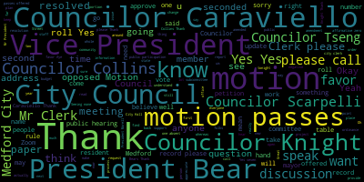

[Morell]: Jenny, I think you skipped me, but yes.
[Morell]: Present.
[Morell]: I also can't change my name.
[Morell]: So sorry.
[Morell]: I don't know why that's like still coming up like that.
[Morell]: I agree, yeah, not only will it get lost in noise, but I would assume we would get people saying they want answers to questions related to the other things happening.
[Morell]: No, I just wanted to say welcome.
[Morell]: Well, I'm actually also a URI journalism grad.
[Morell]: I looked you up.
[Morell]: So you're in good company.
[Morell]: So moved.
[Morell]: Nicole Morell 21 Ronald Lee Road and I know it's been done, but I want to do it too: former member of this August body.
[Morell]: I want to thank everyone.
[Morell]: I want to thank the mayor.
[Morell]: I want to thank the city council for bringing this forward tonight.
[Morell]: It's something people feel strongly about and they should on both sides.
[Morell]: And I know on the council and school committee in past years where there's been issues that people feel really passionate about people have said, put this to a popular vote, put this to a popular vote.
[Morell]: This has a mechanism to do that.
[Morell]: This is putting this to the people and I thank you so much for bringing this forward to let the residents of Medford decide.
[Morell]: if we want to keep doing our budgets year after year of tough decisions, of just getting by, of doing more with less, or if we want to do, I don't even want to say more with more, more with enough, more with a good start, where we can do a little bit more for our roads, be able to envision a future of Medford Public Schools and our community where budgets are not based in crisis and cuts, but envision and doing more for our students and for our community.
[Morell]: So thank you.
[Morell]: Emily?
[Morell]: Are we following all of the repertorials order and this is just a reminder of the basic ones that are most common?
[Morell]: Yes.
[Morell]: Okay.
[Morell]: Admit it man.
[Morell]: I have a question too Jenny.
[Morell]: Sure.
[Morell]: Is the idea that they're in close proximity, I know Adelbar will change that, is the idea that they're in close proximity or
[Morell]: Well, I know, obviously, obvious to me, Fuller River went through where they kept their field house.
[Morell]: Yeah, that's like a, okay, something that may be relevant to us.
[Morell]: And they just opened, right?
[Morell]: Yeah, yeah, probably a year ago.
[Morell]: Yes.
[Morell]: Yeah, absolutely.
[Morell]: Thanks, Jenny.
[Morell]: Yeah, I just feel like as a communications professional, like we're going all over the place a little bit.
[Morell]: I think we're helping to find out what questions should maybe be on the website that people wanna have answers to, but I would think just for like folks following along at home or just all of us trying to follow along, make sure, are we still on the communications or are we just kind of like going a little bit here or there just with general questions, which I totally get, but as far as...
[Morell]: bring it back to the communications and community engagement.
[Morell]: Sure.
[Morell]: You can't rename yourself?
[Morell]: I don't know why I do not see the opportunity to rename myself.
[Morell]: I can do that.
[Morell]: Thank you.
[Morell]: You haven't been on Zoom in a while, huh?
[Morell]: I like defaults to this.
[Morell]: I don't know, because I feel like I keep changing it.
[Morell]: And whenever I get on my personal computer, it just, that's what it wants.
[Morell]: Oh, go ahead, Nicole.
[Morell]: Thanks, Jenny.
[Morell]: I guess one thought I had, this looks great, and I think all these tabs make sense, just to Jenny's earlier point, is their thought is like getting a basic FAQ up kind of right away.
[Morell]: I know a lot of the frequently asked questions are already addressed or at least partially addressed on the MSBE website, whether we can pull those in or just even have, you know, five to ten like
[Morell]: What is this?
[Morell]: Like, why are we meeting?
[Morell]: Why are people meeting?
[Morell]: You know, very kind of basic stuff, since this is a little bit, not to say it's an opaque process.
[Morell]: Everything's on the website for MSBA, but most people don't know how this works.
[Morell]: Understandably so.
[Morell]: Yeah, and I think that helps just keep the number manageable too, because if you're putting down like 30 FAQs, people just check out and can't find what they want anyways.
[Morell]: Right.
[Morell]: Right.
[Morell]: Nicole.
[Morell]: Yeah, I think I think this looks good and I think it's just helpful to think of as far as like the whole ecosystem of stuff we're going to do for engagement and asking these questions because it's just like if this is just like our preliminary or first pass.
[Morell]: I think it's great and we don't it doesn't have to.
[Morell]: address every single thought.
[Morell]: I know this was like spurred by the idea of FAQs and then we kind of it's already evolving but then just thinking like are we you know how many other surveys or other outreach things are we doing so just like we don't have to necessarily have this address every single concern question we have right now but also understanding how many more or what other ways or what specific topic-based surveys or outreach we'll be putting out there.
[Morell]: Yes, that's a good.
[Morell]: Yeah, those are good questions.
[Morell]: Yeah.
[Morell]: And when you say this phase, this is the phase that goes until January.
[Morell]: It's hidden.
[Morell]: Nicole?
[Morell]: Just a thought as far as like, I know
[Morell]: Online tends to be, of course, all this stuff is going to exist online, but directing folks there, if there is a thought of like some physical signage, whether it's like stuff that can literally be like at city hall with a QR code or on like, you know, we could even do like.
[Morell]: If there's budget for just like some lawn signs that could be on some public spaces with a QR code where people can then find out.
[Morell]: Cause if people aren't on Facebook or all the usual channels, we could have all this beautiful information and people, you know, a certain subset of people will still have no clue.
[Morell]: I think that makes sense because I think my thought was like doing like a roadshow, but to your point, not everything is going to be relevant to everybody.
[Morell]: And we also don't want to exhaust the resources of the volunteers, but you know, in a very long process.
[Morell]: So yeah, I think finding out where, what are different commissions or maybe dial in or be interested in an update and then using folks to, you know, have like a,
[Morell]: Decided upon presentation or something and having different representatives be there.
[Morell]: Hopefully.
[Morell]: Hopefully we could do that in a way where it's not like, always, you know, Jenny Graham going to 16 meetings.
[Morell]: But we can have different volunteers from the committee go to different commissions and committees.
[Morell]: Some of them are explicitly outlined in the charter and others are ad hoc.
[Morell]: Okay.
[Morell]: Yeah, I mean, I think there's the option of attending community events or just I'm thinking like the farmers market or something doesn't have to obviously be every week, but just let people know this is happening and how they can learn more and get involved.
[Morell]: The clippership lawn.
[Morell]: I can't think either.
[Morell]: Something like that.
[Morell]: I can't think of it.
[Morell]: I mean, I'm happy to be tagged in as like a support for anything that's like explicitly comms related since that's my wheelhouse among other wheelhouses, but that's what I do during the day.
[Morell]: Yeah.
[Morell]: I am happy to help with graphics and like putting slides and presentations together or generating new imagery or anything like that.
[Morell]: Motion to recommend to the larger committee.
[Morell]: Yes.
[Morell]: President.
[Morell]: President.
[Morell]: President.
[Morell]: President.
[Morell]: President.
[Morell]: President seven present none absent the meeting is called to order.
[Morell]: Vice President Collins moves to consolidate all of the bullet points under category one into the recommendation to maintain level service for the schools, library, the Board of Health, Prevention and Outreach, and PBS department, including all currently grant-funded positions.
[Morell]: I think so.
[Morell]: This committee report has a paper number.
[Morell]: Yes.
[Morell]: Yes.
[Morell]: Yes.
[Morell]: Yes.
[Morell]: Yes.
[Morell]: Yes.
[Morell]: Yes.
[Morell]: Yes.
[Morell]: Yes.
[Morell]: Yes.
[Morell]: Yes.
[Morell]: Yes.
[Morell]: Yes.
[Morell]: Yes.
[Morell]: Yes.
[Morell]: Yes.
[Morell]: 25th regular meeting, December 19th, 2023, is called to order.
[Morell]: Madam Clerk, please call the roll.
[Morell]: Madam Clerk, please call the roll.
[Morell]: Present.
[Morell]: Present.
[Morell]: 7 present, 0 absent.
[Morell]: Please rise to salute the flag.
[Morell]: Announcements, accolades, remembrances, reports, and records.
[Morell]: Records of the meeting of December 12th, 2023 were passed to Councilor Collins.
[Morell]: Councilor Collins, how did you find them?
[Morell]: I find them in order and I move for approval.
[Morell]: Second.
[Morell]: On the motion of Councilor Collins, seconded by Councilor Caraviello.
[Morell]: All those in favor?
[Morell]: Aye.
[Morell]: All those opposed?
[Morell]: Motion passes.
[Morell]: All those in favor?
[Morell]: All those opposed?
[Morell]: Motion passes.
[Morell]: 2-3-4-1-2.
[Morell]: Adam Dash and Associates Attorneys at Law.
[Morell]: This paper has been before us a number of times, so unless Councilors need a reminder, I'm happy to hand it over to Attorney Dash, yep, you're good, to provide us with an update on where we stand.
[Morell]: Thank you, Attorney Dash.
[Morell]: We do have Director Hunt on the call.
[Morell]: I just want to offer that perspective or any comments.
[Morell]: Thank you.
[Morell]: Vice Mayor and Councilor Knight.
[Morell]: Do you think January 9th is a realistic date?
[Morell]: We do have Planner Evans on the call as well.
[Morell]: Danielle, is there anything you'd like to add?
[Morell]: So we have a motion to table to January 9th for vices affair, seconded by Councilor Tseng.
[Morell]: All those in favor?
[Morell]: All those opposed?
[Morell]: Motion passes, table to January 9th.
[Morell]: Thank you again.
[Morell]: Yeah, and you know how difficult it can be.
[Morell]: Have a good night.
[Morell]: Thank you.
[Morell]: 23474, correct? 23474.
[Morell]: offered by vices and bears, whereas the election commission voted 3-1 to postpone discussion of the council's request for a report on the 2023 election issues to the commission's January 2024 meeting.
[Morell]: Now, therefore, be it resolved by the Medford City Council that a report be placed on the reports due slash deadline section of the council agenda titled 2023 Municipal Election Process Errors and Accountability Report with the deadline of the January 23rd, 2024 regular meeting for a presentation by elections manager Ripley and election commissioner chairperson Miller.
[Morell]: be it further resolved that the council adds the following requests to that report.
[Morell]: One, any issues with the process for filing for a recount and why it took so long for the candidates and the public to be notified.
[Morell]: Two, any process issues in preparation for the recount.
[Morell]: And three, what systems will be put in place to ensure prompt and timely notification of any issues or errors to the public to ensure trust is maintained when errors are made.
[Morell]: Vice Mayor.
[Morell]: Thank you.
[Morell]: Councilor Collins.
[Morell]: Thank you.
[Morell]: Any further discussion from councilors?
[Morell]: Councilor Cabral.
[Morell]: Thank you.
[Morell]: Councilor Knight.
[Morell]: Thank you.
[Morell]: Councilor Caraviello.
[Morell]: Thank you.
[Morell]: Any further discussion from Councilors?
[Morell]: Second.
[Morell]: The motion by Vice-President Bears, seconded by Councilor Scarpelli, as amended by Councilor Scarpelli, and amended by Councilor Caraviello.
[Morell]: All those in favour?
[Morell]: Aye.
[Morell]: Opposed?
[Morell]: Motion passes.
[Morell]: The next resolution is for me, unless Councilors object.
[Morell]: I think it's for you, Chair.
[Morell]: 23475, offered by President Morell, be it so resolved that the council explore and consider language for an ordinance regulating blasting and earth removal within the city.
[Morell]: This is something...
[Morell]: I didn't call for participation, but no, I didn't know, but you always can't.
[Morell]: I mean, if you want to wait for participation or Councilors, I know we, yeah, we'll get, yeah, we'll, we'll go back to it.
[Morell]: I apologize.
[Morell]: 23475, offered by President Morell, be it so resolved that the council explore and consider language for an ordinance regulating blasting and earth removal within the city.
[Morell]: This is something I already introduced, but apparently I didn't.
[Morell]: This was originally kicked off, of course, by the giant hole that exists, continues to exist, that's still not houses, on Winthrop Street, that we had myriad complaints about, lots of issues, and then I think was kicked off again as
[Morell]: the we're looking at that deed restriction understanding there's a lot of ledge in that area my intention in this is not to this is obviously for the future my intention is not to say hey there's no blasting but just understanding that a lot of the issues relating from the Winthrop Street project is that we have nothing on the books as far as regulations and permits and steps that people have to follow when they're actually doing that so making sure we have some steps that make sure that our the
[Morell]: residents and neighbors in the area aren't disturbed in the way that they were with the Winthrop Street project and it's done in a completely different way that respects our residents and make sure that we have permits approvals and process in place to make this a much better experience should it go forward in any place in the city than what happened on Winthrop Street.
[Morell]: So, go ahead Councilor Tseng.
[Morell]: Thank you.
[Morell]: Councilor Caraviello.
[Morell]: Thank you, Councilor Caraviello.
[Morell]: Any further discussion from the Councilors?
[Morell]: Any members of the public wish to speak on this?
[Morell]: On the motion of Vice President Bears to revert to the Zoning Subcommittee, seconded by Councilor Tseng.
[Morell]: All those in favor?
[Morell]: All those opposed?
[Morell]: Motion passes.
[Morell]: Going to 23476.
[Morell]: To Honorable President and members of the Medford City Council, regarding Community Preservation Committee appropriation requests, on behalf of the Community Preservation Committee, I respectfully request and recommend that Your Honorable Body approve the following recommendations of the Community Preservation Committee, requesting the appropriation of $115,000 from the CPA General Reserve to the Royal House Enslaved Quarters for the Royal House Roof and Gutter Restoration Project, requesting the appropriation of $145,000 from the CPA General Fund to Shiloh Baptist Church,
[Morell]: for the Shiloh Baptist Church construction project.
[Morell]: The project will be tracked in the Community Preservation Fund.
[Morell]: The CPC recommendation letters are attached and incorporated.
[Morell]: Thank you for your consideration.
[Morell]: Respectfully submitted, Brown, Lungo-Koehn, Mayor.
[Morell]: Any discussion, questions from the Council?
[Morell]: I know we have Teresa here.
[Morell]: Seeing none, motion of Councilor Knight to approve, seconded by Councilor Scarpelli.
[Morell]: Madam Clerk, apologies, please call the roll.
[Morell]: Yes.
[Morell]: The affirmative.
[Morell]: Is there any negative?
[Morell]: The motion passes.
[Morell]: second by Councilor Tseng all those in favor.
[Morell]: All those opposed.
[Morell]: Motion passes.
[Morell]: Public participation.
[Morell]: Melanie, if you'd like to.
[Morell]: In general, but I mean, yeah.
[Morell]: In general, but.
[Morell]: We have one more person.
[Morell]: Name and address the record, please.
[Morell]: We do have the nice words about Councilors section coming up for the agenda too.
[Morell]: No, if you're up to say nice words about Councilors, we're gonna do that next.
[Morell]: Do I have a motion to revert back to regular order of business?
[Morell]: Motion by Vice President Bears, seconded by Councilor Collins.
[Morell]: All those in favor?
[Morell]: All opposed?
[Morell]: Motion passes.
[Morell]: Going to 23471, offered by Vice President Bears.
[Morell]: Be it resolved by the Medford City Council that we commend Councilor Caraviello for his outstanding service on the Medford City Council from 2012 to 2024.
[Morell]: Vice President Bears.
[Morell]: Thank you.
[Morell]: Councilor Scarpellilli.
[Morell]: Thank you.
[Morell]: And if I could.
[Morell]: Councilor Caraviello, I have a tremendous amount of respect for you and what you brought to this council.
[Morell]: As everyone has said, you absolutely put your money where your mouth is.
[Morell]: I know anytime a constituent has an issue, you're either on the phone or you're down at City Hall.
[Morell]: I think anytime I've been at City Hall, no matter how many days I'm here, someone's always saying, Rick was just here, you know, fixing whatever issue.
[Morell]: And you don't hear about it the large majority of the time.
[Morell]: You're not at the council meeting saying, I did this, this, and this.
[Morell]: You quietly do a lot of things for a lot of people.
[Morell]: And that makes, that's a really, it's just a really positive thing for the city and for individuals.
[Morell]: And as Councilor Scarapelli said, you put it all out there running for mayor, which is just, it takes a tremendous amount of courage and time and dedication to do that.
[Morell]: No matter who you talk to, regardless of who they were supporting for mayor, there was never a bad thing that could be said about Rick Caraviello, the person.
[Morell]: You know, whoever politics may lie, everyone could say that you're a tremendous person.
[Morell]: You leave just a vast amount of knowledge when you leave this body and we're going to be, or they're going to be a little bit poorer for it.
[Morell]: But I think to Vice President Bair's point, I know that you're just a short phone call away when they have those questions.
[Morell]: So I, you know,
[Morell]: being the kind of person you are.
[Morell]: I think that's just a little bit of comfort knowing we're losing you, but we know where to find you, and you'll give us a little bit of your time once more.
[Morell]: So I thank you for that, and I know there's folks here who want to speak in the audience, but I know if you want to speak now, we want to wait for everyone to kind of say their piece.
[Morell]: If folks want to speak, I don't know if Rep Donato, if you want to start, or former Councilor Marks.
[Morell]: Is there anyone else who would like to speak?
[Morell]: I'll hand it over to you, Pastor Carmelo.
[Morell]: Do you want to do it?
[Morell]: You do it.
[Morell]: Yes, Councilor Caraviello, you wanna add?
[Morell]: Thank you, Councilor Caraviello.
[Morell]: Going to 234, oh sorry, on the motion.
[Morell]: This guy, president.
[Morell]: On the motion of Vice President Bears, seconded by Councilor Tseng.
[Morell]: All those in favor?
[Morell]: All those opposed?
[Morell]: Motion passes.
[Morell]: Going through 23472, offered by Vice President Bears.
[Morell]: Be it resolved by the Medford City Council that we commend Councilor Knight for his outstanding service on the Medford City Council from 2014 to 2024.
[Morell]: Vice President Bears.
[Morell]: Thank you, Madam President.
[Morell]: Thank you.
[Morell]: We have a few more Councilors, including myself, but we're going to go to Rep Donato first because he has to go.
[Morell]: So we're going to jump the line.
[Morell]: Just gonna wait for the mic.
[Morell]: Yeah, hit the button on the mic.
[Morell]: Oh, no, go ahead again.
[Morell]: There you go.
[Morell]: Thank you.
[Morell]: Thank you.
[Morell]: Thank you.
[Morell]: Thank you, Councilor Knight for briefly sharing.
[Morell]: So we'll go to Councilor Tseng.
[Morell]: Thank you.
[Morell]: Councilor Knight, as has been said by most of us, or all of us, you make everyone on this Council better.
[Morell]: No matter the resolution I introduce, no matter how innocuous or how controversial, part of my preparation is trying to get into your head and think as best as I can every legal, procedural, historical argument that you're going to make.
[Morell]: I'm not sure I've ever gotten all of them, but I think I've started to get close.
[Morell]: And I know that your skill and tenacity demands the same of every single Councilor behind this rail.
[Morell]: As everyone has said, there is no denying how smart you are and how you know your stuff.
[Morell]: And on the off chance that you don't know your stuff, you know how to present it in a way.
[Morell]: that makes the rest of us question if we know our stuff.
[Morell]: So you keep us on our toes, for sure, and that will be missed.
[Morell]: Your dedication to Medford, to the workers of Medford, to labor, your knowledge and your humor will be greatly missed in this body.
[Morell]: I'm sad to see you go, but it's been great to have you back, if only for a few meetings.
[Morell]: and remind us kind of what was missing, that little, that salt, that something that was missing that keeps us all awake and engaged.
[Morell]: So I thank you for your service and excited and nervous to see what you do next.
[Morell]: We'll go to former Councilor Marks and then anyone else.
[Morell]: Anyone else would like to speak?
[Morell]: Councilor Knight.
[Morell]: The clock is to count down to the chair.
[Morell]: So on the motion of Vice President Bears, seconded by Councilor Collins, all those in favor?
[Morell]: Aye.
[Morell]: All those opposed?
[Morell]: Motion passes.
[Morell]: 23473, offered by Vice President Bears, be it resolved by the Medford City Council that we commend President Morell for her outstanding service on the Medford City Council from 2020 to 2024.
[Morell]: Vice President Fares.
[Morell]: I said that.
[Morell]: Thank you.
[Morell]: This is a funny position to like calling people to say nice things.
[Morell]: Councilor Collins.
[Morell]: Thank you.
[Morell]: Councilor Caraviello.
[Morell]: Thank you.
[Morell]: save it out for last.
[Morell]: Thank you.
[Morell]: Councilor Sen.
[Morell]: Thank you.
[Morell]: Councilor Knight.
[Morell]: Thank you.
[Morell]: Former Councilor Marks.
[Morell]: I'm keeping everyone engaged.
[Morell]: Thank you, Councilor Marks.
[Morell]: I really appreciate you coming up and saying some kind words and some true words.
[Morell]: And hopefully now that we're both out of office, I won't get so nervous every time I see you either sitting there or approaching the podium.
[Morell]: So one last time, I appreciate it.
[Morell]: I want to thank everyone for their kind words.
[Morell]: I truly love this job and there are times that I think I'm not half bad at it.
[Morell]: There are times I think I'm terrible at it and there are times I think I'm great, but they all even out in the end.
[Morell]: So deciding not to run this year was one of the hardest decisions I've probably ever had to make.
[Morell]: I think as comes through on the council is I usually
[Morell]: know exactly how I feel about something.
[Morell]: I'm always listening, but I usually know how I feel.
[Morell]: I know how I'm going to go.
[Morell]: And this is something that I really wrestled with for months and probably, honestly, the better part of two years.
[Morell]: But like everyone in these seats, I also have a full time job.
[Morell]: and I have a favorite constituent who is just about two years old and who has shared his whole life with this council.
[Morell]: So I'm stepping away to spend more time with him in those early precious years, which I know you all know, but I think, again, without the lack of paper and all these things, sometimes that's information that hasn't been shared.
[Morell]: I care about this job.
[Morell]: I love this job.
[Morell]: I care about my son.
[Morell]: I love my son.
[Morell]: I want to spend some time with him.
[Morell]: You know, there's a saying in parenting that the days are long, but the years are short, which I know all the parents here will agree with.
[Morell]: And I think I'd like to extend that to city council where the meetings are long, but the years are short.
[Morell]: I can't believe it's been four years.
[Morell]: I can't believe it's only been four years.
[Morell]: I can't believe it's been a long four years and it's been a short four years.
[Morell]: I think starting this whole journey just before the pandemic I know we all have that feeling of time kind of collapsing in on itself and it feels like so long ago I started in this body, but it's only been just a few years.
[Morell]: We did a lot of great work as a council.
[Morell]: There's a lot of great work left to be done, a lot of work left to be done.
[Morell]: I'm not going to go through everything we worked on because this isn't a campaign speech, but there's a lot that I'm proud of.
[Morell]: And I just want to note that
[Morell]: We often say that it's a privilege to do this job.
[Morell]: It's a privilege to represent your peers.
[Morell]: It's a privilege to serve the public.
[Morell]: And beyond that, it's also an extreme privilege to have the opportunity to meet and strike up conversations with and friendships with people that simply wouldn't happen if you didn't have the access and the welcome that this role gives you.
[Morell]: And so I think every person that I've spoken with for that, whether we agreed or not, the ability to sit down with someone or pick up a phone call and have a conversation with something has been a privilege and really a gift.
[Morell]: And another gift, which, you know, there are nights
[Morell]: I can't believe I'm saying this, but it's all of you behind the rails.
[Morell]: I think there's something going on in this body since, you know, I think the past two years in particular that there's a camaraderie and a respect that I think we all know is
[Morell]: quickly or has already left much of politics, but I think it's still alive and well behind the rail where, as has been said, we all don't agree a lot of times.
[Morell]: It gets heated sometimes, but I think at the end of the day we know there's a deep respect.
[Morell]: There's usually, you know, after some of our, even during some of our most challenging meetings,
[Morell]: there's a time where we can have a few jokes and let out some of that tension and remember that we all respect each other and no one here holds a grudge.
[Morell]: I want to say very briefly about people going around the room.
[Morell]: I've already said my nice things about Rick and Adam, but Justin, it's been a pleasure to serve with you and just to have your cerebral and considerate approach to everything and also have a resident Harvard man.
[Morell]: Kit, you are the epitome of speak softly and carry a big stick.
[Morell]: And I think everyone learned that one or two budgets ago.
[Morell]: And it's just been so good for my soul to have another woman on the council that I can kind of just look at sometimes or catch a smile from in those heavy meetings.
[Morell]: George, I think it may have taken us a longer path than some to get to that place of friendship, but we got there.
[Morell]: And I truly respect you.
[Morell]: And I just, we've been able to have some conversations this term in particular, just to say, Hey, you know, I don't agree with you on this, but I want you to know it's no hard feelings.
[Morell]: And I know you're doing what you think you believe is right.
[Morell]: And I think that's a, it's a two way street and I really respect you.
[Morell]: And vice president Bears, when I was first running and working really hard, someone pulled papers on the very last day and I thought, who is this Zach Bears?
[Morell]: Why is he trying to ruin me?
[Morell]: And the answer over to that, who is this Zach Bears, is he's a friend, he's a confidant, he's someone who, when I had a one week old, a one month old, a one year old, allowed me to be in this position as president, who helped me with some of the logistics and all those things that go on behind the scene and allowed me to serve and fulfill this role and chair the body as I was home with a little tiny newborn for those first eight weeks.
[Morell]: This is a demanding job.
[Morell]: It's a fulfilling job.
[Morell]: It's so important and I'm so thankful to the residents who put me into this position, giving me the opportunity to do this.
[Morell]: I hope you remember me if I decide to come back and
[Morell]: I'm not going to make Rick's mistake, but I thank my family who allowed me to be here.
[Morell]: I think one of the, I knew I would have the logistical support to be here.
[Morell]: I thank my husband for that.
[Morell]: Um, but emotionally it's really hard and everyone makes that sacrifice, you know, Tuesday, Wednesday, all the nights, all the mornings, all the phone calls.
[Morell]: Um, and right now I want to spend that time with my son, but I do want to say farewell and thank you.
[Morell]: And I'm not sure what my next move is, but for better or worse, I can assure you, you are not rid of me yet.
[Morell]: I thank you all.
[Morell]: All right, it was Zach's fault.
[Morell]: He said it was gonna be short.
[Morell]: On the motion of Vice President Bears, seconded by Councilor Tseng.
[Morell]: All those in favor?
[Morell]: Aye.
[Morell]: All those opposed?
[Morell]: Motion passes.
[Morell]: On the motion of Councilor Caraviello, seconded by Vice President Bears.
[Morell]: All those in favor?
[Morell]: All those opposed?
[Morell]: Motion passes.
[Morell]: Meeting is adjourned.
[Morell]: Great.
[Morell]: Oh, can you mute your, something's making noise.
[Morell]: Oh, no, it stopped.
[Morell]: Okay.
[Morell]: All right.
[Morell]: 23470 Medford City Council Caucus meeting.
[Morell]: Yeah, just the sound.
[Morell]: Medford City Council Caucus meeting notice Tuesday, December 19, 2023 at 6.30 p.m.
[Morell]: The meeting will take place in the Howard F. Alden Memorial Chambers on the second floor of Medford City Hall and via Zoom.
[Morell]: Madam Clerk, please call the roll.
[Morell]: 7 present, 0 absent.
[Morell]: Meeting is called to order.
[Morell]: The members and the members-elect of the Medford City Council will hold a caucus on Tuesday, December 19, 2023 at 6.30 p.m.
[Morell]: in the Medford City Council Chamber on the second floor of Medford City Hall and via Zoom.
[Morell]: The purpose of the caucus is for the Council to hold a non-binding vote to designate a City Council President and City Council Vice President for the calendar year 2024.
[Morell]: For further aids, information, and accommodations, contact the city clerk at 781-393-2425.
[Morell]: Sincerely yours, Isaac B. Zach Bears, Council's Vice President.
[Morell]: So we do have behind the rails with us tonight, we have Councilor-Elect Emma Lazzaro, Councilor-Elect Matt Leming, and Councilor-Elect Anna Callahan.
[Morell]: They will be voting the out in addition to the city councilors that are returning and the councilors that are not returning will not be voting.
[Morell]: This is all non-binding.
[Morell]: And I will hand it to put it out for nominations.
[Morell]: or nominations for President, Vice President?
[Morell]: A nomination for Vice President Bears or Councilor Bears.
[Morell]: Why are you staring at me like that?
[Morell]: Okay.
[Morell]: A nomination for Councilor Bears for President.
[Morell]: Do I have a second on that nomination?
[Morell]: Second.
[Morell]: Seconded by Councilor Tseng.
[Morell]: Do I have any other nominations for President for the term beginning 2024?
[Morell]: Seeing none, do I have any, do you want to take the role on the president first and then go to vice president or take all the nominations first?
[Morell]: All right, so we have one nomination for Councilor Bears for president, the term started 2024.
[Morell]: Madam Clerk, if you could call the roll, so that would be the current councilors minus the outgoing councilors and the new councilors, so.
[Morell]: Yes.
[Morell]: Okay, get us, he can do whatever he wants.
[Morell]: Councilor Bears?
[Morell]: I think we'll skip Councilor Caraviello because it's outgoing.
[Morell]: Correct?
[Morell]: We skipped the outgoing, it's non-binding, so we're skipping the outgoing.
[Morell]: Okay.
[Morell]: Councilor Palacios?
[Morell]: Thank you, so that is, that's six for Councilor Bears, one abstention.
[Morell]: Yes, as we have one present.
[Morell]: So motion stands for, the non-binding motion stands for Council President Bears beginning 2024 terms.
[Morell]: Congratulations, Councilor Bears.
[Morell]: Unless you have any words, we can go to nominations for Vice President.
[Morell]: Thank you.
[Morell]: Councilor Tseng.
[Morell]: The nomination from Councilor Tseng for Councilor Collins as Vice President, seconded by Vice President Bears.
[Morell]: Do we have any other nominations for Vice President?
[Morell]: Seeing none, we will call the roll for Councilor Collins being considered for... I'm sorry?
[Morell]: No, I'm still President.
[Morell]: This is just for them, I guess, for the sake of... I don't know.
[Morell]: So we have six for Councilor Collins, one present, none against.
[Morell]: Councilor Collins has been named a vice president for the term, sorry, 2024.
[Morell]: Is there anything you'd like to say or?
[Morell]: Thank you, councillors.
[Morell]: Any further discussion?
[Morell]: Second.
[Morell]: Motion of councillor Tseng to adjourn.
[Morell]: Seconded by Vice-President Bears.
[Morell]: All those in favor?
[Morell]: Aye.
[Morell]: All those opposed?
[Morell]: Motion passes.
[Morell]: Meeting is adjourned.
[Morell]: We will return for the seven o'clock meeting.
[Morell]: When we undervalue work for a long time, changing the financials and the mindset around it becomes hard.
[Morell]: Simply reaching for equity of pay seems like an overreach.
[Morell]: 24th regular meeting, December 12, 2023 of the Medford City Council is called to order.
[Morell]: Mr. Clerk, please call the roll.
[Morell]: Present.
[Morell]: Seven present, zero absent.
[Morell]: Please rise to the plat.
[Morell]: Records, the records of the meeting of November 28th, 2023 were passed to Councilor Caraviello.
[Morell]: Councilor Caraviello, how'd you find them?
[Morell]: On the motion of Councilor Caraviello, seconded by Vice-President Bears.
[Morell]: All those in favor?
[Morell]: All those opposed?
[Morell]: Motion passes.
[Morell]: Reports of committees, 22-494, November 28th, 2023, Subcommittee on Ordinances, Rules, Budget Ordinance, report to follow.
[Morell]: Chair of the Budget Ordinances, sorry, Ordinances Rules Subcommittee, Vice President Bears.
[Morell]: On the motion of Vice President Bears, seconded by... Second.
[Morell]: Councilor Collins, all those in favor?
[Morell]: Aye.
[Morell]: All those opposed?
[Morell]: Motion passes.
[Morell]: 23-448, November 29th, 2023 can be the whole on the MBTA community zoning ordinance or to follow.
[Morell]: So this was really a Q&A with Councilors and any members of the public who wish to take part about the proposed zoning changes before us that are actually on the agenda tonight.
[Morell]: Do I have a motion?
[Morell]: On this specific favor?
[Morell]: Can we just pass this and then we'll go to you?
[Morell]: Thank you.
[Morell]: So on motion to approve by Councilor Knight, seconded by Councilor Tseng.
[Morell]: Councilor Knight, point of personal privilege.
[Morell]: You want to go through the rest?
[Morell]: Okay.
[Morell]: 23-314, December 5th, 2023, Committee of the Whole on Private Ways report to follow.
[Morell]: This was with our DPW commissioner, as well as two land use attorneys from KP Law to answer resident questions and frequently asked questions about the private ways in Medford.
[Morell]: I have a motion.
[Morell]: On motion of Councilor Tseng to approve, seconded by Councilor Collins.
[Morell]: All those in favor?
[Morell]: All those opposed?
[Morell]: Motion passes.
[Morell]: 22-533, December 6, 2023, the whole zoning RFP report to follow.
[Morell]: This was to discuss the long-awaited proposals on our next step in the zoning process, building on our recodification work.
[Morell]: We had two proposals and we left it that Vice of Affairs and I were gonna follow up on those references.
[Morell]: We had a pre,
[Morell]: I think we all agreed on where we wanted to go to next, and hopefully we'll have a decision on that soon.
[Morell]: Do I have a motion?
[Morell]: On the motion of Councilor Collins to approve, seconded by Vice Chair Bears.
[Morell]: All those in favor?
[Morell]: Aye.
[Morell]: All those opposed?
[Morell]: Motion passes.
[Morell]: Councilor Knight.
[Morell]: Thank you, Councilor Knight.
[Morell]: I'm deeply sorry for your loss.
[Morell]: Vice President Bears.
[Morell]: All right, on the motion, vices and bears suspend the rules to take those papers in that order, seconded by Councilor Caraviello, I'm sorry, Councilor Scarpelli.
[Morell]: All those in favor?
[Morell]: Aye.
[Morell]: All those opposed?
[Morell]: Motion passes.
[Morell]: Okay, so 23-412 is a paper that has come before us a number of times before.
[Morell]: 23-412, Adam Dash, Associates, Attorneys at Law.
[Morell]: regarding 12 Dell Avenue, a petition to amend deed restriction petitioners and owners, Gerald L. Alves and Janet R. Alves.
[Morell]: I think we've read this paper a number of times, unless council would want me to read it again.
[Morell]: I think we're happy to hear from the petitioner as to where we are and what's before us tonight.
[Morell]: Thank you, Attorney Dash, and thank you, Mr. and Mrs. Helms, for coming up to so many meetings at this point.
[Morell]: Do I have a motion?
[Morell]: Thank you.
[Morell]: Seconded by Councilor Caraviello.
[Morell]: Did you have something to add, Councilor?
[Morell]: So on the motion by Supervisor Bears to continue to the 19th, our next regular meeting, seconded by Councilor Caraviello.
[Morell]: All those in favor?
[Morell]: Aye.
[Morell]: All those opposed?
[Morell]: Motion passes.
[Morell]: Thank you.
[Morell]: Good evening by some bears.
[Morell]: What?
[Morell]: So it's 464 next.
[Morell]: What?
[Morell]: That's a little all over.
[Morell]: Yep.
[Morell]: Wait.
[Morell]: Oh, thank you.
[Morell]: Petitions, presentations, and similar papers.
[Morell]: 23464 petition to reverse sign denial for Raising Cane's LLC at premises formerly known as 760 Felsway, Medford, Mass, 02155, and now known as 519 Riverside Ave, Medford, Mass, 02155, signed permit S23000036.
[Morell]: I will turn it over to Councilor Scarpelli, the chair of the signed subcommittee.
[Morell]: Thank you.
[Morell]: So on a motion of Councilor Scarpelli to refer this to subcommittee seconded by Councilor Collins.
[Morell]: All those in favor?
[Morell]: Aye.
[Morell]: All those opposed?
[Morell]: Motion passes.
[Morell]: All right, 23468.
[Morell]: Page 15.
[Morell]: 23468, under communications from the mayor, request for expenditure from law department claims over $1,000, account 01-151-5762, date December 5th, 2023, to present Nicole Morel and honorable members of the Metro City Council from Breanna Lungo-Koehn mayor.
[Morell]: Claimant name, Vigilant Insurance Company, ASO Scarlett Bartlett, date of accident, October 28th, 2020, date of settlement, September 13th, 2023,
[Morell]: Date of trial, not applicable.
[Morell]: Amount of result, $4,000.
[Morell]: Claimant's attorney is John DeRiver, PA.
[Morell]: DeRiver, Stevens, Black, and Kozad.
[Morell]: Description of alleged claim.
[Morell]: The claimant, Vigilant Insurance Co., also ASO, Scarlett Bartlett, seeks compensation for a claim paid for their insured for property damages suffered from effort DPW pressure jetted sewage pipes that resulted in sewage backflow entering the basement of a home located at 58 Hastings Lane
[Morell]: The case is a subrogation matter filed by the homeowner's insurer.
[Morell]: The city has already settled the homeowner's claim at $5,000, but at the homeowner's request, the release form executed by the homeowner excluded claims from subrogation.
[Morell]: The insurer's claim was for $9,437.
[Morell]: The necessary release has been obtained from the claimant.
[Morell]: Breakdown to amount requested.
[Morell]: Medical cost, zero.
[Morell]: Lost wages, zero.
[Morell]: Property damage, $4,000.
[Morell]: Others, zero.
[Morell]: Total settlement, $4,000.
[Morell]: on a motion to have any discussion from Councilors, members of the administration on the motion of Councilor Caraviello to approve, seconded by- Second.
[Morell]: President Bears, Mr. Clerk, please call the roll.
[Morell]: Yes.
[Morell]: Seven in the affirmative, zero in the negative, the motion passes.
[Morell]: Oh, it's right here, great.
[Morell]: 23469, to December 7th, 2023, to Honorable President and members of the Medford City Council, regarding donation acceptance, dear Madam President and councilors, I respect the request and recommend that your honorable body approves under Massachusetts General Law, Chapter 44, Section 53A, a donation by Patricia Murphy of $500.00 to be used by the Park Division.
[Morell]: Respectfully submitted, Brian Lungo-Koehn mayor.
[Morell]: Motion from Vice President Bears, do we have any discussion?
[Morell]: On the motion of Vice President Bears, seconded by Councilor Caraviello.
[Morell]: Do I do that now?
[Morell]: I'm going to 23-462.
[Morell]: Tell me where it is.
[Morell]: 23462, to Honorable President and members of the Medford City Council regarding grant agreement with The Trees Medford.
[Morell]: Dear Madam President and councillors, I respectfully request and recommend that your Honorable body approve the following order.
[Morell]: Order is sponsored by Burano-Window-Current Mayor.
[Morell]: In order authorizing a grant agreement between the city and Trees Medford.
[Morell]: Summary, the order will authorize the mayor to enter into a grant agreement with Trees Medford in accordance with the provisions of General Law Chapter 44, Section 53A, pursuant to which Trees Medford will provide a grant of funds towards continuing efforts to create and maintain a public tree inventory for the city in consultation with the tree warden.
[Morell]: be ordered by the City Council of the City of Medford Assembled and by the authority of the same as follows, whereas the City of Trees Medford wish to continue urban forestry efforts throughout the City and whereas Trees Medford has expressed interest in providing a grant in the amount of
[Morell]: $12,500 to the City in support of the services necessary to continue the public tree inventory throughout the City, and whereas, pursuant to the provisions of General Law, Chapter 44, Section 53A, the City may accept and expend such grant monies with the approval of the Mayor and the City Council.
[Morell]: Now, therefore, the City Council hereby approves the grant of funds by Trees Medford to the City in support of the services necessary to continue the City's efforts
[Morell]: with respect to a public tree inventory for the city and authorizes the mayor to execute the grant agreement as attached to and incorporated in this order.
[Morell]: Respectfully submitted, Brianna Lungocard, Mayor.
[Morell]: Do we have a member of the trees, Medford or the commissioner, the DPW commissioners on the call?
[Morell]: Sorry.
[Morell]: Sorry.
[Morell]: Oh, he's in traffic.
[Morell]: Yeah.
[Morell]: Oh, he's in the traffic meeting, not in traffic.
[Morell]: Got it.
[Morell]: Commissioner McGibbon, are you here?
[Morell]: Oh, I think he's on.
[Morell]: Do you see him, Mr. Clerk?
[Morell]: He's on the phone.
[Morell]: some of the participants, and then he disappeared.
[Morell]: I think we do have Commissioner McGovern.
[Morell]: Commissioner McGovern, is there anything you'd like to add with regards to this paper as far as the grant agreement?
[Morell]: The sound's not coming through the speakers.
[Morell]: Yeah, we can hear you.
[Morell]: Thank you.
[Morell]: Any questions or discussion from the council?
[Morell]: On the motion of Councilor Caraviello to approve a secondary by Crisis Affairs.
[Morell]: It's a roll call because it's financial.
[Morell]: to Honorable President and members of the Medford City Council regarding loan order a city with water systems bond.
[Morell]: Dear President Morell and members of the City Council, I respectfully request and recommend that your honorable body approve the following loan order.
[Morell]: City of Medford loan order water bonds be ordered that the 3,422,000 is appropriated for the purpose of making improvements to the city's water system, including constructing and reconstructing water mains and other costs incidental and related thereto.
[Morell]: that to meet this appropriation, the treasurer, with the approval of the mayor, is authorized to borrow said amount pursuant to Chapter 44, Section 8.5 of the General Laws, or pursuant to any other enabling authority, and to issue bonds or notes of the city thereafter, that the treasurer, with the approval of the mayor, is authorized to borrow all or a portion of such amount from the Massachusetts Water Resources Authority, pursuant to the MWRA's local water systems assistant program, and in connection therewith, to enter into a loan agreement and or financial assistant agreement with the MWRA
[Morell]: and to accept any grants or the project from the MWRA, provided that the amount of the authorized borrowing shall be reduced by the amount of any such grant received from the MWRA.
[Morell]: On the motion, Vice President Bears to waive the remainder of the reading in favor of summary, seconded by Councilor Carballo.
[Morell]: All those in favor?
[Morell]: Aye.
[Morell]: All those opposed?
[Morell]: Motion passes.
[Morell]: City Engineer Bortella, are you speaking on this or?
[Morell]: I am.
[Morell]: Okay, if you wanna come up if you wanna
[Morell]: Tell us about this.
[Morell]: Thank you.
[Morell]: Can't waive the three readings because it's a financial paper, but tonight, ideally.
[Morell]: So unfortunately, we can't waive the three readings.
[Morell]: I think we could talk to the clerk about if there's funds to get it posted and advertised faster.
[Morell]: Thank you.
[Morell]: Any questions or discussion from the council?
[Morell]: And do I have a motion?
[Morell]: I have a motion from Vice President Bears to approve for first reading, seconded by Councilor Caraviello.
[Morell]: Mr. Clerk, please call the roll.
[Morell]: Yes, I'm in the affirmative, you're in the negative, the motion passes for first reading.
[Morell]: 23467, I believe that's my paper, so I will go in first to the chair, so vice president Bears.
[Morell]: Thank you, Vice President Bears.
[Morell]: So first, I'd like to amend my letter if I could, Mr. Clerk, for the record.
[Morell]: My language was not clear.
[Morell]: Though the school committee has largely been women for the better part of a decade, it was more evenly split before that.
[Morell]: However, my statement stands about the makeup of the city council and how hard it is for women to break in there.
[Morell]: Only a small number of women have ever served on the city council in Medford's history, with two more joining in January.
[Morell]: I would have meant to strike both references from the whereas if I could, thank you.
[Morell]: Historically, the school committee has been the only elected body where women could serve while city council remains majority men to this day.
[Morell]: Going back more than a hundred years ago, there've been multiple women on school committee in Medford, whereas the city council has been almost exclusively men until more recent history.
[Morell]: Historically, school committees have been paid less and valued less than that of city council statewide, countrywide as an accepted fact.
[Morell]: One reason I brought forth this resolution is to interrogate that fact.
[Morell]: School committee has many statutory powers outlined at the state level.
[Morell]: They play an essential role in the city, a role that's getting more involved and more complicated in the current political climate.
[Morell]: And like many city Councilors, they're on call essentially 24 seven.
[Morell]: But yet this body has always been seen and continues to be seen as less than.
[Morell]: One reason to me comes from a conversation I've had many times with my mother, a 35 year public school teacher.
[Morell]: is that the school committee is an extension of the schools.
[Morell]: Schools and teaching are seen as women's work, largely because it's one of the few ways women could gain employment.
[Morell]: In a country where we undervalue or often do not value women's work, be it caregiving roles, aides, paras, teachers, social workers, nurses, and the like, regardless of who is serving in these roles, men or women, we do not value them in the way that we should.
[Morell]: This is not to equate any of these positions as they are very different.
[Morell]: I absolutely understand that and believe that.
[Morell]: But it is to note that when we undervalue work for a long time, changing the financials and the mindset around it becomes hard.
[Morell]: Simply reaching for equity of pay seems like an overreach.
[Morell]: Equity of opportunity is another important reason I brought this forward.
[Morell]: This resolution is about who's not in the room.
[Morell]: I've been to many trainings and brainstorms where folks struggle with how to bring diversity of experiences and voices to the table in many, many spaces.
[Morell]: Diversity, which has been proven to make boards and organizations more successful.
[Morell]: It's something we struggle with here, but it's not unique to Medford.
[Morell]: The one answer that always comes back in these brainstorms and these thought projects is paying folks for their time.
[Morell]: I've spoken with many folks in Medford who want to be more involved, but it doesn't make financial sense for them to get a babysitter to attend a school committee meeting, let alone commit to multiple years of pay that barely covers the cost of childcare or loss of learnings they would need to cover regular meetings, negotiating meetings, grievances, executive sessions, and the day-to-day essential role of responding to residents.
[Morell]: By saying we don't value this position, we say we don't value the insight, experiences, and representation of folks who do not have the financial support and caregiver support that is needed to give to these roles.
[Morell]: This excludes folks doing shift work, folks who need two jobs to get by, people without free or low cost childcare.
[Morell]: No one does these jobs, these elected jobs for the pay, but the lack of it certainly keeps many folks from seeking them and having a representative body.
[Morell]: I've been having these conversations long before I even ran for council, so I wanted to bring this forward before the end of my term.
[Morell]: This equity discussion is important to me, and equity delayed is equity denied.
[Morell]: However,
[Morell]: I absolutely do hear you, and I really want to thank the folks who have reached out to me on email over the past few days.
[Morell]: I appreciate those just willing to hear what I have to say.
[Morell]: I understand your feelings, absolutely.
[Morell]: And I know there are many folks eager to talk tonight, and I'm eager to hear from you.
[Morell]: So reflecting on this, I would further amend this paper that I would hope for a phase-in over time to either these amounts or amounts that reflect similar cost of living increases to the council or other city employees over the past 24 years.
[Morell]: nearly two and a half decades where there were no such adjustments for the school committee.
[Morell]: Also understanding it's the end of my term, as I did not seek reelection to spend more time with my almost two year old, a testament to the trade offs of these types of jobs.
[Morell]: My motion is to send this to the committee the whole so that the incoming council may consider it if they so choose and explore what they would like based on the conversations we have here tonight and ongoing conversations.
[Morell]: So I thank you for your time.
[Morell]: I thank you for your respect as I share this tonight.
[Morell]: I know it's a topic that people feel very, very strongly about, and I absolutely understand.
[Morell]: And I thank you, Mr. President.
[Morell]: Point of information, it's the way Zoom works, there's like a lot of sound, it cuts out.
[Morell]: I just have a brief point of information.
[Morell]: I just want to note that no money has been moved anywhere just at this point.
[Morell]: No vote has been taken.
[Morell]: I just want to make sure that's clear, because I understand the intent of what you said.
[Morell]: I just want to make sure that's clear, because that happened.
[Morell]: I do just want to thank Ms.
[Morell]: Douglas for bringing that forward about the PFMLA.
[Morell]: I wasn't aware of that fact.
[Morell]: Vice President Bears and I actually introduced a resolution
[Morell]: two years ago about extending PFMLA to the entire city.
[Morell]: And we were essentially rebuffed by the administration about it being a possibility.
[Morell]: So it's really helpful for me to know that that is continuing on.
[Morell]: It's something that still is on our books.
[Morell]: It's nothing that's been disposed of.
[Morell]: So I hope that the next council will continue the conversation around it.
[Morell]: Thank you.
[Morell]: Thank you.
[Morell]: I'll let you know how to remember.
[Morell]: I'll teach you.
[Morell]: I just want to thank everyone for coming out and taking the time to speak.
[Morell]: Obviously, my intention was never to submit this, and to be inflammatory, my intention was to start a conversation.
[Morell]: But I think what's come out of this conversation is so much that we don't get to hear on city council.
[Morell]: We get the school budget delivered to us as such.
[Morell]: We're not at the bargaining table because we can't be.
[Morell]: So I think this really illuminates a lot of issues that they either come to us when the budget is already set in stone, or we simply just never hear about them.
[Morell]: So I really, really appreciate the time.
[Morell]: I'm sorry I won't be there to continue the conversations, at least in this role.
[Morell]: But I think a lot of important things
[Morell]: were shared tonight and I do just want to make it explicit that I never introduced this as in insult or to say that the jobs are equal to paraprofessional and the school committee.
[Morell]: I noted before my mom taught in a poor school district for 35 years special education and I know how essential
[Morell]: her powers were to the success of her classrooms.
[Morell]: And I just know how much she had to fight and how much she had to put up with and how much I think she's thankful that she retired in 2011 because your jobs are so incredibly difficult and more multifaceted and challenging than they ever have been before.
[Morell]: And
[Morell]: believe me or not, but I am so, so appreciative of the work you do.
[Morell]: And I thank you for taking the time to come out tonight, knowing you already put in a full day that is exhausting.
[Morell]: I watched my mother come home after work and just kind of pass it on the bed.
[Morell]: I know how hard your day was.
[Morell]: So I just want to make that clear again, believe me or not, but I just want to state that.
[Morell]: So thank you.
[Morell]: So, I believe we are back from recess.
[Morell]: I know I motion to revert to regular business.
[Morell]: Someone would like to revert?
[Morell]: We have someone from public participation that I thought had left and he has been here the entire time and I feel like we should take him.
[Morell]: The motion by Susan Baird to suspend the real estate public participation is seconded by Councilor Tseng.
[Morell]: All those in favour?
[Morell]: Aye.
[Morell]: All those opposed?
[Morell]: Motion passes.
[Morell]: Please come up.
[Morell]: And just name and address for the record, please.
[Morell]: You want to just list the infractions out in the email we have?
[Morell]: I'll just copy and paste.
[Morell]: Yeah, so copy and paste, and we'll make sure we get that.
[Morell]: Go to Councilor Collins.
[Morell]: Thank you.
[Morell]: Thank you so much for bearing with us.
[Morell]: 23466 offered by Councilor Caraviello, be it so resolved that Medford City Council vote to authorize the Mayor of the City of Medford to petition the General Court for a special act in the form set forth below, providing that Medford Retirement Board be permitted to retire Joseph Albino, a former uniformed member of the City of Medford Fire Department who was involuntarily retired for accidental disability retirement,
[Morell]: for superannuation retirement as provided by sections 5 and 10 of chapter 32 of the general laws of Massachusetts provided, however, that the general court may make clerical or editorial changes of form only to the bill unless the mayor approves amendments to the bill before enactment by the general court, provided further that the mayor is hereby authorized to approve amendments which shall be within the scope of the general public objectives of this petition.
[Morell]: So on the motion of Councilor Caraviello, seconded by Councilor Tseng, is that a roll call?
[Morell]: Yes.
[Morell]: It's a home rule petition.
[Morell]: Yes.
[Morell]: Six in the affirmative, zero in the negative, one absent.
[Morell]: The motion passes.
[Morell]: There's a couple more.
[Morell]: Yeah, it's a regular order.
[Morell]: All right, motion from Vice President Bears to revert to regular order of business.
[Morell]: Second by Councilor Tseng.
[Morell]: All those in favor?
[Morell]: Aye.
[Morell]: Opposed?
[Morell]: Motion passes.
[Morell]: Thank you, Councilor Tseng.
[Morell]: Hearings, two, three, four, four, eight.
[Morell]: Notice of a public hearing, Medford City Council, Chapter 94, Zoning.
[Morell]: The Medford City Council will conduct a public hearing on Tuesday, December 12th, 2023 at 7 p.m.
[Morell]: in the City Council Chamber on the second floor
[Morell]: of Medford City Hall, 85 George P. Hassett Drive, Medford Mass, 02155, and via Zoom remote video conferencing relative to a proposed amendment to the City of Medford zoning ordinance and zoning map.
[Morell]: A Zoom link to this meeting will be posted no later than December 8, 2023.
[Morell]: The purpose of the amendment is to comply with Section 3A of MGL-40A MBTA Community Zoning Law by establishing a new zoning overlay within a half-mile radius of the Wellington MBTA Orange Line station that will allow multifamily housing and mixed-use development as of right.
[Morell]: A copy of the full text of the amendment is available in the office of the city clerk and on the city's website www.medfordma.org slash department slash planning dash development dash sustainability by clicking on current city board filings.
[Morell]: For additional information and aids for accommodations aids call the Medford city clerk's office at 781-393-2425 TDD 781-393-2516.
[Morell]: as advertised in the Boston Herald on October 30th and November 6th, 2023, by order of the Medford City Council, signed Adam Hurtubise, City Clerk.
[Morell]: So this was referred out to, do you wanna talk about the process?
[Morell]: You might say it better than me, but we do have, the council has received comments from the CD board, but I'll hand it to our planner and director of PDS to just remind us of the process.
[Morell]: Oh no, sorry, the clerk was just reminding me to do something.
[Morell]: So if questions are asked tonight, it may reflect that fact.
[Morell]: So I don't want that to come across as a lack of interest for anyone watching.
[Morell]: Any further discussion?
[Morell]: I just want to echo my fellow bouncers and thank you for your hard work on this.
[Morell]: Also, just not short of just being here at 10.15, 10.30 to take this.
[Morell]: Thankfully, Medford is more amenable than I think some communities have been to receiving this.
[Morell]: So we at least have that going for us.
[Morell]: But I know it's not been easy as the state continues to change and adjust and tweak here.
[Morell]: So I appreciate all the work you've done to be in compliance with this and get us to compliance with it.
[Morell]: So we do have a motion on the floor.
[Morell]: This is a public hearing.
[Morell]: This is still the way we do it.
[Morell]: We haven't figured out a better way yet.
[Morell]: But as this is a public hearing, I will open the public hearing.
[Morell]: Is there anyone who would like to speak in favor of the paper before us?
[Morell]: Thank you.
[Morell]: Is there anyone on Zoom who would like to speak in favor of the paper before us?
[Morell]: Seeing none, this portion of the public hearing is closed.
[Morell]: Is there anyone who would like to speak in opposition of the paper before us?
[Morell]: Or on Zoom or in person?
[Morell]: Seeing none, this portion of the public hearing is closed.
[Morell]: So going back to the motion for Isis of Paris to approve for first reading?
[Morell]: Or no, this is no, sorry.
[Morell]: To be ordained.
[Morell]: So on the motion of Vice President Bears, as seconded by Councilor Tseng, am I making that up?
[Morell]: Am I making it up, or?
[Morell]: Okay.
[Morell]: Yes.
[Morell]: Six in the affirmative, zero in the negative, one absent.
[Morell]: The motion passes.
[Morell]: I remember, and I guess we had to, I remember President Falco read 70 pages of the marijuana ordinance.
[Morell]: I don't know if he had to do that or not, but he did it.
[Morell]: Oh, where you live.
[Morell]: Let's wave back.
[Morell]: Going to motions, orders, and resolutions.
[Morell]: 22605, offered by Councilor Collins.
[Morell]: Chapter 70.
[Morell]: I'll at least read the title.
[Morell]: Chapter 70, Solid Waste.
[Morell]: Yeah, Chapter 70, Solid Waste.
[Morell]: Do we have a motion?
[Morell]: So we have a motion to waive the reading and for a summary from Councilor Collins who did a tremendous amount of work on this.
[Morell]: So motion for vice of affairs, seconded by Councilor Scarpelli.
[Morell]: All those in favor?
[Morell]: Aye.
[Morell]: Opposed?
[Morell]: Motion passes.
[Morell]: Councilor Collins.
[Morell]: Yeah, to echo Councilor Scarpelli,
[Morell]: for all the work you did for this.
[Morell]: And I reviewed it all and I work with this in my day job.
[Morell]: So this is very much in line with best practices and where everything is going.
[Morell]: So I really appreciate the work and just bringing this into the modern era and our needs for waste these days.
[Morell]: And it's something we definitely make jokes about.
[Morell]: It's easy to make jokes about, but it's one of those parts of the city that doesn't get talked about when it's going right.
[Morell]: The second it goes wrong,
[Morell]: you're hearing from everybody, and it impacts everybody dramatically.
[Morell]: So this is really important work, and I appreciate it.
[Morell]: As amended, yeah.
[Morell]: So we have a motion from Vice of Affairs to approve for first reading as amended, seconded by Councilor Scarpelli.
[Morell]: Mr. Clerk, please call the roll.
[Morell]: Yes.
[Morell]: Six in the affirmative, zero in the negative, one absent, the motion passes.
[Morell]: Tell your great kids how you became one of those trashy Collins.
[Morell]: 23465 offered by Councilor Scarpelli.
[Morell]: Be it resolved that the Medford City Council call for a meeting to resolve public safety concerns from
[Morell]: malfunctioning streetlights on South Porter Road and beyond.
[Morell]: If you have further resolve, the superintendent of WIRE, Steven Randazzo, a representative from the administration and a representative from National Grid to be invited to that meeting.
[Morell]: So the motion is to continue working with Rep Donato's office to schedule this, or what's the thought there?
[Morell]: Okay, thank you.
[Morell]: So on the motion of Councilor Scarpelli, seconded by Vice Mayor Bears.
[Morell]: All those in favor?
[Morell]: Aye.
[Morell]: All those opposed?
[Morell]: Motion adjourned.
[Morell]: Motion passes.
[Morell]: The motion of Councilor Scarpelli adjourned.
[Morell]: Motion, third reading.
[Morell]: All right.
[Morell]: So on the motion of Councilor Scarpell, I'd like to adjourn, seconded by Councilor Tseng.
[Morell]: All those in favor?
[Morell]: All those opposed?
[Morell]: Motion passes, meeting adjourned.
[Morell]: 22-533 committee the whole meeting wednesday december 6 2023 at 6 00 p.m is called to order. Mr. Clerk, please call the roll.
[Morell]: Present. Five present, two absent. The meeting is called to order there will be a meeting of the Medford City Council committee of the whole on Wednesday, December 6 2023 at 6pm in the Medford City Council chamber on the second for City Hall and via zoom.
[Morell]: The purpose of this meeting is to discuss an RFP for updating the Medford zoning ordinance paper 22-533.
[Morell]: The committee has invited Alicia hunt director of the office of planning development sustainability to attend this meeting.
[Morell]: For further information, aids and accommodations, contact the City Clerk at 781-393-2425, Sincerely yours, Nicole Morell, Council President.
[Morell]: So what brings us here tonight is after completing...
[Morell]: the recodification work that we had engaged with Attorney Bobrowski over two years to do that work that was completed actually last March.
[Morell]: We requested more funding from the mayor's office to get to the next phase of zoning, which we had worded as reflecting the adopted comprehensive plan to work through the zoning changes that would be needed to reflect the comprehensive plan, as well as some minor adjustments to the recodification that have passed now that they're actually in force.
[Morell]: I think maybe a few
[Morell]: just small changes.
[Morell]: So this request for proposals actually went out in June.
[Morell]: We did not receive any proposals back.
[Morell]: The thought was purely timing.
[Morell]: We believe it was time to be back right around the 4th of July holiday, close of the fiscal year.
[Morell]: So we actually put it out again.
[Morell]: Again, this is with the help of procurement with Fiona and also with Director Hunt.
[Morell]: This was put out again in October.
[Morell]: We did get two proposals that were delivered to the council, shared with the council on November 21st.
[Morell]: We've had ample time to review.
[Morell]: And based on discussion tonight, what the next steps are are to score the two proposals we have.
[Morell]: We have a little, all the Councilors have a little scoring sheet, and then that way we're able to pick out of the two who our first is, and then once we choose our first priority selection, then we can actually get the
[Morell]: costs data released and then there might be additional steps as far as negotiating costs, any additional questions like that.
[Morell]: So really we have Director Hunt here to provide any kind of background she can as far as either process or her insight into the proposals that we've received and really just opening it up for any feedback from Councilors or any additional questions that we might be able to relay to the two applicants that have provided proposals that are before us tonight.
[Morell]: So I will
[Morell]: Open it up, if Councilors have any thoughts as far as the two proposals before us, or any questions.
[Morell]: Vice-President Bears.
[Morell]: I was a big fan of that Gantt chart calendar, too.
[Morell]: Councilor Caraviello.
[Morell]: Thank you.
[Morell]: Councilor Collins.
[Morell]: Thank you.
[Morell]: Councilor Tseng.
[Morell]: Thank you, Councilor Tseng.
[Morell]: Director Hunt?
[Morell]: Thank you, Director Hunt.
[Morell]: Vice President Bears.
[Morell]: Thank you.
[Morell]: Are there questions or comments from Councilors?
[Morell]: I think to the point about the scoring sheet and having to follow up with references, I'm happy to take that on or Vice President Bears, if you want to split that, we'll each take one and we can call for references.
[Morell]: I mean, I think, yeah, and I think we've heard from Councilors.
[Morell]: I think we could definitely fill in, you know, 1A and, yeah, I think it's just 1A and B based on our conversation tonight, and then C would just be based on the references.
[Morell]: I think we're happy to, I would have to, I'm like, I don't know if that counts as deliberation if we sent the reference sheets around.
[Morell]: Thank you.
[Morell]: Yeah, I haven't spoken, but I agree with everything that's been said.
[Morell]: And I appreciate you, Director Hunt, for really kind of naming the players and the different roles that they play with the city.
[Morell]: And I do appreciate that Fisher Associates has had some work in the city.
[Morell]: So I think if for whatever reason we couldn't get what seems to be our first choice, that's very helpful to know.
[Morell]: But I think knowing that we had, you know, Attorney Bobrowski, who's a partner in this, for recodification.
[Morell]: We had Emily Innes, as far as the comprehensive plan.
[Morell]: We had her on a meeting just last week to help us understand the MBTA Communities Act.
[Morell]: And then Attorney Silverstein, who I know we've worked with a number of projects recently.
[Morell]: And then I think he also just, I can't remember what we worked with him on the council, but I know in his previous role at KB Law, we worked with him a bunch.
[Morell]: I want to say it was over 5G or something.
[Morell]: We've had many,
[Morell]: You know, I think we've all had great working relationships with him as well in the past.
[Morell]: So I think seeing that combination of folks as well as a number of folks who we haven't worked with yet, but also seem to have great qualifications, I think it's very exciting for me.
[Morell]: And maybe reflecting the will of the council.
[Morell]: Yes.
[Morell]: And yeah, well, and somewhere they're reflecting the will of the council.
[Morell]: The motion of Vice President Bears is seconded by Councilor Caraviello.
[Morell]: All those in favor?
[Morell]: All those opposed?
[Morell]: Motion passes.
[Morell]: Thank you, Director Hunt.
[Morell]: Any further discussion or motion?
[Morell]: Second.
[Morell]: The motion of Councilor Caraviello to adjourn is seconded by Vice President Bears.
[Morell]: All those in favor?
[Morell]: Aye.
[Morell]: All those opposed?
[Morell]: Motion passes, meeting is adjourned.
[Morell]: 23-314, Committee of the Whole, meeting Tuesday, December 5th, 2023.
[Morell]: It's called to order.
[Morell]: Mr. Clerk, please call the roll.
[Morell]: Present. 5 present, 2 absent, and the meeting is called to order.
[Morell]: There will be a meeting of the Medford City Council Committee of the Whole on Tuesday, December 5, 2023 at 6 p.m.
[Morell]: in the Medford City Council Chamber on the second floor of Medford City Hall via Zoom.
[Morell]: The purpose of this meeting is to discuss Paper 23-314, Private Ways in the City of Medford.
[Morell]: The City Council has invited DPW Commissioner Tim McGibbon and Attorneys Robin Stein and Sharon Everett of KP Law to attend this meeting.
[Morell]: For further information, aids, and accommodations, contact the City Clerk at 781-393-2425.
[Morell]: Sincerely yours, Nicole Morell, Council President.
[Morell]: So as the meeting notice states, this is actually from a paper from Councilor Scarpelli.
[Morell]: We've had a number of these papers over the years, honestly, usually multiple during the year, regarding questions that residents will have as far as services on private ways,
[Morell]: some of it stemming from impetus as far as in saying they used to have a certain service on their private way, they no longer have it, or understanding why they don't have a service, things like that.
[Morell]: We have had some subcommittee meetings on this where we've had Commissioner McGivern explain a lot of the role that the DPW takes on, but much of this actually enters the legal area as far as what is allowed under Massachusetts general law for practices on private ways.
[Morell]: So as such,
[Morell]: We have attorneys Everett and Stein from KP Law with us tonight.
[Morell]: I know we have a number of questions.
[Morell]: I will do my best to address Councilor Scarpelli's questions from my memory as we're here.
[Morell]: And then, so we'll just kick things off.
[Morell]: Attorney Everett or Stein, can you hear us?
[Morell]: Yes.
[Morell]: Okay.
[Morell]: Attorney Everett can hear us at least, so.
[Morell]: Before, I know I have a number of questions if Councilors have any questions that they would like to ask.
[Morell]: Vice President Bears.
[Morell]: Thank you, Vice President Paris.
[Morell]: Attorney Stein, Attorney Everett, is that something you would be able to provide?
[Morell]: Thank you.
[Morell]: One question I had I actually got from a resident.
[Morell]: So you talked about, I think, the ability of
[Morell]: all I think you said, it has to be every abutter on a private way has to agree.
[Morell]: Could residents on a private way, I'm not an abutter, but residents, could residents on a private way, if everyone on the street agreed, could they put like a speed hump on their road?
[Morell]: Or does that exist in some other plane of regulation?
[Morell]: Sorry, can you hear me now?
[Morell]: Okay.
[Morell]: No, they can't hear us, Kevin.
[Morell]: It's just faint.
[Morell]: Can you hear me now?
[Morell]: OK, so could I had a question from a resident that asked if they got everyone on their private way to agree, could they actually install a speed hump on their private way or does that exist under some other regulation?
[Morell]: Okay.
[Morell]: Thank you.
[Morell]: And not that anyone is asking this.
[Morell]: So just making sure I'm understanding that kind of the way that, you know, every level up from the city is what Trump's like MGL, Trump, you know, you follow MGL and then city law and federal kind of that thing.
[Morell]: We can't, people couldn't suddenly say, we want our private way to have a 55 mile per hour speed limit.
[Morell]: And that, you know, just making sure that the city regulations apply first.
[Morell]: And then if folks want to work within that city regulation to make some changes to their street, they can.
[Morell]: or city ordinances apply first?
[Morell]: I'm just saying, so I guess another way to phrase it is like, we can't make an ordinance in Medford that supersedes or goes, supersedes MGL.
[Morell]: And MGL can't make a, you know, the state house can't pass a law that supersedes federal law.
[Morell]: So I'm just saying that the-
[Morell]: Yeah, so private way folks can't make some law that is outside of or some regulation that is outside of city ordinances.
[Morell]: All city ordinances still apply.
[Morell]: Thank you.
[Morell]: So I think actually a lot of the questions we get are related to services.
[Morell]: So I think regulation, I think that makes sense.
[Morell]: I think where folks get confused, understandably so, is
[Morell]: you know, they're told they have a, they know they live on a private way and outside of the fact that we all pay the same taxes regardless of what type of street we live on, they get some city services.
[Morell]: So the street may be plowed or there may be, you know, if sometimes when branches fall into the road, like large branches, they may be picked up, things like that.
[Morell]: If folks request a stop sign, it gets installed.
[Morell]: So where's the line there as far as services that cities with private ways
[Morell]: can or do provide and then ones that would be going outside and would be deemed using public funds for private goods?
[Morell]: Okay, and could you, you were hard to hear a little bit before, could you repeat back the section of MGL that was adopted, opted into for that?
[Morell]: So an example for that, I have a very specific example, is that on a private way, it just has a catchment basin that, because of increased rain events, it's just overflowing.
[Morell]: there wouldn't be really anything that the city could do to fix that, because that needs a complete overhaul.
[Morell]: It needs to be likely tied into the city sewer to avoid that problem.
[Morell]: And that would not be considered a temporary repair.
[Morell]: That would be a permanent.
[Morell]: Thank you.
[Morell]: I'm going to go to Commissioner Gabert.
[Morell]: Thank you.
[Morell]: I believe Councilor Scarpelli is on the call now.
[Morell]: Councilor Scarpelli, I know you had requested this meeting.
[Morell]: If you have specific questions that you wanted to ask.
[Morell]: I'll give her a beat, assuming that's him.
[Morell]: One question, again, a specific instance that we've had
[Morell]: A lot of, I live on a private way, I have no idea why it's a private way or where the papers are, you know, I don't get anything like, I did not get anything like that when I, you know, I bought my house.
[Morell]: But folks have said, folks who have been in their home for a really long time, we had a specific example of someone saying that the city donated a tree, they planted a tree in front of my house on a private way before I was the owner of the house, I didn't ask for this tree, and now it's damaging the sidewalk in front of the house.
[Morell]: So since the city planted the tree, isn't this the city's responsibility?
[Morell]: So what is the legal opinion on something like that?
[Morell]: It happens a few.
[Morell]: It's happened more than once.
[Morell]: Okay, thank you.
[Morell]: I'll go to Councilor Caraviello.
[Morell]: Thank you, Councilor Caraviello.
[Morell]: Um, attorney ever signed in your opinion, I mean, should there be
[Morell]: I know we just got a few new street trees planted on my private way.
[Morell]: Big fan.
[Morell]: But I mean, in your opinion, should there be something that folks are given notice or something now that this tree is on their private way?
[Morell]: it becomes their responsibility.
[Morell]: I guess that as a question to Attorney Everett or Stein, is that something that would
[Morell]: behoove the city to do.
[Morell]: And Commissioner Ray, I don't know if you have anything to add.
[Morell]: You know what?
[Morell]: Oh, sorry.
[Morell]: I'll just go to Commissioner McGibbon just from the DP.
[Morell]: Sorry.
[Morell]: Thank you.
[Morell]: I'll go back to you, Attorney Everett.
[Morell]: Thank you.
[Morell]: I was going to ask Commissioner McGovern, I guess, so in those instances, what does the official kind of DPW stand say?
[Morell]: I'm on a private way.
[Morell]: We don't know who planted the tree.
[Morell]: We think it was a city, we have a story that it was a city, and now it's bringing up my sidewalk.
[Morell]: How does the DW approach that?
[Morell]: Thank you.
[Morell]: Any other questions from councillors at this time?
[Morell]: I did see Councilor Favelli is unfortunately unable to join us, but I do think we're
[Morell]: covering the bulk of the kind of the recurring questions we do get.
[Morell]: Another question, oh, go to Councilor Caraviello.
[Morell]: Thank you for sure, Gabriel.
[Morell]: Thank you.
[Morell]: Vice President Bears.
[Morell]: Thank you.
[Morell]: Commissioner Gibran, in that same thought,
[Morell]: This might be a city engineer question, but I guess it's kind of all the same.
[Morell]: Has the city identified any streets that they would want to convert to public ways, or is it the position of the city that they're only looking at resident-driven desire to convert, understanding it's costly and involved?
[Morell]: Thank you.
[Morell]: And just to kind of go a little bit down that path, again, not that there's any specific plans, but thinking, again, I live in a private way, so
[Morell]: Sometimes I'd assume that to make those betterments, like we have a very narrow sidewalk.
[Morell]: I would think the sidewalk would have to be up to ADA standards.
[Morell]: And would that be, it would involve some, you know, some taking of like front lawns or, or widening the road or things like that.
[Morell]: Thank you.
[Morell]: Councilor Caraviello, did you have another question or is your hand still up?
[Morell]: Thank you.
[Morell]: Vice President Paris.
[Morell]: Are there any other questions from Councilors at this time?
[Morell]: I see a resident or two on the call, so I want to make sure we get to them if they have questions.
[Morell]: Seeing none, if there's any folks on the Zoom who have a question, please raise your hand.
[Morell]: I don't see any at this time, so I'll go back to one more very specific scenario.
[Morell]: I probably know the answer.
[Morell]: So if we have one of the trees that we think the city planted at some point on a private way, it comes down and it, you know, damages a piece of property on the private way.
[Morell]: That is not the, our reading of the law is that that is not the city's responsibility.
[Morell]: Okay.
[Morell]: That's correct.
[Morell]: Yes.
[Morell]: Great.
[Morell]: Thank you.
[Morell]: Any other questions at this time?
[Morell]: Councilor Collins.
[Morell]: Thank you.
[Morell]: Councilor Tseng.
[Morell]: Thank you.
[Morell]: I also just want to echo the thanks.
[Morell]: I know it's not always fun to give people the answer that maybe isn't the answer they want.
[Morell]: So I appreciate you being able to give the answers.
[Morell]: Any further discussion from Councilors?
[Morell]: Vice President Bears.
[Morell]: Yes, likewise.
[Morell]: Thank you, Attorney Stein.
[Morell]: Attorney Everett, I appreciate it.
[Morell]: And although I feel like you are probably more well-versed and always happy to tell people answers that they don't want, but always welcome and appreciate the time and insight.
[Morell]: Do I have a motion?
[Morell]: Councilor Collins.
[Morell]: I have a motion from Councilor Collins to receive and place on file and adjourn, seconded by Councilor Tseng.
[Morell]: Mr. Clerk, please call the roll.
[Morell]: Yes.
[Morell]: Five in the affirmative, zero in the negative, two absent, motion passes and meeting is adjourned.
[Morell]: Thanks everyone.
[Morell]: Okay.
[Morell]: Uh.
[Morell]: 23448 Committee.
[Morell]: The whole meeting met for City Council notice Wednesday, November 29th 2023 at 6 30 P.m.
[Morell]: Meeting is called to order.
[Morell]: Mr
[Morell]: Councilor Tseng, President, President Morell present six present one absent.
[Morell]: There will be a meeting of the Medford City Council committee the whole on Wednesday November 29 2023 at 630pm via zoom only the purpose of this meeting is to discuss the MBTA community zoning ordinance.
[Morell]: The committee has invited Alicia hunt director of the Office of planning development sustainability and senior planner Daniel Evans to attend this meeting.
[Morell]: For their information aids and accommodations contact the city clerk at 781-393-2425.
[Morell]: Sincerely yours, Nicole Morell, Council President.
[Morell]: So as the notice states, this is designed to be sort of an information session for the proposed zoning relative to the MBTK communities.
[Morell]: Act so that came before the council at our not this not last night but our previous regular meeting that by procedure and statute we refer to the CD board.
[Morell]: It is something that has an end of the year deadline and as was presented by director hunt to us, there's a lot of
[Morell]: specifics that came down from the legislature.
[Morell]: So there's not a whole lot of wiggle room communities have Medford any community affected by this.
[Morell]: So I know we have Emily Ness, a consultant that's helping the city that has a presentation for us.
[Morell]: And I just want to make sure that due to the short timeline, we can have Councilors that have questions, concerns, have those addressed.
[Morell]: Hopefully folks
[Morell]: can join us from the public.
[Morell]: I know meeting on zoom only and a little bit later, because there's the holiday event that's taking place in the chambers right now, but we are still on deadline for this.
[Morell]: So it's important that we meet.
[Morell]: Unless Councilors have questions or statements before we start, we could hand it over to Emily to give us a short presentation.
[Morell]: Seeing none, Emily, I'll let you take it away.
[Morell]: Thank you, Director Hunt.
[Morell]: That's a helpful reminder.
[Morell]: And thank you, Emily, for that presentation.
[Morell]: So I will open it up if councillors have any questions.
[Morell]: Councilor Collins.
[Morell]: Thank you.
[Morell]: Does that cover your questions, Councilor Collins?
[Morell]: It does.
[Morell]: Thank you very much.
[Morell]: Any other questions from Councilors?
[Morell]: Vice President Bears.
[Morell]: You're welcome.
[Morell]: Thank you.
[Morell]: Any other questions from councilors?
[Morell]: I do have one or two questions.
[Morell]: So I'm talking about the excluded land.
[Morell]: So the excluded land is about specifically about the station area.
[Morell]: It's not the city at large, because I know I think of like the fells, we have like a lot of excluded land, but it's just the area, the land within the station area, or the zoning area that's been chosen.
[Morell]: So it's not, yeah, so it's not necessarily excluded in that nothing can ever be built there.
[Morell]: It's excluded.
[Morell]: Okay.
[Morell]: Is there somewhere that we can see, because excluded, this is like a term that was defined within the act.
[Morell]: It's not like a previously used term, correct?
[Morell]: Okay, thank you.
[Morell]: Danielle, did you have something you wanted to add?
[Morell]: Do you need to be unmuted?
[Morell]: Yes.
[Morell]: Thank you.
[Morell]: Yeah, that's really helpful to know because I think there's been some chatter on Wellington being kind of a neglected part of the city.
[Morell]: And of course, here's a big change.
[Morell]: They just chose Wellington because no one cares about Wellington.
[Morell]: So I think that's helpful information.
[Morell]: And then just one quick question for maybe ends up being longer just Alicia and Danielle and then I'll make sure to go to other Councilors.
[Morell]: I think one thing that's been said as this has been presented to kind of help assuage just that this is a big change is that this of course this is a zoning change this does not mandate, the building of any of these units.
[Morell]: But of course, we make this zoning change then it is open, you know, it's open for anyone to present a development and because it is on this way.
[Morell]: There is little space for.
[Morell]: I don't want to say refusal but I mean people can develop these things, stuff by right that's that's how it's designed right so I just want to.
[Morell]: make clear on that because I think we go we say this is just zoning it doesn't mean units but in a place like Medford and this is how it's designed because we're zoning there's very likely development to follow.
[Morell]: I appreciate it.
[Morell]: Go to Councilor Caraviello.
[Morell]: Thank you, Councilor Tseng.
[Morell]: Thank you both.
[Morell]: Any other questions from councilors?
[Morell]: I do have one more question.
[Morell]: Director Hunt, I know you've explained this to us before, but just help me.
[Morell]: I promise I'm not being obtuse, but I know when we talk about the number of units in an area like Wellington, some of those units already exist, or what is that?
[Morell]: Like some of those units are already factored into the calculation.
[Morell]: Could you explain that again?
[Morell]: Thank you.
[Morell]: Yeah, that's really helpful.
[Morell]: I think that's what I was circling on without the words to ask it, so I appreciate that.
[Morell]: Vice President Bears.
[Morell]: Yeah, and I think that's, you know, my interpret or I received part of that is like, this is what happens when you write an act for such very different communities.
[Morell]: And we're already Yeah, we're already pretty built up in many spaces.
[Morell]: So any further questions from Councilors?
[Morell]: Or any members of the public who have questions or would like to speak?
[Morell]: All right, seeing none, Alicia, Emily, Danielle, is there anything final you'd like to say as we're here tonight, knowing we're of course going to meet on this a few more times?
[Morell]: Yeah.
[Morell]: Thank you, Vice President Bears.
[Morell]: Any further questions or do I have a motion?
[Morell]: Seeing no further questions, do I have a motion to receive and place on file?
[Morell]: Great, so I have a motion from Vice President Bears to adjourn, seconded by- Seconded.
[Morell]: Councilor Collins.
[Morell]: Mr. Clerk, please call the roll.
[Morell]: Yes.
[Morell]: Six in the affirmative, zero in the negative, one absent.
[Morell]: Motion passes.
[Morell]: Meeting is adjourned.
[Morell]: Thank you so much, Emily, Daniel, and Alicia.
[Morell]: Really very much appreciated.
[Morell]: And thank you, councilors, for excellent questions.
[Morell]: Tuesday, November 14, 2023 at 6 p.m.
[Morell]: This meeting is called to order.
[Morell]: Mr. Clerk, please call the roll.
[Morell]: Yeah, we're having some speaker issues, yeah.
[Morell]: Councilor Tseng, present or absent?
[Morell]: Present, four present, three absent.
[Morell]: The meeting is called to order.
[Morell]: There will be a meeting of the Medford City Council Committee of the Whole on Tuesday, November 14th, 2023 at 6 p.m.
[Morell]: in the Medford City Council Chambers on the second floor of Medford City Hall and via Zoom.
[Morell]: The purpose of this meeting is to discuss proposed food truck ordinance per paper 20-020.
[Morell]: The committee has invited Interim Economic Development Director Victor Schrader and Attorney Robert Stein of KP Law to attend this meeting.
[Morell]: For further information, aids, and accommodations, contact the city clerk.
[Morell]: at 781-393-2425.
[Morell]: Sincerely yours, Nicole Morel, Council President.
[Morell]: So this is an ordinance that we last visited in February of this year.
[Morell]: This is something that has been a policy that was put into place, I believe, in 2016 by then-Mayor Burke, and this whole process has been essentially streamlining that policy and really just bringing it into ordinance form, so there's no questions as far as how these permits are
[Morell]: quite forgotten and things like that.
[Morell]: At our last meeting we left it and that we wanted to pass this on through Interim Director Schrader to get additional feedback from the Board of Health as well as Fire and Police and Engineering, I believe.
[Morell]: So we do have Interim Director Schrader here tonight.
[Morell]: I'm going to pass things off to him for an update on that process and then we can open it up for discussion with Councilors but also vice president Bears.
[Morell]: There's like a reverberating sound.
[Morell]: Can you guys hear us on Zoom?
[Morell]: Give me a thumbs up.
[Morell]: Yes.
[Morell]: Okay.
[Morell]: They can hear us.
[Morell]: All right.
[Morell]: So I think I'll pass it over to Victor Schrader.
[Morell]: Thank you.
[Morell]: We'll go by some bears.
[Morell]: Thank you.
[Morell]: Thank you, Councilor Scarpelli.
[Morell]: I think, yeah, just to build on, I don't see any councilors talking at the moment.
[Morell]: To build on what Vice Mayor Bears and Councilor Scarpelli said, yeah, I think our intent was very much to just take the policy that was in place, make sure it's streamlined, and make sure it's very explicit in an ordinance, the steps that need to be gone through.
[Morell]: and of course deferring to the Board of Health for those approvals because as Councilor Scarpelli said, sometimes these come before us, they might come before us late, someone might realize they need it for an event on Wednesday, we don't need it again until the next week, so I think it's just taking this and moving it to the Board of Health which already sees these permits and just making them the deciding authority on it.
[Morell]: So I don't think, or I know, based on past conversations, we weren't looking to go into
[Morell]: zoning and all this stuff and multi-day permits, I think, by design.
[Morell]: We really wanted to focus on special permits at this time because that's what we felt comfortable about.
[Morell]: We added the provision as far as how far away from a brick and mortar.
[Morell]: These food trucks need to be parked and things like that, but it really was to simplify it.
[Morell]: And Attorney Stein, some of what you said, I absolutely understand where you're coming from, but some of what you said sounds like this is just making it a little bit more involved than was our original intent.
[Morell]: So I can kick it back to you.
[Morell]: I don't see any other councilors who want to speak at this time if you're able to respond to that.
[Morell]: Thank you.
[Morell]: Councilor Caraviello.
[Morell]: speak to that as far as others.
[Morell]: Thank you.
[Morell]: Vice President Paris.
[Morell]: I think that'll get you there.
[Morell]: Thank you.
[Morell]: And I'm gonna go to Director O'Connor, set her hand up.
[Morell]: Okay.
[Morell]: Oops, sorry, Marianne, I just muted you again.
[Morell]: I'm just gonna wait for the clerk to get that language, then I'll go right to you.
[Morell]: I think just to that point, Vice President Bears, that's kind of similar to what we did with outdoor dining.
[Morell]: We had an update to our ordinances, and then we had a number of recommendations and policy things that fell under the building commissioner.
[Morell]: Is it?
[Morell]: Yes, it is.
[Morell]: I do so much, I lose track sometimes.
[Morell]: I'm sorry, Director O'Connor, I'm gonna go to you, then I'm gonna have Councilor Tseng.
[Morell]: All right, I'm gonna push unmute, and then I'm gonna not touch anything.
[Morell]: So you're asking if within this language, we want the board of health, some specific language as far as regulating those food trucks, which are ran into the zoning as being allowed on site at breweries.
[Morell]: That's the question?
[Morell]: Right, and I think, yeah, I think we're probably, we're looking at two issues now.
[Morell]: We're looking at what we were talking about with the special event, and then I think you've raised an issue that we hadn't considered, I don't think, since that was passed.
[Morell]: So obviously that's something that needs to be addressed.
[Morell]: And then we're also just trying to address the special event permits, so.
[Morell]: Right.
[Morell]: And I think I don't think we want we're not in the business of drafting legislation for specific businesses, but we do have.
[Morell]: are one brewery, and I think they've mostly or exclusively been relying on area restaurants.
[Morell]: So they haven't asked for a food truck there to my remembering.
[Morell]: So they've been open however long now, and that has not been an issue.
[Morell]: It doesn't mean that it's not something that could be addressed in our zoning, but I just want to raise that for background.
[Morell]: Councilor Tseng.
[Morell]: Thank you, Councilor Tseng.
[Morell]: Going to Director Schrader.
[Morell]: Thank you.
[Morell]: Yeah, I think that's fair point.
[Morell]: Thank you.
[Morell]: So we do have 2 motions on the floor.
[Morell]: So, 1st, for racism bears, Mr. clerk, if you can read that back and still needs a 2nd.
[Morell]: Second.
[Morell]: The motion of Vice President Bears is seconded by Councilor Scarpelli.
[Morell]: All those in favor?
[Morell]: Aye.
[Morell]: All those opposed?
[Morell]: Motion passes.
[Morell]: And then we have a motion from Councilor Scarpelli to get the total billable hours that KP Law has worked on this issue, I guess, to date, or do you want it at the end?
[Morell]: Okay, at the completion of the ordinance.
[Morell]: have to meet again on this.
[Morell]: So we will, we'll make sure we get that at the end.
[Morell]: So on the motion of Councilor Scarpelli, seconded by Councilor Tseng, all those in favor?
[Morell]: All those opposed?
[Morell]: Motion passes.
[Morell]: On the motion by Senator Bears to keep the paper committee and adjourned, seconded by Councilor Tseng.
[Morell]: All those in favor?
[Morell]: All those opposed?
[Morell]: Motion passes, meeting adjourned.
[Morell]: from Medford City Council, November 14, 2023 is called to order.
[Morell]: Mr. Clerk, please call the roll.
[Morell]: Present.
[Morell]: Present.
[Morell]: Seven present, zero absent.
[Morell]: Please rise to salute the flag.
[Morell]: Announcements, accolades, remembrances, reports, and records.
[Morell]: Records, the records of the meeting of October 24th, 2023 are passed to Councilor Tseng.
[Morell]: Councilor Tseng, how did you find them?
[Morell]: On the motion of Councilor Tseng, seconded by Councilor Collins.
[Morell]: Mr. Clerk, please call the roll.
[Morell]: Yes.
[Morell]: Yes.
[Morell]: Yes.
[Morell]: Yes.
[Morell]: Yes.
[Morell]: Yes.
[Morell]: Yes.
[Morell]: Yes.
[Morell]: Yes.
[Morell]: Yes.
[Morell]: Yes.
[Morell]: Yes.
[Morell]: Yes.
[Morell]: Yes.
[Morell]: Yes.
[Morell]: I will also look it up to jog our memory from what we met on.
[Morell]: On the motion of Vice President Bears, seconded by Councilor Collins.
[Morell]: Mr. Clerk, please call the roll.
[Morell]: Yes.
[Morell]: Yes.
[Morell]: Sub in the affirmative zero negative motion passes.
[Morell]: two, three, four, five, four, four, five, two, three, four, five, oh, two, three, four, five, one.
[Morell]: On the motion of Isis and Bears to suspend the rules to take those papers out of order seconded by Councilor Tseng, Mr. Clerk, please call the roll.
[Morell]: Yes 7 the affirmative 0 negative motion passes the rules are suspended to take those papers out of order starting with 23445 notice of a public hearing petition for grant of location National Grid North Andover Mass proposed electrical main new conduit Main Street National Grid plan number WR-306-58427-4 Medford Mass the clerk's office
[Morell]: You are hereby notified that by order of the Medford City Council, the Medford City Council will hold a public hearing in the Howard F. Alden Chambers at Medford City Hall, 85 George B. Hassett Drive, Medford, and via Zoom on Tuesday, November 14, 2023, at 7 p.m.
[Morell]: A link to be posted no later than Friday, November 10, on a petition by Massachusetts Electrical Company, doing business as National Grid, for permission to construct a line of underground electrical conduits, including necessary sustaining and protecting fixtures under and across the public way, or ways hereinafter named.
[Morell]: Wherefore, it prays that after due notice and hearing as provided by law, it be granted a location for and permission to excavate the public highways and run and maintain underground electric conduits together with such sustaining and protecting fixtures as it may find necessary for the transmission of electricity said underground conduits to be located sustainably substantially.
[Morell]: in accordance with the plan filed and marked Main Street, Medford Mass Plan number WR-306-58427-4, urgently dated July 13th, 2023, and received and filed in the office of the city clerk on August 18th, 2023, and available for inspection in the office of the city clerk, Medford City Hall, Room 103-85, George B. Hassell Drive, Medford Mass 02155.
[Morell]: The following are the streets and highways referred to in plan WR-306,
[Morell]: R30658427 Main Street National Grid to install beginning at a point approximately 15 feet southwest of the center line of the intersection of Main Street and South Street.
[Morell]: On the motion of Councilor Tseng to waive the reading in favor of a summary from the petitioner.
[Morell]: Seconded by Councilor Scarpelli.
[Morell]: Mr. Clerk, please call the roll.
[Morell]: Councilor Palacios?
[Morell]: Yes.
[Morell]: Yes.
[Morell]: Yes.
[Morell]: Yes.
[Morell]: Negative motion passes.
[Morell]: Do we have a representative from national grid?
[Morell]: Uh, if you want to come up to the mic, um, and then do we have a city engineer here or just national grid?
[Morell]: Okay.
[Morell]: Um,
[Morell]: Yeah, if you could just, that should, one second, that mic should turn on, otherwise, or you're gonna put it, okay.
[Morell]: And then just name and address for the record, please.
[Morell]: You're good there.
[Morell]: Thank you.
[Morell]: Yep.
[Morell]: Thank you.
[Morell]: Yeah, if you could just give us a summary of the project that's before us.
[Morell]: Thank you.
[Morell]: Thank you.
[Morell]: City engineer.
[Morell]: Yeah, if you want to come up, you can explain that.
[Morell]: Thanks, sir.
[Morell]: I appreciate that.
[Morell]: I just didn't hear perhaps.
[Morell]: Thank you.
[Morell]: Would you like to make that a P paper?
[Morell]: Please, if you can.
[Morell]: Vice President Bears.
[Morell]: Any other questions?
[Morell]: We do have to open the hearing to any other questions for councilors at this time.
[Morell]: Should we take that now before we open up the public hearing or after?
[Morell]: I'll take the motion now.
[Morell]: So we have a motion from Vice Mayor Bears to amend condition number five to reflect the curb-to-curb paving that will be done in another part of the city in lieu of this specific parcel.
[Morell]: Seconded by Councilor Tseng.
[Morell]: Mr. Clerk, please call the roll.
[Morell]: And then, while he's writing that down,
[Morell]: So we have a policy ordinance in the city as far as not reopening our streets again right after we paved them.
[Morell]: It's five years, right?
[Morell]: Is this because this infrastructure has collapsed and this is considered an emergency or just because it's a public utility?
[Morell]: How is this occurring, I guess?
[Morell]: Okay.
[Morell]: Yeah.
[Morell]: Could you tell us why this is considered?
[Morell]: So yeah, you would have done this earlier.
[Morell]: Okay.
[Morell]: Thank you.
[Morell]: Um, so, Mr. Clerk, call the roll on the motion from vice bears to amend condition five.
[Morell]: Yes.
[Morell]: Seven.
[Morell]: The affirmative.
[Morell]: Negative.
[Morell]: The motion passes to five.
[Morell]: Any further questions from the Councilors at this time?
[Morell]: As this is a public hearing, I need to open up the hearing.
[Morell]: So if there is anyone who would like to speak in favor of this paper, please come to the mic or raise your hand on Zoom.
[Morell]: Our friends from National Grid, that would be you as far as speaking in favor of this.
[Morell]: Are you in favor of this paper?
[Morell]: Thank you.
[Morell]: Is there anyone else who would like to speak in favor of this paper?
[Morell]: Seeing none, this portion of the hearing is closed.
[Morell]: Is there anyone who would like to speak against in opposition of this paper?
[Morell]: Please come up to the mic or raise your hand on Zoom.
[Morell]: Seeing none, this portion of the public hearing is closed.
[Morell]: We do have a B paper I can take and then I'll see if there's a motion we want to make.
[Morell]: So we have a B paper from Councilor Scarpelli.
[Morell]: Do you have the language for that?
[Morell]: Could you read it back?
[Morell]: Right.
[Morell]: Thank you.
[Morell]: So on the motion on the B paper from Councilor Scarpelli, seconded by?
[Morell]: Vice Chair Bears, Mr. Clerk, please call the roll.
[Morell]: Yes.
[Morell]: Yes.
[Morell]: President Morell.
[Morell]: Yes.
[Morell]: I have a motion to approve as amended pending the six day public comment period seconded by Councilor Scarpelli.
[Morell]: Mr. Clerk, please call the roll.
[Morell]: Yes.
[Morell]: Seven.
[Morell]: The affirmative zero and the negative passes.
[Morell]: Thank you very much.
[Morell]: Going to two three dash four five zero.
[Morell]: 23-450 offered by President Morell, Vice President Bears, and Councilor Caraviello.
[Morell]: Be it resolved by the Medford City Council that the Elections Commission and Elections Manager provide a report to the Council listing any and all issues or procedural errors that occurred during the administration of the 2023 municipal election.
[Morell]: Be it further resolved that the report includes specific responses to, one, the misprinting of ballots, two, the inaccurate instruction sheets provided to voters with mail ballots, three, the trainings that provided incorrect information to poll wardens,
[Morell]: and workers regarding voters bringing materials to assist them in the voting booth, and four, persistent issues with the counting of ballots in a timely manner and release of incomplete, unofficial election results to the public.
[Morell]: For the result, the mayor provided the council with a supplemental appropriation request to restore the full-time staffing levels in the election department.
[Morell]: Vice President Bears.
[Morell]: Do we have to take a roll call on that?
[Morell]: So we have a motion for Vice-President Bears to join 23-450 and 23-451.
[Morell]: Seconded by Councilor Scarpelli.
[Morell]: Mr. Clerk, please call the roll and this is the roll to join them.
[Morell]: And then I'll read the 23-451 next.
[Morell]: Vice-President Bears.
[Morell]: Yes, some of the inferiors do the negative motion passes, the papers are joined, going two, two, three, four, five, one offered by Councilor Scarpelli.
[Morell]: Be it resolved that the election coordinator report back to the city council with a detailed report and findings detailing the municipal election, which includes, but is not limited to absentee ballots, polling rules and regulations and complaints and malfunction.
[Morell]: So I'm going to go on order as far as the names of the papers.
[Morell]: So the vice mayors, Councilor Carbello, Councilor Scarpelli.
[Morell]: Thank you.
[Morell]: Councilor say.
[Morell]: Thank you, Councilor Tseng.
[Morell]: Councilor Collins.
[Morell]: Thank you, Councilor Collins.
[Morell]: I just want to make it very clear, I believe my fellow councilors have covered pretty much everything.
[Morell]: I do just want to note that elections are objectively more complicated these days.
[Morell]: There's early voting, there's permanent mail ballots, there's election day voting, and
[Morell]: The council, I think, really under the request and advisement of our previous elections coordinator, moved to that commission format to streamline this process.
[Morell]: And unfortunately, as a result, that commission and that office, well, not the commission, but the office was understaffed.
[Morell]: And this is something that council pointed out time and time again.
[Morell]: We asked for that office to be staffed up, and it was not heard.
[Morell]: So we did one thing, and then we got a negative outcome from it, because the
[Morell]: the mayor's end was not upheld essentially from our wishes.
[Morell]: So again, I think just want to make both those things clear that there is a lot of moving pieces.
[Morell]: There are more moving pieces than there ever have been in our elections or local elections.
[Morell]: And we made a change that was asked for and we believe would absolutely streamline and make this process easier, but without the staffing.
[Morell]: It doesn't work, so I appreciate Vice President Bears bringing that up, as well as the appropriation for that staffing that we've been asking for this whole time.
[Morell]: So I'll go back to Vice President Bears, and then I know there's likely a lot of folks who want to speak on this, so I want to make sure we can open up the floor.
[Morell]: Thank you.
[Morell]: Any further discussion from the council at this time?
[Morell]: Councilor Tsengng.
[Morell]: Would you like that as an amendment?
[Morell]: Thank you.
[Morell]: Any other further discussion?
[Morell]: Any further discussion from the council?
[Morell]: Seeing none, if there's any members of the public who would like to speak, feel free to come up to the mic.
[Morell]: Who wants to speak?
[Morell]: Name and address for the record, please, and just push the button on the mic.
[Morell]: There you go.
[Morell]: You're good.
[Morell]: Yep, you're all set.
[Morell]: Oh, yeah, yeah.
[Morell]: I know you can't see the light.
[Morell]: We can see it, though.
[Morell]: Thank you.
[Morell]: Thank you.
[Morell]: Are there any other members of the public who would like to speak?
[Morell]: We'll just try to keep to five minutes, because I know a lot of people want to speak, and we have other issues tonight that a lot of people want to speak on as well.
[Morell]: Thank you.
[Morell]: Name and address for the record, please.
[Morell]: Thank you.
[Morell]: Name and address for the record, please.
[Morell]: Oops, I think you're accidentally touching the button.
[Morell]: There's a button, just don't.
[Morell]: Oh, stop touching it.
[Morell]: Hang on, hang on.
[Morell]: Once and then I'll tell you.
[Morell]: There you go, okay, nope.
[Morell]: Once, okay.
[Morell]: Just touch, okay, push it once.
[Morell]: Okay, hand off, hand off.
[Morell]: Okay, you're good.
[Morell]: You can't see the light.
[Morell]: Thank you.
[Morell]: I'm going to go to, oops, sorry.
[Morell]: I know I had a hand up on Zoom, but I think, Eileen, I saw your hand up, but I forgot you were there for a little while.
[Morell]: Raise your hand if you want to speak, otherwise we'll go to folks in person.
[Morell]: All right, is there anyone else in person who would like to speak?
[Morell]: Thank you.
[Morell]: I'm going to go to Eileen Lerner on Zoom.
[Morell]: either means frozen or we're frozen.
[Morell]: I'm sure I'll come back at an opportune time and address the record.
[Morell]: We'll go to you.
[Morell]: Eileen, let's try this again.
[Morell]: It looks like I got kicked out of Zoom, so it looks like our connection's bad.
[Morell]: I keep looking a little frozen, so I don't have a lot of... Can you hear me now?
[Morell]: I can hear you, yeah.
[Morell]: It might help to... Okay.
[Morell]: Thank you, Arlene.
[Morell]: Is there anyone else who would like to speak?
[Morell]: Is there anyone else who would like to speak?
[Morell]: There's someone on Zoom.
[Morell]: I cannot see them because my internet is not working.
[Morell]: Okay.
[Morell]: Anyone else who would like to speak?
[Morell]: Okay.
[Morell]: You can address with your heart, please.
[Morell]: Thank you.
[Morell]: Is there anyone else who would like to speak?
[Morell]: We have a motion.
[Morell]: We have an amendment.
[Morell]: Well, we need a motion on the original paper that's been amended by Councilor Scarpelli and Councilor Tseng.
[Morell]: Motion from Vice Chair Bears to approve as amended by Councilor Scarpelli and Councilor Tseng.
[Morell]: Seconded by?
[Morell]: That's what they're saying.
[Morell]: Mr. Clerk, please call the roll.
[Morell]: Yes.
[Morell]: Six in the affirmative, zero in the negative, one absent.
[Morell]: The motion passes.
[Morell]: I have a motion to revert back to regular order of business.
[Morell]: So moved.
[Morell]: I have a motion on Councilor Collins to revert back to regular order of business, seconded by Vice for the Affairs.
[Morell]: Mr. Clerk, please call the roll.
[Morell]: When you're ready.
[Morell]: There was a motion, both papers are combined, so it was 23-451 and 23-450, asking for, I'll just read them both.
[Morell]: uh... here's our members of the house of the elections commission election manager by or to the council listing any and all she's she's there's a greater interest in the news you've heard about the report with specific responses to the misprinting of ballots accurate instruction she's provided to voters let me help me let me show up in the south side of the interim i'm i'm repeating it i'm repeating after getting it back
[Morell]: trainings that provide incorrect information to poll wardens and workers and also the paper has been disposed of so i'm reading it back as a courtesy there's no more public comment on this paper the paper has been disposed of so i'm reading it back as a courtesy i'm reading it back as a courtesy you're welcome to stay to public participation in the meeting but i'm reading this back as a courtesy there's no more public comment on this paper it's been disposed of because we voted on it
[Morell]: As I said.
[Morell]: Thank you.
[Morell]: I'll continue reading because you asked for it.
[Morell]: Voters bring materials to assist them in the voting booth and persistent issues with the counting of ballots in a timely manner and release of incomplete unofficial election results to the public.
[Morell]: Be it further resolved that the mayor provide the council with a supplemental appropriation request to restore full-time staffing levels in the elections department.
[Morell]: And then that was combined with councilor Scarpelli's paper that said be it resolved the election coordinator report back to the city council
[Morell]: with a detailed report and findings detailing the municipal election, which includes but is not limited to absentee ballots, polling rules, and regulations, complaints, and malfunctions.
[Morell]: Scarpelli amended to ask for elections to direct the commissioner, can't remember my own writing, to explain in detail.
[Morell]: Can you read that amendment?
[Morell]: Yes, sorry, that was a letter.
[Morell]: Yeah, that was a letter to be sent to the Secretary of State, and then Councilor Tseng further amended to ask for specific details related to funding and staffing related to the challenges.
[Morell]: And that's what was voted on and approved 6-0-1 absent.
[Morell]: But a motion from
[Morell]: Councilor Tseng, seconded by Vice Mayor Bears to revert to regular order of business, and now we're, Mr. Clerk, please call the roll.
[Morell]: Yes, uh, six in infirmary.
[Morell]: Negative one absent.
[Morell]: Motion passes.
[Morell]: Running to regular order of business.
[Morell]: 23-411, notice of a public hearing, Medford City Council, Chapter 94, Zone 8.
[Morell]: The Medford City Council will conduct a public hearing on November 14, 2023 at 7 p.m.
[Morell]: in the Medford City Council Chamber on the second floor of Medford City Hall, 85 George P. Hassett Drive, Medford, Mass, 02155, and via Zoom remote video conferencing relative to paper 23-411.
[Morell]: also known as paper 23-407, a petition by the Medford Housing Authority to amend zoning map city of Medford, Mass., dated April 13, 1965, as referenced in Medford Zoning Ordinance Chapter 94-2.2.
[Morell]: The amendment proposes to change the zoning district designation of the property of 1-20 Waffling Court as depicted on sheets 1-6 of the plans entitled
[Morell]: ALTA NSPS land title survey prepared by Fuss and O'Neill and dated February 6, 2022 from apartment one zoning district to a planned development district, which would have a new development standard per Medford zoning ordinance chapter 94-9.2.3.
[Morell]: A Zoom link for this meeting will be posted no later than November 10th, 2023.
[Morell]: For additional information, aids and accommodations, call the Medford City Clerk's Office at 781-393-2425, TDD 781-393-2516.
[Morell]: The full materials of the amendment can be viewed
[Morell]: in the office of the city clerk, Medford City Hall, room 103, or on the city's website at medfordma.org, slash department, slash planning, dash development, dash sustainability, by clicking on current city board filings.
[Morell]: Advertised in the Medford Transcript and Somerville Journal, September 14th and 21st, 2023, by order of the Medford city clerk, signed Adam L. Hurtubise, city clerk.
[Morell]: We do have the petitioner here.
[Morell]: Just for an update on this process, this has been many months of public meetings.
[Morell]: I think we have had a number of committees of the whole on this, some by statute that we had to have, some we just had as informational.
[Morell]: This was brought to the council earlier.
[Morell]: This was reported out to the CD board and their recommendation was, I believe it was 5-0.
[Morell]: I can pull it up.
[Morell]: It was 5-0.
[Morell]: So again, what is before us tonight is zoning.
[Morell]: I believe Director Hunt, she's not here.
[Morell]: It's Danielle.
[Morell]: Oh, there you are.
[Morell]: If you want to just remind us, so the plan development district is a process that was added when we did the zoning recodification that was passed last March.
[Morell]: So it's a relatively new process.
[Morell]: So if Director Hunt could give us a brief reminder of the steps of this process, then I think we can go to the petitioner.
[Morell]: And then I know a lot of folks want
[Morell]: speak on this as well.
[Morell]: So we'll go to Director Hunt first.
[Morell]: Thank you.
[Morell]: Are there any questions from councilors at this time?
[Morell]: I think just, I'm going to describe really just quickly, just so we, I think just cause this is a public hearing.
[Morell]: So we have to run a specific way.
[Morell]: I think we'll take questions from Councilors.
[Morell]: If we haven't this time, we'll go to the petitioner, any additional questions.
[Morell]: Then we open up the public hearing.
[Morell]: I know there's lots of folks who want to speak.
[Morell]: That is the time to speak either in favor and opposition.
[Morell]: I know sometimes there is some nuance in between, but pick a time so we can, we can lodge your comments and then we will,
[Morell]: see if we have a motion for a vote.
[Morell]: So just so folks know the process we're gonna go through.
[Morell]: Councilor Scarpelli, do you have a question for right now?
[Morell]: Thank you.
[Morell]: At this point, we want to go to the petitioner, unless there's any other
[Morell]: Gabriel, you're going to have to talk.
[Morell]: Yeah, can you make Gabe, I assume it's your teacher, Garello?
[Morell]: That's you?
[Morell]: Councilor Garabello, do you have questions for you?
[Morell]: Okay.
[Morell]: So as this is a public hearing, we do have to open up the public hearing.
[Morell]: So I'm going to open up, call for people who want to speak in favor of the position before us, the zoning change before us.
[Morell]: And then I will call for people who want to speak in opposition of the zoning change before us.
[Morell]: lost my train of thought on something else.
[Morell]: Oh, what I wanted to say is also there's been a number of folks that also submitted their opinion by email that the clerk will add to the report as well.
[Morell]: So as this is a public hearing, if there is anyone who would like to speak in favor of the paper before us, this is the zoning change before us that the MHA just presented on, please come up to the mic.
[Morell]: You can literally just say yes.
[Morell]: You can say a little bit more.
[Morell]: Just name and address for the record, please, as you come up.
[Morell]: New address for the record, please.
[Morell]: Thank you.
[Morell]: I'm gonna go to Kate on Zoom, and then I'll come back to you.
[Morell]: Kate, I will unmute you.
[Morell]: Thank you.
[Morell]: We'll go to Alex on Zoom.
[Morell]: Name and address for the record, please.
[Morell]: Thank you.
[Morell]: Is there anyone else who would like to speak in favor of this paper, either in person or on Zoom?
[Morell]: Thank you.
[Morell]: I'm going to go to Susan on Zoom.
[Morell]: Susan, name and address for the record, please.
[Morell]: Thank you.
[Morell]: Is there anyone else, either on Zoom or in person, who would like to speak in favor?
[Morell]: Seeing none, this portion of the public hearing is closed.
[Morell]: Is there anyone who would like to speak in opposition?
[Morell]: Please come up to the mic or raise your hand on Zoom.
[Morell]: I'd like to speak in opposition of the zoning change.
[Morell]: Opposed to the change.
[Morell]: Whenever you're ready.
[Morell]: Yeah, you can just get in line when you're ready.
[Morell]: Name and address, please.
[Morell]: Hi.
[Morell]: And I'm gonna go to, I know we had someone here.
[Morell]: If you wanna come and then I'll go to Diane on Zoom and we'll go in person first.
[Morell]: name and address for the record, please.
[Morell]: We're going to go to Diane on zoom and then we'll come back person.
[Morell]: Uh, Diane, name and address for the record, please.
[Morell]: Thank you.
[Morell]: Hi.
[Morell]: You can bend it down.
[Morell]: There you go.
[Morell]: Thank you.
[Morell]: Is there anyone else who would like to speak in opposition?
[Morell]: You can just name and address the record, please.
[Morell]: Thank you.
[Morell]: Thank you.
[Morell]: Give me an address for the record, please.
[Morell]: Thank you.
[Morell]: Is there anyone else who would like to speak in opposition?
[Morell]: Thank you.
[Morell]: Is there anyone else who would like to come up to the mic, please?
[Morell]: Name and address for the record, please.
[Morell]: Thank you.
[Morell]: I'm going to go to Eileen Lerner on Zoom.
[Morell]: Thank you.
[Morell]: Is there anyone else who would like to speak in opposition of the project, either in person or on Zoom?
[Morell]: Seeing none.
[Morell]: We're sure the public hearing is closed.
[Morell]: Is there any additional questions from Councilors?
[Morell]: And I know we have like one or two hanging questions from residents.
[Morell]: I don't know if Mr. Chicarello or executive director Driscoll, as far as like their findings from the environmental study, if that's something that's shared or public or anyone can speak to that.
[Morell]: Yeah, just the question just being, you know, what was found and, you know, what the remediation steps are.
[Morell]: Just name and address for the record, please.
[Morell]: Thank you.
[Morell]: Any other questions from councillors or discussion from councillors at this time?
[Morell]: Councilor Craviel.
[Morell]: Thank you.
[Morell]: Councilor Collins.
[Morell]: Thank you.
[Morell]: Further discussion from Councilors?
[Morell]: Do I have a motion?
[Morell]: Councilor Collins?
[Morell]: Public hearing, yeah, the six-day public comment period, yes.
[Morell]: So we have a motion from Councilor Collins to approve pending the six-day public comment period.
[Morell]: Seconded by the vice of affairs.
[Morell]: If there's no further discussion,
[Morell]: Mr. Clerk, please call the roll.
[Morell]: And this is again for the zoning change that has been presented to us tonight, understanding that if approved, then there would be a whole site plan review process that would exist and lots of meetings and opportunity for engagement on that as well.
[Morell]: Mr. Clerk, please call the roll.
[Morell]: Yes.
[Morell]: Six in the affirmative, zero in the negative, one absent, the motion passes.
[Morell]: Thank you everyone for being here.
[Morell]: going to petitions, presentations, and similar papers.
[Morell]: 23-448, to City Council President De Palmarello and honorable members of the Medford City Council.
[Morell]: I have a motion from Councilor Tseng to waive the reading.
[Morell]: I'm just going to finish reading the heading.
[Morell]: I appreciate it.
[Morell]: I appreciate you stopping.
[Morell]: I'm just going to go on through the heading.
[Morell]: So to City Council President Nicole Morel and all members of the City Council from Office of Planning Development Sustainability, date November 9th, 2023, regarding the proposed MBTA communities multifamily overlay district
[Morell]: quote wellington station multifamily overlay district so we have a motion from councillor saying to waive the reading in lieu of a overview from i believe director hunt will probably provide that or either planner evans second by yeah we'll wait for the um yeah um
[Morell]: Folks, just for audio purposes, if you could just go into the hall for conversations.
[Morell]: I appreciate it, just so it gets picked up pretty robustly on our mics.
[Morell]: So we have a motion.
[Morell]: You still can't hear?
[Morell]: Folks, folks, if we could just, if we could just move conversations into the hallway so we can continue the meeting without, so we can, folks can hear.
[Morell]: It just gets picked up really easily on the audio and it's hard to hear for folks at home and here.
[Morell]: Thank you.
[Morell]: Thank you.
[Morell]: So we have a motion to waive the reading in lieu of a brief synopsis from our PDS team, from Vice President Bears, seconded by Councilor Garbaillo.
[Morell]: Mr. Clerk, please call the roll, because it looks like Councilor Knight is still with us, but not with us.
[Morell]: So call the roll.
[Morell]: OK, great.
[Morell]: You're right.
[Morell]: Sorry.
[Morell]: And we talked about it.
[Morell]: Yes.
[Morell]: Councilor Tseng? President Bears?.
[Morell]: Yes.
[Morell]: 16 in favor, negative one absent.
[Morell]: We're going to suspend the reading for a brief overview from our planning development sustainability team.
[Morell]: And again, this is about the proposed MBTA communities, multifamily overlay district quote, Wellington station multifamily overlay district.
[Morell]: So we will go to Planner Evans, or Director Evans.
[Morell]: Vice President Bears, and then Councilor Tsengegh.
[Morell]: Thank you, Councilor Tseng.
[Morell]: Councilor Cravio.
[Morell]: Does that answer your question?
[Morell]: Yeah.
[Morell]: Any further discussion or do I have a motion?
[Morell]: I have a motion to refer to Community Development Board, seconded by Councilor Tseng.
[Morell]: Mr. Clerk, please call the roll.
[Morell]: Yes, six in the affirmative, zero in the negative, one absent, the motion passes.
[Morell]: Motion of Vice President Bears to suspend the rules to take paper 23447.
[Morell]: I am confident that Councilor Ntukai is here, so we're going to take this as a voice vote.
[Morell]: Seconded by Councilor Tseng.
[Morell]: All those in favor?
[Morell]: Aye.
[Morell]: All those opposed?
[Morell]: Motion passes.
[Morell]: I'm going to have Vice President Bears assume the chair for a moment.
[Morell]: All right, I think we're under suspension.
[Morell]: Do I have a motion to revert?
[Morell]: Motion of Councilor Scarpelli to revert back to regular order of business, seconded by Councilor Tseng.
[Morell]: All those in favor?
[Morell]: All those opposed?
[Morell]: Motion passes.
[Morell]: Find book page 18.
[Morell]: Motions, orders, and resolutions.
[Morell]: 23-449 offered by Councilor Collins.
[Morell]: Be it resolved that the subcommittee on ordinances and rules meet to consider a wildlife feeding ordinance.
[Morell]: Councilor Collins.
[Morell]: Thank you.
[Morell]: So on the motion of Councilor Collins, seconded by Councilor Caraviello, all those in favor?
[Morell]: Opposed?
[Morell]: Motion passed.
[Morell]: I don't know.
[Morell]: Subcommittee on ordinances and rules.
[Morell]: You're just the easiest person to look at.
[Morell]: All right, 23-452 offered by Councilor Collins, Councilor Tseng, and President Morell.
[Morell]: Be it resolved that Metro City Council recognize Transgender Day of Remembrance on November 20th, 2023, and commit to remembering all those lost to anti-trans violence, honoring all those affected by anti-trans violence, bigotry, standing with our transgender community members, and reaffirming their right to thrive and live authentically.
[Morell]: Councilor Collins.
[Morell]: Thank you, Councilor Tsengh, and thank you to you and Councilor Collins for sponsoring this with me.
[Morell]: The Transgender Day of Remembrance came after the result of the murders of two black transgender women in Alston and Watertown, so very close.
[Morell]: I mean, it just speaks to it being in our backyard.
[Morell]: Sometimes I think we think living in an area like this, it's not something that's faced by the community, but of course it is.
[Morell]: And I think that Councilor Tseng's point, this really highlights the intersectionality of the issue.
[Morell]: And I think it's important this year, it's important every year.
[Morell]: But as you know, we have record-breaking numbers of transgender, anti-transgender legislation being presented across the country.
[Morell]: That has very real impacts because of the legislation, but because it further others this community and lets people look at them as different and people that they should not treat with the dignity and respect they deserve like the rest of us.
[Morell]: So if in small part we can bring this forward from the city council, say we remember, say this is important, that I'm glad we can do that.
[Morell]: Councilor Beres.
[Morell]: Vice-Chancellor Beres.
[Morell]: So on the motion of Councilor Collins is seconded by Councilor Tseng.
[Morell]: All those in favor?
[Morell]: All those opposed?
[Morell]: Motion passes.
[Morell]: 23-453 offered by Councilor Collins and Vice Chair Bears, be it resolved that the subcommittee on ordinances and rules need to consider an ordinance to regulate the retail sales of animals raised in commercial breeding facilities.
[Morell]: Councilor Collins.
[Morell]: So on the motion of Councilor Collins, seconded by Vice President Bears.
[Morell]: All those in favor?
[Morell]: All those opposed?
[Morell]: Motion passes.
[Morell]: Councilor Collins, we do have a item under suspension as well.
[Morell]: Let's take a look.
[Morell]: Thank you.
[Morell]: Thank you, Councilor Tseng.
[Morell]: Councilor Caraviello.
[Morell]: Thank you.
[Morell]: Vice President Bears.
[Morell]: Professor Collins.
[Morell]: Thank you.
[Morell]: Please rise.
[Morell]: Going to Vice President Bears, I believe you said, or someone asked about something for.
[Morell]: Motion to Vice President Bears to take 23-023 off the table and approve for a third reading.
[Morell]: And this is the stretch code, energy code as presented to the council, developed along with the Office of Planning and Sustainability as well.
[Morell]: Mr. Clerk, please call the roll.
[Morell]: Yes, five in the affirmative, zero in the negative, one absent, one recusal.
[Morell]: Motion passes for third reading.
[Morell]: We also, that's the end of our agenda.
[Morell]: Is there anyone, public participation?
[Morell]: Mr. Murphy?
[Morell]: Anyone?
[Morell]: I know you're all tired.
[Morell]: Thank you for bearing with us so long.
[Morell]: God bless.
[Morell]: Thanks.
[Morell]: Councilor Perriello.
[Morell]: I mean, we did have cancer saying, I'll go back to cancer.
[Morell]: So... Councilor Caraviello, and then I'm just going in order.
[Morell]: Who cares about football more?
[Morell]: Then we'll go to you.
[Morell]: It's public participation, I guess.
[Morell]: Motion to adjourn.
[Morell]: Second by Councilor Tseng.
[Morell]: All those in favor?
[Morell]: Aye.
[Morell]: Opposed?
[Morell]: 21st regular meeting of the Metro City Council, October 24th, 2023 is called to order.
[Morell]: Mr. Clerk, please call the roll.
[Morell]: Present.
[Morell]: Six present, one absent.
[Morell]: Please write us a reply.
[Morell]: Announcements, accolades, remembrances, reports and records 23-441 offered by President Morell.
[Morell]: Be it so resolved that the Medford City Council congratulate Henry and Evelyn Miller on being named 70th anniversary honorees by the Arc of Massachusetts.
[Morell]: Henry and Evelyn have long worked with the Arc and for more than 50 years have advocated for and worked to improve the lives of individuals, intellectual and developmental disabilities and their families.
[Morell]: I introduced this resolution, but I'm happy to have if there's any other Councilors wanna speak first.
[Morell]: resolution on the Miller and family.
[Morell]: I'm also I'll just go.
[Morell]: I put this on a resident actually brought this to my attention as everyone who knows Henry and Evelyn there's no shortage of causes they're involved in in the city, they dedicate a lot of time their, their time to the city.
[Morell]: as well as to the Arc of Massachusetts and specifically individuals and families that are affected by intellectual and developmental disabilities.
[Morell]: So they're being honored by the Arc of Massachusetts as they celebrate 70 years.
[Morell]: So I think that's just a testament to all the work they've done for this community and all the work they continue to do and their dedication.
[Morell]: And I wanna thank the resident who brought this to my attention because there's no shortage of accolades for Henry and Evelyn.
[Morell]: So I appreciate them bringing this to my attention as well.
[Morell]: Thank you.
[Morell]: Councilor Tseng.
[Morell]: Thank you.
[Morell]: Councilor Collins.
[Morell]: Thank you, Councilor Collins.
[Morell]: Councilor Scarpelli.
[Morell]: Thank you, Councilor Scarpelli.
[Morell]: Can I have a motion?
[Morell]: I introduced it, so I just need a motion.
[Morell]: On the motion of Councilor Caraviello to approve, seconded by Councilor Tseng.
[Morell]: All those in favor?
[Morell]: Aye.
[Morell]: All those opposed?
[Morell]: Motion passes.
[Morell]: Records.
[Morell]: The records of the meeting of October 17, 2023 were passed to Councilor Scarpelli.
[Morell]: Councilor Scarpelli.
[Morell]: On the motion of Councilor Scarpelli, seconded by Councilor Tseng.
[Morell]: All those in favor?
[Morell]: Aye.
[Morell]: All those opposed?
[Morell]: Motion passes.
[Morell]: Petitions, presentations, and similar papers.
[Morell]: 23-412, Adam Dash and Associates, Attorneys at Law,
[Morell]: to the City Clerk's Office, City of Medford, regarding 12 Dell Avenue petition to amend deed restriction petition and owners Gerald L. Alves and Janet R. Alves.
[Morell]: Before I get into this, if folks want me to read again, this came before us at one of our September meetings.
[Morell]: This is a petition to remove a deed restriction, and we had worked through, we had some questions, and we tabled this to a date certain, that date certain being today.
[Morell]: That's why it's before us.
[Morell]: Again, I'm happy to read this again if councilors would like, or I can hand it off to Attorney Dash to give us an update of where we're standing right now.
[Morell]: Thank you.
[Morell]: And I forgot to add that part of the reason that we tabled to a date certain was so that the attorney and his petitioners could meet with some city departments and see if we could find some common ground to have some language to reflect on for this proposed removal of the deed restriction.
[Morell]: So I'll go to Attorney Dash.
[Morell]: Yeah, absolutely.
[Morell]: Any other discussion from the council or anyone else like to speak on this topic before we get that motion?
[Morell]: Thank you.
[Morell]: So the motion from Councilor Scarpelli to table this paper once more to a date certain November 28th or November 28th meeting, seconded by Councilor Caraviello.
[Morell]: All those in favor?
[Morell]: All those opposed?
[Morell]: Motion passes.
[Morell]: The paper is tabled to November 28th.
[Morell]: Motions, orders and resolutions 23-442 offered by Vice President Bears.
[Morell]: Resolved by the Medford City Council that the Traffic Commission review ways to reduce the speed and volume of traffic using Willis Avenue as a cut through, including but not limited to directing one-way traffic away from Willis Avenue and toward Mystic Avenue and Main Street.
[Morell]: The addition of speed tables and any other design changes that were discouraged cut through traffic.
[Morell]: be it further resolved that the Director of Traffic and Transportation provide the Council with information regarding any existing traffic flow studies for the area, or any plans to adjust traffic patterns to reduce cut-through trips.
[Morell]: Vice President Harris.
[Morell]: Thank you.
[Morell]: Councilor Caraviello.
[Morell]: Thank you, Councilor Falco.
[Morell]: Thank you, Councilor Collins.
[Morell]: Thank you, Councilor Collins, and just from the chair appreciate bears bringing this up and just my fellow Councilors comments on this because I think, as we know, this is a multifaceted issue and I really appreciate the focus on looking citywide I think that's absolutely the approach we should take and I'm sure it's.
[Morell]: at least in part happening already.
[Morell]: But I think like so many of our issues, there is a facet of this that is at the state level, we're dealing with a deeply broken public transit system, that people they would be on the T, you know, or they wouldn't take the bus, but they're sitting in the traffic on the bus, and the T doesn't run.
[Morell]: So you have people that are dealing with return to office.
[Morell]: You have people who can't take the train.
[Morell]: So we have more cars than ever on our roads.
[Morell]: They're backing up and they're looking for ways to cut around.
[Morell]: And we have the technology and we have the Uber Eats and we have it's, you know, it's a perfect storm.
[Morell]: And it comes from everywhere.
[Morell]: It backs up to Winchester because, you know, it comes out of Uber and it comes through, you know, everywhere is inching down the line as you get closer and closer to city center and we just stop moving.
[Morell]: So I appreciate the effort to see what we can do.
[Morell]: um, as a city, but just also recognizing that, um, the density of our community and even more so as we'll talk about the rest of this year, in part relies on a public transit system that has not been functioning for a long time.
[Morell]: So that's embarrassing.
[Morell]: Thank you.
[Morell]: Do you want to hit that button?
[Morell]: I mean, I can hear you, the people on TV can't hear you.
[Morell]: Just name and address for the record.
[Morell]: Thank you.
[Morell]: So on the motion by Susan Bares, as seconded by Councilor Scarpelli, to refer to the Traffic Commission.
[Morell]: All those in favor?
[Morell]: All those opposed?
[Morell]: Motion passes.
[Morell]: 23-443 offered by Councilor Caraviello.
[Morell]: Be it resolved the Medford City Council have the DCR and the traffic engineer address the light sequence on Fulton Street and the Felsway along with the light sequence at Winthrop Street and Route 16 in the interest of public safety.
[Morell]: Councilor Caraviello.
[Morell]: Thank you.
[Morell]: President Bears.
[Morell]: Thank you.
[Morell]: So on the motion of Councilor Caraviello, seconded by Vice President Bears.
[Morell]: All those in favor?
[Morell]: All those opposed?
[Morell]: Motion passes.
[Morell]: Vice President Bears.
[Morell]: On the motion of Vice Mayor Bears to take 23-419 for third reading and 23-444 papers in the hands of the clerk under suspension.
[Morell]: All those in favor?
[Morell]: All those opposed?
[Morell]: Motion passes.
[Morell]: Um, so I want to do that again.
[Morell]: Do I have a second on that?
[Morell]: Councilor Tseng.
[Morell]: It's on the motion of Councilor Tseng, seconded by Vice President Bears.
[Morell]: All those in favor?
[Morell]: All those opposed?
[Morell]: Motion passes.
[Morell]: So, 23-419, eligible for third reading, district improvement financing, approved for first reading in city council on September 19, 2023, advertised in the Medford Transcript and Somerville Journal, October 12, 2023, and eligible for third reading on October 24, 2023.
[Morell]: This is an ordinance that we had
[Morell]: I think, multiple meetings on that would just actually, Director Hunt, could you give us a super brief reminder of, or everyone watching at home, just what the DIF ordinance is?
[Morell]: I don't want, I can do it, but you're here, so.
[Morell]: Do we have any questions or discussion or a motion?
[Morell]: On the motion of Vice President Bears to approve for third reading, seconded by Councilor Tseng, Mr. Clerk, please call the roll.
[Morell]: Yes, five in the affirmative, one in the negative, one absent.
[Morell]: The motion passes for third reading.
[Morell]: Going to papers in the hands of the clerk 23-444 offered under suspension by Councilor Scarpelli.
[Morell]: Be it resolved that the City Council discuss a message received from the Chief of Staff regarding extra election ballots mailed to residents' homes.
[Morell]: Councilor Scarpelli.
[Morell]: Thank you, Councilor Scarpelli, and I'll get to other councils.
[Morell]: I did reach out to elections manager Melissa Ripley, and she's recovering from surgery, so she couldn't attend, but she did send me, I had some questions myself, just some basic information.
[Morell]: So she did apologize for not being able to be here tonight, and she stated that 5,100 ballots were sent out over the course of two days,
[Morell]: At this point, the percentage of voters affected is less than 1%.
[Morell]: The commission is reviewing the process to ensure that they're putting stopgaps in place to avoid this situation in the future, and they will be reviewing all batches of printed label to ensure that voters only receive one ballot.
[Morell]: For voters that receive two ballots, you can either shred one or you can drop the extra ballot, and the ballot collection has been located outside of City Hall or outside of the Election Commission's office.
[Morell]: The State Election Division has a robust computer database that assigns each voter a unique ID.
[Morell]: When casting a ballot, if a voter were to send in two ballots, only one ballot would be counted.
[Morell]: The other ballot would be rejected, and it would be filed accordingly.
[Morell]: She says, we want to assure the voters that our job is to provide the residents and candidates with a fair and equitable election.
[Morell]: Going to Councilor Collins, then Vice President Bears.
[Morell]: Thank you.
[Morell]: President Bears.
[Morell]: She's I believe she was in or she's working remotely.
[Morell]: She's not.
[Morell]: All right.
[Morell]: Yeah.
[Morell]: And she may be, I mean, she could have been here today for all I know.
[Morell]: She just could have an afternoon thing.
[Morell]: Like I just, she just couldn't attend tonight because of a medical issue, but okay.
[Morell]: All right.
[Morell]: Thanks.
[Morell]: Madam president.
[Morell]: And I think that's a fair question.
[Morell]: Okay.
[Morell]: Thank you.
[Morell]: Councilor Caraviello.
[Morell]: Thank you.
[Morell]: Yeah, as this is under suspension, I don't think we have any motions, but I think we can always come in.
[Morell]: I'm happy to communicate that and just make sure we can get an update on staff and understand where we are.
[Morell]: You're under suspension.
[Morell]: All we have left is public participation.
[Morell]: I mean, there was no motion made.
[Morell]: I'm happy to, I'll just send it.
[Morell]: I'm happy to send an email.
[Morell]: I'm happy to send an email and update the council.
[Morell]: Public participation.
[Morell]: To Honorable City Council, we undersign and respectfully pray Andrew P. Castagnetti to speak on the affairs in Medford on October 24th, 2023.
[Morell]: Signed Andrew Castagnetti.
[Morell]: Mr. Castagnetti, whenever you're ready.
[Morell]: Okay.
[Morell]: We're approaching 10 minutes.
[Morell]: I'm not going to cut you off.
[Morell]: It was down for work in August, but it's been quiet before August and it's been quiet since, so I don't know.
[Morell]: Let's hope.
[Morell]: I just hope that doesn't come to fruition.
[Morell]: All right.
[Morell]: Well, this feels like campaigning, and I know we can't campaign.
[Morell]: We can't campaign behind the rails.
[Morell]: You can donate additional on your property tax bills, which I know you.
[Morell]: Yeah.
[Morell]: Please don't.
[Morell]: For those following at home, I can't be here.
[Morell]: Mr. Castagnetti, thank you.
[Morell]: You're well past your time.
[Morell]: There's not many people here tonight, so I don't want to cut you off, but I appreciate it.
[Morell]: I don't want that $100.
[Morell]: No one wants that $100.
[Morell]: I know, that's the problem.
[Morell]: Is there anyone else who would like to speak?
[Morell]: Thank you.
[Morell]: Yeah.
[Morell]: Thank you.
[Morell]: Appreciate it.
[Morell]: Yeah, I'll get that.
[Morell]: I'll get that out tonight.
[Morell]: Anyone else for public participation?
[Morell]: That is the end of our agenda, I believe.
[Morell]: On the motion of Councilor Scarpelli to adjourn, seconded by Councilor Caraviello.
[Morell]: Actually, before we adjourn, because of the election, our next regular meeting will be on November 14th.
[Morell]: Folks have any issues?
[Morell]: In the meantime, email the council, call the council, and we'll get things sorted out.
[Morell]: So our next- Thank you, thank you.
[Morell]: So on the motion of Councilor Scarpelli, seconded by Councilor Caraviello.
[Morell]: All those in favor?
[Morell]: All those opposed?
[Morell]: Motion passes.
[Morell]: Meeting is adjourned.
[Morell]: 20th regular meeting of the Medford City Council, October 17th, 2023, is called to order.
[Morell]: Mr. Clerk, please call the roll.
[Morell]: Present.
[Morell]: Five present, two absent.
[Morell]: Please rise and salute the flag.
[Morell]: Announcements, accolades, remembrances, reports and records 23-435 offered by Councilor Caraviello.
[Morell]: Be it so resolved that the Medford City Council congratulate Mary Terry on the celebration of her 100th birthday.
[Morell]: Councilor Caraviello.
[Morell]: Absolutely.
[Morell]: 23436, offered by Councilor Caraviello.
[Morell]: Be it so resolved that Medford City Council congratulate Rita Tomololo on the celebration of her 100th birthday.
[Morell]: Councilor Caraviello.
[Morell]: Thank you, Councilor Caraviello.
[Morell]: So on the motion of Councilor Caraviello, seconded by Councilor Tseng, Mr. Clerk, please call the roll.
[Morell]: Yes.
[Morell]: Five in the affirmative, zero in the negative, two absent.
[Morell]: The motion passes.
[Morell]: Happy birthday to both Mary and Vida.
[Morell]: Records, the tabled records of the meeting of- Madam President?
[Morell]: On the motion of Vice President Bears to take paper 23-440 in the hands of the clerk under suspension, seconded by Councilor Tseng.
[Morell]: Mr. Clerk, please call the roll.
[Morell]: Be it resolved, the Medford City Council observe a moment of silence in memory of former Assistant City Clerk, Dorothy L. Donaghy.
[Morell]: Dottie was the Assistant City Clerk for more than 30 years and served as Acting City Clerk for almost two years after the retirement of City Clerk Joseph McGonigal and before the appointment of former City Clerk Ed Finn.
[Morell]: Dottie provided long and dedicated service to the city of Medford.
[Morell]: Her presence, leadership, kindness, and friendship will be missed.
[Morell]: The City Council's offer its deepest condolences, deepest and sincere condolences to her family.
[Morell]: be it further resolved that tonight's meeting be dedicated in Dottie's honor.
[Morell]: Councilor Caraviello.
[Morell]: Thank you, Councilor Caraviello.
[Morell]: Vice President Bears.
[Morell]: Councilor Tseng, Mr. Clerk?
[Morell]: Councilor Tseng?
[Morell]: Thank you.
[Morell]: Clare Curtis.
[Morell]: Thank you, Mr. Clerk.
[Morell]: I'll go to Councilor Collins.
[Morell]: Thank you, Councilor Collins.
[Morell]: And yes, just to echo my fellow councilors, just sending our deepest and sincere condolences and thanking Dottie for her incredible service to the city of Medford and for her family for lending her to the city of Medford for so long.
[Morell]: So under the motion of Councilor Caraviello, seconded by
[Morell]: uh, vice affairs.
[Morell]: Mr. Clerk, please call the roll.
[Morell]: Yes.
[Morell]: Five in the affirmative.
[Morell]: Zero negative.
[Morell]: Two absent.
[Morell]: Motion passes.
[Morell]: Please rise for a moment of silence.
[Morell]: Do I have a motion to revert back to regular order of business?
[Morell]: And the motion by Susan Fares to revert back to regular order of business, seconded by Councilor Tseng.
[Morell]: Mr. Clerk, please call the roll.
[Morell]: Yes.
[Morell]: Five in the affirmative, zero in the negative, two absent.
[Morell]: Motion passes.
[Morell]: records, the records, the tabled records of the meeting of September 19th, 2023 were passed to Councilor Collins.
[Morell]: Councilor Collins, how did you find them?
[Morell]: On the motion of Councilor Collins, seconded by- Second.
[Morell]: Councilor Caraviello, please call the roll.
[Morell]: Yes, five in the affirmative, zero negative, two absent, motion passes.
[Morell]: The records of the meeting of October 3rd were passed to Councilor Knight.
[Morell]: Councilor Knight is absent, Vice Mayor Bears.
[Morell]: On the motion, would you accept that motion?
[Morell]: On the motion of Vice Mayor Bears to pass the records to Councilor Caraviello, seconded by Councilor Tseng.
[Morell]: Mr. Clerk, please call the roll.
[Morell]: Yes.
[Morell]: Five in the affirmative, zero negative.
[Morell]: Two absent, the motion passes.
[Morell]: The meeting of the records of the meeting of October 3rd, 2023 are passed to Councilor Caraviello.
[Morell]: On the motion of Councilor Caraviello, seconded by Councilor Tseng.
[Morell]: Mr. Clerk, please call the roll.
[Morell]: I'm sorry.
[Morell]: A lot of writing tonight.
[Morell]: Yes.
[Morell]: Five in the affirmative, zero in the negative, two absent.
[Morell]: The motion passes.
[Morell]: Reports of committees 23-416, October 3rd, 2023, Committee of the Whole report to follow on road issues.
[Morell]: This is where we met with Director of Board of Health, Mary O'Connor, gave us an update and answered some questions as far as the ongoing road issues in the city and the ways she's worked with other departments to address them and just ways in general they're being addressed.
[Morell]: Questions of theirs?
[Morell]: on the motion of Vice President Bears to join all reports committees and to approve.
[Morell]: after short summary, seconded by Councilor Caraviello.
[Morell]: I will go through that short summary.
[Morell]: 22-494, October 10th, 2023, subcommittee on ordinances and rules.
[Morell]: Reports follow on the budget ordinance.
[Morell]: Vice-Chancellor Mayors.
[Morell]: Thank you, Vice President Bears.
[Morell]: 19070, October 11th, 2023, Committee of the Whole, report to follow tree ordinance.
[Morell]: This was a follow-up meeting on our ongoing work on a draft tree ordinance.
[Morell]: We had an updated version of the ordinance that worked off a previous draft that had a number of edits and suggestions from Acting Building Commissioner Forty, and we had a good discussion.
[Morell]: We made some small edits, and we reported those out to Planning, Development, and Sustainability, the Energy and Environment Committee, and then Therese Manford for additional comments at this time.
[Morell]: So on the motion of vices and bears to approve the record seconded by cancer carb yellow circle is called the role.
[Morell]: Yes.
[Morell]: Yes.
[Morell]: Yes.
[Morell]: Motions, orders, and resolutions, 23-437, offered by Councilor Caraviello.
[Morell]: The fee is so resolved that the Medford City Council have DCR replace the guardrail at Route 16 and Auburn Street in the interest of public safety.
[Morell]: Councilor Caraviello.
[Morell]: Thank you, Councilor Caraviello.
[Morell]: And thank you for bringing this up.
[Morell]: I think this is perhaps the third time you've had to bring this up.
[Morell]: Different crashes each time, but this is an area that continues to get crashed into and leaves kind of a path of destruction every time.
[Morell]: So thank you for bringing this forward.
[Morell]: So on the motion of Councilor Caraviello, I'm seconded by Councilor Tseng.
[Morell]: Mr. Clerk, please call the roll.
[Morell]: Yes, five in the affirmative, zero in the negative, two absent.
[Morell]: Motion passes.
[Morell]: Communications from the Mayor, 23-438, to Honorable President and members of the Medford City Council regarding accelerated new growth.
[Morell]: Dear President Morell and members of the City Council, I respect the request and recommend that your honorable body accept the provisions of Massachusetts General Law, Chapter 59, Section 2A, which provides that any improvements to real estate during the period beginning January 2nd and ending on June 30th of the fiscal year, preceding that to which the tax relates, shall be deemed part of such real property on the January 1st assessment date for that year effective as of fiscal year 2025.
[Morell]: Massachusetts General Law, Chapter 59, Section 2AA,
[Morell]: is a local option statute that allows a community to value and assess new growth, example, new construction, or other physical additions to real property occurring by June 30th for the fiscal year beginning July 1st.
[Morell]: This local adoption law, commonly referred to as Chapter 653, allows the community to assess improved parcels, which ensures the property owners pay a fair share of the cost of government operations for the fiscal year beginning July 1st rather than a later date.
[Morell]: If accepted, the vote will take effect in fiscal year 2025, July 1st, 2024 through June 30th, 2025, which has an assessment date of January 1st, 2024.
[Morell]: Therefore, any improvements made from January 2nd, 2024 and June 30th, 2024 will be included in the FY 2025 tax assessment.
[Morell]: Chief Assessor, Ted Costigan, will be present to provide the council with an overview and answer any questions.
[Morell]: Thank you for your kind attention to this matter.
[Morell]: Respectfully submitted, Granolongo Kern, Mayor.
[Morell]: We have Mr. Costa again here, if councillors have any questions.
[Morell]: I know you were helpful enough to talk to a lot of us in advance, just make sure we understood what was before us tonight, so I appreciate that.
[Morell]: Any other questions?
[Morell]: Thank you.
[Morell]: President Bears.
[Morell]: Thank you.
[Morell]: And if I could, so just, I think just repeating back, as I understand what you said and what we had talked about is essentially cuts down a six month lag time, which helps you administratively, but also I feel like would probably be important in a city, cities like ours, where there is a significant amount of new roof and permits pulled, so making sure we're capturing that kind of as quickly as we can, correct?
[Morell]: Great, thank you.
[Morell]: So on the motion of Councilor Caraviello to approve, seconded by Councilor Tseng, Mr. Clerk, please call the roll.
[Morell]: Yes, five in the affirmative, zero in the negative, two absent, the motion passes.
[Morell]: Thank you so much.
[Morell]: Communications from city officials, 23-439, the election commission respectfully request the following be added to the October 17th city council meeting.
[Morell]: One, acceptance of the November 7th election warrant, signatures of the council are required.
[Morell]: to acceptance of police chief designated officers for early voting and election day details.
[Morell]: Designated the police chief as a decision maker regarding office staffing at the election polling locations.
[Morell]: Chapter 92, section 72, the select board, board of select midtown council or city council of each city and town in consultation with its elections officers and registrars shall detail a sufficient number of police officers or constables for each building that contains the polling place for one or more precincts at every election therein to preserve order and to protect the election officers and supervisors from any interference,
[Morell]: with their duties and to aid in enforcing the laws relating to elections.
[Morell]: I motion to transfer decisions regarding decisions regarding staffing of police officers at polling locations to the chief of police or his designate for all elections going forward.
[Morell]: Motion second.
[Morell]: Oh, sorry.
[Morell]: Just reading.
[Morell]: Just kidding.
[Morell]: Thank you for the worksheet.
[Morell]: Let's see.
[Morell]: I motion to accept the municipal election warrant as written.
[Morell]: Does everyone want me to read this or would you like a brief synopsis?
[Morell]: Could you, I mean, I'll keep, I mean, I'll read, that's fine.
[Morell]: Commonwealth of Massachusetts, William Francis Galvin, Secretary of the Commonwealth, warned for Medford November 2023 municipal election to residents of the city of Medford, Massachusetts, greeting in the name of the Commonwealth, you are hereby required to notify and warn the inhabitants of said city or town who are qualified to vote in elections at Ward 1, Precinct 1, Andrews Middle School, 3000 Mystic Valley Parkway.
[Morell]: Ward 1, Precinct 2, Firefighters Club, 340 Salem Street.
[Morell]: Ward 2, Precinct 1, Roberts Elementary School, Park Street.
[Morell]: Ward 2, Precinct 2, Roberts Elementary, 35 Court Street.
[Morell]: Ward 3, Precinct 1, American Legion, 321 Winthrop Street.
[Morell]: Ward 3, Precinct 2, Temple Shalom, 475 Winthrop Street.
[Morell]: Ward 4, Precinct 1, Tufts University, Gancher Center, 161 College Ave.
[Morell]: Ward 4, Precinct 2, Walkling Court, Auburn Street and North Street.
[Morell]: Ward 5, Precinct 1, Visitek Elementary School, 37 Hicks Ave.
[Morell]: Ward 5, Precinct 2, Visitek Elementary School, 37 Hicks Ave.
[Morell]: Ward 6, Precinct 1, West Bedford Fire Station, 26 Harvard Ave.
[Morell]: Ward 6, Precinct 2 and Precinct 2A, Brooks Elementary School, 388 High Street.
[Morell]: Ward 7, Precinct 1, Mystic Valley Towers, North Building Entrance.
[Morell]: Ward 7, Precinct 2 and Precinct 2A, McGlynn K-8 Public Schools, 3004 Mystic Valley Parkway.
[Morell]: Ward 8, Precinct 1, Senior Center, 101 Riverside Ave.
[Morell]: Ward 8, Precinct 2, South Medford Fire Station, 0 Medford Street.
[Morell]: On Tuesday, the seventh day of November, 2023, from 7 a.m.
[Morell]: to 8 p.m.
[Morell]: for the following purpose, to cast their votes in the municipal election of the candidates of the following offices.
[Morell]: City Council, number of open seats, seven term, two years.
[Morell]: Mayor, number of open seats, one term, two years.
[Morell]: School committee, number of open seats, six term, two years.
[Morell]: Hear or fail not, I make return of this warrant with your doings thereon at the time and place of said voting given under our hands the second day of October, 2023.
[Morell]: Posted at each polling location at the library and at City Hall.
[Morell]: Going to our election, yeah.
[Morell]: I will hand it over to our elections manager at this time.
[Morell]: Oh, just one second, your mic's not on.
[Morell]: Thank you.
[Morell]: Any discussion on the council?
[Morell]: And that'd be both, both provisions, because there's, okay.
[Morell]: So on the motion of Councilor Caraviello to accept both provisions, that would be designated the police chief as the decision maker, and then the municipal election warrants as written.
[Morell]: So on the motion of Councilor Caraviello, seconded by Councilor Tseng, Mr. Clerk, please call the roll.
[Morell]: Yes, five in the affirmative, zero in the negative, two absent, the motion passes.
[Morell]: Thank you.
[Morell]: Thank you.
[Morell]: Public participation.
[Morell]: Is there anyone on Zoom or in person who would like to speak for public participation?
[Morell]: Seeing none, before we adjourn, I do want to note that we'll be meeting again next week for our regular meeting.
[Morell]: On the 24th, we have a slight adjustment to our calendars this month.
[Morell]: So we'll have another regular meeting next Tuesday, the 24th.
[Morell]: And after that, it'll be two weeks until we have a regular meeting scheduled.
[Morell]: Do I have, yes.
[Morell]: So on the motion of Councilor Tseng to adjourn, seconded by Councilor Caraviello.
[Morell]: Mr. Clerk, please call the roll.
[Morell]: Yes, five in the affirmative, zero in the negative, two absent.
[Morell]: The motion passes.
[Morell]: The meeting is adjourned.
[Morell]: Thank you, everyone.
[Morell]: 19th regular meeting of the Medford City Council is October 3rd, 2023 is called to order.
[Morell]: Mr. Clerk, please call the roll.
[Morell]: Announcements, accolades, remembrances, reports, and records.
[Morell]: 23-422, offered by Councilor Caraviello, be it so resolved that the Medford City Council send its deepest and sincere consolences to the family of Medford firefighter, George Cataldo, on his recent passing.
[Morell]: George served with Medford Fire Department for 38 years prior to his retirement.
[Morell]: His presence in our community will be missed.
[Morell]: Councilor Caraviello.
[Morell]: Thank you, Councilor Caraviello.
[Morell]: On the motion of Councilor Caraviello, seconded by Councilor Scarpelli.
[Morell]: All those in favor?
[Morell]: All those opposed?
[Morell]: Motion passes.
[Morell]: Please rise for a moment of silence.
[Morell]: 23-423 offered by Councilor Caraviello.
[Morell]: Be it resolved that the Medford City Council congratulate Dave McGillivray on the second run Medford race.
[Morell]: Over 700 runners participated in this two-day event and a donation was made to the Medford Recreational Department.
[Morell]: We look forward to this event growing next year.
[Morell]: Councilor Caraviello.
[Morell]: Thank you, Councilor Caraviello.
[Morell]: On the motion of Councilor Caraviello, seconded by Councilor Scarpelli.
[Morell]: All those in favor?
[Morell]: All those opposed?
[Morell]: Motion passes.
[Morell]: 23-424, offered by Councilor Caraviello and Councilor Scarpelli.
[Morell]: Be it so resolved that the Medford City Council acknowledge Italian American Heritage Month in the city of Medford as proclaimed by President Barack Obama in 2010, by recognizing the contributions and achievements of Italian Americans.
[Morell]: Over 26 million Americans of Italian descent currently reside in the United States, making up America's seventh largest ethnic group.
[Morell]: Thank you, Councilor Caraviello.
[Morell]: Councilor Scarpellillo.
[Morell]: Thank you, Councilor Tseng.
[Morell]: Vice Mayor Farris.
[Morell]: Thank you.
[Morell]: Going to Mr. Kasich now.
[Morell]: Good evening, councilors.
[Morell]: Thank you.
[Morell]: Thank you, Mr. Castagnetti.
[Morell]: So, on the motion of Councilor Caraviello, seconded by Councilor Scarpelli.
[Morell]: All those in favor?
[Morell]: All those opposed?
[Morell]: Motion passes.
[Morell]: Everyone spoke in favor of it, so I'll take it.
[Morell]: 23-425, offered by Councilor Caraviello.
[Morell]: Be it so resolved that the Medford City Council send its deepest and sincere condolences to the family of Judith Collusion, wife of longtime Medford businessperson Paul Collusion of Alexander's.
[Morell]: Her presence in our community will be dearly missed.
[Morell]: Councilor Caraviello.
[Morell]: And we're going to do our best on the best.
[Morell]: Thank you.
[Morell]: Council probably all I can.
[Morell]: Thank you, Councilor Scarpelli.
[Morell]: So on the motion of Councilor Caraviello, seconded by Councilor Scarpelli.
[Morell]: All those in favor?
[Morell]: All those opposed?
[Morell]: Motion passes.
[Morell]: Please rise for a moment of silence.
[Morell]: All those in favor?
[Morell]: Aye.
[Morell]: Opposed?
[Morell]: Motion passes.
[Morell]: petitions, presentations, and similar papers.
[Morell]: 23-426, petition for a common Mitchell's license by Kayla Ribeiro for Bocelli's Restaurant, 374 Main Street, Medford Mass, 02155.
[Morell]: On file, business certificate number 186.
[Morell]: I will hand it over to Councilor Scarpelli, chair of the licensing subcommittee.
[Morell]: And then do we also have a rep from Bocelli's either on the line or you could come up to the mic and I'll hand it over to Councilor Scarpelli.
[Morell]: Thank you, Councilor Falco.
[Morell]: Any questions from the council?
[Morell]: So on the motion of Councilor Scarpelli to approve, seconded by Councilor Caraviello.
[Morell]: All those in favor?
[Morell]: All those opposed?
[Morell]: Motion passes.
[Morell]: Great luck.
[Morell]: Thank you.
[Morell]: Yeah.
[Morell]: 23-434, petition for common business license by Ralph Mascalco, Lucy's Craft Deli and Rotisserie, 472 High Street, Medford, Mass, 02155, on file versus certificate 092.
[Morell]: Do you want to come up to the mic?
[Morell]: And again, I will hand it over to Councilor Scarpelli to start us off.
[Morell]: Any questions, Councilor Caraviello?
[Morell]: Thank you, Councilor Caraviello.
[Morell]: And as someone, I live just down the street, so I'm very curious, what's the restaurant in Arlington?
[Morell]: So I'm like, I know what to expect.
[Morell]: What's your other restaurant?
[Morell]: Just out of curiosity.
[Morell]: Yeah, I live just on the street from in West Bedford, so I'm very Yeah, I also live a place that wrote.
[Morell]: Oh, great.
[Morell]: I'm sure I see you.
[Morell]: So on the motion of Councilor Scarpelli, seconded by Councilor Caravielloa, all those in favor.
[Morell]: All those opposed.
[Morell]: Motion passes.
[Morell]: Before we revert to regular order, can we take 23-433 out of order?
[Morell]: 23-433.
[Morell]: Yes, Madam President, I would make a motion.
[Morell]: Okay.
[Morell]: Councilor Scarpelli, all those in favor?
[Morell]: All those opposed?
[Morell]: Motion passes.
[Morell]: 23-433, via electronic delivery to President and members of the Medford City Council regarding Commonwealth of Massachusetts DIA Board Number 1198922, dear President Morell and members of the City Council, I respectfully request and recommend your honorable body enter executive session pursuant to General Law Chapter 30A, Section 21A.3.
[Morell]: to discuss strategy with respect to litigation concerns in case of Commonwealth of Massachusetts, Department of Industrial Accidents, Employer, City of Medford, DIA board number 11989-22.
[Morell]: I also recommend that the city council's agenda state in the executive session notice that votes may be taken.
[Morell]: HR director Lisa Crowley and claims specialist Sharon Thomas of USI slash Future Comp will be present to provide the council with guidance on this matter.
[Morell]: Thank you for your kind attention to this matter.
[Morell]: Sincerely, Breanna Lungo-Koehn, Mayor.
[Morell]: I assume you have a motion to make before I continue reading?
[Morell]: Thank you.
[Morell]: So on the motion of Vice President Bears, seconded by Councilor Caraviello, Mr. Clerk, please call the roll.
[Morell]: Yes, six in the affirmative, zero in the negative, one absent.
[Morell]: We will move into executive session.
[Morell]: We will physically go into 207, and Ms.
[Morell]: Thomas, I will take you with us in a breakout room, so we'll pull you in there.
[Morell]: Regular sessions.
[Morell]: Hearings 2383, legal notice of a public hearing.
[Morell]: Medford City Council, chapter 94, zoning.
[Morell]: The Medford City Council will conduct a public hearing on October 3, 2023 at 7 PM in the Medford City Council chambers on the second floor of Medford City Hall.
[Morell]: 85 George B. Hassett Drive, Medford, Mass.
[Morell]: and via Zoom relative to paper 23-383, a petition by 243 Mystic App LLC and 45 West 3rd Street, Boston, Mass.
[Morell]: 02127 to amend a zoning map City of Medford, Mass.
[Morell]: dated April 13, 1965, as referenced in Medford Zoning Ordinance Chapter 94-2.2.
[Morell]: The amendment proposes to change the zoning
[Morell]: district designation of the property 243 Mystic Avenue as depicted on the plan entitled site layout plan dated June 15th, 2023 from commercial to C2 zoning district to a planned development district PDD, which would have new development standards per Medford zoning ordinance chapter 94-9.2.3.
[Morell]: A Zoom link to the public hearing will be posted no later than September 29th, 2023.
[Morell]: For the city council public hearing call 781-393-2425 for accommodations aids slash TDD
[Morell]: 781-393-2516.
[Morell]: The full materials for the amendment can be viewed in the Office of City Clerk, City Hall, Room 103, or on the city's website at medfordmad.org slash department slash planning dash development dash sustainability by clicking on current CD board filings.
[Morell]: By order of the Medford City Council, signed Adam L. Hurtubise, City Clerk, advertise the Medford transcript at Somerville Journal on August 31st and September 7th, 2023.
[Morell]: Vice President Bears.
[Morell]: Well, the recommendation is to unanimously adopt.
[Morell]: OK, so on the motion of Vice President Bears to waive the remainder of the reading, for me to share a brief summary of the recommendation from the CD board and a presentation from the petitioner.
[Morell]: On the motion of Vice President Bears, seconded by
[Morell]: Councilor Collins, all those in favor?
[Morell]: All those opposed?
[Morell]: Motion passes.
[Morell]: So we do have the petitioner here before us tonight that can give us a brief presentation.
[Morell]: The entirety of the proposed plan development district is in our packets.
[Morell]: And we did, this was duly noticed and heard at the community of development board.
[Morell]: And they returned to the council with a unanimous recommendation for adoption of the petition before us tonight.
[Morell]: unless there's any questions from the council to start, I'm going to hand off to the petitioner.
[Morell]: And I do also want to note that we have, the council has counsel with an S paid for by the petitioner with attorney Orsvon who's on the zoom call.
[Morell]: Should we have any legal questions?
[Morell]: And then we also have PDS director, Alicia Hunt, as well as planner, Daniel Evans.
[Morell]: So I will turn it over to the petitioner and just name and address for the record, please.
[Morell]: Oh, you want to unmute, or no?
[Morell]: I think you are muted.
[Morell]: Yeah, you are muted.
[Morell]: You're good.
[Morell]: Excellent.
[Morell]: I was missing you when I was online.
[Morell]: Thank you, Councilor Scarpelliolo.
[Morell]: I'm gonna go to, we'll come back to you.
[Morell]: We'll go to the councilors first.
[Morell]: Councilor Collins and Vice President Bears.
[Morell]: Thank you.
[Morell]: Thank you.
[Morell]: Councilor Caraviello?
[Morell]: Councilor Caraviello, this has already gone to the Community Development Board, and it came back with unanimous approval.
[Morell]: They didn't submit any changes or suggestions.
[Morell]: He's on the call.
[Morell]: Yeah, he's, he's paid for by, I believe, Alicia, you could explain the process to me, but he's paid for by the PDD fees.
[Morell]: Thank you, Councilor Caraviello.
[Morell]: So I just want to note two things.
[Morell]: So just to remind the Council that as this is a zoning change, this requires five votes to pass.
[Morell]: Before we end, would Councilor want to speak again?
[Morell]: Since everyone's spoken once, I didn't know if you wanted anything else you wanted to reply.
[Morell]: to Councilor Scarpelli, it may have been addressed.
[Morell]: Okay, going back to Councilor Collins.
[Morell]: We have to open the hearing.
[Morell]: Thank you.
[Morell]: Thank you, Councilor Collins.
[Morell]: Councilor Scarpellilli.
[Morell]: Thank you, Councilor Scarpelli.
[Morell]: Director Hunt, is there anything you'd like to offer?
[Morell]: You should be able to unmute yourself.
[Morell]: There you go.
[Morell]: If I could ask a question, thank you for sharing about the tenants.
[Morell]: That was gonna be one of my first questions, because I know as we have a lot of, I mean, we don't, but in the greater Boston area, there's a lot of empty office space.
[Morell]: I know lab space is different.
[Morell]: So just understanding you do have a tenant that will actually occupy that space, that's helpful.
[Morell]: My question is about resiliency planning in the area.
[Morell]: There's concrete there now, it's already a covered lot, but as we've seen extreme rains, 100 year, 200 year, 500 year storms,
[Morell]: are something that we're dealing with, everyone's dealing with in this area.
[Morell]: So I'm curious in an area that has a lot of impervious surface, impermeable surface, what kind of thought goes into that?
[Morell]: Again, knowing we're looking at a zoning change, we're not looking at a site plan, but just to know your thought behind that.
[Morell]: Okay, and then in the same vein, again, knowing this is zoning, thoughts for LEED certification or something you would go for?
[Morell]: Thank you.
[Morell]: And again, just looking at, you know, the PDD is several pages long.
[Morell]: The crux of what we're looking at here is height, the number of stories, that is the big change.
[Morell]: I know there's a lot of, you know, smaller things, but what we're going to notice in the neighborhood is the height, it's the lot coverage, and it's the parking minimums.
[Morell]: Is there a big crux I'm missing in my reading of this?
[Morell]: Thank you.
[Morell]: Any other questions or discussion from the council at this time?
[Morell]: Also knowing that we do have council with an S on the call, if anyone has questions there as well.
[Morell]: Councilor Caraviello.
[Morell]: Thank you, Councilor Carvejo.
[Morell]: Any further discussion from the council?
[Morell]: I do want to note to Councilor Caraviello's point.
[Morell]: So what's before us tonight is the zoning.
[Morell]: The City Council is a site plan review approving board for this.
[Morell]: So as the petitioner said, if this were to be approved tonight, it would be back before us many times and we would have
[Morell]: hopefully many opportunities to talk about the actual project and not just the zoning.
[Morell]: So as this is a public hearing, I'm going to open the public hearing procedural process.
[Morell]: Is there anyone, I will open this for anyone who likes to speak in favor of this project, anyone who would like to speak in favor of this project?
[Morell]: Thank you.
[Morell]: Is there anyone else who would like to speak in favor of the project either on Zoom or in person?
[Morell]: Seeing none, this portion of the public hearing is closed.
[Morell]: Is there anyone who would like to speak in opposition of this project, either on Zoom or in person?
[Morell]: Seeing none, this portion of the public hearing is closed.
[Morell]: Councilor Collins, I believe you started to make a motion before.
[Morell]: So we have a motion from Councilor Collins to approve, seconded by Councilor Tseng.
[Morell]: Mr. Clerk, please call the roll.
[Morell]: Yes.
[Morell]: Five in the affirmative, zero in the negative, one absent.
[Morell]: The motion passes.
[Morell]: Sorry, one negative.
[Morell]: Sorry.
[Morell]: Five in the affirmative.
[Morell]: Sorry, Councilor Scarpelli.
[Morell]: Five in the affirmative.
[Morell]: No.
[Morell]: One in the negative.
[Morell]: It's the absences that trip me up.
[Morell]: One in the negative, one absent.
[Morell]: The motion passes.
[Morell]: Thank you.
[Morell]: Do I have, actually, I think I reverted back to regular order of business on my own, and on the motion of Councilor Caraviello to revert back to regular order of business, seconded by Councilor Collins.
[Morell]: All those in favor?
[Morell]: All those opposed?
[Morell]: Motion passes.
[Morell]: Going to the records.
[Morell]: The records of the meeting of the September 19th, 2023 meeting were passed to Councilor Collins.
[Morell]: Councilor Collins, how did you find them?
[Morell]: on the motion of Councilor Collins to table the records to the next regular meeting.
[Morell]: Seconded by Councilor Tseng.
[Morell]: All those in favor?
[Morell]: All those opposed?
[Morell]: Motion passes.
[Morell]: Going to page 12, I believe we go to.
[Morell]: Motions, orders and resolutions 23-427 offered by Vice President Bears.
[Morell]: Be it resolved by the Medford City Council that the Zoning Planning and Development Subcommittee meet to discuss amendments to the section 8.4 of the zoning ordinance regarding short-term rentals to require a monthly report from all short-term rental platforms to ensure that the short-term rental units in Medford meet all requirements of this section.
[Morell]: Vice President Bears.
[Morell]: Thank you, vice of affairs.
[Morell]: Any councilor say?
[Morell]: Thank you, Councilor Tseng.
[Morell]: Any further discussion?
[Morell]: On the motion of Vice President Bears, seconded by Councilor Tseng.
[Morell]: All those in favor?
[Morell]: Those opposed?
[Morell]: Motion passes.
[Morell]: 23-428 offered by Vice President Bears, be it resolved by the Medford City Council that we formally submit a petition to the Traffic Commission to require no parking or standing on Commercial Street during overnight hours.
[Morell]: be it further resolved that we request the Traffic Commission review all streets with overnight parking of large commercial tractor trailers and make changes to parking regulations on those streets where necessary.
[Morell]: Vice President Bears.
[Morell]: Thank you.
[Morell]: Any further discussion?
[Morell]: On the motion of Vice-Chair Baer is seconded by Councilor Caraviello.
[Morell]: I'm just going to call it again because now I'm lost.
[Morell]: On the motion of vice president Bears, seconded by Councilor Caraviello.
[Morell]: All those in favor?
[Morell]: All those opposed?
[Morell]: Motion passes.
[Morell]: 23-429 offered by vice president Bears.
[Morell]: Be it resolved by the Medford City Council
[Morell]: the Board of Health regulations and Traffic Commission regulations be posted as appendices on the city's ordinance website, Unicode.
[Morell]: I second that.
[Morell]: I spent it on our muni code.
[Morell]: I'm not going around.
[Morell]: All those in favor?
[Morell]: Aye.
[Morell]: Opposed?
[Morell]: Motion passes.
[Morell]: 23-430 offered by Councilor Caraviello.
[Morell]: Be it resolved that the chapter 86, section 91 of the ordinances of the city of Medford be amended by adding private after public in this section.
[Morell]: This amendment will allow residents on private ways the same city services in cutting, trimming, or removal of trees as residents on public ways, article three, trees.
[Morell]: Councilor Caraviello.
[Morell]: Yeah, so I actually have scheduled a committee of the whole for the 25th with a land use attorney from KP Law, that that was the recommendation.
[Morell]: I had spoken with DPW commissioners, as well as the city engineer, and they said they didn't feel qualified to make the calls based on MGL, what could or couldn't be done on private ways.
[Morell]: So we'll have a meeting with the land use.
[Morell]: I can invite them as well to that one.
[Morell]: So I'll- Would you want to send this to that meeting?
[Morell]: Councilor Collins.
[Morell]: Thank you.
[Morell]: Are you amenable to that?
[Morell]: Any further discussion?
[Morell]: So we have a motion from Councilor Caraviello to send this paper to the Committee of the Whole.
[Morell]: It's going to be on October 25th.
[Morell]: We'll have a land use attorney.
[Morell]: We'll invite DPW Commissioner, City Engineer, and Tree Warden.
[Morell]: On the motion of Councilor Caraviello, as amended by Councilor Collins, seconded by Vice President Bears.
[Morell]: All those in favor?
[Morell]: Opposed?
[Morell]: Motion passes.
[Morell]: 23-431, offered by Councilor Caraviello, be it so resolved that the Medford City Council have the Traffic Commission Institute no overnight parking on Mystic Avenue and Ring Road.
[Morell]: Councilor Caraviello.
[Morell]: Thank you, Councilor Caraviello.
[Morell]: Any further discussion?
[Morell]: On the motion of Councilor Caraviello, seconded by Vice Mayor Bears.
[Morell]: All those in favor?
[Morell]: Aye.
[Morell]: All those opposed?
[Morell]: Motion passes.
[Morell]: Communications from the Mayor, 23-432 to Honorable President and members of the Medford City Council regarding teacher accommodation.
[Morell]: Dear President Morell and members of the City Council, on behalf of the below entity, I respectfully submit to the Medford City Council the following request for a food truck permit in the City of Medford in addition to City Council approval.
[Morell]: Vendors are required to adhere to health department food safety requirements.
[Morell]: The Brooks PTO dates and times on the motion of Councilor Scarpelli to approve, seconded by Councilor Ariello.
[Morell]: All those in favor?
[Morell]: Opposed?
[Morell]: Motion passes.
[Morell]: going to public participation.
[Morell]: Is there anyone who would like to speak for public participation either in person or on Zoom?
[Morell]: Seeing none.
[Morell]: I do just have one update.
[Morell]: So the last community meeting for the parking department for the year is gonna be at the senior center on October 18th from six to 7 p.m.
[Morell]: Folks wanna attend that.
[Morell]: And then I do have an update as well that the parking department
[Morell]: have a small change that visitors passes that have been requested residents who apply online.
[Morell]: Those will be mailed to them.
[Morell]: They don't have to come in person to pick them up anymore.
[Morell]: And that will start on December 1st.
[Morell]: Do I have a motion?
[Morell]: I'm sorry.
[Morell]: Uh, Director Hunt.
[Morell]: Thank you, Director Hunt.
[Morell]: On the motion of Councilor Collins to adjourn, seconded by Councilor Tseng.
[Morell]: All those in favor?
[Morell]: All those opposed?
[Morell]: Motion passes.
[Morell]: Meeting adjourned.
[Morell]: 18th regular meeting of the Medford City Council, September 19th, 2023 is called to order.
[Morell]: Mr. Clerk, please call the roll.
[Morell]: That's present present six present one absent.
[Morell]: I don't see Councilor Knight.
[Morell]: Oh, there is.
[Morell]: All right, seven present zero absent meeting is called to order.
[Morell]: Please rise.
[Morell]: This is the plan.
[Morell]: Announcements, accolades, remembrances, reports, and records.
[Morell]: 23-409 offered by Councilor Scarpelli and Councilor Knight.
[Morell]: Be it so resolved that the Medford City Council congratulate Ray and Maureen Brady on their recent celebration of their 70th wedding anniversary.
[Morell]: Councilor Scarpelli.
[Morell]: Thank you.
[Morell]: I can't see my screen now, but I assume Councilor Knight would like to speak on this as well.
[Morell]: You can see him.
[Morell]: Councilor Naye, would you like to speak on this resolution?
[Morell]: Thank you, Councilor Perriello.
[Morell]: Councilor Knight, one last, I know, I can't see.
[Morell]: I don't have a connection either.
[Morell]: So on the motion of Councilor Scarpelli is seconded by Councilor Carmielo.
[Morell]: All those in favor?
[Morell]: All those opposed?
[Morell]: Motion passes.
[Morell]: I can't see Councilor Knight, I can't.
[Morell]: I don't think the, I think the internet's down.
[Morell]: So 23-410 offered by Councilor Collins be resolved with the Medford City Council recognize the Jewish high holidays of Rosh Hashanah and Yom Kippur and wish a happy and healthy new year and an easy fast to all who observe.
[Morell]: Councilor Collins.
[Morell]: Thank you.
[Morell]: The motion of Councilor Caraviello, I'm sorry, the motion of Councilor Collins, seconded by Councilor Caraviello.
[Morell]: All those in favor?
[Morell]: Aye.
[Morell]: All those opposed?
[Morell]: Motion passes.
[Morell]: Records, the records of the meeting of September 5th, 2023 were passed to Councilor Caraviello.
[Morell]: Councilor Caraviello, how did you find them?
[Morell]: Thank you, Councilor Caraviello.
[Morell]: On the motion of Councilor Caraviello, seconded by Councilor Tseng.
[Morell]: All those in favor?
[Morell]: All those opposed?
[Morell]: Motion passes.
[Morell]: Reports of committees, 23-389, September 5th, 2023.
[Morell]: Committee of the whole report on the district improvement financing.
[Morell]: Sorry, many minutes to follow.
[Morell]: So this was a presentation we had two weeks ago about the proposed District Improvement Financing Plan.
[Morell]: It appears on our agenda again tonight for a vote.
[Morell]: We had a very thorough overview.
[Morell]: Councilor, Vice President Bears.
[Morell]: Great.
[Morell]: On the motion.
[Morell]: Okay, so just going through the rest of it.
[Morell]: Yeah, there's no internet right now.
[Morell]: Okay, so, uh, 23-408 September 12 2023 committee the whole report on walking core redevelopment update this is an update from it for housing authority executive director Jeffrey Driscoll on just the
[Morell]: what the project is gonna look like and any progress and meetings they've had in the past.
[Morell]: And 22-321, September 13th, 2023, Zoning Planning and Development Subcommittee, Condo Conversion Ordinance Report to follow.
[Morell]: Thank you, Vice President Bears.
[Morell]: So on the motion of Vice President Bears to join and approve all reports of- Second, Madam President.
[Morell]: Seconded by Councilor Caraviello.
[Morell]: All those in favor?
[Morell]: Aye.
[Morell]: All those opposed?
[Morell]: The motion passes.
[Morell]: Yes.
[Morell]: On the motion from Vice President Bears to take 23-417 under suspension.
[Morell]: What page for everyone?
[Morell]: So on the motion for vice president bears to take two three dash four one seven under suspension seconded by Councilor Tseng all those in favor.
[Morell]: All those opposed motion passes.
[Morell]: I'll read this, so 23-417, under communications from the mayor, to the honorable president and members of Medford City Council regarding DuPont versus City of Medford et al, dear President Morell and members of the City Council, I respectfully request and recommend your honorable body enter executive session pursuant to journal laws chapter 30A, section 21A3, to discuss strategy with respect to litigation concerning DuPont versus City of Medford et al, Middlesex Superior Court,
[Morell]: Number 1981CV01886.
[Morell]: I also recommend the council's agenda state in the executive session notice that votes may be taken.
[Morell]: I'm enclosing an attorney-client privilege communication from Attorney Deborah Ecker of Keepey Law, outlining the notice and motion necessary to enter into executive session.
[Morell]: Attorney Ecker will be present to provide the council with guidance on this matter.
[Morell]: Thank you for your kind attention to this matter.
[Morell]: Sincerely, Brenna Lungo-Koehn, Mayor.
[Morell]: Thank you, Vice President Bears.
[Morell]: Do I have a second on the motion?
[Morell]: Seconded by Councilor Tseng.
[Morell]: And we just need a roll call to enter into executive session.
[Morell]: So Mr. Clerk, when you're ready, please call the roll.
[Morell]: Yes.
[Morell]: Six in the affirmative, zero in the negative, one absent.
[Morell]: We will enter into executive session.
[Morell]: So we're going to move from this room and go to a separate room with just the council and those on Zoom.
[Morell]: We're going to go to a breakout room.
[Morell]: We will return to this main room that you're in, so you can sit tight.
[Morell]: And, Attorney Edward, we will take you with us into the breakout room.
[Morell]: Return to open session.
[Morell]: Oh, OK, great.
[Morell]: Or you can just go back to the Zoom.
[Morell]: Great, thank you.
[Morell]: Hearings, 23-375, legal notice.
[Morell]: Medford City Clerk's Office, notice of a public hearing, Medford City Council.
[Morell]: and public hearing will be held by the Medford City Council in the Howard F. Alden Memorial Auditorium, City Hall, 85 George P. Hassett Drive, Medford, Mass, on September 19th, 2023, at 7 p.m.
[Morell]: A Zoom link to be posted no later than Friday, September 15th, 2023, on a petition from Matsuba Izakaya, Suji Bar and Grill, Incorporated, 38 Riverside Avenue, Medford, Mass, 02155, for a special permit to amend its hours of operation in accordance with Medford Zoning Ordinance Chapter 94-7.2.1 to operate
[Morell]: Extended hours at its business at 38 Riverside Ave, Medford, MA 02155 said site being located in a commercial zoning district C1 as follows.
[Morell]: Extended hours of operation requested 11 PM through 1 AM, Sunday through Saturday.
[Morell]: petition and plan may be seen in the office of the city clerk, Medford City Hall, Medford Mask, 02155.
[Morell]: Call 781-393-2425 for any accommodations, aides.
[Morell]: The city of Medford is an EEOAA 504 employer.
[Morell]: By order of the city council, Annamal Hurtubise, city clerk, advertise in the Medford Transcript and Somerville Journal, August 31st and September 7th, 2023.
[Morell]: Do we have a petitioner for the extended hours?
[Morell]: Hello, welcome.
[Morell]: There should be like a button to, there you go.
[Morell]: You just wanna tell us a little bit about what you're seeking.
[Morell]: I'm sorry, and name and address for the record too.
[Morell]: Okay, thank you.
[Morell]: I'll turn over to Councilor Scarpelli, Chair of the Licensing Subcommittee.
[Morell]: Any questions from the council?
[Morell]: I'm sorry, this is a, sorry, this is a public hearing.
[Morell]: So we have a motion to approve second by Councilor Collins as amended by, sorry, I know I'm gonna open it.
[Morell]: have a motion to approve, seconded by Councilor Collins, which also amended by Councilor Scarpelli.
[Morell]: As this is a public hearing, I will open the public hearing.
[Morell]: Are there any members of the public who would like to speak in favor of the petition before us?
[Morell]: And that would be you.
[Morell]: You're in favor of this?
[Morell]: I'm sorry?
[Morell]: You're in favor of the, it's just procedural.
[Morell]: You're in favor, yes.
[Morell]: Thank you.
[Morell]: Is there anyone else who would like to speak in favor of the paper before us for the extended hours?
[Morell]: Seeing none, this portion of the public hearing is closed.
[Morell]: Is there anyone who would like to speak in opposition of the paper before us?
[Morell]: Seeing none, this portion of the public hearing is closed.
[Morell]: So again, we have a motion from Councilor Scarpelli, seconded by Councilor Collins, and amended by Councilor Scarpelli with the 30 and 60 day review.
[Morell]: Do you need a roll call or?
[Morell]: We'll do a roll call.
[Morell]: Yes.
[Morell]: Yes.
[Morell]: Six in the affirmative, zero in the negative, one absent.
[Morell]: The motion passes.
[Morell]: Thank you.
[Morell]: Congratulations.
[Morell]: Good luck.
[Morell]: 23-385.
[Morell]: We will notice Medford City Clerk's Office.
[Morell]: Notice of a public hearing.
[Morell]: Medford City Council.
[Morell]: The Medford City Council will hold a public hearing in the Howard F. Alden Chambers.
[Morell]: and Medford City Hall, 85 George P. Hassett Drive, Medford and via Zoom on Tuesday, September 19th, 2023 at 7 p.m.
[Morell]: A link to be posted no later than Friday, September 15th, 2023 on a petition from T.E.
[Morell]: Pizza, LLC, Domino's 199 Mystic Ave, Medford, Mass for a special permit to amend its hours of operation in accordance with Medford zoning ordinance chapter 94-7.2.1 to operate extended hours at its business at 199 Mystic Ave, Medford, Mass
[Morell]: said site being located in a commercial zoning district C2 as follows.
[Morell]: Extended hours of operation requested 11 p.m.
[Morell]: through 1 a.m.
[Morell]: Sunday through Thursday, and 11 p.m.
[Morell]: through 2 a.m.
[Morell]: Friday through Saturday.
[Morell]: Petition and plans may be seen in the office of the city clerk, room 103, Medford City Hall, I'm sorry, yes, Medford City Hall, Medford Mass.
[Morell]: Call 781-393-2425 for any accommodation slash aids.
[Morell]: The city of Medford is an EEOAA 504 employer by order of the city council.
[Morell]: Signed Adam L. Hardaby, City Clerk.
[Morell]: Advertised in the Medford Transcript and Somerville Journal, September 5th and September 12th, 2023.
[Morell]: Welcome.
[Morell]: Good evening.
[Morell]: Name and address for the record, please.
[Morell]: Thank you.
[Morell]: Thank you.
[Morell]: I'll hand it over to Councilor Scarpelli.
[Morell]: Thank you, Councilor Palacio.
[Morell]: So as this is a public hearing, I will open up for comments in favor and opposed.
[Morell]: So is there anyone who would like to speak in favor of this paper?
[Morell]: Yes, I would like to.
[Morell]: Great, thank you.
[Morell]: Is there anyone else who would like to speak in favor of this paper before us tonight?
[Morell]: Seeing none, this portion of the public hearing is closed.
[Morell]: Is there anyone who would like to speak in opposition of this paper?
[Morell]: Seeing none, this portion of public hearing is closed.
[Morell]: So on the motion of Councilor Scarpelli, seconded by Councilor Caraviello, amended by Councilor Scarpelli.
[Morell]: Mr. Clerk, please call the roll when you are ready.
[Morell]: On the motion of Vice President Bears to suspend the rules to take paper 23-419.
[Morell]: Help me out.
[Morell]: Page number?
[Morell]: Page 18.
[Morell]: Page 18.
[Morell]: Page 18.
[Morell]: Page 18.
[Morell]: Page 18.
[Morell]: Page 18.
[Morell]: Page 18.
[Morell]: Page 18.
[Morell]: Page 18.
[Morell]: Page 18.
[Morell]: Page 18.
[Morell]: Page 18.
[Morell]: Page 18.
[Morell]: Page 18.
[Morell]: Page 18.
[Morell]: Page 18.
[Morell]: Page 18.
[Morell]: Page 18.
[Morell]: Page 18.
[Morell]: Page 18.
[Morell]: Page 18.
[Morell]: Page 18.
[Morell]: Page 18.
[Morell]: Page 18.
[Morell]: Page 18.
[Morell]: Page 18.
[Morell]: Page 18.
[Morell]: Page 18.
[Morell]: Page 18.
[Morell]: Page 18.
[Morell]: Page 18.
[Morell]: Page 18.
[Morell]: Page 18.
[Morell]: Page 18.
[Morell]: Page 18.
[Morell]: Page 18.
[Morell]: Page 18.
[Morell]: Page 18.
[Morell]: Page 18.
[Morell]: Page 18.
[Morell]: Page 18.
[Morell]: Page 18.
[Morell]: Page 18.
[Morell]: Page 18.
[Morell]: Page 18.
[Morell]: Page 18.
[Morell]: Page 18.
[Morell]: Page 18.
[Morell]: Page 18.
[Morell]: Page 18.
[Morell]: Page 18.
[Morell]: Page 18
[Morell]: We have a second.
[Morell]: Second by Councilor Tseng.
[Morell]: All those in favor?
[Morell]: Aye.
[Morell]: All those opposed?
[Morell]: Motion passes.
[Morell]: 23-419.
[Morell]: To Honorable President and members of the Medford City Council, regarding District Improvement Financing Program Order, dear President Morell and members of the City Council, I respectfully request
[Morell]: I respectfully request and recommend your honorable body in accordance with MGL Chapter 40Q to adopt the enclosed order relating to the creation and implementation of a district improvement financing program for Medford Square.
[Morell]: Alicia Hunt, Director of Planning, Development Sustainability, and Victoria Storrs, President and Founder of Storrs Associates, will be present at the meeting to answer any questions.
[Morell]: Given City Council Rule 30, the draft ordinance was reviewed by KB Law, and they have approved it as to form.
[Morell]: Thank you for your kind attention to this matter.
[Morell]: Sincerely, Brenna Lungo-Koehn, Mayor.
[Morell]: Order that the Medford City Council will hereby vote in accordance with the provisions of General Law Chapter 40Q2.1, approve, create, and implement a District Improvement Financing Plan, also known as a DIF, to encourage increased residential, industrial, and commercial activity within a development district to be designated and known as the Medford Square DIF Development District, a district pursuant to General Law's Chapter 40Q, as shown on the City of Medford Square.
[Morell]: DIF Master Plan dated October 3rd, 2023,
[Morell]: on file in the office of the city clerk and presented to the council, quote, the plan, which is incorporated by reference and in connection therewith approve and adopt a development program for the Medford square development district on file in the office of the city clerk for the improvement of the quality of life and physical facilities and infrastructure of such district and create a development program fund consistent with the requirements of general law chapter 40Q and two,
[Morell]: Approve the Medford Square Diff Invested Revenue District, the IRD, pursuant to general law chapter 40Q, which is approximately 64.4 acres and coterminous with the development district and is comprised of parcels as shown on the map and as listed in attachment one of the above reference document.
[Morell]: And in connection therewith, approve and adopt an invested revenue district development program for the Medford Square Diff Invested Revenue District.
[Morell]: And three, set the percentage of the tax increment to be retained to finance the diff according to the plan.
[Morell]: and four to make such designations and take any additional steps as may be necessary to authorize such diff or administer said program through the mayor and her designee which is the department of planning development and sustainability after signed authorization and five requests through the mayor that the city of medford assessing department establish and certify
[Morell]: the original assessed value of the taxable property within the boundaries of the district, and on an annual basis, certify the amount by which the assessed value has increased or decreased from the original value, and six, to authorize the mayor to execute agreements and take such additional action as the mayor deems necessary or appropriate.
[Morell]: So we did have a committee of the whole on this two weeks ago, and we do have Director Hunt on the call, as well as Victoria Storrs, and we also have Attorney Everett,
[Morell]: I think for this one.
[Morell]: I can't keep track.
[Morell]: I believe for this one in case we have any questions as far as legal questions.
[Morell]: So happy to turn it over if folks want a reminder presentation from Victoria Storrs or if folks have questions to start off.
[Morell]: I will hand it over to you.
[Morell]: I believe Victoria is on the call if she was.
[Morell]: Recording in progress.
[Morell]: Oh, she's right.
[Morell]: I will hand it off to you to just kind of give a summary of, again, what is before the council tonight.
[Morell]: Thank you.
[Morell]: Questions from the council or discussion?
[Morell]: I have one question because I don't have questions.
[Morell]: So as this is a simple ordinance, if that is something that future council decides they would no longer like to take part in, it's just reversing the process of which is changing the ordinance or removing the ordinance.
[Morell]: There's no other additional hoops to jump through should the council decide they don't, a future council decide they don't want to take part.
[Morell]: Thank you.
[Morell]: Councilor Caraviello.
[Morell]: Mr. Carpella.
[Morell]: Yeah, we'll go to Vice President Bears and we'll, I appreciate it, we'll come back to you.
[Morell]: Thank you.
[Morell]: Councilor Collins.
[Morell]: Thank you.
[Morell]: Thank you, Professor Segg.
[Morell]: Councilor Caraviello.
[Morell]: So we have a motion to table, seconded by
[Morell]: Councilor Scarpelli.
[Morell]: Motion to table is undebatable.
[Morell]: Mr. Clerk, would you please call the roll?
[Morell]: And this is a motion to table.
[Morell]: Councilor Morocco?
[Morell]: No.
[Morell]: Two in the affirmative, four in the negative, the motion fails.
[Morell]: Discussion from councilors.
[Morell]: Vice Mayor Bears.
[Morell]: Thank you.
[Morell]: Councilor Scarpelli, then Councilor Collins.
[Morell]: Sorry, I was gonna move for approval of first reading.
[Morell]: Thank you, Councilor Collins.
[Morell]: Councilor Caraviello.
[Morell]: Thank you.
[Morell]: President Ferris.
[Morell]: Thank you.
[Morell]: Any further discussion from the council this time?
[Morell]: I will just be brief.
[Morell]: I know pretty much everything has been said.
[Morell]: Like Councilor Collins, Councilor Scarpelli said, I appreciate the debate.
[Morell]: I think there's a lot of really good points being made.
[Morell]: And I think what I go back to is that this is, as Vice Mayor Behr said, this is a tool, it's a signal, it's a funding source.
[Morell]: It doesn't change any of those plans for better or worse, however people feel about it.
[Morell]: It gives the council
[Morell]: some more power in directing funding sources and establishing the ordinance and requiring folks to come back to us to actually use money that will be gained from this change.
[Morell]: So I think it's something that there are things I think we'd all like to see, but I think it's a step in the right direction.
[Morell]: And I think hopefully it will drive investment.
[Morell]: And it is something that it can be changed, just not written in stone.
[Morell]: So I think it's something that's worth moving forward with at this time.
[Morell]: And I will go to Mr. Castagnetti on Zoom.
[Morell]: Any other members of the public who wish to speak, please raise your hand or come up to the podium.
[Morell]: Mr. Castagnetti, name and address for the record, please.
[Morell]: Any other members of the public wish to speak?
[Morell]: Any further discussion from the council?
[Morell]: I have a motion from Councilor Collins to approve for first reading seconded by Vice President Bears.
[Morell]: Mr. Clerk, please call the roll.
[Morell]: Oh, sorry, I do see Pat.
[Morell]: Oops, go to, oh wait.
[Morell]: There we go, okay.
[Morell]: Yes.
[Morell]: Five in the affirmative, one in the negative, one absent.
[Morell]: The motion passes for first reading.
[Morell]: Back to our regular.
[Morell]: of Business, as that was a suspension just for a specific paper.
[Morell]: Petitions, presentations, and similar papers, 23-411, to City Council President Nicole Merlin, honorable members of the City Council, from Office of Planning, Development, and Sustainability, regarding proposed planned development district reordinance amendment 13-20, Walkling Court, Medford 02155, parcel map number N-05-10.
[Morell]: Per the procedures outlined in section 94-9.2 PDD of the Medford Zoning Ordinance, the applicant, Medford Housing Authority, submitted a proposed amendment PDD for the site located at 1 and 3 through 20 Waltham Court, Medford Mass 02155, assessor's map
[Morell]: and 05-10 as shown on locus map PDD3.
[Morell]: The property is located in apartment one zoning district.
[Morell]: The applicant proposes zoning to align with a prospective project which would include 144 replacement affordable units and 54 new units of affordable residential units for senior and disabled household and 40 new affordable residential units for families.
[Morell]: President Rowe.
[Morell]: Councilor Collins.
[Morell]: On the motion of Councilor Collins to waive the remainder of the reading for a brief summary from Director Hunt, seconded by Councilor Caraviello.
[Morell]: All those in favor?
[Morell]: Aye.
[Morell]: All those opposed?
[Morell]: Motion passes.
[Morell]: Going to Director Hunt.
[Morell]: I think we're good, I do see Councilor Collins, and I see Gabe Ciccariello on the call as well, if we have questions.
[Morell]: Councilor Collins?
[Morell]: We have a motion from Councilor Collins to refer it to the Community Development Board, seconded by Councilor Caraviello.
[Morell]: Thank you.
[Morell]: So on the motion of Councilor Collins to refer to the CD board, seconded by Councilor Caraviello, Mr. Clerk, please call the roll.
[Morell]: Right away, Councilor Tseng, probably.
[Morell]: way to be for Councilor Tseng I would like to briefly speak.
[Morell]: Sorry.
[Morell]: Yes, 5 in the affirmative, 0 in the negative, 2 absent.
[Morell]: The motion passes.
[Morell]: The paper is referred to the Community Development Board.
[Morell]: 23-412, Adam Dasch and Associates, attorneys at law.
[Morell]: Two, city clerk's office, city of Medford, attention, Adam Hurtubise, city clerk regarding 12 Dell Avenue petition to amend deed restriction.
[Morell]: Petitioners and owners, Gerald L. Alves and Janet R. Alves, dear Mr. Hurtubise, I represent Gerald L. Alves and Janet R. Alves, who are the petitioners and are the owners of the property known as 12 Dell Avenue in Medford per a deed dated November 25th, 2013, and are recorded in the Middlesex South District Registry of Deeds in book
[Morell]: 62994 page 140, a copy of which is enclosed with the petition as Exhibit A, the property.
[Morell]: The property in Medford Assessor's Parcel I-13 slash 50 is located in General Residence GR Zoning District and contains a single family house in which the petitioners reside.
[Morell]: Thank you.
[Morell]: On the motion of Councilor Caraviello to waive the reading and have the attorney give us an explanation paper before us, seconded by
[Morell]: Councilor Tseng, all those in favor?
[Morell]: Aye.
[Morell]: All those opposed?
[Morell]: Motion passes.
[Morell]: I'll hand it over to you.
[Morell]: Name and address for the record, if you could just tell us a little bit more about what's before us tonight.
[Morell]: Thank you.
[Morell]: President Ferris.
[Morell]: Thank you.
[Morell]: And I do want to note that we have Attorney Everett from KP Law on the call as well.
[Morell]: Thank you, Councilor Carvejo.
[Morell]: Yeah, I mean, can you provide clarity on that?
[Morell]: If we were to, if the council were to amend their restriction and then they weren't able to get their sufficient permits, then that amendment would stand and we would have to change it back.
[Morell]: Yeah, right.
[Morell]: Would it stay with the family or did it stay with the company?
[Morell]: How could we restrict that?
[Morell]: I do want to go to senior planner, Danielle Evans has had her hand up too, and she might be able to provide some more insight.
[Morell]: I'll go to you, Danielle.
[Morell]: Thank you.
[Morell]: You want to make that?
[Morell]: Um,
[Morell]: Any additional discussion from the council at this time?
[Morell]: I do see Director Hunter hand up.
[Morell]: Director Hunter, over to you.
[Morell]: Thank you.
[Morell]: You do have a motion.
[Morell]: I need a second.
[Morell]: Is there a second for that?
[Morell]: I do.
[Morell]: We don't have the restriction of method language in front of us, so that would need to be.
[Morell]: writing for us to approve anything?
[Morell]: Okay.
[Morell]: I don't have it.
[Morell]: Councilor Collins, Vice Chair.
[Morell]: We have a motion in need of a second.
[Morell]: I'll go to Vice President Bears.
[Morell]: You're in the queue.
[Morell]: If I could from the chair, I appreciate the discussion.
[Morell]: I think knowing this council, I don't think this is something that any Councilor is like vehemently against.
[Morell]: I think speaking for myself, I don't feel comfortable voting for this tonight just because I'd like to get more information.
[Morell]: I mean, before we vote for established businesses to have hours, we get a report from the fire department, we get a report from the board of health.
[Morell]: I'm just looking for that information to have a force.
[Morell]: We don't have that before us right now.
[Morell]: I understand the reasons why you've said,
[Morell]: I would just like to have a little more information as Councilor Collins says, this is my first time having indeed restriction amendment before me.
[Morell]: So I would just, you know, I could see laying on the table to revisit in two weeks or as soon as we get that information or whatever motion.
[Morell]: does pass.
[Morell]: Councilor Scarpelli, I don't know how people will vote.
[Morell]: I'm judging from the conversation.
[Morell]: I don't want your motion to go forward and fail and then we can't hear this again for 90 days.
[Morell]: So I just want to make that note.
[Morell]: It still needs a second.
[Morell]: But that's where I stand again.
[Morell]: I'm not against this.
[Morell]: I would just like a little bit more information.
[Morell]: I do want to point out one
[Morell]: small to largest thing is the ledge of the property.
[Morell]: This is just one thing that's sticking in my head.
[Morell]: We have a project near me, near my house, that they've been blasting ledge for years at this point.
[Morell]: And we have told residents that there's nothing we can do about that.
[Morell]: I'm not saying that that would be a reason I would vote against this, but it is just, it's something that's rolling around the back of my head, understanding the sheer amount of ledge on the property and what we've seen happen on a property.
[Morell]: in Medford that everyone refers to as the hole on Winthrop Street.
[Morell]: So I would hate to see that happen again for years of blasting and quarrying, not saying that's what will happen.
[Morell]: I'm just saying this is a small amount of information I have to go on in addition to this.
[Morell]: So I personally would just like more information.
[Morell]: I feel like I'm hearing that from my fellow Councilors as well.
[Morell]: So we do, Councilor Caraviello.
[Morell]: And we do have attorney ever on the call, but I believe in correspondence with her, she's not intimately familiar with what's before us tonight.
[Morell]: So she's also not our city solicitor.
[Morell]: Does that cover your question?
[Morell]: Thank you, Councilor Tseng.
[Morell]: Yes, thank you.
[Morell]: Councilor Tseng.
[Morell]: We have a bunch of... We have a motion for Councilor Scarpelli to approve, but we don't have a second on.
[Morell]: Do you want to keep that motion Councilor Scarpelli?
[Morell]: Yes.
[Morell]: Okay.
[Morell]: Do I have a second for Councilor Scarpelli's motion to approve?
[Morell]: Councilor Scarpelli wants to approve tonight.
[Morell]: We don't have language to approve though, but I know the attorney does have language he would present to us.
[Morell]: So we have a motion from Councilor Scarpelli to approve.
[Morell]: We're looking for a second on that.
[Morell]: I'm not seeing a second.
[Morell]: Then the next one in order is Councilor Collins.
[Morell]: And would you like to combine that with Councilor Caraviello's table to a date certain or?
[Morell]: Yeah, we have October 3rd, 17th, 24th.
[Morell]: Yeah, director Hunt and attorney Everett, are you able to weigh in on what an appropriate timeline might be as far as being able to turn this around?
[Morell]: Our third, 17th, and 24th.
[Morell]: 24th deal?
[Morell]: Looking for nods.
[Morell]: So 24th.
[Morell]: So do you have Vice President Barry's language?
[Morell]: Yeah.
[Morell]: So if you could read that back, please.
[Morell]: So on the motion of Vice President Bears, as amended by Councilor Caraviello, seconded by- Second.
[Morell]: Councilor Collins, Mr. Clerk, please call the roll.
[Morell]: Yes.
[Morell]: Five in the affirmative, one in the negative, one absent.
[Morell]: The motion passes.
[Morell]: We will see you all next month.
[Morell]: motions, orders and resolutions to 3-413 offered by Councilor Scarpelli.
[Morell]: Be it resolved that the City Administration work with the Parks Department to perform GMAX testing on all of our turf fields across the City of Medford, specifically for concussion safety guidelines.
[Morell]: Councilor Scarpelli.
[Morell]: Thank you.
[Morell]: Any further discussion on the council?
[Morell]: Vice Mayor Bears.
[Morell]: Some of those are made out of gnarly stuff.
[Morell]: Yeah.
[Morell]: Do you want to combine, because I think you kind of went into the Brooksville one, or do you want to keep the next motion resolution separate?
[Morell]: Thank you, Councilor Caraviello.
[Morell]: So on the motion of a Councilor Scarapelli to join the papers and
[Morell]: Do you have a specific language?
[Morell]: So we'll draw 23-413 and then on 23414 motion to request the parks department repair any and all turf issues at the Brooks School mini soccer field.
[Morell]: Seconded by Councilor Caraviello.
[Morell]: All those in favor?
[Morell]: All those opposed?
[Morell]: Motion passes.
[Morell]: 23-415 offered by, just don't call it like eight or nine, gonna get him all mad.
[Morell]: 23-415 offered by Councilor Caraviello, be it resolved that Medford City Council discuss the overnight and daytime commercial parking issues within the city of Medford.
[Morell]: Councilor Caraviello.
[Morell]: Thank you, Councilor Caraviello.
[Morell]: I do wanna know, I actually did get a note from Director Morrison that the parking department is having their second community meeting on Wednesday, October 18th at six at the Medford Senior Center.
[Morell]: Do you want to do that beat paper?
[Morell]: Okay.
[Morell]: So on the motion of Councilor Caraviello, seconded by Councilor Collins.
[Morell]: All those in favor?
[Morell]: All those opposed?
[Morell]: Motion passes.
[Morell]: 23-416 offered by Councilor Scarpelli, be it resolved that the health department meet with the city council to discuss voting concerns happening all over the city of Medford.
[Morell]: I do, I don't want to cut you off.
[Morell]: I did reach out to Mary, Director O'Connor,
[Morell]: We have a meeting scheduled for October 3rd.
[Morell]: I asked if she could be here tonight.
[Morell]: She couldn't be here tonight, but she did say she's actually meeting with DPW and code enforcement this week to make a better plan or understand what they can do to better what's not being done right now to better address the problem.
[Morell]: So October 3rd, we have a committee of the whole scheduled with her.
[Morell]: I'll go to you.
[Morell]: Thank you, Madam President and Madam Mayor.
[Morell]: Any further discussion on the motion of Councilor Scarpelli, seconded by- Second.
[Morell]: Councilor Caraviellola, all those in favor?
[Morell]: All those opposed?
[Morell]: seconded by vice president bears.
[Morell]: 23 23-023 offered by vice president bears in an ordinance amending Chapter 10 of the revised ordinance of the city of Medford, Madam President.
[Morell]: If she's still on the line, she is on the motion.
[Morell]: Vice is embarrassed to
[Morell]: I suppose motion passes.
[Morell]: Yes.
[Morell]: Thank you.
[Morell]: Thank you.
[Morell]: Going to Director Hunt.
[Morell]: Thank you.
[Morell]: Any questions from the council?
[Morell]: Any members of the public wish to speak?
[Morell]: Councilor Tseng?
[Morell]: Thank you, Councilor Tseng.
[Morell]: Do I have a motion?
[Morell]: The motion from Vice President Bears to approve for first reading, seconded by Councilor Caraviello.
[Morell]: Mr. Clerk, please call the roll.
[Morell]: Yes.
[Morell]: Five in the affirmative, zero in the negative, one absent, and one accused.
[Morell]: The motion passes for first reading.
[Morell]: Going to 23.418.
[Morell]: to Honorable President and members of the Medford City Council regarding proposed ARPA project in excess of $250,000.
[Morell]: Dear President Morell and members of the City Council, I respectfully request and recommend that your honorable body allow time for the presentation by Planning Development Sustainability Director, Alicia Hunt on the following ARPA project, which was presented originally for 750,000 in December of 2022.
[Morell]: School of McGlynn Playground Project, originally $750,000, now $1,015,000.
[Morell]: Thank you for your kind attention to this matter.
[Morell]: Sincerely, Brown, Lungo-Koehn, Mayor.
[Morell]: I'll go to Director Hunt.
[Morell]: I'm sure we will all appreciate a brief update on this as we have received perhaps various extensive presentations on the MacLennan playground.
[Morell]: So if you could provide us a little more information on what is before us.
[Morell]: Thank you, Director Hunt.
[Morell]: Any questions from the council?
[Morell]: On the motion of Vice President Bears to receive and place on file, seconded by Councilor Tseng.
[Morell]: All those in favor?
[Morell]: Aye.
[Morell]: All those opposed?
[Morell]: Motion passes.
[Morell]: 23-420, to the Honorable President and members of the Medford City Council, regarding donation acceptance.
[Morell]: Dear President Morell and members of the Medford City Council,
[Morell]: I respectfully request and recommend that your honorable body approves under Massachusetts General Law, Chapter 44, Section 53A, a donation of $600 from the First Baptist Church of Medford to the city of Medford for the use by the Medford Recreation Department towards the adaptive programs.
[Morell]: This money will be used to purchase equipment to run our adaptive sports programs and teach life skills.
[Morell]: Director of Recreation, Kevin Bailey, plans to be in attendance, but also has park commission meeting at the same time I see him.
[Morell]: So I respectfully submit it, Brianna Lugo-Pierre.
[Morell]: As you hear, if you want to.
[Morell]: Yeah.
[Morell]: After Kevin speaks.
[Morell]: Thank you.
[Morell]: Thank you, Pastor Farfali.
[Morell]: President Barras.
[Morell]: And congrats, Kevin.
[Morell]: Thank you for being here.
[Morell]: So on the motion of Councilor Scarpelli to accept a donation, seconded by Councilor Tseng.
[Morell]: Mr. Clerk, please call the roll.
[Morell]: Yes.
[Morell]: Six in the affirmative, zero in the negative, one absent, motion passes.
[Morell]: Thank you.
[Morell]: Thank you, Kevin.
[Morell]: Public participation.
[Morell]: Yes.
[Morell]: before we do that.
[Morell]: On the motion of, sorry, we just have one paper, I forgot about, motion of Councilor Caraviello to take papers in the hands of the clerk under suspension, seconded by Councilor Tseng.
[Morell]: All those in favor?
[Morell]: All those opposed?
[Morell]: Motion passes.
[Morell]: 23-421, offered under suspension by Councilor Caraviello, be it so resolved that the Medford City Council request that the Subcommittee on Rules and Ordinances revise the ordinance on the number of occupants living in a household or dwelling.
[Morell]: Councilor Caraviello.
[Morell]: Okay.
[Morell]: On the motion of Councilor Caraviello, seconded by-
[Morell]: Yeah.
[Morell]: So on the motion of Councilor Caraviello, seconded by Councilor Scarpelli.
[Morell]: All those in favor?
[Morell]: All those opposed?
[Morell]: Motion passes.
[Morell]: Going to public participation.
[Morell]: Yes.
[Morell]: Oh, this much passes me.
[Morell]: Overruled.
[Morell]: 16th regular meeting of the Medford City Council, September 5th, 2023 is called to order.
[Morell]: Mr. Clerk, please call the roll.
[Morell]: Announcements, accolades, remembrances, reports, and records 23-390 offered by Councilor Scarpelli.
[Morell]: Be it resolved that the Medford City Council send its deepest and sincere condolences to the family of John Garrity on his recent passing.
[Morell]: John was a devoted family man and community volunteer coaching Medford hockey teams for several years.
[Morell]: John's presence in our community will be missed.
[Morell]: Councilor Scarpelli.
[Morell]: Thank you, Councilor Scarpelli.
[Morell]: Councilor Knight.
[Morell]: Thank you, Councilor Knight.
[Morell]: On the motion of Councilor Scarpelli, seconded by Councilor Caraviello, Mr. Clerk, please call the roll.
[Morell]: Yes.
[Morell]: Seven the affirmative zero and the negative motion passes.
[Morell]: Please rise for a moment of silence.
[Morell]: 23-406 offered by Councilors Caraviello and Councilor Knight, whereas Hunt's Photo is the oldest camera store in the country.
[Morell]: Be it so resolved that the Medford City Council commend and congratulate Scott and Gary Farber on celebrating 134 years in business.
[Morell]: Councilor Caraviello.
[Morell]: Thank you, Councilor Knight.
[Morell]: Thank you, Councilor Scarpelli.
[Morell]: Thank you, Councilor Scarpelli.
[Morell]: On the motion of Councilor Caraviello, seconded by Councilor Knight.
[Morell]: Mr. Clerk, please call the roll.
[Morell]: Yes.
[Morell]: Sub in the affirmative, zero in the negative, the motion passes.
[Morell]: Records, the records of the meeting of August 15th, 2023 were passed to Vice President Bears.
[Morell]: Vice President Bears.
[Morell]: Second.
[Morell]: On a motion of Vice President Bears, seconded by Councilor Caraviello.
[Morell]: Mr. Clerk, please call the roll.
[Morell]: Yes.
[Morell]: Seven in the affirmative, zero in the negative.
[Morell]: The motion passes.
[Morell]: Reports of committees 22-605, August 15th, 2023.
[Morell]: Committee of the whole report on the waste hauler.
[Morell]: This was a committee meeting to discuss the proposed waste hauler contract and giving the mayor the power to sign a 10 year contract.
[Morell]: On the motion of Vice President Bears to approve, seconded by Councilor Collins.
[Morell]: Mr. Clerk, please call the roll.
[Morell]: Yes.
[Morell]: Five in the affirmative, two in the negative.
[Morell]: Motion passes.
[Morell]: The records are adopted.
[Morell]: Hearings 23-323 Legal Notice, Medford City Clerk's Office Notice of a Public Hearing, Medford City Council Chapter 94 Zoning.
[Morell]: The Medford City Council will conduct a continued public hearing on September 5th, 2023 at 7 p.m.
[Morell]: in person and via Zoom.
[Morell]: In the Medford City Council Chamber on the second floor of Medford City Hall, 85 George P. Hassett Drive, Medford, Mass.
[Morell]: Relative to a petition by City Council Vice President Isaac B. Zach Bears, Councilor Richard Caraviello, and Councilor Kit Collins to amend Chapter 94, Zoning of the Revised Ordinances, City of Medford, as outlined in paper 23-323.
[Morell]: titled Proposed Amendments to the Medford Zoning Ordinance for June 2023.
[Morell]: The hearing was originally opened on August 15th, 2023.
[Morell]: A link to the public hearing will be posted no later than August 31st, 2023.
[Morell]: The petition proposes corrections and clarifications for technical discrepancies in addition to one, amending the use of the table of use and parking regulations for each motor vehicle related uses and I miscellaneous commercial uses.
[Morell]: Two, amending language regulating multiple principal structures a lot.
[Morell]: Three, amending language allowing a second associate member of the Board of Appeals.
[Morell]: Four, eliminating the special permit requirement for inclusionary housing.
[Morell]: call 781-393-2425 for accommodations, AIDS, TDD 781-393-2516.
[Morell]: The full materials for the amendment can be viewed in the office of the city clerk, city hall room 103, or on the city's website at medfordma.org slash department slash planning dash development dash sustainability by clicking on current city board filings.
[Morell]: As stated, we did open this up at our last regular meeting.
[Morell]: This was presented by Councilors on the
[Morell]: the zoning subcommittee, correct?
[Morell]: So if council would like to give a brief summary, we also have recommendations back from the CD board, which were in our packet.
[Morell]: I can review those as well.
[Morell]: If councilors want to provide a brief summary, we could also, as there are several, multiple sections, I would be open to whether we want to take this as a whole, if we want to sever this and take this as separate sections, as there are different recommendations from the CD board on different sections.
[Morell]: I will turn it over to Vice President Bears.
[Morell]: Thank you, Vice President Bears.
[Morell]: Any other commentary from the members that have presented the zoning change?
[Morell]: Other thoughts?
[Morell]: Thank you, Councilor Collins.
[Morell]: Councilor Caraviello, do you have anything to add?
[Morell]: As this is a public hearing, I will reopen the portion of the public hearing for anyone who would like to speak in favor of this paper.
[Morell]: Is there anyone who would like to speak in favor of the changes presented to us?
[Morell]: Director Hunt.
[Morell]: Thank you.
[Morell]: Is there anyone else who would like to speak in favor of the paper before us, either on Zoom or in person?
[Morell]: Zoom.
[Morell]: Seeing none, this portion of the public hearing is closed.
[Morell]: Is there anyone who would like to speak in opposition of the proposed changes before us, either in person or on Zoom?
[Morell]: Seeing none, this portion of the public hearing is closed.
[Morell]: Do I have any further discussion from the council or a motion?
[Morell]: Vice President Paris.
[Morell]: Okay.
[Morell]: Thank you.
[Morell]: I'm gonna go to Councilor Knight on Zoom and then Councilor Collins.
[Morell]: Thank you.
[Morell]: Councilor Collins.
[Morell]: Thank you, Councilor Collins.
[Morell]: Any further discussion from the Council?
[Morell]: Members of the public wish to speak.
[Morell]: Councilor Tsai.
[Morell]: Thank you, Councilor Tseng.
[Morell]: Any further discussion from the Council?
[Morell]: And likewise, I think I appreciate the work of the CD board, our PDS, of the Councilors who did a lot of the best majority of this work.
[Morell]: I think just understanding, as Councilor Scarpelli will always point out, as Councilor Caraviello, we are absolutely looking at the bigger picture at that next round of zoning, and we're hopefully we'll get out the RFP once more so that we can begin that work being started by
[Morell]: some land use experts and things like that.
[Morell]: So, but I appreciate the work being done in the interim to make sure we're addressing some unintended consequences and some things we want to make better for our community as these are living documents.
[Morell]: So, appreciate it.
[Morell]: Do I have a motion?
[Morell]: I have a motion from Vice President Bears to approve pending the six day public comment period seconded by Councilor Tseng.
[Morell]: Mr. Clerk, please call the roll.
[Morell]: Yes.
[Morell]: Seven.
[Morell]: The affirmative zero in the negative emotion passes.
[Morell]: So on the motion of Vice Chair Bears.
[Morell]: So on the motion of Vice President Bears to suspend the rules to take those papers out of order, seconded by Councilor Caraviello.
[Morell]: Mr. Clerk, please call the roll.
[Morell]: Yes, six in the affirmative, one in the negative.
[Morell]: The motion passes.
[Morell]: The rules are suspended.
[Morell]: Take those papers in that order.
[Morell]: So 23-401.
[Morell]: Someone help me find it.
[Morell]: Is that it?
[Morell]: Great.
[Morell]: Communications from the mayor, 23-401 to Honorable President and members of the Medford City Council regarding proposed ways adjustment for clerical union.
[Morell]: I respect the request and recommend that the city council approve the following amendments to the revised ordinances, chapter 66, article two,
[Morell]: City of Medford amendment to revise ordinances, chapter 66, article two, be ordained by the city council of the city of Medford in chapter 66, entitled personnel, article two, entitled reserve.
[Morell]: The city's classification and compensation plan, formerly included as article two, section 66-31 through 66-40, amend the figures as they presently appear next to the following title by adjusting each to reflect the following percentage wage increase and effective dates, clerical.
[Morell]: Effective January 1st, 2020, increase the base salary of all clerical union titles by 2%.
[Morell]: Effective January 1st, 2021, increase the base salary of all clerical union titles by 2%.
[Morell]: Effective July 1st, 2021, increase the base salary of all clerical union titles by 1%.
[Morell]: Effective January 1st, 2022, increase the base salary of all clerical union titles by 2%.
[Morell]: effective January 1st, 2023, increase the base salary of all clerical union titles by 2.5%.
[Morell]: Thank you, Councilor Knight.
[Morell]: We have a motion from Councilor Knight to waive the remainder of the reading and approve the paper.
[Morell]: Vice President Bears.
[Morell]: Does that work for you, Councilor Knight, waive the readings and adopt?
[Morell]: Thank you, Councilor Knight.
[Morell]: So on the motion of Councilor Knight to waive the remainder of the reading, approve the paper and waive the additional reading seconded by Councilor Scarpelli.
[Morell]: Mr. Clerk, please call the roll.
[Morell]: Yes, seven in the affirmative, zero in the negative.
[Morell]: The motion passes.
[Morell]: 23-402 to the Honorable President and members of the Medford City Council regarding Community Preservation Committee appropriation requests.
[Morell]: On behalf of the Community Preservation Committee, I respect the request and recommend that your Honorable body approve the following recommendations of the Community Preservation Committee.
[Morell]: Requesting the appropriation of 800,000 from CPA Fund, 185,000 from Housing Reserve, and the remaining 615,000 from General Reserve to Medford Housing Authority for the Walkland Court Redevelopment Project.
[Morell]: requesting the appropriation of $400,000 from the CPA fund, $250,000 from Open Space slash Recreation Reserve, and the remaining $150,000 from General Reserve to Medford Public Schools for the McGlynn Universally Accessible Playground, requesting the appropriation of $5,000 from the CPA fund, Historic Preservation Reserve, to the Medford Historical Commission for the Thomas Brooks House Archaeological Site protective cap,
[Morell]: requesting the appropriation of $3,276 from the CPA Fund at General Open Space Recreation Reserve to the Medford Recreation Department for the Condon Shell electrical upgrade.
[Morell]: The projects will be tracked in the Community Preservation Fund by category, Housing Historic Open Space and General Reserve.
[Morell]: Their respective CPC recommendation letters are attached and incorporated.
[Morell]: Application materials can be viewed at preservemedford.org.
[Morell]: Thank you for your consideration.
[Morell]: Mayor, and this was, these are off-cycle requests, and I, as president, I said it was fine just to put this on the regular agenda, as all of these have been presented to us in a committee of the whole at a previous time.
[Morell]: All right.
[Morell]: Roberta, is there anything you'd like to add, or?
[Morell]: I see you have your hand up.
[Morell]: Teresa, would you like to say anything briefly?
[Morell]: You're here.
[Morell]: And then we'll go to Roberta, if you'd like to speak still.
[Morell]: Thank you.
[Morell]: Roberto, is there anything else you wanted to add?
[Morell]: Thank you.
[Morell]: So on a motion of Councilor Knight as seconded by Councilor Scarpelli, Mr. Clerk, please call the roll.
[Morell]: And this is to approve.
[Morell]: 23-403 to Honorable President and members of the Medford City Council regarding food truck permitting.
[Morell]: Dear President Morell and members of the City Council, on behalf of the below entity, I respectfully submit to the Medford City Council the following request for a food truck permit in the city of Medford in addition to city council approval.
[Morell]: Vendors are required to adhere to health department food safety regulations requirements.
[Morell]: Chicken and Rice Guys food truck, dates, times, Saturday, October 14th, 2023 from 12 noon to 3 p.m.
[Morell]: location, Riverbend Park, behind the McGlynn Middle School, Medford event, Harvester Energy Festival.
[Morell]: About the event, the festival is- May I press a motion to waive the rest of the reading?
[Morell]: On the motion of Councilor Caraviello to waive the rest of the reading and move approval, seconded by Councilor Scarpelli.
[Morell]: And Councilor Knight, Mr. Clerk, please call the roll.
[Morell]: Yes.
[Morell]: Seven.
[Morell]: The affirmative zero in the negative.
[Morell]: The emotion passes.
[Morell]: 23-395 offered by Vice President Bears.
[Morell]: Be it resolved by the Medford City Council that we request that the mayor require the building department and code enforcement to proactively address the rampant violation
[Morell]: of the short-term rental provisions in the city's zoning ordinance.
[Morell]: Be it further resolved that the city create a direct relationship with major short-term rental companies like Airbnb and VRBO to automatically remove any illegal listings that violate the city's zoning ordinance.
[Morell]: Vice President Bears.
[Morell]: Yeah, we do have, it does say that if you're renting out, our current ordinance says if you're renting out individual rooms, the owner has to be present.
[Morell]: Thank you.
[Morell]: Councilor Tseng.
[Morell]: Thank you.
[Morell]: Councilor Collins and Councilor Knight.
[Morell]: Thank you, Councilor Collins.
[Morell]: Councilor Knight.
[Morell]: Thank you, Councilor Knight.
[Morell]: Any further discussion from the council at this time?
[Morell]: Any members of the public wish to speak?
[Morell]: So on the motion of, I mean, we'll take public participation.
[Morell]: So on the motion of vice president affairs, seconded by councilor Collins, Mr. Calderon.
[Morell]: Yes.
[Morell]: Seven.
[Morell]: The infernus during the negative emotion passes.
[Morell]: It's going to public participation.
[Morell]: Elliot Jockelson of 60 Marshall Street, Medford, with a complaint regarding violations of short term rental regulations on 66 Lyman Ave, Medford.
[Morell]: Subject is urgent addressing violations of short term rental regulations at 66 Lyman Ave.
[Morell]: Dear Medford City Council members, I hope this message finds you well.
[Morell]: I'm ready to draw your attention to a matter of considerable concern regarding the property situated at 66 Lyman Ave in Medford Hillside.
[Morell]: Recent developments have highlighted serious violations of the city's short-term rental code at this location, prompting the need for a thorough examination.
[Morell]: Key points of concern, I want to emphasize that I have taken proactive measures to address this situation.
[Morell]: I personally reached out to Medford Code Enforcement Department to report these violations.
[Morell]: See click issue ID 15172926.
[Morell]: In response, they promptly conducted an onsite inspection and acknowledged that the apparent violations by issuing an official violation letter to the property owners.
[Morell]: However, despite these actions, the property continues to function as an apparent illegal lodging establishment.
[Morell]: At present, the property remains occupied by a substantial number of guests and is fully booked for the upcoming year.
[Morell]: operational practices and consequences.
[Morell]: Based on my investigation, it appears that 66 Lyman Ave is operating in a manner resembling an unauthorized boarding house.
[Morell]: The proprietors, who reside in Winchester, have been renting individual bedrooms through Airbnb since 2020.
[Morell]: The operational model has resulted in a continuous influx of approximately six new guests each week for over two years.
[Morell]: The practice raises serious concerns about security and potential health hazards for our community.
[Morell]: Security risks in our neighborhood.
[Morell]: Beyond potential code violations, the security risks associated with operating in a legal hotel in a quiet suburban neighborhood are significant.
[Morell]: The constant turnover of unfamiliar individuals entering and exiting the premises disrupts the tranquility of our community.
[Morell]: The dynamic presents security concerns that extend beyond the property itself, affecting neighboring houses and streets, the heightened traffic flow, possible disturbances, and the unfamiliarity of temporary occupancy with local safety protocols amplifies these concerns.
[Morell]: Identifying regulatory barriers, digital evidence listed in CCLX fix report shows that there are several violations of the short-term rental zoning regulations at 66 Lyman Ave.
[Morell]: It is crucial to investigate potential factors impeding compliance.
[Morell]: Three key areas of concern include
[Morell]: Operator's primary residence requirement is a requirement that a short-term rental property serves as the operator's primary residence appears to be compromised as evidenced by the absence of the owner slash operator and the transportation of supplies from an external location.
[Morell]: Sole renter party mandate, the practice of renting multiple separate bedrooms of distinct groups as indicated by multiple listings for different bedrooms concurrently raises concerns about compliance with the single party rental mandate and guest count limitation.
[Morell]: The observed operational activity prompts questions
[Morell]: about adherence to the stipulated guest limits for short-term rentals.
[Morell]: Impact on local rental dynamics.
[Morell]: In addition to potential regulatory infractions, there are implications for our local rental dynamics.
[Morell]: Short-term rental practices have led to substantial disparities in rental rates, while traditional year-long lease for comparable property rents for approximately 3,500 per month, the same property on Airbnb commands around 6,000 per month.
[Morell]: This trend distorts the local rental market, rendering long-term leases less accessible for residents.
[Morell]: preservation of our community's well-being.
[Morell]: As these complexities unfold, it is vital to address the situation promptly.
[Morell]: Upholding established regulations and safeguarding our community's well-being are paramount.
[Morell]: I urge you to enforce the new short-term rental codes for 66 Lyman Ave and all other illegal short-term rentals in Medford.
[Morell]: Your thoughtful consideration is highly valued, and I am confident that your appropriate measures will be taken to address this matter in alignment with existing regulations and the best interests of our community.
[Morell]: Sincerely, Elliot Jockelson, 60 Marshall Street, Medford.
[Morell]: Would you like to come up?
[Morell]: Just name and address for the record, even though, or just, you can just say name and address.
[Morell]: Thank you.
[Morell]: That's embarrassing.
[Morell]: I don't know what you want to call it.
[Morell]: The campsite was shut down, so there is precedence.
[Morell]: Thank you.
[Morell]: Thank you.
[Morell]: This is public participation, and I see some folks online with hands up, and I know folks want to speak in person.
[Morell]: So I'm going to go to Eunice on Zoom.
[Morell]: I will ask you to unmute.
[Morell]: And thank you.
[Morell]: Name and address for the record, please?
[Morell]: I guess we did just recently passed the housing stability notification ordinance, which is about providing renters with information they need to know about renting in the city.
[Morell]: So I'm sure there's something we could explore as far as providing new owners information like this that lets them know about regulations as far as short term rentals, directing them to this
[Morell]: zoning code, something like that.
[Morell]: Councilor Tseng?
[Morell]: Thank you, Councilor Tseng.
[Morell]: Councilor Collins?
[Morell]: Thank you.
[Morell]: Councilor Knight.
[Morell]: Thank you, Councilor Knight.
[Morell]: Going to Sneha on Zoom.
[Morell]: I will unmute you.
[Morell]: and name and address for the record, please.
[Morell]: Thank you.
[Morell]: Is there anyone else who would like to speak for public participation at this time?
[Morell]: Please come up to the mic.
[Morell]: And I know we have multiple folks for public participation.
[Morell]: We still have an agenda that folks are here for as well.
[Morell]: So I will be enforcing the council rules, five minutes each for public participation.
[Morell]: Name and address for the record, please.
[Morell]: Thank you, Mary.
[Morell]: We are going to be holding as committee of the whole next Tuesday with the executive director of Medford Housing Authority on this project to get an update, to hear from residents and address concerns.
[Morell]: So we will be hosting that as a committee of the whole next week.
[Morell]: Okay.
[Morell]: All right.
[Morell]: Great.
[Morell]: Thank you so much.
[Morell]: Going to Councilor Knight, unless your hand is still up.
[Morell]: Thank you, Councilor Haynes.
[Morell]: Name and address for the record, please.
[Morell]: Thank you.
[Morell]: And we have someone else for public participation.
[Morell]: I think you're
[Morell]: We're good through every, if you wanna come up, we're good for everyone.
[Morell]: We can also go back to public participation at the end if you wanna get through everything, but okay.
[Morell]: Did you have something else?
[Morell]: Elliot.
[Morell]: Thank you.
[Morell]: Okay, if there's no one else to participate, you can come to the mic, please.
[Morell]: I know- We haven't gotten to it yet, but- Oh, you have not.
[Morell]: See, we voted for it.
[Morell]: Thank you.
[Morell]: Anyone else for public participation?
[Morell]: Mr. Castagnetti.
[Morell]: Hang on, Mr. Castagnetti.
[Morell]: Advice isn't fair.
[Morell]: Going to Mr. Castagnetti on Zoom.
[Morell]: The address for the record please.
[Morell]: Thank you.
[Morell]: Councilor Knight.
[Morell]: Thank you, Councilor Knight.
[Morell]: Is there anyone else for public participation at this time?
[Morell]: Moving to 23-393 offered by Councilor Caraviello.
[Morell]: Be it resolved that the Medford City Council have the T Medford Disability Commission Parking Commission address the issue with the lack of handicapped parking at the Tufts T Station.
[Morell]: Councilor Caraviello.
[Morell]: Thank you, Councilor Caraviello.
[Morell]: Would you like to speak?
[Morell]: Just name and address for the record, please.
[Morell]: Thank you, Councilor Collins.
[Morell]: Thank you.
[Morell]: Vice President Bears.
[Morell]: Thank you.
[Morell]: And to echo my fellow Councilors, thank you, Councilor Caraviello, for bringing this forward.
[Morell]: Thank you, Anne, for coming out for this.
[Morell]: And I appreciate just the background facts as well, because I think something that I've heard in one of these meetings that stuck with me is it's something that Americans with Disabilities is the largest minority group in the country, and it's the only minority group that you can join at any time.
[Morell]: So it's something that it's not a niche issue.
[Morell]: It's something that affects every single one of us and every single one of us should be focused on.
[Morell]: So I really appreciate you coming here tonight and reminding us once more of all the things that we may not see that are really impacting people's lives.
[Morell]: So hopefully we can get this fixed.
[Morell]: Going to Councilor Knight.
[Morell]: Thank you, Councilor Knight.
[Morell]: So on the motion of Councilor Caraviello, as amended by Vice-Mayor Bears and Councilor Scarpelli, seconded by Councilor Tseng, Mr. Clerk, please call the roll.
[Morell]: Yes.
[Morell]: I mean, if earners here and then I get the motion passes to 3.400 offered by Vice Affairs, whereas thousands of civil code violations are going on address each year due to underfunding and misallocation of city staffing resources for enforcement and inspections.
[Morell]: Now, therefore, be it resolved by the Medford City Council that the city administration provide a plan to increase civil code enforcement and inspection services staffing, either with new funding
[Morell]: or by reallocating funding within or between the city's enforcement departments to match need, be it further resolve the city administration report on efforts to address numerous major code enforcement violations in the hillside neighborhood.
[Morell]: Thank you.
[Morell]: Thank you, Councilor Tseng.
[Morell]: So on the motion by Susan Bair, seconded by Councilor Knight, Mr. Clerk, please call the roll.
[Morell]: Be it so resolved that city administration provide a written explanation as to why the city attorney defaulted on a court appearance related to 41 Emory Street proceedings.
[Morell]: Be it further resolved the city administration provide the city council with all correspondences, communications, records, reports, and any materials related to the distressed property located at 41 Emory Street.
[Morell]: Be it further resolved that the disability director have the owner remove the overgrowth as the sidewalk is impassable to wheelchairs, strollers, and pedestrians.
[Morell]: access in the interest of public safety.
[Morell]: Councilor Caraviello.
[Morell]: Thank you.
[Morell]: Thank you, Councilor Tseng.
[Morell]: Councilor Scarpelli.
[Morell]: Thank you, Pastor Garbelli.
[Morell]: Dr. Collins.
[Morell]: Thank you, Councilor Collins.
[Morell]: And to that point, we did get a email earlier today from the Director of the Board of Health, Mary O'Connor, saying that she would be back by the property tomorrow, understanding that it wasn't cleaned up in a satisfactory way.
[Morell]: Going to you, Councilor Knight.
[Morell]: Thank you.
[Morell]: I'm sorry.
[Morell]: Name and address for the record, please.
[Morell]: And you can hit that button if it's, there you go.
[Morell]: Oops, sorry, maybe they, there you go.
[Morell]: Just lean towards the mic.
[Morell]: Thank you for the discussion from the council versus affairs.
[Morell]: Thank you.
[Morell]: Thank you, Councilor Scarpelli.
[Morell]: Please.
[Morell]: Going to Mr. Castagnetti on Zoom.
[Morell]: Mr. Castagnetti.
[Morell]: Yes.
[Morell]: We can hear you.
[Morell]: Thank you.
[Morell]: I have the budget, I couldn't find it.
[Morell]: Yeah, it wasn't in the budget.
[Morell]: And I think it was referenced during a meeting, so we can get that to you.
[Morell]: We can't access it right now, because we can't access it again until it's free cash and certified, which is not until next year, end of this year?
[Morell]: At least it would work.
[Morell]: Okay, so yeah, maybe it's yeah, October, November.
[Morell]: So yes, but we can't access that money currently, currently.
[Morell]: Thank you, Councilor Caraviello.
[Morell]: Thank you, Councilor Caraviello.
[Morell]: Vice President Bears.
[Morell]: Thank you.
[Morell]: So we do have a B paper from Councilor Scarpelli.
[Morell]: Do you have the language for that B paper, Mr. Clerk?
[Morell]: Thank you.
[Morell]: So on the motion for the B paper for Councilor Scarpelli is seconded by...
[Morell]: Vice President Bears, Mr. Clerk, please call the roll.
[Morell]: It looks like Councilor Collins is temporarily absent.
[Morell]: Councilor Knight, is your hand up again or still up?
[Morell]: Thank you.
[Morell]: I figured you would let me know.
[Morell]: Yes.
[Morell]: Six in the affirmative, zero in the negative, one absent, the motion passes.
[Morell]: So for the main paper from, do you want?
[Morell]: Councilor Collins, do you want to vote on the main paper from Councilor Scarpelli?
[Morell]: So seven in the affirmative, zero in the negative, motion passes.
[Morell]: Thank you, Councilor Collins.
[Morell]: to the main paper from Councilor Caraviello, seconded by.
[Morell]: Second as amended.
[Morell]: As amended.
[Morell]: As amended by Councilor Tseng, seconded by Councilor Scarpelli.
[Morell]: Mr. Clerk, please call the roll.
[Morell]: Yes.
[Morell]: Seven the affirmative, zero the negative, the motion passes.
[Morell]: That is the end of the motion.
[Morell]: Seconded by Councilor Baer to revert to regular order of meeting.
[Morell]: Seconded by Councilor Tseng.
[Morell]: Mr. Clerk, please call the roll.
[Morell]: Yes, seven in the affirmative, zero in the negative, the motion passes.
[Morell]: Petitions, the reverting to regular order of business.
[Morell]: Petitions, presentations, and similar papers.
[Morell]: 23-391 offered by Councilor Knight.
[Morell]: Be it so ordained, chapter 78, traffic and vehicles.
[Morell]: New section 12, in the interest of public safety, liability, accountability, and maintainability.
[Morell]: We have a motion to waive the reading in favor brief synopsis synopsis second by Councilor Chang.
[Morell]: Mr. Clerk, please call the roll.
[Morell]: Yes, I mean it for zero negative motion passes Councilor Knight we look forward to your brief synopsis.
[Morell]: Thank you for that synopsis, Councilor Knight.
[Morell]: Thank you, Vice President Bears.
[Morell]: Any further discussion from the council?
[Morell]: On the motion of Vice President Bears, seconded by Councilor Caraviello, Mr. Clerk, please call the roll.
[Morell]: Yes.
[Morell]: Yes, seven in the affirmative, zero in the negative, the motion passes.
[Morell]: Motions, orders, and resolutions, 23-392, offered by Vice President Bears, Councilor Collins, and Councilor Hsuang.
[Morell]: Whereas the union workers of United Labor of Tufts Residence Assistance, ULTRA, went on strike on Tuesday, August 29th, and whereas the Medford City Council unanimously passed the resolution, paper 22-569,
[Morell]: In November 2022, asking Tufts University to recognize the RA workers union and negotiate their contract agreement now.
[Morell]: Therefore, be it resolved by the Medford City Council that we stand in solidarity with ultra workers on strike and call on Tufts University leadership to return to the bargaining table and provide these workers with compensation and contract they deserve.
[Morell]: I will start with Vice President Bears.
[Morell]: Thank you.
[Morell]: Councilor Collins.
[Morell]: Thank you, Councilor Knight.
[Morell]: Thank you, Councilor Knight.
[Morell]: Councilor Bears?
[Morell]: Yeah, yeah, yeah.
[Morell]: Okay.
[Morell]: On that point, Madam President, I can't go back to you.
[Morell]: Thank you.
[Morell]: Councilor Collins.
[Morell]: Thank you.
[Morell]: So on the motion of Councilor Collins, Councilor Caraviello.
[Morell]: Thank you, Councilor Karygiannis.
[Morell]: So, on the motion of Councilor Collins, it's seconded by Councilor Tseng.
[Morell]: Mr. Clerk, please call the roll.
[Morell]: President Morales.
[Morell]: Yes, seven in the affirmative, zero in the negative, the motion passes.
[Morell]: 23-394 offered by Councilor Caraviello.
[Morell]: Be it so resolved that Medford City Council have the DPW repaint the crosswalk in front of 190 High Street in the interest of public safety.
[Morell]: Councilor Caraviello.
[Morell]: Thank you, Councilor Caraviello.
[Morell]: On the motion of Councilor Caraviello, seconded by Councilor Scarpelli.
[Morell]: Mr. Clerk, please call the roll.
[Morell]: Councilor Knight, your hand is still up.
[Morell]: Is this?
[Morell]: Okay.
[Morell]: Yes.
[Morell]: Yes.
[Morell]: Yes.
[Morell]: Yes.
[Morell]: Yes.
[Morell]: Yes.
[Morell]: 23396 withdrawn 23397 was withdrawn 23398.
[Morell]: Offered by Councilor Tseng.
[Morell]: Be it resolved that the subcommittee on ordinances and rules may discuss ordinances creating a gender equity commission and a youth commission.
[Morell]: Councilor Tseng.
[Morell]: Thank you, Councilor Tseng.
[Morell]: Any further discussion on the motion?
[Morell]: Councilor Tseng, seconded by Vice President Bears.
[Morell]: Mr. Clerk, please call the roll.
[Morell]: Refer to subcommittee on ordinances and rules.
[Morell]: We're just waiting on the clerk to call the question.
[Morell]: Call the roll.
[Morell]: Yes.
[Morell]: 740 is negative the motion passes to three dash three nine nine be resolved the city council asked the administration to place more waste disposals by the mystic river to reduce trash by Medford square and prepare for the upcoming clipper ship connector Councilor Tseng
[Morell]: Thank you, Councilor Saint.
[Morell]: Councilor Caraviello.
[Morell]: Thank you.
[Morell]: Thank you, Councilor Tseng.
[Morell]: I know exactly what happened to you happened to me where it seemed
[Morell]: seems like it's something so simple as put more trash barrels out and then rebuttal is always that people will just use that as their own personal trash cans with legal dumping.
[Morell]: So I think studying is how we start people with more insight on this than us, I appreciate it.
[Morell]: So on the motion of Councilor Tseng as amended by Councilor Tseng and Councilor Caraviello, seconded by Councilor Collins, Mr. Clerk, please call the roll.
[Morell]: Yes, seven the affirmative, zero in the negative, the motion passes.
[Morell]: 23-404 has been withdrawn, and that is the end of our agenda.
[Morell]: I didn't miss, you must have said, I just heard the motion part.
[Morell]: So on the motion of Councilor Tseng to adjourn, seconded by Councilor Knight.
[Morell]: Mr. Clerk, please call the roll.
[Morell]: 7 the affirmative, 0 the negative.
[Morell]: The motion passes, meeting adjourned.
[Morell]: Mr. Clerk, please call the roll.
[Morell]: Records, the records of the meeting of July 25th, 2023 were passed to Councilor Tseng.
[Morell]: Councilor Tseng, how did you find the records?
[Morell]: On the motion of Councilor Tseng to approve the records, seconded by Councilor Collins.
[Morell]: All those in favor?
[Morell]: Aye.
[Morell]: All those opposed?
[Morell]: Motion passes.
[Morell]: Reports of committees, 23-032, July 25th, 2023, Committee of the Whole, Solid Waste Collection report to follow.
[Morell]: This was a meeting just to discuss about the,
[Morell]: the process for giving the mayor the power to approve a waste contract for 10 years, and then we voted on that at the following meeting.
[Morell]: Do I have a motion?
[Morell]: On the motion of Councilor Caraviello to approve, seconded by Vice Mayor Bears.
[Morell]: All those in favor?
[Morell]: All those opposed?
[Morell]: Motion passes.
[Morell]: Hearings, 2-3-3-2-3, legal notice, Medford City Clerk's Office, notice of a public hearing, Medford City Council, chapter 94, zoning,
[Morell]: The Medford City Council will conduct a public hearing on August 15 2023 at 7pm in person and via zoom in the Metro City Council chamber on the second floor of Medford City Hall, 85 George P has to drive Medford mass relative to a petition by City Council by Susan Isaac
[Morell]: the exact bears Councilor Richard Caraviello and Councilor Kit Collins to amend chapter 94 zoning of the revised ordinances city of Medford as outlined in paper two three dash 32 three title proposed amendments the Metro zoning ordinance for June 2023 heard June 6 2023 a link to the public hearing will be posted no later than August 11 2023 petition proposes correction motion away three on the motion of Councilor Tseng to waive or even second by Councilor color Caraviello all those in favor.
[Morell]: I suppose motion passes.
[Morell]: As this is a public hearing, I do need to open it up.
[Morell]: So we'll open the public hearing, but then we do have a request to continue the public hearing, crisis and barriers.
[Morell]: So the public hearing is now open.
[Morell]: And the reason being that this is still being heard by the CD board?
[Morell]: So on the motion of vice-president bears to continue the public hearing to our next regular meeting on September 5th, seconded by Councilor Caraviello.
[Morell]: All those in favor.
[Morell]: All those opposed.
[Morell]: Motion passes.
[Morell]: The hearing will be continued to our next regular meeting on September 5th.
[Morell]: 23-369 legal notice.
[Morell]: Medford city clerk's office notice of a public hearing Medford city council chapter 94 zoning.
[Morell]: The Medford City Council will conduct a public hearing on August 15, 2023 at 7 p.m.
[Morell]: in person and via Zoom in the Medford City Council Chamber on the second floor of Medford City Hall, 85 George P. Hassett Drive, Medford, Mass., relative to a petition by 96-102 Winchester Street, LLC to amend Zoning Map City of Medford, Massachusetts, dated April 13, 1965, as referenced in Medford Zoning Ordinance Chapter 94-2.2.
[Morell]: The amendment proposes to change the zoning district designation of the properties, 96 through one or two Winchester Street and one or four Winchester Street from general residents gr zoning district and commercial one c one zoning district
[Morell]: to a plan development district PDD, which would have a new development standards as depicted on the plan entitled Area Plan at 100 Winchester Street, dated December 7, 2022, per Medford Zoning Ordinance Chapter 94-9.2.3.
[Morell]: A link to the public hearing will be posted no later than August 11, 2023.
[Morell]: Call 781-393-2425 for accommodation slash aids TDD 781-393-2516.
[Morell]: The full materials for amendment can be viewed in the Office of the City Clerk, City Hall Room 103,
[Morell]: or on the city's website at medfordmad.org slash department slash planning dash development dash sustainability by clicking on current CD board filings.
[Morell]: Advertise in the Medford transcript July 13th and 2023 signed Adam all her to be as a city clerk.
[Morell]: We do have a, we have attorney Silverstein here as well as director hot who's going to give us an update on what's before us.
[Morell]: As a reminder, this is the proposed plan development district which is something that came to be in the zoning required application that was passed last March, just ago, last March, last March, March 23 to, sorry, it's all blurring together.
[Morell]: And this is, I believe this is the first one to come before us at this stage.
[Morell]: So I'm gonna hand it over to Director Hunt first, just to tell us a little bit more about the project and the process before us.
[Morell]: Thank you.
[Morell]: Are there any questions from Councilors at this time?
[Morell]: Thank you, Attorney Silverstein.
[Morell]: And will we also be getting a presentation from the petitioner as well, or you'll be serving as that?
[Morell]: OK, great.
[Morell]: So we'll hear from you first and then we'll go to them or.
[Morell]: I do see Adam Barnosky.
[Morell]: All right.
[Morell]: Yes.
[Morell]: Thank you, Councilor Falco.
[Morell]: Any other questions from our councilors at this time?
[Morell]: Seeing none, as this is a public, or Attorney Solicitor, did you wanna come up and add anything else about the process?
[Morell]: Or I was gonna open the public hearing and go from there.
[Morell]: Thank you.
[Morell]: Okay, as this is a public hearing, I do need to open it up.
[Morell]: So we'll open up the public hearing.
[Morell]: Is there anyone who would like to speak in favor of this paper?
[Morell]: I assume folks who are petitioners for this project would wanna speak in favor, either on Zoom or in person.
[Morell]: If you're on Zoom, please raise your hand
[Morell]: flag me down, I'd like to speak in favor of this paper.
[Morell]: Attorney Barnard-Scaston, is there at least one person who wants to speak in favor of this, or you are in favor of this paper?
[Morell]: I'm just asking for anyone to speak in favor, and generally the petitioner is...
[Morell]: is in favor of the paper, so it's the procedural way of the public hearing.
[Morell]: Thank you.
[Morell]: Is there anyone else on the call who would like to speak in favor of this paper before us, or anyone in person?
[Morell]: Seeing none, this portion of the public hearing is closed.
[Morell]: Is there anyone who would like to speak in opposition of the paper before us, either in person or on Zoom?
[Morell]: Seeing none, this portion of the public hearing is closed.
[Morell]: Do we have any further discussion from the council or a motion?
[Morell]: of emotion, price and affairs to waive the six day public comment period and approve councilor Scarpelli.
[Morell]: So we have a motion from Vice President Bears to approve pending the six day public comment period seconded by Councilor Collins.
[Morell]: Mr. Clerk, please call the roll.
[Morell]: Yes, five in the affirmative one in the negative one absent the papers approved pending the six day public comment period.
[Morell]: Going to 23-petitions presentations and similar papers 23-332 City Council President Nicole Merlin on board members of the Medford City Council from the Office of Planning Development Sustainability regarding the proposed plan development district
[Morell]: two ordinance amendment for 253 Mystic Avenue, Medford-Mass 02155, parcel map T-10-70B.
[Morell]: For the procedures outlined in section 94-9.2 PDD of the Medford zoning ordinance, the applicant 243 Mystic Ave LLC submitted a proposed amendment PDD for the site located at 243 Mystic Ave, Medford-Mass 02155, assessor's map T-10-70B as shown on the locus map PDD2.
[Morell]: The property is located in a commercial 2C2 zoning district.
[Morell]: The applicant proposes zoning to align with prospective project, which would include an eight-story structure with life science lab and office uses.
[Morell]: The Community Development Board has held a public hearing on August 2nd, 2023, notice in accordance with MGL Chapter 40A, Section 11.
[Morell]: Though not required, a courtesy notice was sent out to abutters within 400 feet of the site in accordance with MGL Chapter 44, Section 53G,
[Morell]: and the Community Development Board rule regarding consultant fees, the City retained legal counsel, Attorney Gareth Orsmond of Pierce Atwood LLC, to prepare the text of the amendment and provide associated legal support to staff and the board.
[Morell]: As the Community Development Board voted unanimously to submit the proposed zoning amendment per Medford Zoning Ordinance Section 94-9.2.3.2 to the City Council to initiate the statutory requirements for amending zoning.
[Morell]: per MGL chapter 48, section five, the zoning amendment now must be referred from city council to the community development board, who will hold a duly noticed public hearing.
[Morell]: The city council will hold a subsequent public hearing for this amendment after a report with recommendations by the community development board has been submitted to the council.
[Morell]: We thank you for your view of this matter and are happy to provide additional information.
[Morell]: As this came from the office of planning and sustainability, I will go to director Hunt for any additional information.
[Morell]: Thank you.
[Morell]: Any questions from councilors discussion at this time?
[Morell]: If you don't have to, you don't have to, I just don't want.
[Morell]: And just name and address for the record, please.
[Morell]: Great, thank you.
[Morell]: On the motion of Vice Mayor Bears to refer to Community Development Board, seconded by Councilor Tseng.
[Morell]: All those in favor?
[Morell]: Oh, it's a roll call.
[Morell]: Mr. Clerk, please call the roll.
[Morell]: Yes, six in the affirmative, zero in the negative, one absent, the motion passes.
[Morell]: 23-384, petition for common bichelor's license by Misioner R. Joel for Mystic Market, 199 Mystic Avenue, Medford, Mass, 02155.
[Morell]: Do we have the petitioner either?
[Morell]: Great.
[Morell]: If you wanna come up and just tell us a little bit about what you're looking for here.
[Morell]: Sure, if you want to just talk a little bit about the business, and then we'll take it from there.
[Morell]: Thank you.
[Morell]: Any other questions, discussion from the council?
[Morell]: So the motion from Councilor Scarpelli is to approve pending receiving the
[Morell]: was just tomorrow, right, seconded by Caraviello all those in favor.
[Morell]: All those opposed.
[Morell]: The motion passes.
[Morell]: Yeah, that was good.
[Morell]: Good luck to three dash three or five petition for common mixers licensed by Christopher Baum and Fernando Cruz for T pizza doing business as dominoes 199 C mystic of masco 2155.
[Morell]: Do we have the petitioner.
[Morell]: Next week, we will motion from cancer Caraviello to table this paper second by second, I was in favor of the codes which passes, and if that person if you are from dominoes, you end up doing the call you are in the call you stepped away.
[Morell]: flag is down tonight.
[Morell]: motions orders and resolutions.
[Morell]: Okay, going on to 23-37 offered by Councilor Scarpelli.
[Morell]: Be it resolved that the City Council invite the Director of the Health Department to discuss ongoing concerns of rat infestation around the city.
[Morell]: Councilor Scarpelli.
[Morell]: Thank you.
[Morell]: Thank you.
[Morell]: Thank you.
[Morell]: Thank you.
[Morell]: Thank you.
[Morell]: Thank you.
[Morell]: Councilor Collins.
[Morell]: So on the motion of Councilor Scarpelli, as amended by Councilor Scarpelli, seconded by Councilor Caraviello.
[Morell]: All those in favor?
[Morell]: All those opposed?
[Morell]: Motion passes.
[Morell]: The gentleman from Domino's is on the call.
[Morell]: I'll mention that if anyone wants to do anything.
[Morell]: Second by Councilor Caraviello.
[Morell]: All those in favor?
[Morell]: Opposed?
[Morell]: Passes.
[Morell]: So we'll go back to 23205 petition for a common pitchers license by Christopher Baum and Fernando Cruz for T.E.
[Morell]: Pizza doing good says Domino's 199C Mystic Ave, Medford, Mass.
[Morell]: I will turn over to you on Zoom.
[Morell]: If you could just give a name and address and just a brief history of what the business is.
[Morell]: Thank you.
[Morell]: I will go to Councilor Scarpelli, Chair of the License Committee.
[Morell]: Your requested hours here is from seven to 11, so.
[Morell]: You can call the clerk's office and they can help with that.
[Morell]: So we can vote tonight.
[Morell]: You know, till 11.
[Morell]: You just need to then request to get those extended hours.
[Morell]: Thank you, Mr. President.
[Morell]: Yeah, we have a question from one of the Councilors if you can hear him.
[Morell]: Thank you.
[Morell]: So we have a motion from Councilor Scarpelli to approve tonight with the regular hours.
[Morell]: So that would go to 11.
[Morell]: And then you call the clerk's office and they can help you with the application for the special permit.
[Morell]: So motion from Councilor Scarpelli to approve, seconded by Councilor Caraviello.
[Morell]: All those in favor?
[Morell]: All those opposed, motion passes.
[Morell]: Again, this is approved for the 11 o'clock time and you can call the clerk tomorrow and he'll help you out with that.
[Morell]: Sure.
[Morell]: Our next regular meeting is September 5th.
[Morell]: Okay, and depending when the paperwork comes in, it may be later, but the clerk can talk to you about that tomorrow.
[Morell]: Thank you.
[Morell]: Going to paper communications from the mayor 23-388.
[Morell]: To Honorable President and members of the Medford City Council regarding proposed wage adjustment for DPW union.
[Morell]: I respectfully request and recommend that the city council approve the following amendments to the revised ordinance chapter 66 article to see Medford amendment to revise ordinances chapter 66 article to be ordained by the city council of the city of Medford in chapter 66.
[Morell]: Entitled Personnel, Article Two, Entitled Reserve, the city's classification and compensation plan, formerly included as Article Two, Section 6631 through 6640, amend the figures as they presently appear next to the following title by adjusting each to reflect the following percentage wage increases and effective dates.
[Morell]: DPW, effective July 1st, 2022, increase the base salary of all DPW union titles by 2.5%.
[Morell]: Effective July 1st, 2023, increase the base salary of all DPW union titles by 2.5%.
[Morell]: Effective July 1st, 2024, increase the base salary of all DPW union titles by 3%.
[Morell]: Effective July 1st, 2025, increase the base salary of all DPW union titles by 2.5%.
[Morell]: Effective July 1st, 2026, increase the base salary of all DPW union titles by 2.5%.
[Morell]: The following department heads will be available to answer any questions.
[Morell]: Human Resources Director, Lisa Crowley, and Finance Director slash Auditor, Bob Dickinson.
[Morell]: Thank you for your kind attention to this matter.
[Morell]: Respectfully submitted, Bernaleno, Kern, Mann.
[Morell]: Vice President Harris.
[Morell]: So on the motion of Councilor Scarpelli to waive the three readings, second by Councilor Caraviello, Mr. Clerk, please call the roll.
[Morell]: Yes.
[Morell]: Six in the firm is there and then I have one absent motion passes on a motion of cancer Scarpelli to prove to be ordained tonight.
[Morell]: Yes.
[Morell]: Six in the affirmative zero negative one absent the motion passes.
[Morell]: Public participation.
[Morell]: Thank you so much.
[Morell]: Public participation.
[Morell]: Is there anyone here in person or on zoom would like to speak for public participation?
[Morell]: Seeing none, that is the end of our regular agenda, Vice President Ferris.
[Morell]: On the motion, Vice President Ferris to take 21-422 off the table and receive in place on file.
[Morell]: So, thank you.
[Morell]: Much of my surveyors second right that's a real favorite.
[Morell]: All right, I suppose she passes on a motion of Councilor Carla Councilor Collins to adjourn.
[Morell]: Second by saying all those in favor.
[Morell]: 15th regular meeting, July 25th 2023 at the Medford City Council is called to order.
[Morell]: Mr. Clerk, please call the roll.
[Morell]: Announcements, accolades, remembrances, reports, and records.
[Morell]: 23-374 offered by Councilor Collins and Councilor Tseng.
[Morell]: Whereas our community values, embraces, and celebrates diversity in all its forms.
[Morell]: Whereas Disability Pride Month is recognized each year in July to highlight the accomplishments, work, and advocacy of individuals with disabilities.
[Morell]: Whereas our community is enriched by the contributions, perspectives, and presence of people with disabilities.
[Morell]: Whereas Disability Pride Month provides an opportunity to recommit to empowering people with disabilities, ensuring equal access to all spaces and opportunities in our community,
[Morell]: and recentering on areas in the city where we must improve accessibility in order to be a truly inclusive and equitable city.
[Morell]: Be it therefore resolved that the Medford City Council recognize and celebrates July as Disability Pride Month.
[Morell]: Councilor Collins.
[Morell]: Thank you, Councilor Collins.
[Morell]: Councilor Tseng.
[Morell]: Thank you, Councilor Tseng.
[Morell]: Vice President Bears.
[Morell]: Thank you, Vice Mayor Bears.
[Morell]: Any further discussion?
[Morell]: On the motion of Councilor Collins, seconded by Councilor Tseng.
[Morell]: Mr. Clerk, please call the roll.
[Morell]: Yes.
[Morell]: Six in the firmness during the negative.
[Morell]: One absent motion passes records the records of the meeting of June 20 2023 were passed to Councilor Knight Councilor Knight is absent so they will remain table.
[Morell]: Yes.
[Morell]: Mr. Navarez, have you reviewed the records?
[Morell]: You looked at them as well, Councilor Scarpelli?
[Morell]: Thank you.
[Morell]: Okay, so we have a motion from Councilor Scarpelli to approve second by Vice Mayor Bears and these are June, I was just gonna say these are for the June 20th records.
[Morell]: He said both, okay.
[Morell]: For June 20th.
[Morell]: I think June 20th and July 11th regular meeting records.
[Morell]: So motion from Councilor Scarpelli to approve second by Vice Mayor Bears.
[Morell]: Mr. Clerk, call the roll when you are ready.
[Morell]: please.
[Morell]: petitions, presentations, and similar papers.
[Morell]: 23-375, petition for common victuals license by Zhao Hui Chen for Matsuba Izakaya Sushi Bar and Grill, 38 Riverside Avenue, Medford, Mass.
[Morell]: I think it's on file, and I will hand it over to Councilor Scarpelli.
[Morell]: Is the petitioner, you can come up to the mic, and then Councilor Scarpelli is the chair of the licensing commission, subcommittee.
[Morell]: If you have any comments, I'll turn it over to you.
[Morell]: Thank you.
[Morell]: And you would just have to come back for the 12am.
[Morell]: You just have to come back for the 11 to 12 portion.
[Morell]: So this would be just approving for those hours, and then you could apply with the clerk's office for a special permit.
[Morell]: Yeah, for those extended hours, but this would approve it if we vote for it for the hours that are listed on the application.
[Morell]: Okay, all right.
[Morell]: Thank you.
[Morell]: So we have a motion from Councilor Caraviello to approve.
[Morell]: Any other questions from councilors?
[Morell]: Seeing none, that motion is seconded by... Second, second.
[Morell]: Vice President of Affairs, Mr. Clerk, please call the roll.
[Morell]: Yes.
[Morell]: Six in the affirmative, zero in the negative, one absent, motion passes.
[Morell]: Thank you.
[Morell]: Thank you.
[Morell]: 23376 petition for common bishops license for so funny long for four or four seasons, but with T 34 Riverside Avenue, Medford Mass 02155.
[Morell]: Thank you so much and we'll just turn over to Councilor Scarpelli real quick and then we'll come back to you.
[Morell]: Thank you.
[Morell]: Any questions from the council?
[Morell]: None.
[Morell]: We have much for approval from Councilor Scarpelli, seconded by Vice President Bears.
[Morell]: Mr. Clerk, please call the roll.
[Morell]: Yes.
[Morell]: Yes.
[Morell]: Yes.
[Morell]: Yes.
[Morell]: Thank you so much.
[Morell]: Thank you.
[Morell]: 23-377 petition for common victims licensed by Sophia K for Ho-Win Palace 2, formerly Tiki Island, 269 Middle 6 Ave, Medford, Massachusetts, 02155.
[Morell]: Are you the petitioner for that one?
[Morell]: Or do we have a petitioner for the online?
[Morell]: Okay.
[Morell]: Oh, sorry.
[Morell]: I wasn't looking.
[Morell]: Okay.
[Morell]: Russell Chin, I will unmute you.
[Morell]: We'll go to Councilor Scarpelli, and then I will also ask you to unmute.
[Morell]: So we'll go to Councilor Scarpelli first.
[Morell]: Thank you, Councilor Scarpelli.
[Morell]: Vice President Bears.
[Morell]: Thank you.
[Morell]: On the motion of Councilor Caraviello, seconded by Councilor Tseng.
[Morell]: Mr. Clerk, please call the roll.
[Morell]: Yes, six in the affirmative, zero in the negative, one absent, the motion passes.
[Morell]: Councilor Scarpelli.
[Morell]: Okay, thank you.
[Morell]: Thank you so much.
[Morell]: Okay, going to motions orders and resolutions to three dash 378, or offered by prices and bears be it so resolved the method city council by the Metric City Council that we ask the traffic commission to consider restricting trucks on Spring Street between Salem Street and Riverside
[Morell]: either by instituting a no-trucks policy or restricting trucks over a certain weight or tonnage.
[Morell]: Vice President Peers.
[Morell]: Okay, sure.
[Morell]: Thank you.
[Morell]: Uh, cancer set.
[Morell]: Thank you, Councilor Tseng.
[Morell]: Any further discussion?
[Morell]: Do you have the language as amended from Vice President Bears?
[Morell]: Could you read back for me?
[Morell]: Thank you.
[Morell]: So on the motion of Vice President Bears, seconded by Councilor Caraviello.
[Morell]: All those in favor?
[Morell]: All those opposed, motion passes.
[Morell]: On the motion of Vice President Bears to suspend the rules to take 23-382, which is the waste contract, seconded by Councilor Collins.
[Morell]: All those in favor?
[Morell]: All those opposed, motion passes.
[Morell]: Going to 23-382, the electronic delivery to Honorable President and members of the Medford City Council regarding contract ordinance.
[Morell]: Dear President Morell and members of the City Council,
[Morell]: I respectfully request and recommend that your honorable body pursuant to provisions of MGL Chapter 30B Section 12 approve and authorize the city of Medford to enter into a 10-year agreement for citywide collection, disposal, and processing of solid waste, reusables, organics, and recyclables, or pursuant to request for proposal number 23-0067.
[Morell]: The following department heads will be available to answer questions.
[Morell]: DPW Commissioner Tim McGibbon and Planning Development and Sustainability Director Alicia Hunts, respectfully submitted.
[Morell]: Breanna Lungo-Koehn, Mayor.
[Morell]: So we did have at our Committee of the Whole a presentation on the process of what we're seeking in a new contract.
[Morell]: So this is a vote before the Council that would authorize the Mayor to enter into a contract.
[Morell]: This would not be a vote by the Council for a contract, it would authorize the Mayor to enter into that contract.
[Morell]: Correct.
[Morell]: I'm just making sure there's not a...
[Morell]: I had a few more questions.
[Morell]: Thank you.
[Morell]: I'm happy to go back to Councilors on the floor.
[Morell]: Are there any cities that currently do the every other week trash?
[Morell]: Okay, so to understand,
[Morell]: So it would be the regular solid waste, composting, yard grease, potentially three contracts?
[Morell]: Okay, because at this point, the composters that we're looking at, they don't pair up with like a... It would be a separate contract with the composting company.
[Morell]: Okay, thank you.
[Morell]: Yeah, that's the only question I have at this time.
[Morell]: I did just want to know,
[Morell]: Myself, I know there's many people in the city that partake, since doing compost, diapers aside, since doing compost, I mean, we barely have a bag of trash a week, and we know those bins can contain two, three bags of trash.
[Morell]: So it's been a huge noticeable difference for us.
[Morell]: And I think it would be exciting, particularly in these very hot days, to have the compost picked up weekly.
[Morell]: So that's just a personal note there.
[Morell]: But I will go back to Councilor Caraviellola for more questions.
[Morell]: Thank you, Councilor Collins.
[Morell]: Vice President Bears.
[Morell]: Thank you, Vice President Bears.
[Morell]: Any further discussion from the council?
[Morell]: I do see Councilor Scarpelli is back.
[Morell]: Just flag me down if you have anything.
[Morell]: And I see Mr. Castagnetti will get to you as well.
[Morell]: I also just want to thank you both for all your work on this as well as the Small Waste Task Force.
[Morell]: Jumping on what Vice President Bears said, I think
[Morell]: I work at MIT in my day job, and they just released a series of impact goals to help them reach their climate goals.
[Morell]: And one is around waste, and it really focuses on food waste, because I think that's what a lot of people are coming up with, that when we do pound for pound, a lot of it is food.
[Morell]: And that's absolutely something we can put in a different stream that goes to biofuel, that goes to compost, that goes to something that's not rotting in a landfill with everything else, and just off-gassing in a way that's completely detrimental.
[Morell]: as we look towards our climate goals as a city, it can feel, I think to Vice President Bears's point, we can think about heat and flooding and all these things and see them, and those, absolutely, those feel like, those are climate change, those feel like climate change, but waste is such a big part of it, and it's something that we as individuals absolutely can do to make an impact when given the right tools to do so.
[Morell]: So I really appreciate that forward thinking with this and looking into that and understanding that
[Morell]: We will explore it as we get there.
[Morell]: Hopefully we can continue down the path at year three and it works great and everyone loves it, but I appreciate all the information as far as what that looks like, if it is a challenge and things like that.
[Morell]: So I really thank you for the time and just presenting to us on this multiple times and for all the work you put into this.
[Morell]: So I do see Mr. Castagnetti, if you have a question or also anyone else, I will unmute you.
[Morell]: Name and address for the record, please.
[Morell]: Yep, we can hear you.
[Morell]: Yep, we have the folks in the booth can hear you so they can work on that and vice versa and bears is turning off the fans.
[Morell]: So that will definitely help.
[Morell]: Yes, and I think it's probably usually rats.
[Morell]: Rats will chew through anything, so it's usually rats.
[Morell]: Something like what?
[Morell]: Yes, you heard that.
[Morell]: on election day.
[Morell]: It was just a discussion point.
[Morell]: It also has to be introduced to the council.
[Morell]: It has to be voted by the council and then voted by the public.
[Morell]: Yes, those are two.
[Morell]: Anyways.
[Morell]: Thank you.
[Morell]: Thank you.
[Morell]: Vice President Bears.
[Morell]: Any further discussion from the Council, or does anyone on Zoom want to see that bin if they missed it last time?
[Morell]: I'm sorry.
[Morell]: Did you take it away already?
[Morell]: It's upstairs.
[Morell]: Yeah, people can, it's on the tape.
[Morell]: Thank you so much for your earnest.
[Morell]: I really appreciate it.
[Morell]: Director Hunt always has the best interns, so appreciate it.
[Morell]: Any further discussion from the council?
[Morell]: Yes, I believe we need a roll call vote, either right.
[Morell]: So we have a motion from Councilor Caraviello, seconded by Vice President Bears.
[Morell]: And again, this is to authorize the mayor, the city, the mayor,
[Morell]: to enter the city into a 10 year contract.
[Morell]: This is not a vote from the council on the contract.
[Morell]: This is giving the mayor the power to enter into a contract.
[Morell]: So on the motion of Vice Councilor Caraviellos, seconded by Vice President Bears to approve.
[Morell]: Mr. Clerk, please call the roll.
[Morell]: Yes, five in the affirmative, zero in the negative, two absent, the motion passes.
[Morell]: Thank you.
[Morell]: Thank you very much.
[Morell]: On the motion by Susan Ferris to revert to regular order of business, seconded by Councilor Caraviello.
[Morell]: All those in favor?
[Morell]: Opposed?
[Morell]: Motion passes.
[Morell]: Going to 23-379 offered by Councilor Caraviello.
[Morell]: Be it so resolved that Medford City Council address the recent work done at Winthrop Street slash Placedead.
[Morell]: Please request the attendance of Traffic Engineer Todd Blake and City Engineer Owen Wartella.
[Morell]: Councilor Caraviello, as you saw, neither Director Blake nor City Engineer Wartella are able to make it.
[Morell]: They did send us a few correspondences regarding this as well as
[Morell]: We have the complete streets master plan as well.
[Morell]: So Councilor Caraviello.
[Morell]: Thank you, Councilor Caraviello.
[Morell]: Councilor Collins.
[Morell]: I mean, it's my understanding that it wasn't within the scope of mitigation that was negotiated for.
[Morell]: I agree with you that that absolutely should have been negotiated for, but it wasn't.
[Morell]: I'm disappointed in that.
[Morell]: But it wasn't.
[Morell]: Councilor Collins, you have the floor.
[Morell]: Thank you.
[Morell]: Councilor Sagan and then we'll come back to you.
[Morell]: Thank you.
[Morell]: President Bears.
[Morell]: Thank you, Mr. DeVeres.
[Morell]: Thank you, Mr. President.
[Morell]: Thank you, Councilor Caraviello.
[Morell]: And I appreciate you bringing this forward and I agree with you that I wish it were a more infrastructure, a more permanent solution.
[Morell]: And what I'm gonna say next has nothing to do with your point, because I absolutely hear your point and I'm not disagreeing with you, but I just wanna say because
[Morell]: I'm not an expert on every intersection in this city.
[Morell]: I'm an expert on this intersection because I live about 300 yards from it and I walk it, I bike it, I drive it.
[Morell]: The only thing, I don't know, I don't know how to roller blade.
[Morell]: That's about the only thing I do not do through this intersection.
[Morell]: And I want to say that I am ecstatic.
[Morell]: I think it looked a little bit better.
[Morell]: That was, you know, there are spots in Winchester too, where the paint actually is smudged and doesn't look great either.
[Morell]: These things happen.
[Morell]: But every single, with the exception of the extremely long crosswalk about from the Whitmore Brook entrance towards the cemetery, every crosswalk in that intersection was a blind crosswalk.
[Morell]: You cross and you hoped someone saw you, whether they were coming off of Playstead, they couldn't see you cross Winthrop.
[Morell]: Whether you're crossing Playstead and they're coming off Winthrop, they couldn't see you.
[Morell]: Imagine having a stroller and pushing it in front of you and you hope to God someone sees you before they hit the stroller you're pushing for you.
[Morell]: I saw a woman a few weeks ago and the MBTA bus driver was actually extremely helpful in this situation.
[Morell]: He was wonderful.
[Morell]: And she was on the far side.
[Morell]: She was on the fell side and she was, she had like a walker, a roller, you know, walker with wheels and she was with her grandson.
[Morell]: She couldn't figure out which, which bus stop she needed to be at.
[Morell]: And she crossed over Winthrop street and then she crossed over place said twice because it's so wide right there.
[Morell]: And she got to the MBTA bus driver who told her actually you were in the right spot in the first place.
[Morell]: And I had entered the situation at that point and I had my elderly dog, would not walk any farther, so I couldn't help her.
[Morell]: So I sat there and I watched as she crossed the three streets again, and I held my breath.
[Morell]: I absolutely held my breath because I know how scary that intersection is.
[Morell]: And I just wanna know at what point we decided that that was acceptable, that for people to move as fast as they can, as they can in their cars is the more acceptable route.
[Morell]: than doing what we can to allow pedestrians to travel safely across streets.
[Morell]: So that's something that really frustrates me.
[Morell]: I've seen the discussion on Facebook that we are designing for a problem that doesn't exist.
[Morell]: Those people don't spend time in that.
[Morell]: I have seen countless people trying to cross that street.
[Morell]: Rarely someone will stop and let you cross the street.
[Morell]: Someone comes flying from Winchester and tries to go around them and tries to not intentionally, but almost nail someone in the crosswalk.
[Morell]: It's an incredibly dangerous intersection.
[Morell]: And since the interventions have been put in,
[Morell]: I've seen so many people in the area biking and walking, and it's not because they weren't there.
[Morell]: They have always been there, but they said, I'm not gonna cross that.
[Morell]: I'm not gonna walk that area.
[Morell]: That area is terrifying.
[Morell]: And now they're out and they're using it.
[Morell]: And I think it's wonderful to see.
[Morell]: I'm really happy.
[Morell]: The barriers are a little ugly.
[Morell]: Yes, I will take ugly a million times over for safety improvements.
[Morell]: And I just wanna point out the fact that those very same barriers were begged for in front of some of the tonier streets in the city
[Morell]: prevent people from parking and accessing the lakes.
[Morell]: So those barriers exist in other places in the city that people seem to have no issue with because it prevents people from having access.
[Morell]: But when we add them to increase access, people get mad.
[Morell]: So I'll step off my soapbox.
[Morell]: But again, I probably walk through this intersection or bike through it or drive through it a half a dozen times each day.
[Morell]: And I want to be clear that I absolutely support
[Morell]: what has been done there, and I've heard from many people that support it, and I haven't heard from any people that probably don't even think to reach out, because they're biking and they're walking and they're enjoying it, and they're not thinking of emailing people about it.
[Morell]: So, I know we have a member of the public who would like to speak, so.
[Morell]: Thank you.
[Morell]: Mr. Castagnani, I see your hand up.
[Morell]: Or it might be still up, but I am assuming it's up again.
[Morell]: I will unmute you.
[Morell]: Yes, we can hear you.
[Morell]: Thank you.
[Morell]: Further discussion.
[Morell]: I actually just want to make one more brief point, not to
[Morell]: make a rebuttal, but again, I had seen this on social media as well, that there was a discussion point that there's been no fatalities in that area.
[Morell]: And I refuse to accept that that is our bar, that if someone hasn't died in an intersection, then it must be working well.
[Morell]: So thank you.
[Morell]: On the motion of Councilor Caraviello to receive and place on file, seconded by Councilor Collins.
[Morell]: All those in favor?
[Morell]: Aye.
[Morell]: All those opposed?
[Morell]: Motion passes.
[Morell]: 23-380 offered by Vice President Bears.
[Morell]: Be it resolved by the Medford City Council, the rules of the Medford City Council be amended.
[Morell]: Just one second.
[Morell]: Be amended to include the following rule and update the table of contents to reflect the addition of the new rule.
[Morell]: Section 7, rules regarding council adoption of provisions of Massachusetts general law.
[Morell]: Rule 39, Medford City Council rule regarding consulted fees.
[Morell]: The following rule is adopted pursuant to general law chapter 40A, section 9, and general law chapter 44, section 53G.
[Morell]: One, when reviewing an application for, or when conducting inspections in relation to a request for special permit.
[Morell]: Sure, we have a motion from Vice President Bears to suspend the reading.
[Morell]: Waive the reading, sorry.
[Morell]: Waive the reading, yeah.
[Morell]: Yes, waive the reading.
[Morell]: He said suspend.
[Morell]: I repeated it.
[Morell]: Waive the reading.
[Morell]: In lieu of a brief summary, seconded by Councilor Tseng, all those in favor?
[Morell]: All those opposed?
[Morell]: Motion passes.
[Morell]: Vice President Bears.
[Morell]: Thank you, Vice President Bears.
[Morell]: Any further discussion?
[Morell]: Do we need a roll call?
[Morell]: So on the motion of Vice President Bears to approve to amend the rules of the City Council, seconded by Councilor Caraviello.
[Morell]: Mr. Clerk, please call the roll.
[Morell]: Yes, five in the affirmative, zero in the negative, two absent, the motion passes.
[Morell]: I believe this is actually, he'll be back, but a TBW commissioner is gonna speak to us on this.
[Morell]: 23-381, under communications from the mayor to honorable president and members of the city council,
[Morell]: Regarding proposed our core projects in excess of $250,000 dear President Morella members of the city council, I respectfully request and recommend that your honorable body allow time for presentation by dpw Commissioner Tim McGivern of the following opera projects, ie proposed equipment purchases dpw Freightliner jet truck $358,000 and dpw loader $275,000.
[Morell]: Thank you for your kind attention to this matter.
[Morell]: Sincerely, Breanna Lungo-Koehn mayor.
[Morell]: And just a reminder, this isn't anything that's asking us to vote on appropriation.
[Morell]: This is the mayor presenting a courtesy paper and also, I guess, getting it out to the public, letting us know about ARPA spending plans.
[Morell]: We do have DPW Commissioner McIver with us to tell us a little bit more about it.
[Morell]: Any questions as we wait for him to rejoin us?
[Morell]: All right, I'll give you a minute to... Hi, sorry, ARPA requests?
[Morell]: Yes.
[Morell]: Thank you.
[Morell]: On that motion, Councilor Cabrera.
[Morell]: Thank you.
[Morell]: Thank you.
[Morell]: We still have to vote on 23-31.
[Morell]: So just the motion to receive and place on file.
[Morell]: Seconded by Vice President Bears.
[Morell]: All those in favor?
[Morell]: All those opposed?
[Morell]: Motion passes.
[Morell]: That's the public participation.
[Morell]: Is there anyone who would like to speak for public participation, either in person or on Zoom?
[Morell]: one.
[Morell]: Seeing none.
[Morell]: Okay, on the motion of Vice Mayor Bears to take those papers off the table and receive in place on file.
[Morell]: And they are that national grid grant of location, a spending moratorium and the trash and solid waste collection contract.
[Morell]: Seconded by Councilor Caraviello.
[Morell]: All those in favor?
[Morell]: All those opposed?
[Morell]: Motion passes.
[Morell]: Papers are taken off the table and received in place on file.
[Morell]: Councilor Tseng.
[Morell]: Thank you.
[Morell]: Thank you.
[Morell]: Thank you.
[Morell]: Thank you.
[Morell]: Thank you.
[Morell]: 14th regular meeting of the Medford City Council July 11 2023 is called to order Mr. Clerk, please call the roll.
[Morell]: President Morell present for present three absent, please rise for the flag.
[Morell]: Announcements, accolades, reminiscences, reports, and records.
[Morell]: 23-367 offered by Vice President Bears, Councilor Tseng, and President Morell.
[Morell]: Be it so resolved, the Medford City Council congratulate the Medford Vocational Technical High School Robotics Team for competing at the World May ROV Championships.
[Morell]: The team finished 14th overall, placing them in the top 50% of all competitors.
[Morell]: Vice President Bears.
[Morell]: Thank you.
[Morell]: Councilor Tseng.
[Morell]: Thank you, Councilor Tseng.
[Morell]: Councilor Caraviello.
[Morell]: Thank you, Councilor Caraviello.
[Morell]: And yeah, if I could just add, really want to congratulate them and you know thank them for the many hours they spent in the council chambers when we first recognized them so they performed excellent so hopefully it didn't impact them too much those hours spent with us, and they did note on their GoFundMe page that this placing in the top 50% was a huge jump from last year, their first year competing where they placed in the bottom 10%.
[Morell]: So as Councilor Caraviello said,
[Morell]: all returning students, and they have some exciting things ahead of them.
[Morell]: So congratulations to the team once again.
[Morell]: Oh, yeah.
[Morell]: As I'm jumping ahead.
[Morell]: Thank you, Councilor Falco.
[Morell]: So on the motion of Vice President Bears, seconded by Councilor Tseng, Mr. Clerk, please call the roll.
[Morell]: Be it resolved that the Medford City Council send a special thank you to the recreation director Kevin Bailey his lifeguard staff at school Medford fire and Armstrong ambulance for their quick response and saving the life of a drowning youth at Tufts pool.
[Morell]: Any other councillors would like to speak on this resolution?
[Morell]: Councilor Tseng.
[Morell]: Thank you, Councilor Sen.
[Morell]: Thank you, Mayor and Councilors.
[Morell]: I'll just again speak briefly I know Councilor Scarpelli covered all but thank you so much Councilor Scarpelli for introducing this.
[Morell]: I spent years in high school as a pool lifeguard, and I probably spent most of my hours just telling people not to run.
[Morell]: And I never had this challenging moment where all of your training comes into action and it's you know it's, it's, it's everything changes in a matter of seconds.
[Morell]: I am so proud of you all and so impressed with you all.
[Morell]: And it's an incredible thing that you all did with Metro Fire, with Armstrong Ambulance, but it's so much for young people to do something like this.
[Morell]: And I'm really proud that you guys call Medford home and work in Medford.
[Morell]: So thank you for your service.
[Morell]: Thank you, Director Bailey.
[Morell]: If I can.
[Morell]: The motion of Councilor Scarpelli is seconded by Councilor Caraviello.
[Morell]: Mr. Clerk, please call the roll.
[Morell]: I see Councilor Knight on Zoom.
[Morell]: I don't know if he's with us or not.
[Morell]: We will keep trying.
[Morell]: Yes.
[Morell]: Yes.
[Morell]: Yes.
[Morell]: Six in the in front of zero negative one absentee motion passes records the records of the meeting of June 20, 2023 were passed your Councilor Knight.
[Morell]: Motion of embarrassment bears the table seconded by Councilor Collins, Mr. Clerk, please call the roll.
[Morell]: You're all welcome to say, but yeah, thank you.
[Morell]: Motion passes.
[Morell]: The records are tabled.
[Morell]: Councilor Scarpelli, Mr. Clerk, please call the roll.
[Morell]: This is just a motion to suspend the rules, take those papers out of order.
[Morell]: Yes, six in the affirmative, zero in the negative, one absent, motion passes.
[Morell]: 23-372, to Honorable President and members of the Medford City Council, regarding donation acceptance.
[Morell]: Dear President Morell and members of the City Council, I respectfully request and recommend that your honorable body approves under MGL Chapter 44, Section 53A, a donation of 25 child and 25 youth size life jackets from the Medford Kiwanis Club to the City of Medford for the use by the Medford Recreation Department.
[Morell]: So life jackets will have the metric one slow go on the life jacket respectfully submitted beyond a Lungo-Koehn mayor.
[Morell]: Any further motion to approve on that motion of bears to approve, seconded by Mr. Clerk, please call the roll.
[Morell]: Yeah, I guess, sure.
[Morell]: No, he's not.
[Morell]: This is true.
[Morell]: He's not marked as present.
[Morell]: He has never, he has not made an indication publicly that he's here.
[Morell]: City Council President Nicole Morell and honorable members of the City Council from the Office of Planning, Development and Sustainability, July 6, 2023, regarding a proposed planned development district one ordinance amendment, 100 Winchester Street, Medford, 02155.
[Morell]: Okay.
[Morell]: How?
[Morell]: Oh, he's in the chat.
[Morell]: Okay.
[Morell]: I don't know if that counts.
[Morell]: Okay.
[Morell]: He's texting you.
[Morell]: I'll remove.
[Morell]: Okay.
[Morell]: You can note it.
[Morell]: It's passed either way.
[Morell]: Back to 23-369.
[Morell]: For the procedure outlined in section 94-9.2 PDD of the Medford zoning ordinance, applicant 96-102 Winchester Street LLC, Stephen J. Nardone, manager, submitted a proposed amendment, PDD 1, for the site located at 96-102 and 104 Winchester Street, Medford Mass 02155, assessor's map number X-09-60, Y-09-7, Y-09-15,
[Morell]: as shown on locus map PDD1.
[Morell]: The property is located in a general residential GR zoning district.
[Morell]: The applicant proposes zoning to align with the perspective project, which would include a 65 unit residential development and a 4,000 square foot commercial structure.
[Morell]: The 4,000 square foot structure is intended for neighborhood friendly commercial uses such as offices, daycare, gym facilities, and other low impact uses.
[Morell]: The Community Development Board held a public hearing on April 26, 2023,
[Morell]: notice in accordance with MGL Chapter 40A Section 11.
[Morell]: Though not required, a courtesy notice was sent out to abutters within 400 feet of the site.
[Morell]: In accordance with MGL Chapter 44 Section 53G and the Community Development Board rule regarding consulting fees, the city retained legal counsel, Attorney Jonathan Silverstein of Flatman, Bobrovsky, Haverty, and Silverstein LLC to prepare the text of the amendment and provide associated legal support to staff and the board.
[Morell]: per MGL chapter 40 a section five, the zoning amendment must now be referred from city council to the community development board will hold a duly notice public hearing on August 2 2023.
[Morell]: The city council's public hearing for this amendment will be held on August 15 2023.
[Morell]: After a report with recommendations by the community development board has been submitted to the council.
[Morell]: We thank you for your review of this matter and are happy to provide additional information.
[Morell]: And the council did also receive a memo from Attorney Silverstein
[Morell]: just really repeating what this process is as outlined in our updated zoning.
[Morell]: Councilors have any questions you can hear from PDS Director Alicia Hunt.
[Morell]: Thank you.
[Morell]: Any discussion from council?
[Morell]: Do you have a motion?
[Morell]: I have a motion to refer to the Community Development Board, seconded by Vice President Bears.
[Morell]: Mr. Clerk, please call the roll.
[Morell]: Thank you, Director Hunt.
[Morell]: Yes, six in the affirmative, zero in the negative one absent the English passes the papers referred to the development board.
[Morell]: We're still under suspension.
[Morell]: All right, so we're going to hearings.
[Morell]: 23-312, legal notice, Medford City Clerk's Office, notice of a public hearing, chapter 94, zoning.
[Morell]: The Medford City Council will conduct a public hearing on July 11th, 2023 at 7 p.m.
[Morell]: in the Medford City Council Chamber on the second floor of Medford City Hall, 85 George B. Hassell Drive, Medford, Mass., via Zoom, relative to a petition by Nutter, McClellan, and Fish, LLP, representing CPC Land Acquisition Company, LLC, to amend zoning map, City of Medford, Massachusetts, dated April 13th, 1965,
[Morell]: as referenced in chapter 94, Medford zoning ordinance section 2.2.
[Morell]: The amendment proposes to change the zoning district designation of the area.
[Morell]: of the property of 99 Revere Beach Parkway Medford from industrial to mixed use depicted on the plan entitled plan of land dated March 29 2023 prepared by Tetra Tech.
[Morell]: The property consists of two parcels map seven block five blocks 21 and 22.
[Morell]: A zoom link to the public hearing will be posted no later than July 7 2023.
[Morell]: The full materials for the amendment can be viewed in the office of the city clerk City Hall room 103
[Morell]: or on the city's website at www.medfordma.org slash department slash planning dash development dash sustainability by clicking on current city board filings.
[Morell]: For accommodations, aids, please contact the office of the Medford City Clerk at 781-393-2425.
[Morell]: May order of the Medford City Council, sign Adam Hurtubise, City Clerk, advertisement for transcript and some local journal, June 1st and June 8th.
[Morell]: Director Hunt, and I do know we have Attorney Stein from KP law on the call as well.
[Morell]: Great.
[Morell]: If you would like to just for we did get that memo at just about five today in email.
[Morell]: And this originally came before the council, I believe on May 23, was referred to refer to the CD board.
[Morell]: And now it's back before us.
[Morell]: Thank you, Director.
[Morell]: Two things before I go to Vice President Bears.
[Morell]: Lost the first one.
[Morell]: Second one, Councilor Scarpelli.
[Morell]: Oh, this is a public hearing, so I do need to open it up.
[Morell]: Right.
[Morell]: Yes, yes.
[Morell]: No, no, it's my fault.
[Morell]: I did so we did get a response actually, I think it was last week right after the holiday that we didn't get a response to our RFP for the zoning consultant.
[Morell]: Director Hunt has offered to have some folks in her department reach out and call folks who normally submitted proposals and ask why they didn't and how we can update that.
[Morell]: So happy to take that as a B paper, but that's something I'm trying to get to deliver to the council.
[Morell]: Yeah, and just to remind us of the process, because I forgot to, we did also, we had a committee of the whole where we talked about what we wanted in that RFP.
[Morell]: We'll see what we get back.
[Morell]: Thank you.
[Morell]: But I'm also happy to take that as a paper ticket, you know, have a paper trail on it.
[Morell]: So as this is a public hearing, to open a public hearing for people who would like to speak in favor of the petition, I assume the applicant is here.
[Morell]: I assume he would like to speak in favor.
[Morell]: So is there anyone who would like to speak in favor of the petition before us?
[Morell]: Please come up to the mic and folks can raise their hands on Zoom as well.
[Morell]: And you can simply say, yes, I'm in favor, or you can say a little bit more.
[Morell]: Thank you.
[Morell]: Is there anyone else who would like to speak in favor of the petition?
[Morell]: Thank you.
[Morell]: Is there anyone else who would like to speak in favor of this petition?
[Morell]: Seeing none, this portion of the hearing is closed.
[Morell]: Is there anyone who would like to speak in opposition of the petition before us, either on Zoom or in person?
[Morell]: Seeing none, this portion of the hearing is closed.
[Morell]: We do have a motion from Councilor Collins to, sorry, I'm just embarrassed.
[Morell]: Thank you, President Bears.
[Morell]: And before we take Councilor Collins motion, yeah, I also just want to add I think Director Hunt for, you know, talking about the potential flooding in the area that proposed or theorized electric bus charging station, understanding the challenge that would be there.
[Morell]: And knowing that this is a first step of how it might help us meet some of the requirements of the MBTA communities, of course, housing that we absolutely need.
[Morell]: the inclusionary zoning approach, and just this being, as Vice Mayor Bears pointed out, just a really underutilized lot, it's a surface parking lot, largely.
[Morell]: And I think this is a real opportunity to open it up and hopefully bring some great transit-oriented things to the area with step one, with updating the zoning in this area.
[Morell]: So we have a motion from, oh, sorry, we have a beat paper from Councilor Scarpelli to get an update from the administration on the zoning consultant process, seconded by,
[Morell]: Councilor Caraviello, Councilor Knight has dropped off due to technical issues, so I will take that as a voice vote.
[Morell]: All those in favor?
[Morell]: Opposed?
[Morell]: Motion passes.
[Morell]: And then we have the main paper, which is zoning paper, so it's five votes to pass.
[Morell]: And then we have a motion by Councilor Collins, seconded by Councilor Tseng.
[Morell]: To approve, do you want to approve pending the six-day public comment period?
[Morell]: We have a motion from Councilor Collins to approve and waive the 60 public comment period, seconded by Councilor Tseng.
[Morell]: Mr. Clerk, please call the roll when you're ready.
[Morell]: Yes, six in the affirmative, zero in the negative, one absent, the motion passes.
[Morell]: So we're going to 23-339.
[Morell]: Legal notice of a public hearing, petition for grant of location, the trustees of Tufts College, electrical ducting, conduits for future data cabling, sleeves for future heating, cooling pipes, Medford masks, city clerk's office.
[Morell]: You are hereby notified that by order of the Medford City Council, a public hearing will be given at the Howard F. Alden Memorial Auditorium
[Morell]: 85 George P. Hassett Drive, City Hall, Medford Mass at 7 p.m.
[Morell]: on Tuesday, July 11th on a petition of the trustees of Tufts College for permission to lay and maintain underground electrical duct banks for the transmission and distribution of electricity conduits for future data cabling and sleeves for future heating and cooling pipes in and under certain public streets, sidewalks, curbs, lanes, highways, and places of the city of Medford and of the ducts, wires, conduits, casing switches, governors, manholes, and other structures, fixtures, and appurtenances
[Morell]: designed or intended to protect or operate said electrical duct banks, conduits and sleeves and accomplish the objects of the trustees of Tufts College and the moving or removal of improvements and the digging up and opening of the ground and pavement to lay or place same under College Avenue in the manner and location as shown on the plans filed with the city of Medford and available for inspection in the office of the city clerk, Medford City Hall, 85 George P. Hassett Drive, room 103, Medford 02155.
[Morell]: The purpose of this petition is to connect the Tufts University athletic fields to the Tufts University Fitness Center's electrical power supply.
[Morell]: The properties are located at 161 College Avenue and 0 Andover Street in Medford, part of the Medford Assessors Parcels T----------------------------------------------------------------------------------------------------------------------------------------------------------------------
[Morell]: All those opposed, motion passes.
[Morell]: We have petitioners here, and I think we probably have folks on Zoom as well.
[Morell]: If you can just tell us a little bit about the grant application before us.
[Morell]: Thank you, Councilor Caraviello.
[Morell]: Any other discussion from Councilors?
[Morell]: Sorry.
[Morell]: Again.
[Morell]: Whereas this is a public hearing, I need to open up the portion of public hearing for anyone who would like to speak in favor of the petition.
[Morell]: Is there anyone here who would like to speak in favor of the petition assuming you vote?
[Morell]: Thank you.
[Morell]: Is there anyone else who would like to speak in favor of this petition?
[Morell]: Seeing none.
[Morell]: Great, thank you.
[Morell]: Is there anyone else who would like to speak in favor of this petition?
[Morell]: Seeing none, this portion of the hearing is closed.
[Morell]: Is there anyone who would like to speak in opposition of this petition, either on Zoom or in person?
[Morell]: Seeing none, this portion of the public hearing is closed.
[Morell]: Are there any other questions from the council?
[Morell]: Vice President Bears.
[Morell]: Thank you.
[Morell]: Thank you.
[Morell]: And I just have one question.
[Morell]: Do you know the length of time for this amount of work?
[Morell]: Okay, and would that be back-to-back, or would there be a pause in between?
[Morell]: Great, thank you.
[Morell]: The motion from Councilor Scarpelli to approve with the conditions set by the engineering office, seconded by the vice of affairs.
[Morell]: Mr. Clerk, please call the roll.
[Morell]: Yes, six in the affirmative, zero in the negative, one absent, the motion passes.
[Morell]: Thank you.
[Morell]: Good night.
[Morell]: Thank you.
[Morell]: 23-370, offered by Councilor Caraviello, be it so resolved that the Medford City Council contact the DCR to clean and mow the grass at Route 16, especially in the Main Street Bridge area.
[Morell]: Councilor Caraviello.
[Morell]: Thank you.
[Morell]: Councilor Tseng.
[Morell]: Do you have any other discussion from the Council?
[Morell]: I see Mr. Castagnetti with his hand up.
[Morell]: Thank you, Mr. Castagnetti.
[Morell]: The clerk is telling me that that's DOT.
[Morell]: He'll call someone for you.
[Morell]: Thank you.
[Morell]: That's actually MassDOT and the clerk will call since he has
[Morell]: Long history.
[Morell]: Thank you.
[Morell]: On the motion of Councilor Caraviello, seconded by Councilor Tseng, all those in favor?
[Morell]: All those opposed?
[Morell]: Motion passes.
[Morell]: 23-371 offered by Councilor Scarpelli.
[Morell]: Be it resolved that the Medford City Council get a response from the Mayor and School Department dealing with the special permission for school committee members being allowed to park their recreation vehicle on the school property.
[Morell]: We did get a response from the Superintendent earlier today.
[Morell]: I will turn it over to Councilor Scarpelli.
[Morell]: Thank you for the discussion.
[Morell]: Thank you, Madam President, motion received in place on file on the motion of vices and affairs to receive a place on file.
[Morell]: All those opposed motion passes.
[Morell]: Communications from the mayor 23-333 June 7 2023 motion to waive the reading.
[Morell]: Okay, this is table from our last meeting.
[Morell]: This is the request.
[Morell]: I'll go to a further this is a request from the mayor to request to recommend the honorable body approve the appropriation of retained earnings the amount of 500,000
[Morell]: dollars and zero cents.
[Morell]: This amount is being requested to subsidize the fiscal year 2024 Water and Sewer Enterprise Fund budget.
[Morell]: Retained earnings are reserves of the Water and Sewer Fund.
[Morell]: Reserves can be used for any lawful purpose and can serve to provide financial security in cases of unforeseen events or to reduce the need for additional revenue from the increased water and sewer rates.
[Morell]: At our previous meeting, Councilor Knight invoked Rule 22 regarding the appropriation, which says any money papers can be laid on the table when they're first introduced.
[Morell]: Do I have any discussion from the council?
[Morell]: So this is a vote to, this is a vote to be able to use their earnings of $500,000 to provide financial security, I'm sorry, to subsidize the fiscal year 2024 water and sewer enterprise fund.
[Morell]: Thank you, Councilor Scarpelli.
[Morell]: Vice Mayor Bears.
[Morell]: Thank you Mr. Ferris.
[Morell]: Thank you.
[Morell]: Councilor Caraviello.
[Morell]: I believe that's what, yeah, what Vice Mayor is saying.
[Morell]: Thank you, Councilor Ponce.
[Morell]: Any further discussion from the Council?
[Morell]: I think Councilors for the discussion around this I think by Susan bears really gives a lot to think about I know what was one of the more jarring things to come out of the budget discussion was when I asked Mr. Stone King if you know, assuming that Medford surely isn't any worse than any other city in the state that's facing these, you know, aging sewer systems and he said no, it's it's Medford Melrose Malden I believe are known as being the three worst in the state as far as lead.
[Morell]: So I understand the financial impacts of this, but I think, you know, if you are, I know asking my neighbors, you know, would you rather have a more dependable updated, you know, avoiding catastrophe source system or a small, you know, a small discount on your rate?
[Morell]: I mean, I'm sure maybe it's 50-50, but as a Councilor, as a representative, I have to make the decision that I think we need to invest in this system and, you know, take this 500,000 and keep it in the account
[Morell]: rather than using it to subsidize bills at this point.
[Morell]: This comes up every year, it may be a different decision next year.
[Morell]: But I think just hearing what we heard from Mr. Stone King and Commissioner McGivern, it's really important that we have these funds to invest in an aging system that is, you know, as the city grows, more and more people tie into.
[Morell]: So I believe we have do I have a motion to from Vice President Harris or someone made a motion to catch?
[Morell]: You don't have to make, I thought someone, I thought someone made a motion.
[Morell]: On the motion of Councilor Caraviello to approve, and again, this is a vote to approve the request to subsidize the amount of $500,000 to subsidize the fiscal year 2024 Water and Sewer Enterprise Fund budget.
[Morell]: On the motion of Councilor Caraviello to approve, seconded by.
[Morell]: Second.
[Morell]: Vice President Bears, Mr. Clerk, please call the roll.
[Morell]: No.
[Morell]: One in the affirmative, five in the negative, one absent, the motion fails.
[Morell]: So the retained earnings will stay in the Water and Sewer Enterprise account.
[Morell]: Going to, I believe, public participation.
[Morell]: To Honorable City Council, the undersigners respectfully pray for every trucking all day and nights, all day long and night, 24 seven last 20 years from John Sardone, 197 Spring Street, Medford.
[Morell]: Mr. Sardone?
[Morell]: Yes, please come up.
[Morell]: Councilor Costa, thank you.
[Morell]: Yeah.
[Morell]: Thank you gentlemen for bringing it up.
[Morell]: And I think something that goes on set too is, and thankfully we don't have it around here a lot, but vehicles jump curbs all the time unintentionally.
[Morell]: So, you know, you may think that, oh, there's a big truck, at least I'm on the sidewalk.
[Morell]: This stuff happens all the time.
[Morell]: So it's really, it's just a nuts level of danger.
[Morell]: So again, yeah, what everyone said to see an 18 wheeler on what is essentially, what's a residential street is incredibly jarring.
[Morell]: And it seemed to be doing some sort of like three point turn as well.
[Morell]: So that's all pretty,
[Morell]: Terrifying.
[Morell]: Yeah.
[Morell]: So, yeah, we'll see if Council would like to submit something for our next agenda.
[Morell]: So is there anyone else would like to speak for public participation?
[Morell]: Seeing none.
[Morell]: We do have papers in the hands of the clerk.
[Morell]: Councilor Scarpelli, I would ask you to submit for the next agenda or I'm going to perhaps rule out of order just because this is an emergency situation for
[Morell]: this.
[Morell]: I can read it off, but I just know this might be something that people are interested in.
[Morell]: I'm just not having the notice for such a topic.
[Morell]: You already have the answer?
[Morell]: Okay.
[Morell]: Sure.
[Morell]: Sure, so 23-373 offered under suspension by Councilor Scarpelli be it resolved the Mayor, School Committee, and Superintendent explain the policy changes involving possible coaching changes for our high school student-athletes at Medford High School.
[Morell]: Thank you.
[Morell]: I appreciate that clarification.
[Morell]: Any further discussion on the motion?
[Morell]: That is the end of our agenda.
[Morell]: I do not believe we have any papers that need to be taken off the table.
[Morell]: Councilor Collins?
[Morell]: On a motion of Councilor Collins to adjourn, seconded by Councilor Tseng.
[Morell]: All those in favor?
[Morell]: All those opposed?
[Morell]: Motion passes, meeting adjourned.
[Morell]: 13th regular meeting of the Medford City Council June 20 2033 is called to order Mr. Clerk, please call the roll.
[Morell]: That's good.
[Morell]: That's a nice present present seven presents you're absent, please rise and salute the flag.
[Morell]: Announcements, accolades, remembrances, reports, and records.
[Morell]: The records of the meeting of June 6th, 2023 were passed to Councilor Caraviello.
[Morell]: Councilor Caraviello, how did you find them?
[Morell]: On the motion of Councilor Caraviello, seconded by Councilor Collins.
[Morell]: All those in favor?
[Morell]: All those opposed?
[Morell]: Motion passes.
[Morell]: The records of a special meeting of the June 15th, 2023 meeting were passed to Councilor Collins.
[Morell]: Councilor Collins, how did you find that?
[Morell]: I find them in order and I move for approval.
[Morell]: On the motion of Councilor Collins, seconded by...
[Morell]: vice president bears all those in favor.
[Morell]: All those opposed motion passes.
[Morell]: Reports of committee 23-320 June 6 2023 committee of the whole report to follow.
[Morell]: This was a meeting on hearings from different departments of the budget.
[Morell]: I believe this was the mayor's budget presentation as well as an overview and hearing from the chief of staff on administration as well.
[Morell]: On the motion of vice president bears to approve all reports of committee seconded by.
[Morell]: Councilor Collins, all those in favor?
[Morell]: All those opposed?
[Morell]: Motion passes.
[Morell]: On the motion of our subpoenas, we suspend the rules to take public participation and papers under suspension.
[Morell]: Seconded by Councilor Tseng.
[Morell]: All those in favor?
[Morell]: All those in favor?
[Morell]: All those opposed?
[Morell]: Motion passes.
[Morell]: All right, we are going to take public participation.
[Morell]: to the honorable City Council.
[Morell]: June 14th 2023.
[Morell]: Councilors the undersigned respectfully pray.
[Morell]: Um, Amy C Tanaglia would like to discuss the ongoing situation regarding raises for City Hall clerks would like to discuss raises given to non union personnel would like to discuss working conditions and the difference between union and non union personnel and would like to discuss altercation at the administrator.
[Morell]: Administrations fundraiser held at the Ford
[Morell]: No, we vote on it later in the meeting.
[Morell]: If you could just speak into the microphone.
[Morell]: I'm not happening.
[Morell]: For a point of clarification.
[Morell]: This vote was early.
[Morell]: This was I mean, you're absolutely entails you feel like this vote was prior to you coming before us.
[Morell]: This vote was prior to what prior to you coming before us to speak at public participation.
[Morell]: This vote was- I've spoken months ago too.
[Morell]: Okay, but I just want to make clear if it wasn't the most recent one.
[Morell]: I'm not, I stand by my vote.
[Morell]: It was a 2% raise over three years.
[Morell]: It was 2%, 2%, 2%.
[Morell]: This is 2%?
[Morell]: It compounds.
[Morell]: What we voted for was 2%.
[Morell]: Oh my God.
[Morell]: Look at the numbers.
[Morell]: Amy, I'm gonna let you continue.
[Morell]: We do.
[Morell]: I'm being very generous with time.
[Morell]: I understand you're upset.
[Morell]: You have every right to be upset.
[Morell]: We give people 10 minutes for public participation, we're nearing a half hour, I'm absolutely gonna let you finish.
[Morell]: Councilor Collins, are you finished?
[Morell]: Thank you.
[Morell]: Councilor Tseng.
[Morell]: Thank you.
[Morell]: Yeah, thank you.
[Morell]: So anybody else for public participation at this time?
[Morell]: Seeing none, we have papers under suspension.
[Morell]: Madam Chief, sorry, Mr. Murphy, sorry.
[Morell]: Yeah, well, we'll take Mr. Murphy and then Madam Chief of Staff.
[Morell]: Thank you.
[Morell]: Madam Chief of Staff.
[Morell]: you can't hear.
[Morell]: Can you lean?
[Morell]: I'm sorry.
[Morell]: Managers are killing near the mic.
[Morell]: I don't certainly is this better?
[Morell]: Yeah, that's better.
[Morell]: Councilor, do you have a question?
[Morell]: Thank you Councilor Knight.
[Morell]: Let her finish.
[Morell]: Thank you.
[Morell]: Thank you, Madam Chief staff.
[Morell]: Mr. Murphy, did you want to.
[Morell]: Is that your question if the chief of staff can.
[Morell]: I'm asking you just to address her by her title you don't need to respond saying if that's her name, Madam Chief of Staff.
[Morell]: Thank you.
[Morell]: Okay, thank you, Madam Chief of Staff.
[Morell]: Mr. Murphy, you're almost here.
[Morell]: name and address to the record, please the heck of a night.
[Morell]: Thank you, Councilor Caraviello.
[Morell]: Thank you.
[Morell]: And thank you for sharing that.
[Morell]: Okay, going to papers under suspension 23-337 offered by Councilor Scarpelli.
[Morell]: Be it so resolved, the Medford City Council sends deepest condolences to the family of Fred Rita, a longtime Medford resident and volunteer for the Medford Youth and United Soccer Programs.
[Morell]: Councilor Scarpelli.
[Morell]: Thank you, Councilor Scarpelli.
[Morell]: On a motion of Council Scarpelli, just speak please Madam President.
[Morell]: I think it comes tonight.
[Morell]: On the motion of Councilor Scarpelli seconded by Councilor Knight all those in favor.
[Morell]: I suppose motion passes please rise for a moment of silence.
[Morell]: 23-336 offered under suspension by Councilor Tseng, Vice President Bears, and Councilor Collins, whereas the city of Medford is enriched by welcoming people from all walks of life, and whereas the month of June is nationally recognized as Pride Month to affirm the dignity, equality, and importance of LGBTQ plus people, be it therefore so resolved that the Medford City Council recognizes, affirms, and celebrates Pride Month, and be it further resolved that the Medford City Council stands in solidarity with the LGBTQ plus community during Pride Month and throughout the year.
[Morell]: Thank you.
[Morell]: Thank you, Councilor Collins.
[Morell]: Vice President Bears.
[Morell]: Thank you, President Bears.
[Morell]: Any further discussion from the council?
[Morell]: Thank you, Councilor Wright.
[Morell]: I want to thank my fellow councilors for bringing this forward.
[Morell]: I think it's really an important thing to affirm, which a way which I know this council feels and stands, and it's just very important to do right now for the reasons my fellow councilors called out in a time when people are trying to shout down, dismiss, and take back, and really, you know, take us back in time and harm a community that has fought for so long just for people to recognize their humanity.
[Morell]: and celebrating the hard wins in that fight, and knowing that it's something that we have to fight for every single day, and people will always fight to try to take away those hard-fought wins.
[Morell]: So I think it's very important we affirm this.
[Morell]: I thank you all for bringing this forward.
[Morell]: On the motion of Councilor Knight to approve seconded by Vice Mayor Bears.
[Morell]: All those in favor?
[Morell]: All those opposed?
[Morell]: Motion passes.
[Morell]: hearings 23-319 legal notice.
[Morell]: The Medford notice of a public hearing the Medford City Council will hold a public hearing in the Howard F Alden chambers at Medford City Hall, 85 George P Hassett Drive, Medford mass and via zoom on Tuesday, June 20 2023 at 7pm, a link to be posted no later than Friday, June 16 2023 on free petitions for special permits by raising canes restaurants.
[Morell]: LLC doing business as raising canes, chicken fingers, 6800 Bishop Road, Plano, Texas, 75024.
[Morell]: The petitioner is seeking to construct an eat-in restaurant allowed use in a commercial zone, commercial 1C1 zoning district at 509 to 511 Riverside Avenue, also known as 760 Felsway, parcel ID lot 7-02-27, with a drive-thru requiring a special permit from the Medford City Council pursuant to Chapter 94,
[Morell]: of use is a G two city of Medford zoning ordinance.
[Morell]: The petitioner seeks a special permit pursuant to 94 section 6.1 dot 10 to waive the off street loading requirements as set forth in Chapter 94 section 6.1 dot seven of the Medford zoning ordinance and a special permit as to extended hours of operation pursuant to 94 Chapter 94 section 7.2 dot two of the Medford zoning ordinance.
[Morell]: The petitioner
[Morell]: The petitions seek special permits for drive-thru use, waiver of off-street loading requirements, extended hours of operation requested Sunday through Thursday, 11 p.m.
[Morell]: to 12 a.m.
[Morell]: and Friday and Saturday, 11 p.m.
[Morell]: to 1 a.m.
[Morell]: The petitions and site plans for this project may be viewed in the office of the city clerk, room 103, Medford City Hall, Medford Mass.
[Morell]: The site plans can also be viewed on the city's website at www.medfordma.org slash boards slash community dash development dash board by clicking on current city board filings.
[Morell]: call 781-393-2435 for any accommodations aid to the city of Medford is an EEOA 504 employer by order of the city council sign animal her to be city clerk advertise the Medford transcript in Somerville Journal, June 1st and 2020 2023 and June 8th, 2023.
[Morell]: I know we have the petitioner here.
[Morell]: We also have Director Hunt from PDS that asked that senior planner Danielle Evans, just give us a little intro before we hear from the petitioner.
[Morell]: Danielle is on zoom.
[Morell]: So we'll go to her first and then we'll go over to the petitioner.
[Morell]: There's some conditions from the CD board that they wanted to share.
[Morell]: President's decision, I'm just going to let them speak first, we'll go to the applicant.
[Morell]: Thank you.
[Morell]: That's your question.
[Morell]: That's great.
[Morell]: How far did those abutter notices go out?
[Morell]: I can search the corporate history for 400.
[Morell]: I guess was there any additional legal understanding that attorney Bobrowski helped us in writing this was there any additional legal consultation in this process, as far as understanding that these are the steps that need to be taken.
[Morell]: So is that enough?
[Morell]: No.
[Morell]: Director, just so I can understand.
[Morell]: So this is, what's before us isn't the result.
[Morell]: This is not triggered by our new zoning.
[Morell]: This is something that was already there.
[Morell]: It's just a series of papers together that has not been presented like this in a number of years, correct?
[Morell]: That is correct.
[Morell]: Thank you.
[Morell]: I appreciate it.
[Morell]: Continue.
[Morell]: There are questions from Councilors at this time.
[Morell]: think, yeah, we'll go into the next and we may have questions for everyone after all.
[Morell]: We're all through.
[Morell]: We'll keep moving.
[Morell]: Do you have a way of enforcing that?
[Morell]: Well, in Medford we had a 18 wheeler I think that was supposed to be taking a certain route and they didn't and they slammed into an overpass and destroyed it.
[Morell]: So I think we've, we've been a little bit burned on that in the past.
[Morell]: So just want to raise that as an example.
[Morell]: Can I just ask one specific question about the building?
[Morell]: The roofing color, is it light or is it a black roof?
[Morell]: Great, thank you.
[Morell]: That was what my question was based in.
[Morell]: Thank you.
[Morell]: you want to take your questions first?
[Morell]: Thank you.
[Morell]: Thank you.
[Morell]: And Councilor Collins, just procedurally, in order to adopt the CD board conditions, we would just have the motion would have to be to approve with those conditions, so we just have to be specified.
[Morell]: Okay, so as this is a public hearing, Vice President Bears.
[Morell]: Did I?
[Morell]: Sure.
[Morell]: We'll do everything that we can to try.
[Morell]: Thank you.
[Morell]: I just have one quick question.
[Morell]: One quick question, then we're going to open the public hearing.
[Morell]: The shrubbery, the trees are being planted.
[Morell]: Is there a maintenance plan for that?
[Morell]: I mean, I think a lot of businesses come in, they plant them some shrubs and then they die.
[Morell]: So I'd just be curious.
[Morell]: Thank you.
[Morell]: And same with the street trees.
[Morell]: Is that something that?
[Morell]: Yes.
[Morell]: Whereas this is a public hearing, we need to open it up.
[Morell]: So I will open the public hearing, portion of the public hearing for anyone who would like to speak in favor of this petition.
[Morell]: So speaking only in favor of this petition, assuming the petitioner, if anyone wants to, any of you say yes, you speak in favor of this, you are, yes, great.
[Morell]: Thank you.
[Morell]: Anyone else on Zoom or in person who would like to speak in favor of this petition?
[Morell]: Jeff, if you could stop sharing the screen just so I can see everyone on zoom.
[Morell]: Thank you.
[Morell]: And we'd like to speak in favor of this position.
[Morell]: Seeing none, this portion of the public hearing is closed.
[Morell]: Anyone who would like to speak in opposition, opposition of this petition?
[Morell]: Just name and address for the record, please.
[Morell]: Thank you.
[Morell]: Anybody else who would like to speak in opposition of this paper?
[Morell]: Thank you.
[Morell]: Anyone else who would like to speak in opposition of the permit, either in person or on Zoom?
[Morell]: Seeing none.
[Morell]: This portion of the public hearing is closed.
[Morell]: It seems like we probably still have a few questions from Councilors, or if you want to respond to any of the questions that were raised from residents.
[Morell]: Any other questions from the council at this time?
[Morell]: I just had, I think Councilor Caraviello touched on this.
[Morell]: Does Raising Canyon, or specifically this location, would it contract with like Uber Eats or Grubhub or something that... No.
[Morell]: Okay.
[Morell]: Great, thank you.
[Morell]: You don't do delivery on your own either?
[Morell]: No, okay, thank you.
[Morell]: Do I have any further questions or motion or?
[Morell]: Was that a motion to approve or?
[Morell]: So the public, I did close the public hearing earlier and I continued questions.
[Morell]: So would that be to extend this to, it would be to continue the hearing to the next regular meeting?
[Morell]: But I think we need to notify the petitioner when this would be voted on again.
[Morell]: So you would want to call a special meeting of the city council to vote on this?
[Morell]: I'm asking you, is that...
[Morell]: Okay, yeah, I mean, I think so be it July 11 is the next regular meeting we could hold a special meeting.
[Morell]: Well, yeah.
[Morell]: I close the opposition side.
[Morell]: You can motion to keep it open.
[Morell]: motion to keep it open or reopen or continue it to the next regular meeting?
[Morell]: Councilor Knight, would you withdraw your motion in favor and allow Vice President Bears or?
[Morell]: So there's a site plan approval, that's one vote, and then there's a special permit, correct?
[Morell]: Any other conditions from councilors outside of what's already been stated?
[Morell]: Understood.
[Morell]: Councilors, there's also the ability to continue the public hearing until we can have legal representation.
[Morell]: And just for clarity, we did the last time we had a special permit, we did keep the public hearing open until we had legal representation, which we did the next meeting.
[Morell]: Thank you.
[Morell]: So we have a motion from Councilor Collins, which is to move for approval, including the conditions from the CD board, a 30, 60, 90 day review.
[Morell]: Sorry.
[Morell]: Thank you, Councilor Knight.
[Morell]: Councilor Caraviello.
[Morell]: So we have multiple special permits so we can take them separately.
[Morell]: Okay, so we have the drive-through special permit request.
[Morell]: We have waiving the off-street voting special permit request.
[Morell]: And we have the extended hours special request.
[Morell]: We have the site plan.
[Morell]: Do you wanna take this site plan last or first?
[Morell]: The order we got it from the CD board is special part for drive through a special part for extended hours.
[Morell]: waiver of off-street learning requirements, and then site plan review.
[Morell]: So I'm happy with that.
[Morell]: Take them over, so.
[Morell]: So I believe Councilor Collins, your motion was to approve the site plan.
[Morell]: So do I have a motion to approve the special plan for drive-through use?
[Morell]: Is that what you'd like to apply the 30, 60, 90 day to?
[Morell]: Yes.
[Morell]: So we have motion to approve for drive-thru with the conditions of the special permit go with the building, sorry, with the license and 30, 60, 90 day review.
[Morell]: That motion was from Councilor, President Bears.
[Morell]: Sorry, I lost it.
[Morell]: Yes.
[Morell]: Seconded by Councilor Collins.
[Morell]: Mr. Clerk, please call the roll.
[Morell]: And this again is for the drive-through only, the drive-through use.
[Morell]: This is for the drive-through use only with the conditions from the plant, from the,
[Morell]: of the city board plus 30, 60, 90 day review and the permanent stage of the business and not with the exit, right?
[Morell]: I'm sorry.
[Morell]: Vice President Bears.
[Morell]: Yes.
[Morell]: Councilor Caraviello.
[Morell]: Yes.
[Morell]: Councilor Collins.
[Morell]: Yes.
[Morell]: Councilor Knight.
[Morell]: No.
[Morell]: Councilor Strudel?
[Morell]: No.
[Morell]: Councilor Tseng?
[Morell]: Yes.
[Morell]: President Morocco?
[Morell]: Yes.
[Morell]: Five in the affirmative, two in the negative.
[Morell]: Motion passes.
[Morell]: We have a special permit for extended hours.
[Morell]: Do we have any conditions with the extended hours?
[Morell]: No.
[Morell]: So we have a motion to approve the extended hours.
[Morell]: Okay, so we have a special permit for extended hours with the permit going with the business as well as a 30, 60, 90 day review.
[Morell]: Okay, who would like to put that mic?
[Morell]: Yes.
[Morell]: No.
[Morell]: Yes.
[Morell]: No.
[Morell]: Yes.
[Morell]: No, three in the form of four in the negative the motion fails for excited hours is denied.
[Morell]: If you'd like to keep them separate.
[Morell]: No, he's talking about the loading.
[Morell]: Oh.
[Morell]: Vice Mayor Behr's motion to combine it with the site plan review, if you'd like to keep it separate, we can keep it separate.
[Morell]: I like to keep it separate.
[Morell]: Motion to waive the off-street loading requirements.
[Morell]: Yes.
[Morell]: Of the off-street loading requirements or motion?
[Morell]: I was gonna motion to continue the hearing.
[Morell]: I motion to do this special permit for the waiver.
[Morell]: Yes, that's the next one.
[Morell]: Okay.
[Morell]: So we have Councilor Collins to motion to approve the waiver for off-street learning requirements.
[Morell]: Seconded by?
[Morell]: Vice President Bears.
[Morell]: Do you wanna keep that waiver with the license with the business?
[Morell]: Okay.
[Morell]: Mr. Clerk, please call the roll.
[Morell]: Vice President Bears.
[Morell]: Councilor Caraviello.
[Morell]: No.
[Morell]: Councilor Collins.
[Morell]: Yes.
[Morell]: Yes.
[Morell]: Yes for me for three in the negative motion passes motion to approve the site plan review.
[Morell]: I was just gonna say that, I believe is yeah it would be.
[Morell]: And again, to your point, if the special permit is voted no, then the conditions that were made by the city board.
[Morell]: Yes.
[Morell]: Yeah.
[Morell]: And yes.
[Morell]: Not for the site plan.
[Morell]: No, sir.
[Morell]: May I ask a question?
[Morell]: I believe it's five.
[Morell]: I believe it's five.
[Morell]: Motion from Vice President Bears to approve the site plan review with all conditions.
[Morell]: Before conditions are set down by the Committee of Development Board,
[Morell]: requirements, sealed trash receptacles, baffles for the HVAC system, soundproofing system, disallowed idling door during any deliveries to the facility.
[Morell]: Required quarterly reports to the Board of Health from the pest control vendor on road control.
[Morell]: different route operations for deliveries, for delivery trucks, including commercial.
[Morell]: Any other conditions that councilors wanted to add?
[Morell]: I know folks have concerns about delivery hours, but anything folks want to add?
[Morell]: All right, so we have a motion from Vice President Bears with those conditions seconded by, motion to approve with those conditions seconded by Councilor Collins.
[Morell]: Mr. Clerk, please call the roll and it is a vote of five to approve, need it to pass.
[Morell]: Vice President Bears.
[Morell]: Yes.
[Morell]: Councilor Caraviello.
[Morell]: Yes.
[Morell]: Councilor Collins.
[Morell]: Yes.
[Morell]: Councilor Diodati.
[Morell]: No.
[Morell]: Councilor Scarpelli.
[Morell]: No.
[Morell]: Councilor Tseng.
[Morell]: Yes.
[Morell]: Yes, five in the affirmative, two in the negative, motion passes.
[Morell]: The site plan is approved.
[Morell]: Thank you, that covered it all.
[Morell]: Thank you.
[Morell]: Pending the six day public comment period.
[Morell]: Thank you, Councilor Knight.
[Morell]: Okay.
[Morell]: Two, three, dash.
[Morell]: 330 offered by Councilor Knight and Councilor Caraviello.
[Morell]: Whereas part of the FY 23 state budget includes a local option law allowing local retirement systems to increase this year's FY 23 by 2%, which is retroactive to July 1, 2022.
[Morell]: And whereas this new law requires a two-step approval process.
[Morell]: First, the retirement board must vote in favor, and then it must be approved by the local governing body for that board.
[Morell]: be it's a result of Medford City Council request a paper from the mayor enabling the adoption of an additional 2% for Metro retirees prior to June 30 deadline for passage, going to counter night, Madam President, thank you very much.
[Morell]: Thank you, Councilor Caraviello.
[Morell]: Thank you.
[Morell]: Further discussion from the council on the motion of Councilor Knight, seconded by Councilor Caraviello.
[Morell]: All those in favor?
[Morell]: All those opposed?
[Morell]: Motion passes.
[Morell]: 2-3-S, 3-3-1.
[Morell]: I'll provide cancer Caraviello.
[Morell]: These are all the city council asked the Election Commission to present a corrective version of the 2023 calendar that has to do with statements and time dealing with Friday, July 21 2023.
[Morell]: Furthermore, to event at voting hours for Saturday as we did in the 2021 municipal election cycle and upon doing such to upload the corrective version to this city on the city website.
[Morell]: I don't believe we have something in our packets.
[Morell]: I did get an email from her saying they weren't unable to attend tonight when she was going to email a response tomorrow.
[Morell]: I mean, you want a table?
[Morell]: I mean, we're putting in a request.
[Morell]: I think she wanted, you can vote for the request and she can respond.
[Morell]: I'm talking about your paper though.
[Morell]: I mean, you're asking them to make some changes so we can vote to make changes.
[Morell]: I'm saying I mean if you want a table of course most of them, I think the most of the way this response.
[Morell]: Okay.
[Morell]: I will make sure I mean, the clerk will make sure we'll make sure that we get that response.
[Morell]: So the motion from Councilor Caraviello to approve seconded by Councilor Knight all those in favor.
[Morell]: I was opposed motion passes 22-332 was withdrawn.
[Morell]: Communications from the mayor 23-320 new honorable President Morell and members of the city council regarding fiscal year 2024 budget submission amended
[Morell]: June 14 2023 dear President Morell and members of the city council, pursuant to MGL chapter 44 section 32 I respect the request and recommend the city council approved the proposed fiscal year 2024 general fund budget as submitted the submitted appropriation for all departments including schools except the water sewer enterprise fund is $179,604,106.
[Morell]: account.
[Morell]: I have a motion from Council night to weigh the remainder of the reading of the remainder of the paper second by bears all those in favor.
[Morell]: All those in favor.
[Morell]: All those opposed.
[Morell]: Thank you.
[Morell]: Thank you, Madam Chair.
[Morell]: Yes.
[Morell]: Yeah, we're just trying to understand did this bottom line number change based on anything
[Morell]: I would just add for the other.
[Morell]: Absolutely not.
[Morell]: Absolutely not.
[Morell]: Okay.
[Morell]: You can disagree, you can disagree, but to call it fraudulent and to call into question.
[Morell]: I assure you I did not.
[Morell]: And I can say that with clear conscience.
[Morell]: I'm sorry.
[Morell]: I'm sorry.
[Morell]: I'm sorry.
[Morell]: I reached out to the mayor.
[Morell]: I reached out to the mayor.
[Morell]: I decided.
[Morell]: I spoke to her as a Councilor.
[Morell]: She said that as short.
[Morell]: I mean, I spoke to her as a Councilor.
[Morell]: He said that as shorthand.
[Morell]: You know, I mean, you want to trip me up trip me up on it.
[Morell]: When I look at this- I mean, if you're pointing for me, Councilor Caraviello, do you want, you have your next on the floor.
[Morell]: Councilor Caraviello.
[Morell]: Any other councilors, fellow councilors wish to speak?
[Morell]: There are other councilors that haven't spoken.
[Morell]: Councilor say.
[Morell]: Is that a question?
[Morell]: Yeah.
[Morell]: Councilor Collins has the floor next.
[Morell]: Do you wanna, would you like to go or do you wanna?
[Morell]: So- Councilor Collins.
[Morell]: Councilor Caraviello.
[Morell]: I just see TPW Commissioner.
[Morell]: I see Director O'Connor.
[Morell]: I think that is, I'm sorry, Director Hahn.
[Morell]: Yep, and Barbara Kerr was on earlier, but I don't think she's on any longer.
[Morell]: Just explain what's in clear gov.
[Morell]: No, you presented, but that's the budget you presented to me.
[Morell]: Director Dickinson, do you want to offer some clarity?
[Morell]: Councilor Caraviello, please let me answer that question.
[Morell]: You've asked, then continue.
[Morell]: Now, Director Dickinson has the floor, please continue.
[Morell]: We have Vice President Bears next.
[Morell]: You've asked your question.
[Morell]: Madam Chief of Staff, please continue.
[Morell]: I also see Director Hunt as a departmental director.
[Morell]: She has her hand up.
[Morell]: I don't know if she can add some light to the situation.
[Morell]: Can you use a different word other than Delta?
[Morell]: Do you have a question, Vice President?
[Morell]: Yeah, how did it happen?
[Morell]: Um, I'm gonna go to Director Hunt and then we'll go back.
[Morell]: All right.
[Morell]: Thank you, Director Hunt.
[Morell]: I'm going to go to Vice President Bears, and then Councilor Tseng.
[Morell]: And then we'll go back.
[Morell]: There's a motion to end debate.
[Morell]: We have to vote on that.
[Morell]: We have a motion from Vice President Bears to end debate.
[Morell]: We can, you can vote again, sending debate.
[Morell]: We have a motion for Senator Bears to end debate.
[Morell]: Do I have a second from Councilor Knight?
[Morell]: It's a motion, I'm going to take it.
[Morell]: Mr. Clerk, please call the roll.
[Morell]: No, three in the affirmative for the negative emotion fails.
[Morell]: Councilor Tseng as a floor next.
[Morell]: Does that, do you have anything more?
[Morell]: It's not a motion.
[Morell]: You don't need to interrogate him.
[Morell]: Councilor Scarpelli.
[Morell]: I think- Thank you, Councilor Caraviello.
[Morell]: The council did ask the superintendent about enacting what was outlined in the Welch report, and she did say that it was included in the budget.
[Morell]: It wasn't specifically called out, but she said it was in the budget.
[Morell]: Thank you.
[Morell]: The report was sent to the council I can thank you.
[Morell]: We'll go to Vice President Bears.
[Morell]: You had your hand up at some point.
[Morell]: Thank you.
[Morell]: Vice President Bears has the floor.
[Morell]: Also, maybe this just- No, no, no.
[Morell]: Thank you.
[Morell]: Councilor Collins.
[Morell]: Councilor Collins.
[Morell]: Councilor Collins.
[Morell]: Councilor Collins.
[Morell]: She forgot.
[Morell]: Thank you, Councilor Collins.
[Morell]: Thank you.
[Morell]: Councilor Caraviello, we have a motion on the floor from Councilor Collins to approve, seconded by Councilor Tseng.
[Morell]: Councilor Caraviello.
[Morell]: Also just for money you move you move.
[Morell]: Thank you.
[Morell]: At this point, we have far, far exceeded rule 15, which is councilor so speak no more than three times or 15 minutes on a single topic.
[Morell]: Yes, so I do have, yes, so we'll end the motion debate.
[Morell]: I would like to speak briefly.
[Morell]: I just want to make it clear that for me, I have made it clear in budget meetings, I told the chief of staff, I think after our first budget meeting, you know, library, schools, zoning.
[Morell]: The mayor met the full request of the library.
[Morell]: They met the schools where they need to be and I've spoken with members of the school committee understanding that they have what they need to execute.
[Morell]: And we got the zoning back in the in the budget, the city solicitor position remains, it's obviously open the assistant city position system city solicitor position remains obviously so open.
[Morell]: These were what matter to me.
[Morell]: in order to be able to pass this budget.
[Morell]: Is it an ideal budget?
[Morell]: Absolutely not.
[Morell]: Every department needs to be funded far more.
[Morell]: All of our workers need to be paid more, everything.
[Morell]: But we're working with what we have, working with what's presented to me, and I'm voting on the paper before me.
[Morell]: And since day one, again, it has been library, schools, zoning, and making sure that the legal positions in-house were not removed from the budget.
[Morell]: That is why I'm voting in favor of this paper.
[Morell]: We have a motion from Councilor Knight to end all debate.
[Morell]: We also have two members of the public who want to speak.
[Morell]: I'll take those.
[Morell]: I'm just going to take them first.
[Morell]: We do have Director O'Connor.
[Morell]: I'll take you first.
[Morell]: And then we'll go to Mr. Castagnetti.
[Morell]: Thank you, Director O'Connor, and I'm sorry.
[Morell]: I mean, I care about every single budget, and I thank you again and your department for all the work.
[Morell]: It is our understanding, it's my understanding that if this budget were to fail and there were not a budget in place by July 1st, the city has to submit to the Division of Local Services a 112th budget, and all department heads would have to develop a 112th budget to go for July and half of August, because as MGL states,
[Morell]: the mayor, the budget that the mayor submits goes into effect 45 days after it's submitted, regardless of action.
[Morell]: It's my understanding.
[Morell]: And that's information I think we also actually got two years ago from Attorney Scanlon gave us that same information.
[Morell]: That is the understanding.
[Morell]: I believe that's what the mayor is operating under.
[Morell]: Yes.
[Morell]: Thank you.
[Morell]: Do you have anything else?
[Morell]: Director O'Connor?
[Morell]: Thank you.
[Morell]: Councilor Collins.
[Morell]: Yes, there is a motion on the floor.
[Morell]: Yes, there is just yes, there's a motion on the floor from Council Collins to approve second by Councilor Tseng.
[Morell]: Sorry, Vice President Bears.
[Morell]: Yes, that's Councilor Tsengano earlier.
[Morell]: Mr. Castagnetti, name and address for the record, please.
[Morell]: We can hear you.
[Morell]: You're rustling around, but we can hear you.
[Morell]: All right, so we have a motion on the floor.
[Morell]: I know we had a motion from Councilor Knight to move and debate, but before that we have a motion on the floor from Councilor Collins.
[Morell]: Thank you.
[Morell]: I was also noting that I had to take one before it, so, but thank you for that.
[Morell]: So we have a motion from Councilor Collins to approve the budget as presented to us.
[Morell]: seconded by Councilor Tseng.
[Morell]: It's not amended, it's what is.
[Morell]: To approve the budget, to approve, to approve, motion to approve resolution 23-320, approve the budget.
[Morell]: Mr. Clerk, please call the roll.
[Morell]: Yes.
[Morell]: No.
[Morell]: Yes.
[Morell]: That's the same.
[Morell]: Yes.
[Morell]: Yes, for the affirmative three in the night of the motion passes.
[Morell]: 23-333 to honorable president and members of this metric city council regarding the fiscal year 2024 water and sewer budget submission amended 614 2023 dear President Morell and members of the city council pursuant to MGL chapter 44 section 32.
[Morell]: I respectfully request and recommend that the city council approve the
[Morell]: proposed fiscal year 2024 Water Sewer Enterprise Fund budget as submitted.
[Morell]: The total submitted appropriation for Water Sewer Enterprise Fund is $28,965,580.75.
[Morell]: Account details are included within the budget presentation, which is available online at medfordma.org slash mayor slash city dash budget.
[Morell]: The
[Morell]: Water sewer budget, the 2024 salaries is $1,977,439.
[Morell]: 2024 ordinary is $23,979.98 and the total request is $25,956,537.
[Morell]: and interest is $1,409,043.75, and the total request is $1,409,043.75.
[Morell]: It's been a long night.
[Morell]: And then we have the $1,600,000 for indirect transfer, which the chief of staff emailed us before the meeting and said it's actually recommended from Director Dickinson not to include this.
[Morell]: So if anyone wants to amend to remove that, and we were given a reason for that.
[Morell]: So water sewer total is $28,965,580 and 75 cents.
[Morell]: I respectfully request and recommend that your body approve this appropriation.
[Morell]: Approve the appropriation of retained earnings in the amount of $500,000 and zero cents.
[Morell]: This amount is being requested to subsidize the fiscal year 2024 water and sewer enterprise fund budget retain earnings or reserves of the water and sewer fund reserves can be used for any lawful purpose.
[Morell]: and conserve and to provide financial security in cases of unforeseen events or to reduce the need for additional revenue from increased water and sewer rates.
[Morell]: Thank you for your kind attention to this matter.
[Morell]: Sincerely, Bernalongo Fern.
[Morell]: Mayor, copy water.
[Morell]: Vice President Bears.
[Morell]: So on the motion and vice versa sever the two requests in this resolution seconded by Councilor Knight.
[Morell]: All those in favor?
[Morell]: Aye.
[Morell]: Opposed?
[Morell]: Motion passes.
[Morell]: All right, so we will take the entire water sewer budget first, and that is the $28,965,580.75.
[Morell]: President Morell, that's amended by $1.6 million.
[Morell]: As amended.
[Morell]: I can't do the math on the floor.
[Morell]: Not now.
[Morell]: Motion to approve.
[Morell]: Which one?
[Morell]: The amended budget on the motion of vice president bears to approve the amended water sewer budget seconded by Councilor Tseng Mr. Clerk, please call the roll.
[Morell]: Yes.
[Morell]: Yes.
[Morell]: Yes, five in the affirmative, two in the negative, the motion passes.
[Morell]: Do I have a motion on the retained earnings?
[Morell]: You wanna lay it on the table?
[Morell]: I have a motion from Councilor Knight to invoke section 22 in that the first time a- It's automatic.
[Morell]: Okay, great, great, okay, perfect.
[Morell]: So that'll be laid on the table and for one month, three months, one month, next week, next meeting.
[Morell]: So our next meeting, July 11th, going to 22-334 to honorable president members of Morell and members of the city council regarding the fiscal year, 2023 year and transfers to your present rail and members of the city council, I respectfully request and recommend that your honorable body approves the following end of year transfers for FYI, 2023.
[Morell]: transfer to treasurer expenses $40,000 from the reading and get an assessment of the bottom line that I'm present on a motion of Council night to waive the reading and get an assessment on the bottom line seconded by second vices and bears all those in favor.
[Morell]: I suppose motion passes.
[Morell]: I don't think we have a bottom line number.
[Morell]: Can you just, Director Dickinson, can you provide us?
[Morell]: Yeah, can you give us just like the total?
[Morell]: The total is $877,700 from
[Morell]: Do I have a motion?
[Morell]: Let's approve on the motion by some bears to approve second by Councilor Collins, Mr. Clerk, please call the roll.
[Morell]: Yes, five in the affirmative, two in the negative motion passes 23-335.
[Morell]: Your Honorable President, members of the Medford City Council.
[Morell]: Regarding Stabilization Fund Establishment and Funding, dear President Morell and members of the City Council, I respect the request and recommend that your Honorable body establish a General Stabilization Fund as offered at this time.
[Morell]: On the motion of Vice President Bears to waive the reading.
[Morell]: Just waive the reading.
[Morell]: On the motion of Vice President Bears to waive the reading, seconded by Councilor Tseng.
[Morell]: All those in favor?
[Morell]: All those opposed?
[Morell]: Motion passes.
[Morell]: Motion to refer to the Committee of the Whole.
[Morell]: We have a motion from Councilor Knight refer to the whole second.
[Morell]: So this is a motion from Council night or for the whole.
[Morell]: Any further discussion from the council at this point so we have a motion on the floor from Councilor Knight to refer to committee the whole seconded by Councilor Scarpelli.
[Morell]: Thank you.
[Morell]: Thank you, Councilor Knight.
[Morell]: Questions and bears.
[Morell]: Thank you, Councilor Tseng.
[Morell]: Any further discussion from the council?
[Morell]: I have a motion from Councilor Knight to send the paper to Committee of the Whole, which we have to schedule with all due urgency.
[Morell]: Seconded by Councilor Strang.
[Morell]: Councilor Scarpelli seconded.
[Morell]: All those in favor?
[Morell]: All those opposed?
[Morell]: Motion passes.
[Morell]: I will speak with you and speak with the clerk.
[Morell]: Thank you.
[Morell]: That's the end of our agenda.
[Morell]: Motion to adjourn.
[Morell]: On the motion to adjourn, seconded by Councilor Tseng.
[Morell]: All those in favor?
[Morell]: Aye.
[Morell]: All those opposed?
[Morell]: Motion passes.
[Morell]: Meeting adjourned.
[Morell]: 12th regular meeting, June 6 2023 of the Medford City Council is called to order Mr. Clerk, please call the roll.
[Morell]: Councilor Tseng, President, President Morell, President seven presidents are absent.
[Morell]: We have a special guest we have 2416 here earning one of their badges tonight and they are going to lead us in the Pledge of Allegiance.
[Morell]: Thank you.
[Morell]: Well done.
[Morell]: Announcements, accolades, remembrances, reports, and records.
[Morell]: The records of the meeting of May 23rd, 2023 were passed to Vice President Bears.
[Morell]: Vice President Bears, how did you find them?
[Morell]: On the motion of Vice President Bears to move approval on the records and all reports of committees, seconded by Councilor Knight.
[Morell]: Mr. Clerk, please call the roll.
[Morell]: Yes.
[Morell]: on the motion of Councilor Knight to waive the reading in lieu of a brief synopsis provided by Vice-Chairman Bears, seconded by- Second.
[Morell]: Vice-Chairman Bears.
[Morell]: Mr. Clerk, please call the roll.
[Morell]: Yes.
[Morell]: Yes, I'm in the affirmative, so your motion passes.
[Morell]: I will go to Vice President Bears for a brief synopsis of the paper before us for this public hearing.
[Morell]: Vice President Bears.
[Morell]: Thank you.
[Morell]: And I know there were some questions the last time for any amendments from legal counsel.
[Morell]: Are those included in what is on the agenda or is that something you need to make on the floor?
[Morell]: So as this is a public hearing, I will take each, I will go to, sorry, we'll go to Councilor Collins.
[Morell]: Councilor Collins.
[Morell]: Thank you.
[Morell]: So as this is a public hearing, I'll take these papers one by one.
[Morell]: So we have paper 23-097.
[Morell]: So this is the appointments by city council.
[Morell]: enable the city council with many stipulations to secure legal services either by employment or on a contractual basis.
[Morell]: Such legal services shall be solely in the service of the council and make good research analysis drafting drafting assistance.
[Morell]: Was it anyone who would like me to read the full proposed amendments?
[Morell]: Okay, so we'll open this portion of the public hearing if there is anyone who would like to speak in favor
[Morell]: of paper 23-097, either on Zoom or in person.
[Morell]: Seeing none, this portion of the public hearing is closed.
[Morell]: Is there anyone who would like to speak in opposition of paper 23-097, either in person or on Zoom?
[Morell]: Seeing none, this portion of the public hearing is closed.
[Morell]: Any further discussion from the council or do I have a motion?
[Morell]: I'll start going to Councilor Tseng.
[Morell]: Thank you, Councilor Collins.
[Morell]: Thank you, Councilor Collins.
[Morell]: Any further discussion from the Council?
[Morell]: And just to reiterate, just so people, as Councilor Collins said, to make clear on the process, an affirmative vote from the council would result in this going to the mayor's desk.
[Morell]: It would then have to be approved by the mayor.
[Morell]: It would be then vetted by the attorney general to then appear on the November ballot to be voted on by the voters.
[Morell]: So that's the process.
[Morell]: So this is, as Councilor Collins says, this is a step in the process.
[Morell]: And if this is voted in the affirmative, nothing would change tonight.
[Morell]: It just moves it on to the mayor's desk, then to the AG if she votes affirmative, and then to the voters.
[Morell]: So we have a motion from vicers and pairs to approve 23-097.
[Morell]: And again, this is appointments by the city council with regards to securing legal services either by employment or on a contractual basis.
[Morell]: Do I have a second?
[Morell]: Second.
[Morell]: Mr. Clerk, please call the roll.
[Morell]: And do you want to wait the public comment period?
[Morell]: Yes.
[Morell]: Okay.
[Morell]: Advise against?
[Morell]: Okay, we'll keep the, okay.
[Morell]: So motion to approve pending the six-day public comment period.
[Morell]: Yes, six in the affirmative one in the negative emotion passes.
[Morell]: Going to 23-098.
[Morell]: notice of a public hearing.
[Morell]: The Medford City Council will hold a continued public hearing on the motion of Vice President Bears to waive the reading.
[Morell]: As we've already gotten a brief summary, so we'll waive the reading.
[Morell]: I will say that this paper is about the creation and approval of the municipal budget, and generally the mayor and city council of the city of Medford shall each have a role in the budget process, including the power to modify in whole or in part an appropriation order
[Morell]: or an item within the total amount of any appropriation order, clarify budgetary procedures, and take such other actions as are necessary to amend, approve, or disapprove the annual budget for the city.
[Morell]: Notwithstanding the first sentence of this section, however, the mayor shall have inclusive authority to originate an appropriation order, and it goes on for four more paragraphs.
[Morell]: So I will open up the public hearing.
[Morell]: Is there anyone who would like to speak in favor of 23-098, creation and approval of a municipal budget?
[Morell]: either on Zoom or in person.
[Morell]: Seeing none, this portion of the public hearing is closed.
[Morell]: Is there anyone who would like to speak in opposition of the paper before us, either on Zoom or in person?
[Morell]: Seeing none, this portion of the public hearing is closed.
[Morell]: Vice President Bears.
[Morell]: So we have a motion from Vice President Bears.
[Morell]: to approve pending the six-day power period, seconded by Councilor Scarpelli.
[Morell]: And again, this paper would follow the exact same process I outlined before, an approval by the council, sent to the mayor's desk, it would have to be vetted by the AG if she approves it, and then to the voters in November.
[Morell]: So on the motion of vices and fairs, as seconded by Councilor Scarpelli, Mr. Clerk, please call the roll.
[Morell]: Yes.
[Morell]: Six in the affirmative, one in the negative, the motion passes.
[Morell]: 23-099.
[Morell]: Notice of a public hearing.
[Morell]: The Medford City Council will hold a continued public hearing in the Howard F. Alden Chambers at Medford City Hall, 85 George B. Hassett Drive, Medford, and via Zoom on Tuesday, June 6th, 2023 at 7 p.m.
[Morell]: A link will be posted no later than Friday, June 2nd, 2023, on a proposal from Councilor Isaac B. Zach Bears.
[Morell]: On the motion of Vice Mayor Bears to waive the reading, seconded by Councilor Knight.
[Morell]: Mr. Clerk, please call the roll.
[Morell]: Yes, the full reading is waived.
[Morell]: I will read that the paper before us to three dash 099.
[Morell]: Generally, the mayor shall appoint subject to confirmation by the city council by majority vote on members of municipal boards, committees and commissions except the school committee officials appointed by the governor
[Morell]: and assessors, if elected by a vote of the people, for whom no other method of appointment or selection is provided by city ordinance or general laws.
[Morell]: All members of municipal boards, committees, and commissions shall serve terms as defined by city ordinance and general laws.
[Morell]: All heads of departments shall be appointed by the mayor without confirmation of city council.
[Morell]: And that continues on.
[Morell]: I will continue the public hearing.
[Morell]: Is there anyone who would like to speak in favor of Q3-099 appointments by the mayor?
[Morell]: Either in person or on Zoom.
[Morell]: Seeing none, this portion of the public hearing is closed.
[Morell]: Is there anyone who would like to speak in opposition of paper 23-099?
[Morell]: Seeing none, this portion of the public hearing is closed.
[Morell]: Any further discussion from the council?
[Morell]: Do I have a motion?
[Morell]: On the motion of vicers and bearers to approve paper 23-099 pending the six-day public comment period.
[Morell]: Second.
[Morell]: Councilor Collins.
[Morell]: And again, just to reiterate one last time, this approval by the council would set this to the mayor's desk.
[Morell]: If the mayor were to approve it, it would have to go to the attorney general and then appear before the voters in November.
[Morell]: So on the motion of Vice President Bears as seconded by Councilor Collins.
[Morell]: Mr. Clerk, please call the roll.
[Morell]: Yes.
[Morell]: Six in the affirmative, one in the negative, the motion passes.
[Morell]: Going to 23-287, notice of a public hearing.
[Morell]: The Medford City Council will hold a continued public hearing in the Howard F. Alden Chambers of Medford City Hall, 85 George P. Hassett Drive, Medford via Zoom on Tuesday, June 6th at 7 p.m.
[Morell]: A link to be posted no later than Friday, June 2, 2023 on a petition from Luis P. Santos, Oasis Restaurant, Silva & Content, LLC, 373 Main Street, Medford, Mass, 02155, for a special permit to amend its hours of operation in accordance with Medford Zoning Ordinance Chapter 94-7.2.1 to operate extended hours at its business at 373 Main Street, Medford, Mass, 02155, and said site being located in a Commercial 1 Zoning District C1 as follows.
[Morell]: extended hours of operation requested 11pm through 1am Sunday through Saturday petition and plans may be seen in the office of the city clerk room 103 Medford City Hall Medford mass call 781-393-2425 for any accommodation slash aids.
[Morell]: The city of Medford is an EOAA 504 employer by order of the city councilor council sign Adam L. Hardeby city clerk advertise in the Medford transcript and summerville journal
[Morell]: May 4 and May 11, 2023.
[Morell]: If the petitioner wants to come forward from Oasis first so we can get, we'll hear from Oasis first, the petitioner.
[Morell]: I know there had been some discussion as far as amending the hours you're seeking so if you want to just tell us about the petition and then we do also have legal counsel on as Councilor Scarpelli had requested.
[Morell]: And then did you have specific questions for Attorney Austin?
[Morell]: Okay, and as this is a public hearing, I have to take comments in a specific order.
[Morell]: So I'm going to take comments.
[Morell]: in favor of the paper first, if there's, I'll open up.
[Morell]: How do you know what I'm gonna say?
[Morell]: You don't know if they're in favor or opposed?
[Morell]: Yeah.
[Morell]: Okay.
[Morell]: Okay.
[Morell]: Yeah, it's just because it's a specific order for this type of hearing.
[Morell]: We have the building commissioner here.
[Morell]: And just the resolution we had was just about legal counsel.
[Morell]: I think you may have mentioned that but they didn't put it in.
[Morell]: Thank you.
[Morell]: Is there anyone else who would like to speak in favor of the petition?
[Morell]: And that would be the owners if you want to speak in favor once more, if you want to just come up.
[Morell]: So you're in favor?
[Morell]: Anyone else who would like to speak in favor?
[Morell]: Seeing none, is there anyone else, anyone who would like to speak in opposition of the petition before us?
[Morell]: Please come up to the podium.
[Morell]: Thank you.
[Morell]: Is there anyone else who would like to speak in opposition either on Zoom or in person?
[Morell]: Seeing none portion of the public hearing is closed any further discussion from the council.
[Morell]: Councilor Caraviello.
[Morell]: Do you want to make that a B paper?
[Morell]: So do you have that language, Mr. Clerk?
[Morell]: So we have a B paper from Councilor Scarpelli to ask community development to reach out with signage for all of the restaurants in the area that utilize that parking lot.
[Morell]: Do I have a second for that B paper?
[Morell]: That's right.
[Morell]: So we'll take the B paper first.
[Morell]: So on the motion of Councilor Scarpelli, seconded by Councilor Knight, Mr. Clerk, please call the roll.
[Morell]: And this is for the B paper, not the main petition.
[Morell]: Second by, so we want to move approval of the amended.
[Morell]: Monday, Friday, Saturday, the Wednesday, Friday, Saturday extended hours until midnight.
[Morell]: Correct.
[Morell]: Correct.
[Morell]: Thank you.
[Morell]: And that is seconded by.
[Morell]: Mr. Clark, please call the roll when you're ready.
[Morell]: Yes.
[Morell]: Seven the affirmative zero negative the motion passes the petition is approved pending the six day public comment period.
[Morell]: Thank you.
[Morell]: Petitions presentations and similar papers.
[Morell]: 23-321 petition for a common victors license by Ranga Narasimhan nine shadow lane and over mass 01810 for med sub LLC subway at 4110 Mystic Valley Parkway Medford mass oh 2155 representing med sub LLC district manager Manal Patel, I will go with the petitioner can come up, and I will also go to Councilor Scarpelli who is the chair of our licensing subcommittee.
[Morell]: Want to tell us a little bit about the business.
[Morell]: I mean, we're all familiar with Subway, but do you want to just tell us what you're seeking?
[Morell]: Okay, it's probably just what I just said.
[Morell]: Are we still going to honor the $5 for one.
[Morell]: Thank you.
[Morell]: Any further discussion from the council?
[Morell]: Seeing none, so on the motion of Councilor Scarpelli to approve, seconded by Councilor Caraviello.
[Morell]: Mr. Clerk, please call the roll.
[Morell]: Yes.
[Morell]: Yes, seven the affirmative zero negative the motion passes.
[Morell]: Congratulations.
[Morell]: Thank you for being here so long.
[Morell]: Going to motions, orders and resolutions 23-313 offered by vice and bears.
[Morell]: He is so resolved by the Metro City Council that the subcommittee on ordinances and rules need to consider an ordinance establishing a municipal compensation advisory board to consistently study the adequacy of compensation of all municipal officials
[Morell]: and employees and create a report on a regular basis that is kept on file for the benefit of the public and the city's elected officials, vices and affairs.
[Morell]: Any further discussion by the council?
[Morell]: On the motion of vice-president Bears, seconded by Councilor Knight.
[Morell]: Mr. Clerk, please call the roll.
[Morell]: Yes.
[Morell]: Seven in the affirmative, zero in the negative, the motion passes.
[Morell]: 23-three one four offer by Councilor Scarpelli be it so resolved the Metro City Council invite residents and the city engineer to speak with the city council regarding safety issues when it comes to private ways Councilor Scarpelli.
[Morell]: Thank you, Councilor Caraviello.
[Morell]: Thank you, Councilor Knight.
[Morell]: Thank you.
[Morell]: President Bears.
[Morell]: Thank you.
[Morell]: And just go probably apologize was your motion to have a committee of the whole on this topic and invite the city engineer, or.
[Morell]: Thank you guys.
[Morell]: Thank you, Vice President Bears.
[Morell]: So we have a motion from
[Morell]: We have a motion from apologies.
[Morell]: Okay.
[Morell]: We have a motion from Councilor Scarpelli for a committee of the whole to invite the city engineer as well as all residents.
[Morell]: Yes.
[Morell]: Yes.
[Morell]: I'm in the affirmative zero negative the motion passes to three dash three to two offered by Councilor Knight be resolved in preparation for budget discussions at the city administration furnish the following information related to school spending.
[Morell]: One, cost to date for the per diem payments made to David Murphy, former assistant superintendent.
[Morell]: Two, cost of KP law investigation of the MHS softball team and results of findings of the investigation.
[Morell]: Three, cost per week related for teachers covering hallway security details in MHS since the much publicized stabbing incident.
[Morell]: Four, an explanation of the difference in duties and responsibilities of the following positions, data manager and data director.
[Morell]: and read an explanation as to the reasoning behind the salary disparity between the positions and five costs and copy of the report performed by Welch et al relative to school safety and security.
[Morell]: Councilor Knight.
[Morell]: Thank you.
[Morell]: Any further discussion from the council?
[Morell]: Seeing none, on the motion of Councilor Knight, seconded by Councilor Caraviello, Mr. Clerk, please call the roll.
[Morell]: Temporarily absent.
[Morell]: Yes.
[Morell]: So five in the affirmative one in the negative one absent motion passes to three.
[Morell]: This is a paper that also includes vices and Pharisees out but I will keep going.
[Morell]: Would you like me to wait?
[Morell]: Sorry?
[Morell]: Okay.
[Morell]: It's a zoning paper, but 23-323 offered by Councilor Caraviello, Councilor Collins, and Vice President Bears.
[Morell]: Proposed amendments to the Medford zoning ordinance for June 2023.
[Morell]: Thank you.
[Morell]: So we have a motion from Councilor Knight to waive the reading and refer to the CD board, seconded by-
[Morell]: Councilor Caraviello, any discussion before we take that vote as this is procedural to refer to the CD board per MGL?
[Morell]: Seeing none, we have to, so yeah, Mr. Clerk, please call the roll to move the reading and refer to the CD board.
[Morell]: Yes, six in the affirmative, zero in the negative, one absent.
[Morell]: The motion passes.
[Morell]: The paper is referred to the CD board.
[Morell]: Thank you.
[Morell]: And I do see just Director Hunt and City Planner Daniel Evans are also on a call.
[Morell]: So they're also paying attention to that timeline, I'm sure.
[Morell]: So I will go to, I'm gonna thumbs up from Director Hunt.
[Morell]: So she is on it as well.
[Morell]: So, I'm sorry.
[Morell]: 21, okay.
[Morell]: Skipping ahead to page 21.
[Morell]: vacations from the mayor to three dash 324 to Honorable President and members of the Medford City Council regarding donation acceptances.
[Morell]: Dear President Morella members of the city council I respectfully request and recommend that your honorable body approves under MGL chapter 44 section 53 a a donation of $500 from Boston Proud Corp for the use of pride and a donation of $350 for instigators from instigators LLC to the city for filming in the
[Morell]: for filming in the upper city hall mall, a lot respectfully submitted.
[Morell]: Breanna Lungo-Koehn mayor.
[Morell]: Councilor Knight.
[Morell]: So we have a motion to approve.
[Morell]: So we have a motion.
[Morell]: Councilor Knight to approve as amended by Councilor Knight, seconded by Councilor Scarpelli.
[Morell]: Any further discussion from the council?
[Morell]: Mr. Clerk, please call the roll.
[Morell]: Yes, 70% negative the motion passes.
[Morell]: Communications from city officers and employees.
[Morell]: This actually has the same number as the previous I should have caught that.
[Morell]: We'll just update that.
[Morell]: Okay, 23-324 and we will update that preliminary election September 12 motion to waive the reading and have the city clerk announced the dates as to when that early voting will be available on the motion of Council night to waive the reading and have the city clerk announced the
[Morell]: dates as to when early voting will be available, seconded by... I'd extend that to both papers, Madam President.
[Morell]: To both papers.
[Morell]: So we'll have an overview from the city clerk on both papers.
[Morell]: I'm sorry?
[Morell]: From the elections manager?
[Morell]: City clerk, okay.
[Morell]: So we have a motion.
[Morell]: Not after the last... We have a motion from Councilor Knight and seconded by...
[Morell]: Councilor Scarpelli, I believe, to waive the reading and have just the City Clerk brief us on the dates for early voting and the municipal election.
[Morell]: And I believe there's actually three papers.
[Morell]: Actually no, that's a separate one.
[Morell]: Okay, on those two papers.
[Morell]: Mr. Clerk, please call the roll.
[Morell]: No, so five in the affirmative, two in the negative, motion passes.
[Morell]: We were gonna waive the reading and have an update from the city clerk on the election dates that are before us in these papers.
[Morell]: President Bears.
[Morell]: Understood.
[Morell]: I mean, we took the vote, the motion passed, we can have the clerk read the dates and then we can open up to participation on the paper.
[Morell]: So if anyone else wants to speak.
[Morell]: Understood.
[Morell]: We'll have the clerk read, and then if anyone wants to speak on it as the candidate agenda item.
[Morell]: Thank you.
[Morell]: Vice President Bears.
[Morell]: Are you able to offer clarity on that?
[Morell]: Is this something that the Council needs to know?
[Morell]: OK, thank you.
[Morell]: So it's a courtesy.
[Morell]: It's not something that would change anything.
[Morell]: Thank you.
[Morell]: Thank you, Councilor Tseng.
[Morell]: Councilor Collins.
[Morell]: Thank you.
[Morell]: Councilor Caraviellol.
[Morell]: We do have a motion on the floor before yours from Council night to receive a place on file.
[Morell]: Before we get to that, I just also want to add my voice to the chorus of just concerns about not having a Saturday voting.
[Morell]: I think Councilor Tseng made a really good point.
[Morell]: I understand that it may be lower turnout numbers, but that may be the only date those people can vote.
[Morell]: We don't know that, but I think it's really important to have.
[Morell]: So it's something we have had in the past that people, you know, they may have voted that way.
[Morell]: They may have voted on Saturday two years ago, and they're counting on voting on Saturday this year.
[Morell]: And to find out they can't, they may have missed their window.
[Morell]: So I just want to add to that.
[Morell]: So a motion from Councilor Knight to receive and place a file seconded by Vice President Bears.
[Morell]: Mr. Clerk, please call the roll.
[Morell]: Yes.
[Morell]: Yes.
[Morell]: Seven in favor, zero negative, the motion passes.
[Morell]: So that was 324 and 325 together.
[Morell]: We do also have 326.
[Morell]: So page paper 3.6 is just a listing of, you know, we're open seats for the 20 June 1st 2023.
[Morell]: Sorry, the date of submission is June 1st.
[Morell]: So the municipal election open seats for 2023 is City Council, seven seats, two year term, Mayor, one seat, two year term, and school committee, six seats, two years term.
[Morell]: Thank you, Councilor Newton.
[Morell]: I think that's an important point, but I want to make sure.
[Morell]: So you're talking about signing papers specifically?
[Morell]: Correct.
[Morell]: Thank you.
[Morell]: Vice President Paris.
[Morell]: Fair enough.
[Morell]: And does SARA follow a similar policy as far as how quickly they inactivate people?
[Morell]: Well, we'll continue to approve that process.
[Morell]: Thank you.
[Morell]: So we have a motion from Councilor Knight to receive and place on file, seconded by- Second.
[Morell]: Vice Mayor Bears, Mr. Clerk, please call the roll.
[Morell]: Thank you.
[Morell]: Thank you.
[Morell]: Yes.
[Morell]: Yes.
[Morell]: Yes.
[Morell]: Yes.
[Morell]: Yes.
[Morell]: What am I skipping something.
[Morell]: Thank you, Councilor Knight.
[Morell]: All right, we have a motion from Councilor Knight to include this letter in the record seconded by Vice President Beyers.
[Morell]: Mr. Clerk, please call the roll.
[Morell]: Anyone else wish to speak for public participation?
[Morell]: either in person or on Zoom.
[Morell]: We have a motion to take 22-514 the outdoor dining ordinance off the table for approval for third reading.
[Morell]: Do I have a second?
[Morell]: Second by Councilor Collins.
[Morell]: Mr. Clerk, please call the roll to take it off the table.
[Morell]: Sorry?
[Morell]: Take it off the table and approve.
[Morell]: Okay, a motion to take off the table and approve.
[Morell]: For those following along, this is just a number of updates to our outdoor dining ordinance, a lot of it in work with our building commissioner, some safety, some modernization, and just making it also accessible and friendly for the business community.
[Morell]: So on the motion versus and bear second by Councilor Collins.
[Morell]: Mr. Clerk, please call the roll.
[Morell]: Meeting of the Medford City Council May 23 2023 is called to order Mr. Clerk, please call the roll.
[Morell]: He is on zoom.
[Morell]: He may have had to leave and come back and he's not.
[Morell]: I mean, I can see him.
[Morell]: Announcements accolades,
[Morell]: celebrate Asian American and Pacific Islander Heritage Month and wish our burgeoning AAPI community a happy month.
[Morell]: Councilor Tseng.
[Morell]: Thank you, Councilor Tseng.
[Morell]: Any other Councilors wish to speak?
[Morell]: On the motion of Councilor Tseng, as seconded by Councilor Caraviello.
[Morell]: Mr. Clerk, please call the roll.
[Morell]: I don't think he's a co-host.
[Morell]: He's not.
[Morell]: I think he popped out.
[Morell]: Yes.
[Morell]: Yes.
[Morell]: Yes.
[Morell]: Yes.
[Morell]: Yes.
[Morell]: Yes.
[Morell]: Yes.
[Morell]: Yes.
[Morell]: Yes.
[Morell]: Yes.
[Morell]: Yes.
[Morell]: Yes.
[Morell]: Yes.
[Morell]: Yes.
[Morell]: Yes.
[Morell]: Yes.
[Morell]: Yes.
[Morell]: Yes.
[Morell]: Yes.
[Morell]: Yes.
[Morell]: Yes.
[Morell]: Yes.
[Morell]: Yes.
[Morell]: Yes.
[Morell]: Yes.
[Morell]: Yes.
[Morell]: Yes.
[Morell]: Yes.
[Morell]: Yes.
[Morell]: Yes.
[Morell]: Yes.
[Morell]: Yes.
[Morell]: Yes.
[Morell]: Yes.
[Morell]: Yes.
[Morell]: Yes.
[Morell]: Yes.
[Morell]: Yes.
[Morell]: Yes.
[Morell]: Yes.
[Morell]: Yes.
[Morell]: Yes.
[Morell]: Yes.
[Morell]: Yes.
[Morell]: Yes.
[Morell]: Yes.
[Morell]: Yes.
[Morell]: Yes.
[Morell]: Yes.
[Morell]: Yes.
[Morell]: Thank you, Councilor Tseng.
[Morell]: Any other councilors wish to speak on the motion of Councilor Tseng, as seconded by Councilor Caraviello?
[Morell]: Mr. Clerk, please call the roll.
[Morell]: Yes.
[Morell]: Yes, seven in front of zero negative motion passes reports of committees to three dash 09723-098 and 23-099.
[Morell]: Subcommittee on ordinances and rules on May 9 2023, I will propose amendments to the charter, I will go to Vice President Bears.
[Morell]: Thank you, vice-president Bears.
[Morell]: So on the motion of vice-president Bears to join the papers and approve seconded by Councilor Collins, Mr. Clerk, please call the roll.
[Morell]: Yes, seven the affirmative, zero the negative, the motion passes.
[Morell]: Vice President Bears.
[Morell]: On the motion of Vice President Bears to take those papers out of order, seconded by, to suspend the rules and take those papers out of order, seconded by Councilor Tseng.
[Morell]: Mr. Clerk, please call the roll.
[Morell]: Yes, seven in front of zero negative the rules are suspended take those papers out of order 23-287 legal notice my first year clerk's office notice of a public hearing Metro City Council.
[Morell]: The Medford City Council will hold a public hearing in the Howard F. Alden Chambers at Medford City Hall, 85 George P. Hassett Drive, Medford and via Zoom on Tuesday, May 23rd, 2023 at 7 p.m.
[Morell]: A link to be posted no later than Friday, May 19th, 2023 on a petition from Luis P. Santos, Oasis Restaurant, Silva & Content, LLC, 373 Main Street, Medford, Mass, 02155 for a special permit two minutes hours of operation in accordance with Medford zoning ordinance chapter 94-7.2.1
[Morell]: to operate extended hours at its business at 373 Main Street, Medford Mass 02155.
[Morell]: Set site being located in a commercial zoning district C1 as follows.
[Morell]: Extended hours of operation requested, 11 p.m.
[Morell]: to 1 a.m.
[Morell]: Sunday through Saturday.
[Morell]: Petition and plans may be seen in the office of the city clerk, room 103, Medford City Hall, Medford Mass.
[Morell]: Call 781-393-0255.
[Morell]: 2425 for any accommodations age the city of Medford is an EEO a 504 employer.
[Morell]: By order of the city council sign Adam her to be city clerk advertised in the Medford transcript and Somerville Journal on May 11 2023.
[Morell]: As is customary for our public hearings if we have the petitioner here tonight who can or on zoom to give us just a brief summary of the petition before us is the petitioner here or on zoom do you know
[Morell]: I'm sorry, is someone from Oasis here?
[Morell]: Yes, if you wanna just come up to the mic and just tell us why you're seeking this permit, and then we'll open up the public hearing.
[Morell]: And just name and address for the record, please.
[Morell]: Thank you.
[Morell]: Are there questions from the council at this time before we open up the public hearing?
[Morell]: Seeing none, as this is a public hearing, we will open up first for people in favor of the petition.
[Morell]: So anyone in favor of the petition?
[Morell]: I would assume you're in favor?
[Morell]: You are in favor of the petition?
[Morell]: Great, thank you so much.
[Morell]: Anyone else who would like to speak in favor, you can step aside or sit down while we continue.
[Morell]: Thank you.
[Morell]: Anyone else who would like to speak in favor of the petition?
[Morell]: Mr. Navar?
[Morell]: Thank you.
[Morell]: Is there anyone's anyone else either in person or on zoom, please raise your hand who would like to speak in favor of the petition.
[Morell]: Okay, and we also did get one email as well in favor for to speak in favor.
[Morell]: Okay.
[Morell]: I will also know we do have Commissioner.
[Morell]: Do you want to speak in favor?
[Morell]: I'm sure please come up and just name and address for the record, please.
[Morell]: Great.
[Morell]: Thank you.
[Morell]: And I do see Director Hunt.
[Morell]: And just so I could note too, we do have Commissioner Forte on the line too, should the council have questions later.
[Morell]: Someone else.
[Morell]: Oh, yep.
[Morell]: You can just come right up.
[Morell]: If you want to speak in favor, you can come right up and make a line and then we'll go on Zoom as well.
[Morell]: Great, thank you.
[Morell]: We'll go to Director Hunt.
[Morell]: Are you speaking in favor?
[Morell]: Okay, I will unmute you.
[Morell]: Thank you, Director Hunt.
[Morell]: We will go to Brant on Zoom.
[Morell]: Brant, name and address for the record, please.
[Morell]: Oops, I think I just muted you.
[Morell]: Sorry.
[Morell]: There we go.
[Morell]: Thank you.
[Morell]: Is there anyone else who would like to speak in favor of this petition?
[Morell]: Seeing none, this portion of the public hearing is closed.
[Morell]: Is there anyone who would like to speak in opposition of this paper?
[Morell]: Please come up.
[Morell]: You can line up or you can just come up.
[Morell]: You don't have to raise your hands.
[Morell]: If I could just interrupt you briefly, I'm going to hold you, um,
[Morell]: Yeah, I'm just going to reiterate.
[Morell]: So the council has rules of five minutes per agenda item for public speaking public comments.
[Morell]: It's something I usually waive because we don't have a ton of people here.
[Morell]: We have a lot of people here tonight who want to speak on a lot of different things.
[Morell]: So I'm just letting people know I'm going to hold them to that tonight.
[Morell]: So we want to continue anyone else who would like to speak in opposition, please come right up to the podium.
[Morell]: We're at our five minutes, so you have any last thoughts?
[Morell]: Thank you.
[Morell]: Anyone else would like to speak in opposition of the special permit being sought?
[Morell]: Name and address for the record, please.
[Morell]: Thank you.
[Morell]: Anyone else who would like to speak in opposition?
[Morell]: I'm gonna go actually, I'm gonna go to Ron D on Zoom and then we'll come back to in person.
[Morell]: Ron.
[Morell]: Thank you.
[Morell]: Anyone else would like to speak in opposition?
[Morell]: Name and address for the record, please.
[Morell]: Thank you.
[Morell]: Anyone else would like to speak in opposition, either in person or on Zoom?
[Morell]: I'm sorry, I think this gentleman was coming up first.
[Morell]: Thank you.
[Morell]: Anyone else who would like to speak in opposition?
[Morell]: Thank you.
[Morell]: Is there anyone else who would like to speak in opposition?
[Morell]: At this time, we're just gonna have people speak once at this time.
[Morell]: They just need to raise their hand if they're on Zoom, so they can turn their camera on and wave, they can raise their hand, I'll see them.
[Morell]: Name and address of the record, please.
[Morell]: We're gonna go to Debbie on Zoom and then Larry, I see you, we'll go to you next.
[Morell]: Debbie, I will unmute you.
[Morell]: Hi.
[Morell]: Thank you.
[Morell]: Going to Larry on Zoom.
[Morell]: Name and address for the record, please.
[Morell]: Unmute you.
[Morell]: Thank you.
[Morell]: Is there anyone else who would like to speak in opposition who has not already spoken?
[Morell]: Seeing none, this portion of the meeting is closed.
[Morell]: Thank you, Councilor Scarpelli.
[Morell]: Thank you, Councilor Scarpelli.
[Morell]: I want to make a few things clear from a process point of view.
[Morell]: Just for Oasis, if you had adjustments to the permit, or if you had thoughts on adjustments to the permit you're seeking, and you can present those to us right now, it doesn't have to go to, process-wise, the Council will vote, but it doesn't have to go to Committee of the Whole.
[Morell]: Councilor Scarpelli, your motion to table would end all debate.
[Morell]: So I would hold that motion to the end of the meeting.
[Morell]: Thank you.
[Morell]: So we'll go through the Councilors who want to speak and then if the petitioner would like to speak again we'll go back to you, unless Councilors want to hear from the petitioner first, or, okay.
[Morell]: That's curvy out.
[Morell]: Thank you.
[Morell]: Councilor Collins.
[Morell]: Yeah, we can only take Yeah, we can only take what he's holding back on his motion.
[Morell]: We'll take his motion.
[Morell]: First, we'll vote on it.
[Morell]: Thank you.
[Morell]: Thank you guys are saying I apologize clearly this all the team has started so vice and vice president bears and I don't know if that meant you wanted to speak but we'll go to vice president first.
[Morell]: We also could continue it to the next regular meeting and just legal counsel there.
[Morell]: Councilor Knight.
[Morell]: You're muted.
[Morell]: Thank you, Councilor Knight.
[Morell]: If we want to go back to the petitioner, if you want to come back up, if you have any, if you want any adjustments you want to offer or anything, talk through anything.
[Morell]: Just wait one moment, your mic's gonna turn on.
[Morell]: They'll turn it on.
[Morell]: There you go.
[Morell]: So the show you're saying Wednesday, Friday, Saturday, that's it should be like, we're happy.
[Morell]: We have to, I gave- I appreciate the respect.
[Morell]: I gave Councilor Scarpelli the courtesy.
[Morell]: Would you like to keep your motion or would you?
[Morell]: Thank you.
[Morell]: We have a motion from Councilor Scarpelli to table.
[Morell]: Thank you.
[Morell]: Thank you.
[Morell]: Thank you.
[Morell]: We have a motion from Councilor Scarpelli to table to leave the hearing open, table to a date certain that date being our next regular meeting.
[Morell]: Continued to a date certain that being our next regular meeting, which is June 6th.
[Morell]: Great.
[Morell]: Do I have a second on that motion?
[Morell]: Seconded by Councilor Caraviello.
[Morell]: Mr. Clerk, please call the roll.
[Morell]: No.
[Morell]: Four on the negative, three in the affirmative, three in the affirmative, four in the negative, the motion fails.
[Morell]: Do I have, I know I had a motion from Councilor, I had a motion from Councilor Collins, but.
[Morell]: I believe the legal issue happens if we look, if we deny the permit, not if we approve it.
[Morell]: I don't know if we can, sorry, Mr. Clerk.
[Morell]: Motion from Vice Mayor.
[Morell]: He was on the winning side, even though it was the wrong side.
[Morell]: I couldn't understand you, Councilor Knight.
[Morell]: Okay.
[Morell]: Thank you.
[Morell]: So a motion from Vice President Bears to reconsider the previous motion.
[Morell]: Second by... You have a second.
[Morell]: Second.
[Morell]: Second by Councilor Tseng.
[Morell]: Mr. Clerk, please call the roll to reconsider.
[Morell]: No, four in the affirmative, three in the negative, the motion passes.
[Morell]: So now we are voting to reconsider.
[Morell]: Second.
[Morell]: Do I need a re-second if we're reconsidering something that was already seconded?
[Morell]: We'll take one.
[Morell]: From the original motion from Councilor Scarpelli to leave the public hearing open to a date certain June 6th, our next regular meeting, where we will invite legal counsel to attend.
[Morell]: Seconded by Councilor Caraviello.
[Morell]: Mr. Clerk, please call the roll.
[Morell]: Yes, I'm in the affirms during the night of the public hearing is continued to a date certain our next regular meeting where there will be legal counsel present.
[Morell]: Do you want to speak then or do you have something?
[Morell]: I just want to note that, although I don't really agree with the approach taken, the gentleman is free to say that as the Supreme Court has upheld.
[Morell]: You can come and say what you like about the council.
[Morell]: So thank you.
[Morell]: the State Supreme Court.
[Morell]: Thank you.
[Morell]: The paper has been disposed of.
[Morell]: Going on, choose.
[Morell]: People who have been waiting very patiently.
[Morell]: We've learned a lot about permits.
[Morell]: But, if there is.
[Morell]: The paper has been disposed of.
[Morell]: There is no more comment on it.
[Morell]: We're taking paper.
[Morell]: We're taking paper.
[Morell]: I'm working on it, Councilor Knight.
[Morell]: Thank you for adding to the fray.
[Morell]: 22-315, if there is anyone who knows how to be patient, it is all these moms in the front.
[Morell]: So thank you very much. 23.
[Morell]: And I should say, our dear robotics team, I am so sorry we both get to you, but also if you want to go home, you totally, yeah, you're going to be next.
[Morell]: You are absolutely next.
[Morell]: I also understand if you are tired and want to go home.
[Morell]: So, okay.
[Morell]: 23-315 which I think we have next and if not that's what we're taking offered by Councilor Caraviello Councilor Tseng and Councilor Collins, whereas hundreds of Massachusetts residents die or injured from incidents involving firearms every year, and whereas in Massachusetts an average of 16 children and teens die by guns every year of which 21% are suicide and 78% are homicides and
[Morell]: Whereas the rate of death by gun homicide in Massachusetts is 18 times higher for black people than it is for white people, a vastly disproportionate threat of harm and whereas 38% of female intimate partner homicide victims in Massachusetts are killed with a gun and whereas Massachusetts police agencies reported more than 2800 firearms as lost or stolen to the National Crime Information Center.
[Morell]: from 2016 to 2021.
[Morell]: And whereas Massachusetts law establishes legal requirements for firearm storage in homes and vehicles.
[Morell]: And anytime the firearm is not carried by or under the control of the gun owner or other lawfully authorized user and whereas Massachusetts law contains criminal penalties for people who fail to securely stare store firearms as required by law and whereas gun violence costs Massachusetts 3.5 billion each year of which 85.4 million is paid by taxpayers and
[Morell]: Whereas beyond the Massachusetts safe storage law, the American Academy of Pediatrics AP states that the best approach to keep children and teens safe is to secure firearms locked and loaded with ammunition separately and whereas 4.6 million children nationwide live in homes with at least one loaded and unlocked firearm and whereas
[Morell]: The US Secret Service has found that 76% of school shooters under age 18 obtain their guns from the home of a parent or a close relative.
[Morell]: And whereas over 80% of children 18 or younger who died by firearm suicide use a firearm belonging to a family member.
[Morell]: And whereas raising awareness about secure firearm storage is one solution to helping reduce the risk of gun violence, particularly among children and teens due to suicides and unintentional shootings.
[Morell]: And whereas across the country,
[Morell]: lawmakers, community members and local leaders are working together to implement secure storage programs and whereas safety and well being of our community is a top priority of Medford and whereas we believe that most gun owners want to be responsible gun owners and whereas both gun owners and non gun owners have a role to play in keeping our community safe.
[Morell]: be therefore resolved that the Medford City Council reaffirms its commitment to the safety, health and welfare of all of its residents, including through the promotion of the secure storage and handling of firearms, be it further resolved the Medford City Council request that the mayor implement a secure firearm storage program
[Morell]: including the distribution of relevant educational brochures or materials about secure gun storage and state law regarding secure storage of firearms in Medford public buildings.
[Morell]: Be it further resolved that the Medford City Council requests that the Medford Police Department provide relevant educational materials pertaining to secure firearm storage, Massachusetts law regarding firearm storage and the risk of unsecured firearm storage when licensing new gun owners or renewing existing licenses.
[Morell]: for the result of the Medford City Council request that the Medford Board of Health work with the mayor's office and Medford Police Department to assist with the dissemination of secure firearm storage materials throughout the community.
[Morell]: Thank you.
[Morell]: Councilor Collins, Councilor Tseng, whatever you'd like to go next.
[Morell]: Thank you, Councilor Tseng.
[Morell]: Thank you, Councilor Scarpelli.
[Morell]: Thank you.
[Morell]: Any other councilors wish to speak?
[Morell]: I would just like to add, I wanna thank you all for being here, for staying so long, for making sure we get this on the agenda.
[Morell]: And I completely applaud all the work you do.
[Morell]: It's something I always wanna join.
[Morell]: I try to get there when I can, but I'm usually here, but I really appreciate it.
[Morell]: And I appreciate the work you're doing because far too many of us, if not all of us, have a story that this touches on.
[Morell]: My aunt died by suicide by way of gun.
[Morell]: And the work you are doing is so,
[Morell]: incredibly important to hopefully one by one take away those people that have that closeness to this issue because it's far too many and it's probably almost everyone at this point.
[Morell]: So I really, I really thank you and I commend the work you're doing and keep on going, keep on fighting.
[Morell]: So thank you.
[Morell]: Anyone else?
[Morell]: Thank you.
[Morell]: Would anyone like to speak?
[Morell]: Name and address for the record, please.
[Morell]: So on the motion of Councilor Scarpelli, it looks like Councilor Knight is no longer on the call, so we will close vote.
[Morell]: On the motion of Councilor Scarpelli, seconded by Vice-President Bears.
[Morell]: All those in favor?
[Morell]: All those opposed?
[Morell]: The motion passes.
[Morell]: Thank you all.
[Morell]: to our robotics team.
[Morell]: This is meant to be a reward, not a punishment, so I apologize.
[Morell]: 23-318 offered under suspension by Councilor Caraviello.
[Morell]: Be it so resolved that the Medford City Council congratulate the Medford High School Bowtech Robotics Team, which won the New England Regionals.
[Morell]: The Bowtech Robotics Team now moves on to the World Championships in Colorado.
[Morell]: The Bowtech Robotics Team beat Phillips Exeter, where over 50% of the students go on to attend Harvard University upon graduation.
[Morell]: I did not know that, Councilor Caraviello.
[Morell]: Thank you.
[Morell]: I mean, not to throw a third.
[Morell]: I work at MIT, so if anyone wants to.
[Morell]: I don't do anything like that, but I can say hi when you're there.
[Morell]: Is there anyone else who would like to speak?
[Morell]: just congratulations once more and we're all so incredibly proud and fortunate to have you in Medford.
[Morell]: So on the motion of Councilor Caraviello, seconded by Councilor Scarpelli, all those in favor?
[Morell]: All those opposed?
[Morell]: Motion passes.
[Morell]: Now for our fourth most patient group of the night.
[Morell]: Or you're all equally patient, but actually you might be the most, sorry, you're the most patient group of the night because you've been waiting the longest.
[Morell]: So three, one, seven.
[Morell]: 23-317, to Honorable President and members of the Medford City Council, food truck permitting.
[Morell]: Dear President Morell and members of the city council, on behalf of the below entity, I respectfully submit to the Medford City Council the following requests for a food truck permit in the city of Medford.
[Morell]: In addition to city council approval, vendors are required to adhere to health department food safety requirements.
[Morell]: The Federation of Italian American Organizations.
[Morell]: Dates and times, June 4th, 2023, 11 to six.
[Morell]: Location, Condon Chell.
[Morell]: And then Italian Feast of the Republic.
[Morell]: About the event, Cool Cow Ice Cream would be a vendor at the Republic Italian Festival.
[Morell]: Danny Puccio from the Federation of Italian American Organizations and John Michelli from Cool Cow Ice Cream will be in attendance to answer any questions.
[Morell]: Thank you for your kind attention to this matter.
[Morell]: Sincerely, Brian Lungo-Koehn, Mayor.
[Morell]: Do you wanna have folks come up?
[Morell]: Thank you very much.
[Morell]: Thank you so much.
[Morell]: So on the motion of Councilor Scarpelli, seconded by Councilor Caraviello.
[Morell]: All those in favor?
[Morell]: All those opposed?
[Morell]: Motion passes.
[Morell]: Motion to take 23-311 and 23-312 and public participation.
[Morell]: Someone should sleep.
[Morell]: 23-311
[Morell]: Petition for a common butler's license by Kenilbert Hill, 40 Penniman Circle, Stoughton, Mass, 02702, for LaBaguette Bakery at 428 Salem Street, Medford, Mass, 02155.
[Morell]: I will go to Pastor Scarpelli, the chair of our licensing subcommittee.
[Morell]: Do we have the petitioner on the line for LaBaguette Bakery or in person?
[Morell]: Oh, sure, please come up to the podium.
[Morell]: Hi, just name and address for the record.
[Morell]: And if you want to tell us a little bit about the business.
[Morell]: Thank you, any questions from the council?
[Morell]: Seeing none, we have a motion to approve from Councilor Scarpelli, seconded by Councilor Caraviello.
[Morell]: All those in favor?
[Morell]: All those opposed?
[Morell]: Motion passes.
[Morell]: Congratulations.
[Morell]: petition for zoning map change to a mixed use zone 99 Revere Beach Parkway Medford map seven block five last 21 and 22 members of the city council, none or none or McClellan and fish LLP represent CPC land acquisition company LLC applicant and the petitioners as here and after define pursuant to MGL 40 a section five the applicant and petitioners
[Morell]: request that the City Council rezone the real property located at 99 Revere Beach Parkway, known as the property as shown on the attached map with meets and bounds description from the current industrial eye zone to a mixed use museum.
[Morell]: So, the property consists of two parcels map seven block five last 21 and 22 which are currently owned by LAZ books, your lots LLC and I heart media and entertainment, Inc petitioners both of which consent to the petition.
[Morell]: The property consists of 4.51 acres and is bounded by the Malden River to the east and by a rear beach parkway to the north to the south and west.
[Morell]: The property abuts the Wellington Station parking lot, followed by Wellington Station immediately to the west.
[Morell]: We have enclosed a context plan showing the location of the property relative to the surrounding area.
[Morell]: The property is currently within the industrial zoning district, though the property immediately to the west of Wellington Station station landing is zoned MUZ.
[Morell]: If rezoned to the MUZ district, the applicant proposes to redevelop the property for multifamily housing.
[Morell]: The applicant's proposed redevelopment of the site, which includes the construction of the community path along the Malden River, thus creating public access, I apologize, thus creating public access where none exist today.
[Morell]: Although at the conceptual stage, other public amenities contemplated for the site include a bike service station with bike wash, a community room, and a covered pavilion.
[Morell]: Once rezoned to the MUZ, the applicant's proposed redevelopment will still be subject to the site plan
[Morell]: by the Community Development Board.
[Morell]: We look forward to discussing the applicant's vision for the site further with you and are happy to provide any additional information you require.
[Morell]: Very truly yours, Valerie Moore.
[Morell]: As the council knows, there's a procedural approach guided by state law for when we receive petitions for zoning changes, but I know we do have the petitioner on the line who would like to give a brief presentation before we... Okay.
[Morell]: A brief presentation to this proposed zoning change.
[Morell]: So I see we have
[Morell]: attorney more.
[Morell]: And I don't know if there's anyone else who would like to Oh, we have people in person.
[Morell]: Great.
[Morell]: Sorry, I'm looking down.
[Morell]: So we'll start in person if that makes sense.
[Morell]: Okay, sure.
[Morell]: Okay.
[Morell]: Is Valerie set up as a co host?
[Morell]: Are you sharing that Valerie?
[Morell]: I'm assigning work to people.
[Morell]: Okay, so yeah just to see how much on it.
[Morell]: Thank you.
[Morell]: Vice President Harris.
[Morell]: Thank you.
[Morell]: Councilor Caraviello.
[Morell]: Thank you.
[Morell]: Thank you.
[Morell]: And then, thank you.
[Morell]: remind folks that the motion would be to report to the CD board.
[Morell]: We do have Director Hunt on the line, so I don't know if you want to go to her after the councilor speaks.
[Morell]: So go ahead Councilor Tseng.
[Morell]: Thank you.
[Morell]: We can go to Director Hunt if you want to perhaps help us paint a holistic picture of this proposal.
[Morell]: Yeah, can we stop the screen share?
[Morell]: Great, and then, yeah, you're a little muffled, but we can hear you.
[Morell]: Thank you.
[Morell]: Director Hunt, I see your hand up.
[Morell]: Did you have anything to add or is it still up?
[Morell]: One more thing.
[Morell]: So thank you.
[Morell]: I'll work with you on that.
[Morell]: Summer meetings to make sure we can get it at a time when most, if not all Councilors can attend.
[Morell]: So we have a motion from Vice President Bears to refer to the Community Development Board, seconded by Councilor Caraviello.
[Morell]: Mr. Clerk, please call the roll.
[Morell]: Yes.
[Morell]: Six in the infernos here in the negative one absolute motion passes.
[Morell]: Thank you.
[Morell]: We're gonna go to public participation.
[Morell]: So we're taking public participation out of order.
[Morell]: If you would like to speak for public participation, please come up to the podium, name and address record any topic that is under council purview.
[Morell]: This is embarrassing.
[Morell]: You know, Councilor Caraviello wants to speak.
[Morell]: Yeah.
[Morell]: Okay, thank you.
[Morell]: Yeah.
[Morell]: Sorry, I was talking to you.
[Morell]: I don't- That's fine.
[Morell]: Thank you.
[Morell]: We'll go to Councilor Collins, Councilor Scarpelli and go back to you both.
[Morell]: Thank you.
[Morell]: It's bad.
[Morell]: And I know it's not why you're here, but thank you as always, but also thank you during DPW week.
[Morell]: I'm going to go back to Vice President Bears, then we'll go back to Councilor Caraviello.
[Morell]: Councilor Caraviello.
[Morell]: Great.
[Morell]: Thank you both.
[Morell]: Is there anything?
[Morell]: I have nothing to add other than what's already been said, but I absolutely will take to heart and will do everything I can in my power as president to see that we can get you this in this budget, because you absolutely deserve it.
[Morell]: It goes without saying.
[Morell]: So thank you for being here.
[Morell]: Thank you.
[Morell]: Thank you.
[Morell]: Anyone else?
[Morell]: Anyone else for public participation?
[Morell]: Seeing none, going, we like to do regular order of business.
[Morell]: On the motion of vice and bears for her to regular order of business seconded by Mr. Carbello, all those in favor.
[Morell]: All those opposed.
[Morell]: Where we are, we've been so all over the place.
[Morell]: Okay.
[Morell]: Hearings 23-097, legal notice, city clerk.
[Morell]: Motion, can you do that?
[Morell]: Like it's your paper.
[Morell]: On the motion of vices and bears to suspend the reading in favor of a short summary, seconded by Councilor Svang.
[Morell]: All those in favor?
[Morell]: All those opposed?
[Morell]: Motion passes, vices and bears.
[Morell]: Thank you.
[Morell]: This is embarrassing.
[Morell]: I would also agree.
[Morell]: And just the fact that is, as this is a public hearing, and it's rather late in the night, I think it's a good idea on that grounds as well.
[Morell]: So any councilors like to speak before I open the public hearing?
[Morell]: hearing.
[Morell]: Is there anyone who would like to speak in favor of the paper?
[Morell]: Do I go around like speaking favor as a member of the public?
[Morell]: Okay.
[Morell]: Yeah, we tend not to read it into the record.
[Morell]: I think just from a time perspective, but they absolutely are.
[Morell]: I can ask Adam to include them in the record.
[Morell]: So anything submitted written would then be included in the records as well.
[Morell]: Right.
[Morell]: Thank you.
[Morell]: Is there anyone else would like to speak in favor of the petition at this time?
[Morell]: Seeing none, this portion of the public hearing is closed, subject to reopening.
[Morell]: Is there anyone who would like to speak in opposition to the paper at this time?
[Morell]: Seeing none, this portion of the public hearing is closed and subject to reopening.
[Morell]: So we have a motion from Vice President Bears for, I'm just making sure since we have three of these, this is 23-097.
[Morell]: To keep the public hearing open to a date certain in our next regular meeting.
[Morell]: Yeah, Mr. Clerk.
[Morell]: So the motion of vices and bears a second by councilor Carbinello, please call the roll.
[Morell]: Yes.
[Morell]: Yes.
[Morell]: Six and the affirmative zero and the negative one absent.
[Morell]: Going to two, three to zero nine eight.
[Morell]: You'll notice the clerk's office notice of a public hearing Medford city council.
[Morell]: Okay, on the motion of Vice President Bears to suspend in favor of short summary of paper 23-098, seconded by Councilor Tseng.
[Morell]: All those in favor?
[Morell]: All those opposed?
[Morell]: Motion passes.
[Morell]: Vice President Bears.
[Morell]: Thank you.
[Morell]: All right.
[Morell]: Public hearing is open.
[Morell]: Is there anyone who would like to speak in favor of this paper?
[Morell]: Seeing none, this portion of the hearing is closed, subject to reopening.
[Morell]: Is there anyone who would like to speak in opposition of this paper?
[Morell]: Seeing none, this portion of this public hearing is closed, subject to reopening.
[Morell]: motion.
[Morell]: The motion of vice is embarrassed to continue this public hearing to the June 6th regular meeting and incorporate the suggestions by legal counsel, seconded by Councilor Caraviello.
[Morell]: Mr. Clerk, please call the roll when you're ready.
[Morell]: Yes.
[Morell]: Yes, six in the affirmative, zero in the negative, one absent, the motion passes.
[Morell]: 23-099, legal notice, city clerk's office notice of a public hearing, Medford City Council.
[Morell]: The Medford City Council will hold a public hearing in the Howard F. Alderman Memorial Chambers at Medford City Hall.
[Morell]: 85, George P. Hassett, Your Honor.
[Morell]: Motion of Vice President Bears to suspend the reading in favor of a summary, seconded by Councilor Tseng.
[Morell]: All those in favor?
[Morell]: All those opposed?
[Morell]: Motion passes.
[Morell]: Vice President Bears.
[Morell]: Thank you, Vice President Bears.
[Morell]: As this is a public hearing, we open the public hearing.
[Morell]: Anyone who would like to speak in favor of this paper?
[Morell]: Seeing none.
[Morell]: Oh, sorry.
[Morell]: Yes.
[Morell]: Seeing no other people wanting to speak in favor, this portion of the public hearing is closed, subject to reopening.
[Morell]: Oops, sorry.
[Morell]: Mr. Garrity, is this in favor or opposition?
[Morell]: I didn't, I just caught your hand.
[Morell]: Thank you, Vice President Bears.
[Morell]: Thank you.
[Morell]: We're in a little interim space.
[Morell]: So going to opposition, is there anyone who would like to speak in opposition of this paper?
[Morell]: Seeing none, this portion of the public hearing is closed, subject to reopening.
[Morell]: Do I have the same motion?
[Morell]: Second.
[Morell]: Thank you.
[Morell]: On the motion of Vice President Bears to continue the public hearing to our June 6th regular meeting and also incorporate the suggestions from legal counsel, seconded by Councilor Caraviello.
[Morell]: Mr. Clerk, please call the roll.
[Morell]: Yes, six in the infirmary zero in the negative one absent the motion passes to three dash 286 legal notice the Medford notice of a public hearing the Medford City Council will hold a public hearing and the Howard F Alden chambers at Bedford City Hall at five George B has to drive Medford and via zoom on Tuesday, May 23 2023 at 7pm a link to be posted no later than Friday, May 19 2023 on a petition from Cheryl Horan.
[Morell]: of Marine Automotive Inc to operate an automotive automotive repair and auto body shop class for license at zero Linden Street, also known as 38 Linden Street and parcel ID number are one four dash six Medford mass go to 155 and an industrial zoning district petition and plan may be seen in the office of city clerk Medford City Hall, Medford mass calls 781-393-2425 for any accommodations TDD 781-393-2516 the city of Medford is an EEO a 504 employer.
[Morell]: The order of the Medford City Council signed Adam I'll her to be city clerk advertising the Medford transcript on May 4 2023.
[Morell]: I believe we have Mr. Began here turning vegan to give us a summary of the petition before us.
[Morell]: Thank you.
[Morell]: Before I open the public hearing, are there any questions from councillors?
[Morell]: I don't know if you want to wait a bit for Councilor Caraviello to come back.
[Morell]: Okay.
[Morell]: Great.
[Morell]: As this is a public hearing, I'll open up the first part of the public hearing.
[Morell]: Are there any member, any people who would like to speak in favor of this petition?
[Morell]: You would be one.
[Morell]: I mean, Attorney Beebe, you would be one.
[Morell]: Thank you.
[Morell]: Is there anyone else who would like to speak in favor of this petition?
[Morell]: She is on.
[Morell]: I don't know if she's,
[Morell]: still there.
[Morell]: I can ask her to unmute.
[Morell]: I know, I was just going to say.
[Morell]: Thank you.
[Morell]: And you're in favor of the petition?
[Morell]: I am.
[Morell]: Great, thank you.
[Morell]: Anyone else would like to speak in favor?
[Morell]: Mr. Castagnetti, I see your hand up.
[Morell]: Would you like to speak in favor of this petition?
[Morell]: Thank you.
[Morell]: Anyone else who would like to speak in favor of this petition?
[Morell]: Seeing none, this portion of the hearing is closed.
[Morell]: Is there anyone who would like to speak in opposition of this petition?
[Morell]: Seeing none, this portion of the hearing is closed.
[Morell]: Any discussion from the council?
[Morell]: Councilor Caraviello.
[Morell]: I do.
[Morell]: Cheryl had raised her hand so I don't know if you want to address any of it.
[Morell]: The two questions maybe about the auto body, the body, or as well as the not ready for final inspection yet.
[Morell]: So we have a motion from Councilor Scarpelli to approve with the conditions that it is auto repair only and the license, the permit stays with the petitioner.
[Morell]: So we have the motion from Councilor Scarpelli as seconded by Councilor Collins.
[Morell]: Mr. Clerk, please call the roll with those conditions.
[Morell]: Uh, uh, 60 in front of zero, the negative one absent motion passes.
[Morell]: Thank you everyone.
[Morell]: Motion table paper 23-three one three till the June 6 regular meeting on the motion of rises and bears the table to three dash three one three to the next regular meeting second.
[Morell]: And 314 table 23-313 and 23-314.
[Morell]: And I'll follow up the city engineer and make sure you can actually be here.
[Morell]: On the motion of Vice President Bears to table to the next regular meeting, Q3-313 and Q3-314, seconded by Councilor Scarpelli.
[Morell]: All those in favor?
[Morell]: Aye.
[Morell]: Motion passes.
[Morell]: Q3-316.
[Morell]: to honorable President members of the members of the council regarding donation acceptances dear President Morell, and members of the city council I respect the request to recommend that your honorable body approves under MGL chapter 44 section 53 a donation of 1000 Medford pride stickers created and donated by triangle manner in honor of Pride Month and a donation of 300 Medford pride pins created and donated by triangle manner in honor of Pride Month.
[Morell]: respectfully submitted.
[Morell]: We're going to have a current mayor.
[Morell]: On the motion of Vice President Ferris to approve, seconded by Councilor Caraviello.
[Morell]: All those in favor?
[Morell]: Opposed?
[Morell]: Motion passes.
[Morell]: I was like, what?
[Morell]: I don't even know who motioned to adjourn.
[Morell]: On the motion of Councilor Caraviello to adjourn, seconded by Councilor Tseng, all those in favor?
[Morell]: All those opposed?
[Morell]: Motion passes, meeting adjourned.
[Morell]: of the Medford City Council, May 9th, 2023 is called to order.
[Morell]: Mr. Clerk, please call the roll.
[Morell]: Present.
[Morell]: 7 present, 0 absent.
[Morell]: Please rise and salute the flag.
[Morell]: See ya.
[Morell]: Announcements, accolades, remembrances, reports, and records.
[Morell]: 23-288 offered by Councilor Knight, whereas April 5th, 2023 commemorates the 18th anniversary of the passing of the late State Senator Charles E. Shannon Jr., who represented Medford with integrity and compassion in the state legislature from 1990 to 2005.
[Morell]: Be it so resolved, the Medford City Council hold a moment of silence in his honor, and be it further resolved that the evening's Medford City Council meeting be dedicated to his memory.
[Morell]: Councilor Knight.
[Morell]: Thank you, Councilor Knight.
[Morell]: Councilor Caraviello.
[Morell]: Thank you, Councilor Caraviello.
[Morell]: Please rise for a moment of silence.
[Morell]: Mr. Clerk, please call the roll on the motion of Councilor Knight seconded by Councilor Caraviello, please call the roll.
[Morell]: Yes.
[Morell]: Yes.
[Morell]: On the motion of Councilor Scarpelli, seconded by Councilor Tseng.
[Morell]: Mr. Clerk, please call the roll.
[Morell]: Yes, seven in front of us during the negative motion passes reports of committees.
[Morell]: 23-073 April 26 2023 committee the whole capital improvement plan presentation.
[Morell]: So this was an update from the one of the consultants from the Collins Center on the capital improvement plan and the work they've been doing with this city.
[Morell]: Do I have a motion?
[Morell]: Motion to join all committee reports and approve on the motion of vice president bears to join all committee reports and approve second by Councilor Tseng Mr. Clerk, please call the roll.
[Morell]: Thank you, Vice-President Bears.
[Morell]: Yes.
[Morell]: Yes, six in the infirm is here in the negative one absent motion passes hearings to 3.09 to legal notice to the clerk's office notice of a public hearing.
[Morell]: The Medford City Council will hold a public hearing in the Howard F Alden chambers at Medford City Hall 85 George P Hassett Drive Medford and via zoom on Tuesday, May 9 2023 at 7pm.
[Morell]: A link to be posted no later than Friday, May 5 2023 on a petition from Bank of America and a
[Morell]: 3850 Mystic Valley Parkway Medford Mass 02155 for a special permit for use to allow a drive through ATM in accordance with Medford zoning ordinance chapter 94 to operate a drive through ATM use at 3850 Mystic Valley Parkway Medford 02155 and site being located in industrial zoning district as follows use as a drive through ATM petition and plans may be seen
[Morell]: in the office of the city clerk, room 103, Medford City Hall, Medford Mass.
[Morell]: Call 781-393-2425 for any accommodations, aids.
[Morell]: The city of Medford is an EEOAA 504 employer.
[Morell]: By order of the city council, sign Adam L. Hurtubise, city clerk, advertised in the Medford Transcript and Somerville Journal, April 20th and April 27th, 2023.
[Morell]: Do we have the petitioner either in person or on Zoom that can give us a brief overview of the paper before us?
[Morell]: Please give us a brief overview.
[Morell]: Thank you.
[Morell]: We do have some questions from the councillors.
[Morell]: Councilor Scarpelli.
[Morell]: Oh, good.
[Morell]: Any other questions from the council before I open public hearing?
[Morell]: Okay, as this is a public hearing, we will open it up to anyone who would like to speak in favor of this paper.
[Morell]: Is there anyone who would like to speak in favor of this paper?
[Morell]: Bill, you would be among those people.
[Morell]: Would you, are you in favor of this paper?
[Morell]: Great, thank you.
[Morell]: Is there anyone else who would like to speak in favor of this paper, either on Zoom or in person?
[Morell]: Seeing none, this portion of the public hearing is closed.
[Morell]: Is there anyone who would like to speak against this paper, either in person or on Zoom?
[Morell]: Seeing none portion of the public hearing is closed.
[Morell]: Thank you.
[Morell]: And do you want to include the six day comment period or would you like to waive that?
[Morell]: So we have a motion of process for Kelly to approve waiving the six day comment period, and add a 90 day review to that seconded by Councilor Carmelo.
[Morell]: Mr. Clerk, please call the roll when you are ready.
[Morell]: Yes, six in the affirmative, zero in the negative, one absent, the motion passes.
[Morell]: Thank you, Bill.
[Morell]: Have a good evening.
[Morell]: Vice President Bears.
[Morell]: and in the order you're saying?
[Morell]: All right.
[Morell]: So 23-303.
[Morell]: Aye.
[Morell]: And then?
[Morell]: Aye.
[Morell]: Aye.
[Morell]: And 21-301.
[Morell]: On the motion of Vice President Bears to take those papers, spend the rules and take those papers out of order, seconded by Councilor Scarpelli.
[Morell]: Mr. Clerk, please call the roll.
[Morell]: Yes, six in the affirmative, zero in the negative.
[Morell]: One absent, motion passes.
[Morell]: We will suspend the rules, take those papers out of order.
[Morell]: 23-303, to Honorable President and members of the Medford City Council regarding food truck permitting.
[Morell]: Dear President Morell and members of the City Council, on behalf of the below entity, I respectfully submit to the Medford City Council the following request for a food truck permit in the city of Medford.
[Morell]: In addition to the City Council approval, vendors are required to adhere to health department food safety requirements.
[Morell]: One Tufts University dates times May 31 2023 1245pm to 2pm location 51 Winthrop Street event employee appreciation event about the event Dylan and Pete's ice cream truck would be present for an employee appreciation event.
[Morell]: Thank you for your kind attention to this matter.
[Morell]: Sincerely, Breanna Lungo-Koehn mayor.
[Morell]: Motion of Councilor Caraviello to approve second by Councilor Knight.
[Morell]: Mr. Clerk, please call the roll.
[Morell]: petitions, presentations, and similar papers.
[Morell]: 23-290 petition for a common butler's license by Charlene V. Von Anne, 265 Market Street, Brockton, Massachusetts.
[Morell]: 02301 for Quench Juice Cafe at 430 Salem Street, Medford, Mass.
[Morell]: Do we have the petitioner here or on Zoom to tell us about this paper before us?
[Morell]: Is there anyone here from, yep, please come up to the podium and just tell us about what you're seeking.
[Morell]: Yes, yep, for Crunch Cafe, yes.
[Morell]: Yep, just right up to the mic.
[Morell]: Yes.
[Morell]: Okay, great.
[Morell]: So yeah, just tell us a little bit about the business.
[Morell]: Great, thank you.
[Morell]: I'll go to our licensing chair, Councilor Scarpelli.
[Morell]: Thank you, Councilor Scarpelli.
[Morell]: Any further discussion from the council?
[Morell]: So on the motion of Councilor Scarpelli, seconded by Councilor Knight to approve.
[Morell]: Mr. Clerk, please call the roll.
[Morell]: Yes.
[Morell]: Yes, seven the affirmative zero and the negative the motion passes.
[Morell]: Congratulations.
[Morell]: You're all set.
[Morell]: You're all set with us.
[Morell]: You don't have to stay unless you want to.
[Morell]: 23-291 petition for a common butler's license by Jeff Wetzel, 11 Butler Street, Medford Mass 02155 and Ian McGregor, 2A Fuller Street Court, Lynn Mass 01905 for Deep Cuts LLC, doing business as Deep Cuts Deli and Brewery at 21 Main Street, Medford Mass 02155.
[Morell]: Come up and just give us your names and tell us a little bit about what's before us.
[Morell]: did you have something you want to add.
[Morell]: Thank you, Councilor Knight and I'm very I was very sad to see you guys leave West Medford I live over there and we
[Morell]: very frequent sandwich patrons, but I'm glad you didn't go far.
[Morell]: So looking forward to it.
[Morell]: So we have a motion from Councilor Scarpelli, seconded by Vice President Bears.
[Morell]: Mr. Clerk, please call the roll.
[Morell]: Yes, seven the affirmative zero and then I guess the motion passes.
[Morell]: Congratulations.
[Morell]: All right.
[Morell]: So now we're on to 21-301.
[Morell]: Offered by President Morell.
[Morell]: Executive session pursuant to general laws, chapter 30A, section 21, purpose three, pending litigation, Mario Centrella et al.
[Morell]: versus BJ's Wholesale Club, Inc.
[Morell]: and City of Medford City Council, Middlesex Superior Court, CA 23-1044, to discuss strategy with respect to such litigation if an open meeting may have a detrimental effect on the litigating position of the city council and the president so declares.
[Morell]: We have a motion from Councilor Caraviello to go into executive sessions, seconded by Councilor Knight.
[Morell]: Mr. Clerk, please call the roll.
[Morell]: Yes, five in the affirmative, two absent, we will be going into executive session.
[Morell]: We will return to the regular meeting after we come out of the executive session.
[Morell]: We're gonna go into 207.
[Morell]: We do have Attorney Austin on Zoom and Councilor Collins on Zoom, so we will take them with us virtually.
[Morell]: Yes, or we'll figure out a way that we're getting them both there.
[Morell]: Attorney Austin, can we call you?
[Morell]: Okay, great.
[Morell]: Okay, so for everyone here, we're going to go into the other room.
[Morell]: We will be back.
[Morell]: We will return to regular session as soon as we finish in there.
[Morell]: someone else has to make a motion motion to reconvene in open session on the motion of ice and bears to reconvene open session seconded by Councilor Caraviello.
[Morell]: Is Councilor Collins on the line?
[Morell]: Okay.
[Morell]: Yes.
[Morell]: Mr. Clerk, please call the roll.
[Morell]: Yes, seven in favor, zero, negative motion passes.
[Morell]: The meeting is reconvened in open session.
[Morell]: On the motion of Vice President Bears to revert to regular order of business, seconded by Councilor Knight.
[Morell]: Mr. Clerk, please call the roll.
[Morell]: Yes.
[Morell]: Yes.
[Morell]: Yes.
[Morell]: Yes.
[Morell]: Yes.
[Morell]: Yes.
[Morell]: Yes.
[Morell]: Yes.
[Morell]: Yes.
[Morell]: Yes.
[Morell]: Yes.
[Morell]: Yes.
[Morell]: Yes.
[Morell]: Yes.
[Morell]: Yes.
[Morell]: Yes.
[Morell]: Yes.
[Morell]: Yes.
[Morell]: Yes.
[Morell]: Yes.
[Morell]: Yes.
[Morell]: Yes.
[Morell]: Yes.
[Morell]: Yes.
[Morell]: Yes.
[Morell]: Yes.
[Morell]: Yes.
[Morell]: Yes.
[Morell]: Yes.
[Morell]: Yes.
[Morell]: Yes.
[Morell]: Yes.
[Morell]: Yes.
[Morell]: Yes.
[Morell]: Yes.
[Morell]: Yes.
[Morell]: Yes.
[Morell]: Yes.
[Morell]: Yes.
[Morell]: Yes.
[Morell]: Yes.
[Morell]: Yes.
[Morell]: Yes.
[Morell]: Yes.
[Morell]: Yes.
[Morell]: Yes.
[Morell]: Yes.
[Morell]: Yes.
[Morell]: Yes.
[Morell]: Yes.
[Morell]: Yes.
[Morell]: Yes.
[Morell]: Yes.
[Morell]: Yes.
[Morell]: Yes.
[Morell]: Yes.
[Morell]: Yes.
[Morell]: Yes.
[Morell]: Yes.
[Morell]: Yes.
[Morell]: Yes.
[Morell]: Yes.
[Morell]: Yes.
[Morell]: Yes.
[Morell]: Yes.
[Morell]: Yes.
[Morell]: Yes.
[Morell]: Yes.
[Morell]: on the second floor of Medford City Hall 85 George P has to drive Medford mass and via zoom a link to be posted no later than May 5 2023 the purpose of this public hearing will be to invite the general public and representatives of public service agencies to express comments regarding the city's community development block grant annual action plan for community development and planning.
[Morell]: The action plan contains the proposed use of Community Development Block Grant funds for the program year which extends July 1 2023 through June 30 2024.
[Morell]: The Office of Planning, Development and Sustainability will be requesting that the Medford City Council authorize Mayor Breanna Lungo-Koehn, official representative of the City of Medford to submit the annual action plan for funds and all other assurances and certifications to the U.S.
[Morell]: Department of Housing and Urban Development.
[Morell]: The city is receiving $1,423,649 in block grant funds.
[Morell]: call 781-393-2480 for any accommodations aids TDD 781-393-2516 signed out of her to be a city clerk.
[Morell]: We had a committee of the whole on this last two weeks ago, where we received presentations from the individual community service organization seeking funds and we Director Hunt from PDS led that and we have her on the call tonight as well.
[Morell]: Before we go to Director Hunt, do we have any questions from the council?
[Morell]: Director Hunt, do you wanna give us a brief overview of the... I'm sorry, Councilor Knight.
[Morell]: Is there anyone else?
[Morell]: Does anyone need a further explanation or are we good with the presentation?
[Morell]: Okay, so as this is a public hearing, we will open the first part of the hearing.
[Morell]: Is there anyone who would like to speak in favor of this paper?
[Morell]: I believe I'm not.
[Morell]: Can you make me closer on you, Director Hunt?
[Morell]: All right, Director Hunt going to you.
[Morell]: We submit a five-year plan every year, and this is- Dr. Hunt, I did open for, are you in favor of the paper?
[Morell]: No, I think actually the council is satisfied with the previous meeting, so I will just mark it.
[Morell]: Thank you so much.
[Morell]: Is there anyone else who would like to speak in favor of this paper?
[Morell]: Seeing none, this portion of the hearing is closed.
[Morell]: Is there anyone who would like to speak in opposition of this paper?
[Morell]: Seeing none, this portion of the hearing is closed.
[Morell]: Do I have a motion?
[Morell]: On a motion of Councilor Knight to approve pending me seven, I think it's six days.
[Morell]: The six day comment period seconded by Councilor Caraviello.
[Morell]: Mr. Clerk, please call the roll.
[Morell]: And director, how does that fit in the timeline required of you by submission dates?
[Morell]: That six day comment period?
[Morell]: Great, thank you.
[Morell]: So on a motion of Councilor Knight, seconded by Councilor Caraviello.
[Morell]: Mr. Clerk, please call the roll.
[Morell]: Yes.
[Morell]: Yes.
[Morell]: Submitting the affirmative, zeroing the negative, motion passes.
[Morell]: Thank you, Director Hunt.
[Morell]: 22-514 offered by President Morell and referred from committee of the whole in ordinance amending chapter 14, article eight outdoor.
[Morell]: On the motion of Councilor Knight to weigh the remainder of the reading, I have a brief synopsis from myself, seconded by Councilor Scarpelli.
[Morell]: Mr. Clerk, please call the roll.
[Morell]: I think he briefly stepped out.
[Morell]: He looks like he's running back.
[Morell]: Thank you.
[Morell]: Yes, Savannah Furners, your negative motion passes to weigh the reading and give a synopsis.
[Morell]: I'm pulling up the red line version, but in short, this is just a number of changes that were suggested by the council working in concert with PDS and our economic development director to streamline the process for having outdoor dining each year, things that include improved safety and appearance requirements as far as positioning on the sidewalk, having parklets on the sidewalk to make it a little bit,
[Morell]: safer and more appealing and able for pedestrians to move through more easily in the space.
[Morell]: Of course my great I have a motion from Councilor Knight to approve for first reading.
[Morell]: Is there any other comments from the council or members of the public.
[Morell]: Thank you.
[Morell]: Thank you.
[Morell]: Any other comments from the Council?
[Morell]: Commissioner Fordy, did you want to add something?
[Morell]: Thank you, Vice President Bears.
[Morell]: Thank you.
[Morell]: Any further discussion from the council?
[Morell]: Mr. Navarre.
[Morell]: Thank you.
[Morell]: Any other members of the public wish to speak?
[Morell]: for discussion from the council.
[Morell]: So we have a motion from Councilor Knight, seconded by Vice-President Bears to approve for first reading.
[Morell]: Mr. Clerk, please call the roll.
[Morell]: Yes.
[Morell]: Yes.
[Morell]: Seven in the affirmative, zero in the negative, motion passes approved for first reading.
[Morell]: 22-292 offered by President Morell and Vice President Bears be it so resolved the Medford City Council that we hold a committee of the whole meeting to discuss the council priorities and recommendations for the FY 24 city budget.
[Morell]: The further result that can Councilors submit their interval individual ideas for budget recommendations to the city clerk by Friday, May 19.
[Morell]: I have nothing to add to this, Vice Chair Behr.
[Morell]: Is there anything else you'd like to add?
[Morell]: Thank you, Councilor Caraviello.
[Morell]: Thank you.
[Morell]: Councilor Tseng, Thank you.
[Morell]: I do just want to note that I was speaking with the mayor today and the hope is still to get us a budget by the end of the month.
[Morell]: Let's see if that happens.
[Morell]: Any further discussion on this.
[Morell]: I did.
[Morell]: Yes, I did say we need a piece of paper.
[Morell]: Yeah, I did.
[Morell]: I did make it clear we would not be meeting on anything piecemeal.
[Morell]: Thank you.
[Morell]: We have a motion on this paper.
[Morell]: On the motion of Councilor Collins dropped off.
[Morell]: So on the motion of Councilor Knight seconded by to approve seconded by Vice Mayor all those in favor.
[Morell]: All those opposed motion passes.
[Morell]: 23-293 offered by Councilor Knight.
[Morell]: Whereas the motorcycle is a popular means of transportation for commuting as well as for touring and recreation.
[Morell]: And whereas there is a growing need for cooperation among the drivers of automobiles and trucks, motorcyclists, bicyclists.
[Morell]: and pedestrians who use our streets and highways to reduce accidents, injuries and fatalities and whereas it is critical for all Massachusetts citizens to increase their knowledge of the rules of the road, and the rights and responsibilities of all roadway users, and whereas over 900 motor vehicles are owned and operated by our fellow citizen
[Morell]: bikers homeowners and residents of Medford and 10s of 1000 more visiting and touring our city from neighboring communities and whereas numerous departments and organizations are committed to making our streets and highways safe for all motor vehicle related transportation urging and reminding drivers to check twice save a life motorcycles are everywhere.
[Morell]: Check twice when pulling out and backing out from park positions check twice and making left turns.
[Morell]: Check twice when changing traffic lanes check twice for our fellow citizens bikers from Medford and visitors to our city.
[Morell]: on motorcycles now therefore the city of council of the city of Medford, Massachusetts hereby join with the governor of the Commonwealth of Massachusetts and all agencies and organizations proclaim this to be our motorcycle safety awareness period here in the city of Medford, and wish all who ride and enjoyable and safe writing season Councilor Knight.
[Morell]: Thank you, Councilor Caraviello.
[Morell]: Any further discussion from the council?
[Morell]: I'm gonna go to Mr. Clerk.
[Morell]: Thank you, Mr. Clark.
[Morell]: And if I could as well, I also speak my cousin nearly lost her life on 93 clipped by a driver who wasn't paying attention and now will live the rest of her life with a traumatic brain injury that says severely.
[Morell]: impacted her life.
[Morell]: So I thank Councilor Knight for bringing this forward and raising this issue and noting this period of awareness.
[Morell]: So on the motion of Councilor Knight, seconded by Councilor Tseng, all those in favor?
[Morell]: All those opposed?
[Morell]: Motion passes.
[Morell]: to 3-294 offered by Councilor Tseng.
[Morell]: Be it so resolved that the City Council ask the City Administration and the Massachusetts Department of Transportation about plans for Middlesex Ave and if there are plans to keep the new crosswalks.
[Morell]: Councilor Tseng.
[Morell]: Thank you for that update.
[Morell]: further discussion from the council.
[Morell]: Thank you, Councilor Knight.
[Morell]: Any further discussion?
[Morell]: Vice-President Bears?
[Morell]: On the motion of Councilor Tseng, as amended by Councilor Knight, seconded by
[Morell]: by Susan bears all those in favor.
[Morell]: All those opposed motion passes.
[Morell]: On the motion of Councilor Caraviello to suspend the rules to take public participation seconded by Councilor Knight all those in favor.
[Morell]: All those opposed motion passes going to public participation.
[Morell]: Dear Claire Kurtabys, I'm requesting to be put on the Tuesday, May 9th, 2023 council agenda.
[Morell]: I would like to speak about the sudden change on what services are provided to private ways in the city of Medford.
[Morell]: If the homeowners of the home on private ways are not given the same services as public ways, then there should be a different tax rate for private ways.
[Morell]: Lisa D. Fabritas, 32 Winford Way.
[Morell]: Lisa, wanna come up and speak?
[Morell]: I'm sorry.
[Morell]: I was waiting for your mic to turn on.
[Morell]: It's on now, though, so you're good.
[Morell]: Thank you.
[Morell]: Thank you.
[Morell]: I know we did get our the council got a response from city engineer or tell which it basically says what he said to you.
[Morell]: I can just pull out that part but it did say that I've explained that the Department of Public just so it's on the record.
[Morell]: I know you already got this.
[Morell]: I've explained that the Department of Public Works does not maintain trees or sidewalks on private property except in some extreme circumstances where maintenance of a public utility is warranted.
[Morell]: Yeah.
[Morell]: The city is working to update its website to include more information regarding private ways for residents.
[Morell]: A list of private and public roads is available on the website for laws surrounding what is public and what is private the bulk of the laws chapter 40 but there is also sections under chapter 81 and 83.
[Morell]: And I knew if utilities and sidewalks and then it goes into other sections I just wanted to Massachusetts general law so I just wanted to read what the council got from the engineer or tell but I will open it up to
[Morell]: But I think yeah, and this email says it was done.
[Morell]: He has a record of being donated 30 plus years ago.
[Morell]: But just okay, but that's not what he told me.
[Morell]: Okay, yeah.
[Morell]: So here's our issue.
[Morell]: And then just just quickly to build on Councilor Scarpelli's point, just because I live on a private way and I've asked this too, I'm sure you've asked similar is where I've been told that public safety, you know, why does my street get plowed if I live on a private way?
[Morell]: And it's because it's a public safety thing.
[Morell]: So I think some clarity on why is I mean, you know,
[Morell]: it's not fair.
[Morell]: It's not fair.
[Morell]: Plowing is public safety, but trip and fall isn't so trying to understand where is the line being drawn?
[Morell]: That's so we are just is dying.
[Morell]: Thank you.
[Morell]: Thank you, Councilor say, Thank you.
[Morell]: Thank you.
[Morell]: Thank you.
[Morell]: Thank you, Lisa.
[Morell]: Thank you for that.
[Morell]: For bike lanes.
[Morell]: That would be the SAS.
[Morell]: Those bike lanes that would be the traffic commission.
[Morell]: They tend to run the exact same time as us, so we're usually catching up after the fact.
[Morell]: Um.
[Morell]: And then the registration I would assume is at the state level
[Morell]: representative Garber Lee about that as well.
[Morell]: I cycle to work.
[Morell]: I stop all red lights.
[Morell]: I do all the good things a lot of cyclists don't.
[Morell]: So you know, I you know, a lot of cyclists are opposed to bad cyclists and bad drivers as well.
[Morell]: So I just want to note that anyone else have anything that they know off the top of their head?
[Morell]: I saw Councilor Cabrera raises hand I don't know.
[Morell]: Anyone else like to speak for public participation at this time?
[Morell]: Bill Giglio, name and address for the record, please.
[Morell]: Thank you.
[Morell]: Anyone else wish to speak for public participation?
[Morell]: Seeing none, we are under suspension.
[Morell]: Again, we are under suspension still.
[Morell]: Someone send me somewhere.
[Morell]: Would you like to go back to revert?
[Morell]: Yeah, because I'm at the end of a number of items, but you have the votes.
[Morell]: I believe we have a motion from President Bears to revert to the regular order of business.
[Morell]: Motion of President Bears to revert to regular order of business, seconded by Councilor Tseng.
[Morell]: All those in favor?
[Morell]: All those opposed?
[Morell]: Motion passes.
[Morell]: do three dash 295 I think is the right place offered by Councilor Tseng be it so resolved that the city council asked the city administration for updates on fixing the potholes by George Street and Main Street.
[Morell]: Thank you.
[Morell]: Any further discussion?
[Morell]: The motion of Councilor Tseng, seconded by Vice-President Bears.
[Morell]: All those in favor?
[Morell]: Aye.
[Morell]: All those opposed?
[Morell]: Motion passes.
[Morell]: 23-296 offered by Councilor Tseng.
[Morell]: DSO resolved that the City Council ask the City Administration for updates on fixing the potholes on Boston Ave between College Ave and Harvard Street.
[Morell]: Councilor Tseng.
[Morell]: for the discussion on the motion of Councilor Tseng second by Vice President Bears all those in favor.
[Morell]: All those opposed.
[Morell]: Motion passes.
[Morell]: You three dash 297 offered by Councilor Tseng be it so resolves the city council asked the city administration elections department and diversity, equity and inclusion department to identify, analyze and address the issues that may affect civic and political participation by immigrant communities in Medford Councilor Tseng, Thank you.
[Morell]: Thank you, Councilor Tseng.
[Morell]: Further discussion?
[Morell]: On the motion of Councilor Tseng, seconded by Vice President Bears.
[Morell]: All those in favor?
[Morell]: All those opposed?
[Morell]: Motion passes.
[Morell]: 23-298 offered by Councilor Tseng, whereas many residents of the City Council have expressed skepticism about the representativeness and IT security of Google Form responses.
[Morell]: Be it so resolved that the City Council asks the City Administration to consider upgrading to professional community feedback and civic engagement software that is specifically designed for municipalities to receive greater amount of feedback, ensure that responses are more representative of the whole population, find points of consensus, and help residents understand policy decisions our city must make.
[Morell]: Councilor Tseng.
[Morell]: Thank you.
[Morell]: Thank you.
[Morell]: Thank you.
[Morell]: Councilor Caraviello.
[Morell]: Thank you, Councilor Caraviello.
[Morell]: Any further discussion?
[Morell]: On the motion of counts, oh, sorry, do you see?
[Morell]: Oh, no, okay, we just lost that hand.
[Morell]: On the motion of counts, we're saying seconded by Vice President Bears.
[Morell]: All those in favor?
[Morell]: All those opposed?
[Morell]: Well, come on, all those in favor?
[Morell]: All right, all those opposed motion passes to 3-299 offer by Councilor Caraviello, be it so resolved that the Medford City Council have the new facilities manager look into the ventilation blower and the all the chambers.
[Morell]: The sound from the fan makes it difficult for people with hearing disabilities to hear the conversation from the council, Councilor Caraviello.
[Morell]: But like I say, it's a bear's turn to turn the fan off.
[Morell]: Thank you, Councilor Knight.
[Morell]: I know it's not me.
[Morell]: Mr. Navarre, is there any further discussion from the council?
[Morell]: Signs pretty small, but yeah.
[Morell]: Okay, the signs near the door.
[Morell]: Yeah, I mean, if you can pass that along in the audience when people ask.
[Morell]: On the motion of Vice President Bears, seconded by Councilor Scarpelli.
[Morell]: All those in favor?
[Morell]: All those opposed?
[Morell]: Motion passes.
[Morell]: Sorry, Vice President Bears, I thought you wanted to move around.
[Morell]: 23-300 offered by cancer Caraviello Oh, it's a result of the member city council have the administration look into complaints about residents and businesses putting mail for various departments into the mailboxes outside the hall, then not being delivered to the proper department sometimes causing residents to pay additional fees Council Caraviello.
[Morell]: Thank you for the discussion on the motion of council prevail and the clerk is going to look into it as well.
[Morell]: Seconded by prices and bears all those in favor.
[Morell]: 23-301 offered by Councilor Caraviello.
[Morell]: Be it so resolved that the Medford City Council be provided with an update by the Building Commissioner on the progress or lack thereof at 551 Winthrop Street.
[Morell]: Councilor Caraviello.
[Morell]: He was on earlier, but he did not stick around.
[Morell]: I forgot we have this paper, so.
[Morell]: Yeah, it started under McGlynn.
[Morell]: Yeah.
[Morell]: I did talk with the developer when they started blasting again.
[Morell]: Yeah, I live over there.
[Morell]: I felt it.
[Morell]: And I was pretty livid that you know, we had had this we had established this communication pathway to get these texts when we were going to get blasting we heard a blast.
[Morell]: Apparently, the reason was for that was because they're using a different blasting company now.
[Morell]: So the previous blasting company was who was sending texts.
[Morell]: The new company didn't know that was a thing.
[Morell]: So the developer actually I asked them to the developer,
[Morell]: started personally sending texts to that list again and emails to that list again.
[Morell]: I was told that, I already forgot, I think Monday was the last day of their blasting.
[Morell]: I know they started blasting again because they hit some more rock they didn't anticipate.
[Morell]: So I don't know if that's just going to happen again.
[Morell]: It's funny thing about blasting out ledge, there tends to be more ledge underneath like it's not
[Morell]: It shouldn't be a surprise.
[Morell]: Yeah, no, and I appreciate that.
[Morell]: And they did say, the developer said they were hoping to start actually building in June.
[Morell]: But again, I did hear from Director Hunt that they don't have a, they haven't, they don't have a building permit yet.
[Morell]: So there's a few different things moving.
[Morell]: So on the motion of Councilor, or any further discussion, just Councilor Caraviello and I are having a discussion.
[Morell]: On the motion of Councilor Caraviello, as amended by Councilor Caraviello, seconded by Vice-President Bears.
[Morell]: All those in favor?
[Morell]: All those opposed?
[Morell]: Motion passes.
[Morell]: 23-302 offered by Councilor Caraviello.
[Morell]: Be it so resolved that the Medford City Council review and discuss a moratorium for zoning and development on Mystic Ave and other identified locations until the zoning process is complete.
[Morell]: Councilor Caraviello.
[Morell]: Thank you.
[Morell]: Councilor Tseng.
[Morell]: That's fine.
[Morell]: Thank you, councilor, I'm sorry, councilor, well, councilor, I don't know what councilor is saying just because you've spoken already on it.
[Morell]: That's fine.
[Morell]: Thank you.
[Morell]: So on the motion of Councilor Caraviello as amended by Councilor Tseng, seconded by probably all those in favor to refer to subcommittee on business.
[Morell]: Yeah, there's a cultural arts in there.
[Morell]: Yeah, this is called, yeah, this is cultural arts and economic development.
[Morell]: It'll get there.
[Morell]: All right.
[Morell]: All those in favor?
[Morell]: All those opposed?
[Morell]: Motion passes.
[Morell]: 23-091, three cases from the mayor, resubmitted.
[Morell]: A request for expenditure from law department claims over $1,000 account 010-151-5762 to April 25, 2023 to President Nicole Morell and honorable members of the Medford City Council.
[Morell]: From Breanna Lungo-Koehn mayor.
[Morell]: Claimant name, USAA Casualty Insurance Co., Constance White.
[Morell]: Date of accident, March 8, 2018.
[Morell]: Date of settlement, March 27, 2023.
[Morell]: Date of trial result, not applicable.
[Morell]: Amount of request.
[Morell]: $3,450, claimant's attorney, clerk and Sinclair at Maffu's LLP, description of alleged claim.
[Morell]: The claimant, casualty insurance, the claimant, USAA, claimant, casualty insurance company,
[Morell]: Constance White seeks compensation for a claim paid to their insured for property damage suffered when a Medford firetruck struck the side of an insured vehicle full parked on Sturgeon Street in Medford, Mass.
[Morell]: On or about March 8th, 2018, the necessary release has been obtained from the claimant.
[Morell]: Breakdown of amount requested, medical cost zero, loss wages zero, property damage $3,450, other zero, total settlement $3,450.
[Morell]: Councilor Knight.
[Morell]: On a motion, do you have something?
[Morell]: On the motion of Councilor Nayes, seconded by Vice President, Councilor Caraviello.
[Morell]: Mr. Clerk, please call the roll.
[Morell]: Yes, six in the affirmative, zero in the negative, one absent, the motion passes.
[Morell]: On the motion of Councilor Knight to adjourn, seconded by Councilor Scarpelli.
[Morell]: All those in favor?
[Morell]: All those opposed?
[Morell]: Motion passes, meeting is adjourned.
[Morell]: City Council is called to order Mr. Clerk please call the roll.
[Morell]: Announcements, accolades, remembrances, reports, and records.
[Morell]: 23-094, offered by Councilor Caraviello.
[Morell]: Be it so resolved that the Medford City Council send its deepest and most sincere condolences to the family of Stella Tanaglia.
[Morell]: Stella worked for the city of Medford for 30 years in the finance department.
[Morell]: Her presence in our community will be sorely missed.
[Morell]: Councilor Caraviello.
[Morell]: Thank you, Councilor Scarpelli.
[Morell]: Councilor Knight.
[Morell]: Thank you, Councilor Knight.
[Morell]: Please rise for a moment of silence.
[Morell]: So I'm just going to take the roll call for that motion.
[Morell]: Thank you.
[Morell]: Councilor Caraviello.
[Morell]: So on the motion of councilor Caraviello seconded by councilor Scarpelli, Mr. Clerk, please call the roll.
[Morell]: Yes, I'm in the infirmary, your motion passes.
[Morell]: Records, the records of the meeting of April 11th, 2023 were passed to Councilor Knight.
[Morell]: Councilor Knight, how did you find them?
[Morell]: The motion of Councilor Knight, seconded by Councilor Scarpelli.
[Morell]: Mr. Clerk, please call the roll.
[Morell]: Yes.
[Morell]: Seven in the affirmative, zero in the negative, the motion passes.
[Morell]: Reports of committees, 22-533, April 12th, Committee of the Whole Zoning RFP report to follow.
[Morell]: So this was a Committee of the Whole we had last week to work with representatives from the planning department to refine the scope of work to
[Morell]: conduct the next phase of zoning.
[Morell]: We have a motion from Councilor Knight to approve seconded by Councilor Scarpelli.
[Morell]: Mr. Clerk, please call the roll.
[Morell]: Yes, seven in front of zero and then I have motion passes to 3.093 April 18 2023 committee the whole community development block grant action plan report to follow.
[Morell]: So this is where the sub recipients came before us and presented.
[Morell]: They're asking for funds for as well as a director Alicia Hunt shared the plan offering the motion of Councilor Scarpelli to approve seconded by Councilor Knight, Mr. Clerk, please call the roll.
[Morell]: Yes.
[Morell]: Councilor, Councilor Collins, Mr. Clerk, please call the roll.
[Morell]: Yes.
[Morell]: So I mean in front of zero negative the motion passes.
[Morell]: hearings.
[Morell]: 23-083.
[Morell]: We go to a city clerk's office notice of a public hearing the Medford City Council will hold a public hearing in the Howard F. Alden chambers at Medford City Hall 85 George P. Hassett Drive Medford and via zoom on Tuesday, April 25 2023 at 7pm a link to be posted no later than Friday, April 23
[Morell]: for a special permit for use to allow cafe use quote eating place in accordance with Medford Zoning Ordinance Chapter 94 to operate cafe quote eating place.
[Morell]: At 6 40 Boston Avenue, Medford Mass 02155 said site being located in an industrial zoning district as follows uses a cafe or eating place under 94-11.6.2 and 94-3.2
[Morell]: Petition and plans may be seen in the office of City Clerk, room 103, Medford City Hall, Medford, Massachusetts.
[Morell]: Call 781-393-2425.
[Morell]: For any accommodations, aides, the City of Medford is an EEOAA 504 employer.
[Morell]: By order of the City Council, sign Adam L. Hurtubise, City Clerk, advertised in the Medford Transcript and Somerville Journal, April 6th and 13th, 2023.
[Morell]: Do we have the petitioner before us to give us a brief summary of-
[Morell]: Mr. Hurtubise, if you could give us a brief summary of the petition before us and what you're seeking, what your client is seeking.
[Morell]: It's in the, there we go.
[Morell]: Yep, we can see it now.
[Morell]: And a question from Councilor Knight Councilor Knight.
[Morell]: Thank you, Councilor Caraviello.
[Morell]: Yeah, or a convenience store.
[Morell]: Do you know what was in that space prior?
[Morell]: Thank you.
[Morell]: Councilor Collins.
[Morell]: Thank you, Councilor Collins.
[Morell]: Mr. Is there anything else that you want to share for your presentation?
[Morell]: Thank you.
[Morell]: Whereas this is a public hearing, I need to open it up.
[Morell]: So we're going to open up this public hearing.
[Morell]: If there is anyone who would like to speak in favor of this paper, please either come up to the podium or raise your hand on Zoom.
[Morell]: And that would be you as well, Mr. Hurtubise, saying you're in favor of this paper, I assume.
[Morell]: Thank you.
[Morell]: Anyone else would like to speak in favor of this?
[Morell]: Seeing none, this portion of the public hearing is closed.
[Morell]: Is there anyone who would like to speak against this petition?
[Morell]: Please come up to the podium or raise your hand on Zoom.
[Morell]: Seeing none, this portion of the public hearing is closed as well.
[Morell]: So we do have a motion to approve from Councilor Knights second.
[Morell]: I had a second but sounds like my Councilor Carmel, but we did have something raised brought to our attention by director of planning development sustainability hunt today, and that our recent update to the zoning
[Morell]: We had the process was changed to send special permit to this, the Community Development Board for opinion before voting on it by bears.
[Morell]: Okay.
[Morell]: And Director Hutt, is there anything you wanted to add to our very brief explanation?
[Morell]: Thank you.
[Morell]: So Councilor Knight, you had a motion and would you like to amend it?
[Morell]: We'll take it.
[Morell]: So we have the motion from Vice President Bears to approve pending comments from the Community Development Board and the six day public comment period.
[Morell]: I think we have a second from Councilor Scarpelli.
[Morell]: Mr. Clerk, do you have that language?
[Morell]: Okay, please call the roll when you are ready.
[Morell]: Councilor Scarpelli.
[Morell]: He got it first.
[Morell]: Yes, 70 affirmative zero negative.
[Morell]: The motion passes 23-084 legal notice of a public hearing the Medford City Council will hold a public hearing in the Howard F Alden chambers at Medford City Hall 85 George P has to drive Medford and via zoom on Tuesday, April 25 2023 at 7pm, a link to be posted no later than Friday, April 21 2023 on a petition from a lean teen doing business as mainly in spiritual shop 16 Main Street
[Morell]: Medford Mass for a paranormal license and for a special permit for use for retail and services, paranormal services and sales in accordance with Medford Zoning Ordinance, Chapter 94, to operate a retail and service establishment at 16 Main Street, Medford Mass, 02155.
[Morell]: Said site being located in a commercial 1C1 zoning district as follows, use for retail and services, paranormal service and sales under Section 5.F of Medford Zoning Ordinances, Chapter 94.
[Morell]: petition and plans may be seen the office of the city clerk room 103 Medford City Hall Medford mass call 781-393-2425 for accommodations aids the city of Medford is an EEO a 504 employee by order of the city council sign Adam L her to be city clerk advertised in the Medford transcript and some rural journal, April 6, and April
[Morell]: Do we have a representative?
[Morell]: Yep.
[Morell]: If the petitioner wants to come up, just give us a brief overview of the permit, the special permit you're seeking.
[Morell]: Yes.
[Morell]: Thank you, Councilor Caraviello.
[Morell]: Thank you.
[Morell]: Seeing none, as this is a public hearing we need to open up the public hearing so
[Morell]: anyone who would like to speak in favor of this petition, please raise your hand on zoom or come to the podium.
[Morell]: Assuming you are in favor of this petition.
[Morell]: Yes.
[Morell]: Great.
[Morell]: Do you want to, you can come up and give your name just so we can just for the record, just officially.
[Morell]: Thank you.
[Morell]: I also see Melanie.
[Morell]: I'm going to ask you to unmute.
[Morell]: Melanie, name and address for the record, please.
[Morell]: So speaking in favor of this petition.
[Morell]: Great, thank you.
[Morell]: Anyone else who would like to speak in favor of this petition?
[Morell]: Seeing none, this portion of the public hearing is closed.
[Morell]: Is there anyone who would like to speak in opposition of this paper petition?
[Morell]: Raise your hand on Zoom or come up to the podium.
[Morell]: Seeing none, this portion of the public hearing is closed.
[Morell]: So we have a motion from Vice President Bears to approve pending comments from the Community Development Board and the six-day conference period.
[Morell]: Seconded by Councilor Knight.
[Morell]: Mr. Clerk, please call the roll when you're ready.
[Morell]: Yes, seven the infernos during the night of the motion passes.
[Morell]: Thank you.
[Morell]: Thank you guys.
[Morell]: Thank you.
[Morell]: We'll probably have you right back.
[Morell]: We have you next.
[Morell]: Yeah, we have you again.
[Morell]: petitions presentations and similar papers 23095 petition for paranormal license by mailing 10 e 198 Broadway Malden mass or 2148 for a mailing spiritual shop 16 Main Street Medford mass.
[Morell]: So you already gave us the preview.
[Morell]: I'm gonna turn it over to licensing subcommittee chair, Councilor Scarpelli.
[Morell]: Thank you, Councilor Scarpelli.
[Morell]: Any further comments or discussion from the council?
[Morell]: So on the motion of Councilor Scarpelli to approve, seconded by Councilor Knight.
[Morell]: Mr. Clerk, please call the roll.
[Morell]: Yes, seven the affirmative, zero in the negative.
[Morell]: The motion passes, congratulations.
[Morell]: So on a motion of Councilor Caraviello to suspend the rules and take two, three, zero.
[Morell]: Someone's still gonna give me the number though.
[Morell]: So on the motion of Councilor Caraviello to suspend the rules and take paper 23026 off the table, seconded by- Second, could I amend the motion to also take 23285 after that?
[Morell]: As well as 23285.
[Morell]: I'm running all over the place.
[Morell]: So on the motion of Councilor Caraviello, seconded by Vice-Mayor Bears, Mr. Clerk, please call the roll.
[Morell]: Yes.
[Morell]: So in the first year, the negative the rules are suspended 23-026 election manager and Elections Commission's commission provide an update on the status of the 2022 elections after action report requested by the City Council last fall.
[Morell]: I see we have Henry Miller in with us.
[Morell]: So just name it.
[Morell]: Thank you, Henry.
[Morell]: Thank you, Mr. Bears.
[Morell]: Councilor Scarpelli.
[Morell]: Any further discussion from the council?
[Morell]: Thank you, Henry and the entire thank you.
[Morell]: Thank you.
[Morell]: Thank you.
[Morell]: I have to take the role on this.
[Morell]: So on the motion of Councilor Knight seconded by vice versa received place on file.
[Morell]: Mr. Clerk, please call the role.
[Morell]: Yes, I'm in the affirmative and then I gave motion passes.
[Morell]: So person bears that are requested 23285 next and do you have somewhere else you want to go as well?
[Morell]: Okay, great.
[Morell]: So we will go next to 23285.
[Morell]: 23285 to the Honorable President and members of the Medford City Council regarding Community Preservation Committee appropriation requests.
[Morell]: On behalf of the Community Preservation Committee, I respectfully request and recommend that your honorable body approve the following recommendations of the Community Preservation Committee, requesting the appropriation of $800,000 from the CPA, including $208,000 from Housing Reserve and remaining $592,000 from General Reserve to the Medford Housing Authority for the Wapling Court Redevelopment Project.
[Morell]: The project will be tracked in the Community Development Preservation Fund by category housing.
[Morell]: The CPC's recommendation letter is attached and incorporated.
[Morell]: Thank you for your consideration.
[Morell]: respectfully submitted brand Lungo-Koehn mayor.
[Morell]: I have the funding recommendation decision after name is that housing authority address 121 Riverside Ave Medford project.
[Morell]: Medford Housing Authority MHA request CPA funds to develop to redevelop the state aid 144 unit elderly slash disabled development walking court walking court sits on a 3.7 acre site and is comprised of nine two story walk up flat buildings, the poor physical condition of the property and configuration of walk up flats is obsolete for the elderly and disabled population that it serves.
[Morell]: The redevelopment of Walkling Court provides a vital opportunity to provide replacement units in a high quality, sustainable, and accessible mid-rise development with elevator access and a flexible community space, which will allow seniors to age in place in the transit accessible hillside neighborhood.
[Morell]: This project addresses the urgent need for affordable housing in the city of Medford by adding 94 deeply affordable units, 54 new additional senior units, and 40 new additional family units.
[Morell]: Eligibility is the community housing slash creation
[Morell]: The project will create 94 new public housing units.
[Morell]: Recommendation on March 14, 2023, the City of Medford Community Preservation Committee, CPC, voted 5-0-0 to recommend the City Council that the Medford Housing Authority, MHA, be awarded $800,000 of Community Preservation Act funds for the Walkland Court redevelopment project.
[Morell]: In reaching their decision, the CPC found that the project meets the CPA objective of funding generation of new affordable housing units at Walkland Court.
[Morell]: conditions of approval one as CPA funds can only fund new units not replacement units, the percentage of the contribution of the CPA funds to pre development costs must be equal to or less than the percentage of new units.
[Morell]: And to the CPA funds are to be structured as a forgivable loan that will convert to a grant upon their quest zoning approvals to construct 54 new units in addition to the 144 replacement units in phase one.
[Morell]: If fewer than 54 new units are permitted, the grant will be proportional as stated above.
[Morell]: Roberta Cameron, Chair, Community Preservation Committee.
[Morell]: Councilor Knight.
[Morell]: Thank you, Councilor.
[Morell]: Councilor Caraviello.
[Morell]: Do you want to just come up just so we can hear you on the mic?
[Morell]: Councilor Scarpelli, and then we'll go to- Thank you, Madam President.
[Morell]: Great, thank you.
[Morell]: Thank you all for being here.
[Morell]: Councilor Scarpelli.
[Morell]: Thank you.
[Morell]: We'll go to Councilor Tseng.
[Morell]: Vice is embarrassed.
[Morell]: Thank you.
[Morell]: Any further questions, discussion from the council?
[Morell]: Any members of the public wish to speak?
[Morell]: I have Matthew Page Lieberman.
[Morell]: Thank you.
[Morell]: Going back to Councilor Caraviello.
[Morell]: And will it remain open for pulling during the construction?
[Morell]: Do you know?
[Morell]: Okay, great.
[Morell]: Thank you.
[Morell]: Any further discussion from the council?
[Morell]: Any members of the public wish to speak?
[Morell]: We have a motion from Councilor Knight to approve, seconded by Councilor Scarpelli.
[Morell]: Mr. Clerk, please call the roll.
[Morell]: Yes.
[Morell]: So then the affirmative zero and the negative the motion passes.
[Morell]: Do I have a motion to revert back to regular order of business.
[Morell]: I mean, it's up to you guys.
[Morell]: The motion of Councilor Scarpelli, thank you so much.
[Morell]: Thank you.
[Morell]: We have a motion from Councilor Scarpelli to revert back to our business seconded by Councilor Collins.
[Morell]: Mr. Clerk, please call the roll.
[Morell]: Yes.
[Morell]: Yes, I've been the affirmative zero negative motion passes reverting back to regular order of business motions, orders and resolutions to do dash 514 offered by okie dokie.
[Morell]: All right.
[Morell]: Great.
[Morell]: Great, thank you.
[Morell]: Okay, going to those to student here vices and bears is withdrawing because
[Morell]: here on his mic going to 23-096 offer by vice president parents be it so resolved the Medford City Council that we request an update from the city administration on efforts to assist Medford residents facing the Medicaid cliff due to the end of the pandemic emergency order in reapplying and certifying their eligibility for Medicaid slash mass health insurance coverage.
[Morell]: for the resolve of the city administration, engage our community liaison team in providing assistance to eligible residents who speak first languages other than English.
[Morell]: Vice President Bears.
[Morell]: Thank you.
[Morell]: Any further discussion from the council on the motion of ice and bears seconded by Councilor Knight Mr. Clerk, please call the roll.
[Morell]: Okay, to 3.097 offer my versus and bears the order that under the provisions of Chapter 43 be of Massachusetts general law, including sections 10 and 19 said charter article, 89 of the Massachusetts Constitution and any other applicable provision of law, Councilor Isaac be exact bears.
[Morell]: proposes by written request to the city clerk of the city of Medford the following amendments to the charter of the city of Medford outline in the acts of 1986 chapter 605, and submit such amendment approval for approval by the voters for the city of Medford section 58 appointments by the city council generally subject to appropriation the city council may employ staff as it deems necessary advisory legal counsel
[Morell]: The city council may secure legal services either by employment or on a contractual basis such legal services shall be solely in the service of the council and may include research analysis and drafting assistance.
[Morell]: The mayor shall annually provide to the city council a sum of money sufficient to satisfy the estimated cost of legal services as presented to the mayor in writing by the city council, the legal services provided to the council shall not include representation of the council, or any Councilor any court matter or related litigation, or the issuance of formal legal opinion on behalf of the city.
[Morell]: The city solicitor shall remain the only authorized officer of the city in all legal matters involving the city's government rules and suspensions of City Council staff City Council appointments may be removed at the sole discretion of the City Council subject to limitations and requirements imposed by federal and state laws, rules and regulations by some bears.
[Morell]: Thank you, Councilor Scarpelli.
[Morell]: Thank you.
[Morell]: Councilor Collins.
[Morell]: Thank you.
[Morell]: Thank you.
[Morell]: Councilor Caraviello.
[Morell]: Thank you.
[Morell]: Any further discussion from the council?
[Morell]: Any members of the public who wish to speak?
[Morell]: Okay, voted out of your subcommittee to get it.
[Morell]: Just for our processes I understand processes which is for our processes.
[Morell]: So on the motion of ice is a bear second by Councilor probably Mr. Clerk, please call the roll.
[Morell]: Yes, six in the affirmative, one in the negative, the motion passes.
[Morell]: Q3-098 offered by Vice President Bears, be it ordered that under the provisions of Chapter 43B of the Massachusetts General Laws, including Sections 10 and 19 of said chapter, Article 89 of the Massachusetts Constitution and any other applicable provisions of law, Councilor Isaac V. Zach Bears proposes by written request to the City Clerk of the City of Medford the following amendments to the Charter of the City of Medford outlined in the Acts of 1986, Chapter 605,
[Morell]: and submit such amendment for approval by the voters of the city of Medford section 59 creation and approval of the municipal budget, generally the mayor and city council of the city of Medford shall hold budgetary powers together with the power to modify in a whole or in part an appropriation order or an item with an appropriation order clarify budgetary procedure and procedures
[Morell]: and take such other actions as are necessary to amend, approve or disapprove the annual budget for the city, accepting the powers to originate and appropriate appropriation order which shall be reserved for the mayor.
[Morell]: The mayor not later than the second Wednesday in May of each year shall submit to the city council the annual budget of the current expenses of the city for the forthcoming fiscal year and the mayor may submit therein after such
[Morell]: supplementary appropriation orders as they may be necessary, not later than the second Wednesday in June because the council shall take definite action on the annual budget by adopting amending or rejecting it, provided that the amended version shall not be for a higher total budget than originally proposed.
[Morell]: In the event of their failure to act on a budget submitted by the mayor, the items and the appropriation orders in the budget as recommended by the mayor shall be in effect as if formally adopted by the city council and approved by the mayor.
[Morell]: The mayor shall have seven days from the time of a budgetary vote of the council to approve or return said budget to the council.
[Morell]: And in the event of the failure of the mayor to act on the budget approved by the council, the budget shall be in effect as approved by the council.
[Morell]: The mayor may modify a budget approved by the council by returning it to said council with amendments to any line item provided that a two thirds vote of the council shall be sufficient to override any budgetary amendments in whole or in part or an overall budgetary veto by the mayor.
[Morell]: It shall be the duty of the city officials when requested by the mayor to submit to the mayor forthwith in such detail as the mayor may require estimates for the next fiscal year of the expenditures of the department or office under their charge which estimates shall be transmitted to the city council provided however
[Morell]: that the mayor shall neither submit nor thereafter reduce the appropriations for the city council at or to a level below that which existed for the previous fiscal year, nor shall the city council reduce the appropriations for the mayor's office below that which existed for the previous fiscal year, Vice President Bears.
[Morell]: Thank you.
[Morell]: We have a second motion for Vice Mayor second from Councilor Scarpelli.
[Morell]: Any discussion from the council on this specific amendment?
[Morell]: Thank you, Madam President.
[Morell]: Thank you, Councilor Knight.
[Morell]: Any further discussion from the Council?
[Morell]: Any members of the public wish to speak?
[Morell]: I see Sharon D'Eso.
[Morell]: Name and address for the record, please.
[Morell]: Thank you.
[Morell]: Thank you, Councilor Caraviello.
[Morell]: Thank you, Councilor Caraviello.
[Morell]: Any further discussion from the council?
[Morell]: me for their comments from members of the public.
[Morell]: So the motion from President Bears sector by Councilor Scarpelli.
[Morell]: Mr. Clerk please call the roll.
[Morell]: Yes, six in the affirmative, one in the negative, the motion passes.
[Morell]: 23-099, offered by Vice President Bears, be it ordered that under the provisions of Chapter 43B of the Medford, I'm sorry, Medford, Massachusetts General Laws, including Sections 10 and 19 of said chapter, Article 89 of the Massachusetts Constitution and any other applicable provision of law, Councilor Isaac B. Zach Bears,
[Morell]: proposes by written request the city council of the city of Medford the following amendments to the charter of the city of Medford outlined in the acts of 1986 chapter 605, which would have been the existing title and existing text of the first paragraph of the acts of 1986 chapter 605 section one, three,
[Morell]: and submit such amendment for approval by the voters of the city of Medford section 52 appointments by the mayor.
[Morell]: Generally the mayor shall appoint subject to confirmation by the city council by majority vote all members of municipal boards committees and commissions except the school committee officials appointed by the governor and assessors if elected by vote of the people for whom no other method of appointment or selection is provided by the city ordinance or general laws.
[Morell]: All members of municipal boards, committees, and commissions shall serve terms as defined by city ordinance or general laws.
[Morell]: All heads of the department shall be appointed by the mayor without confirmation by the city council.
[Morell]: The mayor shall refer to the city council and simultaneously file with the city clerk the name of each person the mayor desires to appoint as a member of the board committee or commission.
[Morell]: The city council shall have 45 days after the date on which notice of the proposed appointment was filed with the city clerk to vote to approve or reject the appointment.
[Morell]: If the city council does not approve or reject the appointment within 45 days, it may file a 15 day extension with the city clerk.
[Morell]: If the time period elapses and no extension has been filed, the appointment shall be deemed approved.
[Morell]: Members of the boards, committees, and commissions may be removed at the discretion of the appointing authority subject to limitations and requirements imposed by federal and state laws, rules, and or regulations.
[Morell]: Vice President Bears.
[Morell]: Thank you.
[Morell]: Any further discussion from the council on this paper?
[Morell]: Any members of the public wish to speak?
[Morell]: Seeing none, on the motion of Vice President Bears, seconded by Councilor Scarpelli.
[Morell]: Mr. Clerk, please call the roll.
[Morell]: T3-100 offered by Councilor Tseng.
[Morell]: Whereas students at Tufts University have noted that the sidewalk on the school side at the College Ave and Boston Ave intersection is experiencing overcrowding at class change times as students are walking in the street itself.
[Morell]: Being resolved, the City Council asked the Department of Public Works to explore solutions to this problem and collaborate with Tufts University where needed.
[Morell]: Councilor Tseng.
[Morell]: Thank you.
[Morell]: Thank you, Councilor.
[Morell]: Any further discussion from the Council?
[Morell]: On the motion of Councilor Tseng, seconded by
[Morell]: Councilor Caraviello, Mr. Clerk, please call the roll.
[Morell]: Yes, seven in front of zero that I get the motion passes to three dash to a one offered by cancer saying, be it so resolved that the city council asked the city administration for prioritization and updates on the resurfacing of slash fixing of potholes on Riverside have comes are saying.
[Morell]: Thank you Councilor Tseng.
[Morell]: Would you like to make that as an amendment?
[Morell]: Thank you.
[Morell]: Councilor Collins.
[Morell]: Thank you.
[Morell]: Thank you, Councilor Caraviello.
[Morell]: So on the motion of Councilor Tseng as amended by Councilor Knight, seconded by Councilor Caraviello.
[Morell]: Mr. Clerk, please call the roll.
[Morell]: Thank you, Councilor Tseng.
[Morell]: Any other members of the council wish to speak?
[Morell]: on the motion of Councilor Tseng seconded by Councilor Caraviello.
[Morell]: Mr. Clerk, please call the roll.
[Morell]: I respectfully request and recommend that the city council approves the following amendment to the revised ordinances entitled personnel article two.
[Morell]: Classification and compensation plan section 66 dash 33 entitled officers and employees, non union by adopting the following change amendment a, the language of calf 19 shall be amended to include the following position human resources director, respectfully committed, submitted analog current motion of the paper ruled out of order Madam President on 321 23 this council disposed of a very similar paper the city council rules clearly indicated the council disposes of a paper a paper of similar matter cannot be reintroduced for 90 days.
[Morell]: We have a motion rule I have to look at the past paper.
[Morell]: And I know I do know that I was trying to look at the past paper you're actually right that rule does exist.
[Morell]: I mean, this is this is what the rule states.
[Morell]: And then that would be so 90 days.
[Morell]: So 90 days since it was disposed of.
[Morell]: Someone would have to make that motion.
[Morell]: Okay, well, I rule that the paper, yes, I would rule that the paper is out of order based on the city council rules.
[Morell]: The language of the past paper, it was, I mean, it was introduced so long ago.
[Morell]: Yeah, it was, it was taken off the table though to, I need to, I don't have the minutes in front of me to receive them.
[Morell]: No, you're right.
[Morell]: I'm just trying to real time.
[Morell]: I would like to motion for a brief recess, but I'm also fine.
[Morell]: Yeah, I think the ruling that has been disposed of in the paper would be
[Morell]: Not able to speak on.
[Morell]: You are correct and I just want to look.
[Morell]: I just want to affirm with our rules.
[Morell]: I'm just.
[Morell]: Trying to look at the rules just, I want to make sure that this is disposed of and not, we asked you to come up with this before, things that failed as opposed to being received in place on file.
[Morell]: The initial paper was introduced like a very long time ago.
[Morell]: On the motion, President Bears for a five-minute recess, seconded by... Second.
[Morell]: I'm gonna dispose of the paper.
[Morell]: I already motioned.
[Morell]: Yeah, the motion is to question whether or not the paper's out of order.
[Morell]: Yeah, I suppose a bit.
[Morell]: That's where the ruling is down.
[Morell]: Okay.
[Morell]: So 90 days from the 321, it could be introduced.
[Morell]: It was from Councilor Knight to add that to reports due.
[Morell]: So it reports due being that paper be back on.
[Morell]: All right.
[Morell]: Call the roll.
[Morell]: All right.
[Morell]: Nevermind.
[Morell]: Withdrawn.
[Morell]: 23-284.
[Morell]: To our President and members of the Medford City Council regarding food truck permitting, dear President Morell and members of the Medford City Council, on behalf of the below entities, I respectfully submit to the Medford City Council the following request for a food truck permit in the city of Medford.
[Morell]: In addition to city council approval, vendors are required to adhere to the health department food safety requirements.
[Morell]: One, Boston Glory Games, May 6th, four to eight, work hard, eat good.
[Morell]: May 13th, 12 to four, the Sausage Guys, June 2nd.
[Morell]: for the first roll request, okay.
[Morell]: So on the motion of Councilor Knight to waive the remainder of the reading and remove approval for SOFR, there's two different food truck requests.
[Morell]: For both food truck requests, both separate requests, knowing there's multiple dates for one of them.
[Morell]: Seconded by Councilor Caraviello.
[Morell]: Mr. Clerk, please call the roll.
[Morell]: What was the first number, 044?
[Morell]: 044 and 059.
[Morell]: on the motion of ice and bears to take papers to do that here for four and two three dash zero.
[Morell]: I can Madam President, we just have to go to the table first.
[Morell]: Okay, so to take them off the table for their to then go on third reading, seconded by Mr. Collins, Mr. Clerk, please call the roll.
[Morell]: Yes, five in the affirmative, two in the negative, the motion passes.
[Morell]: 2-3-0-044, the loan order for sidewalk construction and equipment bonds.
[Morell]: Councilor Scarpelli.
[Morell]: Thank you.
[Morell]: Would you like it to be a B paper?
[Morell]: Thank you.
[Morell]: Councilor has requested to move the question.
[Morell]: Councilor, I'm sorry, Councilor Tseng has requested to move the question.
[Morell]: Councilor Knight already did have his hand up, so we'll go to him and take this question.
[Morell]: Point of information, President Barras.
[Morell]: So we have we've been debating both papers it seems we have two separate papers and we have a B paper.
[Morell]: So I'm going to take them in order we have the loan order for cyber construction equipment bonds eligible for third reading tonight.
[Morell]: We have a B paper from Councilor Caraviello to get a report on free cash, how we ended up with the amount of free cash we have and what is eligible for use of, and anything I'm missing?
[Morell]: Yeah, that's why I said it.
[Morell]: So we'll take the B paper first.
[Morell]: So on the motion from Councilor Caraviello on the B paper, seconded by Councilor Scarpelli.
[Morell]: Mr. Clerk, please call the roll for the B paper only.
[Morell]: Yes.
[Morell]: Motion to approve for third reading.
[Morell]: Motion to approve for third reading from Vice President Bears, seconded by Councilor Collins.
[Morell]: Mr. Clerk, please call the roll.
[Morell]: Yes, five in the affirmative two in the negative emotion passes to three dash 059 proposed wage adjustment for non union personnel eligible for third reading April 25 2023 have a motion to approve a third reading on the motion of vice and bears to approve a third reading seconded by a Councilor Tseng Mr. Clerk please call the roll.
[Morell]: President Morano.
[Morell]: Yes.
[Morell]: Four in the affirmative, three in the negative, the motion passes.
[Morell]: Motion from Vice President Paris to take 23-060 off the table.
[Morell]: seconded by seconded by Councilor Collins.
[Morell]: Mr. Clerk, please call the roll.
[Morell]: Yes, this is for free cash item two of the paper we previously passed for $80,000 the appropriation for the COLA adjustment for non-union personnel.
[Morell]: and the affirmative through the negative motion passes to take it off the table.
[Morell]: Director Dickinson.
[Morell]: Vice Mayor, is that a question I think you may have missed?
[Morell]: Any further discussion from the council?
[Morell]: Do I have a motion?
[Morell]: The motion of Vice-President Bears to approve the free crash appropriation of $8,000 for the non-unit COLA adjustment seconded by Councilor Collins.
[Morell]: Mr. Clerk, please call the roll.
[Morell]: Yes.
[Morell]: Five in the affirmative, two in the negative.
[Morell]: Motion passes.
[Morell]: Public participation.
[Morell]: Do we have any members on Zoom or in person who would like to participate in public participation?
[Morell]: Anyone who would like to speak?
[Morell]: Seeing none.
[Morell]: Oh, Matthew Page Lieberman.
[Morell]: Name and address of the record, please.
[Morell]: Thank you.
[Morell]: The motion of Councilor Knight to adjourn, seconded by Vice Chair Bears.
[Morell]: Mr. Clerk, please call the roll.
[Morell]: Yes, I'm the first thing that I gave motion passes me in the future.
[Morell]: Eighth regular meeting of the Medford City Council April 11 2023 is called to order Mr. Clerk, please call the role.
[Morell]: Announcements, accolades, remembrances, reports, and records.
[Morell]: 23-085, offered by Councilor Caraviello.
[Morell]: Be it so resolved that the Medford City Council commend and congratulate the Medford Pee Wee Bee Hockey Team on winning the Valley League Championship.
[Morell]: Councilor Caraviello.
[Morell]: Thank you, Councilor Caraviello.
[Morell]: Anyone else wish to speak?
[Morell]: On the motion of Councilor Caraviello, seconded by Councilor Knight.
[Morell]: All those in favor?
[Morell]: All those opposed?
[Morell]: Motion passes.
[Morell]: Records, the records of the March 28, 2023 meeting were passed to Councilor Collins.
[Morell]: Councilor Collins, how did you find them?
[Morell]: On the motion of Councilor Collins, seconded by Vice Mayor Bears.
[Morell]: All those in favor?
[Morell]: All those opposed?
[Morell]: Motion passes.
[Morell]: Reports of committee, 22-453, March 20th, 2023, Subcommittee on Public Health and Community Safety report to follow.
[Morell]: The chair of that committee is Councilor Collins.
[Morell]: Councilor Collins.
[Morell]: Thank you, Councilor Collins, on the motion of Councilor Collins to approve, seconded by Councilor Knight.
[Morell]: All those in favor?
[Morell]: All those opposed motion passes to to dash 605 April 4 2023 subcommittee on ordinance as rules reports a follow Vice President Ferris is the chair of that subcommittee.
[Morell]: Thank you, Vice President Bears.
[Morell]: On the motion of Vice President Bears, seconded by Councilor Knight.
[Morell]: All those in favor?
[Morell]: Aye.
[Morell]: All those opposed?
[Morell]: Motion passes.
[Morell]: On the motion of Vice President Bears to take 23-090 out of order, seconded by Councilor
[Morell]: Second by Councilor Collins.
[Morell]: All those in favor.
[Morell]: All those opposed.
[Morell]: Motion passes.
[Morell]: Got it.
[Morell]: To Honorable President and members of the Medford City Council regarding the MSBA statement of interest.
[Morell]: I respectfully request and recommend that your honorable body approves the Massachusetts School Building Authority MSBA statement of interest on behalf of Medford High School that has been prepared by the Medford Public Schools for consideration for the MSBA's core program.
[Morell]: The submission is in follow up to the March 27th letter you received from the superintendent of schools.
[Morell]: Superintendent Maurice Edouard Vincent will be available at your meeting should there be any questions or additional information that members would like to attend.
[Morell]: Thank you for your consideration.
[Morell]: MSBA required form of vote to submit statement of interest resolved.
[Morell]: Having convened an open meeting on April 11th, 2023 prior to the SOI submission closing date, the city council of the city of Medford in accordance with its charter bylaws and ordinances has voted to authorize
[Morell]: Superintendent Marice Edouard-Vincent to submit to the Massachusetts School Building Authority the statement of interest form dated April 2023 for Medford High School located at 489 Winthrop Street, which describes and explains the following deficiencies and the priority categories, which an application may be submitted to the Massachusetts School Building Authority in the future.
[Morell]: The Medford City Council hereby further specifically acknowledges that by submitting the statement of interest form, the Massachusetts School Building Authority in no way guarantees the acceptance or approval of an application, the awarding of a grant or any other funding commitment from the Massachusetts School Building Authority or commits the city of Medford to filing an application for funding with the Massachusetts School Building Authority.
[Morell]: 2023 Medford High School MSBA core program statement of interest summary replacement renovation or modernization of school facility systems such as roofs, windows, boilers, heating and ventilation systems to increase energy conservation and decrease energy related costs in a school facility.
[Morell]: Having been originally constructed in 1970 and with substantial portions of the building's infrastructure dating from that time, Medford High School motion to waive.
[Morell]: The motion of Councilor Collins to with the reading, um, in lieu of a summary from Madam Superintendent second by second Councilor Caraviello.
[Morell]: All those in favor.
[Morell]: All those opposed.
[Morell]: Motion passes.
[Morell]: Madam Superintendent, thank you for being here.
[Morell]: If you'd like to share with us a summary of what's before us.
[Morell]: Is that correct, Mr. Lieutenant?
[Morell]: Thank you, Councilor Knight.
[Morell]: A motion from Councilor Knight for approval.
[Morell]: Vice President Bears.
[Morell]: Thank you.
[Morell]: Thank you.
[Morell]: Councilor Tseng.
[Morell]: Thank you, Councilor Tseng.
[Morell]: Any further discussion?
[Morell]: Any members of the public wish to speak?
[Morell]: Seeing none, so we have a motion from Councilor Knight to approve, seconded by Vice President Bears.
[Morell]: Mr. Clerk, please call the roll when you're ready.
[Morell]: Yes.
[Morell]: Yes.
[Morell]: Seven in the affirmative, zero in the negative, the motion passes.
[Morell]: Thank you, thank you for being here tonight.
[Morell]: You're still under suspension.
[Morell]: Thank you for that.
[Morell]: I can follow up with the mayor on that.
[Morell]: On the motion of Councilor Naito to revert back to regular order business, seconded by Councilor Tseng.
[Morell]: All those in favor?
[Morell]: All those opposed, motion passes.
[Morell]: Motions, orders, and resolutions.
[Morell]: 23-086, offered by Councilor Caraviello.
[Morell]: Be it so resolved that the Metro City Council update the ordinances pertaining to body shops and automobile repair facilities.
[Morell]: Councilor Caraviello.
[Morell]: Thank you, Councilor Caraviello.
[Morell]: Would you like that as an amendment?
[Morell]: Or is this embarrassed?
[Morell]: Thank you.
[Morell]: Any further discussion?
[Morell]: So on the motion of Councilor Caraviello as amended by Councilor Knight, seconded by Councilor Knight.
[Morell]: All those in favor?
[Morell]: All those opposed, motion passes.
[Morell]: 23-087 offered by Councilor Caraviello.
[Morell]: Be it so resolved that the Medford City Council have the code enforcement officer notify Tufts University that the city of Medford is no longer picking up mattresses left out on the street, so they can notify all students in Medford living off campus.
[Morell]: The university has a list of all students living in apartments off campus in Medford.
[Morell]: Councilor Caraviello.
[Morell]: Thank you, Councilor Caraviello.
[Morell]: Vice President Bears.
[Morell]: Okay.
[Morell]: Would you like to keep that until we have a city solicitor?
[Morell]: Would you like a KP law opinion on it?
[Morell]: So you want to take that as a separate motion or as an amendment?
[Morell]: Okay, we'll go with this.
[Morell]: Right, but they have, they pay taxes on Walnut Hill properties.
[Morell]: And that too, yeah.
[Morell]: Right, right.
[Morell]: Any further discussion?
[Morell]: Councilor Knight.
[Morell]: Okay, great.
[Morell]: Do you have that amendment?
[Morell]: Great.
[Morell]: Any further discussion?
[Morell]: So on the motion of Councilor Caraviello as amended by Councilor Knight, seconded by- Second.
[Morell]: Councilor Scarpelli.
[Morell]: All those in favor?
[Morell]: All those opposed?
[Morell]: Motion passes.
[Morell]: 23-088 offered by Councilor Caraviello.
[Morell]: Due to the increase in traffic on Main Street and Harvard Street be it so resolved that the Medford City Council have the police department increased traffic patrols in that area, along with increased parking and enforcement especially on the weekends in the interest of public safety, Councilor Caraviello.
[Morell]: Thank you.
[Morell]: You further discussion from the council.
[Morell]: Thank you.
[Morell]: Any further discussion from the council?
[Morell]: I do see one.
[Morell]: I see a hand up from Anthony D'Antonio on Zoom.
[Morell]: I'll unmute you and just name and address for the record, please.
[Morell]: Mr. D'Antonio, would you like to speak?
[Morell]: Oh, there we go.
[Morell]: were hit and hurt over there.
[Morell]: I'm glad you're here.
[Morell]: Yeah, me too.
[Morell]: Yeah, yeah.
[Morell]: Wow, wow.
[Morell]: Councilor Caraviello.
[Morell]: Thank you, Councilor Caraviello.
[Morell]: Councilor Collins.
[Morell]: Thank you.
[Morell]: Any further discussion on the motion of Councilor Caraviello seconded by Councilor Knight.
[Morell]: All those in favor.
[Morell]: All those opposed motion passes.
[Morell]: Communications from the mayor, 23-089.
[Morell]: On the motion of Councilor Knight to waive the reading of the, we have a food truck permit before us.
[Morell]: Motion of Councilor Knight to waive the reading and approve, seconded by Councilor Collins.
[Morell]: All those in favor?
[Morell]: All those opposed?
[Morell]: Motion passes.
[Morell]: I do see we have Mr. Gray from Neighborhood Produce.
[Morell]: So motion passes.
[Morell]: You are all good.
[Morell]: Thank you.
[Morell]: Oh, yeah.
[Morell]: Thank you.
[Morell]: 23-091, request for expenditure from law department claims over $1,000, account 010-151-5762.
[Morell]: To President Nicole Morell and honorable members of the city council, from Brianna Lungo, current mayor.
[Morell]: Claimant name, Valerie Spinelli.
[Morell]: Date of accident, February 3rd, 2021.
[Morell]: Date of settlement, March 27th, 2023.
[Morell]: Date of trial result, not applicable.
[Morell]: I'm sorry, amount requested $3,450 claimants attorney clerk and Sinclair and refuse LLP description of alleged claim the claimant USAA casualty insurance company also serving as I don't know what those little constants away seeks compensation for a claim paid to their insured for property damage suffered when a Medford firetruck stuck the struck the side of the insurance vehicle ballpark on Surge's Street in Metro Massachusetts on or about March 8 2018.
[Morell]: the necessary release has been obtained from the claimant.
[Morell]: Breakdown of amount requested, medical costs zero, lost wages zero, property damage $3,450, others zero, total settlement $3,450.
[Morell]: Thank you, Councilor.
[Morell]: Thank you.
[Morell]: Would you like to take that as a beat paper?
[Morell]: Thank you.
[Morell]: This is embarrassing.
[Morell]: Yeah.
[Morell]: Thank you, President Rivera.
[Morell]: Any further discussion?
[Morell]: So we have a B paper first from Councilor Scarpelli.
[Morell]: Mr. Clerk, can you read back?
[Morell]: So on the B paper from Councilor Scarpelli, seconded by Vice President Bears.
[Morell]: All those in favor?
[Morell]: All those opposed?
[Morell]: Motion passes.
[Morell]: And on the main paper from
[Morell]: We have a motion from Councilor Knight to send back to the legal department because of conflicting dates.
[Morell]: Seconded by Councilor Scarpelli.
[Morell]: All those in favor?
[Morell]: All those opposed?
[Morell]: Motion passes.
[Morell]: Vice President Bears, you had a, you were moving on something?
[Morell]: Can you vote on this?
[Morell]: We did.
[Morell]: Well, we voted to send it back to
[Morell]: We have a motion from Vice Mayor Bears to take 23-052 off the table and to pass for a third reading, seconded by Councilor Tseng.
[Morell]: Mr. Clerk, please call the roll when you're ready.
[Morell]: public.
[Morell]: So public participation anyone.
[Morell]: There's no one in the chambers anyone on zoom would like to participate for public participation.
[Morell]: Seeing none.
[Morell]: I think he was, I saw him.
[Morell]: I thought I saw him before he's not here right now.
[Morell]: Going back to Councilor Scott motion to adjourn seconded by second person bears all those in favor.
[Morell]: Opposed opposition from Councilor Knight.
[Morell]: Motion passes, meeting adjourned.
[Morell]: Design proposals to update them, make them more ADA compliant, easier to access.
[Morell]: So maybe some slight moving, some changes to the sidewalk, things like that.
[Morell]: They're coming back April 25th because we didn't have a ton of, there wasn't a ton of notice about it.
[Morell]: We didn't have any public participation.
[Morell]: So April 25th, if you have strong opinions about certain stops, we can make sure we get the content they gave us on the website so people can see what the proposals are.
[Morell]: This isn't the team that's doing the Better Bus project, but they do answer the emails.
[Morell]: So it's not a bad time, too, that we'll actually have the MBTA in the room.
[Morell]: Again, it's not exactly the same people, but it's not a bad idea for them to take the opportunity to speak at that meeting.
[Morell]: So April 25th, they will be back, and there's an opportunity to weigh in on some improvements, ideally.
[Morell]: Seventh regular meeting of the Medford City Council March 28 2023 is called to order Mr. Clerk please call the roll.
[Morell]: Announcements, accolades, remembrances, reports, and records.
[Morell]: 23-076 offered by Vice President Bears and Councilor Tseng.
[Morell]: A resolution to extend best wishes to Muslims in Medford, Massachusetts.
[Morell]: Thank you, vice president bears on the motion of ice is embarrassed to suspend the rules to take public participation seconded by Councilor Scarpelli.
[Morell]: All those in favor.
[Morell]: I always oppose motion passes, I know we have some folks from Winthrop street that wanted to speak.
[Morell]: If anyone wants to speak and come up and name and address for the record.
[Morell]: Thank you.
[Morell]: Yeah, and just to add to Councilor Scarpelli, that issue was tabled at the Traffic Commission, so it's something they'll take up at their next meeting.
[Morell]: And I did talk to Director Blake, and because it hasn't been accepted yet, I think there is, you know, there is the ability to go back and forth and hear from more residents on it, so I just want to make that clear that it's not set in stone yet.
[Morell]: They do have this plan, it's a plan they've worked on, but they tabled it for a reason, so.
[Morell]: Great, thank you.
[Morell]: Mr. Clerk, do you have that?
[Morell]: Name and address for the record, please.
[Morell]: Thank you.
[Morell]: Thank you.
[Morell]: Thank you.
[Morell]: Any other members of the public wish to speak on Winthrop Street specifically?
[Morell]: Correct.
[Morell]: Thank you.
[Morell]: Anyone here or anyone on Zoom if you want to speak on Winthrop Street, if you want to raise your hand on Zoom, if it's something you want to speak on.
[Morell]: I don't see any anyone.
[Morell]: Not seeing anyone else.
[Morell]: Yep, yeah, we'll revisit during the...
[Morell]: Thank you.
[Morell]: Name and address for the record, please.
[Morell]: Thank you.
[Morell]: Councilor Knight.
[Morell]: Yes, we got that.
[Morell]: Thank you.
[Morell]: Councilor Scarpelli.
[Morell]: Tonight, there is not the administration told me they would not be sending him on tonight.
[Morell]: Thank you, Councilor, Scarpelli.
[Morell]: Thank you, and I do see a few councilors wanna speak again.
[Morell]: I just wanna note, we do have some extensive presentations on the agenda, so I just wanna note that.
[Morell]: Councilor Caraviello.
[Morell]: Great.
[Morell]: Thank you.
[Morell]: 23080 is HR communications from the mayor.
[Morell]: I'm just going to read it.
[Morell]: So we have it.
[Morell]: It's the personal ordinance.
[Morell]: It's a circular.
[Morell]: It's from the mayor.
[Morell]: I respectfully request and recommend that the city council approves the following amendment to the revised ordinances entitled personnel article two classification and compensation plan, section 6633 entitled officers and employees non union by adopting the following change amendment a the language of cap 19 shall be amended to include the following position human resources director we have a motion on the floor to table this even please a file number till such time as we get through this receiving motion for receiving please on file.
[Morell]: Do I have a second.
[Morell]: Seconded by Councilor Caraviello.
[Morell]: All those in favor?
[Morell]: Aye.
[Morell]: All those opposed?
[Morell]: Motion passes.
[Morell]: Paper is received and placed on file.
[Morell]: On the motion, I think we're in a suspension, so yeah, we can just do it.
[Morell]: So we'll go for communications from MBTA officials 23-081.
[Morell]: Medford City Council meeting March 20th, 2023.
[Morell]: The MBTA plan for accessible transit infrastructure, PATI, P-A-T-I, project will be presenting to the Medford City Council on March 20th, 2023 at 7 p.m.
[Morell]: The P-A-T-I project aims to improve rider accessibility and compliance with the Americans with Disabilities Act, ADA.
[Morell]: In Medford specifically, this project will improve crosswalks, ADA compliant pedestrian ramps, add traffic calming measures, and other various improvements to MBTA bus stops.
[Morell]: A few bus stop relocations are proposed to create safer traffic movements.
[Morell]: In addition, several bus stop eliminations are proposed for stops that have very low ridership.
[Morell]: The MBTA PATI project will represent will present the following locations for improvement.
[Morell]: Medford G1 Winthrop Street at Robinson Road, Medford G3 Boston Avenue at High Street, Medford G4 Boston Avenue at Arlington Street, Medford G5 High Street at Canal Street, Medford G6 High Street at Woburn Street,
[Morell]: Medford g seven Salem Street at Hadley place, Medford g eight Highland Avenue at Middlesex Avenue, Medford g nine Highland Avenue at Tucker Street, Medford g 10 Bellsway West at cost, and the following locations for elimination Main Street at South Gateway Main Street at town way.
[Morell]: Main Street at Windsor Road, Boston Avenue at Holton Street, Placid Road opposite Chardon Road, Placid Road at Chardon Road, Felsway West at Cherry Street, 205 Felsway West, Felsway West at Fulton Springs Road, High Street at Monument Street, High Street at Pitcher Avenue, High Street at Hillside Avenue, 163 Riverside Avenue, Riverside Avenue at Pleasant Street, Felsway at Central Avenue, Felsway at Medford Street.
[Morell]: For additional information, please see the project website, mbta.com slash project slash bus dash stop dash accessibility dash improvements.
[Morell]: With any questions, please email betterbusprojectatmbta.com.
[Morell]: We have a number of representatives from the MBTA.
[Morell]: You wanna just give your name and address for the record, please.
[Morell]: just if I could briefly just knowing you're the person who gets the emails at that email address, I'm sure you have very many unhappy Medford residents because through the bus network redesign, we've lost a number of routes that are really going to deeply impact our community in a negative way.
[Morell]: And I just want to say that before we go, I know that's not what you're presenting on tonight.
[Morell]: But that is that is a fact.
[Morell]: So I want to make sure that's clear.
[Morell]: President Bears.
[Morell]: Yeah, I thought I was like, do I really want to know those?
[Morell]: It's right on the line.
[Morell]: The town is what tipped me off.
[Morell]: Please continue.
[Morell]: Thank you.
[Morell]: On that one specifically, I live right over there and I walk that delay so I'm intimately familiar.
[Morell]: The proposed stop, isn't there some significant trees there and some like, there's some like the sidewalks a little raised there, like not intentionally?
[Morell]: Okay, and then just because this just made me think of it, are any of these proposals, will there be removal of trees to make these accommodations?
[Morell]: Okay, thank you.
[Morell]: Councilor Tseng, sorry.
[Morell]: Thank you.
[Morell]: And I do want to jump in again again because I live right there.
[Morell]: I understand a little bit better now because Robinson is a you.
[Morell]: So now I realize we're talking about a different talking about a different part of the street than I thought so I have a better understanding of what we're looking at so there's not sure there's more warp sidewalk but the one I was talking about is not in that position, and to counter sense point, I think it's great adding the crosswalk there, there's probably a little bit more we could do again living right over there.
[Morell]: It's a really treacherous spot to cross so I wanted
[Morell]: whatever can be done to make that as safe as possible.
[Morell]: Thank you.
[Morell]: Vice President Bears, did you have something to that point?
[Morell]: Thank you.
[Morell]: Vice president bears.
[Morell]: Okay.
[Morell]: Yeah.
[Morell]: Did you have Mr. Clark?
[Morell]: Yeah.
[Morell]: And just to affirm what you're seeking from the council.
[Morell]: I mean, obviously we have our feedback and things we would want.
[Morell]: Is this something you need a vote of like affirmation on or is this something that is meant to be
[Morell]: a back and forth dialogue?
[Morell]: Okay, and to clarify on that, so suggestions like adding the RFBs
[Morell]: that would be considered as part of the affirmative vote?
[Morell]: Okay, thank you.
[Morell]: Councilor Collins.
[Morell]: Thank you, Councilor Caraviello.
[Morell]: Just one second.
[Morell]: Your mic's not on.
[Morell]: It's not your fault.
[Morell]: Thank you.
[Morell]: I think we can move on to the next one.
[Morell]: I do, yeah.
[Morell]: I do see him on the call.
[Morell]: Director Blake, are you available just to speak on this specific stop?
[Morell]: Thank you.
[Morell]: Councilor Collins, you had a specific question or just deferring what the expert... Deferring.
[Morell]: Deferring your expertise stop, Director Blake.
[Morell]: Thank you, Director Blake.
[Morell]: And also, I guess a comment is, there does start to be an incline on that street.
[Morell]: As you move further up, further towards Winchester, I think if we're talking about accessibility, that's something that I'm sure you've considered it.
[Morell]: But I just want to put another plug for that.
[Morell]: Okay, but I think just also just getting to, you know, getting up that hill, I think is something that perhaps should be considered.
[Morell]: Correct.
[Morell]: Councilor Neill.
[Morell]: Okay, first, right, you're saying you want to take the elimination.
[Morell]: I mean, we can continue to go through the
[Morell]: I think you may have seen that.
[Morell]: There are some, there are some strong feelings about this.
[Morell]: And I hear that.
[Morell]: I think what we're talking about now is the fact that there's an opportunity for improvements at the cost of the MBTA and making sure that we get all the improvements we can.
[Morell]: Yes, and to be fair, I live right near G1, so I, you know.
[Morell]: Yeah, it's a disclosure on the website.
[Morell]: Yes, I'm just saying, we may, there's some spots some of us are intimately familiar with, and perhaps we might have a little bit more insight, so.
[Morell]: Councilor Tseng.
[Morell]: Great.
[Morell]: Is everyone good on G1?
[Morell]: Going to G2, any comments on G2 and if there's anything you wanna?
[Morell]: I think everyone probably does.
[Morell]: Vice President Bears.
[Morell]: It's also incredibly dangerous for pedestrians, so.
[Morell]: Thank you.
[Morell]: Anything else on G3?
[Morell]: Thank you.
[Morell]: Anything else on G4?
[Morell]: Moving forward.
[Morell]: Getting on G5.
[Morell]: there in G6.
[Morell]: Councilor Tseng.
[Morell]: It's hard.
[Morell]: Vice President Bears and then Councilor Svend.
[Morell]: Thank you, Councilor Tseng.
[Morell]: Thank you, Councilor Tseng.
[Morell]: Councilor Caraviello.
[Morell]: Anything else on G7?
[Morell]: Okay, going forward.
[Morell]: Okay.
[Morell]: Councilor Collins.
[Morell]: Okay.
[Morell]: Thank you.
[Morell]: Councilor Caraviello.
[Morell]: Thank you.
[Morell]: Anything else on G8?
[Morell]: Moving to G9.
[Morell]: Anything else on G9?
[Morell]: I'm going to
[Morell]: G10, which I believe Councilor Knight is our final one.
[Morell]: Thank you.
[Morell]: Anything on G10?
[Morell]: Okay.
[Morell]: And then we just have the
[Morell]: stop eliminations.
[Morell]: I already read through them.
[Morell]: Is there any councilors wanting to speak additionally on these proposed eliminations?
[Morell]: I have specific questions.
[Morell]: What numbers are those?
[Morell]: Okay.
[Morell]: Okay, thank you.
[Morell]: So do you want me to go through each stop?
[Morell]: No, if you just, if you want to speak to Main Street at Windsor and then Fells Way at Central, I know Vice President Bears has some concerns.
[Morell]: Sorry.
[Morell]: Sorry, Councilor Tseng.
[Morell]: Councilor Collins.
[Morell]: Thank you.
[Morell]: Thank you, Dr. Collins.
[Morell]: Any further discussion at this time we have a number of motions regarding cancer night, as the
[Morell]: Director Blake, is this something that's also coming out of City Hall?
[Morell]: Let me just make sure you're still on the call.
[Morell]: Oh, there, sorry.
[Morell]: Sorry if your hand has been up for a while.
[Morell]: Is this something that's also coming out from City Hall, or is this just coming from MBTA as far as reaching out to folks about these changes?
[Morell]: Thank you.
[Morell]: Councilor Tseng.
[Morell]: Yeah, and we do have a number of just motions as far as the recommendations or changes we wanna see.
[Morell]: So I just wanna make sure we address those before
[Morell]: a voted table.
[Morell]: Less than 25.
[Morell]: Okay, thank you.
[Morell]: Yes.
[Morell]: Vice and bears.
[Morell]: Thank you, Councilor Collins and then counter saying.
[Morell]: Councilor say.
[Morell]: Thank you.
[Morell]: So we have a number of motions.
[Morell]: Do you want to combine them to focus on every single one right back to make sure we have them?
[Morell]: Could you read them back, Mr. Clerk, just to make sure we have them all?
[Morell]: Great drive a motion to combine and approve.
[Morell]: Yes.
[Morell]: On the motion by Susan bears to combine all the motions and approve.
[Morell]: Second, my Councilor Tseng all those in favor.
[Morell]: All those opposed motion passes.
[Morell]: And we have a motion from Councilor Tseng to table until a date certain and we'll get you all the meeting minutes.
[Morell]: So you have all this as well.
[Morell]: Motion Councilor Tseng to table to a date certain that date certain being April 25th could be amenable to that.
[Morell]: Okay.
[Morell]: Second by second by Susan bears.
[Morell]: All those in favor.
[Morell]: All those opposed motion passes.
[Morell]: Thank you all so much.
[Morell]: Next, we have 23.
[Morell]: Oh, 28.
[Morell]: Offered by Councilor Caraviello.
[Morell]: Be it resolved that Eversource provide an update to the Medford City Council, DPW, and Engineering Departments.
[Morell]: Councilor Caraviello?
[Morell]: Thank you.
[Morell]: Please name and address, Dr. Please.
[Morell]: I don't know if... Sujata should be a co-presenter.
[Morell]: I don't think I have it.
[Morell]: I have to run downstairs and do it, but I can do it.
[Morell]: Okay, we can we can start without it.
[Morell]: I mean, we have that's fine.
[Morell]: Thank you.
[Morell]: Thank you.
[Morell]: Director Blake, are you able to speak to that, or would that be something that Owen can only speak to?
[Morell]: I do not see him, no.
[Morell]: What's the time between that temporary striping and the more permanent?
[Morell]: What's the time between that temporary striping and the more permanent?
[Morell]: Because we really had some issues with that earlier in the year.
[Morell]: Okay, thank you.
[Morell]: Thank you.
[Morell]: Thank you.
[Morell]: So on the motion of Councilor Knight, seconded by...
[Morell]: Councilor Scarpelli, all those in favor?
[Morell]: All those opposed?
[Morell]: Motion passes.
[Morell]: Any further discussion on this update?
[Morell]: Seeing none, thank you so much.
[Morell]: Oh, sorry.
[Morell]: I don't know.
[Morell]: Oh, sorry.
[Morell]: Councilor Collins.
[Morell]: I was just gonna motion to revert to normal.
[Morell]: Oh, thank you.
[Morell]: Thank you.
[Morell]: On the motion of Councilor Collins to revert to the regular order of business, seconded by Councilor Tseng.
[Morell]: All those in favor?
[Morell]: I'm sorry.
[Morell]: All those opposed?
[Morell]: Motion passes.
[Morell]: Announcements, accolades, remembrances, reports, and records.
[Morell]: 23-076 offered by Vice President Bears and Councilor Tseng, a resolution to extend best wishes to Muslims in Medford, Massachusetts, the United States, and worldwide for a joyous, meaningful observance of Ramadan, a holy month of prayer, fasting, charity, and reflection.
[Morell]: Whereas Islam is one of the world's major religions and part of our shared faith tradition, and whereas Muslims have been a part of the fabric of America for over 400 years,
[Morell]: since the first Muslims in America arrived as enslaved people.
[Morell]: And whereas the Commonwealth of Massachusetts is home to 131,000 Muslims and their Muslim faith is welcome here.
[Morell]: And whereas the Muslim community is one of the most racially diverse faith groups in the United States and has enriched the Commonwealth of Massachusetts.
[Morell]: And whereas Ramadan is a holy month of fasting and spiritual renewal for Muslims worldwide and the ninth month of the Muslim calendar year.
[Morell]: And whereas Ramadan
[Morell]: is a time to reflect spiritually, build community, give to charity, and a reason to celebrate and express gratitude.
[Morell]: And whereas Ramadan began at dusk on March 23rd, 2023, and lasts for one lunar month, with the first and last dates determined by the lunar Islamic calendar.
[Morell]: Now, therefore, be it resolved that the Medford City Council goes on record to recognize the commencement of Ramadan, a holy month of prayer, fasting, charity, reflection, and be it further resolved that the council extends best wishes to Muslims in Medford, the Commonwealth of Massachusetts, the United States, and worldwide, a joyous and meaningful observance of Ramadan
[Morell]: Be it further resolved, the city clerk is hereby requested to ensure that the Islamic Cultural Center of Medford and Jetpack Resource Center receive a copy of this resolution.
[Morell]: Vice and bears.
[Morell]: Thank you.
[Morell]: Any further discussion?
[Morell]: On the motion of Councilor Tseng, seconded by Vice-President Bears.
[Morell]: All those in favor?
[Morell]: Aye.
[Morell]: All those opposed?
[Morell]: Motion passes.
[Morell]: 23-077 offered by Councilor Collins, be it so resolved that the Medford City Council send its deepest and most sincere condolences to the family of Marguerite Aguido,
[Morell]: hold a moment of silence in her honor, Councilor Collins.
[Morell]: Thank you, Councilor Collins.
[Morell]: On the motion of Councilor Collins, seconded by Councilor Tseng, all those in favor, all those opposed, please rise for a moment of silence.
[Morell]: 23 to 078 offered by Councilor Collins and vice president bears.
[Morell]: It's a result of the Metro City Council recognize walk, bike and roll to school day on April 4 supported by the safe routes to school program and walk Medford students and community members will be celebrating the day with bike trains to and from school Councilor Collins.
[Morell]: Thank you, Vice President Bears.
[Morell]: I thought that seemed, yes.
[Morell]: Yeah, that date didn't seem, yep, it's May 4th.
[Morell]: Thank you, Vice President Bears.
[Morell]: Any further discussion?
[Morell]: So on the motion of Councilor Collins, seconded by Vice President Bears.
[Morell]: All those in favor?
[Morell]: All those opposed?
[Morell]: The motion passes.
[Morell]: 23-079, offered by President Morell, Councilor Tseng, and Councilor Collins, be it so resolved that the Medford City Council honor and celebrate Women's History Month.
[Morell]: I will go to Councilor Collins.
[Morell]: I'm gonna cherry pick.
[Morell]: Thank you, Councilor Collins.
[Morell]: Councilor Tseng.
[Morell]: Thank you, Councilor Tseng, and thank you for doing the labor of doing the research and sharing that.
[Morell]: Much appreciated by Councilor Collins and I. And I just want to add, I mean, there's much to be reflected upon this month.
[Morell]: I just want to add the quote from Abigail Adams to remember the ladies.
[Morell]: I still don't think we've made true on that request.
[Morell]: We've got a long way to go, but remember the ladies.
[Morell]: Any further discussion?
[Morell]: Thank you.
[Morell]: On the motion of Councilor Collins, seconded by Councilor Caraviello, all those in favor?
[Morell]: All those opposed?
[Morell]: Motion passes.
[Morell]: Records, the records of March 21st, 2023 were passed to Councilor Caraviello.
[Morell]: Councilor Caraviello, how did you find them?
[Morell]: On the motion of Councilor Caraviello, seconded by Councilor Knight, all those in favor?
[Morell]: all those opposed motion passes courts of committees 22-494 march 21st 2023 subcommand ordinances and rules vice president bears thank you madam president we met to discuss a proposed budget ordinance
[Morell]: On the motion of Vice Mayor seconded by Councilor Collins, all those in favor.
[Morell]: All those opposed, motion passes.
[Morell]: 22-321, March 22nd, 2023 Subcommittee on Zoning Planning and Development.
[Morell]: and bears.
[Morell]: Move approval on the motion of vice and bears, seconded by Councilor Collins.
[Morell]: All those in favor.
[Morell]: All right, I suppose passes.
[Morell]: That is the end of Councilor Collins.
[Morell]: Thank you.
[Morell]: Um, we'll take suspension first and our
[Morell]: Sure, yeah, one paper.
[Morell]: One paper under suspension, 23-082 from.
[Morell]: I'm sorry.
[Morell]: I'd like to suspend the rules.
[Morell]: The motion of vices and affairs to suspend the rules to take 23-082 seconded by Councilor Tseng.
[Morell]: All those in favor?
[Morell]: Aye.
[Morell]: Opposed?
[Morell]: Motion passes.
[Morell]: 23-082 offered by Councilor Scarpelli.
[Morell]: be it so resolved that the city administration update the city council with where in the process are all of the ordinances that this council has worked on since the vacancies in this solicitor's office Councilor Scarpelli.
[Morell]: Thank you, Councilor Scarpelli.
[Morell]: And I just realized, so I got a response.
[Morell]: There was a response that came through to myself and Vice President Bears today.
[Morell]: I actually didn't realize I didn't get sent to the whole council from the mayor with copied and pasted from Janelle, Attorney Austin, saying that just for background.
[Morell]: In my opinion, KP Law can sign off on the ordinances as set forth by council rules
[Morell]: Since in my opinion, the mayor is authorized to appoint council as necessary to advise the city, including pursuant to rule 24 or rule 30.
[Morell]: And then she says, if the city clerk wants to afford any ordinances of supporting city council minutes, we can certainly review as to the sufficiency of those for passage.
[Morell]: So I'll make sure the clerk sends that to the whole council.
[Morell]: I didn't realize it didn't go to everyone.
[Morell]: So I apologize for that.
[Morell]: Thank you, President Bears and then Councilor Knight.
[Morell]: I've let you go pretty freewheeling, but I'm here on the line at Easter bunny.
[Morell]: If you could bring it back.
[Morell]: You want to turn your light off?
[Morell]: Thank you, Councilor Caraviello.
[Morell]: So you have two motions from Councilor Scarpelli.
[Morell]: Mr. Clerk, do you have them to read back or do you need them?
[Morell]: Thank you.
[Morell]: So on the motion of Councilor Scarpelli is seconded by Councilor Caraviello all those in favor.
[Morell]: All those opposed motion passes going back to Councilor Collins.
[Morell]: So on the motion to take those papers off the table is seconded by... Did you do 23-043 as well?
[Morell]: Second by Vice President Bears.
[Morell]: All those in favor?
[Morell]: Aye.
[Morell]: All those opposed?
[Morell]: Motion passes.
[Morell]: 22-519, this is the amendment to the Preservation Act Ordinance eligible for third reading on March 14th.
[Morell]: On the motion by Vice President Bears to approve for third reading, seconded by... Second.
[Morell]: Councilor Tseng, all those in favor.
[Morell]: Actually, I'm sorry, just kidding, just kidding, just kidding.
[Morell]: This is the amendment to the CPA ordinance.
[Morell]: Councilor Tseng.
[Morell]: You're not on.
[Morell]: Here you go.
[Morell]: 21-053 is the housing stability ordinance eligible for third reading on March 28, 2023.
[Morell]: Mr. Clerk, please call the roll when you're ready.
[Morell]: I know it's gonna take a minute.
[Morell]: President Bears.
[Morell]: So going back to the housing civility notification ordinance is what we're voting on now.
[Morell]: Mr. Clerk, please call the roll.
[Morell]: Yes.
[Morell]: I mean, the furniture and the negative motion passes.
[Morell]: 22-058.
[Morell]: transparency and protect civil rights and civil liberties.
[Morell]: This is actually the community control over policing ordinance, correct?
[Morell]: Public surveillance.
[Morell]: Public surveillance.
[Morell]: Sorry, not policing, just public surveillance.
[Morell]: That is not community control over public surveillance ordinance that is before us.
[Morell]: Is there any further discussion on this paper before us before we vote?
[Morell]: Do you want me to take your motion to not approve for third reading.
[Morell]: Well, we do you want to keep your motion, Councilor Knight, I can go No, I'll just withdraw my motion.
[Morell]: He wanted to he his motion was to not approve but he has withdrawn it to, I hope just reduce confusion.
[Morell]: Yes.
[Morell]: So we have a motion for Vice President Bears to approve for third reading.
[Morell]: Uh, Mr. Clerk, please call the role.
[Morell]: I'm sorry.
[Morell]: A second by Councilor Tseng Vice President Bears.
[Morell]: Yes.
[Morell]: Five in the affirmative, two in the negative.
[Morell]: The motion passes for third reading.
[Morell]: So 23-043 is for establishing a revolving fund for stormwater, eligible for third reading March 28th, 2023.
[Morell]: Any discussion on this paper before we take the vote?
[Morell]: Mr. Clerk, please.
[Morell]: Sorry, yes, I need, yeah, thank you, Councilor Tseng.
[Morell]: We have a motion from Councilor Tseng to approve.
[Morell]: Mr. Clerk, please call the roll when you're ready.
[Morell]: Seconded by... Seconded by... Second.
[Morell]: Vice President Bears.
[Morell]: Yes, I'm in the affirmative zero negative emotion passes approved for third reading to zero to zero to for the affordable housing trust, any further discussion on this motion to approve for third reading motion.
[Morell]: I know, I know, waiting on the rolling order on the paper.
[Morell]: Thank you, Councilor, and I actually did run into Councilor Falco after we voted on this in between at the library and
[Morell]: I shared how excited we all were and thankful for his work, so.
[Morell]: I said Councilor Favreau, former Councilor Favreau.
[Morell]: Yes, seconded by Councilor Collins.
[Morell]: Voter wrong I was getting.
[Morell]: Yes.
[Morell]: Seven the affirmative, zero the negative, the motion passes approved for third reading.
[Morell]: 23-057, establish the traffic and transportation director position in the city's classification and compensation plan eligible for third reading March 28th, 2023.
[Morell]: Thank you.
[Morell]: And we already took a motion to take the paper off the table.
[Morell]: Do I have a second from Councilor Knight's motion to put the paper back on the table?
[Morell]: I second that.
[Morell]: Seconded by Councilor Scarpelli.
[Morell]: All those in favor?
[Morell]: No.
[Morell]: I heard some nos and some yeses.
[Morell]: Someone's call for roll call.
[Morell]: Oh, sir.
[Morell]: Roll call, please.
[Morell]: It's the motion to put the paper back on the table.
[Morell]: Yes.
[Morell]: No.
[Morell]: Three in the affirmative, four in the negative.
[Morell]: The motion fails.
[Morell]: Vice President Bears.
[Morell]: Thank you.
[Morell]: Vice President Bears.
[Morell]: That's not correct.
[Morell]: I disagree, that's what more money, more problems means.
[Morell]: Yeah, I believe it was explained to us as a second.
[Morell]: Thank you.
[Morell]: So on the motion of Vice President Bears is seconded by Councilor Tseng to approve for a third reading.
[Morell]: Mr. Clerk, please call the roll.
[Morell]: Yes, for the affirmative three and the negative, the motion passes approved for third.
[Morell]: That's it.
[Morell]: On the motion Councilor scarpelli to adjourn second by Councilor Tseng all those in favor.
[Morell]: All those opposed motion passes meeting adjourned.
[Morell]: Six regular meeting of Medford City Council is called to order.
[Morell]: Mr. Clerk, please call the roll.
[Morell]: announcements, accolades, remembrances, reports, and records.
[Morell]: 23-064 offered by Councilor Caraviello will be it resolved that the Medford City Council send its deepest and sincere condolences to the family of Vincent DiClemente on his recent passing.
[Morell]: Mr. DiClemente served his country during the Korean War.
[Morell]: He, along with his wife, volunteered running the St.
[Morell]: Francis Food Pantry for 32 years.
[Morell]: He was also honored as Citizen of the Year, along with his wife, Jerry, for their work in the community.
[Morell]: His presence in our community will be missed.
[Morell]: Councilor Caraviello.
[Morell]: Thank you.
[Morell]: Councilor Scarpelli.
[Morell]: Thank you.
[Morell]: On the motion of Councilor Caraviello, seconded by
[Morell]: Councilor Scarpelli.
[Morell]: All those in favor?
[Morell]: All those opposed?
[Morell]: Motion passes.
[Morell]: Please rise for a moment of silence.
[Morell]: 23-075 offered by Councilor Caraviello.
[Morell]: Be it resolved that the Medford City Council commend and congratulate Joan Gatto on being selected as this year's Citizen of the Year.
[Morell]: Councilor Caraviello.
[Morell]: Thank you.
[Morell]: Councilor Scarpelli.
[Morell]: Thank you.
[Morell]: On the motion, Councilor Knight.
[Morell]: Thank you.
[Morell]: So on the motion of Councilor Caraviello, seconded by Councilor Scarpelli.
[Morell]: All those in favor?
[Morell]: All those opposed?
[Morell]: Motion passes.
[Morell]: Records, the records of the February 28th, 2023 meeting were passed to Councilor Bears.
[Morell]: Councilor Bears, Vice President Bears, how did you find the records?
[Morell]: On the motion of Vice President Bears, seconded by Councilor Knight.
[Morell]: All those in favor?
[Morell]: All those opposed?
[Morell]: Motion passes.
[Morell]: Supports of Committee 20-020, February 20th Committee of the Whole.
[Morell]: This was a Committee of the Whole on updating the food trucks ordinance.
[Morell]: We had some back and forth, some motions made and some adjustments made as far as I think a lot of
[Morell]: Yeah, if anyone wants to add anything more to that, it's something that remains in committee, I believe.
[Morell]: Continue to work on that.
[Morell]: On the motion of Councilor Caraviello to accept the records of the Committee of the Whole, seconded by?
[Morell]: Councilor Collins, all those in favor?
[Morell]: All those opposed?
[Morell]: Motion passes.
[Morell]: 22-605, March 8th, Subcommittee on Ordinance and Rules by Supervisor Farris.
[Morell]: approval on the motion by Susan bears, seconded by Councilor Caraviello.
[Morell]: All those in favor?
[Morell]: All those opposed?
[Morell]: Motion passes.
[Morell]: 19-070 March 8th.
[Morell]: This was on the proposed trees ordinance.
[Morell]: We looked at an ordinance that was split into three parts with the tree committee, the public shade trees and the private trees.
[Morell]: And I think the biggest thing is we had some minor edits to the public and the trees on the
[Morell]: tree committee establishment, and then we actually, Building Commissioner Forty is gonna give us a red line or updated draft of the private trees ordinance to see what we can do within either zoning and permitting and things like that.
[Morell]: Do I have a motion?
[Morell]: On the motion of Councilor Collins to approve, seconded by Councilor Caraviello.
[Morell]: All those in favor?
[Morell]: All those opposed?
[Morell]: Motion passes.
[Morell]: 22-514, March 15th, Committee of the Whole, report to follow.
[Morell]: This was outdoor dining.
[Morell]: We had some good back and forth about that.
[Morell]: I think a lot of it just related to safety and just finalizing it.
[Morell]: And we report that out of committee with amendments.
[Morell]: So that should be on a future agenda.
[Morell]: On the motion of Councilor Garbiel to approve, seconded by Councilor Scarpelli.
[Morell]: All those in favor?
[Morell]: All those opposed?
[Morell]: Motion passes.
[Morell]: Okay.
[Morell]: Motions, orders, and resolutions.
[Morell]: 23-065 offered by Councilor Knight.
[Morell]: Be it so resolved that the city administration provide a dollar for dollar breakdown and explanation of all ARPA expenditures to date.
[Morell]: Councilor Knight.
[Morell]: Thank you, Councilor Knight.
[Morell]: Further discussion?
[Morell]: On the motion of Councilor Knight, seconded by Councilor Caraviello.
[Morell]: All those in favor?
[Morell]: All those opposed?
[Morell]: Motion passes.
[Morell]: 23-066 offered by Councilor Knight.
[Morell]: Be it so resolved that the Metro City Council request that the potholes on Lawrence Road between Lincoln Road and Governor's Ave be addressed.
[Morell]: Councilor Knight.
[Morell]: Thank you, Councilor Knight.
[Morell]: Further discussion?
[Morell]: On the motion of Councilor Knight, seconded by Councilor Scarpelli.
[Morell]: All those in favor?
[Morell]: All those opposed, motion passes.
[Morell]: 23-067 offered by Councilor Knight, be it so resolved that the illegal dumping on Doonan Street be addressed by the city administration.
[Morell]: Councilor Knight.
[Morell]: Any further discussion?
[Morell]: On the motion of Councilor Knights, seconded by Vice President Bears.
[Morell]: All those in favor?
[Morell]: All those opposed?
[Morell]: Motion passes.
[Morell]: 23-068 offered by President Morell and Vice President Bears.
[Morell]: Be it resolved by the Medford City Council that the council leadership and city clerk implement new agenda and meeting management software for council agendas, documents, and meetings.
[Morell]: Vice President Bears, I'll let you take it away.
[Morell]: Thanks for that summary, Vice President Ferris.
[Morell]: And yeah, just to build on what you said is it's it's a tool for the council, but it's really a tool for the public to make sure that they can access, you know, the same things we're getting physically every week that they can track resolutions, they can have better following of all the work that's being done.
[Morell]: Councilor Tseng.
[Morell]: Thank you, Councilor Tseng.
[Morell]: President Bears.
[Morell]: Any other discussion from the council?
[Morell]: I do see a motion for approval by councilor.
[Morell]: I do see one hand up.
[Morell]: I actually don't have co-hosting privileges.
[Morell]: Do you wanna?
[Morell]: for the record, please.
[Morell]: Yep.
[Morell]: Name and address for the record, please.
[Morell]: Right, it's coming out of our budget.
[Morell]: I think it's coming out of the clerk's budget.
[Morell]: Okay.
[Morell]: Okay, thank you.
[Morell]: Any further discussion?
[Morell]: On the motion by Councilor Knight, seconded by...
[Morell]: Councilor Tseng all those in favor.
[Morell]: All those opposed.
[Morell]: Motion passes.
[Morell]: 23-069 offered by vice president bears.
[Morell]: Be it resolved that the Medford city council expresses its support of HD 577 and SD 1144 and act relative to pesticides.
[Morell]: Be it further resolved that the city council that a city clerk for a copy of this resolution to the Medford legislative delegation as well as house speaker Mariano
[Morell]: and Senate President Spilka.
[Morell]: Vice President Bears.
[Morell]: Thank you.
[Morell]: Thank you.
[Morell]: Thank you.
[Morell]: Any further discussion from the council?
[Morell]: Councilor Knight.
[Morell]: Thank you.
[Morell]: Any further discussion?
[Morell]: On the motion of Vice President Bears, seconded by Councilor Caraviello.
[Morell]: All those in favor?
[Morell]: All those opposed?
[Morell]: Motion passes.
[Morell]: 23-070 offered by Councilor Caraviello.
[Morell]: Be it resolved that the Medford City Council again request funding for legal counsel to complete the zoning process in Medford.
[Morell]: Councilor Caraviello.
[Morell]: Thank you.
[Morell]: Yes, and as we discussed, just to provide an update, I've been working with, as well as Vice President Bears, with Director Hunt, just because to do the zoning work we want to do, I think we discussed that we need a land use planner as well, so then that kicks us into the
[Morell]: bidding the RFP process.
[Morell]: So I'm just, we're refining the scope with Director Hunt and her staff.
[Morell]: I hope to have that to the council by end of the week, maybe next week.
[Morell]: And then once we agree on that scope, we can start that process and get that moving.
[Morell]: And I did get it affirmed by Director Hunt that we, the $50,000 is in the budget again for next year.
[Morell]: Ideally we can use, you know, the whole 50,000
[Morell]: We can get the whole 50,000 done, or at least some of it this fiscal year, we'll also get the 50,000 next year and Dr. Hunt did mention it's going to be enough.
[Morell]: She did mention there will be money coming from her budget as well to support the work.
[Morell]: President Bears.
[Morell]: I believe at council meetings we discussed that we need a land use a lot of things to do a deeper, but to do a deeper dive into the zoning we need a land use planner to come with and that kicks it then it's not just legal and it's not just that part and it kicks off the bid process, and we've had
[Morell]: Thank you.
[Morell]: And I will.
[Morell]: I mean, I will say Director Hunt is putting all of our staff on this right now.
[Morell]: And I think to your point, Councilor Knight,
[Morell]: we're asking her to do the work that an assistant city solicitor would have helped us with.
[Morell]: So I understand that maybe it's not moving as fast as any of us.
[Morell]: Right.
[Morell]: Any further discussion?
[Morell]: So on the motion of Councilor Caraviello, seconded by Councilor Knight.
[Morell]: All those in favor?
[Morell]: Aye.
[Morell]: All those opposed?
[Morell]: Motion passes.
[Morell]: 23-073 offered by vices and bears, be it resolved by the Metro City Council that the city administration present an update on the capital improvement plan.
[Morell]: Vices and bears.
[Morell]: Thank you.
[Morell]: Councilor Caraviello.
[Morell]: Thank you.
[Morell]: And we do have a meeting, a Committee of the Whole meeting scheduled for next Wednesday for an update on the capital improvement plan based on-
[Morell]: Any further discussion from the council?
[Morell]: So on the motion by Susan Bair, seconded by Councilor Scarpelli.
[Morell]: All those in favor?
[Morell]: All those opposed?
[Morell]: Motion passes.
[Morell]: 23-074 offered by vice president bears be it resolved by the Medford City Council that we meet in committee of the whole to discuss options to increase transparency, accountability and democratic oversight in city government by providing the city council with greater authority over the budget process, allowing the direct hiring of staff to support the city council and requiring city council confirmation of city board and commission appointees, vice president bears.
[Morell]: Thank you.
[Morell]: And yes, to your point that draft agenda for the joint meeting was sent to the council and it's it sits the mayor and her role as chair of the school committee and I continue to await her response as far as scheduling it and she has acknowledged receipt of it.
[Morell]: Thank you.
[Morell]: Councilor Caraviello.
[Morell]: Thank you, Councilor Caraviello.
[Morell]: Vice is embarrassed.
[Morell]: Any further discussion from the council?
[Morell]: Name and address for the record, please.
[Morell]: Yeah, and that draft is something that vice chair Graham and I put together and it's not, you know, it's nothing crazy.
[Morell]: It's modeled after other cities that have these joint meetings with some frequency.
[Morell]: So, yeah.
[Morell]: So I just thought I would just.
[Morell]: Yeah, I appreciate that.
[Morell]: Let you know that.
[Morell]: Any further discussion?
[Morell]: Madam Chief of Staff, do you have something to speak on this?
[Morell]: I hear what you're saying.
[Morell]: I'm chairing the meeting.
[Morell]: I'm chairing the meeting, and it's under my discretion.
[Morell]: Understood.
[Morell]: Historically, yes.
[Morell]: If we look at Robert's Rules of Order,
[Morell]: we would use it at wrong for probably 40 years, but I'm not.
[Morell]: I'm not tackling it tonight.
[Morell]: And I do just want to, you know, affirm what Vice President Bears said.
[Morell]: But again, just to add background, you know, I got a text from the mayor today telling me who's going to be at the meeting,
[Morell]: saying our free cash was certified didn't say didn't say the amount didn't say anything.
[Morell]: And I very much appreciated that.
[Morell]: And then we get a missive of a press release, urging the council to vote for something that has not been presented to the council that has not been asked for us to vote for tells us this free cash number via press release, and then we get an email from you after the fact that says see press release.
[Morell]: And seeing us, speaking from the chair, I shouldn't be getting this specific, but seeing us as partners, if that wasn't a mistake saying, dear city council, I'm sorry that this went out before it got to you, as opposed to an email that just says see press release.
[Morell]: And I get that.
[Morell]: And just one comment as a communications person, ask and urge have two very different meanings and feelings.
[Morell]: Asking the city council to approve something, which we've never been asked before versus urging
[Morell]: which has the subtext of, I've asked them and they're not doing it.
[Morell]: These things matter.
[Morell]: Maybe that's not for you.
[Morell]: Maybe that's for the comms director, but just, if we're gonna get into the weeds, I'll get in there with you a little bit.
[Morell]: Do you want to continue?
[Morell]: If you want to present, we want to focus on a paper hand and just just narrow the scope.
[Morell]: Please know, attending via Zoom, when you can attend, one nursing mother to another, I understand how extremely challenging it is.
[Morell]: I've been shouted out of this council because I had to leave to pump, so I understand that.
[Morell]: So any manner you can attend, if you can attend, I appreciate that.
[Morell]: I think that we would much appreciate, or I can speak personally, would much appreciate information in advance so that you don't have to come and defend everything because I don't,
[Morell]: I don't want to put you in that position beforehand is great.
[Morell]: So you don't have to go line by line and say, here's what we did.
[Morell]: Thank you.
[Morell]: Thank you, Councilor Collins.
[Morell]: I have a motion from Councilor Knight to move the question.
[Morell]: Understood, thank you, thank you.
[Morell]: Okay.
[Morell]: That's okay.
[Morell]: Councilor Cabrera.
[Morell]: Thank you.
[Morell]: On the motion of Vice President Bears, seconded by Councilor Knight.
[Morell]: All those in favor?
[Morell]: To refer to Committee of the Whole.
[Morell]: All those in favor.
[Morell]: Aye.
[Morell]: Opposed?
[Morell]: Motion passes.
[Morell]: Communications from the mayor 23-044 to Honorable President and members of the Medford City Council regarding loan order sidewalk construction and equipment bonds.
[Morell]: Dear President Morell and members of the City Council, I respectfully request and recommend that your honorable body approve the following loan order.
[Morell]: On the motion of Vice President Bears to waive the reading as one, it's already been read and also in favor of a summary from DPW Commissioner McGivern, second by?
[Morell]: Second.
[Morell]: Councilor Scarpelli, all those in favor to waive the reading.
[Morell]: All those opposed, motion passes.
[Morell]: Commissioner McGivern, if you could give us a summary of the loan order requests before us.
[Morell]: Thank you, Commissioner McGovern.
[Morell]: Councilor Collins.
[Morell]: Thank you.
[Morell]: Councilor Caraviello.
[Morell]: The finance director is on the call too.
[Morell]: Director Dickinson, can you answer that question as far as, is it the same software that was under the previous finance director that you're using?
[Morell]: Thank you.
[Morell]: Councilor Tseng.
[Morell]: Thanks.
[Morell]: Thank you.
[Morell]: Councilor Caraviello.
[Morell]: Any further discussion?
[Morell]: Councilor Knight.
[Morell]: We have a motion on the floor from Councilor Collins to approve the first reading.
[Morell]: Councilor Caraviello.
[Morell]: I'm sorry.
[Morell]: Yes.
[Morell]: Director Dickinson, can you speak to the choice to use to bond out as opposed to using free cash for this?
[Morell]: Thank you.
[Morell]: Thank you.
[Morell]: Councilor Collins.
[Morell]: Vice President Bears, do you want to start?
[Morell]: We have a motion on the floor for this paper if we want to keep on.
[Morell]: Any further discussion on this paper specifically?
[Morell]: So we have a motion from Councilor Collins to approve for first reading.
[Morell]: Seconded by Councilor Tseng.
[Morell]: Mr. Clerk, please call the roll.
[Morell]: Yes.
[Morell]: Five in the affirmative, two in the negative, the motion passes for first reading.
[Morell]: 2-3-0.
[Morell]: On the motion of Vice... Second.
[Morell]: Sure.
[Morell]: giving you a call back.
[Morell]: 22-071.
[Morell]: 22, all right.
[Morell]: Let me get a thought out.
[Morell]: It's a red paper, it's a big red paper.
[Morell]: Let me complete a thought, just, all right.
[Morell]: Motion from Councilor Knight to take 23-071 out of order.
[Morell]: That's the last one, right?
[Morell]: 23-071, seconded by Vice President Bears.
[Morell]: All those in favor?
[Morell]: All those opposed?
[Morell]: Great, thanks for that.
[Morell]: Motion passes.
[Morell]: 23-071.
[Morell]: Just very quick on this on this very time I'm going to, I'm going to read it for just so people know what we're talking about.
[Morell]: 237071 to our president and members of the city council regarding use of free cash to your present morale and members of the city council I respectfully request and recommend that your honorable body approves and appropriation of free cash and the amount of $2 million to purchase two pumper trucks for the fire department delivery time for these trucks are 820 calendar days from the completed order.
[Morell]: The following department heads will be available to answer your questions.
[Morell]: Superintendent of Equipment Mike Wenzel, Fire Chief John Friedman, and Finance Director Auditor Bob Dickinson.
[Morell]: Sincerely yours, or respectfully submitted, Mayor Brantlinger.
[Morell]: Madam Chief of Staff, you had something to say?
[Morell]: Thank you.
[Morell]: Director Dickinson, can you speak to that?
[Morell]: Is that something that could happen?
[Morell]: It's like if we vote for free cash, can we then bond out for something?
[Morell]: Can we change the process or lease to owner the options?
[Morell]: Councilor Caraviello is mentioning.
[Morell]: Thank you, Director Dickinson, Councilor Scarpelli.
[Morell]: Yeah, go ahead.
[Morell]: Come on, calm down.
[Morell]: Thank you.
[Morell]: It's a lot of crosstalk.
[Morell]: Thank you.
[Morell]: Any further discussion from the council?
[Morell]: I move approval.
[Morell]: So on the motion of Cascara Pelli to approve second by racism bears Mr. Clerk, please call the roll.
[Morell]: We're under suspension for that one paper, where are we going?
[Morell]: Motion by Senator Bears to revert back to regular business, seconded by Councilor Tseng.
[Morell]: All those in favor?
[Morell]: Aye.
[Morell]: All those opposed?
[Morell]: Motion passes.
[Morell]: Going to 23-059.
[Morell]: To Honorable President Morell and members of Medford City Council, regarding proposed wage adjustment for non-union personnel.
[Morell]: Dear President Morell and members of the City Council, I respect the request and recommend the City Council approve the following amendments
[Morell]: to revise ordinances chapter 66 entitled personnel article two entitled reserve the city's classifications and compensation plan formally included as article two sections 66-31 through 66-40 by adopting the following change.
[Morell]: Non-union personnel effective January 1st, 2021 increase the base salary of all non-union titles by 2%.
[Morell]: Effective January 1st, 2022 increase the base salary of all non-union titles by 2%.
[Morell]: back to January 1 2023 increase the base salary of all non union titles by 2%.
[Morell]: Thank you for your kind attention to this matter.
[Morell]: Respectfully submitted.
[Morell]: Thank you, Councilor.
[Morell]: Councilor Pele.
[Morell]: Thank you.
[Morell]: Any further advice from bears?
[Morell]: Madam Chief of Staff, she's joined by Zoom now.
[Morell]: Do you have a list of the titles that are covered by this?
[Morell]: I'm sorry, I gotta unmute you.
[Morell]: Yeah, I'd be happy to have both.
[Morell]: Yeah, can we have it read now and also get a copy?
[Morell]: Are you able to share on a screen, Madam Chief of Staff?
[Morell]: I think she's gonna make you a co-host so you can do that.
[Morell]: These are names and not job titles.
[Morell]: Do you have job titles?
[Morell]: I have a motion from sorry, Councilor Tseng I have a motion from Councilor Knight to table to have a second.
[Morell]: I'm sorry, Madam Chief of Staff.
[Morell]: Okay, great.
[Morell]: Yes, these are the positions.
[Morell]: She said we are included in this group and if we want to separate us out.
[Morell]: Okay, as our only motion has a second.
[Morell]: So we have a motion to approve and exclude the mayor and the city council from this second by Councilor Collins any further discussion.
[Morell]: Seeing none, Mr. Clerk, please call the roll.
[Morell]: Thank you.
[Morell]: All right, so I have a motion on the floor to approve for first reading.
[Morell]: from President Bears, seconded by Councilor Collins, Mr. Clerk.
[Morell]: Excluding the Mayor and the City Council.
[Morell]: Mr. Clerk, please call the roll.
[Morell]: Yes.
[Morell]: Five in the in front of two in the negative.
[Morell]: The motion passes for first reading.
[Morell]: 23-060, to Honorable President and members of the Medford City Council regarding use of free cash.
[Morell]: To your President and members of the City Council, I respectfully request and recommend that your honorable body approves the appropriation of one free cash in the amount of $680,342.38 to purchase the following items.
[Morell]: $370,453.90 to pay for 55% of the cost of an electric street sweeper.
[Morell]: $131,630 that purchase of two three quarter ton utility block trucks with plows $55,272 the purchase of one three quarter ton utility block utility body truck with plow and lift gate $48,921 the purchase of one three quarter ton pickup truck with plow and $66,000
[Morell]: $66,065.48 for the purchase of one three-quarter ton pickup for the fire department.
[Morell]: Two, free cash in the amount of $80,000 for 2% COLAs for non-union employees as per the proposed wage adjustments for non-union personnel paper submitted.
[Morell]: The necessary paperwork for certification of free cash will be submitted in the coming days, and it is our hope that it will be certified by the time of the meeting.
[Morell]: The following department heads will be available to answer any questions.
[Morell]: DPW Commissioner Tim McGibbon, Superintendent of Equipment Mike Wenzel, Fire Chief John Friedman, and Finance Director Auditor Bob Dickinson, respectfully submitted.
[Morell]: Breanna Lungo-Koehn mayor.
[Morell]: Councilor Scarpellilli.
[Morell]: Madam Chief of Staff, were you able to speak to the opera question?
[Morell]: I see your hand up.
[Morell]: Thank you.
[Morell]: Any further questions on BEARS?
[Morell]: And that's the address your address my question.
[Morell]: Councilor Knight.
[Morell]: The one and the two are each item within one.
[Morell]: Councilor Caraviello.
[Morell]: for the discussion from the council on this paper.
[Morell]: Madam Chief of staff, I see you with your hand up.
[Morell]: Thank you.
[Morell]: So I have a motion from Councilor Knight to sever
[Morell]: of a second.
[Morell]: So we are severing just the first bullet point.
[Morell]: Second, Councilor Pele.
[Morell]: So motion is to sever the first bullet point of number one.
[Morell]: So the street sweeper, $378,453.90.
[Morell]: So there's a motion for that from Councilor Nunez to sever a second by Councilor Pele.
[Morell]: All those in favor?
[Morell]: All those opposed?
[Morell]: Motion passes.
[Morell]: So we'll take that one first.
[Morell]: Well, if I have a motion to, I need a motion.
[Morell]: Motion to approve what?
[Morell]: The street sweeper.
[Morell]: Okay, so on the motion of Councilor Collins to approve the $378,453.90 for 55% of the cost of an electric street sweeper, seconded by Councilor Tseng.
[Morell]: Mr. Clerk, please call the roll.
[Morell]: This is for the street sweeper only.
[Morell]: Yes.
[Morell]: on the motion of Councilor Collins to approve the remainder of the free cash request under, it's just item one, just item one?
[Morell]: Okay, under item one, seconded by Vice-President Bears.
[Morell]: And again, this is just for item one, so the remainder of the items.
[Morell]: The clerk's still writing stuff, so I was gonna say it, so I'll be quiet, so he can think while he writes.
[Morell]: Yes, six in the affirmative one in the negative motion passes on the motion Councilor Collins to approve the second item.
[Morell]: Second.
[Morell]: Second, okay.
[Morell]: I have a motion from Councilor Knight to table the paper and are requesting an updated figure from the administration reflecting the amendments we made from the paper that this is tied to, seconded by Councilor Caraviello.
[Morell]: All those in favor?
[Morell]: All those opposed?
[Morell]: Motion passes.
[Morell]: Paper is tabled.
[Morell]: Get that information.
[Morell]: All right, number is this.
[Morell]: 23-061.
[Morell]: to my role president and members of the Medford City Council regarding stabilization fund establishment and funding your present morale and members of the city council I respectfully request and recommend that your body establish a general stabilization fund as authorized by chapter 40 section five B of general laws and vote to appropriate free cash in the amount of $5 million and you said fun.
[Morell]: The vast majority of cities and towns in the Commonwealth of Massachusetts have a general stabilization fund in order to provide for emergencies and unforeseen expenses.
[Morell]: A two thirds majority of the city council is required to establish and to appropriate funds into the stabilization fund.
[Morell]: Respectfully submitted Brandon Lungo-Koehn mayor.
[Morell]: Do you want to hear from Director Dickinson first or do you want to?
[Morell]: Director Dickinson, could you just provide some background for what's before us and also for folks who may not have seen the press release that went out, let us know how much free cash we have right now.
[Morell]: that is certified?
[Morell]: Thank you.
[Morell]: Madam President, Vice President Bears and then Councilor Carbonell.
[Morell]: Thank you.
[Morell]: All right, so that addressed here.
[Morell]: Okay, thank you.
[Morell]: Councilor Collins and Councilor Tseng.
[Morell]: Sorry, there's a very strange sounding car outside.
[Morell]: Thank you.
[Morell]: Councilor Sai.
[Morell]: Thank you.
[Morell]: So we have a motion from Vice President Bears.
[Morell]: Do you have something?
[Morell]: Just information.
[Morell]: Thank you.
[Morell]: So we have a motion from Vice President Bears.
[Morell]: She can't make motions.
[Morell]: We have a motion from Vice President Bears, seconded by Councilor Carr-Gallo to move this to Committee of the Whole.
[Morell]: All those in favor?
[Morell]: Aye.
[Morell]: All those opposed?
[Morell]: Motion passes.
[Morell]: 23-072.
[Morell]: to honorable President and members of Medford City Council regarding contract ordinance.
[Morell]: Dear President Morell and members of the City Council, I respectfully request and recommend that your honorable body, pursuant to provisions of MGL Chapter 30B, Section 12, approve and authorize the city of Medford to enter into a 10-year agreement for a citywide collection, disposal, and processing of solid waste, reusables, and recyclables.
[Morell]: The following department heads will be available to answer any questions.
[Morell]: DPW Commissioner Tim McGivern and Planning, Development, and Sustainable Director Alicia Hunt, respectfully submitted.
[Morell]: Breanna Lungo-Koehn mayor.
[Morell]: I see we have Director Hunt on Zoom and Commissioner McGuire remains with us this evening.
[Morell]: Do you want to tell us kind of what this is, why this is before us?
[Morell]: and understanding we have no city solicitor, would you accept a legal opinion?
[Morell]: Thank you.
[Morell]: So that's a form of motion.
[Morell]: Second by Councilor Cabrera.
[Morell]: Any further discussion?
[Morell]: I do see Director Hunt, your hand up, Director Hunt.
[Morell]: Thank you, Director Hunt.
[Morell]: Councilor Collins.
[Morell]: Okay, we have a motion on the floor from Councilor Knight.
[Morell]: So we can see how that goes.
[Morell]: So we have the motion from Councilor Knight, seconded by Councilor Caraviello.
[Morell]: Would that be to a date certain, waiting for that legal opinion?
[Morell]: Okay, so we have a motion from Councilor Knight.
[Morell]: Second by Vice President Bears.
[Morell]: Thank you.
[Morell]: Councilor Collins.
[Morell]: There is an existing motion on the floor, though, a second motion on the floor.
[Morell]: Councilor Tseng.
[Morell]: Commissioner Gabor.
[Morell]: Thank you.
[Morell]: I know folks are suggesting other motions.
[Morell]: We do have a motion on the floor.
[Morell]: Just a second to get a legal opinion on the vote.
[Morell]: I already have the second.
[Morell]: So we have a motion from Councilor Knight to get a legal opinion on the request before us based on previous legal opinion, seconded by Councilor Caraviello.
[Morell]: Any further discussion?
[Morell]: A motion to table an order as we wait for that legal opinion.
[Morell]: Or do you want to take it?
[Morell]: It's just, I mean, what is the other option?
[Morell]: Oh, no.
[Morell]: So on the motion of Councilor Knights, seconded by Councilor Caraviello.
[Morell]: Yeah, the request, do you want to say?
[Morell]: Do you want to read it back, Mr. Clerk?
[Morell]: Do you want me to?
[Morell]: Yeah.
[Morell]: And yeah, exactly.
[Morell]: per Councilor Knights memory that this is something that's already been a question that's come through.
[Morell]: He's talking.
[Morell]: Yes.
[Morell]: Thank you.
[Morell]: Thank you.
[Morell]: So on the motion of Councilor Knight, seconded by Councilor Caraviello.
[Morell]: All those in favor.
[Morell]: No.
[Morell]: Do you want a roll call?
[Morell]: It's fine.
[Morell]: I vote nay.
[Morell]: And I called in favor.
[Morell]: You said no.
[Morell]: And in favor.
[Morell]: Do you want a roll call?
[Morell]: Or do you know?
[Morell]: Thank you.
[Morell]: Thank you.
[Morell]: Going to public participation, I do not believe the person is here.
[Morell]: Rick, okay.
[Morell]: Vice President Paris.
[Morell]: On the motion of Vice Mayor Bears to receive and place on file those papers seconded by Councilor Caraviello.
[Morell]: All those in favor?
[Morell]: Aye.
[Morell]: All those opposed?
[Morell]: Motion passes.
[Morell]: On the motion of Councilor Knighton to adjourn, seconded by Councilor McLaren.
[Morell]: All those in favour?
[Morell]: Aye.
[Morell]: All those opposed?
[Morell]: Motion passed.
[Morell]: fifth regular meeting of the Medford City Council February 28 2023 is called to order Mr. Clerk, please call the roll.
[Morell]: President seven present zero absent, please rise.
[Morell]: Announcements, accolades, remembrances, reports, and records 23-045 offered by Councilor Caraviello.
[Morell]: Be it resolved that the Medford City Council send its deepest and sincere condolences to the family of Paul Howard.
[Morell]: Mr. Howard was the owner of the renowned Jim's Market on Fulton Street for over 35 years.
[Morell]: Councilor Caraviello.
[Morell]: Thank you. Councilor Scarpelli?
[Morell]: Would you like it to be an amendment, please can we please thank you.
[Morell]: Thank you.
[Morell]: Councilor Knight.
[Morell]: Thank you, Councilor Knight.
[Morell]: So on the motion of Councilor Caraviello, as amended by Councilor Scarpelli, seconded by Vice President Bearsar, Mr. Clerk, please call the roll.
[Morell]: Yes.
[Morell]: Yes.
[Morell]: Yes.
[Morell]: Yes.
[Morell]: Yes.
[Morell]: In the negative motion passes, please rise for a moment of silence.
[Morell]: Seconded by Councilor Scarpelli.
[Morell]: Mr. Clerk, please call the roll.
[Morell]: Yes.
[Morell]: Yes.
[Morell]: Yes.
[Morell]: Yes.
[Morell]: Yes.
[Morell]: So the firm is during the night of the motion passes.
[Morell]: I'm sorry, it's 23 to 063 or 063 was the clerk has enough suspension.
[Morell]: Oh, right.
[Morell]: Okay.
[Morell]: Let's take that.
[Morell]: 23-06 offered by Councilor Caraviello and Councilor Knight, be it resolved that the Medford City Council send its deepest and sincere condolences to the family of former City Councilor Robert L. Maloney on his recent passing.
[Morell]: Councilor Maloney served on this Council from 1976 to 2001 as a member of the City Council, as President of the City Council,
[Morell]: and as Deputy Mayor under the Plan E form of government, his presence will be missed in our community.
[Morell]: Be it for the resolve that the Council dedicate tonight's meeting in Councilor Maloney's memory.
[Morell]: Councilor Caraviello.
[Morell]: Thank you, Councilman.
[Morell]: Councilor Scarpelli.
[Morell]: Thank you, Mr. Kelly.
[Morell]: So on the motion of Councilor Caraviello, seconded by Councilor Knight, Mr. Clerk, please call the roll.
[Morell]: Yes.
[Morell]: Yes.
[Morell]: Yes.
[Morell]: Yes.
[Morell]: We do have one more paper under suspension, but so we have 22, sorry, 23-056 petition for a common bit.
[Morell]: So 23-056 petition for a common bit letters license by V. Samanth Vong and Thaliphon, 9 West Green Street, apartment 2, Lynn, Massachusetts, 01902 for King Bobiti at 464B Salem Street, Metro Mass, 02155.
[Morell]: I know we have the petitioner here.
[Morell]: If you want to come up to the mic, and I'm going to pass it over to our licensing chair, Councilor Scarpelli.
[Morell]: Thank you, Councilor Scarpelli.
[Morell]: Any further discussion from the council?
[Morell]: Second.
[Morell]: On the motion of Councilor Scarpelli, it's seconded by Councilor Caraviello.
[Morell]: Mr. Clerk, please call the roll.
[Morell]: Yes.
[Morell]: Yes.
[Morell]: Yes.
[Morell]: Yes.
[Morell]: Yes.
[Morell]: Yes.
[Morell]: Yes.
[Morell]: Seven in the affirmative, zero in the negative, the motion passes. The license is approved.
[Morell]: Thank you.
[Morell]: Congratulations.
[Morell]: All right.
[Morell]: So while we're under suspension taking 23-025 offered by Councilor Scarpelli be it resolved the city council and buddy member of the city administration Neil Osborne and a representative from the Medford fire department to discuss issues and concerns dealing with fire trucks and human resource questions.
[Morell]: Councilor Scarpelli.
[Morell]: We have Neil Osborne, but I'm not seeing anyone.
[Morell]: Any further discussion from the councilors on this part of the resolution?
[Morell]: And back to you, Councilor Scott Peli.
[Morell]: He is.
[Morell]: Madam President, any further discussion from Councilors?
[Morell]: Any other members of the public would like to speak?
[Morell]: Sure, name and address for the record, please.
[Morell]: Mr. Osborne, would you like to answer that?
[Morell]: Thank you.
[Morell]: I mean, this is an interrogation.
[Morell]: I understand your approach, but Mr. Osborne, it's not interrogation.
[Morell]: I understand that it's through the chair.
[Morell]: Do you mean police and DPW?
[Morell]: Mr. Osborne, can you speak to that?
[Morell]: Thank you.
[Morell]: Any other members of the public wishes?
[Morell]: Thank you.
[Morell]: On the emotion of councilor Scarpelli as amended three times by councilor Scarpelli, seconded by councilor Caraviello.
[Morell]: Mr. Clerk, please call the roll.
[Morell]: Yes.
[Morell]: Yes.
[Morell]: Yes.
[Morell]: Motions, orders, and resolutions.
[Morell]: 20-024 offered by Vice President Bears.
[Morell]: Medford Affordable Housing Trust, chapter 49, housing, article two, housing stability notice.
[Morell]: On the motion of Vice President Bears to waive the reading in favor of a summary, seconded by Councilor Tseng.
[Morell]: Mr. Clerk, please call the roll.
[Morell]: Yes.
[Morell]: Yes.
[Morell]: Yes.
[Morell]: Yes.
[Morell]: Briefly absent.
[Morell]: Yes.
[Morell]: Yes.
[Morell]: Six in the affirmative zero in the negative one briefly absent.
[Morell]: I'm going to hand it over to vice president bears for a summary of the paper before us.
[Morell]: for those folks at home who do not have this in front of them.
[Morell]: Could you please read the amended language for section 49-5411 just so sure it was read.
[Morell]: I know it's just, it's like a conjugation change and insertion of one word.
[Morell]: Great, thank you.
[Morell]: So we have those two amendments by,
[Morell]: Vice President of Affairs.
[Morell]: Motion to sever.
[Morell]: I'm sorry, Councilor Knight.
[Morell]: Okay, motion to sever the amendments.
[Morell]: Take the amendments completely separate or just separate from all yet?
[Morell]: So we have those before us.
[Morell]: I know there's a number of members of the public who would like to speak.
[Morell]: Any councilors who would like to speak at this time?
[Morell]: Councilor Collins and then Councilor Osanic.
[Morell]: Thank you, Councilor Collins.
[Morell]: Councilor Sack.
[Morell]: Thank you, Councilor Tseng.
[Morell]: Councilor Knight.
[Morell]: Thank you, Councilor Knight.
[Morell]: Councilor Caraviello.
[Morell]: Thank you, Councilor Caraviello.
[Morell]: Back to Councilor Tseng.
[Morell]: Thank you, Councilor Tseng.
[Morell]: President Bears.
[Morell]: Yeah, and I just, I also want to, I mean, thanks to everyone who worked on this and the council for their support and the many folks who lended their voices to shaping this.
[Morell]: all in City Hall, outside of City Hall, residents, unions, everyone.
[Morell]: And I agree that I think actually two recent papers, this paper and the housing civilian notification ordinance were brought to this Council by Councilor Falco.
[Morell]: So I hope he's happy that we are finally finishing some of this work.
[Morell]: I know we do have some members of the public who would like to speak both on Zoom and in person.
[Morell]: I do see one hand up from Matthew Page Lieberman.
[Morell]: Name and address for the record, please.
[Morell]: I believe it is.
[Morell]: I believe it's remaining up.
[Morell]: Councilor Knight, tell me if I'm wrong, but I think your hand is just still up.
[Morell]: Or do you have something else you'd like to add?
[Morell]: All right.
[Morell]: Great.
[Morell]: Back to you, Matthew.
[Morell]: Thank you.
[Morell]: Going to Penny, name and address for the record, please.
[Morell]: Oops, sorry, I need to unmute you.
[Morell]: Sorry, apologies.
[Morell]: There you go.
[Morell]: Thank you.
[Morell]: We'll go to one person.
[Morell]: Will, name and address for the record, please.
[Morell]: Thank you.
[Morell]: Going to Alex on Zoom.
[Morell]: Alex name and address for the record, please.
[Morell]: Thank you.
[Morell]: Name and address for the record, please.
[Morell]: Going to PDS Director Alicia Hunt on Zoom.
[Morell]: I will unmute you.
[Morell]: Thank you.
[Morell]: Going to Dan on zoom, name and address for the record, please.
[Morell]: Yeah, well, the properties that go through the housing trust, they'll still pay property taxes.
[Morell]: Thank you.
[Morell]: Any other members of the public wish to speak either on zoom or in person?
[Morell]: next to doing everything written on here, I don't know why.
[Morell]: Thank you.
[Morell]: And I remember talking with you about this at your house when I was door knocking.
[Morell]: That's exactly right.
[Morell]: Glad we could deliver.
[Morell]: But we haven't voted yet.
[Morell]: Any further discussion from members of the public or any Councilors who wish to speak at this time?
[Morell]: So on the motion of Vice President Bears as amended by Vice President Bears to adopt the amendments and approve for first reading as seconded by Councilor Knight,
[Morell]: Mr. Clerk, please call the roll when you're ready.
[Morell]: I think Councilor Niestle you're second I apologize.
[Morell]: Yes.
[Morell]: Yes.
[Morell]: Yes.
[Morell]: Yes, seven in the affirmative, zero in the negative, the motion passes, the paper is approved for first reading.
[Morell]: Okay, he gave me some other paper numbers, I'm gonna find where I wrote them down.
[Morell]: 23-044 is, okay.
[Morell]: Okay, great, thank you.
[Morell]: Communications from the Mayor, 23-044 to Honorable President Morell and members of the Medford City Council regarding loan order sidewalk construction and equipment bonds.
[Morell]: Dear President Morell and members of the City Council, I respectfully request and recommend that your honorable body approve the following loan order, City of Medford loan order sidewalk construction and equipment bonds.
[Morell]: Be it ordered that $1,500,000 is appropriate for the purpose of constructing and reconstructing sidewalks and acquiring a sidewalk grinder, asphalt pathing equipment,
[Morell]: It's called spread, including all costs incidental and thereto, and that to meet this appropriation, the treasurer, with the approval of the mayor, is authorized to borrow a set amount pursuant to Chapter 44, Section 7.1 of the General Laws, or pursuant to issue bonds or notes of the city, therefore.
[Morell]: And for the order the author is authorized to file an application with the appropriate officials of the Commonwealth of Massachusetts, the Commonwealth quote Commonwealth to qualify under chapter 44A of the general laws and any and all bonds of the city authorized to be borrowed pursuant to this loan order and provide such information and execute such documents as such officials of the Commonwealth may require in connection there with respectfully submitted Brianna Lungo, current mayor.
[Morell]: And I do believe we have DBW commissioner
[Morell]: Tim McGivern to speak.
[Morell]: I also see Councilor Knight with his hand up.
[Morell]: Councilor Knight, do you want to speak now or wait to hear from Commissioner McGivern?
[Morell]: Please go ahead.
[Morell]: Thank you, Councilor Knight.
[Morell]: Any further discussion from the Council before we hear from Commissioner McPherson?
[Morell]: Councilor Scarpellillo.
[Morell]: Point of information, Councilor Scarpelli.
[Morell]: Thank you.
[Morell]: That's embarrassing.
[Morell]: Thank you, Councilor Scarpelli.
[Morell]: Before we go back to President Bears, Commissioner McGibbon, if we were to table this to get that opinion from the AG, understanding you have contracts open actually from the last bond, would this push back the timing of any work if we were to wait?
[Morell]: I mean, I hope it wouldn't take us that long to get that opinion.
[Morell]: Okay, thank you.
[Morell]: So and then for that equipment piece, we're actually looking at next year, not because of the delay.
[Morell]: Okay, thank you.
[Morell]: Vice President Bears.
[Morell]: Thank you.
[Morell]: Thank you, Councilor Collins.
[Morell]: Any further discussion for the council?
[Morell]: Going to public, I see Matthew Paisley-Berman, hand up.
[Morell]: I'll unmute you.
[Morell]: I'm sorry, you just need to hit.
[Morell]: Councilor Scarpelli.
[Morell]: Thank you, Councilor Scarpelli.
[Morell]: Name and address for the record, please.
[Morell]: establishing the position.
[Morell]: So we can strike down rule 30 and that would solve maybe this paper, but it wouldn't, there's another ordinance that I think is worth some of the questions.
[Morell]: I mean, in theory.
[Morell]: I mean, let's see what happens first.
[Morell]: Thank you.
[Morell]: Thank you for presenting back promotions.
[Morell]: That is what I have.
[Morell]: Yeah, I mean, I think Councilor Knight has the original motion.
[Morell]: I don't think there's debate about the other motions.
[Morell]: I think Councilor Knight, the proposed changes from Vice President Bears around the original motion, is that something you'd be amenable to?
[Morell]: Great.
[Morell]: I don't think there's any debate around the other motions, so.
[Morell]: Okay, so we have a motion from Councilor Knight to combine those three motions.
[Morell]: Okay, so we have.
[Morell]: We have a motion from Council tonight to combine all three motions as amended.
[Morell]: Great.
[Morell]: Everyone understands three motions are before us we have the table to a date certain have the clerk, reach out to the AP.
[Morell]: We have Collins.
[Morell]: We're not approving the paper.
[Morell]: We're tabling and then we have a number of
[Morell]: motions.
[Morell]: Councilor Collins is asking for their opinion on whether or not keeping the laws acting as a state solicitor.
[Morell]: That's you.
[Morell]: Hiring update.
[Morell]: Okay.
[Morell]: So on the motion of Councilor Knight, seconded by Councilor Caraviello, Mr. Clerk, please call the roll.
[Morell]: And this is the table and those other actions.
[Morell]: Table to a date, sir, and the other actions.
[Morell]: We have to vote but go ahead.
[Morell]: Okay, we're gonna go on this paper first.
[Morell]: Please call the roll.
[Morell]: Yes.
[Morell]: Yes.
[Morell]: Yes.
[Morell]: unless the conflict of interest is what their rules say.
[Morell]: Okay.
[Morell]: Yes.
[Morell]: Yes.
[Morell]: 7 in front of zero negative motion.
[Morell]: Yes.
[Morell]: Motion to table passes.
[Morell]: 23-057 to Honorable President Morell and members of the Medford City Council regarding request to establish the traffic and transportation director position in the city's classification compensation plan resubmitted
[Morell]: Dear President Morell and members of the City Council, I respectfully request and recommend that the City Council approve the following amendment to the revised ordinances, chapter 66, entitled personnel, article two, entitled reserve, the city's classification and compensation plan, formally included as article two, sections 66-31 through 66-40, by adopting the following language change.
[Morell]: The language of PW 2022 shall be amended to include the following position, traffic and transportation director,
[Morell]: traffic and transportation director position is filled by a current staff member who took on a new role with additional responsibilities and was included in the FY 22 and 23 budgets but the title has not been added to the city's classification and compensation plan.
[Morell]: Based on the October 20, 2022 KP law memo, personal ordinance amendments dash quantum of vote requirement end quote,
[Morell]: It is our revised opinion that this classification requires four votes under general laws, chapter 44, section 33A, along with a supplemental appropriation for which we have submitted an associated paper.
[Morell]: Chief of staff, Ian Nazarian, is available to speak to this request and answer any questions you may have.
[Morell]: Thank you for your kind attention to this matter.
[Morell]: Respectfully submitted.
[Morell]: We're gonna allow the current mayor.
[Morell]: Councilor Knight, would you like to continue?
[Morell]: Do you have anything else you'd like to add?
[Morell]: thinks the gentleman is doing great work don't get him wrong.
[Morell]: Sure.
[Morell]: Thank you.
[Morell]: Councilor Scarpelli.
[Morell]: Thank you, Councilor Collins and Councilor Tseng.
[Morell]: Thank you.
[Morell]: Madam Chief of Staff's not on the call.
[Morell]: Oh, that's good.
[Morell]: I don't know why she's not on the call.
[Morell]: Yeah, I don't know why she's not on the call.
[Morell]: Is there someone in that position now, or does it remain vacant?
[Morell]: Okay, so it was a past vacancy that's been filled?
[Morell]: Vice President Bears.
[Morell]: I do see Councilor Caraviello.
[Morell]: I don't know if he's coming back.
[Morell]: I can see him out there.
[Morell]: He wants to vote on that.
[Morell]: Councilor Caraviello, we have a motion to approve paper 23-057, adding the new
[Morell]: traffic and transportation director position to that path for first reading.
[Morell]: So on the motion of vices and affairs is seconded by Councilor Tseng.
[Morell]: Mr. Clerk, please call the roll.
[Morell]: Yes.
[Morell]: Yes.
[Morell]: No.
[Morell]: No.
[Morell]: Councilor Seheult.
[Morell]: Yes.
[Morell]: Councilor Morocco.
[Morell]: Yes.
[Morell]: Four in the affirmative, three in the negative.
[Morell]: The motion passes for first reading.
[Morell]: Thank you.
[Morell]: And then 23-058, to Honorable President Morell and members of the Medford City Council regarding appropriation requests for traffic and transportation director salary differential resubmitted.
[Morell]: Dear President Morell and members of the City Council, I respectfully request to transfer $4,175 in available funding from DPW highway salaries accounts
[Morell]: 010-421-5110 to DPW engineering salaries account 010-411-5110 and to appropriate set funding to pay for the salary differential associated with establishing the traffic and transportation director as a PW22 and the city's classification and compensation plan.
[Morell]: The transfer funds the salary differential for a total of 24.6 weeks in FY23, assuming the new classification goes into effect on February 28th, 2023.
[Morell]: This increase will be
[Morell]: will be funding using the salary funding that accrued in the DPW highway salaries account due to temporary vacancy of the senior clerk position.
[Morell]: Chief of staffing in this area is available to speak to this request, as well as the associated classification request and answer any questions you may have.
[Morell]: We need for your attention to the matter, respectfully submitted, grant along with current mayor.
[Morell]: Any discussion from the council?
[Morell]: We have the motion from bison bears.
[Morell]: Second by Councilor Collins first, we'll take that first.
[Morell]: Okay, thank you.
[Morell]: On a motion of bison and bears to approve second by Councilor Collins Mr. Clerk please call the roll.
[Morell]: Yes.
[Morell]: Yes.
[Morell]: On the motion of racism bears to table 23-059 23-060 23-061 until a date certain our March 14 regular meeting, seconded by.
[Morell]: Yes.
[Morell]: Yes.
[Morell]: Yes.
[Morell]: Yes.
[Morell]: Yes.
[Morell]: Yes.
[Morell]: Yes.
[Morell]: Yes.
[Morell]: Yes.
[Morell]: Yes.
[Morell]: Yes.
[Morell]: Yes.
[Morell]: The last, this last one that donation acceptance is 23 dashes 23 dashes 062 marble present around members of the Metro City Council regarding donation acceptances here present morale and members of the city council.
[Morell]: I respectfully request and recommend that your honorable body approves under MGL chapter 44, section 53A, a donation in the amount of $1,000 to be used for the fire department donated by the reserve label who filmed an advertisement on January 10th, 2023 and visit the fire engine for during the day and a donation of the following office furniture by the furniture trust in November of 2022.
[Morell]: One to each wooden bookcase
[Morell]: two 4-H wooden bookcases, five L-shaped desks, three desks, two 5-H lateral files, one 4-H lateral file, one sofa, one coffee table, one metal console table, four pet files, four workstations.
[Morell]: Respectfully submitted, Breanna Lungo-Koehn.
[Morell]: Was that the Dunkin' Donuts commercial?
[Morell]: Thank you, Councilor Scrappelli.
[Morell]: We actually come across the Furniture Trust in my day job.
[Morell]: Your support for reuse is admirable and appreciated.
[Morell]: So I'm excited to see this.
[Morell]: We have motion to approve from Councilor Knight, seconded by- Second.
[Morell]: Vice President Bears.
[Morell]: Mr. Clerk, please call the roll.
[Morell]: Vice President Bears.
[Morell]: Yes.
[Morell]: Councilor Caraviello.
[Morell]: Yes.
[Morell]: Councilor Collins.
[Morell]: Yes.
[Morell]: Councilor Knight.
[Morell]: Yes.
[Morell]: Yes, I mean the inferno is during the night of the motion passes.
[Morell]: Council Collins, would you like to revert to regular order of business?
[Morell]: Everyone else is having side conversations.
[Morell]: On the motion of Councilor Collins to revert to regular order of business, seconded by Vice President Bears.
[Morell]: Mr. Clerk, please call the roll.
[Morell]: Well, I want to take that water suspension.
[Morell]: I have not seen there.
[Morell]: I have.
[Morell]: Yeah, I haven't seen her this whole time.
[Morell]: We didn't.
[Morell]: She wasn't waiting the whole time.
[Morell]: Thankfully, I haven't seen her this whole time.
[Morell]: Yeah.
[Morell]: Okay.
[Morell]: Can we do we have to tell that or can you just keep on the agenda?
[Morell]: We'll just keep it on the agenda.
[Morell]: Okay.
[Morell]: No, I haven't seen her on zoom the entire time, at least under that name.
[Morell]: So,
[Morell]: On the motion of Councilor Collins server back to regular order of business second by vice affairs Mr. Clerk, please call the roll.
[Morell]: Yes.
[Morell]: Yes.
[Morell]: Yes.
[Morell]: Yes, I mean if I was in a motion passes back to the regular order of business records the records from February 14 2023 were passed your Councilor Tseng Councilor Tseng how did you find them.
[Morell]: Okay.
[Morell]: Does anyone need a refresher on the reports of committees or?
[Morell]: Great.
[Morell]: So on the motion of Councilor Tseng, no, on the motion of Vice President Bears, seconded by Councilor Knight to approve the records and all reports of committees.
[Morell]: Mr. Clerk, it's plural.
[Morell]: Vice President Bears.
[Morell]: Yes.
[Morell]: Yes.
[Morell]: Yes, seven the affirmative zero negative motion passes to three dash zero four, sorry to three dash zero four six offered by Council night be it so resolved the city administration take the necessary steps to register and garage the parking enforcement vehicles in the city of Medford.
[Morell]: Thank you, Councilor.
[Morell]: Leaving City Hall last week, I did see a parking vehicle with a Connecticut license plate, so I can't affirm this is.
[Morell]: Something that has not yet happened, at least as of last week.
[Morell]: Any further discussion from the council?
[Morell]: On the motion of Councilor Knight, seconded by Vice President Bears.
[Morell]: Mr. Clerk, please call the roll.
[Morell]: Yes.
[Morell]: Yes.
[Morell]: Yes.
[Morell]: Yes.
[Morell]: Yes.
[Morell]: Yes.
[Morell]: Seven affirmative, zero negative.
[Morell]: Motion passes.
[Morell]: 23-047 offered by Councilor Knight, be it so resolved the city administration take the necessary steps to restore the damages to the waterfront abutting the Hormel community, sorry, Hormel Stadium community gardens.
[Morell]: As a result of unauthorized clear cutting of trees brush bushes and other natural growth along the waterline, and be it further resolved the tree warden representative from the Conservation Commission and a representative from the Community Garden Commission perform a site visit.
[Morell]: and report back to the council the extent of the damages and an estimated cost of restoration and be it further resolved that the assistance of the Mystic River Watershed Association be requested to ensure restoration is in coordination with their master plan.
[Morell]: Councilor Knight.
[Morell]: Thank you, Councilor Knight.
[Morell]: Vice President Bears.
[Morell]: Alicia Hunt is still on the call.
[Morell]: She has her hand up as well.
[Morell]: Thank you.
[Morell]: I believe so.
[Morell]: Perfect.
[Morell]: Thank you, Director.
[Morell]: Any further discussion on the council.
[Morell]: Thank you for bringing this forward.
[Morell]: Great.
[Morell]: Thank you.
[Morell]: 23-048 offered by Councilor Knight, be it resolved that the Medford City Council requests the city administration take the necessary steps to require that DCR and DOT perform roadway maintenance repairs on all on-ramps and off-ramps under their respective jurisdictions, and be it further resolved that a copy of this resolution be forwarded to our state delegation.
[Morell]: Councilor Knight.
[Morell]: Thank you.
[Morell]: That's right.
[Morell]: Any further discussion from the council.
[Morell]: So, on the motion of Council night seconded by Councilor Carlyle Mr. Clerk, please call the roll.
[Morell]: Yes.
[Morell]: Yes.
[Morell]: Yes.
[Morell]: Yes.
[Morell]: Yes, seven affirmative zero negative emotion passes to three to 049 offered by Councilor Collins, the result the Metro City Council publicize that increase snap payments known as snap emergency allotments will expire on March 2
[Morell]: and benefits will decrease for all recipients.
[Morell]: More information and resources are available at mass.gov slash extra COVID snap.
[Morell]: Recipients may qualify for new increases to snap benefits based on medical costs or rent expenses and can contact the Department of Transitional Assistance for information about their account.
[Morell]: For the result of the administration share this information via the city's communication channels.
[Morell]: Councilor Collins.
[Morell]: Thank you, Councilor Collins.
[Morell]: And I did see a Facebook.
[Morell]: I mean, I know there's many other communication channels.
[Morell]: I did see a Facebook post from the city about this either today or yesterday.
[Morell]: Any further discussion from the council?
[Morell]: Second Councilor Tseng, I do three.
[Morell]: Matthew Page-Lieberman with their hand up.
[Morell]: Thank you, Councilor Collins.
[Morell]: So on the motion of Councilor Collins, seconded by Councilor Tseng.
[Morell]: Mr. Clerk, please call the roll.
[Morell]: Yes.
[Morell]: Yes.
[Morell]: Yes.
[Morell]: Yes.
[Morell]: Yes.
[Morell]: Yes.
[Morell]: Seven in the affirmative, zero in the negative, the motion passes.
[Morell]: 23-050 offered by Councilor Collins and Vice President Bears, be it resolved that the Medford City Council express its support of HD-2091 and SD-761 and act relative to payments and move taxation by organization exempt from the property tax.
[Morell]: Be it further resolved that the City Clerk forward a copy of this resolution to the Medford Legislative Delegation as well as House Speaker Mariano and Senate President Spilka.
[Morell]: Thank you, Councilor Collins.
[Morell]: Vice President Bears.
[Morell]: Thank you.
[Morell]: Any further discussion from the Council?
[Morell]: Going back to Councilor Knight.
[Morell]: Thank you.
[Morell]: Going to Matthew Page-Lieberman.
[Morell]: Councilor Knight.
[Morell]: Thank you for that.
[Morell]: On the motion of Councilor Collins, seconded by Vice President Bears, Mr. Clerk, please call the roll.
[Morell]: Yes.
[Morell]: No.
[Morell]: Yes.
[Morell]: Yes.
[Morell]: Six in the affirmative, one in the negative, the motion passes.
[Morell]: 23-051 offered by Councilor Collins and President Morell.
[Morell]: Be it resolved that the City Council request an update from the administration on the status of Medford's allocation from the Commonwealth's opioid litigation settlement proceeds in light of the five additional proposed national settlements.
[Morell]: Be it further resolved that the administration confirm whether the required state subdivision agreement has been submitted to the Attorney General to render Medford eligible to receive an increased allocation from the municipal settlement proceeds.
[Morell]: Councilor Collins.
[Morell]: Thank you, Councilor Collins.
[Morell]: Yeah.
[Morell]: And just I appreciate you sharing that update.
[Morell]: And just to add to that, the information, um, that you just referenced, the update can be found on the health department's website on the city website.
[Morell]: under opioid settlement information and there's a drop down right there with some links as well.
[Morell]: Councilor Knight.
[Morell]: Thank you, Councilor Knight.
[Morell]: Thank you, Councilor Caraviello.
[Morell]: Vice-Mayor Bears.
[Morell]: Thank you, Vice-Mayor Bears.
[Morell]: On the motion of Councilor Collins, seconded by... Second.
[Morell]: Councilor Tseng, Mr. Clerk, please call the roll.
[Morell]: Yes.
[Morell]: Yes.
[Morell]: Yes.
[Morell]: Yes.
[Morell]: Yes, seven the inferno zero in the negative passes to 3.05 to offer by Vice President Bears be resolved by the city council that appendix A of the city of Medford code of ordinances be amended to include the following section 9.2 plan development districts.
[Morell]: blank plan development district per square foot area above 5,000 square feet of construction regardless of use amount of 5 cents and section these revised ordinances is 94 dash 9.2 and this is the plan development district fee that has been discussed in at least two committee meetings reported out.
[Morell]: This is embarrassing.
[Morell]: On the emotion of our bears to first reading seconded by Councilor Collins, Mr. Clerk, please call the roll.
[Morell]: Yes.
[Morell]: Yes, 70 in front of zero in the negative the motion passes for first reading to three s 053 offer by Councilor Tseng the result of the city administration provider for updating the city council on its progress on the social justice roadmap via for the result of the city administration update the roadmap were labeled and deemed appropriate Councilor Tseng.
[Morell]: Thank you, Councilor Tseng.
[Morell]: Any further discussion from the Council?
[Morell]: Vice-President Bears.
[Morell]: Thank you, Vice Mayor.
[Morell]: Councilor Tseng, going back to your amendment, is this just saying like, in that last sentence, we're labeled just getting rid of the one hand?
[Morell]: Yeah, just get rid of it.
[Morell]: It is the clerk's opinion that it doesn't need to be amended.
[Morell]: It's just a- Oh, perfect.
[Morell]: Scrivener's error.
[Morell]: So, on the motion of cancer saying second by cancer Scarpelli Mr. Please call the role.
[Morell]: Yes.
[Morell]: Yes.
[Morell]: Yes.
[Morell]: Yes.
[Morell]: Yes.
[Morell]: Yes.
[Morell]: Yes, seven the affirmative zero negative emotion passes to three dash 054 offered by cancer saying
[Morell]: Be it resolved the city council asked the city administration to conduct an updated racial equity study.
[Morell]: Thank you, Councilor Tseng.
[Morell]: Any further discussion?
[Morell]: On the motion of Councilor Tseng, seconded by Vice President Paris.
[Morell]: Mr. Clerk, please call the roll.
[Morell]: Yes.
[Morell]: Yes.
[Morell]: Yes, seven the in front of us here that I get the motion passes to three dash 055 offered by cancer saying it resolved the subcommittee on racial justice disabilities and elder affairs consider a welcoming city ordinance cancer site.
[Morell]: Thank you, Councilor Tseng.
[Morell]: Councilor Collins.
[Morell]: Thank you, Councilor Collins.
[Morell]: Any further discussion from the Council?
[Morell]: Councilor Saik?
[Morell]: Thank you, Councilor Saik.
[Morell]: Councilor Cohen?
[Morell]: Okay, on the motion of Councilor Tseng, seconded by Councilor Collins.
[Morell]: Mr. Clerk, please call the roll.
[Morell]: Yes.
[Morell]: Yes.
[Morell]: Six in the affirmative, zero in the negative, one absent.
[Morell]: Going now to public participation.
[Morell]: Are there any members of the public who would like to speak?
[Morell]: Understanding we have one remaining paper that we'll keep on for our next regular meeting.
[Morell]: Councilor Caraviello, seeing none.
[Morell]: Thank you, I can follow up on that.
[Morell]: Great, do I have a motion to adjourn?
[Morell]: On the motion of Councilor Scarpelli to adjourn, seconded by Councilor Tseng.
[Morell]: Mr. Clerk, please call the roll.
[Morell]: Councilor Tseng? President Bears?.
[Morell]: Yes.
[Morell]: Seven in the affirmative, zero in the negative.
[Morell]: Motion passes.
[Morell]: Meeting is adjourned.
[Morell]: The Medford City Council sent its deepest and sincere condolences to the family of Russ Rosetti on his recent passing.
[Morell]: Russ was a longtime supporter and board member of the Chevalier Auditorium.
[Morell]: His presence in our community will be sorely missed.
[Morell]: Councilor Caraviello.
[Morell]: Thank you.
[Morell]: Councilor Scarpelli.
[Morell]: Thank you.
[Morell]: Any other councilors wish to speak?
[Morell]: Mr. Kasichnay.
[Morell]: Now, do you want to push the button with the little person on it?
[Morell]: There's a little face on it.
[Morell]: There you go.
[Morell]: Thank you, Mr. Castagnetti.
[Morell]: On the motion of Councilor Caraviello, seconded by Councilor Scarpelli.
[Morell]: All those in favor?
[Morell]: Aye.
[Morell]: All those opposed?
[Morell]: Motion passes.
[Morell]: Please rise for a moment of silence.
[Morell]: 23-035 offered by President Morell and Councilor Tseng.
[Morell]: Be it resolved that the City Council celebrate this month as Black History Month and recognize the significant contributions that Black Medford residents have made in shaping our city and history and enriching our community life.
[Morell]: Councilor Tseng.
[Morell]: Thank you, Councilor Tseng.
[Morell]: All I was going to say and more, thank you for sharing those events.
[Morell]: Any other councilors wish to speak?
[Morell]: Seeing none, on the motion of Councilor Tseng, seconded by
[Morell]: Councilor Scarpelli, all those in favor?
[Morell]: Aye.
[Morell]: All those opposed?
[Morell]: Motion passes.
[Morell]: 23-036 offered by Councilor Caraviello, be it so resolved that the Medford City Council commend and congratulate the following firefighters on their respective promotions.
[Morell]: Frank Giliberti to Deputy Chief, Michael Halloran to Captain, and Samuel McLean to Lieutenant.
[Morell]: Councilor Caraviello.
[Morell]: Thank you.
[Morell]: Thank you.
[Morell]: So on the motion of cancer Carveo seconded by cancer saying all those in favor, all those opposed motion passes.
[Morell]: Records, the tabled records from January 17, 2023 were passed to Councilor Knight.
[Morell]: Councilor Knight, how did you find them?
[Morell]: On the motion of Councilor Knight, seconded by Councilor Tseng.
[Morell]: All those in favor?
[Morell]: All those opposed?
[Morell]: Motion passes.
[Morell]: Records of the meeting of January 31st, 2023 were, this is a, I'm sorry, yes, were passed to Councilor Scarpelli.
[Morell]: How did you find them, Councilor Scarpelli?
[Morell]: On the motion of Councilor Scarpelli, seconded by Councilor Tseng, all those in favor?
[Morell]: All those opposed?
[Morell]: Motion passes.
[Morell]: Reports of committee, 22-581, January 31st, 2023.
[Morell]: We have the whole report to follow.
[Morell]: Someone remind me what this one was.
[Morell]: I can't remember what.
[Morell]: Yes, that was the planning development fees, because it was a short one.
[Morell]: approval on the motion of Councilor Knight to approve seconded by answer saying all those in favor, all those opposed motion passes to do dash 494 the February 7 2023 subcommittee on ordinances and rules report to follow.
[Morell]: Thank you.
[Morell]: So on the motion of Vice President Bears, seconded by Councilor Arpelli, all those in favor?
[Morell]: All those opposed?
[Morell]: Motion passes.
[Morell]: 2-514, February 8, 2023, committee, the whole report to follow.
[Morell]: This was our follow-up discussion with PDS.
[Morell]: on proposed changes to the outdoor dining ordinance.
[Morell]: Do I have a motion?
[Morell]: On the motion of Vice President Bears to approve, seconded by Councilor Tseng.
[Morell]: All those in favor?
[Morell]: All those opposed?
[Morell]: Motion passes.
[Morell]: On the motion of Councilor Scarpelli to table 23-025, second.
[Morell]: Okay.
[Morell]: Until the next meeting, seconded by... Second.
[Morell]: Vice President Bears, all those in favor?
[Morell]: All those opposed?
[Morell]: Motion passes.
[Morell]: On the motion of Vice President Bears, we suspend the rules to take paper 23-043, which is on page... 21.
[Morell]: All the way to the end, okay.
[Morell]: Communications from the mayor, oh, sorry.
[Morell]: I'm going to buy some affairs, second by cancer saying all those in favor.
[Morell]: All those opposed, which passes rules are suspended 23-043, the electronic delivery to the President and members of the Medford City Council regarding request to establish a revolving fund for stormwater.
[Morell]: Dear President Morelle, members of the City Council, I respectfully request and recommend that the City Council approve the following amendment to Charter 2, Article 5, I'm dying, I've had a long day, Division 4 of the city's ordinances by adopting the following change.
[Morell]: The table in section 2-964, authorized revolving funds, shall be amended to include a stormwater revolving fund as per the enclosed table.
[Morell]: Enclosed is a letter from City Engineer and Stormwater Board Chair, Owen Martella, which outlines this request and provides supporting documentation.
[Morell]: Finally, I'm in closing a memorandum by Finance Director Ayer, Bob Dickinson, which provides the necessary certification pursuant to MGL Chapter 44, Section 53E and a half for establishing a revolving fund in the middle of a fiscal year.
[Morell]: City Engineer Owen Wartella will be available to speak to this request and answer any questions you may have.
[Morell]: Sincerely, thank you for your kind attention to this matter.
[Morell]: Sincerely, Brown and Woodford Mayor.
[Morell]: Thank you.
[Morell]: That's right.
[Morell]: Thank you, Councilor Scarpelli.
[Morell]: Vice President Bears.
[Morell]: Great, any questions from the council?
[Morell]: questions from the public.
[Morell]: Seeing none, so on the motion, Councilor Knight to approve, seconded by Councilor Scarpelli for first reading.
[Morell]: Mr. Clerk, please call the roll when you are ready.
[Morell]: Yes.
[Morell]: Yes, six in the affirmative, zero in the negative, one absent.
[Morell]: The motion passes for first reading.
[Morell]: Thank you.
[Morell]: Yeah, sorry, okay, one at a time.
[Morell]: 23-039?
[Morell]: Yes, ma'am.
[Morell]: What was that one?
[Morell]: Okay, all right.
[Morell]: All right, I'll start with, I'll just order.
[Morell]: 23-038 offered by Councilor Knight, be it so resolved that the Medford City Council request the city administration to deploy pothole crews to pass roadways with priority to emergency arteries in the city of Medford.
[Morell]: Thank you, Councilor Knight.
[Morell]: Any other Councilors wish to speak before
[Morell]: Thank you, Councilor Caraviello.
[Morell]: Chief Engineer Ortel, do you have anything you could share?
[Morell]: Any specific questions from the Council?
[Morell]: Any other questions from the council?
[Morell]: We'll take you for public, we'll take you.
[Morell]: All right, so Mr. Wardeller, if you want to, Mr. Casagnani, if you want to come up and speak.
[Morell]: Good memory, thank you.
[Morell]: So on the motion of Councilor Knight, seconded by Councilor Caraviello, all those in favor?
[Morell]: All those opposed?
[Morell]: Motion passes.
[Morell]: 23-039 offered by Councilor Caraviello.
[Morell]: Be it resolved that the Medford City Council have the city engineer report back with the repaving schedule for Bower, Holton, Temple, and Tontine streets this spring.
[Morell]: Be it further resolved that the public utilities pave curb to curb similar to the same standards private contractors are held to when they open the streets.
[Morell]: President Bears.
[Morell]: Any other questions, Council night.
[Morell]: Thank you, Councilor Scarpelli.
[Morell]: Any other discussion from the council?
[Morell]: Seeing none, so on the motion of Councilor Caraviello, seconded by- So moved.
[Morell]: Councilor Knight, all those in favor?
[Morell]: Aye.
[Morell]: All those opposed?
[Morell]: Motion passes.
[Morell]: Thank you, Owen.
[Morell]: We are still under suspension.
[Morell]: What number is that? 23042.
[Morell]: Oh, there is.
[Morell]: 23042 offered by Councilor Caraviello, be it resolved that the Medford City Council reach out to our federal delegation in regards to the continued problems at the Medford Post Office.
[Morell]: Councilor Caraviello.
[Morell]: Thank you, Councilor Carmiel.
[Morell]: Madam President, might as well just go with the last two, if we can.
[Morell]: Sure, Mr. Kasich, do you want to speak on the post office?
[Morell]: We'll see you online.
[Morell]: Thank you, Mr. Castagnetti.
[Morell]: So on the motion of Councilor Caraviello, seconded by Councilor Knight, all those in favor?
[Morell]: All those opposed motion passes, going up to 23-040 offered by Councilor Caraviello be resolved the Metro City Council request that the Recreation Department look into putting a port-a-potty at the pickleball courts at Duggar Park, Councilor Caraviello.
[Morell]: On the motion of Councilor Caraviello, seconded by Councilor Scarpelli.
[Morell]: All those in favor?
[Morell]: Aye.
[Morell]: All those opposed?
[Morell]: Motion passes.
[Morell]: 23-041, offered by Councilor Caraviello.
[Morell]: Be it resolved that the Medford City Council request that DPW place a rubbish receptacle in front of the St.
[Morell]: Joseph's School.
[Morell]: Councilor Caraviello.
[Morell]: Thank you, Councilor Caraviello.
[Morell]: On the motion of Councilor Caraviello, seconded by Councilor Scarpelli.
[Morell]: All those in favor?
[Morell]: All those opposed?
[Morell]: Motion passes.
[Morell]: Are we taking every resolution that's not an ordinance?
[Morell]: Do you want to go back to the front now?
[Morell]: We have one from you, Vice President Bears, about the 23-037 we haven't taken.
[Morell]: It's fine, you want to take it or it's fine?
[Morell]: Okay, good point.
[Morell]: On the motion of Vice President Bears to revert to the regular order of business, seconded by Councilor Tseng, all those in favor?
[Morell]: All those opposed?
[Morell]: Motion passes.
[Morell]: 23-037 offered by vice president bears it resolved by the city council that the city administration take the following steps relative to the city budget to ensure transparency accuracy of information and reporting, and that all boards and commissions have the budget information they need to function.
[Morell]: One that the city of administration produce a 2023 budget book and clear go before the budget hearing start.
[Morell]: Two, that all commissions have binders as part of the budget book.
[Morell]: Three, that the city administration reinstate annual reports to be published at the beginning of each calendar year.
[Morell]: This will help the city prepare in advance for the budget process while providing a valuable source of transparent information about the city's budget activities.
[Morell]: Four, develop a one-sheet on financial processes.
[Morell]: policies budgeting for boards and commissions and share with all members of boards and commissions via further resolve at the subcommittee on ordinances and rules incorporate these recommendations and or any responses from state administration into the draft budget needs assessment ordinance currently being worked on by the subcommittee vice president bears.
[Morell]: Thank you, President Bears.
[Morell]: Any further discussion?
[Morell]: Councilor Scarpellilli.
[Morell]: Thank you.
[Morell]: Thank you.
[Morell]: Thank you.
[Morell]: Thank you.
[Morell]: Thank you, Councilor Tseng.
[Morell]: Any further discussion?
[Morell]: Councilor Knight.
[Morell]: Thank you, Councilor Knight.
[Morell]: Vice President Bears.
[Morell]: Any further discussion?
[Morell]: So on the motion of Vice President Bears, as amended by Vice President Bears, seconded by Councilor Scarpelli.
[Morell]: All those in favor?
[Morell]: All those opposed?
[Morell]: Motion passes.
[Morell]: 22-058 offered by Vice President Bears and Councilor Collins.
[Morell]: I'm going to read this whole thing.
[Morell]: Okay.
[Morell]: I remember the marijuana ordinance 71 pages being read so I don't know what the motion to suspend the reading in favor of a summary on the motion advice was embarrassed to suspend the reading in favor of a summary I will go to Councilor Collins has been working steadfast on this for a summary to be provided to the council.
[Morell]: Thank you, Councilor Collins.
[Morell]: Vices and bears.
[Morell]: I think he has it.
[Morell]: Yeah, I thought you asked.
[Morell]: He has it.
[Morell]: Thank you, Councilor Knight.
[Morell]: Any further discussion from the council at this time?
[Morell]: Councilor Caraviello.
[Morell]: I see a date of today on it.
[Morell]: I see the date of today.
[Morell]: These are from, these were reported out, these are the amendments.
[Morell]: And these are amendments being presented by vice-president Bears.
[Morell]: Any further discussion from the councilor?
[Morell]: Councilor Tseng?
[Morell]: Any other council discussion at this time?
[Morell]: I mean, I think we, there's a number of residents here to speak, and I think we'd like to hear from them.
[Morell]: So I'm happy to.
[Morell]: have folks come up.
[Morell]: And also, yeah, Chief Buckley, if you'd like to speak first, or... I mean, you are more than welcome to speak first.
[Morell]: Then we'll hear from the members of the public.
[Morell]: Thank you, Councilor Collins.
[Morell]: Thank you, Councilor Caraviello.
[Morell]: Any further discussion from the council at this time?
[Morell]: Vice President Paris.
[Morell]: If I should embarrass any other Councilors to speak,
[Morell]: Okay, so we haven't, anything else you'd like to add, Chief?
[Morell]: Thank you so much.
[Morell]: We have a number of members of the public who'd like to speak, if you could just come up to the podium.
[Morell]: Name and address for the record, please, and slowly for the clerk.
[Morell]: Thank you.
[Morell]: Name and address for the record, please.
[Morell]: Thank you.
[Morell]: Going to Munir Germanis on Zoom.
[Morell]: should, there you go.
[Morell]: Name and address for the record, please.
[Morell]: Thank you.
[Morell]: Anyone else who would like to speak either in person or on Zoom?
[Morell]: Name and address for the record, please.
[Morell]: Oh, actually.
[Morell]: Sorry, could you hold the beat?
[Morell]: I realize you're not the clerk, so just, or he can go back to the minutes.
[Morell]: He can, okay, well, he can watch the video.
[Morell]: Reverend Wendy Miller Olapade on Zoom.
[Morell]: I'll unmute you.
[Morell]: Do it again.
[Morell]: I'll try one more time.
[Morell]: Thank you.
[Morell]: I don't see any hands up on zoom.
[Morell]: Is there anyone else?
[Morell]: Uh, Mr. Castagnetti.
[Morell]: You came back.
[Morell]: Welcome back.
[Morell]: Hang on one minute.
[Morell]: There you go.
[Morell]: Any further discussion from the council?
[Morell]: Councilor Tseng?
[Morell]: Thank you, Councilor Tseng.
[Morell]: And if I could just briefly from the chair, I also want to say thank the chief and everyone who worked on this.
[Morell]: Just the amount of, I think, good faith discussion around this and kind of moving the needle both ways, I think is a model for things going forward.
[Morell]: And I just want to say for me, in addition to everything that's been said tonight, for me, it comes down to the technology.
[Morell]: It's not a lack of faith in
[Morell]: You Chief, I absolutely have very much faith in you, and I think we've had a lot of great conversations that I really appreciated.
[Morell]: But the technology, it evolves at such a rapid rate, and I think we've seen, and it's a known fact that ethics are often a last thought when it comes to technology, if a thought at all.
[Morell]: And I think this is just something that's putting guardrails on that.
[Morell]: It doesn't, as it's been, but I just want to reiterate, even though it's been said, it doesn't ban or even comment on any specific technology.
[Morell]: but it gives the opportunity for us to know what might be used in our city.
[Morell]: And I do think one of the residents too, I believe was Mr. Harris just saying that this is a real opportunity for 21st century community policing.
[Morell]: I think it really gives them having the community able just to know what's going on is really, really important.
[Morell]: And this is an important step towards that.
[Morell]: So I thank everyone for their work on this for all of their comments and thoughts and for being here once again tonight to discuss this.
[Morell]: We have a motion on the floor from Vice President Bears.
[Morell]: The motion is to approve as amended for first reading.
[Morell]: The motion is to take all the amendments, so.
[Morell]: We can take the amendments.
[Morell]: Okay.
[Morell]: So on the motion of Vice President Bears to amend the ordinance based on the 12 amendments presented earlier that are also in the hands of the clerk, seconded by Councilor Collins.
[Morell]: Mr. Clerk, please call the roll.
[Morell]: Yes.
[Morell]: I have an information on the night of the motion passes.
[Morell]: On the motion of Vice President Bears to approve the ordinance for first reading as amended, seconded by Councilor Tseng.
[Morell]: Mr. Clerk, please call the roll.
[Morell]: to one that's 053 offered by Councilor Collins housing stability notification ordinance motion to suspend the reading in favor of a brief summary on the motion of vices and affairs to suspend the reading in favor of a brief summary seconded by Councilor Gabriella all those in favor, I suppose motion passes, going back to you once more Councilor Collins very brief summary.
[Morell]: Thank you.
[Morell]: Thank you, Councilor Collins.
[Morell]: Councilor Knight.
[Morell]: Has that been under consideration or is that exempt from this?
[Morell]: Councilor Collins?
[Morell]: Yeah.
[Morell]: Sure, thank you.
[Morell]: Thank you, Councilor Scarpelli.
[Morell]: Thank you, Councilor Tseng.
[Morell]: Any further discussion from the Council?
[Morell]: We have a motion from Councilor Collins.
[Morell]: Uh, do you have a, um, would you sever?
[Morell]: Are you asking to sever or would you sever those two?
[Morell]: Councilor Knight?
[Morell]: So we have a motion from Councilor Knight to adjust the, um, fine to $50.
[Morell]: Seconded by Vice President Bears.
[Morell]: Uh, Mr. Clerk, please call the roll.
[Morell]: Councilor, uh, Vice President Bears.
[Morell]: On the motion of Councilor Knight to strike the $300 and change it to 50, seconded by Vice President Ferris.
[Morell]: Mr. Clerk, please call the roll.
[Morell]: No.
[Morell]: For me for three and a motion passes.
[Morell]: Vice Councilor Knight.
[Morell]: on-campus housing, so Tufts-owned on-campus housing, motion to exempt?
[Morell]: So we have a motion from Councilor Knight to exempt Tufts University's on-campus housing, seconded by Councilor Caraviello.
[Morell]: Thank you Councilor Collins.
[Morell]: Do you have the motion, Mr. Clerk?
[Morell]: So the motion of councilor Knight to exempt tops on campus housing seconded by councilor Caraviello, please call the roll.
[Morell]: No.
[Morell]: Three in the affirmative, four in the negative, the motion fails.
[Morell]: On the motion of Councilor Knight to approve as amended by Councilor Knight for first reading, please call the roll.
[Morell]: Yes.
[Morell]: Yes.
[Morell]: Six in the affirmative, one in the negative.
[Morell]: The motion passes.
[Morell]: That is the end of our agenda.
[Morell]: Up to public participation.
[Morell]: Are there any members of the public who would like to speak?
[Morell]: Name and address for the record, please.
[Morell]: Thank you.
[Morell]: President Bears.
[Morell]: Third regular meeting of Medford City Council, January 31st, 2023 is called to order.
[Morell]: Mr. Clerk, please call the roll.
[Morell]: Mr. Clerk, please call the roll.
[Morell]: Mr. Clerk, please call the roll.
[Morell]: Mr. Clerk, please call the roll.
[Morell]: Mr. Clerk, please call the roll.
[Morell]: Mr. Clerk, please call the roll.
[Morell]: On the motion of Councilor Knight to suspend the rule seconded by Councilor Scarpelli.
[Morell]: All those in favor?
[Morell]: All those opposed?
[Morell]: Thank you, Councilor Knight.
[Morell]: And there's a motion to take public participation out of order.
[Morell]: Thank you.
[Morell]: All right, so we already suspended the rules to take public participation.
[Morell]: So who would like to come up and speak?
[Morell]: Name and address for the record, please.
[Morell]: Just to be clear when you're saying you.
[Morell]: Council has not made that change.
[Morell]: The city administration has.
[Morell]: Thank you, Councilor Scarpelli.
[Morell]: President Bears.
[Morell]: I'm going to go back to Councilor Tseng before that, and then Councilor Caravielloa I do just want to note that we have several items on our agenda and it's, we've been on this for about 15 minutes so I just want to know that this is for back and forth so I appreciate the information but just
[Morell]: Councilor Caraviello.
[Morell]: So I'm working with vice chair Graham on that.
[Morell]: Um, I do see Susan, you're on your hand up.
[Morell]: Is it about this subject or another public participation matter?
[Morell]: You just to
[Morell]: Through the chair, I know.
[Morell]: If you could briefly.
[Morell]: Sure.
[Morell]: This isn't meant to be a forum.
[Morell]: This is meant to be a
[Morell]: Thank you.
[Morell]: We have a motion from Councilor Scarpelli to revert back to the regular order of business, seconded by President Bears.
[Morell]: All those in favor?
[Morell]: Aye.
[Morell]: All those opposed?
[Morell]: accolades, remembrances, reports and records 23-019 offered by Councilor Knight.
[Morell]: Be it so resolved that Medford City Council hold a moment of silence in memory of Governor's Councilor Michael J. Callahan, a dedicated public servant who passed on January 6th, 2011, following decades of public service to the people of Medford, and be it further resolved that this evening's council meeting be dedicated to his memory.
[Morell]: Councilor Knight.
[Morell]: Thank you, Councilor Knight.
[Morell]: Any further discussion on the motion of Councilor Knight, seconded by Mr. Behr.
[Morell]: All those in favor?
[Morell]: Opposed?
[Morell]: Motion passes.
[Morell]: Please rise for a moment of silence.
[Morell]: 23-020 offered by Councilor Knight.
[Morell]: Be it so resolved that the Medford City Council wish John Granar a happy 80th birthday, Councilor Knight.
[Morell]: Thank you, Councilor Fele.
[Morell]: On the motion of Councilor Knight, seconded by Councilor Tseng, all those in favor?
[Morell]: Aye.
[Morell]: All those opposed?
[Morell]: Motion passes.
[Morell]: 2-3-0-2-1, offered by Councilor Knight.
[Morell]: Be it so resolved that the Medford City Council hold a moment of silence in honor of the late former Senate President, Thomas Birmingham.
[Morell]: Councilor Knight.
[Morell]: Thank you on the motion of Council night seconded by bears all those in favor, I suppose motion passes please rise for more silence.
[Morell]: 23-022 offered by Councilor Caraviello, be it resolved that the Medford City Council send its deepest and sincere condolences to the family of Tom Aniletto on his recent passing.
[Morell]: Tom was a longtime Medford business owner, veteran, and disability advocate, being a board member for Project Triangle for over 50 years.
[Morell]: Councilor Caraviello.
[Morell]: Thank you, Councilor Capello.
[Morell]: Councilor Knight.
[Morell]: Thank you, Councilor Knight.
[Morell]: On the motion of Councilor Caraviello, seconded by Councilor Knight.
[Morell]: All those in favor?
[Morell]: Aye.
[Morell]: All those opposed?
[Morell]: Motion passes.
[Morell]: Please rise for a moment of silence.
[Morell]: Records.
[Morell]: The records of the meeting of the January 17th meeting were passed to Councilor Knight.
[Morell]: Councilor Knight, how did you find them?
[Morell]: On the motion of Councilor Knight to lay the records on the table to the next regular meeting seconded by Councilor Scarpelli.
[Morell]: All those in favor?
[Morell]: All those opposed?
[Morell]: Motion passes.
[Morell]: Reports of committee 22-519, I'm sorry, 21-053 and 23-018.
[Morell]: These were the proposed amendments to the CBC ordinance, the housing stability notification ordinance
[Morell]: discussion and the proposed CPC or the recommended CPC projects.
[Morell]: Do I have a motion?
[Morell]: Motion of Councilor Knight to approve, seconded by Councilor Tseng.
[Morell]: All those in favor?
[Morell]: All those opposed?
[Morell]: Motion passes.
[Morell]: Hearings 21-301 Medford City Council public hearing notice in accordance with the requirements of Massachusetts general law chapter 148 section 13.
[Morell]: The Medford City Council will hold a continued public hearing on January 31st 2023 at 7pm or as soon.
[Morell]: Thereafter, as it can be heard at the Howard F. Alderman Memorial Auditorium at Medford City Hall, 85 George P. Hassett Drive, Medford, Massachusetts, 02155, and also remotely via Zoom for a remand hearing in the Superior Court proceedings in the case of BJ's Wholesale Club, Inc.
[Morell]: versus the City of Medford City Council.
[Morell]: The remand hearing will be based on the application of BJ's Wholesale Club for a flammable storage license for a proposed fueling station
[Morell]: including two 20,000 gallon and one 24,000 gallon underground fuel storage tanks at 278 Middlesex Avenue, Medford, Mass 02155 in industrial zoning district shown on assessor's map P17 lot five and map 016 lot one.
[Morell]: The original application is part of City Council Paper 21-301 from April 13, 2021.
[Morell]: Plans for the proposed development to be reviewed at the remand hearing are on file in the office of the Medford City Clerk and may be inspected by the public during normal business hours Monday, Tuesday, and Thursday from 8.30 a.m.
[Morell]: to 4.30 p.m., Wednesday 8.30 a.m.
[Morell]: to 7.30 p.m., and Friday from 8.30 a.m.
[Morell]: to 12.30 p.m.
[Morell]: Any person interested or wishing to be heard should appear at the time and place of the public hearing.
[Morell]: To attend remotely, go to the Zoom link, which will be posted on the Medford City Council section of the City of Medford website, medfordma.org city-council, and at the Medford City Clerk's office not later than January 27, 2023.
[Morell]: Call 781-393-2425 for any accommodations slash aids, TDD 713932516.
[Morell]: The city of Medford is an EEOAA 504 employer.
[Morell]: By order of the Medford City Council, sign Adam L. Herneby's City Clerk Advertise in the Medford Transfer slash Summerville Journal on January 5th, 2025.
[Morell]: As this notice states, this is a continuation of a public hearing that was held on the 17th.
[Morell]: We had a presentation from BJ's.
[Morell]: We also had it open for public comment.
[Morell]: We left the public hearing open for any additional comment to be submitted at that time.
[Morell]: I do not believe we received any.
[Morell]: We did not receive any additional public comment.
[Morell]: I will go to councilors first if they have any questions or discussion, and then we'll go back to the representative from BJ's.
[Morell]: Councilor Scarpelli.
[Morell]: Thank you, Constable.
[Morell]: Before I get to attorney off with that question, I do just want to note that the attorney with our thoughts shift did send us another letter during that public comment period representing
[Morell]: that group of Medford and Wellington area residents.
[Morell]: I just I do want to note that I was before.
[Morell]: So your first question, Attorney Austin, can you speak to that?
[Morell]: Would the permit go with the business or the site as is written currently?
[Morell]: So a new permit would be needed somewhere else to come into that?
[Morell]: Is that?
[Morell]: Thank you.
[Morell]: And I do have those conditions in front of me if we want them read at any point.
[Morell]: Councilor Knight.
[Morell]: Thank you, Councilor Knight.
[Morell]: Councilor Caraviello.
[Morell]: Councilor Collins.
[Morell]: Thank you, Councilor Collins.
[Morell]: Councilor Tseng.
[Morell]: Thank you, Madam President.
[Morell]: Can I stop you?
[Morell]: Are you reading the email?
[Morell]: Okay.
[Morell]: These are the conditions that were presented after our last meeting, just to make it clear that President Bears isn't just announcing his own conditions.
[Morell]: I mean, if you want to read them.
[Morell]: I'd like a fact checker.
[Morell]: So you want to motion to approve based on the conditions that were presented to us from Attorney Austin based on our previous meeting?
[Morell]: Yes.
[Morell]: I'm happy to do that.
[Morell]: Yes, so we'll hold off on that.
[Morell]: And just to be clear as well, we did have folks speaking at the last meeting in favor and opposed to this paper, but I do want to open it up once more for any additional comments from residents.
[Morell]: So there's anyone else would like to speak about the.
[Morell]: Position before us, please come up to the mic.
[Morell]: Just name and address for the record, please.
[Morell]: Thank you.
[Morell]: Anyone else who wishes to speak, please come up to the mic.
[Morell]: Name and address for the record.
[Morell]: And so there are several conditions that I can read through that address some of your questions.
[Morell]: I obviously can't guess the questions you're going to ask next, but there are several conditions that I can read through and this is on top of traffic considerations and things that actually came to us
[Morell]: before we start adding conditions.
[Morell]: So I just want to note that.
[Morell]: So the conditions- When you get some of the conditions, you'll understand.
[Morell]: There are conditions of the permit itself.
[Morell]: So if they do not meet these conditions, their permit will be revoked.
[Morell]: So it's not just- That's why there's more security.
[Morell]: It's not just a handshake.
[Morell]: These are conditions of the permit itself.
[Morell]: And I think that's really helpful.
[Morell]: And even just the, you know, people hiding stuff in the trees and the bushes over there, that's really helpful to know because we're not there all the time.
[Morell]: We don't know that.
[Morell]: evening.
[Morell]: Name and address for the record, please.
[Morell]: Name and address for the record, please.
[Morell]: Thank you.
[Morell]: Thank you, guys.
[Morell]: All right.
[Morell]: Any further thoughts would like to comment?
[Morell]: Before we get to the conditions, I do just want to reiterate my point from two weeks ago.
[Morell]: This is not something I want to approve.
[Morell]: If it were my choice, we would not be approving any more fossil fuel infrastructure.
[Morell]: It's not something we need.
[Morell]: It's not the way the future is going.
[Morell]: And I'm also, to the attorney's previous point last week, I do not believe BJ's is doing this out of the goodness of their heart.
[Morell]: I do not believe that, no offense.
[Morell]: And it is because that, that I do believe I have to go yes for this because we have set these conditions.
[Morell]: that address the issues that the neighbors have had.
[Morell]: And I believe that if we are losing court, if we were to go back again, we're not going to get anything.
[Morell]: And we won't address any of those conditions because I don't believe this is a goodness of the heart issue.
[Morell]: This is a legal matter.
[Morell]: This is a agreement that we're trying to set forth.
[Morell]: And that's why I'll be voting affirmatively.
[Morell]: I could vote no.
[Morell]: And my conscience says that to get the neighbors what they need, it has to be a yes vote.
[Morell]: going to the conditions.
[Morell]: So we have a motion from Vice President Bears to approve with the conditions and the conditions are and these are from the council.
[Morell]: These are in addition to the plans that came before the council, which have a number of traffic and safety changes.
[Morell]: So landscaping one BJ's will implement an advance in advanced maintenance program, which will consist of weekly parking lot sweeping
[Morell]: and day porter service three days a week to remove any litter in BJ's parking lot.
[Morell]: BJ's will not conduct any such parking lot sweeping other than for an emergency reason between 11 p.m.
[Morell]: and 6 a.m.
[Morell]: Biannually, in the spring and fall, BJ's will conduct on-site landscape cleanups to remulch landscape areas and to remove leaves and to vacuum any solids present in the storm water system.
[Morell]: Three, BJ's will empty exterior dumpsters on an as-needed basis, but in no event,
[Morell]: less than once per week.
[Morell]: Four, BJs will ensure that all onsite trash receptacles be covered with a flap lid opening to prevent trash from leaving the dumpster.
[Morell]: Five, BJs will ensure that all existing landscaping and any new onsite landscaping added will be maintained such that any dead trees or shrubs will be removed and replaced.
[Morell]: Six, BJs will plant additional landscaping improvements on its property consistent with the landscaping plans presented to the city council
[Morell]: at the January 17th hearing adjacent to Woodruff Ave.
[Morell]: Such planting will be done in the first phase of the gas station construction project.
[Morell]: Seven, BJA's will, subject to the approval and request of the city, remove and replace any of the dead trees with new trees and shrubs in the public right of way along Woodruff Avenue, consistent with the plans discussed at the January 17th hearing.
[Morell]: The new landscaping will become city property upon planting.
[Morell]: If any such new landscaping dies of natural causes and not because of snowplow or other inflicted harm caused by the city or other third parties, BJs will replace each such landscaping for as long as the gas station is in operation.
[Morell]: BJs will have no other duties in the right of way other than landscaping replacement if and when needed.
[Morell]: 8.
[Morell]: Annually, BJ's will provide the City of Medford with a written summary of maintenance activities to confirm that the conditions of its fuel storage license are satisfied to a representative of the city to be designated by the City Council.
[Morell]: BJ's representative.
[Morell]: BJ's will designate a corporate representative who shall be the regional maintenance manager or his or her designee and shall provide the BJ's representative's contact information, both email and telephone number, to the City of Medford to allow for communications between the city and or
[Morell]: of its residents regarding any exterior maintenance concerns.
[Morell]: The city will not publicize such contact information or place the contact information on the city's website, but the city may provide such information to residents or public officials who request such information.
[Morell]: Pedestrians and traffic.
[Morell]: BJs will employ vehicular traffic patterns for the gas station as shown on the site plans approved by the city of Medford Community Development Board 11.
[Morell]: BJ's will reconfigure the maintenance entrance drive at its property site and install new sidewalks and crosswalks consistent with the plans approved by the City of Medford Community Development Board.
[Morell]: Twelve BJ's will install approximately appropriately spaced removable speed tables on an annual basis during the period from April 30th
[Morell]: through October 30th within the main interior site drive aisle, which connects Middlesex Avenue to the Felsway in order to address excessive speeds.
[Morell]: EV charging stations, 13, BJ Salons shall install four EV charging stations in its parking lot.
[Morell]: After hours trucks, 14, BJ's will install no parking signage
[Morell]: in the parking lot and will secure the services of a towing company capable of removing any unauthorized vehicles slash trucks from its parking lot, subject to compliance with any towing ordinance of the city of Medford.
[Morell]: Please note, BJA security personnel has already secured the services of a local towing company to address this issue, and will continue to work with the Medford Police Department to eliminate this nuisance.
[Morell]: Very true, truly yours, Dennis E. McKenna.
[Morell]: So, that is the extent of the conditions from the council.
[Morell]: Is that anything missing?
[Morell]: So on the motion of Vice President Bears to approve with the conditions listed, seconded by Councilor Knight.
[Morell]: Mr. Clerk, please call the roll.
[Morell]: Yes, seven affirmative, zero negative.
[Morell]: The motion passes.
[Morell]: Thank you all.
[Morell]: 2-2.
[Morell]: On the motion of Councilor Ntuk to suspend the rule to take the common bit license, seconded by Councilor Tseng.
[Morell]: All those in favor?
[Morell]: All those opposed?
[Morell]: Motion passes.
[Morell]: What number is that?
[Morell]: I guess I should ask what page.
[Morell]: All right.
[Morell]: 23-029, petition for a common butler's license by Vimal Patel, 265 Oakland Avenue, Methuen, Massachusetts, 01844, for Daily Mart at 267 Spring Street, Medford, Massachusetts, 02155.
[Morell]: Thank you.
[Morell]: I will go to Councilor Scarpelli of the Licensing Commission, and if the petitioner could come up to the podium as well.
[Morell]: Good evening, all.
[Morell]: Good evening, we'll go to Councilor Scarpelli first.
[Morell]: Thank you, Councilor Scarpelli.
[Morell]: Any questions or discussion from the council?
[Morell]: Seeing none, on the motion of Councilor Scarpelli, seconded by Councilor Knight.
[Morell]: All those in favor?
[Morell]: Aye.
[Morell]: All those opposed?
[Morell]: Motion passes.
[Morell]: Good luck.
[Morell]: On the motion of Councilor Knight to revert back to regular order of business, seconded by Councilor Tseng.
[Morell]: All those in favor?
[Morell]: Aye.
[Morell]: All those opposed?
[Morell]: Motion passes.
[Morell]: 22-412, legal notice, city clerk's office notice of a public hearing.
[Morell]: The Medford City Council will hold a continued public hearing, originally opened on July 19th, 2022, in the Howard F. Alden Memorialist Chambers at Medford City Hall, 85 George P. Hassett Drive, Medford, Massachusetts, via Zoom on Tuesday, January 31st, 2023, at 7 p.m.
[Morell]: A link to be posted no later than Friday, January 27th, 2023, on petition from Starbucks Coffee, Daniel Brennan, permanent agent.
[Morell]: 177 College Avenue, aka 161 College Ave, Medford, MA 02155, for a special permit to amend its hours of operation in accordance with Medford Zoning Chapter 94 7.2.1 to offer extended hours at its business at 177 College Ave, aka 161 College Ave, Medford, MA 02155, said site being located in a mixed-use zoning district as follows.
[Morell]: Extended hours of operation requested, 5 a.m.
[Morell]: to 7 a.m., Sundays through Saturdays.
[Morell]: Petition and plans may be seen in the office of the city clerk, room 103, Medford City Hall, Medford, Massachusetts.
[Morell]: Call 781-393-2425 for accommodation slash aids, TDD 781-393-2516.
[Morell]: The city of Medford is an EEOAA 504 employer.
[Morell]: By order of the city council, signed Adam L. Herdeby, city clerk, advertising the Medford transcript and some rule journal.
[Morell]: June 30th and July 7th.
[Morell]: This is Vice President Bears.
[Morell]: Thank you.
[Morell]: Is there any discussion from the council on this paper?
[Morell]: Any discussion from the council?
[Morell]: So just a reminder, this is a, we have the opinion from Attorney Austin with KP Law that this is in fact a zoning vote, so we require five votes for approval.
[Morell]: So on the motion of Vice President Bears to approve with the condition that the permits stay with the owner and not the property, it's seconded by Councilor Caraviello.
[Morell]: Mr. Clerk, please call the roll.
[Morell]: Thank you, Councilor Knight.
[Morell]: And just for some additional background, I did, I spoke with Rocco DiRico and he said that no one else bid for the project and that is why we have a Starbucks there as opposed to something else, perhaps with different labor practices.
[Morell]: Thank you.
[Morell]: So on the motion of ice was a bear is a second by Councilor Caraviello, Mr. Clerk, please call the roll.
[Morell]: Yes.
[Morell]: Yes, seven in front of zero in the negative.
[Morell]: The motion passes unequivocally.
[Morell]: It passes this time.
[Morell]: You guys are good.
[Morell]: There's no question whether or not it passed.
[Morell]: Thank you.
[Morell]: I'll do it.
[Morell]: Motions, orders and resolutions 23-023 offered by Vice President Bears.
[Morell]: Be it resolved by the Medford City Council that the Office of Planning, Development and Sustainability provide language to the City Council to adopt the specialized municipal opt-in code option of the state's base building energy code commonly referred to as the Green Stretch Code.
[Morell]: Vice President Bears.
[Morell]: Thank you, Vice President Bears.
[Morell]: Thank you, Councilor Tseng.
[Morell]: Great.
[Morell]: Any further discussion?
[Morell]: Name and address for the record, please.
[Morell]: I think it's actually a separate company for whatever's running the lights.
[Morell]: It's not the.
[Morell]: On the motion, yes, figuratively.
[Morell]: On the motion, Vice President Bears is seconded by.
[Morell]: Councilor Collins, all those in favor.
[Morell]: All those opposed.
[Morell]: Motion passes.
[Morell]: 23-024 offered by Vice President Fares.
[Morell]: Be it resolved by the Metro City Council that the City Administration inform residents about the MBTA policy change to allow two bus trips and one subway trip on a single fare.
[Morell]: The additional transfer will likely be required for some residents impacted by the MBTA bus redesign project.
[Morell]: be it further resolved that the MBTA more widely communicate that policy change to riders.
[Morell]: Vice President Bears.
[Morell]: Thank you, Mr. Bares.
[Morell]: Any discussion?
[Morell]: just for the record, please.
[Morell]: Thank you for the discussion.
[Morell]: On the motion of Vice President Bears, as amended by Vice President Bears, name and address for the record, please.
[Morell]: Councilor Tseng.
[Morell]: New address for the record, please.
[Morell]: Thank you.
[Morell]: As you also said, thank you.
[Morell]: On the motion of Vice President Bears as amended by Vice President Bears, seconded by...
[Morell]: Councilor Collins all those in favor.
[Morell]: I was opposed motion passes to three dash 025 offered by Kansas City Council and by a member of the city administration, Neil Osborne and a representative from the Medford Fire Department to discuss issues and concerns dealing with fire trucks and human resource questions.
[Morell]: Thank you.
[Morell]: Thank you, so with those intentions, is the motion to table it until the next meeting and invite those folks?
[Morell]: Right, if we can.
[Morell]: Approve it, okay, and then have it, approve it and have it reappear on the next.
[Morell]: Right.
[Morell]: What would you like?
[Morell]: Everyone understand that?
[Morell]: Oh, Councilor Stickler, on the motion of Councilor Scarpelli, as amended by Councilor Scarpelli, seconded by Vice President Perez.
[Morell]: All those in favor?
[Morell]: Aye.
[Morell]: All those opposed?
[Morell]: Motion passes.
[Morell]: Councilor Stickler.
[Morell]: 23-026 offer... What?
[Morell]: No, he's a stickler.
[Morell]: Yeah.
[Morell]: Everyone, I don't know.
[Morell]: 23-026 offered by Vice President Bears.
[Morell]: Be it resolved by the Metro City Council that the Elections Department and local U.S.
[Morell]: Postal Service communicate with residents about when they can expect to receive their census forms given the recent mail delays.
[Morell]: Be it further resolved that the Elections Manager and Elections Commission provide an update on the status of the 2022 Elections After Action Report requested by the City Council last fall.
[Morell]: Vice President Bears.
[Morell]: Thank you.
[Morell]: Thank you, Councilor Knight.
[Morell]: Councilor Bears.
[Morell]: Thank you.
[Morell]: On the motion of Vice President Bears as amended by Vice President Bears, seconded by
[Morell]: Councilor Tseng, all those in favor?
[Morell]: Aye.
[Morell]: All those opposed?
[Morell]: Motion passes.
[Morell]: 23-027 offered by Councilor Tseng.
[Morell]: Be it resolved that the city council ask the city administration to inform residents about 2023 tax credits they can receive through clean energy provisions of the Inflation Reduction Act, including but not limited to up to $1,200 in credit each year for adding insulation or installing efficient windows and doors, up to 30% of the cost of installing battery storage.
[Morell]: up to $600 off the cost of a panel upgrade, up to $150 off the cost of an energy audit, 30% of the cost of buying and installing a heat pump up to $2,000, including support for any electric system upgrades needed to make the home heat pump ready.
[Morell]: Residents can find a more extensive list of incentives and rebates, as well as more information about the program at cleanenergy.gov.
[Morell]: Councilor Tseng.
[Morell]: Thank you, Councilor.
[Morell]: Councilor Caraviello.
[Morell]: Or recycle.
[Morell]: I'm recognizing you.
[Morell]: I was going to offer it up if people want to talk more.
[Morell]: Just because we can't vote right now.
[Morell]: I'm sorry.
[Morell]: The most disrespectful member by far.
[Morell]: Please speak.
[Morell]: I didn't mean to cut you off.
[Morell]: I just meant to recognize you.
[Morell]: I'd love it tomorrow.
[Morell]: Scarpelli's next fight.
[Morell]: Great.
[Morell]: Okay, so I already forgot was famous on the motion of Councilor Tseng seconded by Councilor carving out all those in favor.
[Morell]: I suppose motion passes.
[Morell]: 22-028 offered by Councilor Caraviello.
[Morell]: Be it so resolved that Medford City Council, DPW, and engineering departments have Eversource repaint the line on Winthrop Street that has faded in less than three months in the interest of public safety.
[Morell]: Councilor Caraviello.
[Morell]: I did talk with Director Blake specifically about the high school, and there is gonna be some adjustment to that in the spring.
[Morell]: Yeah, someone's gonna die.
[Morell]: Thank you.
[Morell]: Yeah, thank you, Councilor Caraviello and Ed.
[Morell]: Thank you, would you like those as amendments?
[Morell]: Any further discussion.
[Morell]: And I do.
[Morell]: Yeah, I appreciate you bringing this forward.
[Morell]: I live right there.
[Morell]: So I noticed the new lines.
[Morell]: I am curious as to Councilor Scarpelli's joke, but why, why was this paint in this condition in the first place?
[Morell]: Why did we get paint that basically disappeared?
[Morell]: You couldn't see anything.
[Morell]: We'll see if we can get an answer to that.
[Morell]: Yeah.
[Morell]: Yeah.
[Morell]: Right.
[Morell]: Which I understand, but.
[Morell]: So on the motion of Councilor Caraviello as amended by Councilor Caraviello seconded by Councilor Knight.
[Morell]: All those in favor?
[Morell]: All those opposed?
[Morell]: Motion passes.
[Morell]: Communications from city officers and employees 22-519.
[Morell]: on the motion of ice and bears to weigh the reading of 22-519 from the chair summary from the chair or like she's gone now she's there brief summary of the paper all those in favor all those opposed motion passes we do have Roberta Cameron on the line if you want it's good we're good okay yeah
[Morell]: You're all mumbling, you know, it's before us.
[Morell]: Sure, so this is just a few wording changes to the community, the community, the ordinances of the city of Medford, establishing the community preservation committee with regard to vacancies, as well as just when projects can reappear or come before the council.
[Morell]: Once again, we had a committee of the whole on it last week, it was reported out favorably.
[Morell]: And these are all suggestions coming directly from the chair of the CBC.
[Morell]: Motion for approval.
[Morell]: On the motion of Councilor Collins to approve for first reading, seconded by Sprosses and Bears.
[Morell]: Mr. Clerk, please call the roll when you are ready.
[Morell]: Communications from the Mayor 23-018 to President Nicole Morell and honorable members of the City Council from Mayor Brianna Logan Kern regarding Community Preservation Committee appropriation requests.
[Morell]: Dear President Morell and members of the Medford City Council, on behalf of the Community Preservation Committee, I respectfully request and recommend that your honorable body approve the following recommendations of the Community Preservation Committee, requesting the appropriation of $150,000 from the CPA General Fund to the Shiloh Baptist Church for restoration of the exterior of the historic building.
[Morell]: requesting the appropriation of 10,000 from the CPA housing reserve to housing families Inc to provide emergency rental assistance as part of the pro bono legal services program, requesting the appropriation of $402,000 from the CPA general reserve to the Office of planning development sustainability for the construction of a new new pickleball courts as part of the car park rehabilitation.
[Morell]: Requesting the appropriation of $96,864 from the CPA Open Space Reserve to the Office of Planning, Development, and Sustainability for the construction of fitness and picnic area as part of the Gillis Park rehabilitation.
[Morell]: Requesting the appropriation of $28,000 from the CPA Open Space Reserve to the Office of Planning, Development, and Sustainability for the design of the proposed COVID Memorial Grove.
[Morell]: Requesting the appropriation of $9,000 from the CPA Open Space Reserve to the Office of Planning, Development, and Sustainability for the installation of a tennis slash lacrosse bounce back at Denver Park.
[Morell]: Requesting the appropriation of $85,000 from the CPA Historic Preserve to the Islamic Cultural Center of Medford for the Isaac Hall Preservation Project.
[Morell]: Requesting the appropriation of $35,000 from the CPA Historic Preserve to the Medford Brooks Estate Land Trust for the further design work for the proposed Brooks Estate Access Drive.
[Morell]: Requesting the appropriation of $50,000 from the CPA General Reserve for the DPW
[Morell]: Cemetery Commission for Historic Preservation Study of the Oak Grove Cemetery Caretakers' Quarters.
[Morell]: Requesting the appropriation of $500,000 from the CPA General Reserve to the Medford Public Schools for the construction of the McLinn Universally Accessible Playground.
[Morell]: Requesting the appropriation of $90,000 from the CPA Open Space Reserve for the DPW Parks Division on behalf of Medford Youth Softball for the installation of softball dugout shelters at Hickey Park.
[Morell]: The project will be tracked in the Community Preservation Fund by category, Housing, Historic, Open Space, and General Reserve.
[Morell]: Thank you for your consideration.
[Morell]: Respectfully submitted, Mayor Brando-Lococo.
[Morell]: Can you repeat that again?
[Morell]: No.
[Morell]: On the motion of Councilor Knight, seconded by Councilor Collins to approve.
[Morell]: Mr. Clerk, please call the roll.
[Morell]: Yes, seven in the front, zero in the back.
[Morell]: The motion passes.
[Morell]: Thank you to our CBC friends for staying on so late.
[Morell]: Take it up with your safety concern.
[Morell]: Would someone like to motion to take that paper?
[Morell]: I'm emotional kind of Scarpelli take favor to the hands of the clerk second by Councilor Tseng all those in favor.
[Morell]: All those opposed motion passes to three dash 031 offered by Councilor Scarpelli be resolved the city council address safety concerns and public parks dealing with dogs off leash Councilor Scarpelli.
[Morell]: Thank you.
[Morell]: And for the previous conversation about those off leash in the parks, the mayor did respond, saying they've only sent out a survey.
[Morell]: I don't know if that remains true, but that was a response a few weeks ago.
[Morell]: Uh,
[Morell]: On the motion, Councilor Pele is seconded by Councilor Knight.
[Morell]: All those in favor?
[Morell]: All those opposed?
[Morell]: Motion passes.
[Morell]: There's another paper.
[Morell]: 23-030 offered by Councilor Caraviello, be it resolved by the Medford City Council, whereas we are coming up on the 10th anniversary of the Marathon bombing.
[Morell]: Are we going to open the Crystal Campbell Fountain that has been closed for two years?
[Morell]: Where are the funds be allocated for that part?
[Morell]: Councilor Caraviello.
[Morell]: Thank you.
[Morell]: So on the motion of cancer Caraviello, as amended by cancer Caraviello and cancer night.
[Morell]: Second by cancer night all in favor.
[Morell]: I was opposed motion passes.
[Morell]: We also do, we had public participation on a specific topic before, but we still have public participation on the agenda if there's anyone who would like to speak for public participation.
[Morell]: Seeing none, Vice President Bears.
[Morell]: 23-01.
[Morell]: 23-017 on the motion by Vice President Bears to take it off the table, seconded by.
[Morell]: Councilor Scarpelli, all those in favor?
[Morell]: All those opposed?
[Morell]: Motion passes.
[Morell]: Vice President Bears, do you have a motion on that paper?
[Morell]: Okay, on the motion of Vice President Bears to approve 23-017, the home rule petition for the adoption of institutional master plan subject to the review and approval by a municipality.
[Morell]: Seconded by?
[Morell]: Second.
[Morell]: All those in favor.
[Morell]: Sure.
[Morell]: I don't know.
[Morell]: Councilor Scarpelli?
[Morell]: Yes.
[Morell]: Okay.
[Morell]: Yes.
[Morell]: do you call council for a vote?
[Morell]: Yes, okay.
[Morell]: Six in the affirmative, one in the negative, the motion passes.
[Morell]: On the motion of Vice President Bears to adjourn, seconded by- Second.
[Morell]: Councilor Collins, all those in favor?
[Morell]: Aye.
[Morell]: All those opposed?
[Morell]: Motion passes, meeting adjourned.
[Morell]: Thank you vice chair Graham for that introduction and for the work that your colleagues have done in the past years.
[Morell]: I know some people say that school committee is actually the hardest job in politics and I'm chatting with you all.
[Morell]: I would agree.
[Morell]: Thank you to mayor Longo Cohn for inviting me to speak tonight to share some highlights from the city council.
[Morell]: If there is a child squealing during it, it's my child.
[Morell]: So it's totally fine.
[Morell]: I'm honored to serve as the president of the Medford city council.
[Morell]: And I'm very proud of the work that we've accomplished in the more than 100 meetings we've held since January, 2022.
[Morell]: We worked on new ordinances, voted for a charter review, approved funding for some transformative projects, and completed the recodification of our zoning code, all in support of a more livable, vibrant, and sustainable Medford.
[Morell]: So much of what we do as a council is a work in progress, because good work takes time.
[Morell]: Time to work with one another as Councilors, like Councilor Carballo, who I see here tonight,
[Morell]: time to hear from and work with residents, time to balance competing viewpoints, and time to respond to the tremendous efforts from our city departments, boards, and commissions.
[Morell]: Over the past year plus, the council has been focused on housing, continuing the work of establishing an affordable housing trust, providing suggestions for the city's comprehensive plan, voting in favor of the housing production plan, and working to establish a housing notification ordinance, all of which aim to provide housing opportunities and support for residents.
[Morell]: Early last year, the council finalized and voted in favor of a zoning recodification, the first comprehensive review and reform of Bedford zoning in decades.
[Morell]: The updated zoning is clear and concise and lays the groundwork for sustainable development and housing opportunities.
[Morell]: I look forward to phase two of our zoning work, and I thank the mayor for allocating funding for that, and in this work where we can once again work with city departments to update our zoning to support residents and work in concert with the comprehensive plan for the city.
[Morell]: In addition to our zoning work, the council has worked to modernize ordinances and policy around outdoor dining and food trucks in the city, responding to our business community and our residents to support a bustling Medford.
[Morell]: We passed a polystyrene ban within the city, spearheaded first by students in the Center for Citizenship and Social Responsibilities.
[Morell]: And with this, Medford joins communities around the state, taking seriously the harmful impacts of this type of pollution and our commitment to sustainability.
[Morell]: The council also voted to tie the senior property tax deferral limit to the senior circuit breaker tax credit, which automatically expands eligibility for this program each year and helps seniors stay in their homes.
[Morell]: Last year, we updated our snow removal ordinance and delivered a number of policy suggestions to the administration to streamline snow removal guidance and hopefully someday pilot a city run sidewalk clearing program in Medford.
[Morell]: We did all of this with the help of residents and importantly, the city boards and commissions and the staff in this building.
[Morell]: They are partners in this work and they provide invaluable expertise and insight.
[Morell]: And I thank those city staff for being so giving of their time to support this work.
[Morell]: We still have much work to accomplish and I'm confident we can work together as one in city hall to move forward with zoning updates, move forward with a more sustainable and resilient Medford and move forward with review of our city charter to ensure it reflects the city that we are today.
[Morell]: I want to thank you all for your time and allowing me to share some of the highlights that we have done as a body working together and working with the people in this very building.
[Morell]: And with that, I would like to introduce the Honorable Mayor of Medford, Brianna Lundekarp.
[Morell]: January 17 2023 of the Medford City Council is called to order Mr. Clerk, please call the roll.
[Morell]: Councilor Scarpelli, Councilor Tseng President present seven present zero absent please rise to salute the flag.
[Morell]: Announcements, accolades, remembrances, reports, and records.
[Morell]: 23-011 offered by Councilor Tseng.
[Morell]: Be it so resolved that the City Council recognize Lunar New Year and wish our residents to celebrate a happy New Year and joyous holiday season.
[Morell]: Councilor Tseng.
[Morell]: Councilor Caraviello.
[Morell]: Thank you, Councilor Carballo.
[Morell]: On the motion of Councilor Tsengh, as seconded by Councilor Carballo.
[Morell]: All those in favor?
[Morell]: Aye.
[Morell]: All those opposed?
[Morell]: Motion passes.
[Morell]: Records, the records of the meeting of January 10th, 2023 were passed to Councilor Collins.
[Morell]: Councilor Collins, how did you find them?
[Morell]: On the motion of Councilor Collins, it's seconded by Councilor Knight.
[Morell]: All those in favor?
[Morell]: Aye.
[Morell]: All those opposed?
[Morell]: Motion passes.
[Morell]: hearings 21-301, Medford City Council Public Hearing Notice.
[Morell]: In accordance with the requirements of Massachusetts General Law, Chapter 148, Section 13, the Medford City Council will hold a public hearing on January 17th, 2023 at 7 p.m.
[Morell]: or as soon thereafter as it can be heard in the Howard F. Alden Memorial Auditorium at Medford City Hall, 85 George P. Hassett Drive, Medford, Massachusetts, 02155, and also remotely via Zoom for a remand hearing in the Superior Court Proceedings
[Morell]: in the case of BJ's Wholesale Club, Inc.
[Morell]: versus the City of, I'm sorry, versus the Medford City Council.
[Morell]: The remand hearing will be based on the application of BJ's Wholesale Club for a flammable storage license for a proposed fueling station, including two 20,000 gallon and one 24,000 gallon underground fuel storage tanks at 278 Middlesex Avenue, Medford, Massachusetts, 02155,
[Morell]: an industrial zoning district shown on Assessor's Map P17, Lot 5 and Map O16, Lot 1.
[Morell]: The original application is part of the City Council Paper 21-301 from April 13th, 2021.
[Morell]: Plans for the proposed development to be reviewed at the remand hearing are on file in the office of the Medford City Clerk and may be inspected by the public during normal business hours, Monday, Tuesday and Thursday from 8.30 a.m.
[Morell]: to 4.30 p.m.
[Morell]: Wednesday from 8.30 a.m.
[Morell]: to 7.30 p.m.
[Morell]: and Friday from 8.30 a.m.
[Morell]: to 12.30 p.m.
[Morell]: Any person interested or wishing to be heard should appear at the time and place of the public hearing.
[Morell]: To attend remotely, go to the Zoom link, which will be posted on the Medford City Council section of the City of Medford website, https at medfordma.org slash city council, and in the Medford City Clerk's office not later than January 13th, 2023.
[Morell]: Call 781-393-2425 for any accommodations, aids,
[Morell]: TDD 713932516.
[Morell]: The city of Medford is an EEOAA 504 employer.
[Morell]: By order of the Medford City Council, signed Adam L. Hurtubise, City Clerk, advertised in the Medford Transcripts Summerville Journal on January 5th, 2023.
[Morell]: Before we open this public hearing, is there any discussion from the council at this time?
[Morell]: Vice President Bears.
[Morell]: I can give, yeah, I can give a brief summary.
[Morell]: I also have Attorney Austin on the line as well, who's advised us along this.
[Morell]: I can give a summary.
[Morell]: I've also got an expert in legal proceedings, so.
[Morell]: Attorney Austin, would you feel comfortable just giving us a summary of what's before us and how we got here?
[Morell]: Thank you, madam president.
[Morell]: Thank you, Councilor Caraviello, Vice-Chair Bares.
[Morell]: Thank you.
[Morell]: Seeing none, as per the council rules for public hearings, the process we have is to have the petition read into the record, which we have done, and next would be the petitioner provide an explanation of the matter before us for the public hearing, and then we'll open the public hearing.
[Morell]: So if the petitioner would like to speak to the paper before us, and just name and address for the record, please.
[Morell]: Thank you.
[Morell]: Seeing none, please proceed.
[Morell]: Oh, sure.
[Morell]: Under what name?
[Morell]: You're good?
[Morell]: Okay.
[Morell]: And just name and address for the record.
[Morell]: Thank you.
[Morell]: If I could just ask a question about that.
[Morell]: Yeah, certainly.
[Morell]: Somewhere in the plans, it said something about tree removal for the EV stations.
[Morell]: Is that, where would those be coming from?
[Morell]: I believe I saw it somewhere.
[Morell]: I just have a question on that.
[Morell]: Would you need a BJ's membership to use those chargers?
[Morell]: I don't believe so.
[Morell]: OK.
[Morell]: Thank you.
[Morell]: Sure.
[Morell]: Yep
[Morell]: Vice Mayor Bears.
[Morell]: Just a quick follow up on this one.
[Morell]: Any other questions at this time?
[Morell]: Please continue.
[Morell]: Councilor Collins.
[Morell]: Councilor Collins.
[Morell]: Councilor Tsengh.
[Morell]: Sorry.
[Morell]: Councilor Tsengh, I heard you.
[Morell]: We'll go back to you.
[Morell]: Go back to you.
[Morell]: I mean, mine's quick.
[Morell]: Thank you.
[Morell]: I hope that answers your question.
[Morell]: Vice President Bears.
[Morell]: Just your name for the record, please.
[Morell]: Thank you.
[Morell]: Councilor Knight.
[Morell]: Thank you, Councilor Carbelli.
[Morell]: Any further discussion from the Council at this time?
[Morell]: Understanding that we still do have to open the public hearing.
[Morell]: All right, at this point, we will open the public hearing.
[Morell]: Anyone who would like to speak in favor of the paper before us, please come to the podium and speak at this time.
[Morell]: Yeah, would anyone from BJ's, assuming you're in favor of the paper you just presented on, like to just speak in favor of the paper at this time?
[Morell]: Just the official process of the public hearing.
[Morell]: Someone just has to say that they're in favor.
[Morell]: Sure.
[Morell]: Thank you.
[Morell]: Anyone else who would like to speak in favor of the paper at this time?
[Morell]: I see Tony on Zoom, and this is to speak in favor of the petition at this time.
[Morell]: Tony, I will unmute you if you could to share your name and address for the record, please.
[Morell]: Thank you.
[Morell]: Is there anyone else who would like to speak in favor of this paper at this time?
[Morell]: Seeing none, this portion of the public hearing is closed.
[Morell]: Is there anyone who would like to speak in opposition of this paper at this time?
[Morell]: Please come to the podium or raise your hand on Zoom.
[Morell]: please come up to the podium.
[Morell]: Name and address for the record, please.
[Morell]: Thank you.
[Morell]: Is there anyone else who would like to speak in opposition?
[Morell]: Please come up to the podium.
[Morell]: just name and address for the record, please.
[Morell]: Thank you.
[Morell]: Is there anyone else who would like to speak in opposition of the paper before us tonight?
[Morell]: Anyone on Zoom or anyone in person?
[Morell]: Just name and address for the record, please.
[Morell]: Thank you.
[Morell]: Is there anyone else who would like to speak in opposition of this paper?
[Morell]: Either in person or on Zoom?
[Morell]: Anyone else would like to speak in opposition?
[Morell]: Seeing no one else close this portion of the hearing.
[Morell]: It's now up for deliberation for the council.
[Morell]: Do I have a motion?
[Morell]: Any additional questions at this time or discussion?
[Morell]: And I do also want, for just procedural, we are required to have a response to the court by February 17th.
[Morell]: And then also just a reminder that any commitments agreed to by BJs would be enforceable as a condition of the permit.
[Morell]: So I understand the concerns around it being talked, but these would be conditions that would be enforceable for the permit itself.
[Morell]: Yes, for those who couldn't hear Councilor Knight, the Council has rules that there's a six-day waiting period to allow folks to submit comments who may not have been able to attend tonight or share comments in advance.
[Morell]: Thank you, Councilor Scarpelli.
[Morell]: Councilor Knight, the Vice Chair.
[Morell]: Thank you, Councilor Knight.
[Morell]: So would that be a motion to leave the hearing open until our next regular meeting?
[Morell]: Okay, thank you.
[Morell]: Councilor Colle.
[Morell]: Yes, I just want to confirm, so Attorney Austin, would that, if we were to leave the public hearing open as is our practice, our next regular meeting being on January 31st,
[Morell]: Would that fit within the timeline when we need to get an answer back to the courts?
[Morell]: Thank you, Councilor Tseng.
[Morell]: Thank you, Councilor Tseng.
[Morell]: Vice-Chair Bears.
[Morell]: I need a charger.
[Morell]: Well, I don't know if I can vamp long enough.
[Morell]: I didn't know you were gonna make a motion, so.
[Morell]: Okay.
[Morell]: You sit tight for a moment.
[Morell]: I can, I mean, it's, yeah.
[Morell]: I sent him away because my phone's dying, so that's fully on me.
[Morell]: Oh, he already went downstairs to get me one.
[Morell]: going to I mean, I mean, I could also if there's any other councils of which to speak at this time, I think I also will ask for clarity on the motions, but I will wait till the clerk returns.
[Morell]: I just want to affirm what many councils have said.
[Morell]: I agree with vices and bears that I don't think we should add another fossil fuel station, another gas station in the city, period.
[Morell]: Unfortunately, that is not the power we have right now.
[Morell]: And I very much understand the, and I should say not the power we have, but I mean for the power for that to uphold in core.
[Morell]: And I very much understand what the letter from the neighbors noted that the state's climate action plan.
[Morell]: Unfortunately, the state puts these things on cities and then doesn't give us the power to enact things that would be powerful movement towards moving away from fossil fuel.
[Morell]: Unfortunately, in this position as Councilors, sometimes we have to make the least bad decision.
[Morell]: Again, I don't want to permit this.
[Morell]: Unfortunately, we have been basically told by the courts that we get this or we go back to court and we don't address any of the issues that residents have before us, that neighbors have before us that are very valid issues.
[Morell]: And what I see before us is an opportunity, not the way I would like to address some of those issues.
[Morell]: Um, again, I want to make sure that I support the Councilors motions to keep this open here.
[Morell]: Additional public comment on this.
[Morell]: Um, as we do still have a little bit of time, be able to hear additional public comment on this.
[Morell]: Um, and I'll wait for the clerk to return.
[Morell]: Um, anyone else to speak?
[Morell]: I know I made up.
[Morell]: I was trying to trying to guess based on how how verbose you guys are and I guess wrong.
[Morell]: I figured since you were talking, I figured there was time.
[Morell]: Thank you.
[Morell]: And I think to build off that point, I think part of the reason, again, this extended public comment period, this is a different project, but I think the council permitted a large project in a similar area, in the area in the same neighborhood.
[Morell]: And there are some issues that have come up with it that I think if we had foreseen those issues, we absolutely would have put conditions on it so that we can do the best for our neighbors, for the abutters.
[Morell]: So I think that's a really important process or the process we have.
[Morell]: Vice President Bears is about to make a motion.
[Morell]: Thank you.
[Morell]: And I would also seek a motion just explicitly continuing the hearing, keeping the hearing open 31st.
[Morell]: Okay.
[Morell]: Um, Attorney Austin, would that satisfy?
[Morell]: Um, what's in front of us tonight?
[Morell]: Yes, if you could, to make sure we don't have anything missed from what was brought up.
[Morell]: Any further discussion at this time?
[Morell]: I will take the motion to continue first since the other motion is predicated on that.
[Morell]: So on the motion of Vice President Bears to keep the hearing open until our next regular meeting date on January 31st, seconded by Councilor Tseng.
[Morell]: Mr. Clerk, do you need a roll call for that?
[Morell]: Yeah, we'll take a roll call.
[Morell]: Yes.
[Morell]: Yes.
[Morell]: And then we have a second motion from vice president bears to compile all the conditions as presented by BJ's the council tonight.
[Morell]: And does that cover it and disseminate to the council?
[Morell]: To all parties involved.
[Morell]: Chair, she's nodding, great.
[Morell]: Thank you.
[Morell]: So on the motion of vices and bears, seconded by Councilor Tseng.
[Morell]: All those in favor?
[Morell]: All those opposed?
[Morell]: Motion passes.
[Morell]: Thank you all.
[Morell]: We will see you back on the 31st.
[Morell]: 22-412 legal notice city clerk's office notice of a public hearing the Medford City Council will hold a continued public hearing originally opened on July 19 2022 and the Howard F Alden chambers at Medford City Hall 85 George P has to drive Medford and via zoom on Tuesday, January 17 2023 at 7pm, a link to be posted no later than Friday, January 13 2023 on a petition from Starbucks coffee Daniel Brennan permit agent
[Morell]: 177 College Ave, aka 161 College Ave, Medford, Mass, 02155, for a special permit to amend its hours of operation in accordance with Medford Zoning Ordinance Chapter 94-7.2.1 to operate extended hours at its business at 177 College Ave, also known as 161 College Ave, Medford, Massachusetts, 02155, said site being located in a mixed use zoning district as follows.
[Morell]: Extended hours of operation requested 5 a.m.
[Morell]: to 7 a.m.
[Morell]: Sunday through Saturdays.
[Morell]: Petition and plans may be seen in the office of the city clerk, room 103, Medford City Hall, Medford, Massachusetts.
[Morell]: Call 781-393-2425 for any accommodations, aids.
[Morell]: TDD 781-393-2516.
[Morell]: The city of Medford is an EEOAA 504 employer.
[Morell]: By order of the city council, signed Adam Herbies, city clerk, advertised in the Medford Transcript and Somerville Journal on June 30th and July 7th.
[Morell]: I we do have the petitioner on the line, unless Council has Councilors have any questions first we can hear a brief summary of the people before us from the petitioner going to Madam President, if I may, I do believe that this paper was tabled but not for any other reason but because the fact that I'm Starbucks was involved in quite a very
[Morell]: Thank you, Councilor Knight.
[Morell]: Any further discussion from the council?
[Morell]: Thank you guys for some bears going to Daniel Brennan if you could just give us a brief summary of the petition before us.
[Morell]: Thank you, any further discussion from the council at this time?
[Morell]: As this is a public hearing, although the public hearing was already, the public hearing was left open for 90 days.
[Morell]: On the motion of Councilor Knight to close the public hearing and institute a six day waiting period until a vote is taken or take a vote and then have the six day waiting period
[Morell]: Vice President Pearce.
[Morell]: We don't.
[Morell]: I can text her and see if she can come back because I do have, I have questions.
[Morell]: That would be where my questions lie.
[Morell]: Well, I think, yeah, we can close the public hearing.
[Morell]: The public hearing was left open for 90 days.
[Morell]: We have a motion to close.
[Morell]: Councilor Collins.
[Morell]: She can't come back.
[Morell]: We already kept it open for 90 days.
[Morell]: I can't.
[Morell]: I don't believe so.
[Morell]: I can't speak to that.
[Morell]: I do have, I have someone from Starbucks who has their hand up as well.
[Morell]: Jamila Fines, if you'd like to speak, I just ask you to unmute and give an address for the record, please.
[Morell]: Vice President Bears.
[Morell]: Yeah, I mean, what if we just do with this?
[Morell]: Yeah, yeah.
[Morell]: So we have a motion to close the public hearing and a table of paper to a date certain being our next regular meeting on January 31st.
[Morell]: Yes.
[Morell]: Madam President.
[Morell]: Councilor Caraviello.
[Morell]: Well, you can make the motion and we can.
[Morell]: I can't motion, so.
[Morell]: Mr. Navarre, name and address for the record, please.
[Morell]: So you can accept that.
[Morell]: The worst that happens is we get sued and it costs the city a significant amount of money.
[Morell]: Just to make that clear.
[Morell]: I think sometimes that gets lost.
[Morell]: We're at a stalemate.
[Morell]: I can't make a motion.
[Morell]: All right, do I have a motion on the floor?
[Morell]: On the motion of Councilor Caraviello, I think it's just Vice President Berzina had a motion.
[Morell]: What's wrong?
[Morell]: Okay.
[Morell]: On the motion of Councilor Caraviello to approve seconded by
[Morell]: You guys are killing me.
[Morell]: Do I have a second?
[Morell]: Councilor Knight.
[Morell]: I assume we're ready to roll a poll vote.
[Morell]: Yes.
[Morell]: Four in the affirmative.
[Morell]: Four in the affirmative, three in the negative.
[Morell]: The motion passes.
[Morell]: The extended hours are graded.
[Morell]: Reaching across the aisle for coffee.
[Morell]: Do we want to keep the six-day waiting period pending the six-day waiting period?
[Morell]: All right.
[Morell]: So the motion is approved pending the six-day comment period.
[Morell]: Thank you.
[Morell]: I don't know if you guys could follow that, but it was approved.
[Morell]: Thank you.
[Morell]: Thank you.
[Morell]: motions, orders, and resolutions.
[Morell]: 23-012 offered by Vice President Bears, be it so resolved that the Medford City Council requests that DCR share its plan to fix issues this spring with empty dirt pits and patches of weeds that have gone unfilled on the Felsway and Felsway West due to recent sidewalk and curb construction.
[Morell]: Be it further resolved that Traffic and Transportation Director Blake share any updates he can provide.
[Morell]: Be it further resolved that the Mayor update the Council on the status of the on-site visit by DCR Commissioner requested in paper 22-353.
[Morell]: Vice President Bears.
[Morell]: Thank you.
[Morell]: Thank you, Councilor Knight.
[Morell]: I do see we have Todd Blake on the call.
[Morell]: Director Blake, are you able to provide any update on this?
[Morell]: if you're still there, it's been a while.
[Morell]: Okay.
[Morell]: Thank you.
[Morell]: Okay.
[Morell]: Um, thank you, Director Blake.
[Morell]: Sorry.
[Morell]: We're having some confusion on the previous vote.
[Morell]: Any further discussion on this paper on the motion of Councilor Kirby?
[Morell]: Uh, sure.
[Morell]: So on the motion of Councilor Caraviello as amended by Councilor Scarpelli, seconded by Councilor Tseng.
[Morell]: All those in favour?
[Morell]: Aye.
[Morell]: All those opposed?
[Morell]: Motion passes.
[Morell]: 23-013 offered by Councilor Tseng, be it so resolved that the City Council ask the City Administration to look into creating an expanded list of sites around the city where city-sponsored events can be held in order to expand accessibility and build a wider sense of community.
[Morell]: Councilor Tseng.
[Morell]: Thank you, Councilor Tseng.
[Morell]: Any further discussion on the motion of Councilor Knight?
[Morell]: Seconded by Councilor Caraviello.
[Morell]: All those in favor?
[Morell]: Aye.
[Morell]: All those opposed?
[Morell]: Motion passes.
[Morell]: 23-014 offered by Councilor Tseng be a source of the city council asked the city administration to increase access to sharps disposal in our city focusing on accessibility convenience and cleaning up refuse from what spaces Councilor Tseng, Thank you, President morale on this came out of conversations with residents.
[Morell]: Thank you, Councilor Tseng.
[Morell]: Any further discussion?
[Morell]: Move.
[Morell]: On a motion of Councilor Caraviello to approve, seconded by Vice President Bears.
[Morell]: All those in favor?
[Morell]: All those opposed?
[Morell]: Motion passes.
[Morell]: On the motion of Councilor Caraviello, I'll just suspend the rules for a reconsideration of the vote on 22-412.
[Morell]: Sure, it's a voice vote.
[Morell]: That would have taken more time than it would have.
[Morell]: Okay, sorry?
[Morell]: Okay, well.
[Morell]: I called it, I erroneously called it the prevailing side, so I know we can be stuck in legal limbo.
[Morell]: There is?
[Morell]: The motion of Councilor Caraviello to suspend the rules to reconsider 22-412 seconded by Councilor Scarpelli.
[Morell]: All those in favor?
[Morell]: All those opposed?
[Morell]: Motion passes.
[Morell]: So I erroneously called this paper as passing when it actually did not because it is a zoning change.
[Morell]: It would require a super majority of five votes and we did not have that.
[Morell]: Do I have a motion on the floor for this paper.
[Morell]: We have a motion reconsider.
[Morell]: I'm sorry.
[Morell]: Yeah, I have a motion to reconsider the vote on a motion of cancer Harvey L to reconsider second by second.
[Morell]: All those in favor?
[Morell]: All those opposed?
[Morell]: Motion passes.
[Morell]: Councilor Caraviello.
[Morell]: Thank you, Councilor Cabrera.
[Morell]: Vice Mayor Bears.
[Morell]: Will you withdraw your motion?
[Morell]: I withdraw the motion.
[Morell]: So on the motion of Vice President Bears to table to the January 31st.
[Morell]: No, we already voted for reconsideration.
[Morell]: His motion was to approve.
[Morell]: Yeah, we voted for reconsideration.
[Morell]: And then he just submitted a new motion to approve.
[Morell]: And now he's withdrawing it.
[Morell]: But we already voted affirmatively to reconsider.
[Morell]: Thank you.
[Morell]: So on the motion of Vice President Bears to table the petition until the January 31st meeting and request the presence of legal counsel as seconded by, I think it was Councilor Tseng, seconded by everyone.
[Morell]: Yeah, thirded by Councilor Scarpelli.
[Morell]: It's just, please roll call, just for...
[Morell]: And I think we got a little too well the boat was taken.
[Morell]: Yes, six in the affirmative, one in the negative.
[Morell]: Motion passes.
[Morell]: Motion to revert back to regular order is on the motion of Vice President Harris to revert back to regular order of business.
[Morell]: Second by Councilor Tseng.
[Morell]: All those in favor?
[Morell]: Aye.
[Morell]: All those opposed?
[Morell]: Motion passes.
[Morell]: City Council renew its efforts on reducing nip litter around the city including what not limited to the following actions, a following up on resolution, which requested the licensing commission examine the feasibility of the following.
[Morell]: One, implementation of a no-nip condition on the transfer of licenses for the sale of alcoholic beverages not to be drunk on premises.
[Morell]: Two, implementation of a no-nip condition on the issuance of new licenses for the sale of alcohol beverages not to be drunk on premises.
[Morell]: Three, increasing the renewal fees of licenses for the sale of alcoholic beverages not to be drunk on premises for establishments engaged in the sale of nips.
[Morell]: B, exploring a city ordinance regulating NIP sales along the lines of the thin film plastic bags ordinance for a mandatory level, and C, reaching out to our state delegation to ask them to support and continue their advocacy for bills in the state legislature which would promote the proper disposal of NIPs and include NIPs in ball deposit programs.
[Morell]: Councilor Tseng.
[Morell]: Thank you, Councilor Caraviello.
[Morell]: Let's look it up.
[Morell]: I think we renamed everyone.
[Morell]: So, um, yeah.
[Morell]: Further discussion.
[Morell]: Just to be clear, we have not banned leaf blowers just before people start talking about it.
[Morell]: Are you a betting man?
[Morell]: Thank you, Councilor Knight.
[Morell]: Any further discussion?
[Morell]: On the motion of cancer car VLO as seconded by cancer saying, all those in favor.
[Morell]: All those opposed.
[Morell]: Motion passes.
[Morell]: Communications from the mayor to three dash 016 to the honorable president members of the Medford City Council proposed our project in excess of $250,000 dear President Morell and members of the City Council.
[Morell]: I respectfully request and recommend that your honorable body allow time for a discussion on supporting the affordable housing project, which is starting demolition and construction in 2023 by the Medford Housing Authority for 121 Riverside Avenue.
[Morell]: The $400,000 in ARPA funds will pay for a portion of the permit fees.
[Morell]: Thank you for your kind attention to this matter.
[Morell]: Sincerely, Rana Lungokaran, Mayor.
[Morell]: Councilor Scarpelli.
[Morell]: I don't believe we've gotten a report since the presentation.
[Morell]: Thank you.
[Morell]: If I may, Madam President.
[Morell]: Sorry, Vice President Bears and Councilor Knight.
[Morell]: And I think to your point, we did receive an extensive presentation on this project.
[Morell]: through the Community Preservation Act, just to make that clear.
[Morell]: Right, right.
[Morell]: Thank you.
[Morell]: Vice President Barros.
[Morell]: Great.
[Morell]: I do see a hand up from Madam Chief of Staff.
[Morell]: Madam Chief of Staff.
[Morell]: I have a motion on the floor to receive and place on file seconded by I believe Vice President Bears.
[Morell]: All those in favor.
[Morell]: All those opposed.
[Morell]: Motion passes.
[Morell]: 23-017.
[Morell]: Motion to table.
[Morell]: On the motion of Councilor Knight to table the home rule petition, seconded by Councilor Scarpelli.
[Morell]: All those in favor?
[Morell]: All those opposed?
[Morell]: Motion passes.
[Morell]: Public participation, is there anyone who would like to speak for public participation at this time?
[Morell]: Seeing none, and the chamber's being essentially empty.
[Morell]: On the motion, sorry, I do see a hand from
[Morell]: Matthew Fleming or accidental.
[Morell]: Okay.
[Morell]: On the motion of Councilor Tseng to adjourn seconded by Councilor Caraviello all those in favor.
[Morell]: All right, all those opposed.
[Morell]: I abstain.
[Morell]: Do you do the vice president, too, or do I do the vice president?
[Morell]: Thank you, everyone, for your continued support.
[Morell]: Basically, what the oath said, I worked in the best of my ability to be fair and impartial, and I hope that comes through, and I plan to continue doing that for another year, so thank you.
[Morell]: Zoom is updating.
[Morell]: 22-003 offered by Vice President Bears.
[Morell]: Be it resolved that the standing committee rules be adopted as the standing rules of the City Council insofar as they are applicable.
[Morell]: Vice President Bears.
[Morell]: Second.
[Morell]: And I can't see, does anyone have one comment on this?
[Morell]: I can't, I'm on Zoom yet.
[Morell]: All right, so on the motion of Vice President Bears, it's seconded by Councilor Collins.
[Morell]: Mr. Clerk, please call the roll.
[Morell]: Yes.
[Morell]: Yes, seven in front of zero negative motion passes.
[Morell]: 23-004 offered by Councilor Vice President Bears be resolved with the City Council transfer all papers and committees or on the table from 2022 Council to the 2023 Council Vice President Bears.
[Morell]: On the motion of our affairs is second by Councilor Caraviello.
[Morell]: Mr. Clerk, please call the roll.
[Morell]: Yes.
[Morell]: 740 and then I have the motion passes announcements, accolades, remembrances, reports and records.
[Morell]: 23-005 offered by Councilor Collins.
[Morell]: Be it resolved that the Medford City Council congratulate Arts Collaborative Medford on the planned opening of their new Community Arts Center on Mystic Ave later this year.
[Morell]: Councilor Collins.
[Morell]: Thank you, Councilor Caraviello.
[Morell]: Thank you, Councilor Tseng.
[Morell]: Thank you.
[Morell]: Any further discussion from the council?
[Morell]: On the motion of Councilor Collins, seconded by Councilor Caraviello.
[Morell]: Mr. Clerk, please call the roll.
[Morell]: Yes.
[Morell]: Yes.
[Morell]: So the inferno is here and then I get the motion passes records the records of the meeting of December 20 2022 were passed to Councilor count Caraviello, Councilor Caraviello, how did you find on the motion of Councilor Caraviello seconded by Councilor scarpelli Mr. Clerk, please call the roll.
[Morell]: fuel storage tanks, litigation, and there will be a remanded hearing on this next week, the 17th at our regular meeting.
[Morell]: Do I have a motion?
[Morell]: On the motion.
[Morell]: On the motion of Vice Mayor Bears to approve the open session report, seconded by Councilor Tseng.
[Morell]: Mr. Clerk, please call the roll.
[Morell]: Yes.
[Morell]: Yes, seven in front of zero negative motion passes motions orders and resolutions to to dash 602 offered by cancer vice president bears just keep reading what's on the paper, be it so resolved in the Metro City Council that the mayor and traffic commission implement a citywide program to put up signage on all public ways
[Morell]: indicating city policy for snow removal and street sweeping, specifically the odd even snow emergency policy and information on the big sweep.
[Morell]: Such a program would improve quality of life for residents by reducing tickets and towing and improve the compliance and public safety during snow emergencies.
[Morell]: Vice President Bears.
[Morell]: That's great.
[Morell]: Thank you, Councilor Scarpellilli.
[Morell]: Thank you.
[Morell]: Councilor Collins.
[Morell]: Thank you.
[Morell]: Any further discussion by the council?
[Morell]: Councilor Tseng.
[Morell]: Any further discussion?
[Morell]: Sorry.
[Morell]: Councilor is saying that's an amendment?
[Morell]: Or just, I don't know.
[Morell]: Any further discussion from the council?
[Morell]: Any further discussion from the council?
[Morell]: I want to thank Bison and Bears for putting this forward.
[Morell]: I like this resolution so much.
[Morell]: I introduced it about eight months ago, something very similar.
[Morell]: So the point I knew, I knew what Councilor Caraviello was going to say, I knew what Councilor Scarpelli was going to say.
[Morell]: So I'll put in a plug once again for I know how Somerville does like yard signs that just say it's the odd year, it's the even year, whatever.
[Morell]: So even if it's temporary signs that say this information is on the website, I know our approach to it is possibly too convoluted to put on a sign, but maybe it's something that could be put, you know, directing people where they can see it.
[Morell]: So on the motion of vice president bears as amended by vice president bears second by Mr. Clerk, please call the roll.
[Morell]: Yes.
[Morell]: Yes.
[Morell]: Councilor Tseng? President Bears??
[Morell]: Yes.
[Morell]: 7-4-0-0-9, motion passes.
[Morell]: 2-3-0-0-6, offered by Councilor Caraviello.
[Morell]: Be it so resolved, the Medford City Council have the DPW director report to the council on the reason for paving Freedom Way, first, during the school year, and second, for why we are paving and whether that is not preferred for paving.
[Morell]: What type of warranty will their contractor be responsible for when it starts coming up in the future?
[Morell]: Is this the finished result?
[Morell]: Councilor Caraviello?
[Morell]: Can I have that email?
[Morell]: I can read it.
[Morell]: So this is from City Engineer Wartella.
[Morell]: So as you know, Freedom Way recently became a public way to bring the road up to city standards.
[Morell]: Freedom Way would need to be completely reconstructed.
[Morell]: The current conditions of the road would likely pose a safety risk if not repaired before this winter.
[Morell]: The city was ready to move forward with this work in late summer, but was delayed since the roadway needed to be accepted by both the city and the state prior to using any Chapter 90 funds for the repairs.
[Morell]: The state delayed this process into mid-October, which left the window to go to bid very narrow.
[Morell]: The coordination efforts between multiple city departments were key in achieving this process in such a narrow timeframe.
[Morell]: The start of the milling and paving operations was delayed many weeks to find a weather window where temperatures were accommodating.
[Morell]: The engineering division was on site during the entire operations monitoring the milling and patching process.
[Morell]: Our staff was there to ensure the paving was placed at optimum temperatures and rolled out in accordance with paving specifications.
[Morell]: The work was done during the daytime to meet the necessary temperature requirements.
[Morell]: The pavement patching is only temporary.
[Morell]: In the next two to three years, we intend to redesign and reconstruct the entire roadway.
[Morell]: The city has also coordinated numerous communications prior to the start of this work, informing the public of the start and duration of the project.
[Morell]: Although there was a bit of disruption during the first day of operation, the work always started after morning drop off and ramp down during the afternoon dismissal to accommodate the school schedule.
[Morell]: The engineering office is working with the city DPW crews to reestablish a yellow center line along the entire roadway, but this work is weather dependent.
[Morell]: Do you want that in the form of a motion?
[Morell]: amendment.
[Morell]: President Bears your hand up.
[Morell]: Any further discussion?
[Morell]: So on the motion of cancer Caraviello, as amended amended by Councilor Scarpelli, seconded by Councilor Scarpelli.
[Morell]: Mr. Clerk, please call the roll.
[Morell]: One moment.
[Morell]: I do see Mr. Castagnetti has his hand up.
[Morell]: Mr. Castagnetti, name and address for the record, please.
[Morell]: You are.
[Morell]: Mr. Clerk, please call it.
[Morell]: Yes, 7-0-0 negative motion passes.
[Morell]: 3-0-0-7 offered by Councilor Collins.
[Morell]: It would involve the Medford City Council to request an update from our federal delegation on the status of the FAA review of block two of the one-way TARNAP study, which includes recommendations for dispersing noise from airplanes departing and arriving from Boston Logan Airport.
[Morell]: As of September, 2022, the FAA was supposed to have begun a review of these recommendations so as to consider navigation changes that would lessen noise pollution for Medford residents.
[Morell]: Councilor Collins.
[Morell]: Councilor say.
[Morell]: Thank you, Councilor Tseng.
[Morell]: Any furthers?
[Morell]: Vice President Bears.
[Morell]: Any further discussion from the council on the motion of Councilor Collins is seconded by Councilor Scarpelli Mr. Clerk, please call the roll.
[Morell]: Yes.
[Morell]: Yes, seven in favor, zero in the negative, the motion passes.
[Morell]: Going to public participation.
[Morell]: I have a Vice President Bears.
[Morell]: So on the motion to take under suspension to take papers in the hands of the clerk, as well as one from the table, and these are 23-009, 23-008, 23-010, and 22-612, that covers them all?
[Morell]: Seconded by Councilor Scarpelli.
[Morell]: Mr. Clerk, please call the roll.
[Morell]: Yes.
[Morell]: I'm the informant here in the negative.
[Morell]: The rules are suspended to take these papers.
[Morell]: I'm just gonna take them in the order in our packet and then go to the table.
[Morell]: Great.
[Morell]: 23-009 offered by Councilor Scarpelli.
[Morell]: Be it so resolved the Medford City Council call for a meeting with the mayor, superintendent and school committee to discuss the safety plan implemented at Medford High School.
[Morell]: Councilor Scarpelli.
[Morell]: Thank you.
[Morell]: President Bears.
[Morell]: Thank you, Councilor Collins.
[Morell]: Councilor Caraviello.
[Morell]: Thank you.
[Morell]: Thank you.
[Morell]: Any further discussion from the council?
[Morell]: On the motion of Councilor Scarpelli, as amended by Vice President Ferris, seconded by Councilor Caraviello, Mr. Clerk, please call the roll.
[Morell]: President Morell?
[Morell]: Yes.
[Morell]: 7-8-4-0-0-9, the motion passes.
[Morell]: 2-3-0-0-8, offered by Councilor Scarpelli.
[Morell]: Be it so resolved that the Medford City Council send the family of Gerald Bradonese our deepest condolences on his passing.
[Morell]: Gerald was a former Medford firefighter and longtime Medford resident.
[Morell]: Councilor Scarpelli.
[Morell]: Any other members of the council wish to speak?
[Morell]: Please rise for a moment of silence.
[Morell]: So on the motion of Councilor Scarpelli is seconded by Councilor Caraviello.
[Morell]: Mr. Clerk, please call the roll.
[Morell]: Thank you, Councilor Scarpelli.
[Morell]: Any further discussion?
[Morell]: As a former track and field athlete who, our team went undefeated the same year as the football team, and we get overlooked.
[Morell]: I appreciate the, I appreciate the mea culpa.
[Morell]: So on the motion of Councilor Scarpelli as seconded by Councilor Caraviello, Mr. Clerk, please call the roll.
[Morell]: Yes.
[Morell]: Yes, the motion passes.
[Morell]: 22-612, proposed ARPA project in excess of $250,000.
[Morell]: I'm gonna pull this up on our previous agenda.
[Morell]: We do have Peter Cushing here, as well as Shane Pelliquin to speak on this.
[Morell]: Let me find the original paper.
[Morell]: Okay, so December 14, 2022, to Honorable President and members of the Medford City Council, regarding the proposed ARPA project in excess of $250,000.
[Morell]: Dear President Morell and members of the city council, I respect the request and recommend that your honorable body allow time for a presentation by Dr. Peter Cushing and committee member Shanine Pelliquin of the following ARPA project, School McGlynn Playground Project, $750,000.
[Morell]: Thank you for your kind attention to this matter.
[Morell]: Sincerely, Brown and Lungo-Koehn, Mayor.
[Morell]: Unless any councilors have questions or anything they'd like to speak on first, I can hand it over to Dr. Cushing and Ms.
[Morell]: Pelliquin.
[Morell]: Do you need to share the screen?
[Morell]: That'd be great.
[Morell]: Thank you both.
[Morell]: Going first to Vice President Bears.
[Morell]: The port in place and the... Sorry, Councilor Scarpella, sorry.
[Morell]: Thank you, Councilor Scarpelli.
[Morell]: Thank you.
[Morell]: Thank you.
[Morell]: I'll go to Councilor Collins.
[Morell]: I'll give Councilor Tseng a moment to get back to his seat.
[Morell]: So Councilor Collins.
[Morell]: Thank you.
[Morell]: Thank you.
[Morell]: And I just have one quick question before going back to Vice President Barros.
[Morell]: Thank you guys so much for that thorough and detailed and very fun presentation.
[Morell]: In a city that struggles with tree canopy, do you know the net change in trees
[Morell]: in the playground, I know some are coming down, but you'll be adding more, so.
[Morell]: Correct.
[Morell]: Unique conditions.
[Morell]: Okay, thank you.
[Morell]: Vice President Bears.
[Morell]: Great.
[Morell]: Any further discussion from the council?
[Morell]: Any members, Councilor Collins?
[Morell]: I have a motion to approve.
[Morell]: Sorry, motion to approve?
[Morell]: I think it would just be to receive and place on file.
[Morell]: So on the motion of Councilor Collins to receive and place on file, seconded by Councilor Tseng.
[Morell]: Do you want to speak on this agenda item?
[Morell]: On this item?
[Morell]: You're speaking on this item?
[Morell]: Okay.
[Morell]: Just name and address for the record, please.
[Morell]: Thank you.
[Morell]: So, on the motion of Councilor Collins, seconded by Councilor Tseng, I do believe Councilor Knight dropped off, so we can, yes.
[Morell]: Okay.
[Morell]: All those in favor?
[Morell]: Aye.
[Morell]: All those opposed?
[Morell]: Motion passes.
[Morell]: Thank you both.
[Morell]: Thank you.
[Morell]: On to public participation.
[Morell]: We do have a...
[Morell]: Okay, so yeah, we have one from Sharon Diesso, who says, previous meeting, she's not here tonight, so we're going to take it, receive, and place on file.
[Morell]: So on the motion of Councilor Caraviello to receive and place on file, seconded by, all those in favor?
[Morell]: All those opposed?
[Morell]: Motion passes.
[Morell]: Anyone else who would like to speak for public participation?
[Morell]: Seeing none, on the motion of Councilor Scarpelli to adjourn, seconded by Councilor Tseng.
[Morell]: All those in favor?
[Morell]: All those opposed?
[Morell]: Motion passes.
[Morell]: and 2022 is called to order.
[Morell]: Mr. Clerk, please call the roll.
[Morell]: Unmute yourself.
[Morell]: Present.
[Morell]: So we're going with seven present.
[Morell]: You see Councilor Tseng?
[Morell]: Seven present.
[Morell]: Zero absent.
[Morell]: The meeting is called to order.
[Morell]: Can you mute your computer?
[Morell]: There you go.
[Morell]: Please rise to salute the flag.
[Morell]: Announcements, accolades, remembrances, reports and records 22-587 offered by Councilor Scarpelli.
[Morell]: Be it so resolved that the...
[Morell]: Just, okay, good...
[Morell]: Yeah, I think...
[Morell]: Okay, thank you.
[Morell]: Being so resolved that the Medford City Council invite the Medford High School head football coach and the players to the next city council meeting in recognition of their outstanding community outreach.
[Morell]: Councilor Scarpelli.
[Morell]: You wanna come up?
[Morell]: Sure.
[Morell]: So on the motion of Councilor Scarpelli, I move approval on the paper that was just forced 22-587.
[Morell]: Mr. Clerk seconded by Vice President Bears.
[Morell]: Mr. Clerk, please call the roll.
[Morell]: I can't hear you.
[Morell]: Okay. Yes.
[Morell]: Yes, 7 in the affirmative, 0 in the negative, then I get the motion passes.
[Morell]: 584, 609, sorry.
[Morell]: 603, 604, and 609, correct?
[Morell]: And 584, okay.
[Morell]: Yes.
[Morell]: Anytime you want to do that, you can always say the number slower.
[Morell]: So on the motion of Vice President Bears to suspend the rules to take papers 22-584, 22-603, 22-604, and 22-609 out of order.
[Morell]: Seconded by Councilor Caraviello.
[Morell]: Mr. Clerk, please call the roll.
[Morell]: Yes.
[Morell]: Seven in favor, zero in the negative.
[Morell]: Motion passes.
[Morell]: The rules are suspended.
[Morell]: 22-584 petition for grant of location Arcadis on behalf of General Electric, Medford, Mass City Clerk's Office.
[Morell]: You are hereby notified that the Medford City Council will hold a public hearing in the Howard F. Alden Memorial Chambers and via Zoom at 7 p.m.
[Morell]: on Tuesday, December 20th, 2022.
[Morell]: On a petition of Arcadis on behalf of General Electric for a proposed monitoring well location at 4,000 Mystic Valley Parkway and commercial street.
[Morell]: On the motion of Vice President Bears to waive the reading for a brief summary from the petitioner seconded by.
[Morell]: Second.
[Morell]: Councilor Scarpelli, Mr. Clerk, please call the roll.
[Morell]: Yes, seven in the affirmative, zero in the negative. The motion passes.
[Morell]: Do we have the petitioner on the call who can give us a brief summary of the petition before us if you want to raise your hand on zoom.
[Morell]: Do you know who's here from... Doug weeks?
[Morell]: Oh, I see, A Weeks, okay, got it.
[Morell]: Name and address for the record, please.
[Morell]: Thank you.
[Morell]: Could you give us a brief summary of the petition before us?
[Morell]: Thank you.
[Morell]: Before I open up the public hearing, do we have questions from Councilors?
[Morell]: I see a summary from Owen as well.
[Morell]: Tell us a little bit about this project from the city point of view.
[Morell]: Any other questions for the council?
[Morell]: Oh, and is this monitoring water quality or water table?
[Morell]: Okay.
[Morell]: It's both, okay.
[Morell]: Water levels and water quality.
[Morell]: Okay.
[Morell]: Any others from the council at this time?
[Morell]: As this is a public hearing, I do need to open the public hearing.
[Morell]: So if there's anyone who would like to speak in favor of the petition, this public hearing is open and please raise your hand to speak now.
[Morell]: Mr. Weeks, I believe that would be you.
[Morell]: Are you in favor of this petition?
[Morell]: You can say yes.
[Morell]: It's just, it's protocol.
[Morell]: Thank you.
[Morell]: Is there anyone else who would like to speak in favor of this petition?
[Morell]: Seeing none, this portion of the hearing is closed.
[Morell]: Is there anyone who would like to speak against this petition?
[Morell]: Seeing none, this portion of the hearing is closed.
[Morell]: Do I have a motion from the council?
[Morell]: On the motion of Councilor Knight to approve, seconded by Councilor Caraviello.
[Morell]: Mr. Clerk, please call the roll.
[Morell]: Yes. 7 in the affirmative, zero in the negative. Motion passes.
[Morell]: I'll go back to 603.
[Morell]: Yeah.
[Morell]: Petitions, presentations, and similar papers.
[Morell]: 22-609, petition for common victims license by Lynn Rune, 7 Arlington Street, Lynn, Massachusetts, 01902, for four season boba tea at 34 Riverside Avenue, Medford, Mass, 02155.
[Morell]: Handing it over to chair of our licensing commission, Councilor Scarpelli.
[Morell]: Thank you, Councilor Scarpelli.
[Morell]: I see Councilor Tseng.
[Morell]: Thank you.
[Morell]: And I also want to wish you good luck.
[Morell]: I just know at my work, I work at university and they say, if you want the students to come anywhere, offer them boba tea.
[Morell]: So I hope you have great success.
[Morell]: So motion of Councilor Knight to approve, seconded by Councilor Caraviello.
[Morell]: Mr. Clerk, please call the roll.
[Morell]: Yes. Seven in the affirmative, zero in the negative, the motion passes.
[Morell]: So going to 22-603.
[Morell]: 22-603 offered by Vice President Bears.
[Morell]: Be it so resolved by the Medford City Council that the Prevention Outreach Manager present an update on the Municipal Vulnerability Preparedness Project and grant.
[Morell]: Yep.
[Morell]: Can you make Penny a co-host?
[Morell]: We have your name and...
[Morell]: We know your name and address, but if you could just introduce yourself too.
[Morell]: So that's it.
[Morell]: Thank you so much.
[Morell]: I know Councilor Scarpelli wants to speak.
[Morell]: I just sent him...
[Morell]: on an errand for Vice President Bears.
[Morell]: Thank you.
[Morell]: Thank you.
[Morell]: Thank you.
[Morell]: Councilor Caraviello.
[Morell]: Thank you so much for pointing that out.
[Morell]: Thank you.
[Morell]: Councilor Collins.
[Morell]: Thank you so much.
[Morell]: Thank you, councilor Collins.
[Morell]: Penny, I just had one question.
[Morell]: So you mentioned part of the work really needing to lean on the communications department at city hall.
[Morell]: So understanding that the communications department is essentially, it's one person.
[Morell]: So is there any funding in this grant that, you know, funds additional communication support?
[Morell]: Because I think that's something we always run into in all aspects of City Hall.
[Morell]: And I also, I don't want to detract from any of your work.
[Morell]: This is incredible work, the work of you, the liaisons, everyone, like this is so much work.
[Morell]: I want to make sure, you know, communication supports that, but understanding how under, you know, it's one person, so.
[Morell]: Okay.
[Morell]: Thank you.
[Morell]: I appreciate it.
[Morell]: On the motion of Councilor Caraviello to receive in place on file second by Councilor Knight.
[Morell]: Mr. Clerk, please call the roll.
[Morell]: Thank you, Penny.
[Morell]: Yes, seven in the affirmative, zero in the negative, the motion passes.
[Morell]: 22-604 offered by Vice President Bears, be it so resolved by the Metro City Council that the finance director appear at the December 20th, 2022 regular meeting to present the fiscal year 2023 quarter one financial update and warn articles as requested by the council on a multitude of occasions.
[Morell]: The mayor and city administration committed that this information would be presented to the city council and the public by a mid-November deadline that has not been met.
[Morell]: Okay.
[Morell]: Thank you, Mr. Bears.
[Morell]: Councilor Knight, or would you like to hear from finance?
[Morell]: I understand the frustration.
[Morell]: Director Dickinson.
[Morell]: Director Dickinson, do you have an update for us or anything you can provide?
[Morell]: Thank you Councilor Knight.
[Morell]: Yeah, and just to just to clarify...
[Morell]: because we do we vote on these papers, they're supposed to go to the administration, the administration is supposed to send them to the to the parties that are there.
[Morell]: So if you're not getting that,
[Morell]: Yeah, I can also always, you know, I can reach out, I can have the Clerk reach out after the fact, if it's not, if it's not getting there.
[Morell]: I mean, new or not, if you're not getting the papers, you're not getting the papers.
[Morell]: So that's not your fault.
[Morell]: I can also have the Clerk send you when the records are ready.
[Morell]: Control F, find your name, and you can also see this right now.
[Morell]: Do you have multiple copies?
[Morell]: Can you hand them, can you pass them to Larry and he'll get them to us?
[Morell]: I did see her on the call earlier.
[Morell]: She is on the call.
[Morell]: Madam Chief of Staff, are you there?
[Morell]: Thank you, Director Dickinson.
[Morell]: Councilor Collins.
[Morell]: Thank you, Councilor Collins.
[Morell]: Councilor Scarpelli, was that a motion to send this to the whole?
[Morell]: Yeah, and I can, I can connect with you Bob, just whenever it's ready, I can, we can get that on the schedule.
[Morell]: Whenever everything is ready, we can get that on a schedule so I can coordinate with you.
[Morell]: I'll work with you whenever, I'll email you, I'll follow up so we can schedule it when you have everything ready.
[Morell]: So on the motion of Councilor Scarpelli as amended by Vice President Bears, seconded by
[Morell]: Oh, counts and I had submitted advance for which.
[Morell]: So on the motion of Councilor Scarpelli as amended by Vice President Bears, seconded by Councilor Collins. Mr. Clerk, please call the roll.
[Morell]: Yes.
[Morell]: Seven in the affirmative, zero in the negative, the motion passes.
[Morell]: Councilor Scarpelli, you had asked me to take another paper.
[Morell]: Paper 22-613.
[Morell]: 22-613 offered by Councilor Scarpelli.
[Morell]: Be it so resolved that the city council discuss enlisted parents dealing with the safety concerns at Medford High School after the horrific incident
[Morell]: that occurred at Medford High School on Monday, December 19th.
[Morell]: Be it further resolved that the City Council take immediate action to ensure the safety of our children and teachers.
[Morell]: Councilor Scarpelli.
[Morell]: Thank you.
[Morell]: Councilor Collins.
[Morell]: Thank you, Councilor Collins.
[Morell]: Vice President Bears.
[Morell]: Thank you.
[Morell]: Councilor Tseng.
[Morell]: Point of information Councilor Scarpelli.
[Morell]: Thank you, Councilor Tseng.
[Morell]: Councilor Scarpelli.
[Morell]: Any further discussion from the council at this time?
[Morell]: Councilor Knight.
[Morell]: Thank you, Vice President Bears, then Councilor Collins.
[Morell]: Thank you.
[Morell]: Councilor Collins.
[Morell]: Thank you, Councilor Collins.
[Morell]: And I do believe the intent of the resolution is to open it up for public participation.
[Morell]: So I want to see if there's any further discussion from the Council, but I want to make sure.
[Morell]: we move forward to that.
[Morell]: Seeing none, I just want to just briefly, Councilor Scarpelli, I absolutely hear your calls for unity.
[Morell]: I hear everyone's calls for unity.
[Morell]: And I believe that the council is absolutely unified and that no one wanted yesterday to happen.
[Morell]: No one wanted the incident two months ago to happen.
[Morell]: No one wanted any student to get hurt in our schools ever.
[Morell]: Schools should be a refuge.
[Morell]: We talk about a lot of these issues go beyond the schools, that a lot of these issues start at home because of course they do.
[Morell]: but every student deserves the opportunity to go to school and feel safe.
[Morell]: And I know every member of this council, every person in the chambers, every person on Zoom, I know they feel that.
[Morell]: So I hope that we can continue to have this talk and come to solutions so that students can feel safe, so that parents can feel comfortable sending their kids to school, and so that teachers can have the space to do their jobs and do what they do best.
[Morell]: So I'm going to open it up to public participation.
[Morell]: Before we go to that, I do just want to note public participation is just that, it is to hear from the public.
[Morell]: It is not meant to be a debate.
[Morell]: No personal attacks will be permitted.
[Morell]: I will gavel them and no speculation that will further endanger students will be allowed either.
[Morell]: So opening it up.
[Morell]: Seeing Madam Superintendent and Member McLaughlin.
[Morell]: Thank you.
[Morell]: Councilor Scarpelli.
[Morell]: Thank you.
[Morell]: Thank you, Madam Superintendent.
[Morell]: Councilor Caraviello.
[Morell]: Sure.
[Morell]: Let me know when you're finished.
[Morell]: Yes.
[Morell]: Madam Superintendent, sorry.
[Morell]: Councilor Scarpelli has a point of information.
[Morell]: Thank you both.
[Morell]: Name for the record, please.
[Morell]: She's a little nervous.
[Morell]: She asked me if I would stand with her.
[Morell]: Thank you.
[Morell]: And I just want to discuss this.
[Morell]: We'll take the two people standing in person and then I'll go to Zoom.
[Morell]: So sure.
[Morell]: Thank you.
[Morell]: Name and address for the record, please.
[Morell]: We did have the council pass a resolution.
[Morell]: We voted on it.
[Morell]: Two weeks ago and I did actually, I called you publicly as well.
[Morell]: The request is in.
[Morell]: And I get as we've learned tonight, sometimes those requests don't get where they're supposed to go.
[Morell]: I don't know what we'll get back, but that's okay.
[Morell]: Councilor Collins.
[Morell]: Thank you.
[Morell]: And I do, yeah, I think everyone who's coming to speak for the first time tonight, I know it's not easy.
[Morell]: I know it's really hard and I appreciate you taking the time of your night to come speak before us.
[Morell]: You know,
[Morell]: Sometimes they're 20 minutes, sometimes they're five hours.
[Morell]: You never know until you're here.
[Morell]: So, but I appreciate, and I think a lot of us that if we went to public schools, you know, I graduated 20 years ago, there were some of these, I didn't go to Medford High, I went to a different high school that had many of its own issues.
[Morell]: But I think it's very clear that some of us may have experienced stuff similar, but stuff has gotten to a level that I think is unimaginable for a lot of us that were in high school,
[Morell]: possibly even 10 years ago I don't know I think second smartphones get added seems like stuff that's, I can't even imagine so I, I really appreciate you coming out to talk my heart goes out to you, I, you know, I'm a mother of a very young child.
[Morell]: But this is stuff that, of course, we're all thinking of constantly so I appreciate you taking the time to share your stories.
[Morell]: as a Councilor and as a mother, so thank you.
[Morell]: I do see Councilors saying, and then I'm gonna go to one person on Zoom and then we'll come back to Mr. South, okay.
[Morell]: Councilor Tseng, vice president Bears, we'll go to Zoom and we'll come back to Mr. South.
[Morell]: No, Councilor Tseng.
[Morell]: Thank you.
[Morell]: President Bears.
[Morell]: Thank you.
[Morell]: I'm going to Jada Higgins on Zoom.
[Morell]: I will unmute you.
[Morell]: Name and address for the record, please.
[Morell]: And I also do want to note, if there's anyone who does not feel comfortable giving their address, they can message it to the clerk privately.
[Morell]: So going to Jada Higgins, if you are still there.
[Morell]: I know your hand's been up for a while.
[Morell]: Trying to unmute you.
[Morell]: Alright, we'll come back to you.
[Morell]: If you're on Zoom, your hands up and find your way back to your screen.
[Morell]: Mr. South.
[Morell]: Name and address for the record, please.
[Morell]: To your point, Mr. South, I think people were trying to set context when they spoke about previous years, just as you're trying to set context now.
[Morell]: As was what they said before.
[Morell]: As was what they said before.
[Morell]: As was what they said before.
[Morell]: I want to make that clear.
[Morell]: Vice President Bears.
[Morell]: Can I ask when you talk about security issues like that, you not be so specific.
[Morell]: It makes it more vulnerable and dangerous.
[Morell]: This is embarrassing.
[Morell]: I'm going to go to some folks on zoom and I'll come.
[Morell]: So going to Tony tanks, name and address for the record, please.
[Morell]: Are you going to Nadine on Zoom?
[Morell]: Name and address for the record, please.
[Morell]: Yes, we can hear you.
[Morell]: Thank you, going to Mr. Castagnetti on Zoom.
[Morell]: Just gonna step away from the chair briefly.
[Morell]: Thank you.
[Morell]: We're hearing his resolution right now.
[Morell]: There's a number of resolutions on the agenda we haven't gotten to yet.
[Morell]: It passed with changes or something.
[Morell]: You're welcome to watch the tape back.
[Morell]: Name and address for the record, please.
[Morell]: Keep it keep it keep it to the schools, and we're not going to go through.
[Morell]: Please.
[Morell]: You want to show it around.
[Morell]: Mr. Giglio, Mr. Giglio, please speak into the mic, focus on the schools or I'll ask you to stop.
[Morell]: Please come back to the schools.
[Morell]: You wanna come back to the issue at hand, come back to the issue at hand.
[Morell]: Again, focus on the schools.
[Morell]: We're not going through everyone's social media tonight.
[Morell]: Thank you for listening to me.
[Morell]: Name and address for the record, please.
[Morell]: Councilor Scarpelli.
[Morell]: Any other members of the public haven't spoken yet, wish to speak?
[Morell]: Either on Zoom or in person.
[Morell]: Seeing none, do I have a motion on the floor?
[Morell]: Okay.
[Morell]: So, can you go, can you do like a through like 614 through the clerk is 614 through 618?
[Morell]: Yeah.
[Morell]: So, the motion is to read them, merge them, approve them.
[Morell]: 614 through 618.
[Morell]: I'm going to read them in succession.
[Morell]: Well, actually, we're going to vote on it first.
[Morell]: Uh did you catch that motion,
[Morell]: I'm sorry, I just see.
[Morell]: Okay, before we move on, I do see one hand up from Mr. Curry.
[Morell]: Sean Curry, name and address for the record, please.
[Morell]: It's on you to unmute.
[Morell]: You should get a notification to unmute, Mr. Curry.
[Morell]: If your hand was raised in error or you've stepped away,
[Morell]: to come back to you.
[Morell]: Okay, so the motion on the floor is to read and merge 22-614, 22-615, 22-616, 22-617, and 22-618 and move approval.
[Morell]: Merge them all into the current paper before us.
[Morell]: So on the motion, Vice President Bears is as seconded by Councilor Scarpelli.
[Morell]: Mr. Clerk, please call the roll.
[Morell]: Thank you.
[Morell]: And no one better motion to waive them as I read them.
[Morell]: 22-614, 615, 616, 617 and 628, all the ones related to... Yes, merging them all into 613.
[Morell]: Yes, yes.
[Morell]: So, we have to approve the motion to do that and then we'll take it and there's already a motion to approve them all, correct?
[Morell]: Yes.
[Morell]: Okay.
[Morell]: You got that?
[Morell]: That's what I'm asking.
[Morell]: Alright.
[Morell]: That's what I'm asking.
[Morell]: Whatever I said, just ignore it.
[Morell]: Everyone else, I think the council follows along.
[Morell]: Please call the roll.
[Morell]: Yes, I'm the infirmary, and the negative motion passes.
[Morell]: I will read all of the resolutions at this time.
[Morell]: 22-614, offered by Councilor Scarpelli.
[Morell]: Be it so resolved that the city council meet with school personnel, teachers, the school committee, and police department to set up a youth summit program.
[Morell]: 22-615, offered by Councilor Scarpelli.
[Morell]: Be it so resolved that we ask the city administration to provide funding for new security guards.
[Morell]: 22-616, this one is actually myself and Councilor Tseng.
[Morell]: Councilor Tseng wasn't on the agenda.
[Morell]: So 22-616 offered by President Morell and Councilor Tseng.
[Morell]: Be it so resolved that the Medford City Council requests that the Medford Public Schools Administration release a communication to provide clear information regarding safety and security procedures at Medford High School.
[Morell]: Be it further resolved that the City Council requests that the Medford Public Schools Administration provide the school committee with their standard communication protocols related to crisis incidents
[Morell]: and identify any procedural changes that will require funding and implementation support.
[Morell]: Be it further resolved that this council request a collaborative meeting with the school committee to understand information that will be shared with the public and determine how the council can support funding requests.
[Morell]: 22-617 offered by vice-president Bears, Councilor Collins and Councilor Tseng.
[Morell]: Be it so resolved that the Medford City Council sends our sympathy to the students who were attacked at Medford High School yesterday.
[Morell]: All MHS students, families and educators are in our thoughts.
[Morell]: And we thank MHS educators and staff for your support for the students.
[Morell]: Be it further resolved that the council thank the Medford Police Department and Captain Covino specifically for their work yesterday and for their counsel during last night's school committee meeting.
[Morell]: And last to do just 618 offered by Vice President Bears and Councilor Collins.
[Morell]: Be it so resolved by the Medford City Council that we request the mayor urgently present an appropriation in consultation with the school committee and Medford Public School Administration to provide additional resources to students and educators for mental, social and emotional health supports and for additional measures
[Morell]: that will increase safety supervision at Medford High School, including in hallways and bathrooms.
[Morell]: We have a motion to approve by Vice President Bears, seconded by Councilor Collins.
[Morell]: Any further discussion?
[Morell]: Great.
[Morell]: Mr. Clerk, please call the roll.
[Morell]: President Morell?
[Morell]: Yes.
[Morell]: On the motion of vice-President Bears, to revert to the regular order of business, seconded by Councilor Scarpelli.
[Morell]: Mr. Clerk, please call the roll.
[Morell]: Get the mic.
[Morell]: Yes.
[Morell]: Yes, the regular order of business 22-600 offered by Councilor Collins, be it so resolved that the Metro City Council recognize Hanukkah and wish a joyful festival of lights to all who observe.
[Morell]: Councilor Collins.
[Morell]: Thank you, Councilor Collins.
[Morell]: On the motion of Councilor Knight, seconded by Councilor Scarpelli.
[Morell]: Mr. Clerk, please call the roll.
[Morell]: Yes, seven in the affirmative, zero in the negative. Motion passes to do that 601 offered by Councilor Caraviello, be it so resolved that Medford City Council commit and congratulate Congresswoman Catherine Clark on her recent reelection to Congress and for being named the Democratic House with Councilor Caraviello.
[Morell]: Yes. 7 in the affirmative, 0 in the negative. Motion passes. The records of the meeting of December 6th, 2022 were passed to Vice President Bears. Vice President Bears, how did you find them?
[Morell]: On the motion of Vice President Bears, seconded by Councilor Knight.
[Morell]: Mr. Clerk, please call the roll.
[Morell]: Yes. 7 in the affirmative, 0 in the negative. Motion passes.
[Morell]: Motions, orders, and resolutions.
[Morell]: That's what everyone else has landed on, right?
[Morell]: 22-602 offered by Vice President Bears. Be it so resolved...
[Morell]: The motion of Vice President Bears to table 22-602 until the next meeting...
[Morell]: Let's see.
[Morell]: I do not see a Moe Lewis.
[Morell]: Moe Lewis, if you are here, please raise your hand.
[Morell]: I'm not seeing, like when I type it into the participants, I'm not seeing it.
[Morell]: Sean Curry, you are not Moe Lewis, correct?
[Morell]: Sean Curry's hand is still up.
[Morell]: So I just want to make sure Sean Curry is not Moe Lewis.
[Morell]: On the motion by Vice President Bears to table 22-602 until the next meeting.
[Morell]: Seconded by Councilor Caraviello.
[Morell]: Mr. Clerk, please call the roll.
[Morell]: Yes. 7 in the affirmative, 0 in the negative. Motion passes.
[Morell]: 22-605 offered by Councilor Collins and President Morell.
[Morell]: Whereas all residents and businesses in Medford should have convenient and equitable access to recycling collection services to ensure that private haulers are operating in compliance with state regulations, including the Massachusetts Waste Ban, and to ensure that municipal contractors and private haulers are working together to support the goals of the Solid Waste Master Plan and Global Warming Solutions Act, be it so resolved that the Subcommittee on Rules and Ordinances meet to discuss an ordinance to regulate and create permitting standards for private waste haulers operating in Medford.
[Morell]: Be it further resolved that the Office of Planning, Development, and Sustainability
[Morell]: Consult with the subcommittee on draft ordinance language and strategies for integrating such an ordinance with the city's existing ordinances and permitting procedures for waste removal.
[Morell]: Councilor Collins.
[Morell]: Thank you, Councilor Collins and Director of Health, Mary Ann O'Connor also reached out to us to say that there has been a health department policy since 2009 that we could definitely be a starting place for this that may use, could use some updates.
[Morell]: So on the motion of Councilor Collins is seconded by
[Morell]: Mr. Clerk, please call the roll.
[Morell]: 22-606 offered by Councilor Caraviello.
[Morell]: Be it so resolved that the Medford City Council have to DCR immediately repair the 17 streetlights on South Quarter Road between Medford and Winchester in the interest of public safety.
[Morell]: Councilor Caraviello.
[Morell]: Thank you, Councilor Caraviello.
[Morell]: On the motion, Councilor Caraviello, seconded by Councilor Knight.
[Morell]: Mr. Clerk, please call the roll.
[Morell]: Yes. Seven in favor, zero in the negative, motion passes.
[Morell]: 22-607, offered by Vice President Bears.
[Morell]: Whereas a significant number of city council requests to the mayor and city administration for information updates and action have gone unanswered or unfulfilled.
[Morell]: Now, therefore, sorry, be it resolved by the Medford City Council that council rule 12, order of business be updated to strike the following language.
[Morell]: Nine, unfinished business of preceding meetings and replaced with language.
[Morell]: Nine, unfinished business.
[Morell]: A, tabled items.
[Morell]: B, reports to.
[Morell]: C, over requests.
[Morell]: And we do have a number of proposed amendments to this correct from Councilor Knight?
[Morell]: Okay, great.
[Morell]: The motion of, they're all up there in our inboxes as well on our desk.
[Morell]: So on the motion of Vice President Bears to move this paper to the Subcommittee on Rules and Ordinances.
[Morell]: And the amendments.
[Morell]: And the amendments from Councilor Knight.
[Morell]: So as amended, and the amendments from Councilor Knight.
[Morell]: Seconded by Councilor Knight.
[Morell]: Mr. Clerk, please call the roll.
[Morell]: Yes. Seven affirmative, zero negative.
[Morell]: Motion passes.
[Morell]: Okay.
[Morell]: All right.
[Morell]: 22-608 offered by Councilor Caraviello.
[Morell]: Be it so resolved that the Metro City Council have the administration and police chief contact the DCR to install no overnight parking signs on the route 16 bypass road.
[Morell]: Please send this request to our state delegation.
[Morell]: Also Councilor Caraviello.
[Morell]: Yeah.
[Morell]: On the motion of Councilor Caraviello, as amended by Vice President Bears, seconded by
[Morell]: Councilor Knight, nodding at me.
[Morell]: Mr. Clerk, please call the roll.
[Morell]: Yes.
[Morell]: Seven in favor, zero negative, motion passes.
[Morell]: On the motion of Vice President Bears to table papers 22-611, sorry, 22-610, 22-611, and 22-612 until the next regular meeting.
[Morell]: Madam President, 22-612, ultimately what I'm seeing is that the mayor is using our agenda to promote
[Morell]: I just want on the responses we just got back on the previous offer presentation.
[Morell]: So in this paper, she did write no formal vote needed, but we do plan to update you all on large scale projects, gain your feedback and answer your questions.
[Morell]: We also want to make sure there is no objection.
[Morell]: So we will be rethinking that position of the spending.
[Morell]: So I'm just repeating.
[Morell]: I'm just repeating.
[Morell]: And that's basically what the chief of staff said, kind of the same.
[Morell]: Not super direct.
[Morell]: Okay.
[Morell]: So on the motion of vice-chair and bearers to table 22-610, 22-611 and 22-612, seconded by councilor Knight.
[Morell]: Mr. Clerk, please call the roll.
[Morell]: Seven in the affirmative, zero in the negative. Motion passes.
[Morell]: We have one previous petition from public participation that's on the agenda, but she has left and we'll refile in January.
[Morell]: Is there anyone else who would like to speak for public participation?
[Morell]: Any topic under the council's purview?
[Morell]: I'm gonna try one last time.
[Morell]: Sean Curry, are you there?
[Morell]: His hand's still up.
[Morell]: Okay, see, I know some people may accidentally raise their hand.
[Morell]: Okay, seeing none, on the motion of Councilor Collins to adjourn, seconded by Councilor Farbello.
[Morell]: Mr. Clerk, please call the roll.
[Morell]: Thank you.
[Morell]: We already did Hanukkah.
[Morell]: The meeting is adjourned.
[Morell]: If 2022 is called to order, Mr. Clerk, please call the roll.
[Morell]: Present.
[Morell]: So we're going with seven present.
[Morell]: You see Councilor Stegg.
[Morell]: Second, present.
[Morell]: Zero absent.
[Morell]: The meeting is called to order.
[Morell]: Yeah, I think.
[Morell]: Okay, thank you.
[Morell]: Be it so resolved that the Medford City Council invite the Medford High School head football coach and the players to the next city council meeting in recognition of their outstanding community outreach.
[Morell]: Councilor Scarpelli.
[Morell]: So on the motion of Councilor Scarpelli approval on the paper that was just forced 22587.
[Morell]: Mr. Clerk seconded by Vice President Bears.
[Morell]: Mr. Clerk, please call the roll.
[Morell]: I can't hear you.
[Morell]: Okay.
[Morell]: Yes, 7-4-0, then I get the motion passes.
[Morell]: Anytime you want to do that, you can always say the number slower.
[Morell]: So on the motion of Vice President Bears to suspend the rules to take papers 22-584, 22-603, 22-604, and 22-609 out of order.
[Morell]: Seconded by Councilor Caraviello.
[Morell]: Mr. Clerk, please call the roll.
[Morell]: Yes.
[Morell]: Yes.
[Morell]: 7 in the affirmative, 0 in the negative.
[Morell]: Motion passes.
[Morell]: The rules are suspended.
[Morell]: 22-584 petition for grant of location Arcadis on behalf of General Electric Medford, Mass City Clerk's Office.
[Morell]: You are hereby notified that the Medford City Council will hold a public hearing in the Howard F. Alden Memorial Chambers and via Zoom at 7 p.m.
[Morell]: on Tuesday, December 20th, 2022.
[Morell]: On a petition of Arcadis on behalf of General Electric for a proposed monitoring well location at 4,000 Mystic Valley Parkway and commercial street.
[Morell]: On the motion of Vice President Bears to waive the reading for a brief summary from the petitioner seconded by.
[Morell]: Second.
[Morell]: Councilor Scarpelli, Mr. Clerk, please call the roll.
[Morell]: Yes.
[Morell]: I'm in front of you and I get motion passes.
[Morell]: Do we have the petitioner on the call who can give us a brief summary of the petition before us if you want to raise your hand on zoom.
[Morell]: Do you know who's here from that week's
[Morell]: Name and address for the record, please.
[Morell]: Thank you.
[Morell]: Could you give us a brief summary of the petition before us?
[Morell]: Thank you.
[Morell]: Before I open up the public hearing, do we have questions from Councilors?
[Morell]: I see a summary from Owen as well.
[Morell]: Tell us a little bit about this project from the city point of view.
[Morell]: Any other questions for the council?
[Morell]: Oh, and is this monitoring water quality or water table?
[Morell]: It's both, okay, water levels and water quality, okay.
[Morell]: Yes.
[Morell]: Any others from the council at this time?
[Morell]: As this is a public hearing, I do need to open the public hearing.
[Morell]: So if there's anyone who would like to speak in favor of the petition, this public hearing is open and please raise your hand to speak now.
[Morell]: Mr. Weeks, I believe that would be you.
[Morell]: Are you in favor of this petition?
[Morell]: You can say yes.
[Morell]: It's just protocol.
[Morell]: Thank you.
[Morell]: Is there anyone else who would like to speak in favor of this petition?
[Morell]: Seeing none, this portion of the hearing is closed.
[Morell]: Is there anyone who would like to speak against this petition?
[Morell]: Seeing none, this portion of the hearing is closed.
[Morell]: Do I have a motion from the council?
[Morell]: On the motion of Councilor Knight to approve, seconded by Councilor Caraviello.
[Morell]: Mr. Clerk, please call the roll.
[Morell]: Yes, 70 affirmative zero and the negative emotion passes.
[Morell]: I'll go back to 603.
[Morell]: Petitions, presentations and similar papers.
[Morell]: 22-609, petition for common victims license by Lynn Rune, 7 Arlington Street, Lynn, Massachusetts, 01902, for four season Boba Tea at 34 Riverside Avenue, Medford, Mass, 02155.
[Morell]: Handing it over to chair of our licensing commission, Councilor Scarpelli.
[Morell]: Thank you.
[Morell]: And I also want to wish you good luck.
[Morell]: I just know at my work, I work at university and they say, if you want the students to come anywhere, offer them boba tea.
[Morell]: So I hope you have great success.
[Morell]: Motion of Councilor Knight to approve, seconded by Councilor Caraviello.
[Morell]: Mr. Clerk, please call the roll.
[Morell]: Yes, I mean the affirmative is zero and the negative, the motion passes.
[Morell]: So going to 22-603.
[Morell]: 22-603 offered by Vice President Bears.
[Morell]: Be it so resolved by the Medford City Council that the Prevention Outreach Manager present an update on the Municipal Vulnerability Preparedness Project and Grant.
[Morell]: Thank you so much.
[Morell]: I know Councilor Scarpelli wants to speak.
[Morell]: I just sent him to.
[Morell]: on an errand for Vice President Bears.
[Morell]: Thank you.
[Morell]: Thank you, Councilor Tseng.
[Morell]: Thank you.
[Morell]: Thank you so much for pointing that out.
[Morell]: Thank you.
[Morell]: Councilor Collins.
[Morell]: Thank you, Councilor Collins.
[Morell]: Penny, I just had one question.
[Morell]: So you mentioned part of the work really needing to lean on the communications department at city hall.
[Morell]: So I understand that the communications department is essentially, it's one person.
[Morell]: So is there any funding in this grant
[Morell]: you know, funds additional communication support, because I think that's something we always run into in all aspects of city hall.
[Morell]: And I also, I don't want to detract from any of your work.
[Morell]: This is incredible work, the work of you, the liaisons, everyone, like this is so much work.
[Morell]: I want to make sure, you know, communication supports that, but understanding how under, you know, it's one person, so.
[Morell]: Okay, thank you, I appreciate it.
[Morell]: On the motion of Councilor Caraviello to receive and place on file second by Councilor Knight.
[Morell]: Mr. Clerk, please call the roll.
[Morell]: Thank you, Penny.
[Morell]: Yes.
[Morell]: Seven in the affirmative, zero in the negative, the motion passes.
[Morell]: 22-604 offered by Vice President Bears, be it so resolved by the Metro City Council that the finance director appear at the December 20th, 2022 regular meeting to present the fiscal year 2023 quarter one financial update and warrant articles as requested by the council on a multitude of occasions.
[Morell]: The mayor and city administration committed that this information would be present presented to the city council and the public by a mid November deadline that has not been met.
[Morell]: Thank you, Mr. Mayor.
[Morell]: Councilor Knight or would you like to hear from?
[Morell]: Thank you, Councilor Newton.
[Morell]: Yeah, and just to clarify.
[Morell]: Because we do, we vote on these papers.
[Morell]: They're supposed to go to the administration.
[Morell]: The administration is supposed to send them to the parties that they're about.
[Morell]: So if you're not getting them.
[Morell]: Yeah, I can also always, you know, I can reach out.
[Morell]: I can have the clerk reach out after the fact, if it's not getting there.
[Morell]: I mean, new or not, if you're not getting the papers, you're not getting the papers.
[Morell]: So it's not your fault.
[Morell]: I can also have the clerk setting when the records are ready.
[Morell]: Control F, find your name.
[Morell]: And you can also see this right now.
[Morell]: Do you have multiple copies?
[Morell]: Oh yeah.
[Morell]: Can you hand them, can you pass them to Larry and he'll get them to us?
[Morell]: I did see her on the call earlier.
[Morell]: I think that this has been a total lack of disrespect to this council.
[Morell]: We have
[Morell]: Thank you, Director Dickinson.
[Morell]: Councilor Collins.
[Morell]: Thank you, Councilor Collins.
[Morell]: Councilor Scarpelli, was that a motion to send this to the whole?
[Morell]: So thank you, ma'am.
[Morell]: Yeah, and I can, I can connect with you Bob, just whenever it's ready, I can get that on the schedule.
[Morell]: Whenever everything is ready, we can get that on a schedule so I can coordinate with you.
[Morell]: I'll work with you whenever.
[Morell]: I'll email you I'll follow up so we can schedule it when you have everything ready.
[Morell]: So on the motion of Councilor Scarpelli as amended by Vice President Bears seconded by
[Morell]: So on the motion of Councilor Scarpelli as amended by vice mayor seconded by Councilor Collins, Mr. Clerk, please call the roll.
[Morell]: Yes.
[Morell]: Yes.
[Morell]: Yes.
[Morell]: Yes.
[Morell]: Yes.
[Morell]: Yes.
[Morell]: Yes.
[Morell]: Yes.
[Morell]: Yes.
[Morell]: Yes.
[Morell]: Yes.
[Morell]: Yes.
[Morell]: Yes.
[Morell]: Yes.
[Morell]: Yes.
[Morell]: Yes.
[Morell]: Yes.
[Morell]: Yes.
[Morell]: Yes.
[Morell]: Yes.
[Morell]: Yes.
[Morell]: Yes.
[Morell]: Yes.
[Morell]: Yes.
[Morell]: Yes.
[Morell]: Yes.
[Morell]: Yes.
[Morell]: Yes.
[Morell]: Yes.
[Morell]: Yes.
[Morell]: Yes.
[Morell]: Yes.
[Morell]: Yes.
[Morell]: Yes.
[Morell]: Yes.
[Morell]: Yes.
[Morell]: Yes.
[Morell]: Yes.
[Morell]: Yes.
[Morell]: Yes.
[Morell]: Yes.
[Morell]: that occur at Medford High School on Monday, December 19 be a further result of the city council take immediate action to ensure the safety of our children and teachers.
[Morell]: Councilor Collins.
[Morell]: Thank you, Councilor Collins.
[Morell]: Thank you.
[Morell]: Councilor Tseng.
[Morell]: Councilor Tse.
[Morell]: Thank you, Councilor Tseng.
[Morell]: Councilor Scarpelli.
[Morell]: Any further discussion from the council at this time?
[Morell]: Councilor Knight.
[Morell]: Thank you.
[Morell]: Councilor Collins.
[Morell]: Thank you, Councilor Collins.
[Morell]: And I do believe the intent of the resolution is to open it up for public participation.
[Morell]: So I want to see if there's any further discussion from the council, but I want to make sure
[Morell]: we move forward to that.
[Morell]: Seeing none, I just want to just briefly, Councilor Scarpelli, I absolutely hear your calls for unity.
[Morell]: I hear everyone's calls for unity.
[Morell]: And I believe that the council is absolutely unified and that no one wanted yesterday to happen.
[Morell]: No one wanted the incident two months ago to happen.
[Morell]: No one wanted any student to get hurt in our schools ever.
[Morell]: Schools should be a refuge.
[Morell]: We talk about a lot of these issues go beyond the schools, that a lot of these issues start at home because of course they do.
[Morell]: but every student deserves the opportunity to go to school and feel safe.
[Morell]: And I know every member of this council, every person in the chambers, every person on Zoom, I know they feel that.
[Morell]: So I hope that we can continue to have this talk and come to solutions so that students can feel safe, so that parents can feel comfortable sending their kids to school, and so that teachers can have the space to do their jobs and do what they do best.
[Morell]: So I'm going to open it up to public participation.
[Morell]: Before we go to that, I do just want to note public participation is just that, it is to hear from the public.
[Morell]: It is not meant to be a debate.
[Morell]: No personal tax will be permitted.
[Morell]: I will gavel them and no speculation that will further engage your students will be allowed either.
[Morell]: Seeing Madam Superintendent and Member McLaughlin.
[Morell]: If you could please continue through the chair.
[Morell]: Let me know when you're finished.
[Morell]: Councilor Scarpelli has a point of information.
[Morell]: She's a little nervous.
[Morell]: She asked me if I would stand with her.
[Morell]: Thank you.
[Morell]: And I just wanna, just cause there's, we'll take the two people standing in person and then I'll go to Zoom.
[Morell]: So thank you.
[Morell]: Name and address for the record, please.
[Morell]: We did have the council pass a resolution.
[Morell]: We voted on it.
[Morell]: The council two weeks ago and I did actually I called Chief Buckley as well.
[Morell]: The request is in and I get as we've learned tonight, sometimes those requests don't get where they're supposed to go.
[Morell]: I don't know what we'll get back, but that's okay.
[Morell]: Thank you.
[Morell]: Thank you.
[Morell]: And I do.
[Morell]: Yeah, I think everyone is coming to speak for the first time tonight.
[Morell]: I know it's not easy.
[Morell]: I know it's really hard and I appreciate you taking the time of your night to come speak before us.
[Morell]: You know,
[Morell]: Sometimes they're 20 minutes, sometimes they're five hours.
[Morell]: You never know until you're here.
[Morell]: So, but I appreciate, and I think a lot of us that if we went to public schools, you know, I graduated 20 years ago, there were some of these, I didn't go to Medford High, I went to a different high school that had many of its own issues.
[Morell]: But I think it's very clear that some of us may have experienced stuff similar, but stuff has gotten to a level that I think is unimaginable for a lot of us that were in high school,
[Morell]: possibly even 10 years ago.
[Morell]: I don't know.
[Morell]: I think second smartphones get added.
[Morell]: It seems like stuff I can't even imagine.
[Morell]: So I really appreciate you coming out to talk.
[Morell]: My heart goes out to you.
[Morell]: I'm a mother of a very young child, but this is stuff that, of course, we're all thinking of constantly.
[Morell]: So I appreciate you taking the time to share your stories.
[Morell]: as a Councilor and as a mother.
[Morell]: So thank you.
[Morell]: I do see Councilors saying, and then I'm going to go to one person on zoom and then we'll come back to Mr. Okay.
[Morell]: Councilor Tseng bears will go to zoom and we'll come back to Mr. South.
[Morell]: Thank you.
[Morell]: President Bears.
[Morell]: Thank you.
[Morell]: I'm going to Jada Higgins on Zoom.
[Morell]: I will unmute you.
[Morell]: Name and address for the record, please.
[Morell]: And I also do want to know if there's anyone who does not feel comfortable giving their address, they can message it to the clerk privately.
[Morell]: So going to Jada Higgins, if you are still there.
[Morell]: All right, we'll come back to you.
[Morell]: If you're on zoom your hands up and find your way back to your screen.
[Morell]: Mr. South.
[Morell]: You know, just for the record, please.
[Morell]: To your point, Mr. South, I think people were trying to set context when they spoke about previous years, just as you're trying to set context now.
[Morell]: As was what they said before.
[Morell]: As was what they said before.
[Morell]: I want to make that clear.
[Morell]: Vice President Bears.
[Morell]: Can I ask, when you talk about security issues like that, you not be so specific.
[Morell]: It makes it more vulnerable and dangerous.
[Morell]: This is embarrassing.
[Morell]: I'm going to go to some folks on Zoom and then I'll come.
[Morell]: So going to Tony Tanks, name and address for the record, please.
[Morell]: Are you going to Nadine on zoom?
[Morell]: Thank you, going to Mr. Castagnetti on Zoom.
[Morell]: Just gonna step away from the chair briefly.
[Morell]: We're hearing his resolution right now.
[Morell]: There's a number of resolutions on the agenda we haven't gotten to yet.
[Morell]: no it passed it passed okay but it passed but it passed with changes or something right yeah okay you're welcome to watch the tape back okay also passed a resolution four to three to send funding for
[Morell]: Name and address for the record, please.
[Morell]: keep it keep it keep it to the schools and we're not going to go through.
[Morell]: I know what you're going to do.
[Morell]: You want to show it around?
[Morell]: Please keep it.
[Morell]: Mr. Giglio, Mr. Giglio, please speak into the mic, focus on the schools or I'll ask you to stop.
[Morell]: Please come back to the schools.
[Morell]: You want to come back to the issue at hand, come back to the issue at hand.
[Morell]: We're not going through everyone's social media.
[Morell]: Again, focus on the schools.
[Morell]: We're not going through everyone's social media tonight.
[Morell]: Bring it back.
[Morell]: Thank you for everyone.
[Morell]: Thank you for listening to me.
[Morell]: Okay, so can you do like a through like 614 through the clerk
[Morell]: 614 through 618.
[Morell]: So the motion is to read them, merge them, approve them.
[Morell]: 614 through 618.
[Morell]: I'm going to read them in succession.
[Morell]: Well, actually we're gonna vote on it first.
[Morell]: Did you catch that motion Councilor Knight?
[Morell]: Okay, love that for you.
[Morell]: I'm sorry to see.
[Morell]: Okay, before we move on, I do see one hand up from Mr. Curry, Sean Curry name and address for the record, please.
[Morell]: You should get a notification to unmute Mr. Curry, if your hand was raised in error, or you've stepped away, we will
[Morell]: come back to you.
[Morell]: Okay.
[Morell]: So the motion on the floor is to read and merge 22-614, 22-615, 22-616, 22-617 and 22-618 and move approval.
[Morell]: Merge them all into the current paper before us.
[Morell]: So on the motion of Vice President Bears as seconded by Councilor Scarpelli, Mr. Clerk, please call the roll.
[Morell]: Thank you.
[Morell]: And no one better motion to waive them as I read them.
[Morell]: 22-614, 615, 616, 617, and 628, all the ones related to... Yes, merging them all into 613.
[Morell]: Yes, yes.
[Morell]: All of them.
[Morell]: So we have to approve the motion to do that, and then we'll take it, and there's already a motion to approve them all, correct?
[Morell]: Yes.
[Morell]: Okay, you got that?
[Morell]: All right, just, yes.
[Morell]: That's what I'm asking.
[Morell]: Whatever I said, just ignore it.
[Morell]: Everyone else, I think the council follows along.
[Morell]: Please call the roll.
[Morell]: Yes, I'm in for is in the negative motion passes, I will read all of the resolutions at this time to do that 614 offered by Councilor Scarpelli, be it so resolved that the city council meet with school personnel, teachers, the school committee and police department to set up a youth summit program to do that 615 offered by Councilor Scarpelli be so resolved that we asked the city administration to provide funding for new security guards.
[Morell]: 22-616, this one is actually myself and Councilor Tseng.
[Morell]: Councilor Tseng wasn't on the agenda.
[Morell]: So 22-616 offered by President Morell and Councilor Tseng.
[Morell]: Be it so resolved that the Medford City Council requests that the Medford Public Schools Administration release a communication to provide clear information regarding safety and security procedures at Medford High School.
[Morell]: Be it further resolved that the City Council requests that the Medford Public Schools Administration provide the school committee with their standard communication protocols related to crisis incidents
[Morell]: and identify any procedural changes that will require funding and implementation support.
[Morell]: Be it further resolved that this council request a collaborative meeting with the school committee to understand information that will be shared with the public and determine how the council can support funding requests.
[Morell]: 22-617 offered by vice-president Bears, Councilor Collins and Councilor Tseng.
[Morell]: Be it so resolved that the Medford City Council sends our sympathy to the students who were attacked at Medford High School yesterday.
[Morell]: All MHS students, families, and educators are in our thoughts.
[Morell]: And we thank MHS educators and staff for your support for the students.
[Morell]: Be it further resolved that the council thank the Medford Police Department and Captain Covino specifically for their work yesterday and for their counsel during last night's school committee meeting.
[Morell]: And last to do just 618 offered by Vice President Bears and Councilor Collins.
[Morell]: Be it so resolved by the Medford City Council that we request the mayor urgently present an appropriation in consultation with the school committee and Medford Public School Administration to provide additional resources to students and educators for mental, social and emotional health supports and for additional measures
[Morell]: that will increase safety supervision at Medford High School, including in hallways and bathrooms.
[Morell]: We have a motion to approve by Vice President Bears, seconded by Councilor Collins.
[Morell]: Any further discussion?
[Morell]: Great.
[Morell]: Yes.
[Morell]: The regular order of business 22-600 offered by Councilor Collins be it so resolved that the Metro City Council recognize Hanukkah and wish a joyful festival of lights to all who observe.
[Morell]: Councilor Collins.
[Morell]: Thank you, Councilor Collins.
[Morell]: On the motion of Councilor Knight, seconded by Councilor Scarpelli.
[Morell]: Mr. Clerk, please call the roll.
[Morell]: That's what I'm trying to say.
[Morell]: Yes.
[Morell]: Yes.
[Morell]: Senator Inferno is here and the motion passes.
[Morell]: 22-601 offered by Councilor Caraviello.
[Morell]: Be it so resolved that Medford City Council commend and congratulate Congresswoman Catherine Clark on her recent re-election to Congress and for being named the Democratic House Whip.
[Morell]: Councilor Caraviello.
[Morell]: On the motion of Councilor Caraviello, seconded by Vice President Bears.
[Morell]: Mr. Clerk, please call the roll.
[Morell]: Yes.
[Morell]: I'm in front of zero and the motion passes.
[Morell]: The records of the meeting of December 6th, 2022 are passed to Vice President Bears.
[Morell]: Vice President Bears, how did you find them?
[Morell]: On the motion of Vice President Bears, seconded by Councilor Knight.
[Morell]: Mr. Clerk, please call the roll.
[Morell]: Yes.
[Morell]: Yes.
[Morell]: Motion passes.
[Morell]: Motions, orders and resolutions.
[Morell]: That's what everyone else has landed on, right?
[Morell]: Yeah.
[Morell]: 22-602 offered by Vice President Bears.
[Morell]: The motion of Vice President Bears to table 22-602 until the next meeting.
[Morell]: Let's see.
[Morell]: I do not see a Mo Lewis.
[Morell]: Mo Lewis, if you are here, please raise your hand.
[Morell]: I'm not seeing, like when I type into the participants, I'm not seeing it.
[Morell]: Sean Curry, you are not Mo Lewis, correct?
[Morell]: Sean Curry's hand is still up.
[Morell]: So I just want to make sure Sean Curry is not Mo Lewis.
[Morell]: I wish to embarrass the table to do just 602 until the next meeting.
[Morell]: Second by Mr. Caraviello.
[Morell]: Yes.
[Morell]: I mean, the firm is there and then I get motion passes to do that 605 over by Councilor Collins and President Morell.
[Morell]: Whereas all residents and businesses in Medford should have convenient and equitable access to recycling collection services to ensure that private haulers are operating in compliance with state regulations, including the Massachusetts Waste Ban, and to ensure that municipal contractors and private haulers are working together to support the goals of the Solid Waste Master Plan and Global Warming Solutions Act.
[Morell]: It is so resolved that the Subcommittee on Rules and Ordinances meet to discuss an ordinance to regulate and create permitting standards for private waste haulers operating in Medford.
[Morell]: Be it further resolved that the Office of Planning, Development, and Sustainability
[Morell]: consult with the subcommittee on draft ordinance language and strategies for integrating such an ordinance with the city's existing ordinances and permitting procedures for waste removal.
[Morell]: Councilor Collins.
[Morell]: Thank you, Councilor Collins and Director of Health Marion O'Connor also reached out to us to say that there has been a health department policy since 2009 that we could
[Morell]: could definitely be a starting place for this that may use could use some updates.
[Morell]: So on the motion of Councilor Collins is seconded by Councilor Caraviello.
[Morell]: Mr. Clerk, please call the roll.
[Morell]: 22-606 offered by Councilor Caraviello.
[Morell]: Be it so resolved that the Medford City Council have to DCR immediately repair the 17 streetlights on South Quarter Road between Medford and Winchester in the interest of public safety.
[Morell]: Councilor Caraviello.
[Morell]: Thank you, Councilor Caraviello.
[Morell]: On the motion, Councilor Caraviello, seconded by Councilor Knight.
[Morell]: Mr. Clerk, please call the roll.
[Morell]: Offer by Vice Chair Bears.
[Morell]: Whereas a significant number of city council requests to the mayor and city administration for information, updates and action have gone unanswered or unfulfilled.
[Morell]: Now, therefore, sorry, be it resolved by the members of the council that council rule 12 order of business be updated to strike the following language.
[Morell]: Nine, unfinished business of preceding meetings and replaced with language.
[Morell]: Nine, unfinished business.
[Morell]: A, tabled items.
[Morell]: B, reports due.
[Morell]: C, over requests.
[Morell]: And we do have a number of proposed amendments to this, correct from Councilor Knight?
[Morell]: Okay, great.
[Morell]: The motion of, they're all out there in our inboxes as well on our desk.
[Morell]: So on the motion of Vice President Bears to move this paper to the Subcommittee on Rules and Ordinances.
[Morell]: And the amendments from Councilor Knight.
[Morell]: So as amended, and the amendments from Councilor Knight.
[Morell]: Seconded by Councilor Knight.
[Morell]: Mr. Clerk, please call the roll.
[Morell]: Yes, sir.
[Morell]: The affirmative zero negative motion passes.
[Morell]: All right.
[Morell]: To do that 608 offered by Councilor Caraviello be it so resolved that the Metro City Council have the administration and police chief, contact the DCR to install no overnight parking signs on the route 16 bypass road.
[Morell]: Please send this request to our state delegation also Councilor Caraviello.
[Morell]: On the motion of Councilor Caraviello as amended by Vice President Bears, seconded by
[Morell]: Councilor Knight nodding at me.
[Morell]: Mr. Clerk, please call the roll.
[Morell]: Yes.
[Morell]: Yes.
[Morell]: Yes.
[Morell]: Senator Farmer is here and I give motion passes.
[Morell]: On the motion of Vice President Bears to table paper 2-611, sorry, 2-610, 2-611, and 2-612 until the next regular meeting.
[Morell]: Madam President, on 2-612, ultimately what I'm seeing is that the mayor is using our agenda to promote
[Morell]: Thank you, President.
[Morell]: I just want, on the responses we just got back on the previous ARPA presentation, so on this paper, she did write, no formal vote needed, but we do plan to update you all on large-scale projects, gain your feedback, and answer your questions.
[Morell]: We also want to make sure there's no objections, so we will be rethinking that position of the spending.
[Morell]: So I'm just repeating.
[Morell]: I'm just repeating what I said.
[Morell]: And that's basically what the chief of staff said kind of the same.
[Morell]: Okay.
[Morell]: So on the motion of ice and embarrassed to table 22610 to do that 611 and to do that 612.
[Morell]: Second by Councilor Knight, Mr. Clerk, please call the roll.
[Morell]: Yes.
[Morell]: Yes, sir.
[Morell]: And then I have the motion passes.
[Morell]: We have one previous petition petition from public participation that's on the agenda, but she has left and we'll refile in January.
[Morell]: Is there anyone else who would like to speak for public participation?
[Morell]: Any topic under the council's purview?
[Morell]: I'm gonna try one last time.
[Morell]: Sean Curry, are you there?
[Morell]: His hand's still up.
[Morell]: Okay, see, I know some people may accidentally raise their hand.
[Morell]: Okay, seeing none, on the motion of Councilor Collins to adjourn, seconded by Councilor Caraviello.
[Morell]: Mr. Clerk, please call the roll.
[Morell]: Yes.
[Morell]: The meeting is adjourned.
[Morell]: 35th regular meeting of the Medford City Council, December 6, 2022 is called to order.
[Morell]: Mr. Clerk, please call the roll.
[Morell]: Present.
[Morell]: Present.
[Morell]: Summer President's, you're absent.
[Morell]: The meeting is called to order.
[Morell]: Please rise and salute the flags.
[Morell]: Announcements, accolades, remembrances, reports, and records.
[Morell]: 22-585 offered by Councilor Scarpelli.
[Morell]: Be it so resolved that the Medford City Council invite the Medford High School head football coach and players to the next city council meeting in recognition of their outstanding community outreach.
[Morell]: Councilor Scarpelli.
[Morell]: Thank you, Councilor Scarpelli.
[Morell]: Councilor Caraviello.
[Morell]: Thank you, Councilor Caraviello.
[Morell]: Any further discussion from the council?
[Morell]: I do see Chris Murphy with his hand up.
[Morell]: Name and address for the record, please.
[Morell]: Yeah, if you want to turn off your video, that sometimes helps as far as connection issues.
[Morell]: Yes, that's better.
[Morell]: Thank you, Mr. Murphy.
[Morell]: So on the motion of Councilor Scarpelli, seconded by Councilor Knight.
[Morell]: All those in favor?
[Morell]: I'm sorry, as amended.
[Morell]: As amended by Councilor Scarpelli.
[Morell]: Seconded by Councilor Knight.
[Morell]: All those in favor?
[Morell]: All those opposed?
[Morell]: Motion passes.
[Morell]: Records, the records of the meeting of November 29th, 2022 were passed to Councilor Svang.
[Morell]: Councilor Svang, how did you find the records?
[Morell]: On the motion, Councilor Svang, seconded by Councilor Knight.
[Morell]: All those in favor?
[Morell]: All those opposed?
[Morell]: Motion passes.
[Morell]: hearings.
[Morell]: 22-573 legal notice, notice of a public hearing city of Medford.
[Morell]: The Medford City Council will hold a continued public hearing in the Howard F. Alderman Memorial Chambers and via Zoom Tuesday, December 6, 2022 at 7 p.m.
[Morell]: A link to this hearing will be posted no later than Friday, December 2, 2022.
[Morell]: This hearing was originally scheduled for November 22nd, 2022, but rescheduled to November 29th, 2022, when the November 22nd meeting was postponed and rescheduled in its entirety.
[Morell]: The hearing is continued from November 29th.
[Morell]: The purpose of this hearing is to hear from the Board of Assessors on the following items with the purpose of application on the FY23 property tax to determine the residential factor to be used for FY2023,
[Morell]: select an open space discount and select an residential exemption and select a small commercial exemption.
[Morell]: Call 781-393-2501 for any aid slash accommodations TBD 781-393-2516.
[Morell]: The city of Medford is an EOAA 504 employer.
[Morell]: For additional information, contact the office of the city clerk 781-393-2425 by order of the Medford City Council.
[Morell]: Sign Adam
[Morell]: her to be a city clerk.
[Morell]: So we did receive a presentation from Interim Chief Assessor Ellen Bordeaux on the vote before us and the information regarding the FY 23 tax vote.
[Morell]: I do have the slides in front of me.
[Morell]: So we have to vote on four items, and I don't know if there are any Councilors who would like to speak at this point.
[Morell]: And we also wanted to continue this public hearing so that any members of public who wish to speak in person or on Zoom had a chance to in regards to voting on the tax, setting the tax, different elements of the tax.
[Morell]: Great.
[Morell]: Councilor Knight.
[Morell]: So I just want to read.
[Morell]: Director Dickinson, do you have anything you'd like to add?
[Morell]: I was playing up these slides.
[Morell]: I can share my screen too, if that's helpful.
[Morell]: This is the last slide from... Great.
[Morell]: This is the last slide.
[Morell]: So we have a vote for us for selection, minimum residential factor, vote on whether to adopt a residential exemption, and vote on whether to adopt a small commercial exemption.
[Morell]: So we have a motion from Councilor Knight to adopt the- Lowest residential factor.
[Morell]: Lowest residential factor.
[Morell]: Mayor Snider.
[Morell]: So the motion is to adopt a residential factor of 91.43, correct Councilor Knight?
[Morell]: Okay, so there's a motion from Councilor Knight.
[Morell]: I also have a motion from Councilor Knight to adopt the lowest residential factor, so a factor of 91.43.
[Morell]: Yep, yeah.
[Morell]: Okay.
[Morell]: So on the motion, Councilor Knight, seconded by Councilor Caraviello.
[Morell]: Mr. Clerk, please call the roll.
[Morell]: Yes.
[Morell]: So I mean, the affirmative is here and the negative, the motion passes.
[Morell]: So we have a vote on whether or not to adopt a residential exemption.
[Morell]: On a motion of, would you like to speak, Mr. Castagnetti?
[Morell]: Before we actually vote.
[Morell]: Thank you, Councilor Knight.
[Morell]: Vice-President Bears.
[Morell]: Or maybe Shane can.
[Morell]: Exactly.
[Morell]: The council did meet in August to discuss this with interim chief inspector Bordeaux.
[Morell]: I would hope that we have a resolution to have that discussion.
[Morell]: All right, I can't.
[Morell]: Sorry, the square kept moving.
[Morell]: All right.
[Morell]: Sorry about that.
[Morell]: Okay.
[Morell]: So yes, we did meet.
[Morell]: I would hope, I would entertain, I would hope a council would submit a resolution to once again, have that meeting either in the spring or the summer to see where we stand with the ability to adopt this.
[Morell]: I, like bison and bears, I do see this as a powerful potential option for our community.
[Morell]: Just want to make sure we're doing it right.
[Morell]: And I think there is also something to be said that I very much appreciate the work of interim assessor,
[Morell]: Bordeaux, but also I think just the title alone suggests we might not have the bandwidth to do something that is quite a large overhaul at this point.
[Morell]: So you're heard.
[Morell]: Absolutely.
[Morell]: And I appreciate it.
[Morell]: Thank you.
[Morell]: Any further discussion?
[Morell]: Thank you, Councilor Knight.
[Morell]: Thank you, Mr. Castagnetti.
[Morell]: So on the motion of vice president Bears to vote against
[Morell]: the residential exemption.
[Morell]: Do not adopt.
[Morell]: Seconded by Councilor Knight.
[Morell]: Mr. Clerk, please call the roll.
[Morell]: Yes.
[Morell]: Signing affirmative, zero in the negative, the motion passes.
[Morell]: And then the last vote we have is to whether or not to select a small commercial exemption, which historically the council has not adopted.
[Morell]: Two more votes.
[Morell]: Motion to- Oh, we have the open space.
[Morell]: Sorry.
[Morell]: So on the motion of vice president bears not adopt the small commercial exemption seconded by Councilor Knight.
[Morell]: Councilor Collins, do you want to speak?
[Morell]: Mr. Clerk, please call the roll when you're ready.
[Morell]: Yes.
[Morell]: So the informant is there and then I get the motion passes.
[Morell]: And then we just have to vote whether or not to select or yeah, adopt an open space discount.
[Morell]: On the motion of Councilor Knight to not adopt an open space discount.
[Morell]: Seconded by Councilor Scarpelli.
[Morell]: Yes.
[Morell]: Yes.
[Morell]: Yes.
[Morell]: The affirmative is there and the negative motion passes.
[Morell]: Motions, orders and resolutions 22-578 offered by Councilor Caraviello.
[Morell]: Be it so resolved the Medford City Council have our DPW director and city engineer appear before the council and discuss the substandard paving on Winthrop Street by Eversource.
[Morell]: Councilor Caraviello?
[Morell]: Thank you, Councilor Caraviello.
[Morell]: We also do have Todd Lamb from Eversource on the call, who I believe has a presentation.
[Morell]: If any Councilors would like to speak first, or if you'd like to hear from Councilors.
[Morell]: Thank you, Councilor Knight.
[Morell]: Todd Lanham from Eversource.
[Morell]: Are you there?
[Morell]: There we go.
[Morell]: Do you have a presentation or are you just available to answer questions?
[Morell]: Okay.
[Morell]: Thank you, Councilor Caraviello.
[Morell]: Thank you, Councilor Caraviellol.
[Morell]: Todd, is that something you can answer?
[Morell]: Is it coders?
[Morell]: Thank you, Councilor Caraviello.
[Morell]: Councilor, would you like to speak?
[Morell]: Can I ask that question in a different way?
[Morell]: So, thank you.
[Morell]: What is the reason why Winchester can shut down all traffic?
[Morell]: Is there a specific reason why they can shut down all traffic?
[Morell]: Okay.
[Morell]: Okay.
[Morell]: Okay.
[Morell]: Thank you.
[Morell]: Um, and that's the traffic supervisor on our side.
[Morell]: Okay.
[Morell]: Thank you.
[Morell]: Thank you.
[Morell]: Question bears on Councilor Caraviello.
[Morell]: Please.
[Morell]: Councilor Caraviello.
[Morell]: Todd, are you able to answer that?
[Morell]: There historically was never, there wasn't a sidewalk there to begin with.
[Morell]: Not that that makes it any better, but there was never a sidewalk there.
[Morell]: All right, thanks.
[Morell]: Councilor Tseng.
[Morell]: Thank you.
[Morell]: are we continuing there's another little strip of bill we're finishing up we're going to finish all the way down the place that road yep that's the intent thank you yeah i just have two very specific questions because i do live right there so i see it very closely every day um i did see the speed table go in which i'm very happy about um i noticed and i'm sure there's a reason it doesn't extend curb to curb correct so i've already seen
[Morell]: cars go around it.
[Morell]: Just continue to extend.
[Morell]: So it should do to be fair.
[Morell]: And I know you know, this paint is not infrastructure.
[Morell]: So people can drive over paint.
[Morell]: And I just have concern because it's a space where we're trying to slow people down and be safer for pedestrians.
[Morell]: And if some folks are going to swerve around now they're swerving closer to the sidewalk, we I think it's a foot and a half that is not in that area.
[Morell]: Thank you.
[Morell]: And I did notice that there was, there's just a fair amount of asphalt debris on the street.
[Morell]: Is there a reason for that?
[Morell]: It's in between, it's right, like in between the high school and Placetet, I see a fair amount along the curbs, just debris.
[Morell]: Okay, thank you.
[Morell]: And to see I've gotten, I feel like I asked top for these plans like every six months but to see those full plans is that something you can share the council just so we can get a refresher on where you know that, again, this is just temporary pavement markings.
[Morell]: Yeah.
[Morell]: Thank you.
[Morell]: I do see two members of the public on Zoom, Councilor Knight.
[Morell]: You like that in the form of motion.
[Morell]: Thank you, Councilor Knight.
[Morell]: I do see two members of the public with their hands up going to Matt Sirigu.
[Morell]: I will unmute you.
[Morell]: So currently it's the final product between Windrup Circle and, it's the final product with Windrup Circle.
[Morell]: Okay.
[Morell]: but it will be that way.
[Morell]: Okay.
[Morell]: Thank you.
[Morell]: Does that address your question, Mr. Sergo?
[Morell]: Thank you.
[Morell]: Going to Mike S, name and address for the record, please.
[Morell]: Thank you, Mike.
[Morell]: Can I just get your name once more for the record?
[Morell]: Thank you.
[Morell]: Any other members of the public wish to speak?
[Morell]: Any further discussion from the council at this time?
[Morell]: Councilor Caraviello.
[Morell]: So we have a motion from Councilor Knight to get the name of the field engineer onto the Eversource project website and to ask for a commitment from Eversource that this project be completed by the next school year.
[Morell]: If that cannot be committed to, weekly updates, correct?
[Morell]: Monthly updates.
[Morell]: So on the motion of Councilor Knight, seconded by Councilor Caraviello.
[Morell]: Sorry, as amended by Councilor Caraviello.
[Morell]: I think, yeah, whatever.
[Morell]: Whatever you have down, what do you have down?
[Morell]: Great, we'll go with that, we'll go.
[Morell]: Motion of Councilor Caraviello as amended by Councilor Knight, seconded by Councilor Knight.
[Morell]: Please call the roll when you're ready.
[Morell]: I'm sorry.
[Morell]: All those in favor?
[Morell]: Aye.
[Morell]: All those opposed?
[Morell]: Nay.
[Morell]: Motion passes.
[Morell]: Old habits die hard.
[Morell]: All right, where are we?
[Morell]: Thank you, Owen.
[Morell]: And thank you, Todd and Bob.
[Morell]: Thank you.
[Morell]: 22-586, offered by Councilor Scarpelli.
[Morell]: Be it so resolved that the city council be presented the process in which the administration designed the plan to allow unleashed dogs in our community parks.
[Morell]: Councilor Scarpelli.
[Morell]: Thank you.
[Morell]: We'll go to Mr. Lincoln and then we have two folks on zoom.
[Morell]: Thank you.
[Morell]: Going to Jennifer Sullivan on Zoom.
[Morell]: Your address for the record, please.
[Morell]: Thank you.
[Morell]: Thank you.
[Morell]: Going to Zoom user Salnier, name and address for the record, please.
[Morell]: Thank you, Ms.
[Morell]: Salier.
[Morell]: Any further discussion from the council?
[Morell]: Councilor Caraviello and then we have Patricia on Zoom.
[Morell]: Thank you.
[Morell]: Councilor Collins.
[Morell]: Thank you, Councilor Collins.
[Morell]: Going to Patricia on Zoom.
[Morell]: Patricia, name and address for the record, please.
[Morell]: Sorry, okay, Patricia, please, this isn't a debate, please continue.
[Morell]: Thank you, Patricia.
[Morell]: On the motion of Councilor Collins,
[Morell]: to, sorry.
[Morell]: You okay.
[Morell]: So on the motion of Councilor Scarpelli, seconded by Councilor Collins.
[Morell]: All those in favor?
[Morell]: All those opposed?
[Morell]: Motion passes.
[Morell]: 22-587.
[Morell]: Offered by Councilor Scarpelli, be it so resolved that the City Administration and the City Council hold a day of beautification for Medford City Hall.
[Morell]: Thank you, Councilor Tseng.
[Morell]: Thank you, Councilor Tseng.
[Morell]: Councilor Knight.
[Morell]: Any further discussion?
[Morell]: So on the motion of Councilor Scarpelli, seconded by
[Morell]: Councilor Caraviello, all those in favor?
[Morell]: All those opposed?
[Morell]: Motion passes.
[Morell]: 22-588 offered by Councilor Scarpelli.
[Morell]: Be it so resolved that the Medford City Council stop all requests for any work performed by KP Law until we receive a budget breakdown on what KP Law services have cost our community.
[Morell]: Councilor Scarpelli.
[Morell]: Thank you, Councilor Pele.
[Morell]: Vice Mayor Bears.
[Morell]: Thank you, Councilor Collins and Councilor Caraviello.
[Morell]: Thank you, Mr. Collins.
[Morell]: Councilor Caraviello.
[Morell]: Thank you, Councilor Caraviello.
[Morell]: So on the motion of Councilor Scarpelli as amended by Vice President Bears, amended by Councilor Caraviello.
[Morell]: So Mr. Clerk, could you please read back the motion?
[Morell]: Thank you, Mr. Clerk.
[Morell]: Do I have a second on that?
[Morell]: So on the motion of Councilor Scarpelli, amended by Vice Mayor Bears and Councilor Caraviello, as seconded by Councilor Caraviello.
[Morell]: All those in favor?
[Morell]: All those opposed?
[Morell]: The motion passes.
[Morell]: 22-589 offered by Councilor Scarpelli, be it resolved that the chief of staff appear at our next meeting to guide us on how we can have a better form of communication with our city partners.
[Morell]: Councilor Scarpelli.
[Morell]: Thank you, Councilor Scarpelli.
[Morell]: Any further discussion from the Council?
[Morell]: On the motion of Councilor Scarpelli, seconded by Councilor Caraviello.
[Morell]: All those in favor?
[Morell]: All those opposed?
[Morell]: Motion passes.
[Morell]: 22-590 offered by vice president bears be it so resolved by the Metro City Council that the elections manager and Elections Commission provide the council with an after action report on November 22 general election, be it for the result of this report include any complaints challenges or issues that occurred throughout the entire election process.
[Morell]: impacts of the new staff and leadership structure and how the elections department plans to improve the process and conduct more voter outreach and engagement going forward.
[Morell]: Vice President Bears.
[Morell]: Thank you, Vice President Bears.
[Morell]: Any further discussion from the council on the motion of Vice President Bears, seconded by Councilor Knight.
[Morell]: All those in favor?
[Morell]: All those opposed?
[Morell]: Motion passes.
[Morell]: 22-591 offered by Councilor Knight.
[Morell]: Whereas there's no advice and consent procedures relative.
[Morell]: On the motion, paper withdrawn.
[Morell]: Paper 22-591 has been withdrawn by Councilor Knight.
[Morell]: 22-592 offered by Councilor Knight.
[Morell]: Be it so resolved that the Director of Veteran Services establish a hotline to address questions related to the much publicized Camp Lejeune
[Morell]: water contamination lawsuit in the interest of consumer protection.
[Morell]: Councilor Knight.
[Morell]: Thank you, councilor.
[Morell]: I do see, so we did get a response from the veteran services director.
[Morell]: I do see you probably didn't get it because it went to the council member list, but I do not believe you.
[Morell]: Yeah, sometimes he did say that folks calling that his office number, he can absolutely speak to this.
[Morell]: The City of Medford Veteran Services number is 781-393-2505.
[Morell]: He can address the questions relating to the PACT Act of 2022 with the provision known as the Camp Lejeune Justice Act of 2022.
[Morell]: Whenever an interested party gives a number of call, he responds to voicemails and emails.
[Morell]: Folks can also email him at jjohns at medford-ma.gov.
[Morell]: Absolutely.
[Morell]: So on them, any further discussion from the council?
[Morell]: So on the motion of Councilor Knight, as amended by Councilor Knight, seconded by Councilor Scarpelli.
[Morell]: All those in favor?
[Morell]: All those opposed?
[Morell]: Motion passes.
[Morell]: 22-593, offered by Councilor Knight and Councilor Caraviello, be it so resolved that the Medford Police Department reinstate their monthly traveling information sessions.
[Morell]: Councilor Knight.
[Morell]: Councilor Caraviello.
[Morell]: So on the motion of Councilor Knight, seconded by Councilor Caraviello, all those in favour?
[Morell]: All those opposed?
[Morell]: Motion passes.
[Morell]: 22-594 offered by Councilor Knight, Councilor Caraviello and Councilor Scarpelli.
[Morell]: Be it so resolved that the Metro parking department implement monthly traveling information sessions based upon the framework previously utilized by the police department.
[Morell]: Councilor Caraviello, Councilor Knight.
[Morell]: Councilor Caraviello.
[Morell]: Thank you.
[Morell]: Councilor Knight.
[Morell]: Thank you.
[Morell]: Thank you.
[Morell]: Vice President Bears.
[Morell]: Is sponsors okay with that amendment?
[Morell]: Sure.
[Morell]: Great.
[Morell]: So on the motion of Councilor Caraviello as amended by Councilor Tsengs.
[Morell]: Great, so on the motion of Councilor Caraviello, as amended by Councilor Tseng, seconded by Councilor Naik.
[Morell]: All those in favor?
[Morell]: Aye.
[Morell]: All those opposed?
[Morell]: Motion passes.
[Morell]: to do dash 595 offered by Council night, see if the result of the NHS SRO provide the council with a report within 30 days outlining any and all filings complaints investigation incidents and reports relative to student upon student violence in our public high school over the past 24 months, Councilor Knight, Madam President, this is a rather self explanatory resolution.
[Morell]: Thank you.
[Morell]: Any further discussion from the council on the motion of Councilor Knight, seconded by Councilor Scarpelli.
[Morell]: All those in favor?
[Morell]: Aye.
[Morell]: All those opposed?
[Morell]: Motion passes.
[Morell]: 22-596 has been withdrawn by Councilor Knight.
[Morell]: 22-597 offered by Councilor Knight, BSO resolved that the Metro City Council request a draft ordinance within 21 days mandating the following criteria.
[Morell]: Any employee receiving wage replacement benefits under MGL 152 shall have the right to elect to utilize earned leave time to be made whole.
[Morell]: Councilor Knight.
[Morell]: Thank you.
[Morell]: Okay.
[Morell]: Thank you.
[Morell]: Thank you.
[Morell]: Any further discussion from the council?
[Morell]: On the motion of Councilor Knight, seconded by Councilor Scarpelli.
[Morell]: All those in favor?
[Morell]: All those opposed?
[Morell]: Motion passes.
[Morell]: 22-598 offered by Councilor Knight and Councilor Scarpelli.
[Morell]: Be it so resolved that the Medford City Council establish a new ordinance by adopting the following.
[Morell]: Chapter 26, section three, public schools accountability.
[Morell]: Purpose, the purpose of this ordinance is to improve communication with our stakeholders and establish a vehicle to increase their participation in the development of policies and procedures governing our public schools.
[Morell]: Policy of the city, it is the policy of the city that the following measures be required by ordinance.
[Morell]: One, the Medford School Committee shall be required to conduct monthly listening sessions for the purpose of receiving feedback and gathering information related to the operation of our public schools.
[Morell]: Two, these sessions shall be televised in the same format as all other public meetings and chaired by the mayor.
[Morell]: Three, the superintendent of schools and all members of the school committee shall be required to attend unless excused by a supermajority vote of the city council.
[Morell]: Four, a superintendent designee shall be prohibited.
[Morell]: Five, these sessions shall be conducted on the first Tuesday of each month in person in accord with the following schedule, August through June, for a total of 11 annual sessions.
[Morell]: Six, if the session date falls on a holiday, it shall be heard the following week.
[Morell]: Seven, there shall be no requirement to register or apply to participate.
[Morell]: These sessions shall be an open forum limited to no more than three hours.
[Morell]: Eight, attendance at these sessions for the school committee and superintendent is mandatory.
[Morell]: Nine, to conduct such sessions shall result in the forfeiture of compensation for the remaining pay periods of the fiscal year.
[Morell]: Councilor Knight.
[Morell]: Thank you, Councilor Scarpelli.
[Morell]: Thank you, Councilor Tseng.
[Morell]: I'm sorry?
[Morell]: President Bears.
[Morell]: President Bears, you had the floor.
[Morell]: Thank you.
[Morell]: So any further discussion from the council?
[Morell]: Councilor Knight?
[Morell]: Before we get to that, I know we have members of the public who wish to speak.
[Morell]: Pretty much everything has been said at this point.
[Morell]: I also am of the mind that I do not believe we have the power to enforce this.
[Morell]: I don't want to make rules for a separate body.
[Morell]: They're a separate body.
[Morell]: They don't make rules for us.
[Morell]: We make rules for them.
[Morell]: They're a separate body the school committee does not report to the city council department of the city.
[Morell]: Regardless, I don't, similar to what Vice President Bears has been saying, I don't want to present the illusion of a solution, knowing that this is unenforceable, knowing that this isn't going to happen.
[Morell]: I understand what you're saying, Councilor Knight, as far as sending it out to what other legal authorities, Steve, in the past semester.
[Morell]: I'm voted, I'm voted, I'm voted, I'm voted, I'm also the chair.
[Morell]: I'm voted, I was voted into office to make decisions.
[Morell]: I can't support this paper tonight.
[Morell]: I'm not going to punt to see what some other body says to, again, extend this and give the illusion of a solution.
[Morell]: I understand the motivation.
[Morell]: That's where I'm coming from.
[Morell]: And that's where my vote is.
[Morell]: Vice President Bears.
[Morell]: Any further discussion from the council?
[Morell]: Name and address for the record, please.
[Morell]: It's on.
[Morell]: Thank you, Councilor Carballo.
[Morell]: Thank you.
[Morell]: So in any case, is it a point of information you're debating, it's a point of information, information.
[Morell]: Any further discussion from the council at this time?
[Morell]: Councilor Knight, let's rise to the original motion.
[Morell]: Oh yeah, sorry, participation on, you're speaking to this paper specifically?
[Morell]: Okay, please name and address for the record.
[Morell]: Okay, so on the motion of Vice President Bears to approve the B paper, well, so we'll take the B paper separately, it's a B paper, so.
[Morell]: I want you to approve the B paper from Vice President Bears, seconded by, second on the B paper, Councilor Collins.
[Morell]: Mr. Clerk, please call the roll.
[Morell]: President Morocco.
[Morell]: Yes.
[Morell]: Four in the affirmative, three in the negative.
[Morell]: The motion passes.
[Morell]: On the motion from Vice President Bears to refer the main paper to Committee of the Whole, seconded by Mr. Collins.
[Morell]: Councilor Morocco.
[Morell]: No.
[Morell]: 16 affirmative, one in the negative.
[Morell]: The motion passes.
[Morell]: I'm going to hand the chair over to Vice President Ferris.
[Morell]: I need to step out.
[Morell]: My son needs me.
[Morell]: The 34th regular meeting November 29 2022 of the Medford City Council is called to order Mr. Clerk, please call the role.
[Morell]: I pledge allegiance to the flag of the United States of America and to the Republic for which it stands, one nation, under God, indivisible, with liberty and justice for all.
[Morell]: And now, faculty, the references reports and records.
[Morell]: see it so resolved that the Medford City Council send its deepest and sincere condolences to the family of Edward Buddy Clayton.
[Morell]: On his recent passing at 94 years old, Buddy was a veteran of the U.S.
[Morell]: Army and retired from the United States Postal Service as a district manager.
[Morell]: His presence in our community will be dearly missed.
[Morell]: Councilor Caraviello.
[Morell]: Thank you, Councilor Caraviello.
[Morell]: Councilor Scarpelli.
[Morell]: Thank you Councilor Scarpelli.
[Morell]: Any further discussion from the council?
[Morell]: I'm still moving folks around so I can see everyone on my screen.
[Morell]: On the motion of Councilor Knight, seconded by Councilor Caraviello.
[Morell]: So on the motion of Councilor Caraviello as seconded by Councilor Knight, Mr. Clerk, please call the roll.
[Morell]: No, it's above the UNC.
[Morell]: Yes.
[Morell]: Thank you, Councilor Scarpelli.
[Morell]: Apologies, Vice President Bears, yeah.
[Morell]: Yes, and I can take back over the chair.
[Morell]: So that's seven the affirmative, zero the negative, the motion passes.
[Morell]: And I am hardwired in now, so we should be solid.
[Morell]: Records, the records of the meeting of November 15th, 2022 were passed to Councilor Scarpelli.
[Morell]: Councilor Scarpelli, how did you find them?
[Morell]: The motion of Councilor Scarpelli is seconded by Councilor Knight.
[Morell]: Mr. Clerk, please call the roll.
[Morell]: Yes, I mean the firm is here and the negative motion passes.
[Morell]: Reports of committees 22-014 and 22-395, number 16 committee of the report, committee of the whole report to follow.
[Morell]: This was the committee of the whole on the discussions around PFML being applied to the city as well as ARPA survey results.
[Morell]: On the motion of Councilor Knight to approve and seconded by Councilor Tseng.
[Morell]: Mr. Clerk, please call the roll.
[Morell]: Yes, seven in front of zero and the negative, the motion passes.
[Morell]: 21-053, November 22nd, 2022, Subcommittee on Housing report to follow.
[Morell]: I will hand it to Housing Subcommittee Chair, Councilor Collins.
[Morell]: Thank you.
[Morell]: On the motion of our system bears to approve second by Councilor Scarpelli, Mr. Clerk, please call the roll.
[Morell]: On the motion of Vice President Bears to suspend the rules to take paper 22-582, a petition for a common bit license.
[Morell]: Motion from Vice President Bears, do I have a second?
[Morell]: Seconded by Councilor Knight.
[Morell]: Mr. Clerk, please call the roll.
[Morell]: 22-582, petition for a common ventilator license by Ineo Duca, 8 Benton Street, Apartment 1, Stonehead, Massachusetts, 02180, for Eddie's Place, 301 Salem Street, Medford, Massachusetts.
[Morell]: I do believe we have the petitioner here, if we would like to hear from him first, and then we can go to Councilor Scarpelli, Chair of Licensing, unless we'd like to start with you, Councilor Scarpelli.
[Morell]: Thank you, Councilor Scarpelli.
[Morell]: Any questions or discussion from the council?
[Morell]: Seeing none, on the motion of Councilor Scarpelli to approve, seconded by Councilor Knight.
[Morell]: Mr. Clerk, please call the roll.
[Morell]: Yes.
[Morell]: Seven in front of zero and the negative the motion passes.
[Morell]: Congratulations.
[Morell]: Do I have we're still under suspension to have a motion to return to the regular order of business.
[Morell]: I am fine with that assessment.
[Morell]: So going back to regular order of business.
[Morell]: We are at hearings.
[Morell]: 22-573, legal notice of a public hearing City of Medford.
[Morell]: The Medford City Council will hold a public hearing via Zoom on Tuesday, November 29th, 2022 at 7 p.m.
[Morell]: A link to the hearing will be posted no later than Tuesday, November 22nd, 2022.
[Morell]: This hearing was originally scheduled for November 22nd, 2022, but rescheduled to November 29th, 2022 when the November 22nd meeting was postponed and rescheduled in its entirety.
[Morell]: The purpose of this hearing is to hear the board of assessors on the following items.
[Morell]: for the purpose of allocation of the FYI 2023 property tax to determine the resident one to determine the residential factor to be used for a brief synopsis by the interim chief assessor, please, Madam President, on the emotion of counseling to where the reading and in favor of a brief synopsis from the interim assessor seconded by cancer Scarpelli, Mr. Clerk, please call the roll.
[Morell]: Yes.
[Morell]: So I mean the firm is during the negative motion passes the weaving is Ray waved, passing it over to Ellen Bordeaux who is our interim chief assessor for a brief synopsis of the public hearing paper before us.
[Morell]: I'm asking you to unmute.
[Morell]: Thank you, Ellen.
[Morell]: Going to Vice President Bears.
[Morell]: Thank you by Susan bears going to Councilors, garb.
[Morell]: Kelly, I believe saw Hannah.
[Morell]: Here we go.
[Morell]: Thank you, Councilor Scarpelli.
[Morell]: Any further discussion from the council?
[Morell]: And I do just want to note this is a public hearing on this paper.
[Morell]: So I'm just going to officially open the public hearing.
[Morell]: Seeing no additional questions from the council at this time, are there any members of the public who would like to speak?
[Morell]: Seeing none, do I have,
[Morell]: a motion on the table or I can close this portion of the public hearing and then drive a motion from a Councilor.
[Morell]: So actually, sorry, we have to go through, I apologize.
[Morell]: We have to go through each question.
[Morell]: Is that something Councilors is something we want to go on tonight?
[Morell]: Would we like to carry it over to a future meeting Councilor Collins?
[Morell]: Thank you, Councilor Collins motion, I think it's wise choice.
[Morell]: Thank you, Councilors.
[Morell]: And then just seeing Allen Bordeaux, I saw you had your hand up and I also just want to confirm that timing would be okay if this were to be voted on next week as far as the time we need to vote on this by.
[Morell]: Put them in a manner present the information Councilor Knight.
[Morell]: Thank you, Ellen.
[Morell]: Thank you, Councilor Knight.
[Morell]: And to Councilor Knight's point, I guess if Councilors have questions in the meantime, if we could just collect them before next Tuesday's meeting, I too would feel, as Councilor Knight said, a lot of this is pro forma, but I think I would feel more comfortable just having that in-person opportunity for folks to come out and speak, extenuating circumstances that we're on Zoom tonight.
[Morell]: So I just want to, you know, have that opportunity for folks to come out and speak.
[Morell]: So I appreciate it, Ellen.
[Morell]: So on the motion of Councilor Collins to table as seconded by Councilor Knight, Mr. Clerk, please call the roll.
[Morell]: Vice-President Bears.
[Morell]: Absolutely.
[Morell]: Yes.
[Morell]: So motion of Councilor Collins as amended by Vice-President Bears, seconded by Councilor Knight.
[Morell]: Yes, seven in front of us doing the negative emotion passes the paper is tabled for one week.
[Morell]: Motions, orders, and resolutions offered by Councilor 22-578 offered by Councilor Caraviello.
[Morell]: Be it so resolved that the Medford City Council have our DPW director and city engineer appear before the council and discuss the substandard paving of Winthrop Street by our source.
[Morell]: Going to Councilor Caraviello.
[Morell]: Thank you, Councilor Caraviello.
[Morell]: And I do just want to know I Commissioner given I don't believe is on the call.
[Morell]: I do know that he did reach out to you.
[Morell]: That was noted to me.
[Morell]: So I just want to note that going to Councilor Scarpelli.
[Morell]: Thank you, Councilor Scarpelli.
[Morell]: Any further discussion from the council on this?
[Morell]: Councilor Caraviello.
[Morell]: I believe so.
[Morell]: All right, so any further discussion from the council?
[Morell]: Vice Mayor Bears.
[Morell]: So on the motion of councilor Scarpelli as amended by vice president bears to table this paper for one week, invite the representatives from Eversource as well as the city engineer to provide us an update on this work.
[Morell]: Seconded by councilor Caraviello.
[Morell]: Mr. Clerk, please call the roll.
[Morell]: Yes.
[Morell]: The motion passes.
[Morell]: 22-579 offered by Councilor Caraviello.
[Morell]: Be it so resolved that the heating issues at the Medford Senior Center be addressed.
[Morell]: Please ask a representative from the building department to attend.
[Morell]: Councilor Caraviello.
[Morell]: I do not.
[Morell]: I do have the email that was sent to the council today or earlier this week, stating that they did find a temporary solution out beyond the space years.
[Morell]: I'm happy to share that with anyone who'd like to see it.
[Morell]: I'm just trying to pull it up now, but I do not see anyone from the building department.
[Morell]: I think we're also just being in competition with that ZBA meeting that's going on concurrently.
[Morell]: having some trouble getting some department heads here tonight because of that.
[Morell]: Thank you, Councilor Caraviello.
[Morell]: And any further discussion from the council?
[Morell]: On the motion of Councilor Caraviello, seconded by Councilor Knight.
[Morell]: Mr. Clerk, please call the roll.
[Morell]: 22-580 offered by Councilor Caraviello.
[Morell]: Be it resolved that the Metro City Council have the Board of Health look into using the latest technology in rat control being used by other cities in the area, smart pest control.
[Morell]: Please invite Marian O'Connor to Zoom into the meeting for her input.
[Morell]: Councilor Caraviello.
[Morell]: Thank you, Councilor Caraviello.
[Morell]: And yes, to your point, we did get a communication from Marian O'Connor earlier today, noting that she, along with the Board of Health are investigating a number of options and meeting with companies for the best available in rodent control in the city.
[Morell]: And again, that's information I'm happy to share if folks would like to see that.
[Morell]: So thank you, Councilor Caraviello for bringing this up as this is an ongoing issue that Medford residents are battling with.
[Morell]: A lot of folks are battling with in the area.
[Morell]: Any further discussion from the council will prove on the motion of cancer carb yellow second by cancer night.
[Morell]: Mr. Clark, please call the role.
[Morell]: Yes, seven in front of zero and the negative emotion passes to do dash 581 offered by President Morell and Vice President Bears.
[Morell]: Be it so resolved by the Medford City Council that the rules of the Medford City Council be amended to include a fee schedule for the plan development district proposals pursuant to Medford City Ordinance's Article 94, Section 9.2.5.1.
[Morell]: Be it further resolved that this council discuss the potential PDD fee schedule structure.
[Morell]: Vice President Bears.
[Morell]: Thank you, Vice President Bears.
[Morell]: So we have the motion Vice President Bears, seconded by Councilor Scarpelli.
[Morell]: And I do just want to add that I am working on scheduling for middle of December, a meeting to go over some outstanding questions from the new building commissioner around the zoning recodification.
[Morell]: So I think this is something that we could add to that meeting.
[Morell]: So I will work to schedule that.
[Morell]: So on the motion of Vice President Bears, seconded by Councilor Scarpelli, Mr. Clerk, please call the roll.
[Morell]: seconded by Councilor Caraviello.
[Morell]: Mr. Clerk, please call the roll.
[Morell]: going to Nicole.
[Morell]: Councilor Knight, go ahead.
[Morell]: Thank you, Councilor Knight.
[Morell]: Apologies to any fiber optic fans.
[Morell]: We will get to you soon.
[Morell]: Going to Nicole Branley, name and address for the record, please, and I will unmute you.
[Morell]: Thank you, Ms.
[Morell]: Branley.
[Morell]: Any discussion, comments from the council at this point?
[Morell]: Go to Councilor Caraviello and then Councilor Scarpelli.
[Morell]: Thank you, Councilor Caraviellol.
[Morell]: Councilor Scarpelli.
[Morell]: Councilor scarpelli councillor night, um, madam president.
[Morell]: Seeing none, Ms.
[Morell]: Braley, thank you for coming out to speak.
[Morell]: My heart breaks for you and your daughter and mother to mother.
[Morell]: I understand going to the ends of the earth for your child.
[Morell]: And I just applaud your courage and your advocacy and just pushing forth on this.
[Morell]: I'm, you know, as other Councilors have said, we're limited in what we can do statutorily, but I think we're all want to be part of the solution the way we can.
[Morell]: So thank you for coming out.
[Morell]: November 16, 2022 to the Honorable President and members of the Medford City Council regarding the proposed ARPA projects in excess of $250,000.
[Morell]: Dear President Morell and members of the City Council, I respectfully request and recommend that your Honorable body allow time for a presentation of the following five ARPA projects.
[Morell]: Fire installation of a dedicated fiber optic network estimated cost $200,000.
[Morell]: Fire installation of an upgraded Zaytron MAX system estimated cost $350,000.
[Morell]: Technology IT help desk support services estimated cost of $257,000.
[Morell]: Technology premium Microsoft Office slash 365 backup system estimated cost $189,000.
[Morell]: And parking, parking meter upgrades for squares other than Medford Square estimated cost of $393,000.
[Morell]: Thank you for this kind attention to the matter.
[Morell]: Sincerely, Breanna Lungo-Koehn.
[Morell]: I do believe we will have, we don't have a central representative from the administration.
[Morell]: We have different folks from these departments who will present on these papers.
[Morell]: So I'm happy to turn it over to them.
[Morell]: I see the chief, unless any Councilors have questions before we get started.
[Morell]: Sorry, I can hear myself.
[Morell]: I don't know if other folks can hear me if there's like that kind of bounce back.
[Morell]: Are you watching on another?
[Morell]: Do you have another device open to Chief Friedman?
[Morell]: Or are you just on your computer?
[Morell]: I don't know why we're hearing like multiple times.
[Morell]: Okay, it seems to have stopped.
[Morell]: So please proceed.
[Morell]: All right, I'll just be quiet, please proceed.
[Morell]: Any discussion or questions from the Council?
[Morell]: I do want to note, so at our ARPA meeting we had before the Thanksgiving holiday, we did have the question whether these papers were coming before us for appropriation approval, and the Chief of Staff
[Morell]: essentially said this is kind of a courtesy or something that they just like to present on.
[Morell]: So just noting for that consideration of the council that this is essentially just receiving a presentation, but not something the administration has deemed that they need our appropriation approval on.
[Morell]: Councilor Scarpelli.
[Morell]: That is essentially what the chief of staff told me other Councilors that were there, if they could confirm that I misinterpreted that, but basically they, this is being presented to us as more of a
[Morell]: deemed as a courtesy to provide us more information.
[Morell]: They would like us to be on board, but they don't think that they need an appropriation vote from us.
[Morell]: Thank you, Councilor Scarpelli.
[Morell]: Councilor Collins.
[Morell]: Thank you, Councilor Collins.
[Morell]: Sorry, Councilor Knight, did you wanna go?
[Morell]: we do have a few more items of this agenda.
[Morell]: Vice President Bears.
[Morell]: Thank you.
[Morell]: I do see Jim Silva on the call, who I believe can speak to this Jim if you could give me an address for the record and also just let us know in what capacity you're working with the city.
[Morell]: Any questions, discussion from the council?
[Morell]: Vice President Bears.
[Morell]: Thank you.
[Morell]: Councilor Scarpelli.
[Morell]: Thank you, Councilor Scarpelli.
[Morell]: Any further discussion on the IT papers or the IT requests we're looking at?
[Morell]: Thank you, Mr. Silva.
[Morell]: And then we do have a request regarding parking and parking meters.
[Morell]: Mr. Clerk, do you know if anyone,
[Morell]: The parking department was going to join.
[Morell]: I can check my.
[Morell]: Thank you, Councilor Scarpelli.
[Morell]: I do see Chief Friedman with your hand up once more.
[Morell]: You're coming through a little warbled.
[Morell]: I don't know.
[Morell]: And maybe if you want to turn your video off sometimes that helps.
[Morell]: Thank you, Chief.
[Morell]: Going to Councilor Caraviello.
[Morell]: I believe so.
[Morell]: Jim, can you speak to that?
[Morell]: I see you.
[Morell]: Okay.
[Morell]: I just lost.
[Morell]: Oh, there's okay.
[Morell]: Apologies, Faye.
[Morell]: Parking Director Morrison, we'll go to you if you want to briefly speak to this paper and then Councilor Caraviello, we can go back to your question.
[Morell]: I have the floor right now.
[Morell]: Thank you.
[Morell]: Director Morrison I guess I think the question I'm trying to understand is you're saying that these are meeting these meters you do not have to pay for they're simply tracking how long someone's parked in a spot.
[Morell]: I'm going to, does that address your questions, Councilor Caraviello?
[Morell]: Thank you, going to Councilor Collins, and then we'll go back to Mr. Silva.
[Morell]: Thank you Councilor Collins so just to follow up to your motion that the communications from the mayor just state that they're, they're requesting and recommending to allow time for presentation.
[Morell]: I'm going to go.
[Morell]: Okay, we got a second by Councilor Tseng I'm going to go to Mr. Silver's had his hand up for a while then I'll go to vice president bears.
[Morell]: Going back to you Jim unmute you.
[Morell]: Thank you, Jim.
[Morell]: Going to Vice President Bears.
[Morell]: Thank you, vice president bears.
[Morell]: Going I think to.
[Morell]: Thank you, Councilor Scarpelli.
[Morell]: Or Vice President Bears has stepped away and left.
[Morell]: Oh, there you go.
[Morell]: Yes, you had your hand up still.
[Morell]: Okay, so we'll get back to that.
[Morell]: I see if you... All right, thank you people for lowering your hands.
[Morell]: Thank you, Chief and Councilor Scarpelli.
[Morell]: Going to Councilor Collins.
[Morell]: Thank you, Councilor Collins.
[Morell]: So on the motion of Councilor Collins to receive in place on file, we also have a B paper that we can take first from vice president bears to request a response from the administration as to whether the council will, it will be requesting approval from the council on appropriation over $250,000.
[Morell]: Do you have language you want to read back Mr. Clerk on that?
[Morell]: Okay.
[Morell]: Great.
[Morell]: So on the B paper from vice president bears, second by a Councilor Tseng Mr. Clerk, please call the roll.
[Morell]: Yes, seven in front of the negative the motion passes on the main motion to receive and place on file from Councilor Collins seconded by Councilor Tseng.
[Morell]: You could please call a roll Mr. Clerk.
[Morell]: Yes.
[Morell]: Yes.
[Morell]: Yes.
[Morell]: Yes.
[Morell]: I do not see him on the call.
[Morell]: I don't see him in the waiting room.
[Morell]: I don't see anyone in the waiting room either.
[Morell]: We do have a meeting again next week.
[Morell]: We will be back in person.
[Morell]: So thank you Councilor Knight.
[Morell]: So on the motion of Councilor Collins to adjourn seconded by
[Morell]: The regular meeting of the city council November 15 2022 is called to order.
[Morell]: Mr. Clerk, please call the roll.
[Morell]: Vice President Perez.
[Morell]: On the motion from Vice President Perez to take 22-569 and 22-561 under suspension, seconded by Councilor Tseng.
[Morell]: All those in favor?
[Morell]: All those opposed?
[Morell]: Motion passes.
[Morell]: Where is... All right, so 22-561 appears after.
[Morell]: Okay, 22-569.
[Morell]: offered by Councilor Collins, Vice President Bears, and Councilor Tseng.
[Morell]: Whereas, over a super majority of Tufts residents assistants employed by the Tufts Office of Residential Life and Learning, ORLL, have signed union authorization at cards indicating their intention to form a union named the United Labor of Tufts Residents Assistants and engage in collective bargaining with the university through affiliation with the Office of Professional Employees International Union, OPEIU Local 153,
[Morell]: Whereas Tufts residential assistants perform a role that is essential to the university and to residential life on campus yet receive no wages nor fringe benefits beyond a room credit as part of their compensation package and are required to attend over two weeks of unpaid training annually.
[Morell]: Whereas resident assistants are seeking fair compensation, better treatment by supervisors and ORLL,
[Morell]: and a clear contract with better articulation of expectations and responsibilities, whereas student workers of color and first generation slash low income student workers are disproportionately represented in the resident assistant workforce, making the fair treatment
[Morell]: and compensation of RA's integral to Tufts University's stated commitment to equity and support for marginalized groups, whereas union representation and collective bargaining would allow resident assistants to have a say over the terms of their employment, providing an avenue through which to seek adequate compensation and clarity in the employment contract, whereas the spread of student worker unionization efforts represents an important piece of strengthening the labor movement nationwide.
[Morell]: Be it resolved that the Medford City Council express its support for the Tufts Resident Assistance Union and calls upon Tufts University to voluntarily recognize their unit.
[Morell]: Be it further resolved that a copy of this resolution be forwarded to the Director of Government and Community Relations at Tufts University, and the Director of Residential Life.
[Morell]: The motion of Councilor, Councilor Collins.
[Morell]: Thank you, Councilor Collins.
[Morell]: Thank you, Catherine.
[Morell]: Vice President Bears.
[Morell]: Thank you, Vice President Bears.
[Morell]: Any further discussion from the council?
[Morell]: Anyone else who would like to speak on this paper?
[Morell]: Seeing none, on the motion of Councilor Knight, seconded by Vice President Bears.
[Morell]: All those in favor?
[Morell]: Aye.
[Morell]: All those opposed?
[Morell]: Motion passes.
[Morell]: Vice President Bears.
[Morell]: Anyone opposed to that?
[Morell]: 22-561, to President Nicole Morell and honorable members of the Medford City Council from Mayor Brant Olungokorin.
[Morell]: Regarding appropriation request for finance director, I respectfully request use of available funds in the amount of $1,205 in finance salaries, account 010-135-5110, to provide for a step increase for the finance director associated with the request before you to change the finance director position from a CAF 20 to a CAF 21, paper number 22-023.
[Morell]: The finance director was hired at a CAF 20 step five and is due to receive a step increase on the one year anniversary of his hire date, April 25th, 2022.
[Morell]: This appropriation request provides for an increase in weekly salary for the position of CAF, for the position to CAF 21 step five, starting April 23rd, 2025 through the end of FY23.
[Morell]: This appropriation will be funded using available funds in the finance salaries account that have accumulated due to the vacancy and the assistant finance director slash budget manager position.
[Morell]: Ian Nazarian is available to speak to this request.
[Morell]: as well as paper 22-023 and answer any questions you may have.
[Morell]: Respectfully submitted, Breanna Lungo-Koehn mayor.
[Morell]: Thank you, Councilor Scarpelli.
[Morell]: Vice Mayor Bears.
[Morell]: Thank you, Vice President Ferris.
[Morell]: Councilor Caraviello.
[Morell]: Chair Stephanie Zarian.
[Morell]: It's kind of vague on the amount.
[Morell]: Thank you, Councilmember Falco.
[Morell]: Any further discussion from the council?
[Morell]: to provide an update on when we might be the council might be receiving those financial papers.
[Morell]: Point of, sorry, point of information, Councilor Knight.
[Morell]: Sorry, Nina, please continue.
[Morell]: Madam Chief of Staff, can you confirm that this wouldn't go into effect until April 23rd of next year?
[Morell]: Sorry.
[Morell]: I think we have an error in our paper.
[Morell]: members of the public to step in as Aaron for you.
[Morell]: I think that's right.
[Morell]: Vice President Bears.
[Morell]: Any further discussion from the council?
[Morell]: Members of the public who wish to speak?
[Morell]: So on the motion of Vice President Bears, seconded by Councilor Caraviello.
[Morell]: All those in favor?
[Morell]: All those opposed?
[Morell]: Motion passes.
[Morell]: Do I have a motion to revert back to regular order of business?
[Morell]: On the motion of Councilor Knight, to revert back to regular order of business, seconded by Vice Mayor Bears.
[Morell]: All those opposed?
[Morell]: Motion passes.
[Morell]: Announcements, act weights, remembrances, reports, and records.
[Morell]: 22-567 offered by Councilor Caraviello, be it so resolved that the Medford City Council send its deepest condolences, I'm sorry, deepest and sincere condolences to the family of William Matarazzo on his recent passing.
[Morell]: Mr. Matarazzo is the father of Janice DePace in the city's clerk's office.
[Morell]: He served his country during the Korean War as a Marine and was active in youth sports.
[Morell]: He was the man of the year for the sons of Italy.
[Morell]: His presence in our community will be missed.
[Morell]: Councilor Caraviello.
[Morell]: Thank you, Councilor Caraviello.
[Morell]: Any further tonight?
[Morell]: Thank you, Councilor.
[Morell]: Any further discussion?
[Morell]: On the motion of Councilor Caraviello, seconded by Councilor Knight.
[Morell]: 22-568 offered by Councilor Caraviello.
[Morell]: Be it so resolved, the City of Medford proclaim that Thursday, November 25th, 2022, be named Michael Babe Kelowna Day in the City of Medford.
[Morell]: Babe Kelowna scored a record of five touchdowns and 242 yards rushing in a Thanksgiving Day football game, a record that still stands 50 years later.
[Morell]: Babe Kelowna will be traveling from California and will be honored at Fenway Park before the Medford Malden Thanksgiving Day football game.
[Morell]: Councilor Caraviello.
[Morell]: Thank you, Councilor Caraviello.
[Morell]: Any councilors who wish to speak on this?
[Morell]: Mr. Murphy?
[Morell]: Name and address, please.
[Morell]: It's been a while.
[Morell]: Councilor Caraviello.
[Morell]: Well, you're both missing for next week's meeting, we'll know.
[Morell]: Any further discussion?
[Morell]: On the motion of Councilor Caraviello, seconded by Councilor Knight.
[Morell]: All those in favor?
[Morell]: Aye.
[Morell]: All those opposed?
[Morell]: Motion passes.
[Morell]: The records of the meeting of October 25th, 2022 are passed to Councilor Knight.
[Morell]: Councilor Knight, how did you find them?
[Morell]: On the motion of Councilor Knight to move approval on the records and committee reports, seconded by Councilor Scarpelli.
[Morell]: All those in favor?
[Morell]: Aye.
[Morell]: All those opposed?
[Morell]: Motion passes.
[Morell]: motions, orders and resolutions.
[Morell]: 22-570 offered by Councilor Tseng.
[Morell]: Be it so resolved that the City Council ask the City Administration to update the list of permanent parking streets on the City website.
[Morell]: Councilor Tseng.
[Morell]: Thank you, Councilor Saik.
[Morell]: Thank you.
[Morell]: Any other discussion from the council.
[Morell]: Would you like to make that an amendment.
[Morell]: Thank you.
[Morell]: Any further discussion from the council.
[Morell]: being members of the public on the motion of Councilor Tseng second by Councilor Carlyle all those in favor.
[Morell]: I was opposed motion passes to do that price and one offered by Councilor Tseng.
[Morell]: piece of resolve that the committee of the whole meet and discuss desired improvements to the city website and serve as a public forum to listen to resident feedback on the existing website Councilor Tseng, Thank you, President Morell, this one, this resolution comes out of a lot of conversations I have in the doors last year during campaign season.
[Morell]: Any further discussion from the council?
[Morell]: And I just want to thank you for bringing this up.
[Morell]: I mean, I think so often sometimes as Councilors, we help with information that folks are trying to self-serve, they're trying to find out the website, they're trying to do it themselves and it simply doesn't exist.
[Morell]: They hit dead ends, they hit dead pages.
[Morell]: So I think not only meeting the committee of the whole, I do understand that the administration is working on updating the website, but meeting the committee of the whole and really having that opportunity for folks to come out and say what they'd like to say, I think that's a great idea.
[Morell]: So I appreciate you bringing this paper forward.
[Morell]: So on the motion of Councilor Tseng a second by,
[Morell]: Councilor Caraviello, all those in favor?
[Morell]: All those opposed?
[Morell]: Motion passes.
[Morell]: 22-572 offered by Councilor Caraviello.
[Morell]: Be it so resolved that the Director of Planning, Development, and Sustainability update the Council on the plan to assist residents who will be needing assistance with home heating and energy costs and later the recent increases in oil, gas, and electricity costs.
[Morell]: Councilor Caraviello.
[Morell]: Thank you, Councilor Caraviello.
[Morell]: Any further discussion from the Council?
[Morell]: And I do just wanna know, I do just wanna know, I know off the top of my head, there's LIHEAP, L-I-H-E-A-P, that's offered through ABCD.
[Morell]: So if you Google, anyone may be watching or know someone, if you Google fuel assistance, ABCD, there are programs there for fuel assistance, but it's one of many programs, that's just the one I'm most familiar with.
[Morell]: So on the motion of Councilor Knight, seconded by Councilor Tseng, all those in favor?
[Morell]: All those opposed?
[Morell]: Motion passes.
[Morell]: petitions, presentations and similar papers.
[Morell]: Petition for a second hand articles licensed by Cameron Javido, 48 Gold Street, Boston, Massachusetts code 2132 for pro repair 19 Salem Street, Medford Mass code 2155.
[Morell]: So we actually did have a committee of the whole on this last week that addressed some of the council's questions and concerns.
[Morell]: We did land I think on adding some conditions for approval.
[Morell]: Any other discussion on this paper?
[Morell]: So on the motion of Councilor Knight to move for approval as amended.
[Morell]: Mr. Clerk, do you have that language for the conditions?
[Morell]: So motion by Councilor Knight, seconded by Vice Chair Bears.
[Morell]: Sorry?
[Morell]: To approve with conditions.
[Morell]: So everything.
[Morell]: So on the motion of Councilor Knight, seconded by Vice Mayor Bears.
[Morell]: All those in favor?
[Morell]: Aye.
[Morell]: All those opposed?
[Morell]: Motion passes.
[Morell]: Communications from the mayor, 22-560, to President Fulmerill and honorable members of the Medford City Council, from Mayor Breanna Lungo-Koehn, regarding appropriation requests for new senior planner position.
[Morell]: I respectfully request use of available funds in the amount of $55,267 in planning development sustainability salaries, account 0102975110, to establish the new position of senior planner.
[Morell]: I request this before you to add the senior planner position to cap 14, paper number 22-502,
[Morell]: This appropriation funds the position for a total of 32.4 weeks in FY23, with an expected hire date of November 15, 2022.
[Morell]: As discussed in the September 9, 2022 memo from myself and PDS director, Alicia Hunt explaining this CAP request, this position will be funded using the available salary for the land use planner position included in the FY23 PDS budget, a position that is currently vacant and which PDS will not fill if the senior planner position is approved.
[Morell]: Ms.
[Morell]: Hunt, I don't see her when this was originally presented, is available to speak to this request as well as paper 22-502.
[Morell]: and answer any questions you may have respectfully submitted.
[Morell]: Mayor.
[Morell]: Thank you, Councilor Caraviello.
[Morell]: Councilor Collins.
[Morell]: Thank you, Councilor Collins.
[Morell]: Councilor Tse.
[Morell]: Councilor Caraviello.
[Morell]: Thank you, Councilor Caraviello.
[Morell]: Any further discussion from the council?
[Morell]: Councilor Knight.
[Morell]: Thank you, ma'am.
[Morell]: No, uh, to next step is Aaron.
[Morell]: Can you speak to that?
[Morell]: The number of applicants for this position?
[Morell]: Just a reminder, Councilor Caraviello has the floor.
[Morell]: Thank you, Councilor.
[Morell]: Go ahead, Madam Chief of Staff.
[Morell]: Can I just encourage you both to please not go one for one on this?
[Morell]: Yeah.
[Morell]: Thank you.
[Morell]: Thank you.
[Morell]: And if I could just finish, I want to remind everyone of rule 15 on all debatable matters members shall speak no more than three times or more than 15 minutes on the same issue.
[Morell]: So you're number three continue.
[Morell]: I promise to be brief.
[Morell]: Please continue.
[Morell]: If we could keep comments to this paper.
[Morell]: Thank you, Madam Chair and staff.
[Morell]: Do I have a motion?
[Morell]: Sorry, Councilor Collins.
[Morell]: On the motion to approve from Councilor Collins seconded by Councilor Tseng Council prevail.
[Morell]: That information was presented to us three weeks ago.
[Morell]: It's not, it's not hidden information.
[Morell]: It wasn't presented to the council three weeks ago.
[Morell]: So on the motion of Councilor Collins, seconded by Councilor Tseng to approve.
[Morell]: Mr. Clerk, please call the roll.
[Morell]: Yes.
[Morell]: Four in the affirmative, three in the negative, the motion passes.
[Morell]: On the motion of vice-president Barrett to take 22 dash, motion of vice-president Barrett to take papers, can you repeat those numbers?
[Morell]: Um, this is a
[Morell]: On the motion, is there any further discussion?
[Morell]: On the motion of Vice President Bears, seconded by Councilor Tseng, Mr. Clerk, please call the roll.
[Morell]: Do you not need roll call?
[Morell]: I'm sorry?
[Morell]: Voting for third reading.
[Morell]: So motion of Vice President Bears, seconded by Councilor Tseng, for third reading.
[Morell]: Yes.
[Morell]: Please call the roll on your right.
[Morell]: Yes, four in the affirmative, three in the negative, the motion passes.
[Morell]: 22-562, Personnel Ordinance, Library Union and City Council, October 25th, 2022, first reading, advertised November 3rd, 2022, metric transcript eligible for third reading, November 15th, 2022.
[Morell]: I move to approve.
[Morell]: On the motion.
[Morell]: Councilor Tseng to move approval for third reading.
[Morell]: So it's a motion by Councilor Tseng to approve for third reading, seconded by Vice President Bears.
[Morell]: Okay.
[Morell]: Yes.
[Morell]: Correct.
[Morell]: Please call the roll.
[Morell]: Yes.
[Morell]: Yes.
[Morell]: Signing the furniture and the negative the motion passes.
[Morell]: On the motion of Councilor Knight to adjourn seconded by Councilor Tseng.
[Morell]: All those in favor.
[Morell]: Regular meeting of the Medford City Council October 25 2022 is called to order Mr. Clerk, please call the role.
[Morell]: On the motion of Councilor Knight just spend the rules to take permit applications seconded by answers Garpelli all those in favor.
[Morell]: I was opposed motion passes, moving to our permit applications, believe they begin on
[Morell]: Um, do you want to, you want to start with the, um, two, two, five, three, eight, or before then five zero five.
[Morell]: So we're starting with a granted location or all right.
[Morell]: 22505 petition for grant of location National Grid of North Andover Massachusetts Metro Massachusetts city clerk's office, you are hereby notified that in order of the Metro City Council a public hearing will be held in the Howard Alden Memorial Chambers and via zoom at 7pm on Tuesday, October 11, 2022 and a petition of National Grid for permission to relocate gas lines including the necessary sustaining
[Morell]: protecting fixtures as it may find necessary under and across the public way here and after name to be located substantially in accordance with the plan mark 060641-1060, Walnut Street, Medford, Massachusetts, July 20th, 2022.
[Morell]: A Zoom link for this meeting will be provided no later than Friday, October 7th, 2022.
[Morell]: Vice-President Bears.
[Morell]: on the motion of our bears to wait the remainder of the reading.
[Morell]: Second by Councilor Knight all those in favor.
[Morell]: All those opposed motion passes.
[Morell]: I do see we have Dana Cuddy on the call from National Grid.
[Morell]: Dana name and address for the record please.
[Morell]: petition in front of us.
[Morell]: Yes.
[Morell]: Oh, there you are.
[Morell]: I didn't see you back there.
[Morell]: Name and address for the record, please.
[Morell]: Yeah, you can also, yeah.
[Morell]: In the future, you can just give your city hall address.
[Morell]: Please proceed.
[Morell]: Great.
[Morell]: So as this is a public hearing, I do need to open that up.
[Morell]: So opening up the public hearing.
[Morell]: Oh, it already opened up.
[Morell]: Okay, so on the motion and Councilor Knight, would you like that with the six day public comment period or?
[Morell]: So on the motion of Councilor Knight to approve at the completion of the six day public comment period,
[Morell]: seconded by Councilor Caraviello.
[Morell]: Mr. Clerk, please call the roll.
[Morell]: 22-508 city clerk's office notice of a public hearing the Medford City Council will hold a public hearing in the Howard Chambers 85 Howard F Alden 85 George B has a drive Medford and via zoom on Tuesday October 11 2022 at 7pm only to be posted no later than Friday.
[Morell]: October 7, 2022 on a petition from Flex Drive Services LLC aka Lift Hub, Lily Jobson agent is petitioning for a special permit 616 Felsway operations and 80 station landing aka 15 presence landing parking Medford Mass 02155 Flex Drive aka Lift Hub petitioning for a special permit to park rental vehicles at 616 Felsway in accordance with Medford zoning table A-H-3
[Morell]: Motor Vehicle Related Uses.
[Morell]: Petition and plan may be seen in the office of the city clerk, Medford City Hall, 85 George B. Hassett Drive, room 103, Medford, Massachusetts, 2155, call 781-393-2501 for any accommodations, slash HTDD, 781-393-2516.
[Morell]: The city of Medford is an EEOAA 504 employer.
[Morell]: By order of the city clerk, sign Adam L. Hurtubise, city clerk, advertised in the Medford transcript and the Somerville Journal, September 29th and October 6th.
[Morell]: This was tabled last week as well.
[Morell]: Do I have any questions from Councilors at this point?
[Morell]: Yes.
[Morell]: We do have Attorney Jeffrey Blake from KP Law on the call right now.
[Morell]: Would any Councilors like to speak or ask questions before we hear from Attorney Blake?
[Morell]: Thank you, President Ferris.
[Morell]: So Attorney Blake, sorry, Councilor Collins.
[Morell]: Thank you.
[Morell]: Thank you, Councilor Collins.
[Morell]: Attorney Blake, I do believe that's the main question before us.
[Morell]: If there, as the special permit granting authority for this, are there permissible versus non-permissible reasons which the council may vote or individual Councilors may vote or the council may vote to deny the permit?
[Morell]: So just to understand, and I think this is where it came up in BJ, so we would have to, if it were to be a vote to denial, we would have to cite a specific reason and that we as a body would have to agree upon that specific reason?
[Morell]: Councilor Scarpelli.
[Morell]: Thank you.
[Morell]: Thank you.
[Morell]: Does that answer your question, Councilor Collins?
[Morell]: Any further questions from the Council at this time?
[Morell]: Thank you, Councilor Knight.
[Morell]: Vice Mayor Bears?
[Morell]: I'm not sure they execute what they're designed to do.
[Morell]: Any further comments from the council at this time?
[Morell]: Director Alicia Hunt.
[Morell]: Thank you.
[Morell]: Any further questions of the council at this time I do have one person embarrassed.
[Morell]: Attorney, Attorney Blake, could you speak to the timeframe so just
[Morell]: hearing from what councils are saying, if the council were to move to table this again or to a date certain, what timeframe are we looking at that we must approve or deny this?
[Morell]: Okay.
[Morell]: Thank you.
[Morell]: And I didn't, I'm sorry, Councilor Knight, what was your question earlier?
[Morell]: I didn't catch the first part.
[Morell]: Okay, thank you.
[Morell]: Thank you.
[Morell]: So, Attorney Blake, just so I know,
[Morell]: we're doing this the right way.
[Morell]: If we were to move it to committee with that, we could continue the public hearing in committee or we would need to close it here.
[Morell]: That would start the time clock.
[Morell]: Any other my questions that satisfied this time.
[Morell]: We'd like to request a traffic study or
[Morell]: I think we just don't have the traffic study before us.
[Morell]: We have the sign off of no anticipated impact, but we don't have the actual report out.
[Morell]: I mean.
[Morell]: Yeah, I'm not sure.
[Morell]: I don't know.
[Morell]: I mean, if we want to adjust the language, like if a traffic study has not been completed to have it completed at this time.
[Morell]: You mean for the original permit?
[Morell]: Well, Attorney Blake did say he believed it's within reason for us to request it, so.
[Morell]: So on the motion of Vice President Bears, as seconded by Councilor Scarpelli, do we need a roll call for this, yes, or no?
[Morell]: It's not approved, it's just moving through.
[Morell]: Yes.
[Morell]: I'm gonna defer as the negative motion passes.
[Morell]: Addition for class two dealer license rentals from flex drive services LLC, a lift hub at 616 Falls operations and 80 station landing, AKA 15 presidents landing parking.
[Morell]: Do I have a motion for paper 22-53 and the motion to adopt the previous motion from councilor Knight.
[Morell]: Seconded by.
[Morell]: Vice president affairs all those in favor.
[Morell]: All those opposed motion passes.
[Morell]: 22-555 petition or common butlers license by prop hot power 34 Flint Street apartment one Somerville mass oh 2145 Versailles properties LLC doing business as pinkies famous pizza 165 Main Street, Medford mass.
[Morell]: Oh 2155 over to the chair of our licensing.
[Morell]: Yep.
[Morell]: The petitioner can please come up and also turning over to the chair of our licensing commission.
[Morell]: Thank you, Councilor Scarpelli.
[Morell]: So on the motion of Councilor Scarpelli to approve, seconded by Vice-President Bears.
[Morell]: All those in favor?
[Morell]: All those opposed?
[Morell]: Motion passes.
[Morell]: Congratulations.
[Morell]: 22-556, petition for secondhand articles licensed by Thomas O'Leary, 60 Otis Street, Somerville, Mass.
[Morell]: 02154 and Marybeth Coughlin, 82 Bromfield Road,
[Morell]: Somerville Mass 02144 for Medford Jewelry Inc.
[Morell]: doing business as Roland's Jewelers, 70 High Street, Medford, Massachusetts, 02155.
[Morell]: Do we have the petitioner with us?
[Morell]: Please come up and then turning over to Councilor Sparapelle once again.
[Morell]: Thank you.
[Morell]: Thank you.
[Morell]: Thank you.
[Morell]: Thank you.
[Morell]: Thank you.
[Morell]: 22-557 petition for secondhand articles licensed by Kamzen, Javado, 43 Gold Street, Boston, Massachusetts, 02132 for pro repair, 19 Salem Street, Medford, Massachusetts.
[Morell]: Is the petitioner with us?
[Morell]: Please come up and I will once again turn to Councilor Scarpelli.
[Morell]: On the motion any further discussion on the council.
[Morell]: the table and to move to that same committee, the whole Councilor Scarpelli?
[Morell]: Yep, and that may, I appreciate that, and the timing may depend on availability of legal counsel.
[Morell]: So we will, I will schedule with all due urgencies.
[Morell]: It's just sometimes we cannot get legal counsel within a timeframe we'd like, but I will absolutely work to schedule as quickly as soon as this motion passes.
[Morell]: Yes.
[Morell]: Any further discussion from the council?
[Morell]: So on the motion of Councilor Scarpelli to move this paper to a committee of the whole,
[Morell]: All those opposed.
[Morell]: Motion passes.
[Morell]: 22-558, petition for class two auto dealer license by Tiago Sertori-Murciano, 132 Moore Street Revere, Massachusetts 02155 for Icon Motors Groups, Inc.
[Morell]: 357 Mystic Avenue, Medford, Mass.
[Morell]: 02155 is the petitioner here.
[Morell]: Please come up, and then I'll also refer to Councilor Scarpelli.
[Morell]: Thank you, Councilor Caraviello.
[Morell]: Councilor Caraviello.
[Morell]: It does say on the agenda that I know it's not here but it says that we do have it on file.
[Morell]: So on the motion of Councilor Scarpelli.
[Morell]: To approve.
[Morell]: Seconded by Councilor Knight.
[Morell]: All those in favor.
[Morell]: Aye.
[Morell]: All those opposed.
[Morell]: Motion passes.
[Morell]: Good luck.
[Morell]: Thank you.
[Morell]: Councilor Collins.
[Morell]: On the motion of Councilor Collins while under suspension to take communications from the mayor.
[Morell]: Seconded by.
[Morell]: Vice Mayor Bears.
[Morell]: All those in favor.
[Morell]: Aye.
[Morell]: All those opposed.
[Morell]: Motion passes.
[Morell]: 22-559 to President Morell and honorable members of the Medford City Council for Mayor Breanna Lungo-Koehn food truck permit for neighborhood produces five year anniversary celebration.
[Morell]: On behalf of the below entity I respectfully submit the following requests for a food truck permit in the city of Medford in addition to city council approval vendors are required to adhere to health department food safety requirements.
[Morell]: taco party food truck date and time saturday november 5 2022 12 to 5 p.m location neighborhood produce parking lot 649 boston ave medford event neighborhood produce is set five-year anniversary celebration about the event the anniversary celebration will be an outside event celebrating neighborhood produce's five-year anniversary and will take place in the motion of councilor night with remainder of the reading second by second
[Morell]: All those in favor.
[Morell]: All those opposed.
[Morell]: Motion passes.
[Morell]: On the motion of Councilor Knight to approve any.
[Morell]: Councilor Caraviello, do we know what the food trucks going to be taco party they are, they are located in Somerville but they are well I believe they're based in Somerville they are very close to the location of which this taco party taco party.
[Morell]: Does that address your questions doesn't touch his palate, but any further questions from the council.
[Morell]: So on the motion of Council night to approve seconded by Councilor Collins all those in favor.
[Morell]: All those opposed.
[Morell]: Motion passes to do that 560 to President Romero and honorable members of the city council from Mayor.
[Morell]: We have a motion from Councilor Knight to table.
[Morell]: Second.
[Morell]: On the motion of Councilor Knight to table, seconded by Councilor Scarpelli.
[Morell]: All those in favor?
[Morell]: Aye.
[Morell]: All those opposed?
[Morell]: Opposed.
[Morell]: All right, do you want a roll call vote?
[Morell]: Or, I mean, I can't tell by the... No, it sounds like it's a tie, it's a tie, so it fails.
[Morell]: It sounded like a tie to me.
[Morell]: Okay, I said it's to me it sounded like a tie.
[Morell]: I'm not in doubt.
[Morell]: Yeah, it can't be a tie.
[Morell]: Well, I didn't vote on roll call.
[Morell]: So okay.
[Morell]: I mean, I don't vote on voice votes.
[Morell]: Thank you.
[Morell]: Mr. Clerk, please call a roll call vote on the motion to table for 22-560.
[Morell]: No, really affirmative for the negative the motion fails.
[Morell]: Going back to 22-560 regarding the appropriation request for a new senior planner position day October 19 2022 respectfully request use of available funds in the amount of $55,267 and planning development and sustainability salaries
[Morell]: account 0102975110 to establish the new position of senior planner or request is before you to add the senior planner position to cap 14 paper number 22-502.
[Morell]: The appropriation funds the position for a total of 32.4 weeks in FY 23 with an expected higher date of November 15 2022.
[Morell]: As discussed in the September 9
[Morell]: 2022 memo from myself and PDS director Alicia Hunt explaining the cap amendment request, that position will be funded using the available salary for the land use planner position included in FY23 PDS budget, a petition that is currently vacant and which PDS will not fill that senior planner position is approved.
[Morell]: Ms.
[Morell]: Hunt is available to speak to this request as well as paper 22-502 and answer any questions you may have.
[Morell]: Respectfully submitted, Breanna Lungo-Koehn, Mayor.
[Morell]: Director Hunt.
[Morell]: Thank you, Director Hunt.
[Morell]: Vice Mayor Bears.
[Morell]: Thank you.
[Morell]: Thank you, Councilor Collins.
[Morell]: Vice Mayor Bears.
[Morell]: Thank you.
[Morell]: Go ahead, Councilor Sanders.
[Morell]: Councilor Caraviello.
[Morell]: Thank you, Councilor Tseng.
[Morell]: Councilor Ferraro.
[Morell]: Thank you, Councilor Carballo.
[Morell]: Vice Senator Bears.
[Morell]: Thank you, Councilor Bears.
[Morell]: I do see Chief of... Thank you, Councilor.
[Morell]: And I do just see Chief of Staff, Ms.
[Morell]: Aaron.
[Morell]: Did you have something you would like to add?
[Morell]: I wanted to offer you the opportunity on this paper, even though it was off motion to be tabled.
[Morell]: We're gonna stop the debate on this now, but I would appreciate you keeping comments to the paper before us.
[Morell]: Councilor Caraviello.
[Morell]: So we do have the motion from Councilor Knight to invoke rule
[Morell]: 20, it might be 23 now, or?
[Morell]: So our next regular meeting will be on the 15th because- That's the night that I'm traveling.
[Morell]: Yeah, I just want to know that, okay.
[Morell]: Thank you so much.
[Morell]: So on the motion of Councilor Naito to invoke rule 21 to lay the paper on the table for one week, the first time introducing a finance paper, it is undebatable and we don't need to vote on that because it's our rule to just automatically lay it on the table, correct?
[Morell]: Great.
[Morell]: Thank you, Director Hunt.
[Morell]: Vice Chair Bears.
[Morell]: We are still under communications from the mayor.
[Morell]: Councilor Collins and motion to take all communications with the mayor.
[Morell]: So, yeah.
[Morell]: Yeah, we would all to do that 561 to present a formal and honorable members of the Medford City Council from Mayor Brad O'Connor regarding appropriation request for finance director.
[Morell]: and respectfully request use of available funds in the amount of $1,205 in finance salaries account 010135510 to provide for a step increase for the finance director associated with the request before you to change the finance director position from a cap 20 to a cap 21.
[Morell]: The finance director was hired at cap 20 step five and due to receive a step increase on the one year anniversary of his hire date, April 25, 2022.
[Morell]: The appropriation request provides for an increase in the weekly salary for the position of cap 21 step five, starting April 23 2025, through the end of fiscal year 23 the appropriation will be funded using available funds and the finance salaries account that have accumulated due to vacancy in the assistant finance director budget manager position is there and is available to speak to this request 21.
[Morell]: We have a motion from Councilor Knight to put forth rule 21.
[Morell]: And this is not debatable as a council rule to lay the paper on the table for one week.
[Morell]: Is it a finance paper that we're seeing for the first time?
[Morell]: And I do just wanna know for those folks watching, our next meeting will be on, our next regular meeting is November 15th, because we will not be having a regular meeting on the eighth, because of election day, we will be having regular meetings on Tuesday, November 15th, as well as Tuesday, November 22nd.
[Morell]: 22-562, to President Nicole Morell and honorable members of the Medford City Council, Mayor Breanna Lungo-Koehn, propose wage amendment for library union.
[Morell]: I respectfully request and recommend that the City Council approve the following amendments to the revised ordinances, chapter 66, article two.
[Morell]: City of Medford amendment to revised ordinances, chapter 66, article two, be it ordained by the City Council of the City of Medford in chapter 66, entitled personnel, article two, entitled reserve the city's classification and compensation plan formally
[Morell]: included as article two, section 66-31 through 66-40.
[Morell]: Amend the figures as they presently appear next to the following title by adjusting each to reflect the following percentage wage increases and effective date.
[Morell]: Library, effective July 1st, 2022, increased the base salary of all library union titles by 2%.
[Morell]: Effective July 1st, 2023, increased the base salary of all library union titles by 2%.
[Morell]: Effective July 1st, 2024, increased the base salary of all library union titles by 2%.
[Morell]: Respectfully submitted, Breanna Lungo-Koehn, Mayor.
[Morell]: On the motion, is there any further discussion from the council?
[Morell]: So on the motion of Vice Mayor McPherson to approve for first reading, seconded by Councilor Collins.
[Morell]: Yes.
[Morell]: So in the presence here in the negative, the motion passes, approved for first reading.
[Morell]: 22-564, a resolution to file and accept grants with and from the Commonwealth of Massachusetts Executive Office of Energy and Environmental Affairs for the Land and Water Conservation Fund
[Morell]: grant program for the car park renovation project, whereas car park is a community wide asset and the preservation and improvements to this facility RFC priority as evidence and the most recent open space and recreation plan and whereas car park is dedicated to park and recreation purposes under MGL chapter 45 section three, and Madam President motion to waive the reading and move approval ultimately this is to authorize the administration to apply for free money.
[Morell]: And any questions from the council on the motion of Councilor Knight seconded by Councilor Scarpelli.
[Morell]: Yes.
[Morell]: Six in the affirmative, zero in the negative, one absent.
[Morell]: The motion passes.
[Morell]: 22-565, a resolution to file and accept grants with and from the Commonwealth of Massachusetts Executive Office of Energy and Environmental Affairs for the Parkland Acquisitions and Renovations for Communities Grant Program for the Gillis Park
[Morell]: Accessibility Renovation Project.
[Morell]: On the motion of Councilor Knight to waive the remainder of the reading and move approval on the paper, seconded by Councilor Scarpelli.
[Morell]: Mr. Clerk, please call the roll when you're ready.
[Morell]: on the motion of items in Paris to take 22-502 off the table and approval first reading.
[Morell]: Did you want to speak on one of those papers?
[Morell]: Thank you.
[Morell]: If we could just name and address for the record.
[Morell]: Thank you, Bill.
[Morell]: So I have a motion from Vice Mayor Bears to take 22-502, correct?
[Morell]: Yes.
[Morell]: From the table.
[Morell]: Do I have a second on Vice President Bears's motion to take 22-502 from the table?
[Morell]: And was that a motion to approve as well, or?
[Morell]: Approved for first reading.
[Morell]: Approved for first reading.
[Morell]: So on the motion of, do I have a second on Vice President Bears's motion?
[Morell]: Councilor Collins.
[Morell]: So on the motion of Vice President Bears's to take 22-502 from the table and approve for first reading, could you remind us the people before us, Vice President Bears's?
[Morell]: Great, thank you, Vice President Bears.
[Morell]: It's the, yes, the planner for the CAF.
[Morell]: It's the CAF for the planner, senior planner.
[Morell]: if you do have surprises too.
[Morell]: So on the motion of Vice President Bears, I second by Councilor Collins to approve for first reading.
[Morell]: Mr. Clerk, please call the roll.
[Morell]: Yes.
[Morell]: By the affirmative to and the negative, the motion passes for first reading.
[Morell]: On the motion of council tonight to revert back to regular order of business seconded by Councilor Collins.
[Morell]: All those in favor.
[Morell]: Opposed motion passes.
[Morell]: Announcements actually to remember his reports and records the records of the meeting of October 11 2022 were passed to Councilor Collins Councilor Collins, how did you find them.
[Morell]: Second motion of Councilor Collins seconded by my student affairs all those in favor.
[Morell]: I suppose motion passes on the motion of Councilor Knight to adopt the committee reports, seconded by Councilor Scarpelli all those in favor.
[Morell]: I suppose passes.
[Morell]: 22-543 offered by Councilor Covey Oh, be it so resolved that the Metro City Council Senate deepest and sincere condolences to the family of Frank Mills on his recent passing at 101 years old.
[Morell]: Frank was a resident of Medford for 72 years Frank was a veteran of the US Army, who served his country during World War Two in both Europe and Africa, Frank was bestowed for bronze stars, good conduct medal,
[Morell]: and European African Middle Eastern Campaign Medal.
[Morell]: Frank was also a CYO coach at St.
[Morell]: Joseph's, coaching both basketball and baseball.
[Morell]: Frank was always in attendance as many veterans events throughout the city.
[Morell]: His presence in our community will sorely be missed.
[Morell]: Councilor Caraviello.
[Morell]: Thank you, Councilor Caraviello.
[Morell]: Any further discussion from the council?
[Morell]: On the motion of Councilor Caraviello, seconded by Councilor Tseng.
[Morell]: All those in favor?
[Morell]: Opposed?
[Morell]: 22-544 offered by Councilor Caraviello, be it so resolved that the Medford City Councilor Caraviello and Councilor Collins submitted a resolution for this as well.
[Morell]: Be it so resolved that the Medford City Council send its deepest and sincere condolences to the family of long-time housing authority foreman Steve Dutero on his sudden passing.
[Morell]: His presence in our community will be missed.
[Morell]: Councilor Caraviello.
[Morell]: Thank you, Councilor Caraviello.
[Morell]: Councilor Collins, then Councilor Knight.
[Morell]: Thank you, Councilor Collins.
[Morell]: Councilor Knight.
[Morell]: Thank you, Councilor.
[Morell]: Thank you.
[Morell]: Any discussion from the council.
[Morell]: On the motion of tonight, second, my Councilor Scarpelli all those in favor, all those opposed motion passes.
[Morell]: Motions, orders and resolutions 22-545, offered by Councilor Caraviello.
[Morell]: Be it so resolved that the Medford City Council have the parking administration provide the cost of installing extra and removing the wrongly placed meter poles on High Street, along with the cost of purchasing extra meter heads.
[Morell]: Be it further resolved that the parking administration explain to the council why meter poles have been placed on Boynton Road, which is a residential street away from the Medford Square Commercial District.
[Morell]: Councilor Caraviello.
[Morell]: Thank you, Councilor Caraviello.
[Morell]: Any further discussion from the Council?
[Morell]: Councilor Collins.
[Morell]: Hey, Councilor Collins.
[Morell]: And to that point, I did reach out to the mayor asking about the ones in front of the library specifically.
[Morell]: And she said she asked them to remove the last time I drove by they were there.
[Morell]: I'm not sure why.
[Morell]: Yeah, and I'm not sure.
[Morell]: I mean, to Councilor Collins point why it's a surprise to the mayor that these things that one would assume she's shy and signed off on are there.
[Morell]: So it's very confusing.
[Morell]: Any further discussion?
[Morell]: Yeah.
[Morell]: Thank you, Vice President Barros.
[Morell]: Did you want to speak?
[Morell]: Name and address for the record, please.
[Morell]: Thank you, Mr. McFarland.
[Morell]: Councilor Caraviello.
[Morell]: Thank you, Councilor Caraviello.
[Morell]: So on the motion of Councilor Caraviello, seconded by Councilor Scarpelli, all those in favor.
[Morell]: All those opposed, motion passes.
[Morell]: 22-546 offered by Councilor Collins and Councilor Tseng, be it so resolved that the Medford City Council support question four on the November ballot to preserve the Work and Family Mobility Act, which would allow all qualified residents to apply for a state driver's license regardless of immigration status and improve road safety outcomes for all communities in Massachusetts.
[Morell]: Councilor Collins.
[Morell]: Thank you, Councilor Collins.
[Morell]: Councilor Tseng.
[Morell]: Thank you.
[Morell]: Any further discussion from the council?
[Morell]: Thank you, Councilor Caraviello.
[Morell]: Any further discussion from the Council?
[Morell]: Councilor Collins, Councilor Tseng, if I could just request the language be tweaked.
[Morell]: Right now it says, be it so resolved that the Medford City Council support question four.
[Morell]: I would just, my suggestion would say express support of, just so it's not commanding anything it's saying.
[Morell]: otherwise.
[Morell]: Thank you, Councilor Collins.
[Morell]: Would you like to make the amendment?
[Morell]: Thank you, Councilor Collins.
[Morell]: Any further discussion from the council?
[Morell]: I did see a hand up on Zoom, but then it went back down.
[Morell]: Okay, we're back.
[Morell]: Paul Geraghty, name and address for the record.
[Morell]: Name and address for the record, please.
[Morell]: Just asking you to unmute.
[Morell]: Okay, so on the motion of Councilor Collins, as amended by Councilor Collins, seconded by Councilor Tseng.
[Morell]: All those in favour?
[Morell]: All those opposed?
[Morell]: Motion passes.
[Morell]: Thank you, Councilor Knight.
[Morell]: 22-547 offered by Councilor Knight be it so resolved that the Medford City Council enact a spending moratorium until such time as the city administration response to council papers related to spending, warrant articles, and the city's financial health.
[Morell]: Councilor Knight.
[Morell]: Thank you, Councilor Knight.
[Morell]: Vice President Paris.
[Morell]: Councilor Collins, I'm back to Vice President Bears.
[Morell]: Thank you, Councilor Collins.
[Morell]: Vice President Paris.
[Morell]: Any further discussion from the council?
[Morell]: Is that address your questions, Councilor Tseng?
[Morell]: Any further discussion from the council at this time?
[Morell]: I know my tenure on the council is shorter than some, but I've been on it long enough to know that sometimes voting in absolutes
[Morell]: absolutely comes back to bite you, and I would be reluctant to vote for something so broad, although I do appreciate the intent of it.
[Morell]: So we have a- So on the motion of Councilor Naito to sever the two papers and lay the A paper on the table for a time of 30 days as seconded by Councilor Tseng.
[Morell]: All those in favor?
[Morell]: Aye.
[Morell]: All those opposed?
[Morell]: Motion passes.
[Morell]: And then taking the B-
[Morell]: Councilor Knight to move approval on the paper seconded by vice president bears.
[Morell]: Everyone feels comfortable with the language of the paper.
[Morell]: 22-548 offered by vice president bears be it so resolved by the Medford city council that the city council encourages residents to attend the November 2 bus network redesign meeting where the MBTA will be presenting its revised map of bus changes for Medford and other communities.
[Morell]: Be it further resolved that the city administration notify residents of the meeting particularly residents who communicated with the city or submitted comments regarding the bus network redesign using all available means.
[Morell]: Event information can be found at mbta.com slash events slash 2022-11 dash 02 slash public dash meetings dash bus dash network dash redesign dash virtual you love to make me read a URL.
[Morell]: Thank you.
[Morell]: Thank you, Mr. Bears.
[Morell]: And I do want to note that we did have residents that in Hillside that
[Morell]: Thank you, Councilor Tseng.
[Morell]: Any further discussion from the council?
[Morell]: On the motion of Councilor Knight to approve, seconded by
[Morell]: Councilor Tseng all those in favor.
[Morell]: All those opposed motion passes to do dash 549 offered by by Susan bears.
[Morell]: It's a result by the Metro City Council that the city administration updates policies and procedures regarding see click fix to ensure that items requiring the input of or decision by the traffic commission are properly referred to that body for their response and review by Susan affairs.
[Morell]: Thank you Vice President Bears.
[Morell]: Any further discussion?
[Morell]: On the motion, seconded by Councilor Knight.
[Morell]: All those in favor?
[Morell]: Aye.
[Morell]: All those opposed?
[Morell]: Motion passes.
[Morell]: 22-550 offered by Councilor Collins, the it's so resolved the Medford City Council remind residents of the statewide ban on mattress disposal going into effect on November 1 resources for recycling or donating mattresses and box prints can be found at mass.gov slash service dash details, slash mattress dash recycling.
[Morell]: Councilor Collins, sorry for the tongue twister.
[Morell]: Thank you, Councilor Collins.
[Morell]: Councilor Caraviello.
[Morell]: Thank you, Councilor Caraviello.
[Morell]: Any further discussion?
[Morell]: On the motion of Councilor Collins as amended by Councilor Caraviello, seconded by Councilor Tseng.
[Morell]: All those in favor?
[Morell]: Opposed?
[Morell]: Motion passes.
[Morell]: 22-551 offered by Councilor Collins.
[Morell]: Be it so resolved that Medford City Council recommend that the administration advertise its open positions on the Mass Municipal Association's Municipal Marketplace Job Board in order to help spur more applications.
[Morell]: Councilor Collins.
[Morell]: Thank you, Councilor Collins.
[Morell]: Any further discussion on the motion of Councilor Collins seconded by Councilor Tseng.
[Morell]: All those in favor?
[Morell]: All those opposed?
[Morell]: Motion passes.
[Morell]: 22-552 offered by Councilor Tseng.
[Morell]: These are resolved City Council asked the Office of Planning, Development and Sustainability if their plans for method to connect to the Somerville community bike path along the Green Line extension.
[Morell]: Thank you, Councilor Tseng.
[Morell]: Any further discussion?
[Morell]: On the motion of Councilor Tseng, it's seconded by
[Morell]: Vice President Bears, all those in favor?
[Morell]: All those opposed?
[Morell]: Motion passes.
[Morell]: 22-553 offered by Councilor Tseng, be it so resolved that the subcommittee on rules and ordinances meet to identify definitions within the code of ordinances for the roles of code enforcement officers and tree warden and report back on what definition exists and what updates need to be made for the tree ordinance.
[Morell]: Councilor Tseng.
[Morell]: So the paper, so this is asking specifically about the definitions of two positions.
[Morell]: So I think, well, there are definitions that appear in other code enforcement officer appears throughout our ordinances.
[Morell]: I mean, we can stay in the committee and we can figure out the definition that we want to.
[Morell]: It's just one of those weird things that we go into our code of ordinances, nowhere defined is a code enforcement officer.
[Morell]: Yeah.
[Morell]: Do we want to refer to legal counsel instead of an actual subcommittee?
[Morell]: Just legal counsel definition of these two.
[Morell]: Yeah.
[Morell]: Great.
[Morell]: for the chair of the other subcommittee so um so you want to refer to legal counsel for definition so on the motion of councillor saying as amended by councillor saying seconded by vices and affairs all those in favor all those opposed motion passes two two dash five five four oh good another url offered by councillor saying be it so resolved to the city administration reach out to residents to apply
[Morell]: for federal student loan debt relief before December 31st, 2022 at https://studentaid.gov slash debt dash relief slash application.
[Morell]: Federal Pell Grant recipients may be eligible for up to 20,000 in debt relief and other federal student loan borrowers may be eligible for up to 10,000 in debt relief.
[Morell]: The application is available in both English and Spanish.
[Morell]: Councilor Tseng.
[Morell]: Thank you, Councilor Tseng.
[Morell]: Any further discussion from the council on the motion?
[Morell]: Councilor Tseng?
[Morell]: Thank you, Councilor Tseng.
[Morell]: Vice President Bears?
[Morell]: On the motion of Councilor Tseng, seconded by Vice President Bears.
[Morell]: All those in favor?
[Morell]: All those opposed, motion passes.
[Morell]: Going to public participation.
[Morell]: Ms.
[Morell]: Bartholomew, you're on public participation.
[Morell]: You spoke earlier.
[Morell]: Would you like to speak again?
[Morell]: For public participation, do you want to speak again?
[Morell]: I know you spoke earlier.
[Morell]: You're on the agenda.
[Morell]: You're good, okay.
[Morell]: I know we do have residents from Harvard Street here who also wanted to speak about no parking signs.
[Morell]: So whoever would like to speak, please come up and just name and address for the record.
[Morell]: Do we still need to establish?
[Morell]: And I do have your email.
[Morell]: I can reach out to some of those folks tomorrow to see if they're able to just give us a short answer as to the why.
[Morell]: I have, I think, Ellen, someone emailed on behalf, Ellen emailed on behalf of all of you.
[Morell]: So I can reach out to, I'll probably reach out to Director Blake and probably Director Hunt as well, who also is on that, just to see if we can get a short answer.
[Morell]: I'm sure there's a very long answer too, but if we can get a short answer to you guys.
[Morell]: Anyone else who would like to speak for public participation?
[Morell]: Is there anyone on Zoom?
[Morell]: The council is familiar.
[Morell]: And if I could just get your name again for the record.
[Morell]: Thank you.
[Morell]: Appreciate it.
[Morell]: Anyone else would like to speak for public participation?
[Morell]: I figured as much, but I think they generally try not to make such impactful decisions in one meeting, but statutorily, I don't know.
[Morell]: I appreciate your time.
[Morell]: Thank you, yeah, I'll follow up on that email tomorrow morning.
[Morell]: Anyone else for public participation?
[Morell]: From what we've been told, enforcement is unpredictable, so plan on it being unpredictable.
[Morell]: I can add that to my questions.
[Morell]: I'll add that to my questions to Director Blake just so, while we have him.
[Morell]: Anyone else public participation either on zoom or in person.
[Morell]: Seeing none, I do believe we have hands in the favor of the clerk, which is on me to read so moving on to hands in favor of the clerk under suspension 22-566 offered by Councilor Scarpelli be it so resolved the city council discuss the lack of communication dealing with school department issues and concerns Councilor Scarpelli.
[Morell]: Thank you, Councilor Caraviello.
[Morell]: Any further discussion from the council?
[Morell]: Thank you, Councilor Falco.
[Morell]: We have reached the end of our agenda.
[Morell]: It's under suspension.
[Morell]: because we took it up under suspension.
[Morell]: Well, I mean, what's the motion?
[Morell]: So on the motion of Councilor Scarpelli to receive in place on file.
[Morell]: Second by Vice Mayor Bears.
[Morell]: All those in favor?
[Morell]: Opposed?
[Morell]: Motion passes.
[Morell]: On the motion of Councilor Knight to adjourn.
[Morell]: Second by Councilor Tseng.
[Morell]: All those in favor?
[Morell]: All those opposed?
[Morell]: Motion passes.
[Morell]: Meeting is adjourned.
[Morell]: The 31st regular meeting of the Medford City Council October 11 2022 is called to order Mr. Clerk, please call the roll.
[Morell]: Announcements, accolades, remembrances, reports and records.
[Morell]: Records, the records of the meeting of September 27th, 2022 were passed to Councilor Caraviello.
[Morell]: Councilor Caraviello, how did you find them?
[Morell]: On the motion of Councilor Caraviello is seconded by Vice President Bears.
[Morell]: All those in favor?
[Morell]: Aye.
[Morell]: All those opposed?
[Morell]: Motion passes.
[Morell]: Reports of committees 22-503, September 27, 2022 subcommittee on housing report to follow.
[Morell]: That is the chair of Councilor Collins.
[Morell]: Councilor Collins, you have a report from that meeting.
[Morell]: on the motion of Councilor Collins to approve seconded by Councilor Knight, all those in favor.
[Morell]: All those opposed motion passes to do dash through one and two dash four to one September 28 committee of the whole report to follow this was a meeting with the parking director on a number of updates and parking issues that are being serious the new parking department in the city on the motion of Councilor nicer approved the committee report second by bears all those in favor.
[Morell]: All those opposed motion passes 22-297 October 4 2022 subcommittee on climate sustainability and transportation report to follow.
[Morell]: This was a meeting of the subcommittee to hear from PDS director Alicia Hunt and go through the climate action and adaptation report to see a number of measures that the council could take under consideration.
[Morell]: Do I have a motion?
[Morell]: Motion approved.
[Morell]: On a motion of vice president bears to approve second by second.
[Morell]: Councilor Tseng all those in favor.
[Morell]: All those opposed motion passes.
[Morell]: 22-496, October 5th, 2022, committee of the whole report to follow.
[Morell]: This was, remind me.
[Morell]: This was the meeting on the draft comprehensive plan on the motion of Councilor Knight to approve, second by.
[Morell]: Second.
[Morell]: Vice-President Bears, all those in favor.
[Morell]: Aye.
[Morell]: All those opposed, motion passes.
[Morell]: Councilor Tseng.
[Morell]: On the motion of Councilor Tseng to take out paper 22542, which is communications from the election manager, correct?
[Morell]: A motion of Councilor Tseng, seconded by Councilor Scarpelli.
[Morell]: All those in favor?
[Morell]: All those opposed?
[Morell]: Motion passes.
[Morell]: 22-542, a communication from the elections manager.
[Morell]: Commonwealth of Massachusetts, William and Frances Galvin, Secretary of the Commonwealth, warrant for a 2022 state election.
[Morell]: Good evening.
[Morell]: Would anyone like to wave the reading in favor of a brief synopsis from the elections office on the motion of Councilor Tseng for a brief synopsis from the elections office in lieu of reading the paper.
[Morell]: Second, my Councilor probably yellow.
[Morell]: All those in favor.
[Morell]: I always oppose motion passes.
[Morell]: Name and address the record, please.
[Morell]: Thank you for the discussion from councilors.
[Morell]: On that motion to approve from Councilor Knight, I second it by vicers and bears.
[Morell]: Yes.
[Morell]: All those in favor?
[Morell]: Aye.
[Morell]: All those opposed?
[Morell]: Motion passes.
[Morell]: Thank you both.
[Morell]: On the motion of Vice President Bears to revert to the regular order of business as seconded by Councilor Knight.
[Morell]: All those in favor?
[Morell]: Aye.
[Morell]: All those opposed?
[Morell]: Motion passes.
[Morell]: 22-521 offered by Vice President Bears.
[Morell]: Be it resolved by the Medford City Council that we celebrate Italian Heritage Month this October and recognize the massive contributions Italian and Italian American people have made to Medford, our country and the world, as well as the rich cultural diversity, history, and vibrancy our city owes to the Italian American community.
[Morell]: Going to Councilor Tseng.
[Morell]: Thank you, Councilor Tseng.
[Morell]: Any further discussion from the Council?
[Morell]: Thank you, Councilor.
[Morell]: Councilor Caraviello.
[Morell]: Thank you, Councilor Caraviello.
[Morell]: Any further discussion from the council?
[Morell]: Thank you, Councilor Tseng any further discussion from the council.
[Morell]: Mr. Yeah, it's a big paper.
[Morell]: I just see Mr. Castagnetti is rare to go.
[Morell]: Name and address for record, please.
[Morell]: Thank you, Mr. Gassig-Knight.
[Morell]: So we will take the B paper first.
[Morell]: So the B paper from Councilor Knight to get an update from the administration on the proposed or the idea of Italian heritage district in the city of Medford, correct?
[Morell]: Cultural district.
[Morell]: Okay, on the proposed Italian American cultural district.
[Morell]: seconded by Councilor Caraviello.
[Morell]: All those in favor?
[Morell]: All those opposed?
[Morell]: Motion passes.
[Morell]: On the main paper that was joined with 22-525, just seconded by Councilor Tseng.
[Morell]: All those in favor?
[Morell]: All those opposed?
[Morell]: Motion passes.
[Morell]: 22-525 offered by Vice President Bears.
[Morell]: Be it so resolved by the Medford City Council that we send our deepest condolences to the family and friends of former State Senator Salvatore Albano
[Morell]: On his passing, Senator Albano was a great public servant for Medford, representing the second Middlesex district and passing major legislation to fund the public education, improve community health, and support seniors struggling with the cost of prescription drugs, among many other accomplishments.
[Morell]: Be it for the resolve that we dedicate this meeting in honor of Senator Albano.
[Morell]: Vice President Bears.
[Morell]: Thank you, Vice President Bears.
[Morell]: Any further discussion from the council?
[Morell]: So on the motion of vices and bears as seconded by Councilor Knight, all those in favor.
[Morell]: All those opposed, motion passes.
[Morell]: Do you want a moment of silence or just we'll dedicate the meeting?
[Morell]: Okay, please rise for a moment of silence.
[Morell]: 22-523 offered by Councilor Caraviello.
[Morell]: Be it so resolved that the Medford City Council offer congratulations to Sergeant Barbara D. Cristofaro for being promoted as the first woman sergeant of the Medford Police Department.
[Morell]: Councilor Caraviello.
[Morell]: Thank you, Councilor Caraviello.
[Morell]: Councilor Naik.
[Morell]: Thank you, Councilor.
[Morell]: Any further discussion from the Council?
[Morell]: On the motion of Councilor Caraviello is seconded by second Councilor Tseng all those in favor.
[Morell]: I suppose motion passes.
[Morell]: Congratulations, Sergeant DeCruz.
[Morell]: 22-524 be it so resolved the Medford City Council recognize walk, bike and roll to school day celebrated this year on October 12.
[Morell]: That's Wednesday, October 12, and reaffirm our commitment to making routes to school safer and more accessible for all methods of transportation.
[Morell]: Councilor Collins.
[Morell]: Any further discussion from the council?
[Morell]: Thank you, Councilor.
[Morell]: Councilor Caraviello.
[Morell]: I do just want to add, I want to thank Councilor Collins for bringing this forward as someone who bike commutes to work whenever I can, I mean it's it's terrifying as an adult to ride on the streets.
[Morell]: It doesn't have to be that way.
[Morell]: So I think programs like this, I mean infrastructure is really what we need, but programs like this go a long way, especially just announcing at a council meeting letting people to know, you know, pay extra attention to Martin's going to be a lot of kids, a lot of families on the roads.
[Morell]: doing what they have every right to do, taking their bikes, walking, rolling, whatever they can do to get to school.
[Morell]: So on the motion of Councilor Collins, as seconded by vice chairs and bears, all those in favor.
[Morell]: Oh, sorry, as amended by Councilor Knight, seconded by vice chair and bears, all those in favor.
[Morell]: All those opposed, motion passes.
[Morell]: So 22-526 offered by Councilor Tseng, be it so resolved that the city council recognize October as domestic abuse awareness month, Councilor Tseng.
[Morell]: Thank you, Councilor Tseng.
[Morell]: Councilor Caraviello.
[Morell]: Thank you, Councilor Caraviello.
[Morell]: Any further discussion from the Council?
[Morell]: On a motion of Councilor Tseng, seconded by...
[Morell]: Councilor Caraviello, all those in favor?
[Morell]: All those opposed?
[Morell]: Motion passes.
[Morell]: The next one is for me.
[Morell]: I will read unless anyone is opposed.
[Morell]: Great.
[Morell]: 22-527 offered by President Morell, whereas Godfrey de Corso Chevalier, born on March 7th, 1889, grew up on Bradshaw Street and Summit Road in the city, whereas as a 1906 graduate of Medford High School, he was a standout student athlete and leader, whereas he was a graduate from the U.S.
[Morell]: Naval Academy in Annapolis, Maryland in 1910, whereas on October 1st,
[Morell]: 1910 he single handedly rescued 16 sailors from drowning in New York's Hudson River after the barge they were riding overturned in high winds, whereas he was appointed naval air pilot number seven in November 1915 and would go on to train notable aviators Richard Byrd and Wilmer Stultz, whereas he committed the first naval aeronautical detachment to reach France during World War One at Dunkirk
[Morell]: Maintaining the station despite constant enemy bombing, he later was awarded the Distinguished Service Medal.
[Morell]: Whereas in 1922, he was attached to the USS Langley, which would become the Navy's first aircraft carrier in connection with fitting her out.
[Morell]: Whereas on October 26th, 1922, he flew plane number 606 and Air Marine 39B onto the Langley as it was underway off Cape Henry, Virginia, marking the first American landing on a moving aircraft carrier.
[Morell]: Whereas on November 14th, 1922,
[Morell]: He died at the Norfolk Virginia Naval Hospital as a result of injuries sustained in an airplane crash during flying maneuvers two days earlier, whereas the city of Medford dedicated the new Chevalier Auditorium in his honor on March 7, 1940, on what would have been his 51st birthday.
[Morell]: Be it so resolved that the Medford City Council recognize the contributions of Godfrey Chevalier, dedicate this meeting to him, and ask that the administration proclaim October 26 as Godfrey Chevalier Day in the city of Medford.
[Morell]: I think this paper speaks to for itself and all the contributions, Mr. Shabali has made to the country, as well as being a Medford native son.
[Morell]: And this came through from Ken Krause, who's the treasurer at the friends of the Chevalier and Gene Mack, Jim, and I would seek a motion for approval.
[Morell]: I believe as October 26th being the date that he flew the plane, landing onto the,
[Morell]: the first American landing onto a moving aircraft carrier.
[Morell]: I think there's a number of dates we could choose from, and that was the date requested by the friend of the Toralea.
[Morell]: Vice President Bears.
[Morell]: Thank you for captioning that, Vice President Bears.
[Morell]: Any further discussion from the council?
[Morell]: So on the motion of councilor Knight to move approval as amended.
[Morell]: Second by Councilor Tseng all those in favor.
[Morell]: All right.
[Morell]: All those opposed.
[Morell]: Motion passes.
[Morell]: Vice-president Bears.
[Morell]: On the motion of vice-president Bears to take paper to suspend the rules take paper 22-532 as well as our public participation papers as second by Councilor Tseng all those in favor.
[Morell]: All those opposed.
[Morell]: Motion passes.
[Morell]: 22-532 offered by vice was embarrassed be as a result by the Metro City Council, the city request that the August a bush slash Budweiser facility on 440 Riverside Avenue provide significant additional mitigation to residents on Sydney Street to address the impact of noise light and traffic on local families.
[Morell]: Yeah, we can.
[Morell]: Yeah.
[Morell]: Okay.
[Morell]: Do you want to come to Carlyle?
[Morell]: Thank you, Councilor Scarpelli.
[Morell]: I think to that point, it's more than five minutes of idling is, you know, it's against state law.
[Morell]: So it's not even Medford, it's state.
[Morell]: Thank you, Councilor Caraviello.
[Morell]: Vice Chair Bears.
[Morell]: Well, thank you for everything.
[Morell]: I appreciate it.
[Morell]: Thank you.
[Morell]: Thank you, Councilor Knight.
[Morell]: So on any further discussion from the council on the motion of vices and bears as amended by Councilor Knight and Councilor Scarpelli, seconded by Councilor Caraviello.
[Morell]: All those in favor?
[Morell]: All those opposed?
[Morell]: The motion passes.
[Morell]: Thank you, Mrs. Perlman.
[Morell]: Thank you.
[Morell]: Yes.
[Morell]: Yep.
[Morell]: We have, we have two papers that were submitted beforehand and then we'll open it.
[Morell]: I know there's some other folks.
[Morell]: as well.
[Morell]: So we'll go to the papers and the agenda and then we'll go to other folks here as well.
[Morell]: So just making sure so public participation just making sure I'm starting at the right place.
[Morell]: So to the Honorable City Council the undersigned respectfully pray parking meters in front of my house on 135 High Street and also in front of St.
[Morell]: Joe's School and Church petitioner signature Rita Bartholomew 135 High Street is Rita, Rita, please come up.
[Morell]: and then we already have your name and address for the record, so go right ahead.
[Morell]: Thank you, Ms.
[Morell]: Bartholomew.
[Morell]: Councilor Caraviello then Councilor Knight.
[Morell]: Oh, okay.
[Morell]: On the same, on the, do you want me to go to the next parking paper or Councilor Knight?
[Morell]: There's someone else on that paper, Councilor Carvialo?
[Morell]: Any further comments on this paper?
[Morell]: Thank you, Councilor Mayne.
[Morell]: So moving on to our second petition for public participation,
[Morell]: The Honorable City Council, Councilors, the undersigned respectfully pray for.
[Morell]: I would like to talk about the residential parking issues caused on Marion Street with no more residential window stickers being issued, no visitor permits in the windows, out of state plates, and no tickets being issued for any violations to discourage repeated behavior.
[Morell]: How are residents to know who is and is not supposed to be parking on the street without resident decals, petition signature, and T. Campbell, 75 Marion Street.
[Morell]: And again, we have your name and address for the record, so please go ahead.
[Morell]: Thank you, Councilor Scarpelli.
[Morell]: Going to Councilor Kalas and Vice Mayor Bears.
[Morell]: And also, my advice was embarrassed.
[Morell]: I'm rapidly losing my voice, so I apologize for continued distractions.
[Morell]: I'll be brief because I don't really have a voice, but I also do just have concerns.
[Morell]: I mean, things like putting in meter heads that need to be immediately removed, that costs money.
[Morell]: What kind of money are we losing?
[Morell]: I mean, these are costly mistakes.
[Morell]: At a department that I understand needs a certain amount of funding to get up and running, but this is stuff that's easily avoided.
[Morell]: So that just gives me great pause.
[Morell]: Thank you Vice President Fares.
[Morell]: Yeah and I was speaking with Mr. Chubbs earlier that I did reach out to the um
[Morell]: director of the Board of Health because we this council did pass an updated ordinance related to pest management.
[Morell]: And part of that does call for an integrated pest management plan from anyone doing large construction street opening projects and I would just, you know, at the next meeting I'd be curious to know from the director of the Board of Health programs like ever source that were negotiated, you know, seven years ago at this point.
[Morell]: and this is a recent update to the ordinance, are they something that they automatically opt in or do they exist in this gray space because these projects were negotiated so far back?
[Morell]: So just kind of saying it out loud, noting to myself when this comes up on the regular agenda.
[Morell]: So thank you for coming out once more.
[Morell]: And I did already reach out to the director.
[Morell]: Yes.
[Morell]: 30th regular meeting of the Medford City Council, September 27, 2022 is called to order.
[Morell]: Mr. Clerk, please call the roll.
[Morell]: Present.
[Morell]: Present.
[Morell]: Present.
[Morell]: Seven present, zero absent.
[Morell]: Please rise to salute the flag.
[Morell]: Announcements, accolades, remembrances, reports, and records.
[Morell]: Records, the records of the meeting of September 13th, 2022 were passed to Vice President Bears.
[Morell]: Vice President Bears, how did you find them?
[Morell]: On the motion of Vice President Bears, seconded by?
[Morell]: Second.
[Morell]: Councilor Tseng, all those in favor?
[Morell]: Aye.
[Morell]: All those opposed?
[Morell]: Motion passes.
[Morell]: Reports of the committee, it's 20-680, September 14th, 2022, committee of the whole report to follow.
[Morell]: This was a meeting on our housing production plan, I believe, that is on the agenda tonight.
[Morell]: For a full vote.
[Morell]: Do I have?
[Morell]: a motion on the, do you want to take all the committee papers at once?
[Morell]: Great.
[Morell]: 2-0, 0-2-0 and 16-604, September 20th, 2022.
[Morell]: We need a whole report to follow.
[Morell]: This was on the food trucks and we reviewed a draft from 2016 and made some suggestions to move forward.
[Morell]: And 19-070, September 21st, 2022, committee of the whole report to follow.
[Morell]: This was on the proposed tree ordinance.
[Morell]: Again, we made a few motions to move forward and send this to the subcommittee on sustainability and transportation.
[Morell]: The motion of Vice President Bears to approve all reports of committees as seconded by Councilor Caraviello.
[Morell]: All those in favor?
[Morell]: Aye.
[Morell]: All those opposed?
[Morell]: Motion passes.
[Morell]: 22-505, offered by Councilor Caraviello.
[Morell]: Be it so resolved, would you like to combine names?
[Morell]: Yes.
[Morell]: 22-505 and 22-506, offered by Councilor Caraviello and offered by Rites and Affairs.
[Morell]: Be it so resolved that the Medford City Council send its deepest and sincere condolences to the family of former Medford City Councilor Bill Carr on his recent passing.
[Morell]: Bill, along with being a Medford City Councilor, was a teacher and coach for the Medford Public Schools until his retirement.
[Morell]: His presence and dedication to our community will be missed.
[Morell]: Councilor Caraviello.
[Morell]: of course, thank you, Councilor Caraviello.
[Morell]: Vice President Bears.
[Morell]: Thank you, Vice President Bears.
[Morell]: Councilor Caraviello.
[Morell]: Councilor interjecting.
[Morell]: Thank you, Councilor Pelli.
[Morell]: Thank you for the discussion from the council.
[Morell]: Councilor Knight.
[Morell]: Thank you Councilor Knight.
[Morell]: Any further discussion from the Council?
[Morell]: Briefly, I didn't have the pleasure of knowing Mr. Carr, but I have worked with and interacted with his sons, and if his family's dedication to the city is any indication, it's truly a great loss for the city, and he will be sorely missed, and I send my condolences to his family.
[Morell]: So on the motion of Councilor Caraviello and Vice-President Bears, seconded by- Second.
[Morell]: Councilor Tseng, all those in favor?
[Morell]: Opposed?
[Morell]: Motion passes.
[Morell]: Please rise for a moment of silence.
[Morell]: 22-508 offered by Councilor Tseng.
[Morell]: Be it resolved that the City Council recognize and celebrate Hispanic American Heritage Month.
[Morell]: Councilor Tseng.
[Morell]: Thank you, Councilor Tseng.
[Morell]: Any further discussion?
[Morell]: On the motion of Councilor Tseng, seconded by Vice-Mayor Bears.
[Morell]: All those in favor?
[Morell]: Aye.
[Morell]: All those opposed?
[Morell]: Motion passes.
[Morell]: 22-509.
[Morell]: Offered by Councilor Collins.
[Morell]: Be it resolved that the Medford City Council recognize the Jewish High Holidays of Rosh Hashanah and Yom Kippur and wish a happy and healthy new year and an extremely fast two-fold observed.
[Morell]: Councilor Collins.
[Morell]: Thank you, Councilor Collins.
[Morell]: Any further discussion?
[Morell]: On the motion of Councilor Collins, seconded by Councilor Scarpelli.
[Morell]: All those in favor?
[Morell]: Aye.
[Morell]: All those opposed?
[Morell]: The motion passes.
[Morell]: 22-510.
[Morell]: be it resolved that the Medford City Council remind all artists and art organizations living or working in Medford that the deadline to apply for the local cultural council program grants through the Medford Arts Council is October 15, 2022.
[Morell]: Funding is available for projects that serve the Medford public at large or specific Medford audiences, such as children or seniors.
[Morell]: More information can be found at bit.ly slash NAC grants.
[Morell]: Be it further resolved that the Medford City Council remind all artists and art organizations living or working in Medford that the deadline to apply for the Cultural Sector Recovery Grants through the Mass Cultural Council is September 28 for organizations and November 1 for individuals.
[Morell]: Grants of $5,000 per individual, artists, and grants beginning at $5,000 per cultural organization
[Morell]: are available.
[Morell]: More information can be found at massculturalcouncil.org slash blog slash apply dash four dash cultural dash sector dash recovery dash grants.
[Morell]: Councilor.
[Morell]: Thank you, Councilor Collins.
[Morell]: Any further discussion?
[Morell]: Vice President Bears?
[Morell]: On the motion, Councilor Collins, seconded by Vice President Bears.
[Morell]: All those in favor?
[Morell]: Aye.
[Morell]: All those opposed?
[Morell]: The motion passes.
[Morell]: 22-511, offered by Councilor Collins.
[Morell]: Be it resolved that the Medford City Council remind residents that the Board of Health is hosting a COVID-19 Bivalent Booster Clinic on Wednesday, September 28th at the Council on Aging.
[Morell]: Appointments are available from 3 to 7 p.m.
[Morell]: and walk-ins are available from 3 p.m.
[Morell]: to 4 p.m.
[Morell]: only.
[Morell]: Councilor Collins.
[Morell]: On the motion of Councilor Collins, seconded by Councilor Tseng.
[Morell]: All those in favour?
[Morell]: Aye.
[Morell]: All those opposed?
[Morell]: Motion passes.
[Morell]: 22-512 offered by Councilor Collins.
[Morell]: Be it resolved that the Medford City Council commend and thank Medford City staff and Medford Transit riders for their patience and flexibility during the Orange Line shutdown, and in particular recognize the Medford DPW Engineering Division for their hard work in coordinating with the MBTA during this challenging and unprecedented time.
[Morell]: Councilor Collins.
[Morell]: Thank you, Councilor Collins.
[Morell]: Any further discussion?
[Morell]: On the motion of Councilor Collins, as seconded by Councilor Caraviello.
[Morell]: All those in favor?
[Morell]: All those opposed?
[Morell]: Motion passes.
[Morell]: Motions, orders, and resolutions.
[Morell]: 22-513 offered by President Morell and Councilor Tseng.
[Morell]: Be it resolved that the administration provide an update on work done to address the noise complaints related to monogram foods and overnight operations.
[Morell]: Be it further resolved that the administration provide any findings related to the special permit for extended hours of use for the building.
[Morell]: Councilor Tseng.
[Morell]: Thank you, Councilor Tseng.
[Morell]: Yeah, I have that same update that the mayor sent around.
[Morell]: It is, I do see them referencing the cost of the screening units as a consideration, considering the rather hefty tax breaks the city allowed them, I would hope that they could find the money to pay for such units to protect the neighbors in the area.
[Morell]: I think particularly because as this came before the council, we had multiple meetings of questions and impact on the neighborhood was
[Morell]: was a large one for us.
[Morell]: So I would hope that this is something that is addressed quickly.
[Morell]: I know you'll keep on it, I'll keep on it, but you know, promises are good.
[Morell]: So let's see these things put into action, see how far we can go.
[Morell]: So we stop detrimentally impacting the neighbors in that area.
[Morell]: Is there anyone else, any further discussion on the council from this paper or any members of the public who would like to speak on this paper?
[Morell]: Seeing none, so on the motion of Councilor Tseng seconded by
[Morell]: Councilor Caraviello, all those in favor?
[Morell]: Aye.
[Morell]: All those opposed?
[Morell]: Motion passes.
[Morell]: Anyone have any issue with me continuing for the resolution I have next?
[Morell]: I'll go ahead.
[Morell]: Seeing none, 22-514, offered by President Morell, be it resolved that the city council meet in committee of the whole to review and propose updates to the city's outdoor dining ordinance.
[Morell]: So this was something that was actually raised to me by our city's economic development director, Victor Schrader.
[Morell]: Just something that we could look at now that this was absolutely transformed temporarily in the early years of the pandemic.
[Morell]: And I think it's something that we've seen the benefit to the community.
[Morell]: So just taking an ordinance that has existed for a number of years, giving it fresh eyes and looking at it in the situation that we find ourselves in today.
[Morell]: And just knowing the increased interest for folks to wanna partake in outdoor dining and also the equity and parity issues that lie there as well.
[Morell]: So I would just move for approval and to schedule a future committee to hold.
[Morell]: I can't move approval.
[Morell]: I'd request someone to do it.
[Morell]: So do you have a comment or?
[Morell]: So on the motion of Councilor Scarpelli is seconded by Vice President Bears.
[Morell]: All those in favor?
[Morell]: All those opposed?
[Morell]: Motion passes.
[Morell]: 22-515.
[Morell]: Offered by Councilor Caraviello.
[Morell]: Be it so resolved that the Medford City Council be provided an update on the status of the reopening of the IT department at City Hall, including who is managing that department, at what cost, and whether our system is safe from hackers.
[Morell]: Councilor Caraviello.
[Morell]: Thank you, Councilor Caraviello.
[Morell]: Vice Chair Bears.
[Morell]: Any further discussion.
[Morell]: On the motion of Councilor Caraviello, as seconded by... Second.
[Morell]: Councilor Scarpelli, all those in favor?
[Morell]: Aye.
[Morell]: All those opposed?
[Morell]: Motion passes.
[Morell]: 22-516 offered by Councilor Caraviello.
[Morell]: Be it resolved that the Medford City Council have the Medford parking department stop giving tickets for a permit parking until all issues with the addresses are corrected.
[Morell]: Councilor Caraviello.
[Morell]: Thank you, Councilor Caraviellol.
[Morell]: Thank you.
[Morell]: Councilor say.
[Morell]: I do know the interim chief of staff is unable to attend council meetings due to just prior just scheduling issues.
[Morell]: Thank you, Vice President Bears, and thank you for that reminder of all the work we do.
[Morell]: And then I have Councilor Collins, I'll go back to you.
[Morell]: Councilor Collins.
[Morell]: Thank you.
[Morell]: Thank you, Councilor Collins.
[Morell]: Councilor Knight, then we'll go to public comment.
[Morell]: Thank you, Councilor Nay.
[Morell]: Any further discussion from the council?
[Morell]: Discussion from members of the public, please.
[Morell]: Name and address for the record, please.
[Morell]: Thank you.
[Morell]: We do have one person on Zoom.
[Morell]: Would you like to go first, President Bears?
[Morell]: Going to G to Stefano on Zoom and then we'll come back to you Mr. Mayor.
[Morell]: G to Stefano, name and address for the record please.
[Morell]: I just asked you to unmute.
[Morell]: Thank you.
[Morell]: Could you actually repeat your name and address for the record, please?
[Morell]: We just couldn't hear it.
[Morell]: Councilor Caraviello.
[Morell]: Thank you, Councilor Caraviello.
[Morell]: Going to Mr. Castagnetti on Zoom.
[Morell]: Mr. Castagnetti, name and address for the record, please.
[Morell]: Thank you, Mr. Mastigati.
[Morell]: Thank you.
[Morell]: Any further discussion?
[Morell]: Any further discussion?
[Morell]: So we do have a B paper before us from Councilor Scarapelli, who I can see in the hallway.
[Morell]: So Councilor Scarapelli had the B paper to ask that the administration send a representative to our regular meetings, every regular meeting.
[Morell]: Seconded by Councilor Collins.
[Morell]: All those in favor?
[Morell]: All those opposed?
[Morell]: Motion passes.
[Morell]: And on the main paper from Councilor Caraviello is seconded by?
[Morell]: have ices and bears all those in favor.
[Morell]: All those opposed motion passes to do dash 517 offered by Councilor Tseng the result of the city administration update the City Council on how chapter 180 of the acts of 2022 and act relative to equity in the cannabis industry in the Massachusetts Supreme Judicial Court's decision in the Haven Center Inc versus town of born might affect Medford Councilor Tseng.
[Morell]: Thank you, Councilor Svang.
[Morell]: Any further discussion?
[Morell]: on Councilor Collins.
[Morell]: Discussion.
[Morell]: So on the motion of Councilor Tseng, seconded by Councilor, Vice President Bears.
[Morell]: All those in favor?
[Morell]: All those opposed?
[Morell]: Motion passes.
[Morell]: Petitions, presentations and similar papers.
[Morell]: Communications from the Mayor, City Officers and employees.
[Morell]: 22-507 be electronic delivery to the Honorable President and members of the Medford City Council regarding food truck permitting.
[Morell]: Dear President Morell and members of the City Council, on behalf of the below entity, I respectfully submit to the Medford City Council the following request for a food truck permit in the City of Medford.
[Morell]: In addition to City Council approval, vendors are required to adhere to the Health Department food safety requirements.
[Morell]: Bonnie food truck dates and time Sunday, October 16th, 2022 from 11am to 4pm location, Brooks Elementary School, Medford, Massachusetts event, Brooks Elementary PTO sponsored fall festival about the event on Sunday, October 16, 2022 from 11am to 4pm.
[Morell]: We will be hosting a fall festival fundraiser that will raise money and provide a memorable day for our community.
[Morell]: Additionally, we will showcase
[Morell]: companies and organizations who are sponsoring our efforts.
[Morell]: This will be our seventh annual fall festival and it is emerging as one of our most significant events, both for fundraising and community building.
[Morell]: Our PTO raises money to provide enrichment activities for our students, support our teachers with supplies and enrichment kids and enhance curriculum, including art, music and educational field trips.
[Morell]: Funding for these areas has been significantly reduced or cut out altogether at a district wide level.
[Morell]: Thank you for your kind attention to this matter.
[Morell]: Sincerely, Brianna Lungelkorn, Mayor.
[Morell]: On the motion of Councilor Caraviello to approve.
[Morell]: Yes, I do believe that was something that was transferred over, but thank you for pointing that out.
[Morell]: Yep, fair point.
[Morell]: On the motion of Councilor Caraviello to approve, seconded by Councilor Knight.
[Morell]: All those in favor?
[Morell]: All those opposed?
[Morell]: Motion passes.
[Morell]: 22-518, the electronic delivery to President Nicole Morell and honorable members of the Medford City Council for Mayor Breanna Lungo-Koehn and Alicia Hunt, Director of Planning, Development and Sustainability.
[Morell]: Regarding 22-518, the Medford Housing Production Plan.
[Morell]: Dear President Morell, thank you for the time and attention that has been paid for the Medford Housing Production Plan.
[Morell]: As you are aware, this is a state recognized planning tool that under certain circumstances permits a municipality to influence the local- Madam President, motion to waive the remainder of the reading and move approval.
[Morell]: On the motion of Councilor Knight to waive the remainder of reading and approval, seconded by... Madam President, roll call, please.
[Morell]: Councilor Collins, Mr. Clerk, please call the roll.
[Morell]: Yes.
[Morell]: I can't see him anymore.
[Morell]: He had to take a phone call.
[Morell]: Yes.
[Morell]: Six in the affirmative, one absent, and zero in the negative.
[Morell]: The motion passes.
[Morell]: 22-519, communication from the chair of the CPC to President Nicole Morell and honorable members of the City Council, from Roberta Cameron, chair of the Community Preservation Committee.
[Morell]: Motion to waive the reading of the Committee of the Whole.
[Morell]: We do have Roberta Cameron with us tonight.
[Morell]: Would anyone like to hear from her, or do we want to send this right to Committee of the Whole?
[Morell]: over to Cameron from CBC if you could just provide us a short summary of the document that you requested for us.
[Morell]: Thank you.
[Morell]: Thank you.
[Morell]: Any discussion from the councilors at this time?
[Morell]: Councilor Collins.
[Morell]: Councilor, Vice Mayor Fares.
[Morell]: I appreciate the scheduling recommendation.
[Morell]: Any further discussion?
[Morell]: So on the motion of Councilor Knight to refer to a committee of the whole as seconded by.
[Morell]: Councilor Caraviello, all those in favor.
[Morell]: All those opposed.
[Morell]: Motion passes.
[Morell]: Moving on to.
[Morell]: The clerk does have an update on that.
[Morell]: Thank you.
[Morell]: So moving on to public participation.
[Morell]: Anyone who would like to speak on any subject relevant to the City Council.
[Morell]: Yes, thank you.
[Morell]: And we have sent comments as a body and that we of course
[Morell]: do once more and send individually as well.
[Morell]: Please come up and name and address for the record, please.
[Morell]: Thank you for coming up, and thanks for coming out.
[Morell]: Sorry, sometimes we have way more interesting ones.
[Morell]: Sorry, this one was a little.
[Morell]: We're a little subdued tonight.
[Morell]: Thank you.
[Morell]: Thank you.
[Morell]: Thank you.
[Morell]: Every different item you speak on, you have to give it again.
[Morell]: Yeah, I mean, just.
[Morell]: And to be clear, we're not hearing it through any official channels.
[Morell]: It's something that has just been brought up.
[Morell]: So just for anyone watching, like I don't want people to get
[Morell]: Sure.
[Morell]: And nothing's getting to us, but I guess to your point, something not getting to us doesn't necessarily mean it's not happening, so.
[Morell]: Thank you.
[Morell]: Councilor Knight and Councilor Caraviello.
[Morell]: Councilor Caraviello.
[Morell]: That's not true.
[Morell]: The mayor can absolutely remove people.
[Morell]: Councilor Knight.
[Morell]: We don't have appointing authority on that board.
[Morell]: We don't have removal authority on that board.
[Morell]: So I can assure you it's her and not us.
[Morell]: Yes, there is the ability of the council to write an ordinance around it.
[Morell]: But if this is something that bothers you and you want done tomorrow, the mayor can do that.
[Morell]: On the motion of Councilor Knight to adjourn, seconded by Councilor Tseng.
[Morell]: All those in favour?
[Morell]: Aye.
[Morell]: All those opposed?
[Morell]: Motion passes.
[Morell]: Meeting is adjourned.
[Morell]: 29th regular meeting of the Medford City Council, September 13th, 2022 is called to order.
[Morell]: Mr. Clerk, please call the roll.
[Morell]: Present, seven present, zero absent.
[Morell]: Please rise to salute the flag.
[Morell]: I pledge allegiance to the flag of the United States of America, and to the Republic for which it stands,
[Morell]: Announcements, accolades, remembrances, reports, and records.
[Morell]: Records.
[Morell]: The records of the meeting of August 9th, 2022 were passed to Councilor Tseng.
[Morell]: Councilor Tseng, how did you find them?
[Morell]: Madam President.
[Morell]: On the motion of Councilor Tseng, seconded by Councilor Caraviello.
[Morell]: All those in favor?
[Morell]: All those opposed?
[Morell]: Motion passes.
[Morell]: Reports of committee, 22-295 and 22-417.
[Morell]: August 10, 2022, committee of the whole report to follow.
[Morell]: This was a committee of the whole talking about different senior tax exemptions, as well as the residential tax rate.
[Morell]: Thank you, Vice President Bears.
[Morell]: Do I have a motion on the report to committee?
[Morell]: On the motion of Vice President Bears to approve, seconded by Councilor Scarpelli.
[Morell]: All those in favor?
[Morell]: All those opposed?
[Morell]: Motion passes.
[Morell]: Vice President Bears.
[Morell]: On the motion of Vice President Bears to take public participation out of order, seconded by Councilor Scarpelli.
[Morell]: All those in favor?
[Morell]: Aye.
[Morell]: All those opposed?
[Morell]: Motion passes.
[Morell]: Moving to public participation.
[Morell]: All right, we have one petition to the Honorable City Council of Councilors.
[Morell]: The undersigned respectfully pray for a meeting before the Medford City Council to discuss the lack of progress of the Medford Clerical Employees Association bargaining unit.
[Morell]: The Medford Clerical Employees Association has been without a contract for three years.
[Morell]: Petitioner Amy C. Tanaglia, president of the Medford Clerical Employees Association, George P. Hassett Drive, 781-393-2509.
[Morell]: Do we have someone who would like to speak on this paper?
[Morell]: Okay.
[Morell]: Okay.
[Morell]: We'd like to proceed or we want to wait a beat.
[Morell]: Thank you.
[Morell]: Any councilors like to speak?
[Morell]: Mr. South, are you speaking on this paper specifically?
[Morell]: Yes.
[Morell]: Okay, just we have a number of issues on public participation, so I want to make sure we get through what's on the agenda.
[Morell]: So please name and address for the record, please.
[Morell]: I do wanna keep you to time, Mr. South, if you're able to.
[Morell]: Is there anyone else who would like to speak on the clerical employees association specifically?
[Morell]: It is the clerical.
[Morell]: And is anyone else wanna speak on the Clerval Employees Association specifically, just because we do have another agenda item on public participation and I wanna give deference to that.
[Morell]: Thank you.
[Morell]: I'm just gonna move to that person and then we'll go through the rest of the... I know there's a number of people wanna speak for public participation, but there is someone on the agenda I'd like to call up.
[Morell]: I'm gonna call up the person on the agenda next.
[Morell]: Thank you.
[Morell]: I do want to know we are playing a committee of the whole on September 28th with the parking department to have a general update, but also a chance to ask questions about process and questions like how are they going to process all of these permits at the end of the year?
[Morell]: So we'll publicize that as we normally do, but we are going to host that to have an opportunity.
[Morell]: It'll be here.
[Morell]: People can come in, folks can ask questions.
[Morell]: Councilor Caraviello.
[Morell]: Thank you.
[Morell]: Thank you.
[Morell]: Thank you.
[Morell]: That's the end of public participation.
[Morell]: That's on the agenda.
[Morell]: If anyone would like to speak for public participation, please, please come up to the mic.
[Morell]: I'll defer to you.
[Morell]: Can you just lean a little bit closer to the mic?
[Morell]: I'm having trouble hearing you.
[Morell]: for that.
[Morell]: Yes.
[Morell]: So I have been.
[Morell]: I've been in touch with the mayor about this.
[Morell]: I mean, I've been trying to speak with the mayor about this first of all because when the council did hear this I know we very much had concerns
[Morell]: about noise specifically about trucks I believe it's the refrigerator trucks that are part of the issue as well as the cooling towers.
[Morell]: The mayor told me they have reached out to the owners, and I believe the next steps are to go through the Board of Health and code enforcement.
[Morell]: I was told from the administration that the issue is that this was has been a bakery space for decades, and the special permit for the hours Councilor you can correct me if I'm wrong you see you staring at me.
[Morell]: went in 1995, they said it went with the business.
[Morell]: So because it was not spoken up since the last since the origination of that special permit with the license, the special hours have carried with the business so long as it remains a bakery, but still they still have to comply with decibel levels.
[Morell]: So, the mayor has told me that code enforcement and the Board of Health will be out there to ensure that they are complying.
[Morell]: We don't have as a council we don't have direct control, but we absolutely can lean on the mayor I've spoken to the mayor I don't know about a fellow Councilor speaking to the mayor to
[Morell]: to get the code enforcement and get the Board of Health out there to comply with the noise regulations in that area.
[Morell]: Um, I don't have any other Councilors were able to get any other updates.
[Morell]: Um, I will, I will absolutely say on this, I have your email.
[Morell]: Um, please let me know any, I mean, you know, every time I know it's ongoing, please keep me in the loop.
[Morell]: I'll keep pushing on this.
[Morell]: Um, I'm going to follow up again with the mayor tomorrow.
[Morell]: I don't, you know, when this company came before us, they were very responsive.
[Morell]: So it's frustrating to me now that it seems like they're having a hard time getting in touch with the company.
[Morell]: Um, so
[Morell]: That is the process.
[Morell]: I wish I had a better answer for you, but it's very much a known issue and ideally they are working on it.
[Morell]: I'm told they're working on it.
[Morell]: I will keep leaning on them to make sure that this is something they address because they can't have that loud of a decibel overnight at all hours of the night.
[Morell]: Yeah, would any Councilor like to do that?
[Morell]: I mean, I'm happy to.
[Morell]: Sure, we'll make sure it's on the next agenda.
[Morell]: So that would be in two weeks.
[Morell]: And yep, we can speak to it.
[Morell]: Thank you.
[Morell]: I have.
[Morell]: Okay.
[Morell]: Anyone else?
[Morell]: Just name and address for the record, please.
[Morell]: We do have Commissioner McGibbon on the call because I've had instances, I live on a private way too, I've actually had neighbors that have been told the exact opposite.
[Morell]: So I just want to, if Commissioner McGibbon, he's here for another reason, but I don't know, Commissioner McGibbon, if you're... If we can't do it, I know we're focusing on
[Morell]: Commissioner McGiven, if you could clarify what the ownership is of trees on private ways that might be, you know, abutting the street.
[Morell]: Are you able to address that, Commissioner McGivern?
[Morell]: Because I have- We can let him answer.
[Morell]: Thank you.
[Morell]: Thank you.
[Morell]: I hope that it addressed some of your questions.
[Morell]: You're welcome.
[Morell]: Thank you.
[Morell]: And like Councilor Caraviello said, just for the edification of the public, we're looking at, the city is looking at both private and public ways, and Councilor Caraviello has asked for a meeting around that to see what can be done to, because there are so many private ways within the city, as well as we are working on a tree ordinance that's lots of things to consider.
[Morell]: Of course.
[Morell]: Of course.
[Morell]: Anyone else who'd like to, Councilor Caraviello.
[Morell]: Thank you.
[Morell]: But anyone else like to speak for public participation.
[Morell]: Thank you.
[Morell]: and then we'll go to you guys.
[Morell]: Just name and address for the record.
[Morell]: Thank you.
[Morell]: We can just keep to the facts, thank you.
[Morell]: That's the facts, thank you.
[Morell]: Mr. Mercury, do you want to speak?
[Morell]: Name and address the record, please.
[Morell]: Thank you, Mr. Murphy.
[Morell]: Vice President Bears.
[Morell]: I do want to, I would like I would entertain a motion at this point for me to go, which is fine.
[Morell]: patiently for items on the agenda.
[Morell]: If you can keep it brief.
[Morell]: and then I would love a motion to reverse the regular business.
[Morell]: And we have been speaking about it for 90 minutes.
[Morell]: And I am happy to revisit it.
[Morell]: You have something brief right now.
[Morell]: I'm happy to revisit it.
[Morell]: I am more than happy to return to it.
[Morell]: There is a number of city staff who have been waiting patiently.
[Morell]: This is absolutely an important topic.
[Morell]: I also want to get to the staff who are on the agenda.
[Morell]: And I chair the meeting, so do I have a motion?
[Morell]: Do we want to stay in public participation?
[Morell]: Motion.
[Morell]: Motion to take 22, the rules are suspended, so I'd like to take 2250.
[Morell]: I'm more than happy to keep in public participation if people want to vote to keep them in public participation.
[Morell]: I'm trying to give fair time to people who are also speaking on the agenda.
[Morell]: And again, as chair, that's my purpose.
[Morell]: Councilor Collins, sorry.
[Morell]: Councilor Collins, do you wanna take 22-500?
[Morell]: 500, 502, and 504.
[Morell]: 504 was the last one.
[Morell]: 504, okay.
[Morell]: Second by... Second.
[Morell]: Vice President Paris, all those in favor?
[Morell]: I was opposed passes to two dash five zero zero offered by Councilor Collins.
[Morell]: Here's all the the Medford City Council receive an update on the solid waste task force the forthcoming request for proposals from waste haulers as well as an upcoming opportunities for residents to learn more about the waste disposal contract negotiation and give feedback Councilor Collins.
[Morell]: Thank you, Councilor Holmes.
[Morell]: Is there any councilors would like to speak on this before we see a presentation from director?
[Morell]: Do you need me to?
[Morell]: Yeah, I think so.
[Morell]: If Shane, if you could make the planning development with the hand raised a co host so that they can share.
[Morell]: So you should be able to share now.
[Morell]: The rules are already suspended to take these two papers.
[Morell]: 22-502, to President Nicole Morell and honorable members of the Medford City Council, from Mayor Breanna Lungo-Koehn, proposed CAF amendment.
[Morell]: September 8th, 2022, I respectfully request and recommend that the City Council approve the following amendment to the revised ordinances entitled Personnel, Article II, entitled Classification and Compensation Plan, section 66-33, entitled Officers and Employees-Nonunion, by adopting the following change.
[Morell]: The language of CAF 14 shall be amended to include the following position, Senior Planner,
[Morell]: Planning Development and Sustainability Director Alicia Hunt is available to speak to this request and answer any questions you may have.
[Morell]: Respectfully submitted, Breanna Lungo-Koehn, Mayor.
[Morell]: Director Hunt, if you'd like to.
[Morell]: On the motion of Councilor Knight to table as seconded by Councilor Scarpelli.
[Morell]: Mr. Clerk, please call the roll.
[Morell]: I mean, we have two Councilors absent at the moment.
[Morell]: I mean, I'm happy to... If you wanna give a moment to allow the other Councilors.
[Morell]: On the motion of Councilor Knight to table a paper until the labor relations- Madam President.
[Morell]: Councilor Scarpelli, just a reminder that the motions at this table are not debatable.
[Morell]: Okay, thank you.
[Morell]: So on the motion of Councilor Knight to table the paper, table paper 22-502 until the labor relations and disputes are settled, seconded by Councilor Scarpelli.
[Morell]: Mr. Clerk, please call the roll.
[Morell]: No, three in the front of four in the negative.
[Morell]: Dr. Hunt.
[Morell]: Thank you very much.
[Morell]: I'm just saying, let's hold the outrage until there's something to be outraged.
[Morell]: Thank you.
[Morell]: President Bears.
[Morell]: And then my second motion would be to table it.
[Morell]: So we have a motion to take the first motion.
[Morell]: On the motion of vice president bears to ask legal opinion rated in the calf sent to whoever is handling legal opinions at this a minute, send it to the mayor.
[Morell]: I have a second for that motion.
[Morell]: So, Councilor Collins.
[Morell]: All those in favor.
[Morell]: I suppose the motion passes.
[Morell]: I understand it's amusing to some Councilors, but this is fact finding and this is debate.
[Morell]: I said- On the motion of Vice President Bears to table a second by- Comments.
[Morell]: Councilor Tseng Mr. Clerk, Mr. Clerk, please call the roll.
[Morell]: 22504 22504 is what we're moving on to.
[Morell]: Sorry, Councilor Collins, which paper is 22-504?
[Morell]: Do I have a, I have that paper.
[Morell]: Okay, 22-504 was offered under suspension by Vice President Ferris.
[Morell]: Be it resolved by the Medford City Council that we are deeply concerned by the negative impact on essential operations due to the recent removals of staff members for non-performance related reasons of the Finance Department and Elections Department.
[Morell]: Vice President Bears.
[Morell]: Thank you, President Bears.
[Morell]: Is there any further discussion?
[Morell]: So on the motion by Vice President Bear is a second by Councilor Collins.
[Morell]: Oh, you're seconding?
[Morell]: Okay, so on the motion of vices and bears a second by cancer Collins cancer saying did you want to speak Sorry, I don't know.
[Morell]: Go for it.
[Morell]: Go for it.
[Morell]: Thank you, Councilor Collins.
[Morell]: Any further discussion?
[Morell]: On the motion of Vice President Bears, I second by Councilor Collins.
[Morell]: All those in favor?
[Morell]: All those opposed?
[Morell]: Motion passes.
[Morell]: To the members, to the Honorable President and members of Medford City Council, City Hall, Medford Mass, 02155, August 23rd, 2022, President Morell,
[Morell]: and honorable members of the city council for mayor brown occur and loan orders and waste meter water meters I apologize dear Madam President and city Councilors I respectfully request and recommend that your honorable body approved the following loan order.
[Morell]: City of Medford loan order, water meters, be it ordered that the sum of $7,800,000 be and hereby is appropriated for the purpose of purchasing, installing and replacing water meters, including all costs incidental and related thereto, that to meet this appropriation, the city treasurer with approval of the mayor is authorized to borrow said sum under the pursuant Massachusetts General Law, Chapter 44, Section 8.6 as amended and supplemented or pursuant to any other enabling authority and to issue bonds or notes of the city therefore.
[Morell]: that the treasurer with the approval of the mayor is authorized to borrow all or a portion of such amount from Massachusetts Water Resources Authority, MWRA, pursuant to MWRA's local water systems assistance program, and in connection therewith to enter into a loan agreement and or financial assistance agreement with the MWRA, provided that... On the motion of Councilor Knight to waive the remainder of the reading, seconded by Councilor Tseng, all those in favor.
[Morell]: Uh, motion passes.
[Morell]: Thank you both for being here once again.
[Morell]: Um, for those folks watching, we did get a presentation over the summer.
[Morell]: I forget if it was july or august.
[Morell]: So I appreciate the presentation then.
[Morell]: And I, um, give the floor to you.
[Morell]: Just name and address the record and then just, uh, what you'd like to share.
[Morell]: If you wanna give us a brief summary, I know we had a full presentation this summer, but just a brief summary of the paper before us.
[Morell]: Thank you.
[Morell]: We do have Commissioner McGivern on the line too.
[Morell]: He just raised his hand.
[Morell]: Commissioner McGivern, can you speak to that?
[Morell]: Thank you, Councilor Caraviello.
[Morell]: Councilor Collins.
[Morell]: Any further discussion from the council or members of the public?
[Morell]: Councilor Beres.
[Morell]: Okay.
[Morell]: And we have confirmation from Christian.
[Morell]: We're giving him a thumbs up as well.
[Morell]: Any further discussion?
[Morell]: We do have Councilor Scarpelli's original motion and then we'll take that as a second motion.
[Morell]: We'll take the first and we'll take the second and that should cover our basis.
[Morell]: So this one's gonna be for first reading.
[Morell]: Yep, so on the motion of Councilor Scarpelli, a second by Councilor Caraviello to approve the loan order for first reading.
[Morell]: Mr. Clerk, please call the roll.
[Morell]: This is just, we're just gonna take them.
[Morell]: Yes, I'm in front of zero, then I get the motion passes on the motion of Councilor Knight to waive all future readings as seconded by Councilor Tseng.
[Morell]: Mr. Clerk, please call the roll.
[Morell]: 22-503 to President Nicole Morell and honorable members of the Metro City Council, from Mayor Breanna Lungo-Koehn, regarding proposed wage adjustment for traffic supervisors.
[Morell]: September 8th, 2022, I respectfully request and recommend that the City Council approve the following amendments to the revised ordinances, chapter 66, article two.
[Morell]: City of Medford amendment to revise ordinances, chapter 66, article two, be it ordained by the City Council of the City of Medford in chapter 66, entitled personnel, article two, entitled classification and compensation plan
[Morell]: section 32, I'm sorry, 66-32, section one entitled miscellaneous personnel, and then the figures as they presently appear next to the following title by adjusting.
[Morell]: On the motion of council tonight to waive the reading in favor of their brief presentation from the chief of police, seconded by Vice Mayor Bears.
[Morell]: All those in favor?
[Morell]: All those opposed?
[Morell]: Motion passes.
[Morell]: Chief Buckley, thank you for being the last person standing.
[Morell]: Thank you.
[Morell]: Motion to approve the other discussion from the council or any members of the public.
[Morell]: Thank you, Councilor Knight.
[Morell]: Any further discussion on the motion to approve from Vice President Bears?
[Morell]: Motion to approve for first reading.
[Morell]: Motion on Vice President Bears to approve and waive all future readings as seconded by Councilor Caraviello.
[Morell]: Mr. Clerk, please call the roll.
[Morell]: Yes.
[Morell]: Yes.
[Morell]: Yes.
[Morell]: Yes.
[Morell]: Thank you all appreciate it.
[Morell]: I would like to go back to regular business or regular order on the motion advice is embarrassed to revert to regular order of business seconded by Councilor Tseng all those in favor.
[Morell]: Opposed motion passes.
[Morell]: All right, 22-494.
[Morell]: Be it resolved by the Medford City Council, the ordinances and rules subcommittee meet to discuss the creation of a budget needs assessment ordinance to provide accurate and actionable information on the city of Medford's operating and capital budget needs and the deficit between current revenues and needed expenditures.
[Morell]: Vice President Bears.
[Morell]: Thank you, President Reyes, Councilor Collins, and Councilor Tseng.
[Morell]: Thank you, Councilor Collins.
[Morell]: Thank you, Councilor Tseng.
[Morell]: Any further discussion?
[Morell]: On the motion of Vice President Bearsar, seconded by Councilor Caraviellola.
[Morell]: All those in favor?
[Morell]: All those opposed, motion passes.
[Morell]: 22-495 offered by vices and bears, be it resolved by the Medford City Council that the city administration provide an update on all pilot agreements entered into by the city of Medford and the status of all pilot agreement negotiations.
[Morell]: Vices and bears.
[Morell]: Councilor Tseng?
[Morell]: Thank you, Councilor Tseng.
[Morell]: Any further discussion?
[Morell]: On the motion of President Bearsar, is it seconded by
[Morell]: Councilor Collins, all those in favor?
[Morell]: All those opposed?
[Morell]: Motion passes.
[Morell]: 22-496 offered by vices and bears be resolved by the Metro City Council that we meet in committee of the whole to review the draft Medford comprehensive plan, vices and bears.
[Morell]: All those in favor.
[Morell]: Opposed.
[Morell]: Motion passes.
[Morell]: 22-497 offered by Vice President Bears, be it resolved by the Medford City Council that the Zoning Board of Appeals provide all materials relative to decisions A-2017-30 through A-2017-40.
[Morell]: 2017-42 and A-2018-20 to the Community Development Board relative to the two to four Capen Street and 50 Winthrop Street site plan reviews to ensure that all conditions applied to previous projects are maintained or expanded for these two proposals.
[Morell]: Vice President Bears.
[Morell]: Thank you.
[Morell]: Any further discussion?
[Morell]: On the motion of Vice President Bear is a second by Councilor Scarpelli.
[Morell]: All those in favour?
[Morell]: All those opposed?
[Morell]: Motion passes.
[Morell]: 22-498 offered by Councilor Collins and Councilor Tseng.
[Morell]: Whereas the American Cancer Fund for Children and Kids Cancer Connection report, cancer is the leading cause of death by disease among U.S.
[Morell]: children between infancy and age 15.
[Morell]: This tragic disease is detected in more than 16,000 of our country's young people every year.
[Morell]: An estimated 400,000 children and adolescents are diagnosed with cancer globally each year.
[Morell]: Whereas one in five of our nation's children loses his or her battle with cancer, and many children will suffer from long term effects of comprehensive treatment including secondary cancers, whereas the American Cancer Fund for Children and Kids Cancer Connection provides a variety of vital patient psychosocial services to children undergoing cancer treatment at Boston Children's Hospital, Tufts Children's Hospital, Shriners Children's Boston, Dana-Farber Children's Cancer Center,
[Morell]: Mass General Hospital for Children as well as participating hospitals throughout the country, thereby enhancing the quality of life for these children and their families, whereas the American Cancer Fund for Children and Kids Cancer Connection also sponsored toy distributions, Laughter Noon, Laughter is Healing, positive appearance programs, pet assisted therapy,
[Morell]: KCC Supercar Experience, educational programs, and hospital celebrations in honor of a child's determination and bravery to fight the battle against childhood cancer, be it resolved that the Medford City Council recognize September as Childhood Cancer Awareness Month in Medford, and thank the American Cancer Fund for Children and Kids Cancer Connection for their service.
[Morell]: Councilor Collins.
[Morell]: Thank you.
[Morell]: Thank you, Councilor Tseng.
[Morell]: Any further, Councilor Caraviello?
[Morell]: Vice-President Bears.
[Morell]: Thank you, Councilor Scarpelli, and I wanna thank my fellow councilors for bringing this forward and their words on it.
[Morell]: And it's been mentioned that we absolutely do have the best care centers in the country, some of the best in the world for this disease, but pediatric cancer is actually chronically underfunded, unfunded.
[Morell]: It just looked up about 4%, only 4% of federal research dollars on cancer go towards pediatric cancer studies.
[Morell]: So I really appreciate you both for bringing this forward and raising this issue, because as Councilor Scarpelli said, it's something that,
[Morell]: We're fortunate if we have healthy children and we don't think about it too deeply until it comes into your world.
[Morell]: So advocating for this care and also advocating for the research.
[Morell]: So thank you both for bringing that forward and for everyone's comments.
[Morell]: And I do see the hand raise from Mr. Castagnetti.
[Morell]: Name and address for the record, please.
[Morell]: Hand raise from Mr. Castagnetti.
[Morell]: Can you hear me?
[Morell]: You're going to mute me for a second if you can turn off.
[Morell]: I don't know if you're watching on the TV.
[Morell]: We're getting like a feedback loop.
[Morell]: So if you could just mute whatever you're watching it on that might be delayed.
[Morell]: Yep, we can hear you now.
[Morell]: Sounds clear.
[Morell]: Thank you, Mr. Castagnetti.
[Morell]: So on the motion of Councilor Tseng and Councilor Collins as seconded by
[Morell]: Councilor Caraviello all those in favor.
[Morell]: All those opposed motion passes to 2-499 offered by Councilor Collins, be it resolved that the Metro City Council requested the administration review and update the COVID-19 information currently published on the city website, including information on new booster shots the suspension of the USPS free test kit program.
[Morell]: sites where sites where tests, masks, and PPE may be obtained for free in Medford, updating COVID-19 mask mandate information and FAQs and current case counts.
[Morell]: We have further resolved that the Medford City Council requests an update from the Board of Health on the state administration's offer of a free at-home COVID-19 test, mask, and other PPE to interested municipalities if the Board of Health has applied or plans to apply, and when and where these items will be available for residents.
[Morell]: Councilor Collins.
[Morell]: Thank you, Councilor Collins.
[Morell]: Vice Chair Bares.
[Morell]: Thank you, Councilor Tseng.
[Morell]: Any further discussion?
[Morell]: On the motion of Councilor Collins, seconded by
[Morell]: Councilor Tseng, all those in favor?
[Morell]: All those opposed?
[Morell]: Motion passes.
[Morell]: 22-501 offered by Councilor Tseng, be it resolved this subcommittee on racial justice, disabilities, and elder affairs, consider an ordinance on data use and data equity along the lines of resolution 22-065.
[Morell]: Councilor Tseng.
[Morell]: Thank you, Councilor Tseng.
[Morell]: Any further discussion?
[Morell]: On the motion of Councilor Saing, it's seconded by Councilor Collins.
[Morell]: All those in favor?
[Morell]: All those opposed?
[Morell]: Motion passes.
[Morell]: That is the agenda of the agenda.
[Morell]: I did say we would revisit public participation.
[Morell]: Is there anyone else who would like to speak for public participation who did not get to speak earlier?
[Morell]: Yes, at the request of Councilor Knight.
[Morell]: Seeing none, all right.
[Morell]: The motion of Councilor Carnivale to adjourn seconded by Councilor Tseng all those in favour.
[Morell]: 28th regular meeting.
[Morell]: On the motion of Councilor Knights to table, seconded by Councilor Caraviello, Mr. Clerk, please call the roll.
[Morell]: Yes, 16 affirmative, one absent.
[Morell]: The records are tabled.
[Morell]: Reports of committees, 22-363.
[Morell]: July 19, 2022, committee of the whole report to follow.
[Morell]: This was our committee of the whole meeting to address a number of concerns from residents as well as the council on the MBTA's bus redesign project.
[Morell]: On the motion of Councilor Knight to approve, seconded by Vice-President Bears.
[Morell]: Mr. Clerk, please call the roll.
[Morell]: Yes, 16 for one absent the motion passes.
[Morell]: Announcements accolades and remembrances to do dash 444 offered by Councilor Caraviello be it so resolved the Medford City Council Senate's deepest and sincere condolences to the family of Jerry Perlito on her recent passing.
[Morell]: Jerry was a 35 year employee in the treasurer's office for presence in our community will be missed.
[Morell]: Councilor Caraviello.
[Morell]: Can you hear now?
[Morell]: Yes.
[Morell]: 16 affirmative one absent zero in the negative emotion passes 22-445 offered by Council night be it so resolved that the Medford City Council congratulate Donald and Mary Bonner on the momentous occasion of their 50th wedding anniversary Councilor Knight.
[Morell]: Thank you, Councilor Knight.
[Morell]: Councilor Caraviello.
[Morell]: Thank you, Councilor Caraviello.
[Morell]: Any further discussion?
[Morell]: On the motion of Councilor Knight, as seconded by Councilor Caraviello.
[Morell]: Mr. Clerk, please call the roll.
[Morell]: Yes.
[Morell]: 16 in front of one absence here in the negative.
[Morell]: The motion passes.
[Morell]: 22-446 offered by Vice President Bears be resolved by the Medford City Council that we congratulate city solicitor Kimberly Scanlon on her over 20 years of service to the city of Medford and wish her a successful future in any new endeavors.
[Morell]: Vice President Bears.
[Morell]: Thank you.
[Morell]: Thank you.
[Morell]: further discussion tonight.
[Morell]: Thank you, Councilor Knight.
[Morell]: Councilor Tseng.
[Morell]: Thank you, Councilor Tseng.
[Morell]: Any further discussion?
[Morell]: I could also add, just really echo my colleagues and thank Solicitor Scanlon.
[Morell]: She's done an incredible amount of work, really with a very small staff to no staff in the time I've been a city councilor.
[Morell]: And she's always made herself as available really to talk through any issue and help us sort things out.
[Morell]: So she will be sorely missed around these parts and I echo and wishing her all the best in her future endeavors.
[Morell]: So on the motion of vice-president Bears, I was seconded by Councilor Caraviello.
[Morell]: Mr. Clerk, please call the roll.
[Morell]: Yes, six in the affirmative one absent.
[Morell]: Negative emotion passes.
[Morell]: So this would be to take public participation?
[Morell]: So on the motion of Councilor Caraviello to suspend the rules, take public participation so we can hear from members of the chamber.
[Morell]: Second by... Second.
[Morell]: Councilor Knight, Mr. Clerk, please call the roll.
[Morell]: Yes, six in the affirmative, zero in the negative, one absent.
[Morell]: The motion passes to take public participation to hear from members of the chambers.
[Morell]: Do you want to lead in at all, Councilor Caraviello?
[Morell]: Thank you for waiting several hours at previous meetings.
[Morell]: So give me a chance to speak now.
[Morell]: Yeah.
[Morell]: Name and address for the record.
[Morell]: Thank you.
[Morell]: And I think to that extent, I raised this during that conversation, has there ever been discussion with the Harvard Vanguard, because there's that garage there, you know, that's a nine to five business, and there would presumably be some- The city had a contract with them for 20 years, and they never renewed it.
[Morell]: Thank you.
[Morell]: Councilor Scarpellilli.
[Morell]: Thank you.
[Morell]: Thank you.
[Morell]: Vice Mayor Bears.
[Morell]: Did you have a vote on that?
[Morell]: Since we're already on air.
[Morell]: What?
[Morell]: You don't have to vote, sorry.
[Morell]: All right, so we're gonna do it.
[Morell]: So petitions, presentations on similar papers and communications from the mayor, unless there's any objection from the council, we'll move forward with that order.
[Morell]: 22-447, petition for a common dealer's license from Nicholas Belytheau and Max Heineck for Medford Brewing Company, 30 Harvard Ave, Medford, Mass, 02155.
[Morell]: On file, business certificate, building department, fire department, police traffic impact, treasurer's department, health department, letter of compliance, workers' compensation, state tax ID petition.
[Morell]: Name and address for the record, please.
[Morell]: I guess for those who are unfamiliar with the project, which is probably very few at this point, do you want to give us a brief overview?
[Morell]: Thank you.
[Morell]: I'll go to the chair of the second and licensing Councilor Scarpelli.
[Morell]: Thank you, Congressman Scarpelli.
[Morell]: Advices and Affairs.
[Morell]: Thank you.
[Morell]: Second.
[Morell]: Any further discussion?
[Morell]: OIDC, sir.
[Morell]: Councilor Tseng.
[Morell]: And I do just have one question that came from someone on Zoom, it's just asking if the building will be accessible and have accessible restrooms.
[Morell]: Yes, knowing the building and knowing requirements.
[Morell]: Yeah.
[Morell]: Okay, any further discussion?
[Morell]: On the motion of Councilor Scarpelli, seconded by Councilor Caraviello.
[Morell]: Mr. Clerk, please call the roll.
[Morell]: Yes.
[Morell]: Submitting the affirmative is there in the name of the motion passes.
[Morell]: Moving on to communications from the mayor.
[Morell]: 22-461 to Honorable President and members of the Medford City Council regarding the Community Preservation Committee appropriation request.
[Morell]: Dear President Morell and members of the Medford City Council, on behalf of the Community Preservation Committee, I respectfully request and recommend that your Honorable body approve the following recommendations of the Community Preservation Committee requesting the appropriation of $5,000 from the CPA General Reserve
[Morell]: to Medford School Department for a small grant to replace playground elements at the Roberts Elementary School, requesting the appropriation of $5,000 from the CPA General Reserve to Medford School Department for a small grant to replace playground elements at the Brooks Elementary School.
[Morell]: The project will be tracked in the Community Preservation Fund by category, General Reserve.
[Morell]: Thank you for your consideration.
[Morell]: Respectfully submitted, Mayor Brianna Landau-Kern.
[Morell]: I do see we have- Move approval, Madam President.
[Morell]: Move approval.
[Morell]: Before I do see we have Daniel Evans or Roberta Cameron from the CDA if you'd like to speak if not.
[Morell]: So on the motion of Councilor Knight, as seconded by Councilor Caraviello, Mr. Clerk, please call the roll.
[Morell]: Yes.
[Morell]: Seven in the affirmative, zero in the negative.
[Morell]: The motion passes.
[Morell]: Thank you.
[Morell]: 22-462 to the Honorable President and members of the Metro City Council.
[Morell]: Water meter replacement project funding recommendation.
[Morell]: As you may be aware, the current meter system the city uses to measure and record water use is nearing its end of life.
[Morell]: We plan to replace the existing water meters in the city with new meters that meet the current needs.
[Morell]: This is a three-year project with a cost of an estimate of $8,500,000.
[Morell]: The Department of Public Works, DPW, prepared the following information in support of funding the water meter replacement project.
[Morell]: This information summarizes and documents the plan to fund this project.
[Morell]: The DPW recommends that this be funded from two sources.
[Morell]: The first is the MWRA Tier 2 Local Water Assistance Program, LWSAP, and the second is ARPA.
[Morell]: The project is eligible for both sources and has been pre-coordinated with the MWRA program.
[Morell]: The MWRA program is typically used for water and sewer capital improvement projects and regulatory compliance programs.
[Morell]: However, these types of projects are eligible for other funding sources, including but not limited to ARPA and retained earnings.
[Morell]: The following is a recommendation funding breakdown.
[Morell]: The MWRA loan portion will require an approved loan order from the City Council.
[Morell]: The purpose of this memo is to inform you further about the project and begin the process to obtain support from City Council.
[Morell]: $7,800,000 borrowed from the MWRA Tier 2 LWSAP program.
[Morell]: This is a 0% loan paid back over 10 years and $700,000 paid from ARPA.
[Morell]: MWRA local water system assistance program assistance program information.
[Morell]: This program is a 0% interest loan program that has paid off over 10 years.
[Morell]: The city currently has phase two and phase three funding available.
[Morell]: Phase two will only be available through the end of 2023.
[Morell]: The tier two portion of this project is a restricted amount of funding within each phase that can be spent on certain types of projects such as meter replacements.
[Morell]: The breakdowns of each phase and available restricted tier two funds are below.
[Morell]: Phase two total available is $3,662,000.
[Morell]: Phase two tier two available is $2,518,006 of the total.
[Morell]: Phase three total available is $5,400,000.
[Morell]: Phase three tier three available is $5,370,526 of the total.
[Morell]: Total available for a tier two restricted amount is $7,888,532.
[Morell]: This recommendation includes using most of the phase two tier two available funds leaving $1,143,994 available for other eligible projects and using $5,281,994 from the phase three tier two available funds leaving $88,532 for other eligible projects.
[Morell]: There are other projects we would typically target MWRA, LWSAP for funding.
[Morell]: However, they are also eligible for other available sources.
[Morell]: Due to the smaller size of these projects, they're more appropriate for either ARPA retained earnings or remaining funds from MWRA, potentially other sources.
[Morell]: Water and Soil Superintendent Dan Stoneking and Head Meteor Technician Ron Baker will be available to answer questions on this important project.
[Morell]: Thank you for your time and attention to this matter.
[Morell]: Respectfully submitted, Mayor Brianna Leno-Kirk.
[Morell]: President Paris.
[Morell]: Thank you very much.
[Morell]: If I could also just get name and address for the record for both of you.
[Morell]: I'm just your like your Medford City Hall.
[Morell]: Okay, great.
[Morell]: Thank you.
[Morell]: Councilor Collins.
[Morell]: President Bears and then back to Councilor Collins.
[Morell]: Sure.
[Morell]: Do I have a second on that motion?
[Morell]: Second by Vice Mayor Bears.
[Morell]: And then just to the point about our next meeting, if for whatever reason, the process, you do need it sooner, we can call it, we can call a special meeting if we need to, if you need to move that sooner.
[Morell]: So just work with the clerk on anything related to that.
[Morell]: Councilor Collins.
[Morell]: Thank you.
[Morell]: Any further discussion?
[Morell]: So we have a motion from Councilor Knight, seconded by Councilor Caraviello, and the language on that is that the mayor initiate the process on a loan.
[Morell]: Is that, represent your motion Councilor Knight?
[Morell]: Great, so on the motion Councilor Knight, seconded by Councilor Caraviello, Mr. Clerk, please call the roll.
[Morell]: Yes.
[Morell]: Yes.
[Morell]: Senator Inferno is here on the negative, the motion passes.
[Morell]: Thank you all.
[Morell]: Do I, oh, sorry, we have one more.
[Morell]: So 22-463, request for expenditure from law department claims over $1,000.
[Morell]: Account number is 010-151-5762.
[Morell]: to president of Maryland honorable members of the Medford City Council from Gallagher and Mayor payment Claire Rooney versus the city of Medford date of incident is November 3 2020 data trial result not applicable amount requested $5,000 claimants attorney not applicable description of alleged claim the claimant Claire Rooney
[Morell]: seeks compensation for injuries suffered as a result of a street defect at 26 Harvard Avenue in Medford, Massachusetts.
[Morell]: As a result, the claimant suffered permanent injuries to her right shoulder, rendering her partially disabled, and injuries to her forehead, eyes, and nose.
[Morell]: The case was settled prior to trial.
[Morell]: The necessary lease has been obtained from the claimant.
[Morell]: Breakdown of amount requested.
[Morell]: Medical costs, $5,000.
[Morell]: Lost wages, zero.
[Morell]: Property damage, zero.
[Morell]: Others, zero.
[Morell]: Total settlement, $5,000.
[Morell]: Councilor Knight.
[Morell]: Thank you, Councilor Knight.
[Morell]: Any further discussion?
[Morell]: On the motion of Councilor Knight.
[Morell]: Seconded.
[Morell]: Seconded by Councilor Caraviello.
[Morell]: Mr. Clerk, please call the roll.
[Morell]: Yes.
[Morell]: Six in the affirmative, one absent, zero in the negative, the motion passes.
[Morell]: Do I have a motion to revert to regular order of business?
[Morell]: On the motion of Councilor Caraviello, to revert to regular order of business, seconded by
[Morell]: Councilor Knight, Mr. Clerk, please call the roll.
[Morell]: Yes, 16 in front of one absent, zero in the negative, the motion passes.
[Morell]: Motions, orders, and resolutions.
[Morell]: 22-416 offered by Councilor Caraviello.
[Morell]: Be it so resolved that the Medford City Council request that the Liquor Commission discuss the formula for bar seating at restaurants in Medford from a maximum of 25 to a higher number to be determined by the commission.
[Morell]: Councilor Caraviello.
[Morell]: Thank you, Councilor Caraviello.
[Morell]: Councilor Collins.
[Morell]: Thank you, Councilor Collins.
[Morell]: Councilor Knight.
[Morell]: Thank you, Councilor say any further discussion on the motion of Councilor Caraviello seconded by Councilor Knight.
[Morell]: Mr. Clerk, please call the roll.
[Morell]: Yes.
[Morell]: Six in the affirmative, one absent, zero in the negative.
[Morell]: The motion passes.
[Morell]: 22-421, offered by Councilor Caraviello, be it resolved that the Medford City Council have the parking director appear before the council to explain why parking kiosks are not accepting cash or credit cards.
[Morell]: Councilor Caraviello.
[Morell]: If you want to refer to economic development, if you want to refer to me the whole I did speak with the director and she said she would be available in September.
[Morell]: Thank you.
[Morell]: President Bears and Councilor Knight.
[Morell]: Councilor Knight.
[Morell]: Thank you for the discussion.
[Morell]: So on the motion of Councilor Caraviello to send us to agree the whole and seconded by Councilor Knight.
[Morell]: Mr. Clerk, please call the roll.
[Morell]: Yes, so in the furnace during the night of the motion passes.
[Morell]: 22-439 offered by Vice-President Bears and Councilor Collins.
[Morell]: So this was an item that was tabled to the next meeting from our July meeting.
[Morell]: Vice-President Bears.
[Morell]: Thank you, Councilor Knight.
[Morell]: Councilor Collins.
[Morell]: Thank you, Councilor Collins.
[Morell]: Vice Mayor Bears.
[Morell]: Thank you, Councilor Naye.
[Morell]: Any further discussion?
[Morell]: So on the motion of Vice Chair Sam Paris to refer this paper.
[Morell]: And I just want to be clear, this is a motion to send this for further discussion.
[Morell]: None of this just cannot be put on the November ballot.
[Morell]: I just want to make that clear.
[Morell]: Name and address for the record, please.
[Morell]: Thank you.
[Morell]: And again, I just want to make sure this is clear that this isn't something that can appear or would appear on the November ballot.
[Morell]: This is just, one moment.
[Morell]: This is just being sent to a committee of the whole for discussion.
[Morell]: There's no action items at this time.
[Morell]: It does not meet deadlines to be on the November ballot.
[Morell]: So I just want to make that clear.
[Morell]: Please just name and address for the record, please.
[Morell]: Thank you.
[Morell]: Any further discussion?
[Morell]: President Ferris, would you like to amend the paper?
[Morell]: Thank you, President Paris.
[Morell]: On that motion, name and address for the record, please.
[Morell]: I think the city should put it where to reduce the deficit, so that's regarding our spending that's regarding our funding which is used for very specific sources and we've already the city has maxed out the amount it can use
[Morell]: to replace revenue.
[Morell]: Correct.
[Morell]: If I could just embarrass.
[Morell]: Thank you.
[Morell]: Councilor Tseng.
[Morell]: Thank you.
[Morell]: Councilor Knight.
[Morell]: Thank you, Councilman Knight.
[Morell]: New address for the record, please.
[Morell]: And I do want to know if there is a committee of the whole tomorrow at 6pm, zoom exclusively to discuss potential, just the impact of owner occupied and a number of other exemptions of prices and bears had placed on the agenda a few weeks back.
[Morell]: Yes.
[Morell]: This time she's going to be there.
[Morell]: Yes.
[Morell]: Interim interim chief assessor.
[Morell]: It's zoom only.
[Morell]: On the motion.
[Morell]: So we have a motion of vice president bears as amended by motion of vice president bears as amended by vice president bears seconded by Councilor Collins.
[Morell]: Mr. Clerk, please call the roll.
[Morell]: Yes, for the affirmative three in the negative.
[Morell]: The motion passes.
[Morell]: 22-448 offered by Councilor Caraviello, be it so resolved that Medford City Council call a meeting of the subcommittee on rules and ordinances to discuss Chapter 74, Article 11, Section 3 to amend the rules for private ways in the city.
[Morell]: Councilor Caraviello, I do wanna know, I believe it's actually Chapter 74, Article 2, Section 3.
[Morell]: Thank you, Councilor Caraviello.
[Morell]: Any further discussion?
[Morell]: On the motion of Councilor Caraviello, I was seconded by Councilor Knight.
[Morell]: Mr. Clerk, please call the roll.
[Morell]: Yes, seven in favor, zero in the negative.
[Morell]: The motion passes.
[Morell]: 22-449 offered by Councilor Caraviello.
[Morell]: Be it so resolved that the Medford City Council have a representative from DCR appear before the council to explain why concrete sidewalks on the Felsway were torn up and replaced with asphalt.
[Morell]: Councilor Caraviello.
[Morell]: Thank you.
[Morell]: Vice President Bears.
[Morell]: Thanks.
[Morell]: Thank you, Councilor Knight.
[Morell]: Vice Mayor Bears.
[Morell]: Thank you, Councilor.
[Morell]: Councilor Scarpellilli.
[Morell]: Let's see, see response, I do just want to know on the point of the sidewalks I think a lot of
[Morell]: very, thank you Councilor Caraviello for bringing this forward.
[Morell]: I think a lot of important points have been made.
[Morell]: And also the fact, you know, we talk about heat islands in this city and we're actively taking concrete out, which is cooler and replacing it with black asphalt, which only makes our streets hotter where we're lacking those trees and just contributes to a problem we're already facing, which, you know, walk around the street these past several weeks at this point, and you feel the difference.
[Morell]: So it's absolutely unacceptable.
[Morell]: We do a number of motions on the floor, but Ms.
[Morell]: Cameron, do you want to speak on the current paper?
[Morell]: Before we continue to be I just want to take the motion to merge the two papers just so we're aware of what we're discussing.
[Morell]: Councilor Knight motion to merge the paper we're discussing 22-449 with 22-451 offered by vices and affairs, which states be it resolved by the Medford City Council to the city administration, provide an update to paper 22353, which outlined an invitation to the new DCR commissioner to come to Medford for a site visit to better understand the impact of DCR roads, parks and properties on our community.
[Morell]: The paper passed on May 17th, 2022 and Senator Jalen's office graciously offered to assist the city in scheduling a visit.
[Morell]: So on the motion of Councilor Knight to merge those two papers,
[Morell]: seconded by Mr. Clark, please call the roll.
[Morell]: Yes.
[Morell]: Yes.
[Morell]: Yes.
[Morell]: Yes.
[Morell]: Yes, I'm in the firm is you're in the negative motion passes by Susan bears.
[Morell]: Thank you.
[Morell]: Okay.
[Morell]: So I have multiple motions on the floor.
[Morell]: So the motion of councilor Scarpelli to set up a meeting with the delegation to talk about numerous TCR issues and motion from councilor Knight to work through the
[Morell]: DPW commissioner to get a response regarding the sidewalks.
[Morell]: Okay, we can take it as amendments.
[Morell]: Lost half of this paper, so we have a main motion.
[Morell]: I don't have a main motion.
[Morell]: I mean, do we have a- So I think on the motion of Councilor Scarpelli to hold the
[Morell]: to meet with the state delegation to discuss DCR issues as amended by Councilor Knight so that the DPW commissioner reaches out immediately.
[Morell]: So do I have a motion to approve the main paper and I'll take all those amendments?
[Morell]: We really have to vote on the amendments if there's disagreement.
[Morell]: So on the motion on the main merged paper, so I have a motion for all.
[Morell]: I'm just trying to get all that.
[Morell]: Everyone's making motions should have only taken one at a time because now we're Mr. Clerk, would you please read the amendments?
[Morell]: Does that reflect everyone's amendments?
[Morell]: Do you want to submit?
[Morell]: Frustration on this process.
[Morell]: Make sure everyone knows they're voting on to.
[Morell]: So on the motion of Vice President Bears to approve the main emerged paper as amended by Councilor Scarpelli and Vice President Bears, seconded by Councilor Collins.
[Morell]: Mr. Clerk, please call the roll.
[Morell]: We're missing your audio, Councilor Tseng.
[Morell]: Yes, I'm in the furnace here and I get the motion passes to do that for five zero offered by vice president bears be resolved by the member city council that the city administration provide an update on the expansion of the standard road maintenance practice known as crack ceiling, and whether or not the city has been conducting regular cracks going to keep streets in good condition be a further result of the city administration provide an update on whether any additional funding recommended.
[Morell]: recommended payment management plan which showed that the city's maintenance backlog for roads would increase from 48 million in FY 2021 to over 120 million in FY 2026 without adding additional funding is being invested in road maintenance.
[Morell]: Vice President Bears.
[Morell]: Thank you, Councilor Carmelo.
[Morell]: Any further discussion?
[Morell]: Councilor Collins.
[Morell]: Thank you, Councilor Collins.
[Morell]: Any further discussion?
[Morell]: On the motion of Vice President Bears, seconded by, did you want to speak on this paper?
[Morell]: On the motion of Vice President Bears, I seconded by Councilor Caraviello.
[Morell]: Mr. Clerk, please call the roll.
[Morell]: Yes.
[Morell]: I'm going to affirm as negative the motion passes.
[Morell]: 22-452 offered by Councilor Collins and Vice Mayor Behr is being resolved by the Medford City Council that a representative of the Bradley Road Tenants Association be invited to provide an update on the status of their tenancy.
[Morell]: Councilor Hollands.
[Morell]: Thank you.
[Morell]: Councilor Collins.
[Morell]: Thank you, Councilor Collins.
[Morell]: Vice Mayor Bears.
[Morell]: We have a few members of the public who'd like to speak.
[Morell]: Thank you, Mr. Casagrande.
[Morell]: Bill Giglio on Zoom, name and address for the record, please.
[Morell]: The chat is disabled for everyone.
[Morell]: No, it's not.
[Morell]: It's disabled for everyone.
[Morell]: Thank you.
[Morell]: On the motion of Councilor Knight to receive and place on file as seconded by Councilor Caraviello.
[Morell]: Mr. Clerk, please call the roll.
[Morell]: Yes.
[Morell]: Six in the front of one absent during the night of the motion passes.
[Morell]: We can see around the country that the reproductive rights of everyone are under attack, have been rolled back have been removed for countless people.
[Morell]: I know many may say that this is not a city issue but it's been made clear that these rights are being attacked at every single level, and there is no stopping point.
[Morell]: These are rights that when removed will
[Morell]: or do endanger the health, endanger the lives, endanger the future of individuals who seek reproductive care at so many different levels, whether it's abortion, whether it's miscarriage management, whether it's IVF, expanding families, making decisions that are right for families.
[Morell]: These are decisions that, these rights being removed,
[Morell]: and every level also tend to impact the most marginalized in our society who need these services.
[Morell]: And I just wanna make sure that we open the discussion, that we talk about what we can do on a city level to make sure that these rights that are enshrined, remain enshrined, that they remain protected.
[Morell]: We as elected officials are stewards of the residents.
[Morell]: And I've heard from countless residents who say, what can we do on the city level?
[Morell]: What can the city council do?
[Morell]: People are scared, they should be scared.
[Morell]: They have every right to be scared because rights are being rolled back across the country and nowhere safe, honestly.
[Morell]: And we need to do what we can to protect the reproductive health of residents.
[Morell]: Thank you.
[Morell]: 22-454 offered by Vice President Bears, Councilor Collins, and Councilor Tseng.
[Morell]: Be it resolved by the Medford City Council that the City Administration provide a detailed update on the current blocked off connection between Medford and Somerville on East Albion Street, and whether that could be opened to allow pedestrian and bike access in that neighborhood.
[Morell]: Vice President Bears?
[Morell]: Councilor Collins.
[Morell]: Thank you.
[Morell]: Councilor Tseng, would you like to speak on this?
[Morell]: Thank you.
[Morell]: Any further discussion?
[Morell]: So on the motion of Vice President Bears, seconded by Councilor Collins, Mr. Clerk, please call the roll.
[Morell]: Yes.
[Morell]: Five in the affirmative, two absent, zero in the negative, the motion passes.
[Morell]: 22-455 offered by vices and bears and Councilor Tseng, be it resolved by the Medford City Council that the city administration provide an update regarding the city's application for federal funds from the bipartisan infrastructure law and whether or not the city will be applying for the Safe Streets for All
[Morell]: SS4A grant to create a Vision Zero Action Plan and or the Reconnecting Communities pilot to explore mitigation to the historic and ongoing impact of highway construction on our community.
[Morell]: Vice President Bears.
[Morell]: Any further discussion?
[Morell]: On the motion of Vice President Bears is seconded by Councilor Tseng.
[Morell]: Mr. Clerk, please call the roll.
[Morell]: Yes, seven in front of zero the negative motion passes to two dash 456 offer by various affairs and Councilor Collins be resolved by the Medford City Council to the national grid that national grid provide information on the persistent power outages affecting multiple met for neighborhoods and why they're occurring, be it further resolved that national group provide updated plans regarding infrastructure improvements to the local electric power infrastructure to the city of Medford.
[Morell]: Councilor Collins.
[Morell]: Thank you.
[Morell]: Councilor Caraviello.
[Morell]: Thank you, Councilor Caraviello.
[Morell]: Councilor Knight.
[Morell]: Thank you, Councilor Knight.
[Morell]: Any further discussion?
[Morell]: On the motion of Councilor Knight, it's seconded by Councilor Collins.
[Morell]: Mr. Clerk, please call the roll.
[Morell]: Yes.
[Morell]: 7-0 negative the motion passes.
[Morell]: We took participation earlier, but things could have been misconstrued.
[Morell]: Okay, we have just a few more items.
[Morell]: I do apologize.
[Morell]: How many more items do you have?
[Morell]: We have four or five more items.
[Morell]: Thank you.
[Morell]: After this, could you step up?
[Morell]: Thank you.
[Morell]: Q2-457 offered by Bison Bears being resolved by the Medford City Council that the city administration provide an update on the tools and devices used to paint lines on city-owned playing fields, including how they were acquired, how much they cost, and expected lifespan.
[Morell]: Vice President Bears.
[Morell]: Further discussion on the motion of Vice President Bears as seconded by Councilor Knight.
[Morell]: Mr. Clerk, please call the roll.
[Morell]: Thank you, Mr. President.
[Morell]: I do understand my fellow Councilors making a joke about whenever our Councilors travel, but I do just caution about just sometimes jokes can be misconstrued as misinformation.
[Morell]: So I would just caution against jokes of this nature when it's an evolving disease that we're learning more about.
[Morell]: Thank you.
[Morell]: Thank you, Mr. President.
[Morell]: I know we've been working to kind of any zoning amendments that perhaps are, you know, immediate in nature, but working to save them for when we can work with again with the zoning consultant.
[Morell]: But I think signs has come up a number of times over the past few years, sometimes in some controversial ways regarding illumination.
[Morell]: And I think also now, last month, we saw the presentation for the DB charging signs that are a new type of science.
[Morell]: that are petitioned for in the city.
[Morell]: So I think it would be worth meeting in the committee of the whole just to see, just hear some, I know we've all heard from some local business owners, some building owners, as far as things they might like to see changed.
[Morell]: So I think it's time that we could meet committee of the whole and just discuss and see what amendments may be worth making or not at this time to present back to the council as a whole.
[Morell]: So I would move approval.
[Morell]: 22-464 offered by Councilor Knight, be it so resolved that the City Ordinance 48-773 be amended striking 75 years or older and replace it with construct before 1900 and be it further resolved that the City Ordinance 48-78H be amended by striking 18 months and replacing it with six months.
[Morell]: Councilor Knight.
[Morell]: Thank you, Councilor Knight.
[Morell]: Councilor Caraviello.
[Morell]: Thank you for that point of information.
[Morell]: Vice President Bears.
[Morell]: Sorry for the discussion, knowing that we are voting on this now to send it for further discussion.
[Morell]: Mr. Casting a name and address for the record, please.
[Morell]: Thank you, Mr. Kessinger.
[Morell]: Any further discussion?
[Morell]: Name and address for the record, please.
[Morell]: Thank you.
[Morell]: Any further discussion?
[Morell]: I also want to know as my fellow councilors did, I am all for having discussion to make sure that our ordinances are meeting their intent.
[Morell]: So I will be voting in favor of this to continue that discussion.
[Morell]: On the motion of cancer night a second by Mr. please call the role.
[Morell]: Yes, I'm in front of the negative.
[Morell]: The motion passes.
[Morell]: Going back to the records that were tabled earlier in the meeting as we waited for Councilor Scarpelli.
[Morell]: The records of meeting of July 19th, 2022 were passed to Councilor Scarpelli.
[Morell]: Councilor Scarpelli, I have to sign them.
[Morell]: On the motion of Councilor Scarpelli, seconded by Councilor Caraviello.
[Morell]: Mr. Clerk, please call the roll.
[Morell]: Thank you, Councilor Carvejo.
[Morell]: Thank you, Mr. Scarpelli.
[Morell]: And I just want to note tomorrow's meeting, the whole meeting will be about
[Morell]: tax exemption programs available to the city.
[Morell]: Just an educational meeting to ask questions.
[Morell]: It will be Zoom only 6 p.m.
[Morell]: And also there is a traffic commission meeting probably of interest on Tuesday, August 16th at 5 p.m.
[Morell]: because it talks about bike lanes on Winthrop Street, talking about Winthrop Street endlessly here at Stephen Miller Drive and Main Street at Mystic Avenue.
[Morell]: Do I have a motion to adjourn?
[Morell]: I have a motion of Councilor Scarpelli to adjourn as seconded by Councilor Caraviellola.
[Morell]: Mr. Clerk, please call the roll.
[Morell]: Yes.
[Morell]: Yes.
[Morell]: 27th regular meeting July 19 2022 of the Medford City Council is called to order Mr. Clerk, please call the roll.
[Morell]: President Morell present seven present zero absent the meeting is called to order please rise and salute the flag.
[Morell]: On the motion of vice-president Bears to take those papers out of order, seconded by Councilor Scarpelli.
[Morell]: Mr. Clerk, please call the roll.
[Morell]: Yes, I mean it burns you negative.
[Morell]: The rules are suspended 22-411.
[Morell]: Notice of a public hearing.
[Morell]: The Medford City Council will hold a public hearing in the Howard F. Alden Chambers at Medford City Hall, 85 George P. Hassett Drive, Medford and via Zoom on Tuesday, July 19th, 2022 at 7 p.m.
[Morell]: A link to be posted no later than Friday, July 15th, 2022 on a petition from Cummings Properties LLC and John Walsh to amend zoning map, City of Medford, Massachusetts dated April 13th, 1965
[Morell]: As a reference in chapter 94 Medford zoning ordinance section 2.2, the petition proposes to change the zoning district designation of the area of land bounded by Boston Avenue to the Southwest, North Street to the Southeast, the MBTA railroad tracks to the Northeast and the Somerville border to the Northeast from industrial I to office 202.
[Morell]: All is depicted on the plan entitled plan showing proposed zoning change in Medford Mass, Middlesex County.
[Morell]: Yeah, June 22 2022.
[Morell]: The full materials for the petition can be viewed in the office of the city clerk City Hall room 103 on the city's website at Medford ma.org slash department slash planning dash development dash sustainability by clicking on current CD board filings call 781-393-2425 for any accommodations or aids TDD 781-393-2516.
[Morell]: The city of Medford is an EEOA 504 employer.
[Morell]: by order of the City Council, signed Adam L. Hervey, City Clerk, advertised in the Medford Transcript and Somerville Journal, June 30th and July 7th.
[Morell]: Do we have, before we open up the public hearing, do we have a brief presentation from the petitioner?
[Morell]: I know we did have... Name and address for the record, please.
[Morell]: Thank you.
[Morell]: Before we open the public hearing, is there any discussion from the City Council?
[Morell]: Thank you, Councilor Knight.
[Morell]: Any further discussion from the Council?
[Morell]: You wanna note that, as the gentleman said, we did receive communication from the City Board on July 14th, recommending the proposed changes.
[Morell]: So as this is a public hearing, we're going to open up for public comments.
[Morell]: So is there anyone who would like to speak in favor of the petition before us?
[Morell]: Anyone on Zoom?
[Morell]: We'll move over to Zoom as well.
[Morell]: Please raise your hand on Zoom if you'd like to speak on the petition before us.
[Morell]: Seeing none, this portion of the public hearing is closed.
[Morell]: Is there anyone who would like to speak in opposition of the petition before us?
[Morell]: Either in person or on Zoom?
[Morell]: Does anyone else like to speak?
[Morell]: Okay, seeing some folks filtering to Zoom, seeing none.
[Morell]: This portion of the public hearing is closed.
[Morell]: Any further discussion from the council or do I have a motion?
[Morell]: On the motion of Vice Mayor Bears to waive the six day public comment period and approve, seconded by Councilor Knight.
[Morell]: Mr. Clerk, please call the roll.
[Morell]: Yes.
[Morell]: Seven in favor, zero negative, the motion passes.
[Morell]: Thank you very much.
[Morell]: You're good.
[Morell]: Thank you.
[Morell]: All right, so moving on to 22-431 is the next one we have.
[Morell]: All right, 22-431, notice of a public hearing.
[Morell]: The Medford City Council will hold a public hearing in the Howard F. Alden Chambers.
[Morell]: At Medford City Hall, 85 George P. Hassett Drive, Medford and via Zoom on Tuesday, July 19, 2022 at 7 p.m.
[Morell]: on a petition from Christian Garcia of Finance Auto Body, Inc.
[Morell]: to operate an automotive repair and auto body shop, class four repair license.
[Morell]: At 26 R. Mystic Avenue, Medford, Mass.
[Morell]: 02155 in Commercial 2, C2 Zoning District.
[Morell]: A Zoom link for the meeting will be posted no later than July 15th, 2022.
[Morell]: Petition and plan may be seen in the office of the city clerk, Medford City Hall, Medford, Massachusetts.
[Morell]: Call 781-393-2425 for any accommodation slash aids.
[Morell]: GDD 781-393-2516.
[Morell]: The city of Medford is an EEOAA 504 employer.
[Morell]: By order of the Medford City Council, signed Adam L. Hurtubise, city clerk, advertised in the Medford transcript on July 7th, 2022.
[Morell]: We can get a short, if we get a presentation from the petitioner, if they are here or on Zoom.
[Morell]: If you're on Zoom, please come on up if you just want to tell us a little bit about what you're seeking here.
[Morell]: And just your name and address for the record, please.
[Morell]: Thank you.
[Morell]: Before we open up the public hearing, are there any questions from the councillors?
[Morell]: Thank you.
[Morell]: Councilor Collins and Councilor Scarpelli.
[Morell]: Thank you.
[Morell]: Any further discussion from the council before we open the public hearing?
[Morell]: Are you all set Councilor Knight?
[Morell]: Thank you.
[Morell]: As this is a public hearing, we'll open it up to public comment.
[Morell]: Is there anyone who would like to speak in favor of this petition?
[Morell]: And you would be in favor of this petition.
[Morell]: Anyone else who would like to speak in favor of this petition?
[Morell]: Seeing none, portion of the public hearing is closed.
[Morell]: Is there anyone else who would like to speak in opposition of this petition?
[Morell]: Seeing none, this portion of the public hearing is closed.
[Morell]: Mr. Clerk, could you please read back Councilor Scarpelli's motion?
[Morell]: Thank you.
[Morell]: And that is seconded by Councilor Collins.
[Morell]: Any further discussion?
[Morell]: Yes.
[Morell]: So on the motion of Councilor Scarpelli, seconded by Councilor Collins, amended by Councilor Caraviello.
[Morell]: Mr. Clerk, if you could please call the roll.
[Morell]: Yes, I'm in favor of zeroing the negative, the motion passes.
[Morell]: So there'll be a six day public comment period, and then assuming no issues, then it will be approved.
[Morell]: So thank you.
[Morell]: All right, so moving on to 22-436.
[Morell]: 436 offered by Councilor Scarpelli.
[Morell]: Be it so resolved that the Medford City Council invite representatives from the Medford Police Department to discuss the national night out in Medford.
[Morell]: Councilor Scarpelli.
[Morell]: Thank you.
[Morell]: Thank you.
[Morell]: Thank you.
[Morell]: Any further discussion from the council?
[Morell]: I do see on zoom, Bill Giglio name and address for the record, please.
[Morell]: Thank you.
[Morell]: Thank you.
[Morell]: Thank you all.
[Morell]: Do I have a motion on Mr. Castagnetti.
[Morell]: Name and address for the record, please.
[Morell]: Thank you, Mr. Castagnetti.
[Morell]: Mr. Scarpelli.
[Morell]: So on a motion of Councilor Scarpelli as amended by Councilor Scarpelli, Mr. Clerk, please call the roll.
[Morell]: Yes, seven in the affirmative zero in the negative.
[Morell]: The motion passes to two dash 437 offered by Councilor Carvial.
[Morell]: Be it so resolved that the Medford City Council have the Medford police address the overnight tractor trailer parking within the city Councilor Carvial.
[Morell]: Any other discussion from any other councilors?
[Morell]: Thank you.
[Morell]: Any further discussion on the Council before we hear from Lieutenant Harnett?
[Morell]: Thank you.
[Morell]: Any further discussion from the council?
[Morell]: On the motion of Councilor Caraviello, as seconded by- Second.
[Morell]: Councilor Knight.
[Morell]: Mr. Clerk, please call the roll.
[Morell]: Yes.
[Morell]: I'm in front of zero the negative the motion passes.
[Morell]: Going on to 22-441, communications from the mayor.
[Morell]: To Honorable President and members of the Medford City Council, regarding the Board of Election Commission appointment, dear President Morell and members of the City Council, I respectfully request and recommend that your Honorable body confirm the appointment of Erin DiBenedetto, Democrat of 21 Dearborn Street to the Election Commission for a term to expire March 30th, 2026.
[Morell]: A copy of the appointment letter is attached.
[Morell]: Thank you for your kind attention to this matter.
[Morell]: Sincerely, Brenna Lungo-Koehn mayor.
[Morell]: We do not have anyone who's able to attend from the administration tonight.
[Morell]: I know Ms.
[Morell]: DiBenedetto is very familiar to all of us.
[Morell]: I don't know if you want to speak or we have questions from the councilors.
[Morell]: Thank you.
[Morell]: Councilor Caraviello.
[Morell]: Thank you, Councilor Caraviello.
[Morell]: Any further discussion?
[Morell]: Oh, Councilor Tseng.
[Morell]: Thank you, Councilor Tseng.
[Morell]: Any further discussion from the council?
[Morell]: I do see, oh, nope, my hand is gone.
[Morell]: Okay, on the motion of Councilor Scarpelli to approve, seconded by Vice-President Bears.
[Morell]: Mr. Clerk, please call the roll.
[Morell]: Yes, six in the affirmative, one absent, zero in the negative, the motion passes.
[Morell]: Congratulations.
[Morell]: Moving on to 22-442, City of Medford call for state primary election Tuesday, September 6th, 2022.
[Morell]: be it ordered that the election coordinator be and she is hereby authorized and directed to notify and warn such of the inhabitants of the city of Medford as were qualified by law to vote for candidates at the state primary election on Tuesday, September 6, 2022, to assemble at the polling places in their respective wards and precincts and there to give their votes for a governor, a lieutenant governor, an attorney general,
[Morell]: a Secretary of State, a Treasurer, an Auditor, a Representative in Congress's 5th District, a Councilor in the 6th District, a Senator in General Court's 2nd Middlesex District, a Representative in General Court 23rd, 34th, and 35th Middlesex Districts, a District Attorney, Northern District, a Sheriff, Middlesex County, and such other vacancies as may exist or occur in the state primary election.
[Morell]: And the polls of said state primary election shall open at 7 a.m.
[Morell]: and remain open until 8 p.m.
[Morell]: be it further order that the following name polling places be and they are hereby designated for use at the state primary election on September 6, 2022.
[Morell]: Voting precincts, Ward 1, Precinct 1, Andrews Middle School, 3000 Mystic Valley Parkway.
[Morell]: Ward 1, Precinct 2, Firefighters Club, 340 Salem Street.
[Morell]: Ward 2, Precinct 1, Roberts Elementary School, 35 Court Street.
[Morell]: Ward 2, Precinct 2, Roberts Elementary School, 35 Court Street.
[Morell]: Ward 3, Precinct 1, American Legion Post 45, 321 Winthrop Street.
[Morell]: Ward 3, Precinct 2, Temple Shalom, 475 Winthrop Street.
[Morell]: Ward 4, Precinct 1, Tufts University, Cousins Gym, Front 161, College Ave.
[Morell]: Ward 4, Precinct 2, Walkling Court, slash Auburn and North Street, Fondacaro Center.
[Morell]: Ward 5, Precinct 1, Columbus Elementary School, 37 6th Ave, which, yes, this is the Missittuck, which we'll motion to amend that.
[Morell]: So Ward 5, Precinct 2, Missittuck Elementary School, 37 Hicks Ave.
[Morell]: at Ward 6, Precinct 1, West Medford Fire Station, 26 Harvard Avenue.
[Morell]: Ward 6, Precinct 2, Brooks School, 388 High Street.
[Morell]: Ward 7, Precinct 1, Mystic Valley Towers, North Building Entrance, Sales Office, 3600 Mystic Valley Parkway.
[Morell]: Ward 7, Precinct 2, McGlynn K-8 Public School, 3004 Mystic Valley Parkway.
[Morell]: Ward 8, Precinct 1, Senior Center, 101 Riverside Ave.
[Morell]: And Ward 8, Precinct 2, South Medford Fire Station,
[Morell]: zero Medford Street we have election.
[Morell]: We have a motion from Councilor Scarpelli.
[Morell]: I think it's Councilor Scarpelli to approve but we do have election coordinators.
[Morell]: Anything else to add?
[Morell]: Great.
[Morell]: Do we have a motion to amend the language just to reflect that?
[Morell]: So the motion of Councilor Scarpelli to approve as amended by Vice President Bears, second by Councilor Collins.
[Morell]: Any discussion from the public?
[Morell]: None.
[Morell]: Mr. Clerk, please call the roll.
[Morell]: Yes.
[Morell]: Yes, 7-4-0 in the negative.
[Morell]: The motion passes.
[Morell]: Moving on to 22-443.
[Morell]: 22-443 to the Honorable Medford City Council in response to election advisory number 22-01.
[Morell]: The following are the city of Medford's early in-person state primary voting dates along with our designated location for your approval.
[Morell]: Howard F. Alden Council Chambers located at City Hall, second floor, 85 George P. Hassett Drive, Medford, Mass.
[Morell]: Saturday, August 27, 2022, from 9 a.m.
[Morell]: to 3 p.m.
[Morell]: Sunday, August 28, 2022, from 9 a.m.
[Morell]: to 3 p.m.
[Morell]: Monday, August 29th, 2022, from 8.30 a.m.
[Morell]: to 4.30 p.m.
[Morell]: Tuesday, August 30th, 2022, from 8.30 a.m.
[Morell]: to 4.30 p.m.
[Morell]: Wednesday, August 31st, 2022, from 8.30 a.m.
[Morell]: to 7.30 p.m.
[Morell]: Thursday, September 1st, 2022, 8.30 a.m.
[Morell]: to 7.30 p.m.
[Morell]: Friday, September 2nd, 2022, from 8.30 a.m.
[Morell]: to 5.00 p.m.
[Morell]: Notices will be duly posted at the date and time required.
[Morell]: Respectfully submitted, Sandra Burbank-Gayle, Elections Coordinator.
[Morell]: Vice President Bears.
[Morell]: Any further discussion from the council?
[Morell]: On the motion of Councilor Scarpelli to approve, seconded by Vice President Bears.
[Morell]: Mr. Clerk, please call the roll.
[Morell]: 22-439 offered by Vice President Bears and Councilor Collins.
[Morell]: Ordered by the City Council of the City of Medford that in accordance with the provisions of Chapter 59, Section 21CG of the Massachusetts General Laws, pending the approval of the Mayor of the City of Medford and with the approval of the Secretary of State's Office, the following question shall be placed on the ballot and submitted to the voters of Medford at the biennial state election
[Morell]: to be held on Tuesday, November 8 2022 quote shall the city of Medford be allowed to assess an additional $12 million in real estate and personal property taxes for the purposes of the general operation of the Medford public schools for additional
[Morell]: additional classroom teachers and staff classroom and infrastructure needs and classroom teacher and other district staff compensation $6 million.
[Morell]: The general operation of the Medford public library for additional staff staff compensation books and materials needed $400,000.
[Morell]: The general operation of the Department of Public Works for additional staff, road and sidewalk infrastructure needs and tree planting and maintenance $2,600,000.
[Morell]: And for the operation of general government $3 million for which the monies from this assessment will be used for the fiscal year beginning July 1st, 2023.
[Morell]: Councilor Collins or Vice Mayor Bears.
[Morell]: Excellent affairs.
[Morell]: Thank you, President Bears.
[Morell]: Councilor Collins, would you like to speak?
[Morell]: Thank you, Councilor Collins.
[Morell]: Thank you, Councilor Favella.
[Morell]: Thank you, Councilor Knight.
[Morell]: Councilor Caraviello.
[Morell]: Thank you, Councilor Caraviello.
[Morell]: Vice President Bears.
[Morell]: Thank you.
[Morell]: Thank you, Councilor Tseng, Councilor Knight, Madam President, thank you very much.
[Morell]: Thank you, Councilor Knight.
[Morell]: Councilor Scarpellillo.
[Morell]: Thank you.
[Morell]: Thank you, Councilor Collins and Councilor Caraviello.
[Morell]: I do apologize.
[Morell]: Councilor Scarpelli, was that a motion to table or just, was that an official motion or just?
[Morell]: Okay, Councilor Caraviello.
[Morell]: Any further discussion from the council.
[Morell]: Yeah, I do know.
[Morell]: So we have a number of residents that want to speak to the high number.
[Morell]: If we could keep comments to two minutes, I encourage you or you do have to address comments to the chair.
[Morell]: Please no personal attacks.
[Morell]: And I will be watching the time and we'll be taking folks in person and on zoom.
[Morell]: So name and address for the record, please.
[Morell]: Thank you.
[Morell]: We're having a meeting, as long as nothing else happens on August 10.
[Morell]: So don't understand your language past part of me what we'll have a meeting on August 10 with the interim assessor to discuss that with the new assessor interim.
[Morell]: So the old assessor.
[Morell]: name and address for the record, please.
[Morell]: Former Councilor Marks, I'm happy to extend you some additional time.
[Morell]: I've let folks speak to the end already.
[Morell]: If our rules say five minutes, I'm happy to keep it at five minutes.
[Morell]: Mr. Castagnetti, you had your moment to speak, can you please?
[Morell]: Councilor Marks, I do, to your point, want to make sure we do hear from residents that are here to speak, so just.
[Morell]: It's not.
[Morell]: You've had seven minutes.
[Morell]: We're allowing residents to speak.
[Morell]: I'm just encouraging if you want to hear from her.
[Morell]: Thank you.
[Morell]: Name and address for the record, please.
[Morell]: Of course.
[Morell]: Oops, hang on.
[Morell]: Your mic just went off.
[Morell]: It'll come back on.
[Morell]: Just give it one moment.
[Morell]: Shane, just the mic.
[Morell]: There you go.
[Morell]: It's on.
[Morell]: Thank you.
[Morell]: Name and address for the record, please.
[Morell]: All right, okay.
[Morell]: Go on.
[Morell]: I've been in Medford almost 10 years, go on.
[Morell]: All right, well- Let's put it that way.
[Morell]: If you wanna talk about my life, I'm happy to correct you.
[Morell]: everyone pays taxes, regardless of their format.
[Morell]: I'm not engaging in a debate, I said no personal tax, please continue.
[Morell]: Shame the mic is off.
[Morell]: I'll repeat myself.
[Morell]: Councilor Collins, if you'd like to invoke specific Councilors, I'm happy to have them speak.
[Morell]: Councilor Collins.
[Morell]: Name and address for the record, please, and then I'm gonna just go to folks on Zoom that have had their hand up, and I'll go back and forth.
[Morell]: They're just folks on Zoom that have had their hand up for a while.
[Morell]: So give it a second for the mic to come back on.
[Morell]: I don't know why, there we go.
[Morell]: Name and address for the record, please.
[Morell]: All right, okay.
[Morell]: Shane, I don't know if the mic is going on.
[Morell]: There, okay, it's on.
[Morell]: Okay, okay, don't touch anything.
[Morell]: Just don't touch anything.
[Morell]: He'll do it in there, and it'll stay on.
[Morell]: There you go.
[Morell]: I'm going to go to Dave McKenna on Zoom, and then we'll come right back.
[Morell]: Mr. McKenna, name and address for the record, please.
[Morell]: The chambers could be quiet so we can hear the gentleman speaking.
[Morell]: Thank you.
[Morell]: Continue.
[Morell]: Thank you.
[Morell]: Name and address for the record, please.
[Morell]: Thank you.
[Morell]: Name and address for the record, please.
[Morell]: I had my kid three days before the end of the year, so it wasn't that bad.
[Morell]: We could reel it back to, I appreciate it, but just reel it back to the two and a half.
[Morell]: No names, no personal attacks.
[Morell]: I don't care who we're talking about.
[Morell]: Again, if we could come back, I know you have, you can come back and talk at public participation at the end of the meeting to talk about all your grievances with each one of us.
[Morell]: But if we could just focus on- Yeah, I am.
[Morell]: The suspend the rules is something we have voted.
[Morell]: It's not something you just say and it happens.
[Morell]: Yes, and then they just hired them, so.
[Morell]: That came from ARPA funding, that didn't come from the budget.
[Morell]: Again, I'm asking you, please focus on the paper at hand.
[Morell]: I am.
[Morell]: okay rule 21 and you are looking at rule 21 as far as finance papers so any finance paper appearing on the council agenda for the first time shall be automatically laid on the table for one week when such action is requested by any member that has been requested by councilor carriello you can table it to a date certain which would be one week from today uh the to the next meeting well it's one week in the rule so it's tabled for one week um as it's written in the rule that's tabling for one week so that would be to july 26th
[Morell]: So just to lay the paper on the table, which would effectively have to be.
[Morell]: You're welcome to speak at public participation when we revisit it, but the motion was just to lay the item on the table, which ends all debate.
[Morell]: It ends our debate, it ends every debate.
[Morell]: You're welcome to speak at public participation at the end of the meeting, but the item has been tabled.
[Morell]: There's no more debate on this item for the rule.
[Morell]: No, just at the end of the meeting, just at the public participation section.
[Morell]: Thank you.
[Morell]: On the motion of Vice President Bears to revert to the regular order of business, seconded by Councilor, Mr. Clerk, please call the roll.
[Morell]: President Morell.
[Morell]: Yes, the motion passes reverting to the regular order of business records the records of the meeting of June 22 on the motion of Council night to approve all the records.
[Morell]: Yes, six in the affirmative, one absent, zero negative.
[Morell]: Motion passes.
[Morell]: Reports of committees, 22-354.
[Morell]: Move approval.
[Morell]: On the motion of Artisan Barrett to join 22-354, they both have the same number from June 28th and June 29th.
[Morell]: On the motion to join and move approval, seconded by Councilor Knight.
[Morell]: Mr. Clerk, please call the roll.
[Morell]: Okay, they're not the same.
[Morell]: Okay, they're honestly given the same number one was budget and one was the Air Force project.
[Morell]: All right.
[Morell]: Motion continues.
[Morell]: Second by Councilor Knight.
[Morell]: Mr. Clerk, please call the roll.
[Morell]: Six in the affirmative, one absent, zero negative, the motion passes.
[Morell]: We do have a motion with the next resolution is from Councilor Caraviello, so I'm going to skip that at the moment.
[Morell]: We're going to go to 22-414 offered by Vice President Bears.
[Morell]: Be it so resolved that the Medford City Council send its deepest condolences to the friends and family of Oscar Green on his passing.
[Morell]: Oscar was a long-time Medford resident, world-renowned veteran, author, and member of the Grace Church community, and an identical paper was also submitted by Councilor Caraviello, Vice President of Affairs.
[Morell]: Thank you, Councilor Knight.
[Morell]: Any further discussion?
[Morell]: On the motion of Councilor Knight, seconded by Vice President Bears.
[Morell]: Mr. Clerk, please call the roll.
[Morell]: Oh, sorry, the motion to join and approve.
[Morell]: Does that motion work for you, Councilor Knight?
[Morell]: Motion of Councilor Knight, seconded by Vice President Bears.
[Morell]: Mr. Clerk, please call the roll.
[Morell]: Yes.
[Morell]: Six in the affirmative one absence here in the negative the motion passes.
[Morell]: The second.
[Morell]: The next item to do for to do dash 433 is offered by myself, Councilor Caraviello also again has a similar paper.
[Morell]: Enjoy on the motion of Councilor Knight to join.
[Morell]: Seconded by Councilor Collins.
[Morell]: Mr. Clerk, please call the roll.
[Morell]: Vice President Bears.
[Morell]: Yes.
[Morell]: Councilor Caraviello.
[Morell]: Councilor Collins.
[Morell]: Yes.
[Morell]: Yes, six in affirmative, one absent, motion passes.
[Morell]: 22-433 and 22-434.
[Morell]: So be it so resolved that the Medford City Council extend a happy birthday and congratulations to Gwendolyn B. Lee on the momentous occasion of her 100th birthday.
[Morell]: Gwendolyn is an active and outstanding member of the West Medford Senior Club.
[Morell]: So our good friend Henry Miller brought this to our attention of Gwendolyn's momentous birthday occasion.
[Morell]: So we just want to extend a happy birthday and hope that we can
[Morell]: extend a note, have a document from the council that we can have delivered to her, that I can deliver to Henry to deliver to her at the West Medford Senior Club.
[Morell]: I know Henry would have liked to speak, but as sometimes we drive people out of the chambers because we keep going so late, so I'm sure.
[Morell]: On the, anyone else, any discussion on the motion of Councilor Knight?
[Morell]: I seconded by Vice President Bears.
[Morell]: Mr. Clerk, please call the roll.
[Morell]: Yes.
[Morell]: Six in the affirmative, one absent, zero in the negative, the motion passes.
[Morell]: Councilor Caraviello, we just combined a few of your papers with.
[Morell]: 22 dash, I'm sorry?
[Morell]: Yes, so Councilor Caraviello will be absent for the remainder of the meeting.
[Morell]: 22-412, notice of a public hearing.
[Morell]: The Medford City Council will hold a public hearing in the Howard F. Alden Chambers at Medford City Hall, 85 George P. Hassett Drive, Medford, and via Zoom on Tuesday, July 19th at 7 p.m., a link to be posted no later than Friday, July 15th, 2022, on a petition from Starbucks Coffee, Daniel Brennan from an agent, 177 College Ave, aka 161 College Ave,
[Morell]: Medford Mass 02155 for a special permit to amend its hours of operation in accordance with Medford Zoning Ordinance Chapter 94-7.2.1 to operate extended hours at its business at 177 College Ave, aka 161 College Ave, Medford Mass.
[Morell]: 02155 said site being located in a mixed use zoning district as follows.
[Morell]: Extended hours of operation requested, 5 a.m.
[Morell]: to 7 a.m., Sundays through Saturdays.
[Morell]: Petition and plans may be seen in the office of the city clerk.
[Morell]: Room 103, Medford City Hall, Medford, Mass.
[Morell]: Call 781-393-2425 for any accommodations slash aids.
[Morell]: TDD 781-393-2516.
[Morell]: The city of Medford is an EEOAA 504 employer.
[Morell]: By order of the city council, sign Adam L. Harvey, city clerk.
[Morell]: advertised in the Medford Transcript and Somerville Journal, June 30th and July 7th.
[Morell]: I do believe if Mr. Brennan is still with us, I did see him on the call.
[Morell]: Okay, I see it.
[Morell]: Mr. Brennan, if you could just give us a brief overview of what we have before us.
[Morell]: Thank you, Mr. Brennan, are there any questions from the council, Council night, Madam President.
[Morell]: All right, as this is a public hearing, we will be opening up for public comment.
[Morell]: Is there anyone who would like to speak in favor of the petition before us?
[Morell]: They're on Zoom or in person.
[Morell]: Mr. Brennan, I'm assuming you are in favor of the petition?
[Morell]: Thank you.
[Morell]: Anyone else who would like to speak in favor of the petition?
[Morell]: Seeing none, this portion of the public hearing is closed.
[Morell]: Okay.
[Morell]: So is there anyone who would like to speak in opposition of the petition in front of us, either in person or on Zoom?
[Morell]: Okay.
[Morell]: Would that be with approval and to keep it open for 90 days, or you want to revisit this?
[Morell]: Thank you, and do you wanna register that as opposition to the position or?
[Morell]: Okay, thank you.
[Morell]: Vice President Bears?
[Morell]: On the motion of Councilor Knight to keep the public hearing open for 90 days as seconded by Vice President Bears.
[Morell]: Any further discussion from the council?
[Morell]: Seeing none, seeing none from the public.
[Morell]: Mr. Clerk, please call the roll.
[Morell]: Yes.
[Morell]: Six in the affirmative, one absent, zero in the negative.
[Morell]: The motion passes.
[Morell]: 22-415 petition.
[Morell]: I'm sorry, did I miss 413?
[Morell]: No, we didn't.
[Morell]: No, we didn't.
[Morell]: 413 at the beginning of the meeting.
[Morell]: I'm sorry.
[Morell]: I'm sorry.
[Morell]: I'm sorry to torture you guys.
[Morell]: Okay.
[Morell]: I'm sorry.
[Morell]: We're almost there.
[Morell]: 22-432, City Clerk's Office notice of a public hearing.
[Morell]: The Medford City Council will hold a public hearing on July 19th, 2022 at 7 p.m.
[Morell]: and the Howard F.
[Morell]: All in Chambers at Medford City Hall 85 George P has to drive Medford mass oh 2155 zoom link will be posted not later than July 15 2022 to consider orders of taking for freeway and see Miller Drive in the city of Medford, the city council will consider whether to accept freedom way and Stephen our drive as a public way in the city.
[Morell]: of the City of Medford and recommend as recommended by the Department of Public Works and the Community Development Board, a copy of the order is available for inspection in both the office of the city clerk room 103 and the office of the city engineer room 300 in Medford City Hall 85 George P. Hassett Drive, Medford Mass 02155.
[Morell]: I don't believe, I'm not sure if we have anyone from the administration here.
[Morell]: Oh, I do see Owen, all right, all right, calm down.
[Morell]: Okay, I do see Mr. Martella is here.
[Morell]: Hi.
[Morell]: Oh, and if you could just give us an overview of what we're looking at.
[Morell]: Sorry, you got muted again.
[Morell]: Any further discussion from the council?
[Morell]: Not amongst each other.
[Morell]: I'll second the motion.
[Morell]: Any further discussion from the council?
[Morell]: On the motion of Councilor Knight, seconded by Councilor Collins.
[Morell]: Mr. Clerk, please call the roll.
[Morell]: Oh, sorry, this is a public hearing, I apologize.
[Morell]: Sorry.
[Morell]: As this is a public hearing, we do open up to public comment.
[Morell]: Is there anyone who would like to speak in favor of the petition before us?
[Morell]: I see that.
[Morell]: HAB-Charlotte Pitts, moderatoring.:
[Morell]: : So we're telling in the city, we do have in front of us that both the city and the Community Development Board is in favor.
[Morell]: So anyone else who likes to speak in favor.
[Morell]: HAB-Charlotte Pitts, moderatoring.:
[Morell]: : Seeing none.
[Morell]: This portion of public hearing is closed.
[Morell]: HAB-Charlotte Pitts, moderatoring.:
[Morell]: : Is there anyone who would like to speak in opposition of this petition.
[Morell]: Seeing none, this portion of the public hearing is closed.
[Morell]: So Councilor Knight, would you want to approve and waive the comment period or would you like to keep the comment period?
[Morell]: Okay, so on the motion of Councilor Knight to approve at the close of the six day public comment period, seconded by Councilor Collins.
[Morell]: Mr. Clerk, please call the roll.
[Morell]: Yes, six in front of one absent zero in the negative the motion passes.
[Morell]: Going back to some paper to do dash four and three briefly which is Councilor Caraviello's drive a motion to table that as he is no longer in attendance on the motion of Councilor Collins table to do dash 413 as seconded by.
[Morell]: Councilor Collins, would you make that motion to table all of Councilor Caraviello's papers?
[Morell]: So on the motion of Councilor Collins to table all of Councilor Caraviello's papers, seconded by Councilor Scarpelli, Mr. Clerk.
[Morell]: Please call the roll.
[Morell]: Yes.
[Morell]: Six and affirmative one absence here and then I get the motion passes to do that for one five petition to reverse sign denial by Michael R Dolan and transfer that for both.
[Morell]: for VOLTA.
[Morell]: 760 Felsley, Medford, Mass.
[Morell]: Reason for denial, elimination and movement is not permitted.
[Morell]: We do have folks with VOLTA in front of us.
[Morell]: If you'd like to just speak to the sign.
[Morell]: Sure.
[Morell]: Thank you for bearing with us.
[Morell]: Thank you.
[Morell]: Councilor Scarpellilli.
[Morell]: Thank you.
[Morell]: Thank you.
[Morell]: Thank you.
[Morell]: Thank you.
[Morell]: Thank you request for donations.
[Morell]: This is a public private partnership.
[Morell]: This is what you love.
[Morell]: Any further discussion from the council?
[Morell]: I want to thank you both for bearing with us.
[Morell]: And this is just, you know, we've talked about if we want an EV future, this is the type of infrastructure we need.
[Morell]: Everyone's grappling with having this type of infrastructure, how do you add it?
[Morell]: So I think this is a great opportunity.
[Morell]: I appreciate you coming before us.
[Morell]: And I do just see one resident has their hand up.
[Morell]: Tony, name and address for the record, please.
[Morell]: I think the question actually is if someone comes and parks there all day.
[Morell]: I know we have you muted, but does that address your question, Tony?
[Morell]: Great, thank you.
[Morell]: So on the motion of Councilor Scarpelli as seconded by Vice President Bears, Mr. Clerk, please call the roll.
[Morell]: Yes.
[Morell]: Six in the affirmative, one absent, zero in the negative.
[Morell]: The motion passes.
[Morell]: Yes.
[Morell]: 22-416 was tabled, 22-417 offered by Vice President Bears.
[Morell]: Be it so resolved by the Medford City Council that the City of Medford increase the property tax exemption for qualified seniors over 65 to the maximum 20% of the average assessed valuation of the residential property in the City of Medford allowed by Massachusetts General Law, Chapter 59, Section 5, Clause 41C.
[Morell]: and a half, via further resolve of the city of Medford, increase the income limit for property tax exemption for qualified seniors over 65 to the maximum income limit for the circuit breaker state income tax credit allowed by Massachusetts general law chapter 59, section five, clause 41C and a half, via further resolve of the city solicitor and interim chief assessor, review the proposed language above and submit any suggestions for changes to the council by July 14th.
[Morell]: Vice President Bears.
[Morell]: Any further discussion on the motion of Vice President Bears as amended by Vice President Bears, seconded by Councilor Knight.
[Morell]: Mr. Clerk, please.
[Morell]: Yes.
[Morell]: Six in the affirmative, one absent, zero in the negative.
[Morell]: The motion passes.
[Morell]: Vice President Bears.
[Morell]: Yes.
[Morell]: Co-ops.
[Morell]: Co-ops.
[Morell]: Co-ops.
[Morell]: Motion to adjourn.
[Morell]: 26, the regular meeting of the Medford City Council, June 28th, 2022 is called to order.
[Morell]: Mr. Clerk, please call the roll.
[Morell]: Present.
[Morell]: Seven present, zero absent.
[Morell]: Please rise to salute the flag.
[Morell]: Madam President, motion to suspend the rules to take communications from the mayor on the motion of ice is embarrassed to suspend the rules to take communications from the mayor second by council night all those in favor.
[Morell]: All those opposed the motion passes to to dash 422 the electronic delivery to the Honorable President and members of the Medford City Council regarding year and transfers for fiscal year 2022.
[Morell]: Dear President Morell and members of the city council, I respectfully request and recommend that your honorable body approves the following end of year transfers for FY 2022.
[Morell]: From finance personnel, $55,000 to finance ordinary $55,000.
[Morell]: From police personnel, $20,000 to finance ordinary $20,000.
[Morell]: From treasury personnel, $5,666 to treasury ordinary $5,666.
[Morell]: From fire department personnel, $192,000 to law ordinary $192,000.
[Morell]: From data processing personnel, $25,000 to data processing ordinary $25,000.
[Morell]: From clerk personnel, $468 to clerk ordinary $468.
[Morell]: From cable PEG personnel, $26,948 to cable PEG ordinary $26,948.
[Morell]: from Chevalier theater personnel $1,087 to Chevalier theater ordinary $1,087 from fire department personnel.
[Morell]: $25,946 to Fire Department Ordinary, $25,946.
[Morell]: From Traffic Commission Personnel, $176 to Traffic Commission Ordinary, $176.
[Morell]: From Parks Department Personnel, $9,640 to Parks Department Ordinary, $9,640.
[Morell]: From Pool Slash Ponds Ordinary, $405 to Pool Slash Ponds Personnel, $405.
[Morell]: From human resources personnel slash ordinary $100,000 to diversity personnel slash ordinary $100,000 from insurance personnel slash ordinary $11,541 to workers comp personnel slash ordinary $11,541.
[Morell]: From police personnel, $100,000 to parking, ordinary $100,000.
[Morell]: From police personnel, $50,000 to elections personnel, $50,000.
[Morell]: From facilities personnel, $30,000 to electrical personnel, $30,000.
[Morell]: From facilities personnel, $55,000 to building personnel, $55,000.
[Morell]: Total $708,877.
[Morell]: Thank you for your kind attention to this matter.
[Morell]: Sincerely yours, Breanna Lungo-Koehn mayor.
[Morell]: Do I have any discussion on the end of year transfers?
[Morell]: Absolutely.
[Morell]: Dr. Dickinson, if you could.
[Morell]: President Bears.
[Morell]: Not seeing unless they're under a different name.
[Morell]: All right.
[Morell]: I see two on mute.
[Morell]: Deborah Ecker, name and address for the record, please, and you, there you go.
[Morell]: Okay, if you could please, if you can offer some insight into the settlements that were referenced.
[Morell]: No one can answer why those settlements didn't come before the council.
[Morell]: Madam Chief of Staff, can you speak to that?
[Morell]: And can you speak to why these didn't, these, well, I understand you said this 55,000 was previously approved, but the 137,000, do you know why that didn't come to this body?
[Morell]: I would have to defer to Council on that.
[Morell]: Okay.
[Morell]: I don't think I got that packet.
[Morell]: Did I get that packet?
[Morell]: Sure.
[Morell]: I'm sorry?
[Morell]: Yes.
[Morell]: Please keep it up to five minutes as that's our, our limiting we have a pack house tonight.
[Morell]: They may address for the record, please.
[Morell]: Attorney Ecker, can you, or Madam Chief of Staff?
[Morell]: You want those two separate motions?
[Morell]: Councilor Scarapelli.
[Morell]: I understand your frustration, but I would like to remind you- How much longer do we need to wait for the Warren articles that you requested for three years?
[Morell]: Madam Chief of Staff, I'm not sure what the question is.
[Morell]: Thank you, President Morell.
[Morell]: Thank you.
[Morell]: Thank you.
[Morell]: President Paris.
[Morell]: Mr. South, we do have a rule that you can only speak once on a topic.
[Morell]: We're just going to try to move through.
[Morell]: Thank you.
[Morell]: So we have too much on the floor from Vice Mayor Bears.
[Morell]: Is there any further discussion from the council?
[Morell]: Is there any from the public who would like to speak on this who has not spoken yet?
[Morell]: Any further discussion from the council.
[Morell]: Two motions on the floor from Vice President Bears.
[Morell]: So the first one as amended by Councilor Caraviello, request from the administration, any settlements over $2,500 from the past year, and that was amended by Councilor Caraviello to go to the past two years, correct?
[Morell]: January 1, 2020, okay.
[Morell]: Do I have a second on that motion?
[Morell]: Seconded by Councilor Knight.
[Morell]: So on the motion of Vice President Bears, as amended by Councilor Caraviello, seconded by Councilor Knight.
[Morell]: All those in favor?
[Morell]: All those opposed?
[Morell]: Motion passes.
[Morell]: So the second motion is to cut the transfer line of the fire department personnel to the law department, which the original amount is $192,000.
[Morell]: Vice President Bears has motion to cut that by $55,000.
[Morell]: Does that motion have a second?
[Morell]: Seconded by Councilor Collins.
[Morell]: Mr. Clerk, please call the roll.
[Morell]: It's a money.
[Morell]: Yes.
[Morell]: Seven in favor, zero in the negative.
[Morell]: The motion passes.
[Morell]: Do I have a motion on the main paper?
[Morell]: On the motion of Vice President Bears to approve the main paper seconded by
[Morell]: Councilor Collins, Mr. Clerk, please call the roll.
[Morell]: This is the yes, yes.
[Morell]: So the motion is to approve the main paper, minus the cost we just voted for.
[Morell]: Yes, seven firms here in the negative emotion passes to dash 423 to the honorable President and members of the Medford City Council regarding use of retained earnings your present morale and members of the City Council I respectfully request and recommend that your honorable body, approve the appropriation of retained earnings and the amount of $500,000 and zero cents the amount is being
[Morell]: Requested to subsidize the fiscal year 2023 water and sewer enterprise fund budget retained earnings are reserves of the water and sewer fund reserves can be used for any lawful purpose but serve primarily to provide financial security in cases of unforeseen events or to reduce the need for additional revenue from increased water and sewer rates.
[Morell]: Thank you for your kind attention to this matter since daily Breanna Lungo-Koehn Mayor, Madam President want to know that we did get
[Morell]: an attempted amendment by the mayor on this paper.
[Morell]: Unfortunately, because it was not posted on the agenda, and we can't amend the money paper on the spot.
[Morell]: She would have to come back with that amendment.
[Morell]: I would motion to table this pending a resubmission at our July meeting on the motion of vice president bears to table second by Councilor Knight.
[Morell]: Yeah, I mean, it's the motion table is undebatable.
[Morell]: I mean, if you have something, Dr. Dickinson, that's gonna inform us, but.
[Morell]: Are you able to address that question, why we can't vote through the 500,000?
[Morell]: The amendment actually hasn't been submitted because we've got an email.
[Morell]: It's a procedure problem and it's just, we got this update in our email.
[Morell]: It's not something that's been publicly posted.
[Morell]: People aren't able to speak on it.
[Morell]: just wanted to be any further discussion for the council.
[Morell]: On the motion of vice president bears to approve the original amount before a seconded by counter Caraviello, Mr. Clerk, please call the roll.
[Morell]: Yes, seven in front of zero negative the motion passes to two dash four to four to honorable president and members of the Medford City Council regarding these casino community impact funds for fiscal year 2023 budget your president morale and members of the city council I respectfully request and recommend that your honorable body appropriate $135,247 and zero cents and casino community impact funds for the FY 23 budget
[Morell]: to fund a staff transportation engineer position and motor vehicle garage repairman me oh three in the DPW this request is in compliance with the Medford and when casino surrounding community impact agreement, thank you for your kind attention to this matter.
[Morell]: Sincerely, Mayor.
[Morell]: Madam Chair and staff, there are seats in front too, so you don't have to keep going all the way.
[Morell]: Motion to approve on the motion of ice and bears to approve seconded by Councilor Collins, Mr. Clerk, please call the roll.
[Morell]: Yes, five in the affirmative, two in the negative, the motion passes.
[Morell]: 22-425, to the Honorable President and members of the Medford City Council regarding cemetery perpetual care for fiscal year 2023 budget.
[Morell]: Dear President Morell and members of the city council, I respectfully request and recommend that your honorable body appropriate $199,958.64 in cemetery perpetual care funds for the FY23 budget to fund the cemetery ordinary expense budget.
[Morell]: Thank you for your kind attention to this matter.
[Morell]: Sincerely, Brenna Langerford, Mayor.
[Morell]: Any discussion on this paper?
[Morell]: Vice President Bears.
[Morell]: Any further discussion from the council on the motion of Vice President Bears, seconded by Councilor Scarpelli.
[Morell]: Mr. Clerk, please call the roll.
[Morell]: Yes, seven in favor, zero in the negative, the motion passes.
[Morell]: 22-426, the Honorable President and members of the Medford City Council, dear President Morell and city councilors, I respectfully request and recommend that your honorable body approves the appropriation of one free cash in the amount of $305,000 and zero cents to purchase the following items.
[Morell]: $165,000 to purchase three hybrid police cruisers for the police department.
[Morell]: $90,000 for the groundwater remediation project at 448 High Street and $50,000 to replace funding in the recreation revolving account which was used to make payment to the Department of Conservation and Recreation for five years worth of lease payments at the La Conte rink.
[Morell]: The balance of free cash before this vote is $15,625,799.
[Morell]: Two, retain earnings from the water enterprise in the amount of $220,000.00 to purchase the following items.
[Morell]: $140,000.00 for a six-wheel dump truck for DPW Water Division and $80,000.00 for a small one-ton dump truck with plow for the DPW Water Division.
[Morell]: The balance retained earnings in the water enterprise before this vote is $8,712,776.
[Morell]: The following department heads will be available to answer any questions believe Chief Jack Buckley, DPW Commissioner Tim McGibbon, Superintendent of Equipment Mike Wenzel and Recreation Director, Kevin Bailey respectfully submitted Brianna Longo current mayor.
[Morell]: So any questions from the Councilor or the department heads like to come up.
[Morell]: on the motion of Councilor Knight to sever the police cruisers for the rest of the papers.
[Morell]: I have a second on that motion.
[Morell]: Second by Vice President Bears.
[Morell]: All those in favor?
[Morell]: All those opposed?
[Morell]: Motion passes.
[Morell]: The paper is severed.
[Morell]: Do you want to speak on the cruisers chief?
[Morell]: Well, it's hybrid and EV.
[Morell]: Thank you.
[Morell]: Councilor Caraviello.
[Morell]: Thank you.
[Morell]: Thank you.
[Morell]: bears then back to Councilor Caraviello.
[Morell]: We'll go to Councilor Caraviello for taking up that motion.
[Morell]: Any further discussion from councilors?
[Morell]: So we do have a motion on the floor.
[Morell]: Councilor Knight withdraws his motion.
[Morell]: So we don't need to take up, but we already voted on your motion.
[Morell]: We already, oh, sorry.
[Morell]: We already voted on the motion to separate.
[Morell]: We already approved that motion.
[Morell]: So we have the motion on the floor from Vice-President Bears.
[Morell]: Would you like to second that?
[Morell]: Okay, seconded by Councilor Knight.
[Morell]: Are there any members of the public would like to speak?
[Morell]: I do see one just one question came through the zoom chat.
[Morell]: If I could just anyone else like to speak.
[Morell]: So this is just from Steve schnapp.
[Morell]: So this is just a question which I think Councilor Collins kind of addresses why has the purchase of new police cruisers not been in the police department budget for the last two decades as was said is this because it's a capital item and it just
[Morell]: Sorry, can you hear me?
[Morell]: If you're able to provide background, well, historically, the police cruisers are not included in the yearly budget.
[Morell]: There's just disprecedence.
[Morell]: Yes, okay, because it's a capital request, right.
[Morell]: Thank you.
[Morell]: Name and address, please.
[Morell]: I wanna redirect to the paper that's before us.
[Morell]: Sorry about that.
[Morell]: I just know that.
[Morell]: Are you speaking on the paper before us Mr. South or what?
[Morell]: We can circle back to it during the main budget talks.
[Morell]: We have a motion on the floor.
[Morell]: We have some folks who wanna speak on this paper.
[Morell]: So I'm happy to go back to that.
[Morell]: So we do have a number of folks who wanna speak on Zoom.
[Morell]: I have some, just for the folks watching on Zoom, I have some chats coming in.
[Morell]: I'm gonna turn off the chat.
[Morell]: If you'd like to speak, please just raise your hand.
[Morell]: It's too much for me to try to read everything that comes to the chat.
[Morell]: If you don't feel comfortable giving your address on Zoom, you can always message it to the clerk after the fact.
[Morell]: RA Goffman name and address for the record, please.
[Morell]: And Chief Buckley, these questions are going to be directed to you if you want to give you the time to walk over.
[Morell]: Thank you, Chief Buckley.
[Morell]: Vice President Bears and then we have another person.
[Morell]: Okay, so we have Penelope Taylor.
[Morell]: Just name and address for the record, please.
[Morell]: You want to just more of a deeper mechanic answer to the previous question.
[Morell]: Oh, sorry, you got muted.
[Morell]: So I think there's two questions just first just the level of discretion you have and preparing the budget I believe is the question.
[Morell]: Thank you.
[Morell]: Does that, I think, I think Penny is, okay, I'm getting a thumbs up.
[Morell]: So I feel embarrassed.
[Morell]: Okay, we still have one more person for public participation on Zoom.
[Morell]: Rick Capraro, name and address for the record, please.
[Morell]: Go ahead.
[Morell]: Oh, sorry.
[Morell]: Okay, so we have, thank you, Chief.
[Morell]: Motion on the floor from vices and bears to rejoin and approve the paper, seconded by Councilor Knight.
[Morell]: Mr. Clerk, please call the roll.
[Morell]: Did you get that motion, Councilor Collins?
[Morell]: Yes, Senator Fernandez, you're in the negative, the motion passes.
[Morell]: 22-427, to Honorable President and members of the Medford City Council regarding sale of lots and graves funds for fiscal year 2023 budget.
[Morell]: Dear President Morell and members of the city council, I respectfully request and recommend that your honorable body appropriate $118,750.00 in sale of lots and graves funds for the FY23 budget to fund the cemetery salary expense budget
[Morell]: Thank you for your kind attention to this matter sincerely got along occurred mayor motion to approve the discussion on the motion of vice president bears to approve seconded by Councilor Scarpelli Mr. Clerk please call the roll.
[Morell]: 22-428 to Honorable President and members of the Medford City Council regarding ARPA revenue loss.
[Morell]: Dear President Morell and members of the City Council, I respectfully request and recommend that your Honorable Body approve $7,292,100.00
[Morell]: in ARPA funds for the FY23 budget in relation to revenue losses due to COVID-19 as specified by the U.S.
[Morell]: Treasury for the purpose of funding fiscal year 2023 personnel salaries in the following departments.
[Morell]: $3,542,100 in the school department, $1,250,000 in the Department of Public Works highway, $1,250,000
[Morell]: in the fire department $1,250,000 in the police department for the total amount of $7,292,100 and zero cents.
[Morell]: Thanks for your kind attention to this matter.
[Morell]: Sincerely brown logo for me.
[Morell]: Thank you.
[Morell]: Councilor Caraviello.
[Morell]: Can someone from the administration provide that information?
[Morell]: We do have our federal funds manager here.
[Morell]: I think we have the APRA funds manager.
[Morell]: Molly, would you like to come up?
[Morell]: just name and address for the record, please.
[Morell]: Thank you, Molly.
[Morell]: Yep.
[Morell]: Councilor Scarpelli.
[Morell]: Thank you, Manager Kivy.
[Morell]: Any further discussion from the council?
[Morell]: Those of the public who would like to speak?
[Morell]: Do you have two motions on the floor?
[Morell]: Thank you, Ms.
[Morell]: Edwards.
[Morell]: Thank you, Representative Ferris.
[Morell]: Name and address for the record, please.
[Morell]: It's not just about them.
[Morell]: It should come back on.
[Morell]: We have two motions before us.
[Morell]: We're talking about the free cash paper right now.
[Morell]: We just have two motions before us to move that through.
[Morell]: Then we will get to the full budget.
[Morell]: And I want to make sure you guys can speak, but just trying to move this paper through and then we'll get to the whole budget if that's okay.
[Morell]: Councilor Caraviello, do you have anything else on the paper before us?
[Morell]: Oh yeah, I said free cash, I meant ARPA revenue replacement, apologies.
[Morell]: So we have two motions on the floor.
[Morell]: We have a motion from, we'll take Councilor Caraviello's motion first, which is to request from the Federal Funds Manager a full outline of ARPA spending to date, correct Councilor Caraviello?
[Morell]: Okay, so on the motion of Councilor Caraviello, seconded by- Second.
[Morell]: Councilor Tseng, all those in favor?
[Morell]: Aye.
[Morell]: All those opposed?
[Morell]: Motion passes.
[Morell]: Motion on the main paper from Vice President Bears as seconded by-
[Morell]: Councilor Knight, Mr. Clerk, please call the roll when you're ready.
[Morell]: Yes.
[Morell]: 22-408, to Honorable President and members of the Medford City Council regarding the fiscal year 2023 budget submission revised.
[Morell]: Dear President Morell and members of the City Council, pursuant to Massachusetts General Laws chapter four, section 32, I respectfully request and recommend that the City Council approve the proposed fiscal year 2023 budget as submitted.
[Morell]: The total submitted appropriation for all departments, including schools is $201,154,843.02.
[Morell]: account details will be included within the budget presentation which will be available electronically on June 21 2022 in an interactive and searchable format via the city's website at www.medfordmad.org slash mayor slash city dash budget.
[Morell]: Thank you.
[Morell]: I do have a forest, the entire table.
[Morell]: I can read it unless Councilors would like me not to.
[Morell]: You want me to read it?
[Morell]: Yeah, so the total amount for 2023 salaries is $102,065,453.
[Morell]: And the total amount for 2023 expenses is $99,089,390.02.
[Morell]: Again, bringing the total proposed budget to $201,154,843.02.
[Morell]: And we do have the mayor before us, if there's any questions from the council before we hear from the mayor.
[Morell]: Thank you, Madam Mayor.
[Morell]: Thank you, Councilor Caraviello.
[Morell]: Thank you, Councilor Caraviello.
[Morell]: Councilor Scarapelli.
[Morell]: Thank you.
[Morell]: Thank you for your participation on the budget paper.
[Morell]: And then folks on Zoom, raise your hand.
[Morell]: Folks in person, feel free to line up or take turns and come to the podium, please.
[Morell]: I do not, thank you.
[Morell]: Yeah, I'm gonna stack up one more.
[Morell]: And just whatever, please.
[Morell]: Thank you, name and address for the record, please.
[Morell]: Name and address for the record, please.
[Morell]: Thank you.
[Morell]: Name and address for the record, please.
[Morell]: Thank you.
[Morell]: Name and address for the record, please.
[Morell]: Thank you.
[Morell]: Just one moment.
[Morell]: Just your mic went out, Shane.
[Morell]: Good talking person.
[Morell]: There you go.
[Morell]: Just name and address for the record, please.
[Morell]: Yep, just name and address for the record, please.
[Morell]: I'm just going to keep it to folks speaking once on the paper beforehand.
[Morell]: We have some folks on Zoom who want to speak.
[Morell]: I do.
[Morell]: Mr. Murphy, if you want to, if there's anyone else in person who would like to speak before we move to Zoom.
[Morell]: Mr. Murphy, I know you wanted to speak.
[Morell]: I do.
[Morell]: Yeah, we have one more person here.
[Morell]: Why don't we get out of the way?
[Morell]: And then yeah, there was some folks on zoom.
[Morell]: I do just want to remind folks not that's happened.
[Morell]: But just when people speak, just try to not to.
[Morell]: The goal is to have follow up participation not to engage in debates back and forth.
[Morell]: Yeah.
[Morell]: Thank you.
[Morell]: Also, did the AC, did the HVAC stop?
[Morell]: It's very quiet and it's getting warm.
[Morell]: Okay.
[Morell]: Going to Zoom.
[Morell]: Anna, name and address for the record, please.
[Morell]: I'm sorry, Anna, your last name, I'm sorry.
[Morell]: And then I'm gonna unmute you.
[Morell]: I'm going to breeze phone name and address for the record, please.
[Morell]: And also I'm just keep comments if you could to three minutes and I will just hold up the finger when you have one minute left, you could search for me on the zoom screen.
[Morell]: So breeze phone, just name and address for the record, please.
[Morell]: Oops, try again.
[Morell]: You do have your hand up perhaps.
[Morell]: Yes, we can hear you.
[Morell]: Name and address for the record, please.
[Morell]: Thank you, Matt Barlow, name and address for the record, please.
[Morell]: Thank you.
[Morell]: Jessica, name and address for the record, please.
[Morell]: Thank you.
[Morell]: Christina, name and address for the record, please.
[Morell]: If you folks would like to speak on Zoom, if everyone could just keep their comments brief, I know it's almost 11 o'clock, people wanna, you know, I know councilors still have questions, they have things, I don't know if there's motions, just so people can find out what happens with this budget before it's, you know, June 29th, if we could please keep comments brief.
[Morell]: Melanie, name and address for the record, please.
[Morell]: Thank you.
[Morell]: Thank you, Eunice.
[Morell]: Sophie, new address to the record, please.
[Morell]: I see folks have spoken earlier in the meeting.
[Morell]: If we could please, please keep it brief.
[Morell]: Your comments are valuable.
[Morell]: Again, it's almost 11 p.m.
[Morell]: So maybe we could focus a little bit less on the paper that is before us, which is the FYI 2023 proposed budget.
[Morell]: Sophie, name and address the record, please.
[Morell]: And then we'll go.
[Morell]: We'll go to you.
[Morell]: Well.
[Morell]: Thank you.
[Morell]: Going to Mr. Navarre in person, then we'll go back to Zoom.
[Morell]: Folks, if we could keep our comments to one minute at this point, just because we are at...
[Morell]: And one minute and the budget.
[Morell]: Thank you.
[Morell]: Yeah, there's just three folks left on zoom.
[Morell]: Well, okay, don't mind sitting tight.
[Morell]: We can revisit it.
[Morell]: Okay, so I have a motion from vice chairs to hold additional public participation until after we move through this budget paper, correct?
[Morell]: Do I have a second on that motion?
[Morell]: Okay, only three people, no one else can raise their hand at this point, but you're gonna have to talk about participation after the budget paper.
[Morell]: So going to Penelope, name and address for the record, please.
[Morell]: Thank you.
[Morell]: Thank you.
[Morell]: All right.
[Morell]: Name and address for the record, please.
[Morell]: And last, Mr. Casagnani snuck in.
[Morell]: Mr. Casagnani, for the sake of Councilor Knight's health, please don't bring up Prop 2.5.
[Morell]: Please go ahead.
[Morell]: Mr. Castagnetti, maybe he walked away.
[Morell]: Can you hear me dear?
[Morell]: Thank you, Mr. Castagnetti.
[Morell]: You don't have to do that.
[Morell]: Thank you, Mr. Castagnetti, okay.
[Morell]: Vice, Mr. Murphy, if you could be brief.
[Morell]: I know, you're right.
[Morell]: No.
[Morell]: Okay, Vice President Bears, do you have something that needs to go before Mr. Murphy?
[Morell]: Yes, I do.
[Morell]: Okay, please.
[Morell]: Keep going.
[Morell]: Do you want to take, would the council like to take the motions as they come, or do you want to hear all of his motions first?
[Morell]: There's a little face, yeah.
[Morell]: It was on.
[Morell]: Thank you, Vice President Harris.
[Morell]: Thank you.
[Morell]: I honestly don't know anymore.
[Morell]: Thank you.
[Morell]: Do I have a second on that motion from Councilor Knight?
[Morell]: Seconded by Councilor Collins.
[Morell]: Mr. Clerk, if you could please call the roll.
[Morell]: Seconded by Councilor Collins.
[Morell]: Could you repeat the number?
[Morell]: Pages it in the budget book?
[Morell]: Thank you.
[Morell]: Thank you.
[Morell]: Chief Buckley.
[Morell]: There you go.
[Morell]: It's on.
[Morell]: You don't have to touch anything.
[Morell]: As I was saying before, the council did vote to cut KP law last year, and seemingly there was no break in service.
[Morell]: So I'm not even sure what impact it has, honestly.
[Morell]: It's because the administration seemed to operate the way they wanted to operate anyways.
[Morell]: Councilor Caraviello.
[Morell]: Thank you, Councilor Caraviello.
[Morell]: Commissioner McGibbon.
[Morell]: So on the motion of Councilor Knight, seconded by Councilor Collins.
[Morell]: Mr. Clerk, please call the roll.
[Morell]: Yes.
[Morell]: Senator Fernandez, you're on the negative, the motion passes.
[Morell]: Would you like that in the form of a motion?
[Morell]: So on the motion of Councilor Knight, seconded by Vice-Chair Bears,
[Morell]: All those in favor?
[Morell]: Aye.
[Morell]: All those opposed?
[Morell]: Motion passes.
[Morell]: Councilor Collins.
[Morell]: Just a question for
[Morell]: Thank you.
[Morell]: Any further discussion from the council?
[Morell]: Can I address for the record, please?
[Morell]: Any further discussion from the council?
[Morell]: Do I have a second on Councilor Collins' motion?
[Morell]: Councilor Kerr-Beall.
[Morell]: Any further discussion from the council?
[Morell]: We have some members of the public on Zoom who would like to speak.
[Morell]: Mayor Gaglio, name and address for the record, please.
[Morell]: Audrey, name and address for the record, please.
[Morell]: Audrey, name and address for the record, please.
[Morell]: Thank you.
[Morell]: So on the motion of Councilor Collins, seconded by Councilor Collins.
[Morell]: So on a motion of Councilor Collins, seconded by Vice-Chair Ferris, Mr. Clerk, please call the roll.
[Morell]: No.
[Morell]: Four in the affirmative, three in the negative, the motion passes.
[Morell]: Thank you, Mr. Scarpelli.
[Morell]: That's all one motion?
[Morell]: Yep.
[Morell]: Do you have it, Mr. Clerk?
[Morell]: Could you please read that back to me?
[Morell]: I have a second on that motion.
[Morell]: Second by Councilor Tseng.
[Morell]: All those in favor?
[Morell]: Aye.
[Morell]: All those opposed?
[Morell]: Motion passes.
[Morell]: Second by Councilor Collins.
[Morell]: Mr. Clerk, will you please read back that motion for me?
[Morell]: Any further discussion?
[Morell]: The motion, Vice President Bears, seconded by Councilor Tseng, Councilor Collins, Councilor Tseng.
[Morell]: Mr. Clerk, please call the roll.
[Morell]: Yes.
[Morell]: Six in the affirmative, one in the negative, the motion passes.
[Morell]: Any further discussion or motions from the council at this point?
[Morell]: Mr. Murphy, if you'd like to come back.
[Morell]: Thank you.
[Morell]: Thank you, Madam Superintendent.
[Morell]: Thank you.
[Morell]: Councilor Caraviello.
[Morell]: Thank you, Councilor Caraviello.
[Morell]: Any other councilors like to speak?
[Morell]: This is embarrassing.
[Morell]: Councilor Collins.
[Morell]: Thank you, Councilor Collins.
[Morell]: Councilor Svang, I know Councilors have some kind of closing statements.
[Morell]: It's just
[Morell]: It's 12, 11 a.m.
[Morell]: Any further discussion from the council?
[Morell]: Councilor Knight.
[Morell]: Thank you, Councilor Knight.
[Morell]: Any further discussion from the council at this time?
[Morell]: I do see Director Hunt on Zoom who hasn't spoken yet, and then I'll go to you, Madam Chief of Staff.
[Morell]: So I have a motion from Councilor Collins to return to our, because we still have a agenda.
[Morell]: Do I have a motion to
[Morell]: Motion to revise the table paper, budget paper 22-408 and take up paper 22-409?
[Morell]: Yes.
[Morell]: Councilor Tseng, all those in favor?
[Morell]: Aye.
[Morell]: All those opposed?
[Morell]: Motion passes.
[Morell]: 22-409.
[Morell]: 409 or 429?
[Morell]: Sorry, 409.
[Morell]: Which one's 409?
[Morell]: It's the petition for grant of location.
[Morell]: Oh, okay.
[Morell]: National Grid North Vanderbilt, Massachusetts, Gas Locations, Metro Massachusetts City Clerk's Office.
[Morell]: You are hereby notified that the Metro City Council will hold a public hearing in the Howard F. Alden Memorial Auditorium, 85 George P. Hassett Drive, City Hall, Metro Mass at 7 p.m.
[Morell]: on Tuesday, June 28, 2022.
[Morell]: But there's a link to be posted no later than June 24 2022 and a petition of National Grid Inc.
[Morell]: for permission for installation of a replacement regular station in and under the following public streets lanes highways and places of the city of Medford and for pipes valves governors manholes and other structures fixtures and appurtenances.
[Morell]: designed or intended to protect or operate said means and accomplish the objectives of said company and the digging up and opening the ground to lay the same place to install a replacement regular regulator station in the sidewalk along Harbor Street in accordance with plans labeled w slash o number 90000195.
[Morell]: 252, dated April 14th, 2022, last revised on June 2nd, 2022, and filed in the office of the city clerk, wherefore it prays that after due notice and hearings as providing by-law, it be granted a location for and permission for installation of a replacement regulator station under the following public streets, lanes, highways, and places of the city of Medford, and for the pipes, valves, governors, manholes, and other structures, fixtures, and appurtenances designed or
[Morell]: intended to protect or operate said means and accomplish the objects of said company and the digging up and opening the ground to lay or place same Harvard Street, Medford, Massachusetts and available for inspection in the office of the city clerk, Medford City Hall, room 103-85 George P. Hassett Drive, Medford, Massachusetts, 02155.
[Morell]: The following, the following, I'm almost done.
[Morell]: The following the streets and highways referred to to install a replacement regulator station in the sidewalk on Harbor Street location approximately is shown on plan label w slash oh number 9000195.
[Morell]: 252, dated April 14, 2022, last revised on June 2nd, 2022, and filed with the office of the city clerk, approved chief engineer, and the following conditions.
[Morell]: The engineering division received revised plans from national grid that includes a six inch regulator vault replacement in Harvard street with latest revision date of June 2nd, 2022.
[Morell]: The plan appears to address comments from engineering division review.
[Morell]: The engineering division recommends that this grand location be approved with the following conditions.
[Morell]: On a motion of Vice President Bear, seconded by Councilor Tseng, all those in favor?
[Morell]: Aye.
[Morell]: All those opposed?
[Morell]: Either I think Ms.
[Morell]: Cuddy or we do have, I don't know who it is.
[Morell]: Commissioner McGibbon, if you want to speak on the conditions of this grant allocation.
[Morell]: Councilor Knight.
[Morell]: Any other questions from the council at this time?
[Morell]: Um, sure.
[Morell]: Yes, yep.
[Morell]: Where is this is a public hearing.
[Morell]: I do need to open the public hearing.
[Morell]: So if there is anyone who would like to speak in favor of the paper at hand, please speak now.
[Morell]: Ms.
[Morell]: Cuddy, that would be you if you want to speak in favor of the paper.
[Morell]: Yes, I'm in favor of this project.
[Morell]: Thank you.
[Morell]: Anyone else who would like to speak in favor of the paper?
[Morell]: Seeing none, this portion of the public hearing is closed.
[Morell]: Councilor Knight.
[Morell]: Thank you.
[Morell]: And as this is a public hearing, is there anyone who would like to speak in opposition of the paper?
[Morell]: No person on Zoom.
[Morell]: Seeing none, portion of the public hearing is closed.
[Morell]: Do I have a motion on the floor?
[Morell]: So we do have a new, with the new council rules, it's a six day public comment period, so.
[Morell]: Thank you.
[Morell]: So on the motion of Councilor Knight to approve with the waiting period, seconded by Councilor Tseng, what call can I do?
[Morell]: Okay, please call the roll.
[Morell]: Yes, Senator Fernandez, you're in the negative, the motion passes.
[Morell]: I'm gonna pass off to, thank you, Vice President Ferris.
[Morell]: I have no questions, just the fact that you stayed here all night for this moment makes you clearly qualified for the role.
[Morell]: So thank you for being here for six hours and into the next day.
[Morell]: Same to you, Joan.
[Morell]: So, do I have a motion to take from the table 22-408?
[Morell]: Or do you want to go through records?
[Morell]: On the motion of Vice President Bears, seconded by Councilor Tseng.
[Morell]: All those in favor?
[Morell]: All those opposed?
[Morell]: Motion passes.
[Morell]: Madam Mayor, Madam Chief of Staff.
[Morell]: And would this be, for clarity, would this be, I mean, obviously the library number has changed, but the other numbers you presented at the beginning of the meeting, the other recommendations, would those still be?
[Morell]: And I'm sorry, was there another amount related to the schools earlier?
[Morell]: Councilor Knight.
[Morell]: Let's keep it short.
[Morell]: Thank you.
[Morell]: I have Councilor Collins, Councilor Scarpelli, Vice-President Bears, Mayor Malauulu.
[Morell]: Councilor Collins.
[Morell]: Thank you, Councilor Scarpelli.
[Morell]: Vice Chair Bears.
[Morell]: Councilor Caraviello.
[Morell]: I think, I know we're kind of going off the rails right now.
[Morell]: Councilor Tseng won't be available, he'll be on a plane.
[Morell]: I'll vote tonight or this morning, whatever time it is right now, just to signal that.
[Morell]: I have no problem voting.
[Morell]: Thank you.
[Morell]: Vice President Bears, thank you.
[Morell]: Vice President Bears, you did have the floor.
[Morell]: Councilor Tseng.
[Morell]: Thank you.
[Morell]: Thank you.
[Morell]: Okay, thank you.
[Morell]: And I'll be brief.
[Morell]: Oh, no, that's the only thing I can do is I try to be as much a straight shooter as I can be.
[Morell]: We asked for these things, perhaps in a way of, you know, a way to get attention, and you're delivering and
[Morell]: I can only act in good faith on what you're promising.
[Morell]: I have been burned a little bit before that's brought us here, but I'm gonna act in good faith.
[Morell]: And I know so often here, we'll reference our family sometimes, but we don't reference the fact of the hours and hours we're away from our family.
[Morell]: And I've been looking at my phone all night because I have a very unhappy six month old that I want nothing more than to be with right now.
[Morell]: But to get to a budget that we've been fighting for for months,
[Morell]: and hours, and what feels like months in this very meeting, that I can go home, and I know he's six months old, but that I can go home and say that we fought for something, and we got what we asked for, and we got what our residents asked for, and we got what the people deserve, and the mayor came to the table.
[Morell]: That feels so much better than going home at 1 a.m.
[Morell]: and saying, yes, I have no idea what's gonna happen next.
[Morell]: So I thank you.
[Morell]: Again, I wish this timeline happened over the past several months as opposed to the past several hours, but I appreciate you acting in good faith and coming with these numbers to support our city and support what we've heard from residents.
[Morell]: So thank you.
[Morell]: I do want to know any motions just as far as the clerk was noting that it would probably be easier to reconsider cuts rather than trying to do a lot of different moves.
[Morell]: Councilor, I'm sorry.
[Morell]: Councilor, sorry.
[Morell]: This is embarrassing.
[Morell]: Any other further discussion from the council?
[Morell]: Yes.
[Morell]: Yes.
[Morell]: Any further questions from the council?
[Morell]: I am not around during the day.
[Morell]: Yeah.
[Morell]: Yes, please read that back.
[Morell]: That's Yeah, I think we do them each separately.
[Morell]: Yep.
[Morell]: Is there anyone on Zoom or in the chambers?
[Morell]: No, President Dahl.
[Morell]: Councilor Knight.
[Morell]: Thank you, Councilor Knight.
[Morell]: Okay, so I do not see anyone on Zoom or in the chambers who has stood to speak on this.
[Morell]: Thank you, Vice President Bears.
[Morell]: I can't, out of my scope of vision.
[Morell]: Sorry.
[Morell]: No, I apologize.
[Morell]: So on the motion, do any councilors need that?
[Morell]: Vice President Bears.
[Morell]: Madam Chief of Staff, I don't know if you were able to hear any of that.
[Morell]: Councilor Knight's request to just continue conversation to turn our videographer position to an hourly rate to better reflect the amount of work that's done.
[Morell]: Or a better stipend.
[Morell]: Or a better stipend, particularly for nights like this.
[Morell]: Do you want a motion around that or it's just the verbal commitment enough at this point?
[Morell]: Okay.
[Morell]: We're about an hour and a half into a brand new day.
[Morell]: Please.
[Morell]: If you could Mr. Clerk.
[Morell]: On the motion of Vice President Bears, seconded by Councilor Caraviello, Mr. Clerk, please call the roll.
[Morell]: Yes.
[Morell]: Seven in the affirmative, zero in the negative.
[Morell]: The motion passes.
[Morell]: But that's a whole different story.
[Morell]: That was actually referenced in the beginning of the meeting, that amount of money was.
[Morell]: I'm just embarrassed if I could know, I'm still chairing just for, I know we're all tired, but.
[Morell]: You were calling on Councilor Knights.
[Morell]: So I do have a motion on the floor for the $300,000
[Morell]: Motion from Vice President Bears, seconded by Councilor Tseng.
[Morell]: Mr. Clerk, if you could read back the language.
[Morell]: Vice President Bears.
[Morell]: Is there any members of the public who would like to speak on this reallocation?
[Morell]: Yes, the plan is that any votes we have to reconsider.
[Morell]: We take this will reconsider those votes.
[Morell]: There is a motion on the floor to do so.
[Morell]: Thank you.
[Morell]: So on the motion of Vice Mayor seconded by Councilor Tseng Mr. Clerk, please call the roll.
[Morell]: Yes.
[Morell]: Six in affirmative, one absent, the motion passes.
[Morell]: On the motion of Vice Mayor Bears to reconsider that cut to the law services, seconded by Councilor Tseng.
[Morell]: Mr. Clerk, please call the, I think that's a roll call.
[Morell]: Please call the roll.
[Morell]: Yes, I'm in favor, I was hearing the negative, the motion passes.
[Morell]: a motion to restore the amount or Councilor Collins?
[Morell]: So would it be to reject the cut or to accept the cut?
[Morell]: So do I have a motion?
[Morell]: Motion to approve the cut.
[Morell]: So we're voting on the motion to approve the cut.
[Morell]: Okay.
[Morell]: We're not.
[Morell]: I'm just listening.
[Morell]: We'll vote.
[Morell]: Yep.
[Morell]: Mr. Clerk, if you could please call the roll.
[Morell]: That is embarrassing.
[Morell]: Correct.
[Morell]: President Morell, could you just clarify which cut we're referring to?
[Morell]: This is the law, the 81600 at this point.
[Morell]: To approve the cut?
[Morell]: Yeah, we're just trying to.
[Morell]: No.
[Morell]: Zero on the affirmative, seven on the negative, the motion fails.
[Morell]: The cut is rejected.
[Morell]: Yes.
[Morell]: Six in the affirmative, one in the negative.
[Morell]: The motion passes.
[Morell]: Motion on the floor.
[Morell]: Yeah.
[Morell]: No one's having fun.
[Morell]: No wait, sorry, it's a motion to accept, just for consistency.
[Morell]: Okay, so on the motion, Councilor Collins to accept the cut, seconded by Councilor Tseng, Mr. Clerk, please call the roll.
[Morell]: No, zero in the affirmative, seven in the negative, the motion fails.
[Morell]: Vice President Paris.
[Morell]: The motion of Ices and Bears to approve the mayor's fiscal year 23 budget as amended, seconded by Councilor Collins.
[Morell]: We're going to revisit.
[Morell]: Councilor Knight said he would.
[Morell]: Thank you, Councilor Knight.
[Morell]: Councilor Collins.
[Morell]: Thank you, Councilor Tseng.
[Morell]: Thank you, Councilor Tseng.
[Morell]: Any further discussion from the council?
[Morell]: Just briefly, I already noted before just my thanks to the mayor.
[Morell]: I wanna thank the council for their willingness to take part in what has been a very wild ride of a budget season as we navigated this strange place.
[Morell]: I think it is a testament to how far this body has come.
[Morell]: Two years ago, council budget talks came to a halt for a less than perfect situation.
[Morell]: And we had a less, less, less, less than perfect situation this year, and everyone still came to the table
[Morell]: for every meeting that they could, COVID and family and everything else barred.
[Morell]: So I just want to thank my fellow Councilors for navigating this process with me in good faith.
[Morell]: So on the motion of, no, no.
[Morell]: On the motion of Vice President Bears, seconded by Councilor Collins.
[Morell]: Mr. Clerk, please call the roll.
[Morell]: Correct.
[Morell]: Yes.
[Morell]: Seven in the affirmative, zero in the negative.
[Morell]: The motion passes.
[Morell]: Do I have a second?
[Morell]: On the motion of Councilor Caraviello to table the remainder of the agenda with the exception of the committee reports and records, seconded by?
[Morell]: All those in favor?
[Morell]: Aye.
[Morell]: All those opposed?
[Morell]: Motion passes.
[Morell]: Records of the meeting of June 21st, 2022 were passed to Councilor Collins.
[Morell]: Councilor Collins, how did you find them?
[Morell]: On the motion of Councilor Collins, seconded by Vice President Paris.
[Morell]: All those in favor?
[Morell]: Aye.
[Morell]: All those opposed?
[Morell]: Motion passes.
[Morell]: Reports of committee, June 21st, 2022.
[Morell]: Committee of the whole report to follow, this was the budget meeting on the schools.
[Morell]: All right, and 22-354, June 22nd, 2022.
[Morell]: This was the budget meeting on police and remaining smaller budgets.
[Morell]: On the motion of Councilor Caraviello to approve, seconded by Councilor Tseng.
[Morell]: All those in favor?
[Morell]: All those opposed?
[Morell]: Motion passes.
[Morell]: Any motion to adjourn?
[Morell]: 24th regular meeting of the Medford City Council June 14 2022 is called to order, Mr. Clerk, please call the role.
[Morell]: Councilor Tseng present present row, present seven present zero absent, please rise to salute the flag.
[Morell]: Mr. Clerk, please call the roll.
[Morell]: Yes, seven affirmative, zero negative.
[Morell]: The rules are suspended.
[Morell]: 22-381, petition for zoning amendment.
[Morell]: The undersigned property owners of the parcels located at 222-230-236 Boston Avenue and 67 North Street comprising approximately 1.4 acres petition to change the current zoning designation from industrial to office two as rewritten in the zoning bylaws.
[Morell]: signed for each address 222 Boston Ave, 230 Boston Ave, 236 Boston Ave, and 67 North Street, John Walsh.
[Morell]: I do believe we have members here who would like to present on the petition.
[Morell]: Name and address for the record, please.
[Morell]: Thank you, please go ahead.
[Morell]: Thank you, Mr. Walsh.
[Morell]: Councilor Knight.
[Morell]: Thank you.
[Morell]: Thank you, Madam President, join on.
[Morell]: Thank you.
[Morell]: Thank you, Mr. Zimberis.
[Morell]: Any further discussion from the Council?
[Morell]: I just want to reiterate what Park Susan Bair says, this is part of a process that this would be referred to the Community Development Board where they would have meetings, they would give us an opinion, and then we'd vote whether or not to accept this zoning proposal before us.
[Morell]: Is there anyone from the public who would like to speak on the proposal in front of us?
[Morell]: Seeing none, so.
[Morell]: Councilor Knight you had a motion to approve.
[Morell]: So on the motion of, I'll just say it because you said it first.
[Morell]: On the motion of Councilor Knight to refer to the Community Development Board, seconded by Vice President Bears.
[Morell]: Mr. Clerk, please call the roll.
[Morell]: Can he unmute himself?
[Morell]: Councilor Scarpelli, are you, can you hear us?
[Morell]: Are you able to turn on your video to gesture to vote?
[Morell]: Hang on.
[Morell]: Yeah, we can count him as absent.
[Morell]: So six in the affirmative, one absent.
[Morell]: Yes.
[Morell]: Thank you.
[Morell]: Seven in the affirmative, zero in the negative.
[Morell]: The motion passes.
[Morell]: Thank you for being here.
[Morell]: Moving to 22-three eight four offered by Vice President Bears, be it so resolved by the Medford City Council that Vice President presentation regarding the city budget and the FYI 2023 budget crisis by President Bears.
[Morell]: And Vice President Bears, I will hold you to the rules of the council as far as timing on this.
[Morell]: Thank you, President Bears.
[Morell]: discussion on the council Councilor Knight.
[Morell]: Thank you, Councilor Knight.
[Morell]: Councilor Caraviello.
[Morell]: Thank you, Councilor Caraviello.
[Morell]: Councilor Collins.
[Morell]: Thank you, Councilor Collins.
[Morell]: Councilor Tseng.
[Morell]: Thank you, Councilor Tseng.
[Morell]: Back to Councilor Caraviello, then Vice-President Bears.
[Morell]: Thank you, Councilor Farbello.
[Morell]: Vice President Bears.
[Morell]: Thank you, Vice President Bears.
[Morell]: Any further discussion from the council?
[Morell]: Councilor Collins.
[Morell]: We have a motion on the floor from Councilor Collins to approve Councilor Bears' recommendations.
[Morell]: Before we get to that, if I could.
[Morell]: to speak from the chair, I will be brief.
[Morell]: I know that sometimes folks, members of the public, presidents may say, we need to cut more from the budget.
[Morell]: Clearly there's some fat to cut.
[Morell]: And I really encourage you to attend our meetings, to look at the budget sheets.
[Morell]: We haven't been given them in a way that can be made readily available to the public when that is available.
[Morell]: I encourage you to look at the budget because what is offered to our departments is so, so bare bones.
[Morell]: There's really nowhere to cut.
[Morell]: We already aren't offering the services that people deserve.
[Morell]: There's nowhere to cut.
[Morell]: So I just encourage people to look at that.
[Morell]: And then also as Vice President Bears said, this is not a challenge that occurred overnight, but it's something that's come to roost.
[Morell]: And I think we've seen tonight more creativity around solutions offered by this council in this meeting, and even resulting from our previous work of how to raise revenue for this city than has been presented to us by the administration.
[Morell]: because level funding is not creative.
[Morell]: As we've seen tonight, as we saw in our Committee of the Whole, level funding does not provide level service, and level funding means vastly different things to different departments.
[Morell]: When we level fund a budget for a library as the same small space where it had services from that building and occupied, you're not gonna get the level of service that you deserve, that residents deserve.
[Morell]: And I wanna, I'll end with a quote that I've used in past years, and that a budget is a moral document.
[Morell]: We fund what we value.
[Morell]: And we have been shown by this administration, we'll just say two things, we haven't covered every budget.
[Morell]: We've been showed that the administration does not value the new library, and the administration does not value the work that this body does, and the work that is asked for by residents for us to do.
[Morell]: And just two budgets reflect that.
[Morell]: So thank you.
[Morell]: We do have a number of residents who want to speak on Zoom.
[Morell]: Also, if anyone would like to speak in the chambers, feel free to line up.
[Morell]: I will start with Zoom.
[Morell]: Mr. Castagnetti, name and address for the record, please.
[Morell]: We can hear you.
[Morell]: To your point, I just want to know we were trying to hold that meeting with our chief assessor to learn more about what that process might be just as a fact finding she quit.
[Morell]: The city so unfortunately we can't have that meeting until we have someone in that position.
[Morell]: So I just want to make that clear.
[Morell]: Thank you, Mr. Cassidy.
[Morell]: Bill Giglio name and address for the record, please.
[Morell]: Thank you, Mr. Giglio.
[Morell]: Anna, name and address for the record, please.
[Morell]: Oh, sorry.
[Morell]: Thank you, Anna.
[Morell]: Any further discussion?
[Morell]: Any members of the public would like to speak?
[Morell]: Seeing none, we do have a motion.
[Morell]: or Councilor Collins to approve to vote on the recommendations from Vice President Bears's presentation.
[Morell]: Could you please read back those recommendations so that I know you can send them to the, if you want to summarize them, you can send them to the clerk, but just so the public knows what we're voting on.
[Morell]: Do I have a motion on the floor for the paper in general.
[Morell]: On a motion of vices and bears to receive in place on file seconded by Councilor Caraviello.
[Morell]: Mr. Clerk, please call the roll.
[Morell]: Actually don't see him at the moment.
[Morell]: Okay, so six in the affirmative, one absent, the motion passes.
[Morell]: On the motion of Councilor Knight to revert back to the regular order of business, seconded by Councilor Caraviello.
[Morell]: As I don't see Councilor Scarpelian, can we do a roll call vote?
[Morell]: All those in favor?
[Morell]: All those opposed?
[Morell]: Motion passes.
[Morell]: Vice-President Bears, if you could tag in for a second.
[Morell]: Would you like to read it?
[Morell]: Correct.
[Morell]: Thank you, Mr. President.
[Morell]: So this, I'm sure this happened to my fellow Councilors as well I had a number of residents reach out to me.
[Morell]: Some good neighbors are spreading the word about this bus redesign project which counts are saying, to his credit, I did bring up a previous motion letting people know about this.
[Morell]: It's, you know, not everyone watches the city council meeting so we're just now getting around and one of the main issues that we're hitting against is
[Morell]: A lot of elderly people, a lot of people, you know that take the bus may not have access, you know, to a zoom meeting maybe at work during this time and so this is asking that the MBTA hold an in person meeting for those folks impacted in the inner core which is what includes Medford so the MBTA is hosting a number of in person meetings but the vast majority of them are in Boston.
[Morell]: and communities that aren't Medford and communities that aren't actually, I believe, in the inner core.
[Morell]: So they're leaving a lot of folks out from this decision making.
[Morell]: So my hope is perhaps we do have someone who has some close contacts at the MBTA, perhaps the city clerk who worked for the MBTA could help us in nudging them to have an in-person meeting so that folks can submit their feedback to this and also
[Morell]: I will work my hardest and also again, working with the city clerk so that we can have that committee of the whole as councilor center requested.
[Morell]: So also in lieu of a dedicated MBTA meeting, perhaps we can have a committee of the whole where we can have an MBTA representative attend before the comment period is closed.
[Morell]: So that would be something we'd be looking at for before or around our summer meeting.
[Morell]: That way residents can at least attend that in person.
[Morell]: We can communicate that feedback through the public comment form.
[Morell]: I also do just want to note that, again, there is a public comment form if folks aren't aware.
[Morell]: So if you've already seen the plan and you have thoughts on it, please submit your comments.
[Morell]: This is not a done deal.
[Morell]: This is a lot of ideas.
[Morell]: And we want to get feedback from as many residents as possible and get feedback from those folks that are actually using these services who might not be able to attend that Zoom meeting for a variety of reasons.
[Morell]: So letting them know about the Zoom meeting if they can attend, working with the city clerk to see if we can get
[Morell]: the MBTA to host their own meeting, and then also working with the city clerk to see if we can get the MBTA, get an MBTA representative to attend a future Committee of the Whole so that we can solicit feedback from all of our residents that are gonna be impacted by this redesign.
[Morell]: And I move approval.
[Morell]: Thank you, Mr. President.
[Morell]: Just quickly, to Councilor Caraviello's point, we actually, we got a notification, or I did.
[Morell]: I don't know how the map is drawn for these things half the time.
[Morell]: Got a notification that streets would be closed around City Hall.
[Morell]: Click for more information.
[Morell]: You click, there's no more information.
[Morell]: So if we could get a little more thought process behind what we're putting out, I think that would be good for all residents.
[Morell]: Vice President Bears, how did you find the records?
[Morell]: On the motion of Vice President Bears to approve the records, seconded by Councilor Caraviello.
[Morell]: All those in favor?
[Morell]: Aye.
[Morell]: All those opposed?
[Morell]: Motion passes.
[Morell]: Aye.
[Morell]: The 23rd regular meeting of the Medford City Council June 7 2022 is called to order Mr. Clerk, please call the roll.
[Morell]: Announcements accolades remembrance reports and records.
[Morell]: Thank you.
[Morell]: On a motion of Councilor Knight to take multiple papers out of order seconded by.
[Morell]: All those in favor.
[Morell]: All those opposed motion passes hearings 22-357.
[Morell]: We will know a city clerk's office notice of a public hearing the Medford City Council will hold a public hearing in the Howard F Alden chambers at Medford City Hall 85 George P has to drive Medford and via zoom on Tuesday, June 7 2022, a link to be posted no later than Friday, June 3 2022 on a petition from Needham Bank Derek Redgate and or
[Morell]: Andrew Bolson, 270 Mystic Ave, Medford, Mass.
[Morell]: For a special permit for a drive-through use, drive-up automated teller machine and separate bank teller window in accordance with Medford zoning ordinance table A through F4.
[Morell]: Petition and plan may be seen in the office of the city clerk, room 103, Medford City Hall, Medford, Massachusetts.
[Morell]: Call 781-393-2425 for any accommodations aides.
[Morell]: TDD 71-393-2516.
[Morell]: The city of Medford is EEOAO.
[Morell]: a five or employer by order of the City City Council signed Adam L. Her to be city clerk advertised in the Medford transcript made 26 and June 22nd.
[Morell]: As this is a public hearing and under our new rules first if we could have a presentation overview from the petitioner and when you're ready just your name and address for the record, please.
[Morell]: Shane, can you turn the camera?
[Morell]: Yes, Shane.
[Morell]: Shane, can you hear me?
[Morell]: Yeah.
[Morell]: A little out of it?
[Morell]: All right.
[Morell]: He's turning.
[Morell]: Thank you, Madam President.
[Morell]: Thank you, Councilor Caraviello.
[Morell]: Councilor Scarpelli.
[Morell]: Any other questions from the Council at this time?
[Morell]: What's up, Councilor Collins.
[Morell]: You could I just have your name and address for the record, please.
[Morell]: Thank you.
[Morell]: So this is a public hearing.
[Morell]: We do have to conduct it in a certain way before I open a public hearing.
[Morell]: If someone from Median Bank did want to speak as you referenced, just to talk about this project.
[Morell]: Name and address for the record, please.
[Morell]: Thank you, Mr. Evangelista.
[Morell]: Okay, so as this is a public hearing, first we're going to open a public hearing.
[Morell]: Is there anyone who would like to speak in favor of the paper?
[Morell]: Be either of you if you'd like to just know your support of the paper.
[Morell]: It's just a public hearing.
[Morell]: We have to go through it procedurally.
[Morell]: So I'm just asking who would like to speak in favor of the paper?
[Morell]: That would probably be either of you.
[Morell]: Yeah, it's not a numbers game.
[Morell]: We have two in favor of the paper.
[Morell]: Anyone else who would like to speak in favor of this paper?
[Morell]: Seeing none, portion of the public hearing is closed.
[Morell]: Is there anyone who would like to speak in opposition of this paper, either in the chambers or on Zoom?
[Morell]: Seeing none.
[Morell]: This portion of the public hearing is closed.
[Morell]: So we do have a motion from Councilor Knight to approve under the new council rules.
[Morell]: Following a public hearing, a six calendar day public comment period shall commence.
[Morell]: Public comment shall be submitted in writing by the city clerk.
[Morell]: The council shall neither approve nor deny any matter requiring public hearing until the conclusion of the public comment period, unless waived by a majority vote of the council.
[Morell]: On the motion of Vice President Bears to waive the public comment period, seconded by Councilor Caraviello.
[Morell]: All those in favor?
[Morell]: All those opposed?
[Morell]: The motion passes.
[Morell]: On the motion of Councilor Knight to approve the main paper, seconded by Councilor Caraviello.
[Morell]: Mr. Clerk, you can please call the roll.
[Morell]: Yes.
[Morell]: Yes.
[Morell]: Yes.
[Morell]: Yes.
[Morell]: Yes.
[Morell]: Yes.
[Morell]: Yes.
[Morell]: Yes.
[Morell]: Yes.
[Morell]: Yes.
[Morell]: Yes.
[Morell]: Yes.
[Morell]: Yes.
[Morell]: Yes.
[Morell]: Yes.
[Morell]: Yes.
[Morell]: Yes.
[Morell]: Yes.
[Morell]: Yes.
[Morell]: Yes.
[Morell]: Yes.
[Morell]: Yes.
[Morell]: Yes.
[Morell]: Yes.
[Morell]: Yes.
[Morell]: Yes.
[Morell]: Yes.
[Morell]: Yes.
[Morell]: Yes.
[Morell]: Yes.
[Morell]: Yes.
[Morell]: Yes.
[Morell]: Yes.
[Morell]: Yes.
[Morell]: Yes.
[Morell]: Yes.
[Morell]: Yes.
[Morell]: Yes.
[Morell]: Yes.
[Morell]: Yes.
[Morell]: Yes.
[Morell]: Yes.
[Morell]: Yes.
[Morell]: Yes.
[Morell]: Yes.
[Morell]: Yes.
[Morell]: Yes.
[Morell]: Yes.
[Morell]: Yes.
[Morell]: Yes.
[Morell]: Yes.
[Morell]: Yes.
[Morell]: Yes.
[Morell]: Yes.
[Morell]: Yes.
[Morell]: Yes.
[Morell]: Yes.
[Morell]: Yeah, we have a full packet.
[Morell]: OK, 22-365.
[Morell]: Legal notice, petition for grant of location, National Grid North Andover, Massachusetts, gas main locations, Medford, Massachusetts, city clerk's office.
[Morell]: You are hereby notified by order of the Medford City Council, a public hearing will be given at the Howard F. Alderman Memorial Auditorium, 85 George P. Hassett Drive, City Hall, Medford, Massachusetts at 7 p.m.
[Morell]: on Tuesday, June 7th, with a Zoom link to be posted no later than June 3rd, 2022 on a petition of National Grid Incorporated for permission for the transmission and distribution of gas in and under the following public streets, lanes, highways, and places of the city of Medford and
[Morell]: For the pipes, valves, governors, manholes, and other structures, fixtures, and appurtenances designed or intended to protect or operate said names and accomplish the objectives of said company and the digging up and opening the ground to lay or place same to install a new gas main along Riverside Ave, Bradbury Ave, and St.
[Morell]: James Road in Medford, Massachusetts in accordance with the plan number 1378319.
[Morell]: Wherefore it prays that after due notice and hearing as provided by law, it be granted a location for and permission for the transmission and distribution of gas in and under the following public places, lanes, highways, and places of the city of Medford and for the pipes, valves, governors, manholes, and other structures, fixtures, and appurtenances designed or intended to protect or operate said mains and accomplish the object of said purpose.
[Morell]: On the motion of Councilor Knight to waive the remainder of the reading and have a brief presentation from Mr. Wartella, seconded by Councilor Tseng.
[Morell]: All those in favor?
[Morell]: All those opposed?
[Morell]: The motion passes.
[Morell]: We do have our city engineer on, Mr. Wartella, if you are able to give us, and we also have National Grid.
[Morell]: So we'll defer to our city engineer, if you would like to give us a presentation or you would like to defer to National Grid and then fill in any holes.
[Morell]: So we're gonna defer to National Grid, I believe.
[Morell]: We have Diana Cuddy on the line.
[Morell]: Thank you, Ms.
[Morell]: Cuddy.
[Morell]: What's the length of the project?
[Morell]: Councilor Scarpelli.
[Morell]: Go ahead.
[Morell]: Any additional questions from the Council?
[Morell]: Vice-Chair Bears.
[Morell]: Any further discussion?
[Morell]: And if I could just, Ms.
[Morell]: Cuddy, when is work anticipated to begin on this?
[Morell]: Thank you.
[Morell]: On the motion of Councilor, oh, sorry, it's public hearing.
[Morell]: I need to open.
[Morell]: So if we did have the petitioner already spoke, so as this is a public hearing, if anyone would like to speak in favor of this project, please speak up.
[Morell]: There are a number of conditions for approval.
[Morell]: I'm happy to share my copy with you, but I'll let him speak as well.
[Morell]: Also, they're on the agenda itself.
[Morell]: Thank you, Councilor Knight.
[Morell]: Is there anyone else who would like to speak in favor of the paper?
[Morell]: I do see one hand up on Zoom.
[Morell]: If you'd like to speak in favor of the paper, name and address for the record, please.
[Morell]: To the engineer, it should... Yes, hi.
[Morell]: Thank you.
[Morell]: Does anyone else would like to speak in favor of the paper?
[Morell]: Not seeing any.
[Morell]: Portion of the public hearing is closed.
[Morell]: Is there anyone in opposition of the paper who would like to speak?
[Morell]: Seeing none, this portion of the public hearing is closed.
[Morell]: On the motion of Vice President Bears to waive the public comment period, seconded by Councilor Tseng.
[Morell]: All those in favor?
[Morell]: All those opposed?
[Morell]: The motion passes.
[Morell]: On the motion of Councilor Knight to approve the paper, seconded by Councilor Scarpelli.
[Morell]: Mr. Clerk, please call the roll.
[Morell]: Yes.
[Morell]: So in the affirmative zero in the negative the motion passes.
[Morell]: on a motion of vice-president bears to revert to the regular order of business seconded by good one more sure correct
[Morell]: Sure, there is a representative from Eversource on the line, I'm not sure.
[Morell]: City engineer, could you speak to that as far as a future date or?
[Morell]: Oh sorry, I'm not sure.
[Morell]: He's still here.
[Morell]: I'm not sure if you heard Councilor Caraviello just referring to a previous agenda item in which we asked for a meeting with yourself as well as the public and Eversource.
[Morell]: On an update on the Eversource project.
[Morell]: I don't know if you could give us an update on when we might be able to have them come out.
[Morell]: And I do see there is someone from Eversource on the line at the moment.
[Morell]: Sorry, I need to unmute you.
[Morell]: We did.
[Morell]: Yeah, we did move it to unfinished business last week.
[Morell]: So they could come back.
[Morell]: So the paper is on the table, but I understand that.
[Morell]: So I mean, yeah, we can get an update.
[Morell]: Yeah, we can get an update.
[Morell]: Yeah.
[Morell]: Right.
[Morell]: Yeah, I think we can get an update at this time.
[Morell]: Do you have a word or the rules are suspended?
[Morell]: Does anyone want to take that from the table?
[Morell]: The motion of items and bears to take paper 22-361 off the table, seconded by Councilor Scarpelli.
[Morell]: All those in favor?
[Morell]: All those opposed?
[Morell]: Motion passes.
[Morell]: So Todd Lanham, if you could give us an update, a general update on where the Eversource project stands.
[Morell]: I do think there is a need for a future meeting that is more early, more lead time to notice this so people can attend.
[Morell]: But I think we've been waiting for this update for a very long time.
[Morell]: speak to that.
[Morell]: I will unmute you.
[Morell]: Are you able to share your screen?
[Morell]: Or could you please make him a co-host, Mr. Clerk?
[Morell]: Thank you, Mr. Lanham.
[Morell]: You should be able to share your screen now if you'd like to try.
[Morell]: Yeah.
[Morell]: please proceed.
[Morell]: Thank you, Mr. Mayor.
[Morell]: Thank you.
[Morell]: Thank you, Vice President Bears.
[Morell]: Councilor Knight.
[Morell]: Thank you, Councilor.
[Morell]: Thank you.
[Morell]: Further discussion from the Council at this time.
[Morell]: Okay, I do see Jay Oganessian with your hand up on Zoom.
[Morell]: Would you like to just name and address for the record, please?
[Morell]: Thank you.
[Morell]: So we do have a motion on the floor from Councilor Knight to refer the paper to a future committee of the whole, correct?
[Morell]: Councilor Knight?
[Morell]: Seconded by
[Morell]: President Bears.
[Morell]: All those in favor.
[Morell]: All those opposed.
[Morell]: Motion passes.
[Morell]: Thank you, Mr. Lane.
[Morell]: I'm just gonna pass off to vice president bears temporarily.
[Morell]: Paper 22-376 was withdrawn.
[Morell]: So moving on to 22-377 offered by Councilor Collins.
[Morell]: Be it so resolved that the subcommittee on housing need to discuss the proposed housing stability notification ordinance.
[Morell]: Councilor Collins.
[Morell]: Thank you, Councilor Collins.
[Morell]: Vice President Bears.
[Morell]: Thank you.
[Morell]: Any further discussion on the motion of Councilor Collins seconded by
[Morell]: Councilor Tseng, all those in favor?
[Morell]: All those opposed?
[Morell]: The motion passes.
[Morell]: 22-378 offered by Vice President Fares and Councilor Knight.
[Morell]: Be it so resolved by the Medford City Council that the city clerk create an internal office process and a shared spreadsheet for tracking requests by the city council to the administration and or state agencies and their responses.
[Morell]: The spreadsheet would include the date, paper number, resolution language, requested deadline for response, if any, and link to a copy of the response if received.
[Morell]: Be it further resolved that the City Council meet in Committee of the Whole to discuss this process with the City Clerk and needed staff.
[Morell]: Be it further resolved that beginning in September 2022, the City Council will hold monthly Committee of the Whole meetings to review responses and outstanding requests.
[Morell]: Vice President Bears.
[Morell]: Councilor Knight.
[Morell]: Thank you, Councilor Knight.
[Morell]: Would that language around the reports too, would that be an amendment?
[Morell]: Thank you.
[Morell]: Vice President Bears.
[Morell]: Thank you, vice and bears.
[Morell]: Any further discussion on the emotion of counts for nights seconded by vice and bears.
[Morell]: All those in favor.
[Morell]: All those opposed, the motion passes.
[Morell]: 22-379 offered by Councilor Tseng and Councilor Collins.
[Morell]: Be it resolved by the Medford City Council that an ordinance be discussed in subcommittee, which would secure the rights of individuals seeking gender affirming care and forbid the city of Medford and municipal entities from assisting out of state requests for civil or criminal action against those who allow a person, whether child or adult to receive gender affirming care or those who seek gender affirming care themselves.
[Morell]: Councilor Tseng.
[Morell]: Thank you, Councilor Tseng.
[Morell]: Councilor Collins.
[Morell]: Thank you, Councilor Collins.
[Morell]: Vice President Bears.
[Morell]: Any further discussion from Councilors.
[Morell]: If I could briefly from the chair, I want to thank Councilor Tseng and Councilor Collins for bringing this forward and Councilor Tseng for making that amendment.
[Morell]: Councilor Collins, I think you really hit the nail on the head where to do nothing at this point would be regressive.
[Morell]: I understand that, you know, people may say, this is not a city level issue, why are you discussing this?
[Morell]: And I think we're seeing across the country, we're seeing multiple states turn to policy by way of bounty hunters to enact policy by putting bounties on those seeking reproductive care, seeking gender affirming care.
[Morell]: And I agree with Vice President Bears, if there is anything we can do at the city level,
[Morell]: we absolutely need to do it to protect our residents.
[Morell]: And it's what's right, it's what's just, and to do nothing would be regressive.
[Morell]: So I thank you for bringing this forward.
[Morell]: Name and address for the record, please.
[Morell]: I'm just, I'm asking.
[Morell]: If you'd like the council to speak, they can respond.
[Morell]: Councilor Tseng, Councilor Cohn's advice is embarrassing.
[Morell]: Thank you, Councilor Tseng.
[Morell]: Councilor Collins?
[Morell]: Thank you.
[Morell]: Melanie Tringale on Zoom.
[Morell]: Name and address for the record, please.
[Morell]: Thank you, Mr. Ngole.
[Morell]: Anyone else would like to speak?
[Morell]: Vice President Bears.
[Morell]: Thank you, Vice Chair Bears.
[Morell]: Anyone else like to speak?
[Morell]: Seeing none, on the motion.
[Morell]: Councilor Sagan, Councilor Collins, seconded by... I'm sorry.
[Morell]: It is on the motion of Bipartisan Affairs to send this paper to the Public Health and Community Safety Subcommittee, seconded by Councilor Sagan.
[Morell]: All those in favor?
[Morell]: All those opposed?
[Morell]: That's sorry, and that paper has amended.
[Morell]: Motion passes.
[Morell]: Public participation.
[Morell]: Is there anyone who would like to speak for public participation?
[Morell]: Any subject?
[Morell]: Name and address for the record, please.
[Morell]: Thank you, Mr. Orlando.
[Morell]: Anyone else who would like to speak for public participation?
[Morell]: Not seeing any, this is the end of our agenda.
[Morell]: On the motion of Councilor Knight to adjourn, seconded by Councilor Tseng.
[Morell]: All those in favor?
[Morell]: All those opposed?
[Morell]: Meeting is adjourned.
[Morell]: 22nd regular meeting of the Medford City Council May 31 2022 is called to order.
[Morell]: Mr. Clerk, please call the roll.
[Morell]: On the motion of Councilor Caraviello to suspend the rules to take paper 22-367 out of order, seconded by Councilor Tseng.
[Morell]: Mr. Clerk, please call the roll.
[Morell]: Oh, he can't see us though.
[Morell]: All right, great.
[Morell]: All those in favor?
[Morell]: Opposed?
[Morell]: Motion passes.
[Morell]: Petitions, presentations, and similar papers.
[Morell]: 22-367, petition for a common victor license by Carol Nigro, 15 Waddell Street.
[Morell]: Medford, Massachusetts, 02155, for Chapters Coffee Cars Corporation, 111 High Street, Medford, Massachusetts, 02155.
[Morell]: On file, business certificate, building department, fire department, police and traffic, health department, letter of compliance, state tax ID, workman's... We do have the petitioner here, if you'd like to come speak, and I can also hand it off to the chair of our licensing subcommittee, Councilor Caraviello.
[Morell]: I'm not sorry, Councilor Caraviello.
[Morell]: So, thank you.
[Morell]: Thank you for your support.
[Morell]: Thank you.
[Morell]: Thank you, Councilor Cabrera.
[Morell]: Any further discussion?
[Morell]: Vice President Bears.
[Morell]: Thank you, Vice President Bears.
[Morell]: Any further discussion?
[Morell]: So on a motion to approve from Councilor Scarpelli, seconded by Councilor Naik.
[Morell]: All those in favor?
[Morell]: Aye.
[Morell]: All those opposed?
[Morell]: The motion passes.
[Morell]: Congratulations.
[Morell]: Thank you.
[Morell]: Come see us Saturday.
[Morell]: On a motion of vice-president Bears to revert to the regular order of business, seconded by Councilor Caraviello.
[Morell]: All those in favor?
[Morell]: All those opposed?
[Morell]: Motion passes.
[Morell]: Announcements, accolades, remembrances, reports and records.
[Morell]: Records.
[Morell]: The records of the meeting of May 24th, 2022 were passed to Councilor Scarpelli.
[Morell]: Councilor Scarpelli, how did you find them?
[Morell]: On the motion of Councilor Scarpelli, seconded by Vice President Bears.
[Morell]: All those in favor?
[Morell]: Aye.
[Morell]: All those opposed?
[Morell]: Motion passes.
[Morell]: Reports of committees, 22-354, May 24th, 2022, Committee of the Whole report.
[Morell]: I'll jot my memory on this.
[Morell]: Oh, this was our yes this was our pre budget meetings where the council set a number of priorities which we would like to see included in this year's budget as well as additional recommendations that we individual Councilors made and those were delivered to the administration.
[Morell]: On the motion of Council night to approve the committee report second my Councilor Tseng all those in favor.
[Morell]: All those opposed.
[Morell]: Motion passes.
[Morell]: Moving on to motions, orders and resolutions.
[Morell]: 22-361 offered by Councilor Caraviello.
[Morell]: This is a resolution, I'm gonna read it through, but this is a resolution I had the clerk put on again from last week in hopes that we could have a presentation by those requested.
[Morell]: They're unable to be here tonight.
[Morell]: Hopefully this is something we can have a presentation on the future.
[Morell]: I'm just gonna read it briefly.
[Morell]: So be it resolved that the Medford City Council have a representative from Eversource
[Morell]: attend the next city council meeting to give the council an update on their ongoing project on Mystic Avenue and Winthrop Street.
[Morell]: Be it further resolved that the DPW commissioner, city engineer, and transportation director attend the next meeting.
[Morell]: Unfortunately, none of these representatives could make it tonight.
[Morell]: So if we want to table this paper, Councilor Caraviello.
[Morell]: Thank you, Councilor Caraviello.
[Morell]: On the motion of Vice President Bears, seconded by
[Morell]: Councilor Tseng, all those in favor?
[Morell]: All those opposed?
[Morell]: The motion passes.
[Morell]: And I will continue to work to see if we can get those representatives to attend the next meeting or the next meeting.
[Morell]: And again, there is, but there is a meeting for folks watching.
[Morell]: There is a meeting with some updates, a number of which we have been requesting as a council for months at this point, but there is a meeting about the Eversource project tomorrow night on Zoom at 6 p.m.
[Morell]: 22-368 offered by Councilor Caraviello.
[Morell]: Be it resolved that the Medford City Council have the Mayor clean and landscape the bump outs and center islands within the city.
[Morell]: Councilor Caraviello.
[Morell]: Thank you, Councilor Caraviello.
[Morell]: Councilor Collins.
[Morell]: Yes.
[Morell]: I assume.
[Morell]: Councilor Knight.
[Morell]: Thank you, Councilor Knight.
[Morell]: Any further discussion?
[Morell]: So we'll take the B paper first.
[Morell]: Do I have, we have the motion from Councilor Caraviello on the main paper.
[Morell]: Do I have a second for that?
[Morell]: And then the B paper, do we have a second for the Councilor Tseng?
[Morell]: So Mr. Clerk, we'll take the B paper first.
[Morell]: Do you have the wording for the B paper?
[Morell]: Were you able to hear that?
[Morell]: Yes Okay, I didn't get the
[Morell]: Councilor Knight on the B paper, seconded by Vice-President Bears.
[Morell]: All those in favor?
[Morell]: All those opposed?
[Morell]: The motion passes.
[Morell]: On the main paper from Councilor Caraviello, seconded by Councilor Tseng.
[Morell]: All those in favor?
[Morell]: All those opposed?
[Morell]: The motion passes.
[Morell]: 22-369 offered by Councilor Caraviello.
[Morell]: Be it resolved that the Medford City Council have mass stop, mow the grass at the rotary and off and on ramps to route 93.
[Morell]: Councilor Caraviello.
[Morell]: Thank you, Councilor Caraviello.
[Morell]: Vice Mayor Bears.
[Morell]: Thank you, Councilor Caraviello.
[Morell]: Any further discussion?
[Morell]: Councilor Knight.
[Morell]: Thank you, Councilor Knight.
[Morell]: Any further discussion?
[Morell]: Mr. Clerk, do you have the language for that amendment?
[Morell]: Thank you.
[Morell]: So on the motion of Councilor Caraviello, as amended by Councilor Knight, seconded by Councilor Tseng, all those in favor?
[Morell]: Aye.
[Morell]: All those opposed?
[Morell]: The motion passes.
[Morell]: Councilor Newton.
[Morell]: 22-370 offered by Councilor Scarpelli.
[Morell]: Be it resolved that the Medford City Council discuss the safety concerns dealing with dogs off leash at Tufts Park.
[Morell]: Councilor Scarpelli.
[Morell]: So, thank you.
[Morell]: Thanks, Councilor Caraviello.
[Morell]: Thank you, Councilor Caraviello.
[Morell]: Councilor Knight.
[Morell]: Councilor Knight, any further discussion?
[Morell]: further discussion.
[Morell]: I want to thank you Councilor Scarpelli for bringing this up.
[Morell]: I know we've all been getting the phone calls in the email.
[Morell]: So I really thank you for bringing this forward to have this discussion because I think we've all been talking to the administration kind of individually and understandably a lot of folks in the situation aren't really satisfied with the answers they're getting.
[Morell]: So I think this really pushes us to do more and see if we can get some transparency around this issue and some different ideas.
[Morell]: So we have the motion from Councilor Scarpelli as amended by Councilor Scarpelli and Councilor Caraviello.
[Morell]: And seconded by Councilor Caraviello.
[Morell]: All those in favor?
[Morell]: All those opposed?
[Morell]: Motion passes.
[Morell]: 22-371 offered by Councilor Tseng be resolved at the Medford City Council request the city administration update the city's website city websites text on COVID-19 information and frequently asked questions, Councilor Tseng, Thank you, President moral.
[Morell]: Any further discussion?
[Morell]: Councilor Knight.
[Morell]: Would you like to make that an amendment?
[Morell]: Sure.
[Morell]: Any further discussion?
[Morell]: I do want to thank Councilor Tseng for bringing this forward.
[Morell]: I know, and again, I'm sure all of us get phone calls as far as parking, other issues, saying I went to the website and the information wasn't updated or street cleaning, the information wasn't updated and it needs to be updated.
[Morell]: This is where people are going for information.
[Morell]: Councilor Caraviello.
[Morell]: All right, so on the motion of Councilor Svang as amended by Councilors Knight and Caraviello, seconded by Councilor Scarpelli.
[Morell]: All those in favor?
[Morell]: All those opposed?
[Morell]: Motion passes.
[Morell]: Vice-President Bears.
[Morell]: For public participation, is there anyone in person or on Zoom who would like to speak for public participation?
[Morell]: Please raise your hand or come to the podium.
[Morell]: not seeing any moving on.
[Morell]: Sure.
[Morell]: Name and address for the record, please have Medford.
[Morell]: The budget is coming up, so it's absolutely conversations that can be had during budget time.
[Morell]: You know, ideally the administration watches the meetings, I'll let my fellow councilors speak, Vice-President Bears, Caraviello and then Knight.
[Morell]: Thank you, Councilor Karygiannis.
[Morell]: Councilor Knight.
[Morell]: Anything else like that?
[Morell]: Thank you, Mr. Mayor.
[Morell]: Councilor Collins.
[Morell]: Thank you, Councilor Collins.
[Morell]: Anyone else who'd like to speak for public participation?
[Morell]: Seeing none, Vice President Bears, you had something?
[Morell]: On the motion of vices and bears received and placed on file papers 21-631 and 22-023 unfinished business.
[Morell]: And that would be both of the 21-631s?
[Morell]: So on the motion by vices and bears second by- Legal opinion on that, Madam President.
[Morell]: I believe we are.
[Morell]: Did we get a legal opinion on that?
[Morell]: Yeah, I didn't think we had, but do you guys think we have?
[Morell]: Okay.
[Morell]: I don't believe we have.
[Morell]: Okay, Councilor Bears has withdrawn his motion.
[Morell]: That is the end of our agenda.
[Morell]: On the motion of Councilor Knight to adjourn, seconded by Councilor Tseng.
[Morell]: All those in favor?
[Morell]: Aye.
[Morell]: All those opposed?
[Morell]: Meeting is adjourned.
[Morell]: 21st regular meeting of the Medford City Council May 24 2022 is called to order Mr. Clerk, please call the roll.
[Morell]: Announcements, accolades, remembrances, reports, and records.
[Morell]: Records, the records of the meeting of May 17th, 2022 were passed to Councilor Knight.
[Morell]: Councilor Knight, how did you find them?
[Morell]: Second.
[Morell]: On a motion of Councilor Knight, seconded by Vice President Bears.
[Morell]: All those in favor?
[Morell]: All those opposed?
[Morell]: Motion passes.
[Morell]: Reports of committees, 21-057, May 18, 2022, committee of the whole report to follow.
[Morell]: This was our meeting last week to discuss the draft ordinance regarding regulations around leaf blowers.
[Morell]: There were a number of motions to get some additional language and options as well as to invite landscapers, chambers of commerce to a future meeting.
[Morell]: I know we've heard from some residents about this.
[Morell]: This is very much still a work in progress.
[Morell]: All feedback is welcome and we're probably gonna work on this together.
[Morell]: Do I have a motion of Councilor Knight, seconded by various with the committee report, all those in favor.
[Morell]: All those, all those in favor.
[Morell]: Okay, all those opposed motion pass I only got one I think I only heard one.
[Morell]: Announcements, accolades and remembrances 22-358 offered by Vice President Beyers.
[Morell]: Be it resolved that the Medford City Council congratulate Building Commissioner Paul Moki on his retirement and 38 years of service to the city of Medford.
[Morell]: Thank you.
[Morell]: Thank you, Councilor Scarpella.
[Morell]: Councilor Caraviello.
[Morell]: Thank you, Councilor Caraviello.
[Morell]: Thank you, Councilor Ike.
[Morell]: Any further discussion?
[Morell]: Thank you, Councilor Tseng.
[Morell]: And if I could, I mean, my fellow councilors have said so much, and I think just hearing people speak at length about Commissioner Moki just is a testament to who he is and the work he does.
[Morell]: when she helps us all I think one of my early wins as a Councilor in my first term was a resident had reached out about their neighbor had you know large shipping container a lot of open storage and something that was a violation of code and it was an issue they've been battling for so long and Mr. Moki was finally able to get you know get it taken care of getting it to the right person and you know the resident thanked me profusely but it's it's it's not a lot of times it's not us it's the people who work at City Hall it's people like Commissioner Moki who
[Morell]: go the extra mile they are they they're so responsive and just really get it done for the residents of our community and he's come to countless meetings as vice president bears said and you would never get a sense of you know how he feels about an issue personally he comes with his his work hat on and he says you know this is what we can do this is what we can't do and it's always been so welcome and I appreciate it so much.
[Morell]: And he will be absolutely sorely missed.
[Morell]: As I said, 30 years of institutional knowledge is really tough to top.
[Morell]: And I think, you know, he's working to the last minute.
[Morell]: I had sent him a paper before I knew he was retiring, our tree ordinance, to see if we could get some feedback.
[Morell]: And he said, sure, I'll get that to you right away.
[Morell]: When, you know, he's retiring in three days.
[Morell]: And I said, you know, we'll figure it out.
[Morell]: So it's, he'll absolutely be missed.
[Morell]: And I thank him for his many years of service to this community and to this body in particular as well.
[Morell]: So on the motion of Vice President Bears as amended by Councilor Scarpelli, all those in favor?
[Morell]: All those opposed?
[Morell]: The motion passes.
[Morell]: Motions, orders and resolutions, 20-573 offered by Vice President Bears, be it resolved that the Medford City Council reconsider the vote on paper 20-573 for the third reading.
[Morell]: Vice President Bears.
[Morell]: So very Tuesday is the snow and ice removal ordinance that came before us for third reading last meeting.
[Morell]: This just updates the language that was in the council a number of times.
[Morell]: Mr. Clerk, if you could please call the roll, unless anyone would like the ordinance read back.
[Morell]: Okay, Mr. Clerk, if you could please call the roll.
[Morell]: Who's the second?
[Morell]: Councilor Caraviello.
[Morell]: Yes, six in front of one in the negative the motion passes.
[Morell]: 22-three five.
[Morell]: Very good.
[Morell]: All right, to do that 359 offered by Councilor Knight, the result of the Metro City Council request that the DPW purchase necessary equipment to grind sidewalks and stems to assist in addressing the backlog of necessary sidewalk repairs Councilor Knight, Madam President, thank you very much.
[Morell]: Thank you, Councilor Knight.
[Morell]: Any further discussion?
[Morell]: On the motion of Councilor Knight, seconded by Councilor Caraviello.
[Morell]: All those in favor.
[Morell]: Sure.
[Morell]: Mr. Clerk, if you could please call the roll.
[Morell]: Yes.
[Morell]: Yes.
[Morell]: Yes.
[Morell]: Yes.
[Morell]: Yes.
[Morell]: Yes.
[Morell]: Yes.
[Morell]: Yes.
[Morell]: Yes.
[Morell]: Yes.
[Morell]: Yes.
[Morell]: Yes.
[Morell]: Yes.
[Morell]: Yes.
[Morell]: Yes.
[Morell]: Yes.
[Morell]: Yes.
[Morell]: Yes.
[Morell]: Yes.
[Morell]: Yes.
[Morell]: Yes.
[Morell]: Yes.
[Morell]: Yes.
[Morell]: Yes.
[Morell]: Yes.
[Morell]: Yes.
[Morell]: Yes.
[Morell]: Yes.
[Morell]: Yes.
[Morell]: Yes.
[Morell]: Yes.
[Morell]: Yes.
[Morell]: Yes.
[Morell]: Yes.
[Morell]: Yes.
[Morell]: Yes.
[Morell]: Yes.
[Morell]: Yes.
[Morell]: Yes.
[Morell]: Yes.
[Morell]: Yes.
[Morell]: Yes.
[Morell]: Yes.
[Morell]: Yes.
[Morell]: Yes.
[Morell]: Yes.
[Morell]: Yes.
[Morell]: Yes.
[Morell]: Yes.
[Morell]: Yes.
[Morell]: Yes.
[Morell]: Yes.
[Morell]: Yes.
[Morell]: Yes.
[Morell]: Yes.
[Morell]: Yes.
[Morell]: Yes.
[Morell]: Yes.
[Morell]: Yes.
[Morell]: Yes.
[Morell]: Yes.
[Morell]: Yes.
[Morell]: Yes.
[Morell]: Yes.
[Morell]: Yes.
[Morell]: Yes.
[Morell]: Yes.
[Morell]: Yes.
[Morell]: Yes.
[Morell]: Yes.
[Morell]: Yes.
[Morell]: Yes.
[Morell]: Yes.
[Morell]: Yes.
[Morell]: Yes.
[Morell]: Yes.
[Morell]: Yes.
[Morell]: Yes.
[Morell]: Yes.
[Morell]: Yes.
[Morell]: Yes.
[Morell]: Yes.
[Morell]: Yes.
[Morell]: Pricers and bearers, all those in favor?
[Morell]: All those opposed?
[Morell]: Motion passes.
[Morell]: So 22360.
[Morell]: So what this paper is, it goes just into the efforts of corporations like Uber, Lyft, and DoorDash to keep their employees classified as independent contractors.
[Morell]: And as such, these employees do not get benefits or pay into things like social security.
[Morell]: A lot of times they are not getting a living wage once, or even a minimum wage once the hours and their shifts are calculated
[Morell]: These companies contend that these folks are independent contractors and not employees, despite the fact that they are required to perform a set number of shifts.
[Morell]: They do have flexibility in scheduling.
[Morell]: They are not allowed to refuse a certain number of rides or they won't be able to be on the app anymore.
[Morell]: So this is in response to House Bill 1234, that would continue to exempt these gay economy businesses from paying into Social Security unemployment, which costs Massachusetts taxpayers hundreds of millions of dollars, and we can use these programs for everyone.
[Morell]: And it would affirm our support in joining Councilors across the greater Boston region, workers, consumers, community members, faith organizations, environmental and racial justice advocates, labor rights, civil rights, and union organizers to urge Massachusetts legislature to oppose House Bill 1234,
[Morell]: and the proposed 2022 state ballot initiative with similar language.
[Morell]: So this is just really something to affirm our support.
[Morell]: I understand Councilors, you know, certain times don't like to go on issues that go up to the state level in this way, but I would just argue that this is something that very much impacts our community.
[Morell]: These are people who live in our community.
[Morell]: These are workers that are
[Morell]: As I said, oftentimes not making a living wage they're not making a minimum wage.
[Morell]: And these are services that use our roads our streets.
[Morell]: And we talked about the congestion and the dangerousness that happens because of all these services, and they're essentially.
[Morell]: they're allowed to do whatever they want.
[Morell]: They say these people aren't employees, we're not going to give them benefits, we're not going to make sure they have a living wage, and they want to codify that.
[Morell]: So this is just asking the council to join with other councils and leaders in the area to stand up and say that these workers deserve the same rights as all other employees, because that's what they are.
[Morell]: Vice President Bears, Councilor Caraviello, Collin Sands, go around.
[Morell]: Vice President Bears first.
[Morell]: Thank you.
[Morell]: Thank you.
[Morell]: Thank you.
[Morell]: Thank you, Councilor Caraviello.
[Morell]: Councilor Collins.
[Morell]: Thank you.
[Morell]: Thank you.
[Morell]: Councilor Knight.
[Morell]: Thank you.
[Morell]: Zoom would like to speak on the motion of Councilor Knight, seconded by Councilor Scarpelli.
[Morell]: All those in favor?
[Morell]: Aye.
[Morell]: All those opposed?
[Morell]: The motion passes.
[Morell]: 22-361 offered by Councilor Caraviello.
[Morell]: Be it resolved that the Metro City Council have a representative from Eversource attend the next city council meeting to give the council an update on an ongoing project on Mystic Avenue and Winthrop Street via further resolve at the city engineer and dpw also be in attendance.
[Morell]: Thank you.
[Morell]: Further discussion.
[Morell]: I have asked the city engineer if they have any updates on timing.
[Morell]: And it's obviously nuts on them and resources and give them information.
[Morell]: I've asked them, you know, month, two months ago, because we're in high construction season, and nothing's happening.
[Morell]: Thank you.
[Morell]: Any luck Councilor Knight.
[Morell]: I don't remember getting that I did a quick search I couldn't find it.
[Morell]: Any further discussion?
[Morell]: On the motion of Councilor Caraviello, seconded by?
[Morell]: Councilor Scarpelli, all those in favor?
[Morell]: All those opposed, motion passes.
[Morell]: 22-362 offered by Councilor Tseng, whereas the US Supreme Court's decision in Shurtleff versus City of Boston creates important implications for municipalities and public entities with regards to flag raising practices and policies, and whereas the city of Medford has been advised to examine existing practices and policies regarding flag raising to ensure compliance with the First Amendment,
[Morell]: and to also consider examining their formal or informal policies and practices regarding display of banners, flags, message boards, and other signage on and use of public buildings and property.
[Morell]: Be it resolved that the city administration provide a report to the city council on its current practices and policies regarding flag raising and other displays, which may be affected by the short-lived decision, especially with further regard to requests from private or non-governmental groups slash individuals.
[Morell]: And be it further resolved that the city administration
[Morell]: also provide its plan to ensure that our policies comply with the Surleaf decision, including any updates to policies and practices.
[Morell]: Councilor Tseng.
[Morell]: Thank you, Councilor Tseng, Vice-President Bears, and then Councilor Caraviello.
[Morell]: Thank you, Vice President Bears.
[Morell]: Councilor Caraviello.
[Morell]: Thank you.
[Morell]: Thank you Councilor Collins.
[Morell]: Any further discussion from the Council?
[Morell]: Councilor Tseng.
[Morell]: I do see Mr. Castagnetti with his hand up on Zoom.
[Morell]: Mr. Castagnetti, name and address for the record, please.
[Morell]: Thank you, Mr. Castagnetti.
[Morell]: On the motion of Councilor Tseng, seconded by Vice President Bears.
[Morell]: All those in favor?
[Morell]: All those opposed?
[Morell]: Motion passes.
[Morell]: 22-363 offered by Councilor Tseng.
[Morell]: Whereas the Massachusetts Bay Transportation Authority, MBTA, has provided its bus network redesign proposal
[Morell]: which includes changes affecting Medford residents in all neighborhoods and is now soliciting feedback from the public.
[Morell]: Be it resolved that the city administration inform residents of the proposed changes to bus service in Medford and the MBTA's feedback survey, which is available online in English, Spanish, Portuguese, Chinese, Haitian, Creole, Arabic, Vietnamese, and French, and be it further resolved that the Subcommittee on Climate Sustainability and Transportation meet to draft feedback for the MBTA on changes to bus service in Medford.
[Morell]: Councilor Sanders.
[Morell]: Thank you.
[Morell]: Thank you.
[Morell]: Thank you.
[Morell]: further discussion.
[Morell]: As long as you accept that you don't have to formally motion.
[Morell]: So on the motion of Councilor Tseng as amended by Vice Mayor Bears and Councilor Scarpelli, seconded by Councilor Scarpelli.
[Morell]: All those in favor.
[Morell]: Aye.
[Morell]: All those opposed, motion passes.
[Morell]: 22-364 offered by Councilor Caraviello, be it resolved that the Medford City Council have Eversource repaint the crosswalks and bike lanes on South Street in the interest of public safety.
[Morell]: Yeah.
[Morell]: Gone now.
[Morell]: Yeah.
[Morell]: Oh yeah, it's gone now.
[Morell]: On the motion of Councilor Caraviello.
[Morell]: As amended.
[Morell]: Sorry, question on bears.
[Morell]: Do I have a second on that?
[Morell]: Second.
[Morell]: All right, we'll take the B paper first.
[Morell]: So on the motion by Susan Bares to invite Todd Blake to come down to discuss the status of the Eversource project, seconded by Councilor Scarpelli.
[Morell]: All those in favor?
[Morell]: Aye.
[Morell]: All those opposed?
[Morell]: B paper passes.
[Morell]: And on the main motion from Councilor Caraviello as amended by Councilor Caraviello, seconded by
[Morell]: President Bears, all those in favor?
[Morell]: Aye.
[Morell]: All those opposed?
[Morell]: Motion passes.
[Morell]: Public participation.
[Morell]: We do not have anyone in the chambers tonight, so is there anyone on Zoom who would like to speak for public participation?
[Morell]: Please raise your hand.
[Morell]: I do see Mr. Castagnetti.
[Morell]: Mr. Castagnetti, name and address for the record, please.
[Morell]: It's give or take 60,000.
[Morell]: Thank you, Mr. Castagnetti.
[Morell]: All right.
[Morell]: Unless there's anyone else who would like to speak for public participation, moving on, I did get a note from the clerk that paper 20-600, we could probably move up unfinished business.
[Morell]: If anyone would like to motion to take it up.
[Morell]: It is the National Grid grant of location.
[Morell]: They need to resubmit, so we can just receive and place a file.
[Morell]: So motion to... A motion of Councilor Knight to take 20-600 off the table and receive and place on file, seconded by Councilor Scarpelli.
[Morell]: All those in favor?
[Morell]: All those opposed?
[Morell]: Motion passes.
[Morell]: That is the end of our agenda.
[Morell]: On the motion of Councilor Knight to adjourn, seconded by Councilor Scarpelli.
[Morell]: All those in favor?
[Morell]: All those opposed?
[Morell]: Motion passes, the meeting is adjourned.
[Morell]: Thank you.
[Morell]: And just a reminder that tomorrow night's Committee of the Whole has been canceled as we addressed it tonight's Committee of the Whole.
[Morell]: 20th regular meeting of the Medford City Council is called to order for May 17 2022 Mr. Clark, please call the roll.
[Morell]: On the motion of Councilor Knight to suspend the rules to take a paper out of order.
[Morell]: On the motion of Councilor Knight to take paper 22-356 out of order, seconded by Councilor Scarpelli.
[Morell]: All those in favor?
[Morell]: Aye.
[Morell]: All those opposed?
[Morell]: The motion passes.
[Morell]: 356 request for expenditure.
[Morell]: Department for claims over $1,000.
[Morell]: To President O'Connor and honorable members of the Medford City Council from Brenna Lungo-Koehn.
[Morell]: Claimant name, Adam Hurtubise.
[Morell]: Date of incident, April 1st, 2021.
[Morell]: Date of trial result, not applicable.
[Morell]: Amount of request, $2,850.
[Morell]: Claimant's attorney, not applicable.
[Morell]: Description of alleged claim.
[Morell]: The claimant, Adam Hurtubise, seeks reimbursement of fees paid as a result of sewer damage to his property on Saunders Street in Medford, Massachusetts.
[Morell]: The case was settled prior to trial.
[Morell]: The necessary release has been obtained from the claimant.
[Morell]: Breakdown amount requested, medical costs zero, loss wages zero, property damage 2,850, other zero, and total settlement $2,850.
[Morell]: Mr. Herbie would like to speak to this for a moment.
[Morell]: Good evening.
[Morell]: Good evening.
[Morell]: Thank you, Madam Clerk.
[Morell]: So on the motion of Councilor Caraviello to approve second by Vice President Bears.
[Morell]: Any discussion?
[Morell]: I do not see her on the call.
[Morell]: Thank you, Councilor Knight.
[Morell]: So on the motion of Councilor Caraviello, seconded by Vice President Bears, Madam Clerk, if you could please call the roll.
[Morell]: Yes.
[Morell]: Seven in favor, zero in the negative, the motion passes.
[Morell]: On the motion of Councilor Nieto, we're back to regular order of business.
[Morell]: Second by Councilor Scarpelli.
[Morell]: All those in favor?
[Morell]: Aye.
[Morell]: All those opposed?
[Morell]: The motion passes.
[Morell]: I'll give a moment for the clerk to come back up.
[Morell]: I know you're ready, Mr. Clerk.
[Morell]: Okay.
[Morell]: Announcements, accolades, remembrances, reports, and records.
[Morell]: Records, the tabled records of the May 3rd, 2022 meeting were passed to Councilor Caraviello.
[Morell]: Councilor Caraviello, how did you find them?
[Morell]: On the motion of Councilor Caraviello, seconded by Vice President Bears.
[Morell]: All those in favor?
[Morell]: All those opposed?
[Morell]: Motion passes.
[Morell]: The records of the meeting of May 10 2022 were passed to cancer Collins cancer Collins, how did you find them.
[Morell]: I found them in order and I move for approval on the motion of cancer Collins second by second.
[Morell]: All those in favor.
[Morell]: All those opposed.
[Morell]: Motion passes reports of committees to zero dash zero to four May 10 2022 committee of the whole report to follow.
[Morell]: Why am I blanking on what this was?
[Morell]: Oh, this is, okay.
[Morell]: This is the second meeting of the Affordable Housing Trust.
[Morell]: We had a number of changes and we're waiting for feedback from the city as well as council.
[Morell]: On the motion of Councilor Knight to approve, second by?
[Morell]: Vice President Bears, all those in favor?
[Morell]: Aye.
[Morell]: All those opposed?
[Morell]: The motion passes.
[Morell]: Announcements, accolades, and remembrances.
[Morell]: 22-351 offered by Vice President Bears.
[Morell]: be it resolved that the Medford City Council that we recognize and celebrate Haitian Heritage Month and Haitian Flag Day on Wednesday, May 18th, Vice President Bears.
[Morell]: On the motion of Vice President Bears to join 22-351 and 22-352, seconded by Councilor Caraviello.
[Morell]: All those in favor?
[Morell]: Aye.
[Morell]: All those opposed?
[Morell]: Motion passes.
[Morell]: Thank you, Vice President Bears.
[Morell]: Councilor Tsai.
[Morell]: Thank you, Councilor Tseng.
[Morell]: Any further discussion?
[Morell]: On the motion, Vice President Bears is seconded by Councilor Tseng.
[Morell]: All those in favor?
[Morell]: All those opposed?
[Morell]: The motion passes.
[Morell]: Petitions, presentations and similar papers, 22-339 petition for grant location.
[Morell]: On the motion of Councilor Ntuk to waive the reading, seconded by Vice President Bears.
[Morell]: All those in favor?
[Morell]: All those opposed?
[Morell]: Motion passes.
[Morell]: Do we have anyone in person or on the line for this grant of location from National Grid?
[Morell]: We did have the information in our packets this week.
[Morell]: I'm not seeing, I know I'm not, sorry, go ahead.
[Morell]: There's anyone on the line who can speak to this grant application from National Grid, if you could raise your hand.
[Morell]: I'm not seeing anyone motioning so far.
[Morell]: On the motion of Councilor Knight to table, seconded by Councilor Scarpelli.
[Morell]: All those in favor?
[Morell]: Aye.
[Morell]: All those opposed?
[Morell]: Motion passes.
[Morell]: I'll keep an eye and see if anyone shows up.
[Morell]: Motions, orders, and resolutions.
[Morell]: 22-353 offered by Vice President Beyers.
[Morell]: Be it resolved that the Medford City Council, that the council and the mayor invite DCR Commissioner Stephanie Cooper to Medford to conduct a site visit of DCR roads, parks, and properties in the city of Medford, and meet with the mayor, council, state delegation members, city staff members, and local advocates.
[Morell]: be it further resolved that the goals of this meeting are to detail the great benefits and significant impacts of DC our own ways and properties on the city of Medford and improve communication between DC are the city of Medford and the residents of Medford to ensure prompting collaborative responses to improve conditions for all stakeholders, be it further resolved that the mayor send a copy of this resolution invitation
[Morell]: Senator Jalen's office as the center has graciously offered to help set up the visit by Susan affairs.
[Morell]: Thank you very much.
[Morell]: Thank you very much.
[Morell]: Thank you, Councilor Caraviello.
[Morell]: Any further discussion?
[Morell]: Councilor Knight.
[Morell]: Thank you.
[Morell]: Would you like to be an amendment?
[Morell]: Any further discussion?
[Morell]: I also just want to thank Vice President Bears for bringing this forward.
[Morell]: I know it's frustrating for residents, it's frustrating for us.
[Morell]: Anytime that someone raises an issue, we realize it's a DCR road, a DCR property, and we know that oftentimes we're going to hit our head against the wall trying to get something done.
[Morell]: So hopefully this can help us move on that subject.
[Morell]: So on the motion of Vice President Bears as amended, oh, sorry, Councilor Tseng.
[Morell]: Thank you, Councilor Tseng.
[Morell]: On the motion of Vice President Bears as amended by Councilor Knight, seconded by Councilor Tseng.
[Morell]: All those in favor?
[Morell]: All those opposed?
[Morell]: Motion passes.
[Morell]: I do just want to know that.
[Morell]: Thank you.
[Morell]: Oh, great.
[Morell]: That's the one on the motion of ice and bears take to to dash 339 off the table as we do have a representative with us now second by tonight all those in favor.
[Morell]: Petition presentations and similar papers 22-339 petition for a grant of location on National Grid North Andover Massachusetts relocation of utility pole jointly on the horizon New England for Massachusetts.
[Morell]: I do believe we have a representative from National Grid with us.
[Morell]: If you could please come to the podium, share your name and address for the record, please, and just give us an overview of the proposed project we're looking at.
[Morell]: Thank you.
[Morell]: Thank you, Madam President.
[Morell]: Thank you for being here.
[Morell]: Any further discussion?
[Morell]: I just have one question.
[Morell]: So I know there's obviously long-term work there with that new development.
[Morell]: These sidewalk panels, you'll do the work and it will be replaced immediately.
[Morell]: And then whatever happens down the line happens down the line, not waiting for that project to fully replace them.
[Morell]: Okay, thank you.
[Morell]: On the motion of Councilor Knight to approve, seconded by?
[Morell]: Councilor Caraviello, all those in favor?
[Morell]: All those opposed?
[Morell]: Motion passes.
[Morell]: On the motion of Councilor Naito to revert back to regular order of business, seconded by Councilor Tseng.
[Morell]: All those in favor?
[Morell]: All those opposed?
[Morell]: Motion passes.
[Morell]: 22-354 offered by President Morales, unless anyone objects, be it resolved that the Medford City Council, by the Medford City Council, the Council submit proposals or ideas for the FY23 City Budget to the City Clerk by Monday, May 23rd at 3 p.m.
[Morell]: for consideration at the City Council's FY23 Budget Proposal Committee of the Whole meetings to be scheduled for Tuesday, May 24th.
[Morell]: and Wednesday, May 25, as needed.
[Morell]: So this paper is before us, I think, since the then new administration came in two years ago, there was the hope of having these pre-budget meetings and for whatever reason, they've never materialized.
[Morell]: And this is just the intention to take things into our own hands to at least communicate what we as a council are seeking from the budget, rather than getting the budget delivered to us kind of at the last hour and really not having as much for the woman's life.
[Morell]: So that is my intention.
[Morell]: I would hope to schedule them for Tuesday and if we need to, we can go to Wednesday as well for next week.
[Morell]: Any further discussion?
[Morell]: On the motion of Councilor Naik, seconded by Vice-President Paris.
[Morell]: All those in favor?
[Morell]: Aye.
[Morell]: All those opposed?
[Morell]: The motion passes.
[Morell]: 22-355 offered by Councilor Caraviello.
[Morell]: Be it resolved that the Medford City Council have the company that installed the bocce courts at Riverside Ave, return to repair them with the proper materials and make them the proper size.
[Morell]: Councilor Caraviello.
[Morell]: Thank you, Councilor Caraviello.
[Morell]: Any further discussion?
[Morell]: Thank you, Councilor Knight.
[Morell]: And Councilor Caraviello, do you want to amend the paper?
[Morell]: Thank you, Councilor Caraviello.
[Morell]: On the motion of Councilor Caraviello as amended by Councilor Caraviello and Councilor Knight.
[Morell]: All those in favor?
[Morell]: Aye.
[Morell]: All those opposed?
[Morell]: Motion passes.
[Morell]: On the motion of Councilor Knight to take
[Morell]: 22317 and 22318 from the table.
[Morell]: All those in favor?
[Morell]: All those opposed?
[Morell]: Motion passes.
[Morell]: 22317, the loan order for Sidewalk Fonz is eligible for its third reading on May 17th, 2022.
[Morell]: I do believe, is there any current discussion on this?
[Morell]: I do believe we have representatives from the administration that are able to speak to this.
[Morell]: Thank you.
[Morell]: And we did have a number of questions addressed by Chief of Staff Nisarian, but I think also if you were able to more speak to the work that could be anticipated with this bond, but of course there's specific questions from my fellow councillors.
[Morell]: have a presentation, go ahead.
[Morell]: Thank you.
[Morell]: Thank you.
[Morell]: Thank you.
[Morell]: Thank you.
[Morell]: Other side.
[Morell]: Thank you, Councilor Tseng.
[Morell]: Councilor Collins, then we'll go back to Vice-Chairman Bears and Councilor Caraviello.
[Morell]: Councilor Collins.
[Morell]: Thank you, Councilor Collins.
[Morell]: Vice President Bears.
[Morell]: Oh, sorry, was I repeatedly missing you?
[Morell]: I thought you were making chitchat.
[Morell]: I just love talking.
[Morell]: Councilor Caraviello.
[Morell]: Any further discussion?
[Morell]: I do have one question.
[Morell]: Sorry.
[Morell]: Apologies.
[Morell]: I know, um, you mentioned that the thank you both for being here, by the way, that 88 compliant sidewalks being the highest priorities.
[Morell]: Does that include so you said?
[Morell]: Sorry, non compliant.
[Morell]: So is that just ramps that exist that are non compliant?
[Morell]: Are there spaces where there should be curb cuts also in that?
[Morell]: and did those places, I'm asking, I mean, I'm keenly focused on this.
[Morell]: If you look at past resolutions, this is something I'm focused on, but as someone now who pushes a stroller around this city, hopping curbs in a stroller or any mobility device, anything like that is not fun.
[Morell]: So I'm just curious about curb cuts, just personally.
[Morell]: Okay, so it wouldn't be anything new?
[Morell]: Great.
[Morell]: Thank you, Councilor Tseng.
[Morell]: Thank you, Councilor Tseng.
[Morell]: Any further discussion?
[Morell]: So we do have a B paper from Councilor Scarpelli if you want to take that first.
[Morell]: So the B paper was to ask DPW Commissioner for a monthly update on progress or just- That's correct.
[Morell]: Okay.
[Morell]: So on the B paper from Councilor Scarpelli, the motion of Councilor Scarpelli, seconded by-
[Morell]: Councilor Knight, all those in favor?
[Morell]: All those opposed?
[Morell]: The paper passes.
[Morell]: On the motion of Councilor... I don't have this page, that's why.
[Morell]: On the motion of Councilor Knight to approve for a third reading, papers 22-317 and 22-318.
[Morell]: Vice-Chair Stephens.
[Morell]: So do you wanna take the vote on 22-317 first?
[Morell]: So on the motion of Councilor Knight to approve for third reading 22-317.
[Morell]: Second.
[Morell]: Second by Councilor Caraviello.
[Morell]: Mr. Clerk, please call the roll when you're ready.
[Morell]: Yes.
[Morell]: Yes, seven in front of zero in the negative the motion passes.
[Morell]: And then to to dash 318 vice president bears you have a question on this paper, which is eligible for third reading is the loan order for stump removal bonds.
[Morell]: Any further discussion?
[Morell]: On the motion of Councilor Knight to approve 22-318, seconded by Councilor Scarpelli.
[Morell]: Mr. Clerk, please call the roll.
[Morell]: Yes.
[Morell]: So I'm going to confirm it's here and then I give the motion passes.
[Morell]: Vice President Bears.
[Morell]: All those in favor?
[Morell]: I was opposed motion passes to do it's like to zero dash zero seven eight the polystyrene prohibition ordinance eligible for third reading on May 17 2022.
[Morell]: Do I have a motion on the motion of Barcelona bears to approve for third reading seconded by Councilor Tseng.
[Morell]: Also wait for Councilor Caraviello.
[Morell]: This is Councilor Caraviello, this is the vote for 20-078 for third reading for the polystyrene ordinance.
[Morell]: Okay, please call the roll.
[Morell]: So we're taking the role.
[Morell]: Yes.
[Morell]: Five in the affirmative, two in the negative.
[Morell]: The third reading passes.
[Morell]: 2-0-573 Snow and Ice Removal Ordinance, eligible for third reading, May 17th, 2022.
[Morell]: Do I have a motion?
[Morell]: Second.
[Morell]: On a motion of vices and affairs to approve the third reading, seconded by Councilor Tseng.
[Morell]: Mr. Clerk, please call the roll.
[Morell]: Yes, five in favor of two in the negative, the third reading passes.
[Morell]: I have a motion to revert to regular order of business.
[Morell]: On the motion of our Southern Bears to revert to regular order of business, seconded by Councilor Favilla.
[Morell]: All those in favor?
[Morell]: Aye.
[Morell]: Opposed?
[Morell]: Motion passes.
[Morell]: Public participation.
[Morell]: Do we have anyone either in person or on Zoom who would like to speak for public participation?
[Morell]: Bill Giglio on Zoom, name and address for the record, please.
[Morell]: Hello?
[Morell]: Yes, Mr. Giglio, name and address for the record, please.
[Morell]: Thank you, Mr. Giglio.
[Morell]: Anyone else would like to speak for public participation?
[Morell]: Seeing none, that is the end of our agenda.
[Morell]: Would anyone like to make a motion to adjourn?
[Morell]: On the motion of Councilor Collins to adjourn, seconded by Councilor Tseng.
[Morell]: All those in favor?
[Morell]: All those opposed?
[Morell]: 19th regular meeting of the Medford City Council May 10 2022 is called to order Mr. Clerk, please call the roll.
[Morell]: President seven presidents are absent, please rise to salute the flag.
[Morell]: Announcements, accolades, remembrances, reports, and records.
[Morell]: Records, the records of the meeting of May 3rd, 2022 were passed to Councilor Caraviello.
[Morell]: Councilor Caraviello, how did you find them?
[Morell]: On the motion of Councilor Caraviello to table the records for May 3rd, seconded by Councilor Scarpelli.
[Morell]: Mr. Clerk, please call the roll.
[Morell]: Yes.
[Morell]: Seven in front of zero and the negative the records are tabled.
[Morell]: On the motion of council and I just suspend the rules to take up public hearing second by second.
[Morell]: Councilor Caraviello Mr. Clerk, please call the roll.
[Morell]: Yes.
[Morell]: I'm in the furnace during the negative.
[Morell]: The motion passes hearings to two dash three one five legal notice city of Medford notice of a public hearing.
[Morell]: The Medford city council will hold a public hearing in the Howard F Alden chambers at Medford city hall, 85 George P Hassett drive Medford and via zoom on Tuesday, May 10th.
[Morell]: 2022 at 7 p.m.
[Morell]: A link to be posted no later than Friday, May 6, 2022, on a petition from Crumble Cookies, Gopal Kumar Menon, 23 Revere Beach Parkway, Medford, Mass, 02155, for a special permit to amend its hours of operation in accordance with Medford Zoning Chapter 94, Section 94-145, to operate extended hours at its business at 23 Revere Beach Parkway, Medford, Mass, and site being located in a mixed-use zoning district as follows.
[Morell]: Extended hours of operation requested 11 p.m.
[Morell]: to 12 a.m.
[Morell]: Fridays and Saturdays.
[Morell]: Petition and plan may be seen in the office of the city clerk, room 103, Medford City Hall, Medford, Massachusetts.
[Morell]: Call 781-393-2425 for any accommodations aides.
[Morell]: TDD 781-393-2516.
[Morell]: The city of Medford is an EOAA 504 employer.
[Morell]: By order of the city council, sign Adam L. Hurtubise, city clerk.
[Morell]: Advertise in the Medford transcript April 21st and 28th.
[Morell]: At this time, as part of the public hearing, if we could have the petitioner provide an explanation of what they're seeking.
[Morell]: If you could come up, Mr. Menon.
[Morell]: Thank you, Mr. Mann.
[Morell]: We will now open the public hearing.
[Morell]: Is there anyone here to speak in favor of the petition?
[Morell]: That would be you.
[Morell]: Is there anyone else who would like to speak in favor of the petition?
[Morell]: Checking Zoom, okay.
[Morell]: Is there anyone who would like to speak in opposition of the petition?
[Morell]: Not seeing anyone on Zoom.
[Morell]: This portion of the hearing is closed.
[Morell]: Is there any discussion from the council?
[Morell]: Thank you.
[Morell]: Councilor Knight.
[Morell]: Thank you, Councilor Knights.
[Morell]: Thank you, Councilor Caraviello.
[Morell]: So we have a motion from Councilor Knight.
[Morell]: I do want to note that the newly adopted rules state that following a public hearing, a six calendar day public comment period shall commence.
[Morell]: Public comments shall be submitted writing to the city clerk.
[Morell]: The council shall neither approve nor deny any matter requiring public hearing until the conclusion of the public comment period, unless waived by a majority vote of the council.
[Morell]: On the motion of Councilor Knight to waive the six day waiting requirement, seconded by Councilor Caraviello.
[Morell]: So that would be the motion to waive and approve.
[Morell]: Mr. Clerk, please call the roll.
[Morell]: Yes.
[Morell]: Yes, seven in favor, zero in the negative.
[Morell]: The motion passes and the extended hours are approved.
[Morell]: Congratulations.
[Morell]: All are under suspension.
[Morell]: 22-348, petition for a common victor license by Barry Rafferty, 51 Crocker Road, Medford, for Mystic Dining, LLC, the Ford 61 Locust Street, Medford, Massachusetts, 02155.
[Morell]: Mr. Rafferty, if you could tell us about the petition.
[Morell]: Thank you, Mr. Aberdey.
[Morell]: Going to licensing chair, Councilor Scarpelli.
[Morell]: I don't believe any of us did receive the packet.
[Morell]: I also did not receive the packet.
[Morell]: Yeah, we didn't get the appropriate approval.
[Morell]: I mean, is the paperwork downstairs?
[Morell]: I just read something, so it's not on the agenda.
[Morell]: I do see Victor Schrader on the call.
[Morell]: I don't know if his hand up if he could offer anything to the conversation.
[Morell]: I have a motion for Senator Bears for a 10-minute recess.
[Morell]: I'll take your 10.
[Morell]: second call the roll on the motion of vice president bears for 10 minute recess seconded by a Councilor Knight.
[Morell]: I'm calling everyone in favor.
[Morell]: I recess as the clerk tries to track down this paperwork so we can move forward on this tonight.
[Morell]: Thank you for being with us.
[Morell]: Yeah.
[Morell]: Sorry.
[Morell]: Yeah.
[Morell]: And then we just voice voted, which maybe was illegal, but you weren't here to stop us.
[Morell]: On the motion of Councilor Caraviello to reconvene.
[Morell]: Seconded by Councilor Scarpelli.
[Morell]: Great.
[Morell]: Any further discussion on that motion of Councilor Scarpelli, seconded by Councilor Caraviello.
[Morell]: Mr. Clerk, please call the roll.
[Morell]: Yes.
[Morell]: Yes, seven in front of zero in the negative the motion passes.
[Morell]: Vacations from the mayor April 22 2022 to the Honorable President and members of the Metro City Council.
[Morell]: Dear President Morell and members of the City Council, I respectfully request and recommend that your Honorable body confirm the appointment of Rebecca Amami, Democrat of 12 Ship Ave, Apartment 7 to the Election Commission for a term to expire March 30th, 2026.
[Morell]: A copy of the appointment letter is attached.
[Morell]: Thank you for your kind attention to this matter.
[Morell]: Sincerely, Breanna Lungo-Koehn Mayor.
[Morell]: And then be a first class mail to Rebecca mommy's fellowship of apartment seven Metro dear Rebecca, thank you for your interest in serving on a border commission with the city of Medford I'm pleased to appoint you to a term to the Metro board of election commissioners which expires on March 30 2026.
[Morell]: Please take the enclosed appointment letter to the office of the city clerk to be sworn in at your earliest convenience.
[Morell]: Thank you for your continued commitment and dedication to the city of Medford.
[Morell]: Sincerely, Breanna Lungo-Koehn, Mayor, City of Medford.
[Morell]: I just want to note that in the time since this was first tabled, we did get a requested resume circulated to the council for Ms.
[Morell]: Amami.
[Morell]: Any discussion from the council?
[Morell]: Councilor Scarpelli.
[Morell]: Thank you, Senator.
[Morell]: Thank you.
[Morell]: Any further discussion?
[Morell]: Councilor Favrella.
[Morell]: Thank you, Councilor Caraviello.
[Morell]: Councilor Collins.
[Morell]: Thank you, Coordinator Gale.
[Morell]: Any further discussion?
[Morell]: Thank you, Vice President Bears.
[Morell]: Councilor Saik.
[Morell]: Thank you.
[Morell]: Further discussion.
[Morell]: Thank you, Councilor Knight.
[Morell]: Any further discussion?
[Morell]: Councilor Scarpelli, then Vice-President Rhoads.
[Morell]: Thank you, Councilor Knight.
[Morell]: Any further discussion?
[Morell]: On the motion of Vice President, Councilor Tseng.
[Morell]: Go ahead.
[Morell]: Go ahead, Councilor Tseng.
[Morell]: Thank you, Councilor Sai.
[Morell]: On the motion of vice president bear seconded by second Councilor Collins, Mr. Clerk, please call the roll.
[Morell]: Yes, four in the affirmative, three in the negative, the motion passes.
[Morell]: Yeah, I did have Councilor, I apologize, Vice Mayor Barrett, Councilor Tseng did send us a chat, just because he's delayed,
[Morell]: Paper 22-350.
[Morell]: Sorry, 22-350.
[Morell]: Is that what you asked for?
[Morell]: Yes.
[Morell]: Okay, so 349 and 239.
[Morell]: Okay, so we will take them in order.
[Morell]: I know, I'm... Okay, so you want 22349 and 239?
[Morell]: 22-349 offered by Councilor Caraviello.
[Morell]: Be it resolved that the mayor appoint a task force to examine future development in West Medford Square.
[Morell]: Councilor Caraviello.
[Morell]: Thank you, Councilor Caraviello.
[Morell]: Any further discussion?
[Morell]: I do, so is the hope that they would work, because there's the West Medford, there's the business association as well.
[Morell]: Thank you, Councilor Caraviello.
[Morell]: So on the motion of Councilor Caraviello, second by- Second.
[Morell]: Councilor Bears.
[Morell]: Mr. Clerk, please call the roll.
[Morell]: Yes.
[Morell]: The motion passes.
[Morell]: 22-350 offered by Councilor Tseng, whereas the 2022 spring edition of the Harvard youth poll found that nearly half, 45% of LGBTQ youth feel under attack a lot because of their sexual orientation.
[Morell]: Whereas approximately three fifths, 59% of young black Americans, 43% of AAPI youth and 37% of Hispanics believe people of their racial background are under a lot of attack in America.
[Morell]: Whereas a majority of young Americans between the ages of 18 and 29 52% report feelings of depression or hopelessness and 24% report thoughts of self harm, a feeling particularly prevalent in young Americans who are black 35% API 33% female 26% LGBTQ 39%, and in a bad financial position 35%.
[Morell]: And whereas the Surgeon General has issued an advisory which calls for a swift and coordinated response to this mental health crisis as the nation continues to battle the COVID-19 pandemic, be it resolved that the City Council ask the City Administration and School Department to study youth mental health in Medford and to prepare an action plan to address the mental health epidemic, both for children within the Medford public school system and youth living in Medford more generally.
[Morell]: and be it also resolved that the Subcommittee on Public Health and Community Safety invite relevant city officials, experts on youth mental health and Medford's youth leaders to discuss steps the city can take to address challenges to our youth population and mental health.
[Morell]: Councilor Tseng.
[Morell]: Thank you, Councilor Tseng.
[Morell]: Any discussion from the council before we hear Vice President Bears?
[Morell]: Thank you, Vice President Bears.
[Morell]: Councilor Collins.
[Morell]: Thank you, Councilor Collins.
[Morell]: Any further discussion from the Council?
[Morell]: Councilor Naik.
[Morell]: Thank you, Councilor.
[Morell]: Any further discussion?
[Morell]: I saw Alan Zhang on the call.
[Morell]: Do you want to speak?
[Morell]: I'll unmute you and just name and address for the record, please.
[Morell]: Thank you, Mr. saying any further discussion on the motion of Councilor Tseng seconded by Councilor Collins.
[Morell]: Mr. Clerk, please call the role as amended, as amended.
[Morell]: Yes.
[Morell]: Yes.
[Morell]: Six in the affirmative one absentee motion passes.
[Morell]: On the motion of Vice President Bears to revert to the regular order of business.
[Morell]: Second by Councilor Caraviello.
[Morell]: Mr. Clerk, please call the roll.
[Morell]: Yes, six in the affirmative one absent the motion passes reports of committees to 0-006 May 3rd 2022 subcommittee on ordinances and rules report to follow.
[Morell]: Vice President Bears is the chair of that subcommittee.
[Morell]: Yes, seven in front of the negative motion passes announcement accolades and remembrances to two dash three four or five offered by Councilor Caraviello be it resolved that the Medford city council recognize may as national national military appreciation month.
[Morell]: Please recognize and honor all 2.2 million United States service members and their spouses Councilor Caraviello.
[Morell]: Thank you, Councilor Caraviello.
[Morell]: Any further discussion?
[Morell]: On the motion of Councilor Caraviello, seconded by
[Morell]: Councilor Knight, Mr. Clerk, please call roll.
[Morell]: Yes.
[Morell]: Yes.
[Morell]: Yes.
[Morell]: Yes.
[Morell]: Yes.
[Morell]: Yes.
[Morell]: Yes.
[Morell]: Thank you, Councilor Tseng.
[Morell]: Any further discussion?
[Morell]: On the motion of Councilor Tseng, seconded by Councilor Caraviello.
[Morell]: Mr. Clerk, please call the roll.
[Morell]: Yes, you're in the negative the motion passes to two dash 347 offered by Councilor Tseng be it resolved that the city council recognize Asian American and Pacific Islander heritage month.
[Morell]: Thank you, Councilor Tseng any further discussion on the motion of Councilor Tseng seconded by Councilor Caraviello.
[Morell]: Mr. Clerk, please call the roll.
[Morell]: Yes, I'm the furnace during the negative the motion passes petitions presentations and similar papers to to dash 339 petition for grant of location National Grid North and over Massachusetts relocation of utility pole jointly on with Verizon New England, Medford, Massachusetts.
[Morell]: City Clerk's Office.
[Morell]: You are hereby notified by order of the Medford City Council.
[Morell]: The Medford City Council will hold a public hearing in the Howard F. Alden Chambers at Medford City Hall, 85 George P. Hassett Drive, Medford, and via Zoom on Tuesday, May 10, 2022, 7 p.m.
[Morell]: A link to be posted no later than Friday, May 6, on a joint petition of Massachusetts Electrical Company doing business as National Grid and Verizon New England for permission to locate poles, wires, and fixtures, including the necessary sustaining and protecting fixtures.
[Morell]: along and across the following public way or ways here and after name said poles, wires, or fixtures to be located substantially in accordance with the plan number 30453109 marked Winthrop Street, Medford, Massachusetts, dated November 23rd, 2021, and received and filed in the office of the city clerk on December 21st, 2021.
[Morell]: Wherefore it prays that after due notice and hearing as provided by law,
[Morell]: It be granted a location for and permission to erect and maintain poles and wires together with such sustaining and protecting fixtures, as it may find necessary said polls to be erected substantially in accordance with the plan number 30453109 Mark Winthrop Street, Medford, Massachusetts and available for inspection in the office of city clerk Medford City Hall room 10385 George Peabody Passage Drive.
[Morell]: Medford Massachusetts, also for permission to lay and maintain underground laterals cables and wires in the above or intersecting public ways for the purpose of making connections with such poles and buildings as each upset petitioners may desire for distributing purposes.
[Morell]: Petitioner agrees to reserve space for one cross arm at a suitable point on each of said poles for the fire police telephone and telegraph signal wires belonging to the municipality and used by it exclusively for municipal purposes.
[Morell]: The following are the streets and highways referred to.
[Morell]: Plan number 30453109 Winthrop Street National Grid to relocate one J.O.
[Morell]: pole on Winthrop Street beginning at a point approximately 20 feet northeast of the center line of the intersection of Winthrop Street and Lorain Road.
[Morell]: and continuing approximately 15 feet in northwest direction.
[Morell]: Relocate one pole P279 approximately 15 feet northwest from existing location to accommodate new driveway 2541 Winthrop Street.
[Morell]: Location approximately as shown on plan filed in the office of the city clerk.
[Morell]: The engineering division recommends that this grant of location be approved with the following conditions.
[Morell]: The grant of location is limited to the relocation of one joint owned pole
[Morell]: at the underground services associated with the full relocation.
[Morell]: Two, before starting work, the contractor shall notify dig safe and shall obtain all applicable permits from the engineering division.
[Morell]: The project must obtain a street opening permit pursuant to section 74-141 of the city ordinances prior to commencing work.
[Morell]: Number three, no other utility structures, conduits, duct banks, pipes, or any other appurtenances are adversely impacted.
[Morell]: The proponent shall ensure that all sewer, water, and drain lines
[Morell]: remark prior to any excavation number for the final poll location shall be coordinated with Mary Kenny with the Mary Kenny way development so it will not adverse the impact traffic sight lines number five the sidewalk restoration shall be done in coordination with the Mary Kenny way subdivision project
[Morell]: and per the requirements of an approved street opening permit.
[Morell]: At a minimum, the restoration shall include new concrete sidewalk panels replaced in kind with an expansion joint placed around the pole.
[Morell]: The project site must be swept daily and shall be kept free of debris from the duration of the installation.
[Morell]: Approved, Superintendent of Wires.
[Morell]: Call 781-393-2425 for accommodations and aid.
[Morell]: Signed, Adam Hervey, City Clerk.
[Morell]: Plans can be viewed in the City Clerk's office.
[Morell]: 71-393-2425.
[Morell]: Do we have the petitioner on the line?
[Morell]: Do we have the petitioner on the line for the grant location?
[Morell]: If you're on the phone, you should get notification to unmute if you are in person or if you're on video, please raise your hand.
[Morell]: Just seeing if we have the petitioner on the line to speak to this.
[Morell]: I did see a gentleman on the call earlier that also dropped that may have been the person.
[Morell]: Any further discussion on the motion?
[Morell]: until the petitioner is present.
[Morell]: Seconded by Councilor Knight.
[Morell]: Mr. Clerk, please call the roll.
[Morell]: Yes.
[Morell]: Motions, orders and resolutions 22-012.
[Morell]: Be it resolved by the Medford City Council that the rules of the Medford City Council be updated to replace rule two meetings with the following.
[Morell]: Rule two meetings.
[Morell]: Regular meetings of the city council shall be held every two weeks on Tuesday evening at 7 p.m.
[Morell]: beginning on the first Tuesday in January.
[Morell]: Meetings shall be held in the council chambers.
[Morell]: Meetings of the committee of the whole shall be scheduled by the president.
[Morell]: Meetings of subcommittee shall be scheduled by the subcommittee chairperson.
[Morell]: Scheduling preference for meetings of committees and subcommittees shall be on Tuesday and Wednesday evenings beginning at 6pm.
[Morell]: Except in an emergency, no meeting of the City Council shall be held unless a notice of such has been filed at least 48 hours prior to such meeting with the City Clerk, as required by the Massachusetts Open Meeting Law.
[Morell]: Upon receipt of such notice by the City Clerk, they shall immediately cause the same or copy thereof to be posted publicly in their office.
[Morell]: For the purpose of this section, emergency shall mean a situation where immediate undelayed action is deemed to be imperative.
[Morell]: Unless city council shall vote to go into executive session, all meetings of the city council and committees and subcommittees thereof shall be open to the public and to the press and the city council shall provide that residents and employees of the city shall have reasonable opportunity to be heard at any such meeting as outlined in rule 16, rule 19 and rule 22.
[Morell]: All meetings of the City Council shall include an option for virtual participation through a video conferencing platform.
[Morell]: Members, residents, petitioners, and interested parties shall be provided with the necessary information to access this platform and participate virtually.
[Morell]: However, members shall make every reasonable attempt to attend meetings in person.
[Morell]: materials provided to the members of the city council shall be posted on the city website at the same time as meeting agendas, except those materials deemed private or otherwise requiring review by the city solicitor.
[Morell]: The city council shall maintain accurate records of their meeting setting forth the action taken at each meeting.
[Morell]: A summary of all matters voted shall be made available with reasonable promptness after each meeting.
[Morell]: The records of each meeting shall become a public record and be available to the public upon being approved.
[Morell]: The City Council may at any meeting by a majority vote discontinue any further meetings herein before schedule.
[Morell]: via further resolve that these updates becomes effective on September 1st, 2022.
[Morell]: I just wanna note before the discussion that the council has met a number of committees of the whole, as well as the rules and ordinances subcommittee met on these proposed changes a number of times.
[Morell]: Councilor Collins.
[Morell]: On the motion of Councilor Collins to approve, seconded by Councilor Knight.
[Morell]: Councilor Scarpelli.
[Morell]: Thank you, Councilor Scarpelli.
[Morell]: Councilor Caraviellol.
[Morell]: Thank you.
[Morell]: Any further discussion?
[Morell]: Come to Scar Valley.
[Morell]: Thank you, Councilor Collins.
[Morell]: Any further discussion from the council?
[Morell]: Just as a member of the council I'm just going to speak from the chair as I've been relatively quiet on this just trying to manage debate but I, I support this because I do believe this reflects this the format of how work gets done in this council as Councilor Knight has spoken.
[Morell]: I understand the concerns of my fellow Councilors they're absolutely heated they're heard.
[Morell]: You know, to counter Carlos point I understand along meetings but you know right now sometimes we'll have a meeting that starts at five we start with the committee the whole, and then we keep going so we're in meetings four or five hours even if we're not going late you've been meeting for a long time so allowing for, you know, more freedom with those meetings to to get the work done and not have things kind of running into each other as we did, did tonight and I think also.
[Morell]: The Committee of the whole the subcommittee structure does allow for for more voices to be heard for different voices because there are a lot of folks that are focused on a single issue.
[Morell]: And they might not come to a council meeting, they might not have the time for that, but they're at that subcommittee they're at that committee the whole you can look back on recent meetings on different topics and
[Morell]: there's a lot of dialogue and there's a lot of folks that you might not see in a regular meeting, but will come out to that meeting and they will speak about their single issue, whether it's curb appeal or relief blowers or food trucks.
[Morell]: So this is why it has my support.
[Morell]: I absolutely do believe that this will facilitate the council to do the work that it does best and that it's statutory work.
[Morell]: So it's ordinances, it's policy, it's reviewing the budget, which we do in communities as a whole.
[Morell]: and just getting that work done.
[Morell]: So this has my support and I just wanted to say that just to go on record and share that as I have been fairly quiet, just managing to be.
[Morell]: Any further discussion from my fellow councilors?
[Morell]: I know we do have members of the public who would like to speak.
[Morell]: Name and address for the record, please.
[Morell]: Focus comments to the chair, I understand there's- I mean, no, I'm just saying, it's our opportunity to come up here and speak, that's it.
[Morell]: Thank you, Mr. Vercella.
[Morell]: Name and address for the record, please.
[Morell]: In the past, we've actually met, we've had meetings where we need to get a food truck permit that needed to be approved.
[Morell]: You folks, you folks maybe have met, you folks have met.
[Morell]: A food truck is a community interest.
[Morell]: It's September 1st as noted.
[Morell]: No, it is the issue.
[Morell]: Thank you, Councilor Pente.
[Morell]: Andrew Castagnetti on Zoom, name and address for the record, please.
[Morell]: Thank you, Mr. Castagnetti.
[Morell]: Mr. Navarre, name and address for the record, please.
[Morell]: Thank you, Mr. Navarre.
[Morell]: Any further discussion?
[Morell]: On the motion, Vice President Bears.
[Morell]: Thank you, Council President.
[Morell]: Councilor Scarpelli.
[Morell]: On the motion of Councilor Collins seconded by Councilor Knight, Mr. Clerk, please call the roll.
[Morell]: Yes, five in the affirmative to in the negative the motion passes.
[Morell]: We still have public participation.
[Morell]: Any additional public participation, either on Zoom or in person?
[Morell]: Mr. Castagnetti, name and address for the record, please.
[Morell]: Should be able to unmute.
[Morell]: Oh, I apologize.
[Morell]: So we had to cancel due to illness.
[Morell]: Unfortunately, we are looking to reschedule.
[Morell]: I was going to thank you for reminding me.
[Morell]: I was going to note that, but the committee of the whole for tomorrow night has been canceled due to illness.
[Morell]: Unfortunately, um, we are looking to reschedule.
[Morell]: I don't feel so sorry.
[Morell]: I am so sorry.
[Morell]: I apologize.
[Morell]: Thank you, Mr. Casagnetti.
[Morell]: Address for the record, please.
[Morell]: Thank you, Mr. Phillips.
[Morell]: Thank you, Councilor Knight.
[Morell]: And again, Mr. Phillips, thank you for your words.
[Morell]: As someone swimming has kept me sane for most of my life.
[Morell]: So I appreciate your words on that.
[Morell]: And I connect with that.
[Morell]: So thank you.
[Morell]: Name and address for the record, please.
[Morell]: We have not gotten that as of yet.
[Morell]: I was also told, I believe earlier this week, that they're having a meeting about stumps to prioritize.
[Morell]: Yeah, I will follow up on it once more.
[Morell]: It was part of the council that requested when we voted for it.
[Morell]: I will follow up on it once more.
[Morell]: I know it matters to us too.
[Morell]: Anyone else would like to speak for public participation?
[Morell]: Oh, he's gone.
[Morell]: Okay.
[Morell]: Do I have a motion to adjourn?
[Morell]: On the motion of Councilor Collins to adjourn seconded by Vice President Bears.
[Morell]: Mr. Clerk, please call the roll.
[Morell]: Do you want to adjourn Council night.
[Morell]: No, we're talking about on Thursday and Friday and Monday.
[Morell]: Vice President Bears, how did you find the records?
[Morell]: On the motion by Vice President Bears to approve second by Councilor Knight.
[Morell]: All those in favor?
[Morell]: Aye.
[Morell]: All those opposed?
[Morell]: Motion passes.
[Morell]: Reports of committees, 22-012, April 26, 2022, Committee of the Whole.
[Morell]: This is our rules meeting.
[Morell]: We discussed the, this was rules, correct?
[Morell]: This was on the council rules.
[Morell]: We discussed the language as far as codifying virtual attendance as needed, as well as the potential for bi-weekly meetings that will come up next week on the agenda.
[Morell]: Motion on the floor.
[Morell]: On a motion of vice-President Bears to approve the report, seconded by Councilor Knight.
[Morell]: All those in favor?
[Morell]: Aye.
[Morell]: All those opposed?
[Morell]: The motion passes.
[Morell]: 21.057, April 27, 2022, Subcommittee on Climate Sustainability and Transportation.
[Morell]: So this was a subcommittee meeting to discuss a draft of a potential regulations around leaf blower use within the city.
[Morell]: And the committee voted to send it to a committee of the whole, which we'll be having later this month.
[Morell]: Second.
[Morell]: On the motion of Councilor Scarpelli to approve, seconded by Vice President Bears.
[Morell]: All those in favor?
[Morell]: Aye.
[Morell]: All those opposed?
[Morell]: Motion passes.
[Morell]: 2-0-006 April 27, 2022 Subcommittee on Ordinances and Rules.
[Morell]: Vice President Bears.
[Morell]: On the motion of Vice President Bears, seconded by Councilor Knight.
[Morell]: All those in favor?
[Morell]: Aye.
[Morell]: All those opposed?
[Morell]: Motion passes.
[Morell]: Moving on.
[Morell]: Announcements, accolades, and reminiscences.
[Morell]: 22-340 offered by Councilor Collins and Councilor Tseng.
[Morell]: Be it so resolved that the Medford City Council recognize Massachusetts Walk, Bike, and Roll to School Day.
[Morell]: Councilor Collins.
[Morell]: On to legal notice to the Medford Community Development Block Grant Program, Program Year 48 Annual Action Plan public hearing.
[Morell]: A public hearing will be held by the Medford City Council on Tuesday, May 3, 2022.
[Morell]: Details will be posted by the City Clerk's Office prior to the hearing.
[Morell]: The purpose of this public hearing will be to invite the general public and representatives of public service agencies to express comments regarding the City's Community Development Block Grant Annual Action Plan for Community Development and Planning.
[Morell]: The action plan contains the proposed use of Community Development Block Grant funds for the program year which extends from July 1 2022 through June 30 of 2023.
[Morell]: The Office of Planning, Development, Sustainability will be requesting that the Medford City Council authorize Mayor Breanna Lungo-Koehn, official representative of the City of Medford, to submit the annual action plan
[Morell]: application for funds and all other assurances and certifications to the US Department of Housing and Urban Development.
[Morell]: The city is applying for an estimated $1,546,988 in block grant funds.
[Morell]: Funds are estimated and details on the increasing or decreasing of proposed activities and budget can be found within the draft plan.
[Morell]: Call 781-393-2425 for any accommodations, slash aids, TDD 781-393-2516.
[Morell]: Signed, Adam Herdevis, City Clerk.
[Morell]: Thank you, Vice President Bears.
[Morell]: At this time, Director Hunt, if you would like to give us a summary presentation.
[Morell]: As Vice President Bears mentioned, this was discussed at length in a previous committee as a whole as well.
[Morell]: Thank you, Director Hunt and Administrator Williams.
[Morell]: As this is a public hearing, we'll open the public hearing now.
[Morell]: Anyone in favor of the petition who would like to speak?
[Morell]: Seeing none, closing this portion.
[Morell]: Anyone who would like to speak in opposition of the petition before us?
[Morell]: Seeing none, this portion of the hearing is closed.
[Morell]: Have any discussion from the council?
[Morell]: Would that be a motion to, yeah, waive the waiting period?
[Morell]: Okay.
[Morell]: Okay, so on the motion of Councilor Harviello to waive the waiting period and approve tonight, seconded by
[Morell]: Vice President Affairs, Mr. Clerk, please call the roll.
[Morell]: Yes.
[Morell]: Six in the affirmative, one absent, the motion passes.
[Morell]: Thank you all very much.
[Morell]: Thank you very much for your time this evening.
[Morell]: Motions orders and resolutions to to dash 341 offered by cancer Caraviello be it so resolved that the Medford City Council have the mayor work with the Chamber of Commerce and Waste Management to come with a better plan for rubbish pickups and Medford Square.
[Morell]: Thank you for the discussion.
[Morell]: Second, motion of Councilor Caraviello, second by Vice President.
[Morell]: I wanna call you Vice President Nitzel.
[Morell]: Councilor Knight, I do just wanna thank you for bringing this up.
[Morell]: I think one meeting a few months ago after we left, it, you know, it was really a pickup because along- Windy night.
[Morell]: Windy night, rainy, and there was just trash absolutely everywhere.
[Morell]: And anyone driving through, I don't know how you would think to come back to Medford Square in a day or another night because it was an absolute disaster.
[Morell]: So thank you for bringing this forward.
[Morell]: Absolutely.
[Morell]: So, on the motion of Councilor Caraviello, seconded by Councilor Knight.
[Morell]: All those in favor?
[Morell]: All those opposed?
[Morell]: The motion passes.
[Morell]: 22-342 offered by Councilor Caraviello.
[Morell]: Be it so resolved that Manfred City Council have the administration open the Crystal Campbell Fountain at the Senior Center.
[Morell]: Councilor Caraviello.
[Morell]: Thank you, Councilor Caraviello.
[Morell]: No further discussion.
[Morell]: On the motion of Councilor Caraviello, seconded by Vice President Bears.
[Morell]: All those in favor?
[Morell]: All those opposed?
[Morell]: The motion passes.
[Morell]: 22-343 offered by Councilor Caraviello.
[Morell]: Be it so resolved that the Medford City Council have the Mayor's Office and the DPW follow up on the City Council's meeting with residents last year of the lower end of Brooke Street and the promises made to them in the interest of public safety.
[Morell]: Councilor Caraviello.
[Morell]: Thank you, Councilor Caraviello.
[Morell]: Vice President Bears.
[Morell]: Thank you, Vice President Bears.
[Morell]: Any further discussion?
[Morell]: On the motion of Councilor Caraviello as seconded by Councilor Scarpelli as amended by Vice President Bears.
[Morell]: All those in favor?
[Morell]: Aye.
[Morell]: All those opposed?
[Morell]: Motion passes.
[Morell]: 22-344 offered by Councilor Caraviello.
[Morell]: be it so resolved that the mayor's office provide the Medford City Council an update on the progress of the plan to address the issues at the intersection of South Street and Main Street.
[Morell]: Councilor Caraviello.
[Morell]: Thank you, Councilor Caraviello.
[Morell]: Vice President Bears.
[Morell]: All those in favor, I suppose.
[Morell]: Passes vacations for the mayor to
[Morell]: Councilor Knight, all those in favor?
[Morell]: Opposed?
[Morell]: The motion passes.
[Morell]: Public participation.
[Morell]: Is there anyone who would like to speak either on Zoom or in person for public participation?
[Morell]: Seeing no hands on Zoom, small Zoom crowd tonight.
[Morell]: Anyone in person who would like to speak?
[Morell]: Seeing none, moving on.
[Morell]: That is the end of the agenda, unless folks have any unfinished business they would like to, not sure if anything is due to be taken off.
[Morell]: Looks like it.
[Morell]: Do you have that, Mr. Clerk, for the record?
[Morell]: on the motion of our chosen bears to adjourn seconded by Councilor Knight.
[Morell]: All those in favor?
[Morell]: All those opposed?
[Morell]: Meeting is adjourned.
[Morell]: Council April 26 2022 is called to order.
[Morell]: Mr. Clerk, please call the roll.
[Morell]: President Morell present seven present zero absent.
[Morell]: The meeting is called to order.
[Morell]: Please rise.
[Morell]: Yes.
[Morell]: Signing the firm is here in the negative and rules are suspended.
[Morell]: 22-337.
[Morell]: April 15th, 2022 to President Nicole Morell and honorable members of the Medford City Council for Mayor Breanna Lungo-Koehn regarding the Community Preservation Committee appropriation requests.
[Morell]: Dear President Morell and members of the Medford City Council, on behalf of the Community Preservation Committee, I respectfully request and recommend that your honorable body approve the following recommendations of the Community Preservation Committee.
[Morell]: requesting the appropriation of $100,000 from the CPA Historic Reserve to the Office of Planning, Development, and Sustainability slash Civic Auditorium and Convention Center Commission for the facade restoration of the Chevalier Theater.
[Morell]: The project will be tracked in the Community Preservation Fund by category Historic Reserve.
[Morell]: Enclosed, please find a copy of the project summary.
[Morell]: Thank you for your consideration.
[Morell]: Respectfully submitted, Brenna Lambert-Hearn.
[Morell]: I do have the full enclosure, but I do see Roberta Cameron here.
[Morell]: Councilors okay with that, we get to get an overview from Ms.
[Morell]: Cameron, unless Councilors would like the full enclosure to be read.
[Morell]: Thank you.
[Morell]: So we have a motion from Councilor Knights to approve second by Councilor Kelly, as you do a word of Cameron here if you could just give us a brief overview of the paper.
[Morell]: Thank you.
[Morell]: Any questions from the council?
[Morell]: On the motion of Councilor Knight, seconded by Councilor Sarpelli to approve the paper.
[Morell]: Mr. Clerk, please call the roll.
[Morell]: Yes.
[Morell]: Senator Nazarian I guess the motion passes.
[Morell]: 22-338 April 20, 2022 to the honorable president members of Medford city council regarding the retiree cost of living adjustment increase your president Morell and members of the city council on March 31st, 2022, the Medford retirement board voted with the unanimous vote of five to zero in favor of informing the city council
[Morell]: of the board's intention of increasing the maximum amount of earnings subject to the COLA cost of living adjustment from $16,000 to $18,000 effective July 1, 2022, subject to the approval of the City Council.
[Morell]: Increasing the maximum amount of earnings subject to COLA from $16,000 to $18,000 will increase the maximum COLA per eligible retiree from $480 a year, $40 a month,
[Morell]: to $540 a year.
[Morell]: Currently, there are 618 retirees and 450 have a retirement allowance greater than $18,000.
[Morell]: The remaining 160 retirees have an annual retirement allowance below $18,000 and will not be affected by the increase.
[Morell]: In aggregate, the COLA cost will increase approximately $2,250 a month
[Morell]: 27,000 a year.
[Morell]: The cost associated with the increase will be funded from the pension fund and will not affect the city's fiscal year 2023 budget.
[Morell]: The cost of the city will be included in the next actuarial evaluation currently scheduled for January 1st, 2024.
[Morell]: If you have any questions, Chairman Rick Jordan and I will be in attendance for the April 26th meeting.
[Morell]: Sincerely, Mark Minervini, Executive Director.
[Morell]: Councilor Knight.
[Morell]: Any discussion from the Council?
[Morell]: Councilor Karygiannis.
[Morell]: Councilor Karygiannis.
[Morell]: Thank you, Mr. Chair.
[Morell]: Councilor, I don't know if your hand is up again.
[Morell]: Any further discussion from the council.
[Morell]: I believe we had an original motion.
[Morell]: Mr. Clerk, please call the roll.
[Morell]: Vice President Bears.
[Morell]: Yes.
[Morell]: Yes.
[Morell]: Yes.
[Morell]: Yes.
[Morell]: Yes.
[Morell]: So then I get the motion passes.
[Morell]: Thank you both for being here.
[Morell]: Mr. Clerk, please call the roll.
[Morell]: Can we take it because we're still on it.
[Morell]: Okay.
[Morell]: Okay.
[Morell]: Yes.
[Morell]: Yes.
[Morell]: Yes.
[Morell]: Yes.
[Morell]: Yes, 70 in front of you and then I get the motion passes to to dash 336 April 22 2022 for Rebecca Amani culture have seven Rebecca, thank you for your interest in serving on a border commission with the city of Medford.
[Morell]: I'm pleased to appoint you to the term to a term
[Morell]: To the Medford Board of Election Commissioners, which expires on March 30th, 2026, please take the enclosed appointment letter to the office of the city clerk to be sworn in at your earliest convenience.
[Morell]: Thank you for your continued commitment and dedication to the city of Medford.
[Morell]: I'll read the other paper I read in reverse order, because they have the same number.
[Morell]: April 22nd, 2022, the Honorable President and members of the Metro City Council, regarding the Board of Elections Commission appointment.
[Morell]: Dear President Morell and members of the Metro City Council, I respectfully request and recommend that your Honorable body confirm the appointment of Rebecca Amami, a Democrat of 12th shift at apartment seven to the Election Commission for a term to expire March 30th, 2026.
[Morell]: A copy of the appointment letter is attached.
[Morell]: Thank you for your kind attention to this matter.
[Morell]: Sincerely, Brenna Oliver Park.
[Morell]: We do have this before us tonight to fill out the last spot on the election commission, and the council was presented a letter I believe that you can stop not be here tonight so the council just sent a letter so what they said last week, as far as why their faith in appointments there and I know Rebecca is unable to be here tonight as well.
[Morell]: Well, yeah.
[Morell]: I mean, we do have, Director Beresford, we do have Sandy Gale here.
[Morell]: So we have
[Morell]: do you want to keep your motion.
[Morell]: I do just want to note that last week there were three, there was actually 4% of the council, three were already voted through, so just noting for the process when you weren't here.
[Morell]: others?
[Morell]: It's the last part.
[Morell]: Is there a second?
[Morell]: There is no second for council next motion.
[Morell]: Okay.
[Morell]: There is a motion on the table to table this from Councilor Scarpelli, and that is not debatable.
[Morell]: I do see Councilor Collins.
[Morell]: On the motion of Councilor Scarpelli to table the paper for one week.
[Morell]: On the motion of Councilor Scarpelli, seconded by Councilor Knight to table for one week and get a copy of the resume and application from the administration.
[Morell]: Mr. Clerk, please call the roll on your right.
[Morell]: Yes, Senate affirmative during the negative, the motion passes.
[Morell]: Do I have a motion to revert to regular business?
[Morell]: I have a motion for Councilor Scarapelli to revert to regular business.
[Morell]: Seconded by Councilor Tseng.
[Morell]: Mr. Clerk, please call the roll.
[Morell]: Yes.
[Morell]: Yes.
[Morell]: Yes.
[Morell]: Yes.
[Morell]: Yes.
[Morell]: Yes.
[Morell]: We're taking records first.
[Morell]: The records of the meeting of the April 19th, 2022 were passed to Councilor Tseng.
[Morell]: Councilor Tseng, how did you find the records?
[Morell]: Second.
[Morell]: Councilor Tseng, seconded by Councilor Knight.
[Morell]: Mr. Clerk, please call the roll.
[Morell]: 22-330 offered by Councilor Knight, whereas April 5th, 2022 commemorate the 17th anniversary of the passing of the late State Senator Charles E. Shannon Jr., who represented Medford with integrity and compassion in the state legislature from 1990 to 2005.
[Morell]: Be it further resolved that the Medford City Council hold a moment of silence in his honor, and be it further resolved that the April 26th, 2022 Medford City Council meeting be dedicated to his memory, Councilor Knight.
[Morell]: Thank you, Councilor.
[Morell]: Councilor Caraviello.
[Morell]: Thank you, Councilor Caraviello.
[Morell]: On the motion of Councilor Knight, seconded by Councilor Caraviello.
[Morell]: Mr. Clerk, please call the roll.
[Morell]: Yes.
[Morell]: Senator Fernandez, during the negative motion passes.
[Morell]: We will take both remembrances on the agenda together.
[Morell]: 22-331 offered by Councilor Caraviello, be it so resolved that the Medford City Council send its deepest and sincere condolences to the family of Kevin Beltrami on his recent passing.
[Morell]: Councilor Caraviello?
[Morell]: 22-332 offered by Councilor Tsengh.
[Morell]: Be it so resolved that the Medford City Council recognize Ramadan and Eid al-Fitr and wish our Muslim community Eid Mubarak.
[Morell]: Councilor Tsengh.
[Morell]: Thank you.
[Morell]: On the motion of Councilor Tseng second by Councilor Caraviello.
[Morell]: Mr. Clerk, please call the roll.
[Morell]: Motions, orders and resolutions 22-333 offered by Vice President Bears be it resolved by the Medford City Council that the City Administration urgently provide an update regarding the availability of Medford Community Media Channels through Comcast.
[Morell]: Be it further resolved that the City Administration and MCM urgently provide an update on City Council resolution
[Morell]: 21-402, which requested the immediate outfitting of the Alden Chambers, City Hall Rooms 201 and 207, and one conference room at the Metric High School with fully up-to-date technology using ARPA funds as quickly as possible to allow broadcasting and permanent virtual remote participation for use by the City Council, School Committee, all City Boards and Commissions, and the City Administration.
[Morell]: Vice President Bears.
[Morell]: the amendment.
[Morell]: And just to piggyback off that, whereas council meetings, school committee meetings always has, you know, a Medford community.
[Morell]: Are those archived anywhere else other than on the actual website automatically?
[Morell]: But as there's Medford community media in all of our meetings, school committee, those are always recorded through Zoom.
[Morell]: So those are on a city server as well?
[Morell]: Thank you.
[Morell]: He's in the planning department, I believe.
[Morell]: Appreciate that.
[Morell]: Thank you, Councilor Karwielik.
[Morell]: How's our state?
[Morell]: Are you good.
[Morell]: Yeah, I'm good.
[Morell]: Councilor Knight.
[Morell]: Thank you, Councilor Knight.
[Morell]: Any further discussion?
[Morell]: Councilor Tseng?
[Morell]: Of course, I mean, further discussion.
[Morell]: I just could, from the chair, piggyback on Councilor Tseng and what Councilor Caraviello was saying.
[Morell]: It's my understanding that, you know, the large upfront costs of outfitting 207, there was also a whole software program that went with the management of that.
[Morell]: I'm curious if there's been cost savings or we're, you know, or we've realized to stop paying for that because we haven't had a committee of the whole in there since the beginning of the pandemic.
[Morell]: So it hasn't been being utilized in that way.
[Morell]: I would just want to make sure if we're not going to be using that setup, that we're also not paying for the software service that goes with it.
[Morell]: I do not.
[Morell]: If you go, it's not like legislative tracking something, I think it was called by pre pandemic committees as a whole.
[Morell]: They exist in that software.
[Morell]: I can find it.
[Morell]: Any further discussion?
[Morell]: We have the- With approval.
[Morell]: that we will take first.
[Morell]: Mr. Clerk, you're the language for a ZP paper.
[Morell]: Do I have a second on the beat paper?
[Morell]: Second on the motion of Councilor Knight on the beat paper second by vice president bears.
[Morell]: Mr. Clerk, please call the roll.
[Morell]: Yes.
[Morell]: Yes, 7-0 in the negative, the motion passes.
[Morell]: On the main paper, on the motion of Councilor Knight, as amended by Councilor Caraviello and Councilor Scarpelli, seconded by Councilor Caraviello.
[Morell]: Mr. Clerk, please call the roll.
[Morell]: You have the language for both those amendments?
[Morell]: Councilor Caraviello.
[Morell]: 22-334 offered by Councilor Caraviello.
[Morell]: Be it resolved that the DCR clean the median strip at Route 16 by the Main Street Bridge.
[Morell]: 22-335 offered by Councilor Caraviello.
[Morell]: Be it resolved that the DCR remove the debris and trees left at the woods by Hastings Lane after their tree cutting.
[Morell]: Councilor Caraviello.
[Morell]: Seems like Councilor Carvial has rejected you.
[Morell]: We'll take what you do that three three four first on the motion of Councilor Carlyle seconded by a motion to join.
[Morell]: Motion to join and approve.
[Morell]: All right, there we go.
[Morell]: Motion to join papers 2234 and 2235 and approved by Vice President Bears, seconded by Councilor Tseng.
[Morell]: Mr. Clerk, please call the roll.
[Morell]: It works.
[Morell]: Yes.
[Morell]: Yes, 7-4-0, the negative, the motion passed.
[Morell]: Councilor Caraviello?
[Morell]: Councilor Scarpelli, then Councilor Schell.
[Morell]: I wanted to thank you as well, Kinga, for
[Morell]: Thank you, Councilor Osanic.
[Morell]: Councilor Caraviello.
[Morell]: Thank you, Councilor Caraviello, and I echo all my fellow councilors' sentiments.
[Morell]: It's a loss for the city, it's a loss for the council, and I thank you for your service, Kinga.
[Morell]: Moving on to public participation.
[Morell]: Is there anyone on Zoom who would like to speak in public participation, saying so because there is no one else in the chambers?
[Morell]: Seeing no hands, that is the end of the new agenda.
[Morell]: On the motion of Councilor Caraviello to adjourn, seconded by Councilor Scarpelli.
[Morell]: Mr. Clerk, please call the roll.
[Morell]: With Councilor Knight is no longer on.
[Morell]: Councilor Scarpelli, would you like to adjourn?
[Morell]: Yes, 16 in affirmative, one absent, the meeting is adjourned.
[Morell]: 16th regular meeting of the Medford City Council, April 19 2022 is called to order Mr. Clerk, please call the role.
[Morell]: motions, orders and resolutions to to dash 316 offered by Councilor Scarpelli be it so resolved that the city council discuss a plan dealing with the future trash and recycling contract.
[Morell]: Councilor Scarpelli.
[Morell]: Thank you, Councilor Collins.
[Morell]: And if I could from the chair, I want to thank Councilor Scarpelli for bringing this up, particularly the recycling issue.
[Morell]: In the interim, despite cities and towns having vastly different policies as far as, you know, single stream, stuff like that, there is a website, RecycleSmartMA.org,
[Morell]: That applies for the whole state.
[Morell]: You can put in, as Councilor Scarpelli was saying, you can put in the item you're trying to recycle.
[Morell]: It'll tell you if it will be processed or not, because he's exactly right, that items contaminate, and just the way the process works, they will, you know, a whole load that you think you've got recycling is going to the trash.
[Morell]: So I really thank you for bringing that up.
[Morell]: And it's recycledsmartma.org.
[Morell]: So I do have Councilor Scarpelli, a resolution asking the administration to develop a process for education regarding
[Morell]: recycling and trash, please.
[Morell]: Any further discussion?
[Morell]: Comments from the public?
[Morell]: So on the motion of Councilor Scarpelli as amended by Councilor Scarpelli and seconded by Councilor Collins.
[Morell]: All those in favor?
[Morell]: All those opposed?
[Morell]: Motion passes.
[Morell]: Councilor Tseng.
[Morell]: on the motion of Councilor Tseng to suspend the rules.
[Morell]: Paper number 22-three, two, four, seconded by councilor Caraviello.
[Morell]: All those in favor.
[Morell]: I suppose the rules are suspended.
[Morell]: 22-324 to Honorable President Morell, Honorable President and members of the Medford City Council.
[Morell]: Dear President Morell and members of the City Council, I respectfully request and recommend that your honorable body approves the Massachusetts School Building Authority, MSBA statement of interest on behalf of Medford High School that has been prepared by the Medford Public Schools for consideration for the MSBA's core program.
[Morell]: The submission is in follow-up to the March 31st letter you received from the superintendent of schools.
[Morell]: Superintendent Maurice-Edouard-Vincent and Assistant Superintendent David Murphy will be on hand at your meeting should there be any questions or additional information that members would like to obtain.
[Morell]: Thank you for your consideration.
[Morell]: MSBA required form of vote to submit statement of interest.
[Morell]: Resolved.
[Morell]: Having convened in an open meeting on April 19th, 2022 prior to the SOI submission closing date, the City Council of the City of Medford in accordance with its charter bylaws and ordinances
[Morell]: has voted to authorize Superintendent Maurice Edouard Vincent to submit to the Massachusetts School Building Authority.
[Morell]: The statement of interest formed dated April 2022 for Medford High School located at 49 Winthrop Street, which describes and explains the following deficiencies and the priority categories for which an application may be submitted to the Massachusetts School Building Authority in the future.
[Morell]: The Medford City Council hereby further specifically acknowledges that by submitting the statement of interest form, the Massachusetts School Building Authority in no way guarantees the acceptance or the approval of an application, the awarding of a grant, or any other funding commitments from the Massachusetts School Building Authority, or commits the city of Medford to filing an application for funding with the Massachusetts School Building Authority.
[Morell]: Councilor Collins.
[Morell]: Motion to waive the reading in lieu of a summary.
[Morell]: On the motion of Councilor Collins to waive the reading for overview from the superintendent.
[Morell]: Seconded by Councilor Caraviello.
[Morell]: All those in favor?
[Morell]: All those opposed?
[Morell]: Motion passes.
[Morell]: Superintendent, if you'd like to give us an overview about what's being requested and what we'll be voting on tonight.
[Morell]: Statutory, unless you want to read what those two priorities are just for folks who might not have.
[Morell]: Thank you.
[Morell]: Vice President Bears.
[Morell]: Thank you very much.
[Morell]: Thank you.
[Morell]: Thank you.
[Morell]: Thank you, Councilor Caraviello.
[Morell]: Thank you, Councilor Tseng.
[Morell]: Thank you, Dr. Edward-Vincent.
[Morell]: Any, all right, Councilor Bears.
[Morell]: The motion of Councilor Caraviello.
[Morell]: Are there any further discussion from Councilors or would any members of the public like to speak?
[Morell]: Absolutely.
[Morell]: Just, I do have one letter to read into the record.
[Morell]: I don't see anyone who wants to speak in person, seeing on Zoom.
[Morell]: I do just have one letter from a resident to read into the record.
[Morell]: This is from Luke Prisner at 144th Street.
[Morell]: Dear city councilors, I address you this evening to ask for unanimous support for Medford High School's application to the state's School Building Assistant Program via Statement of Interest, SOI.
[Morell]: Today's vote is about SOI priorities and community unity.
[Morell]: It should not be confused with other subjects such as tax levies or project specifics, neither of those is in play as a result of this vote.
[Morell]: Instead, the district working on behalf of thousands of Medford parents and residents ask each of you to endorse the priorities they've selected to highlight before the MSBA Board of Directors.
[Morell]: Medford's application will be one among probably 100 such applications to the MSBA this year, out of which only about a 10th are selected into the MSBA program.
[Morell]: Therefore, it's very important to show the MSBA that we in Medford are all united in this cause.
[Morell]: The high school is now over 50 years old and fixing all of its problems on our own falls far beyond the current needs.
[Morell]: We need MSBA's help.
[Morell]: MSBA can only help school districts that compellingly state the case for need and urgency and are admitted into the MSBA program.
[Morell]: Selection is a game changer and may put Medford on a structured path in a several years long process to resolve our high school's woes, perhaps even in time for the graduating class of 2029.
[Morell]: The current SOI is Medford's third in the past five years.
[Morell]: It is normal and common for a district to apply multiple times, making refinements along the way.
[Morell]: In 2018 the City Council endorsed the district's SOI priorities, but unfortunately the MSBA did not select Medford that year.
[Morell]: Then again in 2019 this process repeated the City Council support for SOI priorities, but the outcome was the same.
[Morell]: In between then and now the COVID-19 pandemic began disrupting normal activities starting in 2020.
[Morell]: Now in 2022, normal activities are resuming and the acuity of Medford High's need and urgency has grown.
[Morell]: As a community, we must act together and act quickly to re-engage on the SOI process.
[Morell]: It's the first step.
[Morell]: No money is committed and no decisions are made apart from the decision to ask the MSBA for support.
[Morell]: That is the real purpose of today's vote.
[Morell]: Namely, do each of you agree that Medford High School needs either rehabilitation or renovation?
[Morell]: If you do, then please vote yay.
[Morell]: Many residents I've spoken with believe it is time, and we all hope you agree.
[Morell]: Medford High School's condition has not improved over time.
[Morell]: In many ways, the burdens on its old bones have increased, and the urgency with which we must act has never been greater.
[Morell]: I thank you for your thoughtful consideration on this matter.
[Morell]: Please unanimously endorse the district's SOI priorities today.
[Morell]: Best regards, Luke.
[Morell]: Anyone else like to speak on the motion of Councilor Caraviello second by second bears.
[Morell]: Mr. Clerk, please call the role.
[Morell]: Yes.
[Morell]: Six in the affirmative one absent the motion passes.
[Morell]: Vice President Bears.
[Morell]: And thank you, Dr. Gordon said and assistant superintendent on the motion, Vice President bear second second by Councilor Kelly all those in favor.
[Morell]: All those opposed.
[Morell]: The motion passes.
[Morell]: 22-323 to the Honorable President and members of the Medford City Council regarding the Board of Election Commission appointment.
[Morell]: Dear President Morell and members of the Medford City Council, I respectfully request and recommend that your Honorable body confirm the appointment of Mark Crowley, R of 59 Boynton Road to the Election Commission for a term to expire March 30th, 2026.
[Morell]: Mark will be present for the meeting and a copy of the appointment letter is attached.
[Morell]: Thank you for your kind attention to this matter.
[Morell]: Your first class mail to Mr. Mark Crowley.
[Morell]: Dear Mr. Crowley, thank you for your interest in serving on a board or commission with the city of Medford.
[Morell]: I am pleased to appoint you to a term to the Medford Board of Election Commissioners, which expires on March 30th, 2026.
[Morell]: Please take the enclosed employment letter to the office of the city clerk to be sworn in at your earliest convenience.
[Morell]: Thank you for your continued commitment and dedication to the city of Medford.
[Morell]: Sincerely, Brenna Lundgren.
[Morell]: Is Mr. Crowley here or would anyone from the administration like to speak on this?
[Morell]: Thank you, Chief Staff Nazarian.
[Morell]: Councilor Caraviello.
[Morell]: Second.
[Morell]: On the motion of Vice President Bears to approve the appointment of Mr. Crowley, seconded by Councilor Scharpelli.
[Morell]: Mr. Clerk, please call the roll.
[Morell]: Yes.
[Morell]: Yes.
[Morell]: Yes.
[Morell]: Yes.
[Morell]: Yes.
[Morell]: Yes.
[Morell]: Yes.
[Morell]: of Tony Nardella, unenrolled, of 33 Frederick Avenue to the Election Commission for a term to expire March 30th, 2026.
[Morell]: Tony will be present for the meeting and a copy of the appointment letter is attached.
[Morell]: Thank you for your kind attention to this matter.
[Morell]: Sincerely, Brianna Longahern, Mayor.
[Morell]: A motion by Senator Bears to waive the reading of the appointment letter, seconded by Councilor Caraviello.
[Morell]: Do I have a motion with regards to Mr. Nardella's appointment?
[Morell]: Is Mr. Nardella here?
[Morell]: I do not see him on Zoom either.
[Morell]: On the motion of Vice President Bears to approve, seconded by Councilor Caraviello.
[Morell]: Mr. Clerk, please call the roll.
[Morell]: And then so we do have, we just have the appointment letter for Mr. Miller.
[Morell]: So should I just, I know we have a paper number for it.
[Morell]: Should I just read the appointment letter?
[Morell]: Yes.
[Morell]: Okay.
[Morell]: There was a little confusion.
[Morell]: We do have a paper number for this.
[Morell]: So that is something that we can work on tonight.
[Morell]: So 22-327, your first class mail to Henry Miller.
[Morell]: Dear Mr. Miller, and thank you for your interest in serving on a board or commission with the city of Medford.
[Morell]: I am pleased to appoint you to a term
[Morell]: to the Medford board commissioners, which expires on March 30th, 2026.
[Morell]: Please take the enclosed appointment letter to the office of the city clerk to be sworn in at your earliest convenience.
[Morell]: Thank you for your continued commitment and dedication to the city of Medford.
[Morell]: Sincerely, Brenna Lundgren, Mayor.
[Morell]: I do see.
[Morell]: Councilor Scarpelli.
[Morell]: Thank you, Councilor Scarpelli.
[Morell]: Mr. Miller, if you'd like to speak, you don't have to.
[Morell]: I do, Councilor Scarpelli, if we had 1,000 Henrys, I'm not sure my phone plan would work.
[Morell]: On the motion of Councilor Caraviello, seconded by- Second.
[Morell]: Vice President Bears, Mr. Clerk, please call the roll.
[Morell]: Yes, six in the affirmative one absent the appointment is confirmed congratulations.
[Morell]: 22-328 to Honorable President and members of the Medford City Council.
[Morell]: Dear President Morell and members of the Medford City Council, I respectfully request and recommend that your Honorable body confirm the appointment of Joyce Paul, Republican of 8 Mason Street to the Election Commission for a term to expire March 30th, 2026.
[Morell]: Joyce will be present for the meeting and a copy of the appointment letter is attached.
[Morell]: Thank you for your kind attention to this matter.
[Morell]: Sincerely, Brenna Lungo-Koehnt, Mayor.
[Morell]: appointment letter to Joyce Paul.
[Morell]: On the motion of Vice President Bears to waive the reading of the appointment letter, seconded by Councilor Caraviello.
[Morell]: All those in favor?
[Morell]: All those opposed?
[Morell]: Motion passes.
[Morell]: Do I have a motion on the floor with regards to this appointment?
[Morell]: On the motion of Vice President Bears to approve.
[Morell]: Mr. Clerk, please call the roll.
[Morell]: Seconded by Councilor Caraviello.
[Morell]: No, to the affirmative for in the negative the motion fails.
[Morell]: Second, on the motion of ice was embarrassed or regular order of business second by Councilor Scarf Kelly, all those in favor.
[Morell]: Hi, I was opposed the motion passes.
[Morell]: 20-573 offered by Vice President Fares, be it so ordained by the Medford City Council that the revised ordinances of the city of Medford as most recently amended is hereby further amended by changing the language of chapter 74, quote, streets, sidewalks and other public places, article three, sidewalks, section 74-114 entitled removal of snow and ice.
[Morell]: Said section presently states, section 74-114, removal of snow and ice.
[Morell]: Whenever the sidewalk or any part of a sidewalk adjoining any building or lot of land on any street is encumbered with ice or snow, it shall be the duty of the tenant or occupant, and in case there should be no tenant or occupant of the whole of such building or lot of land, it shall be the duty of the owner or of the person having care of the sidewalk to cause such sidewalk to be made safe and convenient for public use.
[Morell]: or travel by removing the ice or snow or by covering the area with sand or some other suitable substance.
[Morell]: In case such tenant, occupant, owner, or other shall neglect to do so for the space of six hours during the daytime, he shall forfeit and pay the sum of $25 for the first offense and 50 for each successive day that the sidewalk shall continue to be encumbered.
[Morell]: Any person shall not throw or put or cause to be thrown or put any snow or ice into any street in the city.
[Morell]: The fine for violation of this section shall be for the first offense $50 and for the second offense and subsequent offenses $100.
[Morell]: The language of said section 74 dash 114 shall hereby be amended to read as follows.
[Morell]: Section 74-114, removal of snow and ice.
[Morell]: A, removal of snow and ice from sidewalks.
[Morell]: Whenever snow or ice accumulates on a sidewalk, the owner, tenant, occupant, or agent thereof, any land or building abutting a sidewalk or walking path shall remove the snow and ice to provide a minimum passage of 36 inches for pedestrians on the sidewalk abutting the owner's property and the entrance to a pedestrian crossing abutting the sidewalk.
[Morell]: The owner, tenant, occupant, or agent thereof shall also remove snow within 36 inches of a fire hydrant within or abutting a sidewalk that abuts the owner's property sufficient to allow access to the hydrant.
[Morell]: The owner, tenant, occupant, or agent therefore shall remove the snow or ice or treat the sidewalk with calcium chloride pellets or other suitable and preferably environmentally friendly material to permit safe passage to pedestrians.
[Morell]: The owner tenant occupant or agent thereof shall not be responsible for moving snow on an abutting sidewalk if an excessive amount of snow is plowed onto the sidewalk by private municipal or state vehicles in the course of applying a public way, which cannot be reasonably removed as determined at this discretion of the code enforcement officer.
[Morell]: The owner, tenant, occupant, or agent thereof shall remove snow and ice within six daily hours after the snow stops falling or a snow emergency has been lifted, whichever is later, and the city may extend the deadline set forth in its discretion.
[Morell]: B, throwing or putting snow and ice into the street, a person shall not throw or put or cause to be thrown or put any snow or ice into any street in the city.
[Morell]: C, enforcement.
[Morell]: The city's code enforcement officer or his designee shall enforce the ordinance in a manner provided in sections 1-13 of the ordinances and Massachusetts general law of chapter 40, section 21D.
[Morell]: If non-criminal disposition is elected, then any property owner who violates any provision of this bylaw shall be subject to the following penalties.
[Morell]: First offense, $50, second offense, $100, third and subsequent offense, 200, and the cost of removal of snow and ice as determined by the commissioner of public works.
[Morell]: Upon third violation during the term of ownership of the property of the duty imposed by the provision of this section, such duty may be performed by the Department of Public Works at the expense of the person liable to perform the same and the city may place a lien against the property for expenses incurred.
[Morell]: The city treasurer with approval of the mayor may in civil actions prosecute and adjust claims inuring to the city under the provisions of this section.
[Morell]: Vice President Bears.
[Morell]: Thank you.
[Morell]: Would you like to add that as a B paper?
[Morell]: versus embarrassed.
[Morell]: Any further discussion from the council?
[Morell]: Thank you, Councilor Caraviello.
[Morell]: Councilor Tsengh.
[Morell]: Thank you.
[Morell]: Thank you.
[Morell]: Any further discussion from the Council?
[Morell]: I do see Martha Andres on Zoom.
[Morell]: Martha, name and address for the record, please.
[Morell]: Thank you, Martha.
[Morell]: Any further discussion?
[Morell]: We will take the B paper from Councilor Caraviello first.
[Morell]: So the B paper is to request the administration allocate more funding for additional code enforcement officers.
[Morell]: So on the motion of Councilor Caraviello for the B paper, seconded by?
[Morell]: Second.
[Morell]: Councilor Collins.
[Morell]: All those in favor?
[Morell]: Aye.
[Morell]: All those opposed?
[Morell]: B paper passes.
[Morell]: On the main paper, on the motion of Vice President Bears, seconded by?
[Morell]: Motion of vice and bears to approve a first reading as amended seconded by Councilor Scarpelli, Mr. Clerk, please call the roll.
[Morell]: Yes.
[Morell]: Yes.
[Morell]: Six in the affirmative one absent the motion passes.
[Morell]: 22-319 offered by vice president bears Councilor Scarpelli and Councilor Tseng that the City Council public works utility subcommittee chair vice president bears members Councilor Scarpelli and Councilor Tseng recommendations to the city administration regarding snow removal and president motion to waive the reading for a summary by the motion of ice and bears to waive the reading for a summary by the chair second by second.
[Morell]: answer saying all those in favor.
[Morell]: I suppose the motion passes.
[Morell]: Thank you, Vice President Ferris.
[Morell]: Any further discussion from the council?
[Morell]: Any discussion from members of the public?
[Morell]: on the motion of vice-President Bears to approve the recommendations and send it to the administration.
[Morell]: Seconded by Councilor Tseng.
[Morell]: All those in favor?
[Morell]: All those opposed?
[Morell]: The motion passes.
[Morell]: dash 320 offered by Councilor Collins, be it so resolved by the Metric City Council that the subcommittee on zoning planning and development meet with the economic development director city solicitor and other relevant city staff to discuss current ordinances and licensing rules that regulate the conditions under which restaurants bars and other establishments may open in Medford squares and business districts.
[Morell]: be a further resolve of this discussion be used to explore potential amendments to ordinances and licensing rules that would allow more nightlife recreation and dining options to flourish in our city, sir Collins.
[Morell]: Thank you, Councilor Collins.
[Morell]: Councilor Caraviello,
[Morell]: Thank you, Councilor Cabrera.
[Morell]: Any further discussion from the council?
[Morell]: Members of the public?
[Morell]: on the motion of Councilor Collins to send this to the subcommittee on planning and development seconded by Councilor Caraviello.
[Morell]: All those in favor?
[Morell]: All those opposed?
[Morell]: The motion passes.
[Morell]: 22-321 offered by Councilor Collins.
[Morell]: Be it so resolved by the Metro City Council that the subcommittee on housing need to discuss a proposed condo conversion ordinance so as to improve stability for tenants in the event of large rental apartment buildings being sold as condominiums.
[Morell]: Be it further resolved that the subcommittee invite the city solicitor and staff from the Office of Planning, Development and Sustainability to join this discussion.
[Morell]: Councilor Collins.
[Morell]: Thank you, Councilor Collins.
[Morell]: Any further discussion from the council?
[Morell]: Members of the public, on the motion of Vice President Bears, seconded by Councilor Tseng.
[Morell]: All those in favor?
[Morell]: All those opposed?
[Morell]: The motion passes.
[Morell]: 22-322, offered by Vice President Bears.
[Morell]: Rules of the City Council, Medford, Massachusetts.
[Morell]: Last update, April 19th, 2022.
[Morell]: Vice President Bears.
[Morell]: Thank you, Madam President.
[Morell]: Any further discussion on the council council.
[Morell]: Thank you, Councilor Caraviello.
[Morell]: Any further discussion from the council?
[Morell]: if I may.
[Morell]: Thank you.
[Morell]: And barring any unforeseen circumstances, the next committee of the whole on that will be next Tuesday at 6pm.
[Morell]: We'll discuss those, the few contested items that are left.
[Morell]: Any further discussion from the Council or members of the public?
[Morell]: Name and address for the record, please.
[Morell]: Yeah, it is.
[Morell]: The intention for that is keeping it germane to the powers of the city.
[Morell]: Thank you.
[Morell]: Thank you.
[Morell]: On the motion of Vice President Bears is seconded by Councilor Tseng.
[Morell]: Yes, six in the affirmative one absolutely motion passes 22-325 offered by President Morell unless Councilors disagree I can
[Morell]: Whereas personal use of drones slash unmanned aircraft is increasingly popular and whereas the use of personal drones in a densely populated city like Medford can impact quality of life and one's reasonable expectation of privacy.
[Morell]: Be it so resolved that the city council request the city solicitor provide draft language for an ordinance regulating the personal use of drones slash unmanned aircraft systems in Medford.
[Morell]: This came about a few residents have reached out concern they've had some experiences with covering over their property.
[Morell]: There are some regulations at the state level but increasingly cities are taking this on just to make it clear what you know boundaries around personal property.
[Morell]: and using drones like that over others private property.
[Morell]: I do understand Councilor Caraviello's previous point about code enforcement regarding this and this, you know, this will be even trickier, but I would like to just see a draft, see what we can do so we at least have some regulations we can point to.
[Morell]: Perfect.
[Morell]: Thank you, Councilor Caraviello.
[Morell]: Any further discussion?
[Morell]: On the motion of Councilor Caraviello, seconded by Councilor Scarpelli.
[Morell]: All those in favor?
[Morell]: All those opposed?
[Morell]: The motion passes.
[Morell]: Communications from the Mayor.
[Morell]: 22-317, to President Nicole Morell and honorable members of the Medford City Council, from Mayor Breanna Lungo-Koehn, regarding loan order sidewalk bonds.
[Morell]: Dear Madam President and City Councilors, I respect the request and recommend that your honorable body approve the following loan order.
[Morell]: City of Medford loan or sidewalk bonds be it ordered that the sum of $1 million be and hereby is appropriated to pay the cost of constructing and reconstruction sidewalks throughout the city, including all costs incidental and related there to that to meet this appropriation a city treasurer with approval of the mayor.
[Morell]: is authorized to borrow said sum under and pursuant to Massachusetts general laws chapter 44 section 7 1 as amended and supplemented or pursuant to any other enabling authority and to issue bonds or notes of the city therefore and further ordered that the city treasurer is authorized to file an application with the appropriate officials of the commonwealth of massachusetts here and after the commonwealth
[Morell]: to qualify under chapter 44a of the general laws any and all bonds or notes of the city authorized by the vote or pursuant to any prior vote of the city and in such connection therewith to provide such information to execute documents as such officials of the commonwealth may require very truly yours mayor brianna um and then this is the same paper number okay continuing
[Morell]: I'm too present a formula members of the honorable member of city council regarding paper 22-317 on order opinion sidewalk box.
[Morell]: Dear Madam President and members of the Medford City Council, in accordance with the provisions of the Medford City Council Rule 22, I have examined the above captioned loan order as to its legality and hereby submit my findings.
[Morell]: I certify that the loan order set forth in Council Paper 22-317 in which authorization is sought to borrow $1 million for the purpose of paying the cost of constructing and reconstructing
[Morell]: various sidewalks throughout the city, including all costs incidental and related to their to and to issue bonds or notes of the city instead aggregate principal amount under and pursuant to general laws chapter 44 section seven, one, including the payment of all costs incidental and related there to it's valid.
[Morell]: I'm of the opinion that there is a lawful authority for the issuance of set bonds under the laws of the Commonwealth of Massachusetts presently in force.
[Morell]: I further certify that the purposes for which these bonds are to be issued, i.e., to pay for the cost of constructing and reconstructing sidewalks throughout the city and to issue bonds or notes of the city in said aggregate principal amount of $1 million, under and pursuant to General Laws Chapter 44, Section 7, including the payment of all costs incidental and related thereto.
[Morell]: is valid under the laws of the Commonwealth of Massachusetts presently enforced.
[Morell]: Respectfully, Kimberly M. Scanlon.
[Morell]: There are two footnotes regarding Rule 22.
[Morell]: The current rule ordinances and bond orders refer to the city solicitor.
[Morell]: Every ordinance and every order for bond issue shall, before its passage, be referred to the city solicitor, who shall forthwith examine the same as to its legality and notify the council in writing of his or her findings.
[Morell]: And the second footnote around general laws chapter 44 section 71 authorizes cities to borrow for landscaping, alteration, remediation, rehabilitation, or improvement of public land, the construction, reconstruction, rehabilitation, improvement, alteration, remodeling, enlargement, demolition, removal or repair of public buildings, facilities, assets, works or infrastructure for a period not to exceed 30 years.
[Morell]: I do see the Chief of Staff with us, Vice Mayor Limberis, do you have a question?
[Morell]: Thank you.
[Morell]: Thank you.
[Morell]: President Bears.
[Morell]: Thank you, Vice President Paris.
[Morell]: Thank you, Vice President Bears.
[Morell]: Any further discussion from the council as we wait for answers from Chief of Staff?
[Morell]: Members of the public would like to answer comments.
[Morell]: Councilor Collins, if you could just lean in, the HVAC has kicked on.
[Morell]: Thank you.
[Morell]: Thank you, Councilor Caraviello.
[Morell]: Councilor Beres.
[Morell]: Would you like that in the form of motion or it's a suggestion at this point.
[Morell]: Councilor Collins and Councilor Caraviello.
[Morell]: Thank you, Councilor Collins.
[Morell]: Councilor Caraviello.
[Morell]: Thank you, Chief Staff.
[Morell]: Did you have something to describe earlier?
[Morell]: No.
[Morell]: Okay.
[Morell]: Thank you, Madam Chief of Staff.
[Morell]: I would move to approve for first reading on the motion of vices and affairs to approve for first reading, seconded by Councilor Collins.
[Morell]: Mr. Clerk, is there any discussion for members of the public?
[Morell]: on the council, Mr. Clerk, please call the roll.
[Morell]: No.
[Morell]: Yes, or in the affirmative to in the negative one absent the motion passes.
[Morell]: 22-318 to President Nicole Morell and honorable members of the Medford City Council for Mayor Brianna Longo-Hurton.
[Morell]: Regarding loan order stump removal bonds, dear Madam President and city councilors, I respectfully request and recommend that your honorable body approve the following loan order, City of Medford loan order stump removal bonds.
[Morell]: Be it ordered that the sum of $250,000 be and hereby is appropriate for the purpose of removing stumps for the improvement of public lanes throughout the city, including all costs incidental and related there to,
[Morell]: that to meet this appropriation, a city treasurer with approval of the mayor is authorized to borrow said sum under and pursuant to Massachusetts General Laws, Chapter 44, Section 7.1, as amended and supplemented, or pursuant to any other enabling authority, and to issue bonds or notes of the city, therefore.
[Morell]: I'm further ordered that the city treasurer is authorized to file an application with the appropriate officials of the Commonwealth of Massachusetts here and after the Commonwealth
[Morell]: qualify under Chapter 44 a of general laws, any and all bonds or notes of the city authorized by the vote or pursuant to any prior vote of the city, and in connection there with to provide such information execute such documents as such officials of the Commonwealth may require very truly yours, Mayor Brianna.
[Morell]: to do dash 318 regarding Council paper to to destinate loan or opinions on removal bonds.
[Morell]: Dear Madam President and members of the Medford City Council in accordance with the provisions of Medford City Council rule 22 I have examined the above caption loan order as to its legality and hereby submit my findings.
[Morell]: I certify that the loan order set forth in Council Paper 22-318, in which authorization is sought to borrow $250,000 for the purpose of removing stumps for the improvement of public land throughout the city, including all costs and incidental unrelated thereto, and to issue bonds or notes of the city in said aggregate principal amount under and pursuant to general laws, Chapter 44, Section 7,
[Morell]: One, including the payment of all costs incidental and related there to is valid.
[Morell]: I am of the opinion that there is lawful authority for the issuance of bonds under the laws of the Commonwealth of Massachusetts presently in force.
[Morell]: I further certify that the purposes for which these bonds are to be issued ie to remove stumps for the improvement of public lands throughout the city and to issue bonds for notice of the city.
[Morell]: In said aggregate principal amount of $250,000 under and pursuant to General Laws, Chapter 44, Section 7.1, including the payment of all costs incidental and related thereto, is valid under the laws of the Commonwealth of Massachusetts presently in force.
[Morell]: Respectfully submitted, Kimberly M. Scanlon.
[Morell]: There is two footnotes as in the previous paper, explaining Council Rule 22, as well as General Laws, Chapter 44, Section 7, which I read on the previous paper.
[Morell]: Vice President Harris?
[Morell]: Any further discussion on the council?
[Morell]: Any further discussion from the council?
[Morell]: Councilor Collins.
[Morell]: And a motion of Councilor Collins, Councilor Caraviello.
[Morell]: And Madam Chief of staff, if I could through the chair.
[Morell]: So outside of the $100,000, this is explicitly just stumps.
[Morell]: There's no tree planting for those.
[Morell]: I know not everyone who has a stump wants a tree to be replaced, but this is literally just removal.
[Morell]: Okay, and I would hope that, you know,
[Morell]: if it's not in process that they're automatically being replaced with trees, or that's not in process that people can be let known the process to get a tree, you know, cause folks may have had stumps in front of their house for 10 years at this point, and they don't know the process to at least get on a list to get a tree.
[Morell]: So just making sure that information gets communicated.
[Morell]: Councilor Caraviello.
[Morell]: Any further discussion from the council?
[Morell]: Members of the public wishing to speak?
[Morell]: On the motion of Councilor Collins to approve for first reading, seconded by?
[Morell]: Second.
[Morell]: Councilor Tseng.
[Morell]: Mr. Clerk, please call the roll.
[Morell]: 22-012, April 12th, Committee of the Whole, meeting report to follow.
[Morell]: That was our meeting on the council rules, if I'm not mistaken.
[Morell]: And we just went through all of those, so do I have a motion on four?
[Morell]: Motion of Vice President Bears, seconded by Councilor Caraviello to accept.
[Morell]: All those in favor?
[Morell]: Aye.
[Morell]: All those opposed?
[Morell]: The motion passes.
[Morell]: 22-312, April 13th, 2022, Committee of the Whole, meeting report to follow.
[Morell]: This was- CDBG.
[Morell]: This was CDBG, where we had presentations from the public service agencies seeking funding from our CDBG federal funding.
[Morell]: And that paper will go for public, it'll be a public hearing, I'll be posting it in the transcript, and that'll come before the council, I think in the first week of May, if not around that time frame.
[Morell]: Do I have a motion on the floor?
[Morell]: On the motion of Vice Chairman Bears to accept, seconded by... Second.
[Morell]: Councilor Caraviello, all those in favor?
[Morell]: Aye.
[Morell]: All those opposed?
[Morell]: Motion passes.
[Morell]: On the motion of Councilor Caraviello to take papers in the hands of the clerk.
[Morell]: Second.
[Morell]: All those in favor?
[Morell]: All those opposed?
[Morell]: Motion passes.
[Morell]: Sorry, I'm trying to pull this up in my emails.
[Morell]: Do we have a, um, I mean, I can pull it up.
[Morell]: 22-329 offered by Councilor Caraviello, be it so resolved that the Medford City Council send its deepest and sincere condolences to the family of John Stirella and his recent passing.
[Morell]: John served his country as a World War II Navy veteran and was a dentist for 43 years.
[Morell]: His presence in the City Council Chambers will be missed.
[Morell]: Councilor Caraviello.
[Morell]: Thank you, Councilor Caraviello.
[Morell]: Councilor Scarpelli.
[Morell]: Thank you, captain Scarpelli.
[Morell]: It takes a minute.
[Morell]: It'll come out on its own.
[Morell]: Thank you, Mr. G. Attorney.
[Morell]: The clerk would like to speak on this as well.
[Morell]: And then I do see Mr. Castagnetti on Zoom.
[Morell]: Thank you, Mr. Clark.
[Morell]: Mr. Castagnetti, name and address for the record, please.
[Morell]: Yep, go right ahead.
[Morell]: Thank you, Mr. Castagnetti.
[Morell]: On the motion of Councilor Caraviello, second by... Second.
[Morell]: Councilor Scarpelli, all those in favor?
[Morell]: Opposed?
[Morell]: Please rise for a brief moment of silence.
[Morell]: That was the only paper correct.
[Morell]: Moving on to public participation.
[Morell]: If there are any members of the public either on Zoom or in person who would like to speak.
[Morell]: Thank you, Mr. DeAntonio for raising that.
[Morell]: Vice President Bears.
[Morell]: There's no public participation.
[Morell]: Seeing none, moving to records.
[Morell]: The records of the meeting of Vice President Bears.
[Morell]: On the motion of Vice President Ferris please 20-085, 20-562, 20-563, 20-586, 20-639, and 21-363.
[Morell]: Is that all of them?
[Morell]: Correct.
[Morell]: On file, seconded by Councilor Scarpelli.
[Morell]: All those in favor?
[Morell]: All those opposed?
[Morell]: The motion passes.
[Morell]: And on to records.
[Morell]: The records of the meeting of April 12, 2022 were passed to Councilor Scarpelli.
[Morell]: Councilor Scarpelli, how did you find them?
[Morell]: On the motion of Councilor Scarpelli, seconded by Vice-President Bears.
[Morell]: All those in favor?
[Morell]: Aye.
[Morell]: All those opposed?
[Morell]: Motion passes.
[Morell]: On the motion of Vice-President Bears to adjourn, seconded by Councilor Tseng.
[Morell]: All those in favor?
[Morell]: All those opposed?
[Morell]: The meeting is adjourned.
[Morell]: The motion of Councilor Knight to suspend the rules to take public participation out of order, seconded by Councilor Caraviello.
[Morell]: Mr. Clerk, please call the roll.
[Morell]: Yes, I'm in for zero and negative.
[Morell]: The motion passes.
[Morell]: Public participation.
[Morell]: Is there anyone in the chambers or on Zoom who would like to speak under public participation?
[Morell]: If you're in the chambers, feel free to come up to the podium.
[Morell]: On Zoom, please raise your hand or flag us down.
[Morell]: Is there anyone who would like to speak under public participation on any topic?
[Morell]: Correct.
[Morell]: If there are any items not on the agenda that you'd like to speak on, please come up to the podium or raise your hand on Zoom.
[Morell]: I do see one hand.
[Morell]: Raphael and Laura, I'm going to unmute you.
[Morell]: You could just share your name and address for the record, please.
[Morell]: Oops, you're still muted.
[Morell]: You should see a box.
[Morell]: I can hit it again.
[Morell]: OK, you can speak when that item comes up.
[Morell]: We'll be getting to that briefly.
[Morell]: We're just looking for anyone who would like to speak on items that are not on the agenda.
[Morell]: But thank you.
[Morell]: We will come back to you.
[Morell]: Let's see.
[Morell]: I'm not seeing any hands on Zoom.
[Morell]: I'm not seeing anyone in person who would like to speak.
[Morell]: So I have it away from us unless or we can revert back to regular order of business.
[Morell]: On the motion of Councilor Knight to revert back to the regular order of business second by Councilor Caraviello Mr. Clerk, please call the roll.
[Morell]: Yes, I'm in front of zero negative emotion passes regular order of business motions orders and resolutions 22-305 offered by Councilor Knight.
[Morell]: Be it so resolved that the Medford City Council thank bill Mazaka for his 47.5 years of service to the city of Medford's public schools.
[Morell]: Be it further resolved that the Medford City Council extend its congratulations and best wishes to Mr. Mazaka on his retirement Councilor Knight.
[Morell]: Thank you, Councilor Knight, and I apologize for the mispronunciation.
[Morell]: I wasn't privileged to have him.
[Morell]: Councilor Scarpelli.
[Morell]: Thank you, Councilor Scarpelli.
[Morell]: Thank you, Councilor Tsai.
[Morell]: On the motion of Councilor Knight, seconded by Councilor Scarpelli.
[Morell]: Mr. Clerk, please call the roll.
[Morell]: Yes.
[Morell]: So I mean the firm is here in the negative the motion passes to two dash 306 offered by Vice President Bears and Councilor Collins be it so resolved that the Metro City Council by the Medford City Council that we support the proposed fair share amendment that would create an additional tax of four percentage points on annual income above $1 million and dedicate the funds raised by this tax to quality public education
[Morell]: affordable public colleges and universities, and for the repair and maintenance of roads, bridges, and public transportation.
[Morell]: Vice President Bears.
[Morell]: Thank you, Councilor Collins.
[Morell]: Any further discussion from Councilors?
[Morell]: Moving on to the public, I'm going to return to you, Laura.
[Morell]: We do have, you already have the name and address or address for the record.
[Morell]: You just state your name again.
[Morell]: We already have your address and then go right ahead.
[Morell]: Thank you, Laura.
[Morell]: Any further discussion from the public?
[Morell]: Name and address for the record, please.
[Morell]: on the motion of Vice President Bears, seconded by Councilor Collins.
[Morell]: Mr. Clerk, before we call the roll, Councilor Knight has recused himself from the debate and the vote.
[Morell]: Yes.
[Morell]: Four in the affirmative, two in the negative, one recused, the motion passes.
[Morell]: 22-307 offered by Vice President Bears.
[Morell]: Be it resolved that the Medford City Council expresses its support of Senate Bill 1819, an act establishing a commission on the status of citizens of Haitian descent.
[Morell]: Be it further resolved that the city clerk forward a copy of the resolution to the Medford legislative delegation, as well as House Speaker Mariano and Senate President Spilker.
[Morell]: Vice President Bears.
[Morell]: Any further discussion from the council?
[Morell]: Councilor Tseng.
[Morell]: Thank you, Councilor Tseng.
[Morell]: Any further discussion?
[Morell]: Any discussion from the public?
[Morell]: Councilor Naik.
[Morell]: Thank you, Councilor Powell.
[Morell]: Any further discussion from the Council or the public?
[Morell]: On the motion of Vice President Bears is seconded by Councilor Tseng.
[Morell]: Mr. Clerk, please call the roll.
[Morell]: Yes.
[Morell]: Or in the affirmative three in the negative the motion passes.
[Morell]: 22-308 offered by Vice President Bears.
[Morell]: Be it resolved by the Medford City Council that the city administration inform residents about the Mystic to Bikeway survey currently underway to explore pedestrian and multimodal path improvements in Medford and Arlington to connect the Mystic River to the Minuteman Bikeway.
[Morell]: You can fill out the survey and make your voice heard at tinyurl.com slash mystic to bikeway survey and the number two.
[Morell]: Vice President Bears.
[Morell]: Thank you, Councilor Collins.
[Morell]: Thank you, Councilor Tseng.
[Morell]: Any further discussion from the Council?
[Morell]: Councilor Knight.
[Morell]: Thank you, Councilor Knight.
[Morell]: Any further discussion from the council?
[Morell]: Moving on to the public.
[Morell]: I see Mimi Gordon on Zoom.
[Morell]: Mimi, name and address for the record, please.
[Morell]: I see a box asking you to unmute when you're ready.
[Morell]: Mimi, if you're able to unmute, I'll give you another moment.
[Morell]: While we wait for Mimi, is there anyone else who would like to speak on this paper?
[Morell]: And if I could, from the chair, as we wait for Mimi, I mean, this is something that's come before the council in different versions, not exactly the survey, but issues that happen in this area, particularly as you're walking around the beautiful paths along the Mississippi River towards the lakes, you're dumped out into a rotary.
[Morell]: There's no crosswalk, there's no safe way to cross.
[Morell]: And if you bike, walk, drive by there any beautiful day, you're seeing people try to scramble across the bridge right there.
[Morell]: So hopefully this is something that would address that as far as many other issues.
[Morell]: residents to take the survey if they can, and I thank Vice President Bears for bringing this to the attention of the council and to residents in this forum.
[Morell]: Mimi, are you able to unmute?
[Morell]: I do see, okay, so while we wait for Mimi, I see Martha Andres.
[Morell]: Martha, name and address for the record, please.
[Morell]: Thank you Martha and we'll maybe we'll try you once more to see if we can get you to unmute and share.
[Morell]: I did see you briefly unmuted before but
[Morell]: Okay, Mimi, we're going to move forward.
[Morell]: If you have comments, you can send them to the clerk or any of the individual Councilors.
[Morell]: So on the motion of Vice President Bears, seconded by Councilor Collins, Mr. Clerk, please call the roll.
[Morell]: Yes.
[Morell]: 16 affirmative one absent in motion passes.
[Morell]: 22-309 offered by Vice President Bears be it resolved by the Medford City Council that the Department of Public Works and Director of Traffic and Transportation report to the Council regarding the potential to work in partnership with the City of Somerville to establish a shared use path on the northeast side of Auburn Street across from the current Whole Foods to provide a safer crossing of Auburn Street for members of the public in connection to existing paths and
[Morell]: of Parkland along Mystic Valley Parkway.
[Morell]: Vice President Bears.
[Morell]: Thank you, Councilor Knight.
[Morell]: Any further discussion from the Council?
[Morell]: Any discussion from the public?
[Morell]: On the motion of Vice President Bears, seconded by
[Morell]: Councilor Collins, Mr. Clerk, please call the roll.
[Morell]: Yes.
[Morell]: Six in the affirmative, one absent, the motion passes.
[Morell]: 22310 offered by Vice President Bears, whereas the city of Medford
[Morell]: And Councilor Collins, whereas the city of Medford and greater Boston region are in the midst of a deep housing crisis that is displacing residents and families and whereas the city of Medford saw 15% year over year increase in average rents from March 2021 to March 2022 and a 5% increase in average rents
[Morell]: from February, 2022 to March, 2022, according to GBH news.
[Morell]: And whereas many Medford residents are facing significant rent increases or other methods of displacement from rental units.
[Morell]: Now, therefore be it resolved by the Medford city council at the housing subcommittee meet to discuss the potential of drafting home rule petitions on the following policies to protect Medford residents facing housing instability and a lack of affordable housing options.
[Morell]: including rent stabilization, tenant right to purchase, tenant right to counsel, just cause eviction protections, regulation of upfront lease fees, anti-price gouging protections, and exemptions for small owner-occupant landlords.
[Morell]: be it further resolved that the Housing Subcommittee discuss a potential council resolution supporting House Bill 1378 and Senate Bill 886, an act enabling local options for tenant protections currently under consideration by the Massachusetts legislature.
[Morell]: Vice President Bears or Councilor Collins?
[Morell]: Thank you, Vice President Bears.
[Morell]: Councilor Collins, then Councilor Knight.
[Morell]: Thank you.
[Morell]: They've gone nowhere.
[Morell]: Thank you, Councilor Knight.
[Morell]: Vice President Bears.
[Morell]: Thank you very soon.
[Morell]: Affairs.
[Morell]: Any further discussion from the council for members of the public?
[Morell]: Thank you.
[Morell]: Vice President Ferris.
[Morell]: Thank you, Vice President Barros.
[Morell]: Name and address for the record, please.
[Morell]: Thank you.
[Morell]: Councilor Collins.
[Morell]: Thank you, Councilor Collins.
[Morell]: Councilor Tseng.
[Morell]: Just your name again, please.
[Morell]: Oh, just just to clarify and reaffirm the vote tonight is just to send this to a subcommittee.
[Morell]: There's nothing.
[Morell]: Yeah, the attendant is essentially to get this to a dedicated space where these conversations can happen.
[Morell]: Thank you.
[Morell]: Name and address for the record, please.
[Morell]: Thank you, Councilor Collins.
[Morell]: Any further discussion?
[Morell]: We have someone on Zoom who wants to speak as well.
[Morell]: I just want to affirm that this is a paper about sending this to a subcommittee.
[Morell]: We could debate economic ideology all night long, into the morning, all through the next week.
[Morell]: I don't think that is the intent right here.
[Morell]: I don't think that's effective for anyone right now.
[Morell]: Just a quick question.
[Morell]: And then we do have someone wants to speak on zoom as well.
[Morell]: Thank you, Mr. Carpalli.
[Morell]: Sharon D'Eso on Zoom, name and address for the record, please.
[Morell]: Thank you so much Thank you, Sharon, uh, liam on zoom name and address for the record, please Hi, it's actually
[Morell]: Go ahead.
[Morell]: Are you raising your hand to speak?
[Morell]: Oh, right.
[Morell]: Thank you.
[Morell]: Any further discussion?
[Morell]: Name and address for the record, please.
[Morell]: Thank you.
[Morell]: Laura on Zoom, name and address for the record, please.
[Morell]: Thank you, Laura.
[Morell]: Any further discussion?
[Morell]: But just from the chair, I just want to inform that my support of this is just to keep the conversation going.
[Morell]: Again, nothing in this is binding, even if we voted for it tonight, we do not have the powers to make any of this binding.
[Morell]: So I'm just voting in favor to have this conversation.
[Morell]: Continue to hear from residents.
[Morell]: We don't have every solution.
[Morell]: And I think this is just throwing some ideas out there.
[Morell]: And again, even if this goes through the whole committee and these ideas come back the same, we still don't have the power to enact this.
[Morell]: So I just want to make that clear.
[Morell]: On the motion of Vice President Bears, seconded by Councilor Collins.
[Morell]: Mr. Clerk, please call the roll.
[Morell]: Yes.
[Morell]: Four in the affirmative, two in the negative, one absent, the motion passes.
[Morell]: 22-073 offered by President Morell.
[Morell]: I'm gonna read through this.
[Morell]: We'll take Councilor Knight's motion first.
[Morell]: On the motion of Councilor Knight to waive the reading in favor of a brief synopsis from the President, seconded by Vice President Bears.
[Morell]: Mr. Clerk, please call the roll.
[Morell]: Yes, six in front of one absent the motion passes.
[Morell]: So this is an ordinance.
[Morell]: The idea behind the ordinance was originally presented to the council in February of 2020 by some CCSR students who had grave concerns about the impact of polystyrene, both as it's listed here on harm to aquatic life, pollution of waterways, human health risks from the leaching of chemicals when hot foods are placed in these items, as well as when these
[Morell]: items end up in waterways and then limited recycling options for these types of containers.
[Morell]: This would apply to prepared food, so it would apply to restaurants, it would apply to schools, it would apply to larger grocery stores that offer prepared foods.
[Morell]: There is a number of, the ban would be, if voted in favor, the ban would
[Morell]: be enforced by the health department upon their yearly inspection.
[Morell]: And if it passed, it would be implemented.
[Morell]: I wanna find the exact language for this.
[Morell]: It would be the ordinance to become effective on July 1st, 2023, or a date that is 180 days from the date that the mayor approves this ordinance or otherwise becomes effective, whichever is later.
[Morell]: There is also the opportunity for businesses to defer
[Morell]: for up to a year period, citing undue hardship.
[Morell]: And there is a number of reasons what undue hardship means.
[Morell]: So that would be circumstances or situations unique to a particular retail establishment, such as there is no reasonable alternatives to disposable food containers that are not made of polystyrene.
[Morell]: Circumstances or situations unique to the retail establishment such that compliance with requirements of this chapter would deprive a person of a legally protected right or circumstances where a retail establishment requires additional time in order to draw down the existing inventory of disposable food containers made of polystyrene.
[Morell]: I believe that covers the main points.
[Morell]: If there's any discussion, or it seems like I may have missed something.
[Morell]: Vice President Bales.
[Morell]: Yes, deferments can be applied for beyond one year, and then also just going to the penalties and fines for violation.
[Morell]: The ordinance shall be enforced by the health department or its designees.
[Morell]: Whoever violates any provision of this ordinance may be penalized by a non-criminal disposition process as
[Morell]: provided in general laws chapter 40 section 21 D. If non criminal disposition is elected than any person who violates any provision of this bylaw shall be subject to the following penalties.
[Morell]: First offense a written warning.
[Morell]: Second offense $100 third offense $200 and the fourth and subsequent offense $300.
[Morell]: Is there any discussion?
[Morell]: Councilor Scarpelli.
[Morell]: Thank you, Councilor Powell.
[Morell]: Thank you, Councilor Collins.
[Morell]: The prepared food definition, that is the intention as outlined.
[Morell]: the, it was concerned about the prepared food that in the committee of the whole, the discussion was that it would be food that was prepared for immediate consumption.
[Morell]: So the thought that the two large employers would not be impacted because they do not prepare food for immediate consumption.
[Morell]: Any further discussion?
[Morell]: The motion of Vice President Bears to be ordained is the correct language for first reading.
[Morell]: Seconded by Councilor Collins.
[Morell]: Mr. Clerk, please call the roll.
[Morell]: Yes.
[Morell]: For in the affirmative to the negative one absolutely motion passes.
[Morell]: 22-311 offered by Councilor Scarpelli.
[Morell]: Be it resolved that the Medford City Council discuss the overwhelming need for afterschool programming for this coming fall.
[Morell]: Any further discussion.
[Morell]: President Bears you Madam President.
[Morell]: So thank you.
[Morell]: So on the motion of councilor Scarpelli to send this paper to the recreation and youth affairs subcommittee, who did you want to invite?
[Morell]: It's for the clerk.
[Morell]: You got it.
[Morell]: Great.
[Morell]: So on the motion of Councilor Scarpelli, seconded by Councilor Tseng.
[Morell]: Mr. Clerk, please call the roll.
[Morell]: Yes, six in the affirmative, one absent, the motion passes.
[Morell]: 22-313, offered by President Morell and Vice President Bears, be it resolved by the Medford City Council that the city administration provide an update on the city's development planning process, new resources for housing stability for Medford residents, and potential changes to street parking policies in the South Medford neighborhood in preparation for the opening of the Greenline Extension Medford branch this summer.
[Morell]: This is a follow up to Council Paper 20-534 from September 8, 2020, which requested a meeting with representatives of the city administration and South Manhattan residents to discuss a district plan for the Ball Square-Boston Avenue corridor.
[Morell]: Councilor, I have an issue I can just share from the chair and then I'll pass to Vice-President Harris.
[Morell]: Again, this is something that came up in 2020 that we've known for a very long time that the green line is coming and it is going to dramatically impact our city.
[Morell]: I think this came up again because in light of the recent processing on Bradley Road and then hearing from some residents in South Medford, they wanna know what the city is doing to, you know,
[Morell]: encourage housing stability, but also just simply what's going on with parking.
[Morell]: So this is just a further nudge for the administration to hopefully hold a meeting with South Niper residents to discuss how we're going to address the many issues.
[Morell]: There will be many good things that come from the Green Line, but the many issues that are going to crop up once the station is finally open.
[Morell]: Vice President Bears.
[Morell]: Thank you, Vice President Bears.
[Morell]: Any further discussion?
[Morell]: Do I have a motion?
[Morell]: On the motion of Vice President Bears to approve, seconded by Councilor Collins.
[Morell]: Mr. Clerk, please call the roll.
[Morell]: Yes.
[Morell]: 16 in front of one absent in motion passes.
[Morell]: Reports of committees 19-502.
[Morell]: Oh, you're right.
[Morell]: Oh yeah.
[Morell]: Yes.
[Morell]: I think I have to pull it up from my email.
[Morell]: I do not have a physical copy.
[Morell]: We have a motion to take papers in the hands of the clerk.
[Morell]: Motion of Vice President Bears to take papers in the hands of the clerk seconded by Councilor Knight.
[Morell]: Mr. Clerk, please call the roll and I will find this night.
[Morell]: Yes, 16 affirmative, one absent, the motion passes.
[Morell]: 2-2 is 3-1-4, offered by Councilor Knight.
[Morell]: Be it so resolved that the Medford City Council wish the following Medford residents the best of luck in their running of the 2022 Boston Marathon.
[Morell]: Here we go.
[Morell]: Charles Brocklett, Thomas Boland, Brendan Campbell, Matthew Coble, Sean Corey, Alex Eld, Matthew Foley,
[Morell]: Stephen Hayes, Kyle Hewitt, David Hirshberg, Michael Jefferson, David King, Clyde Maloney, Matthew Morabito, Roy Mornier, James Mee, Andrew Novis, Christian Ponce, Blake Raymond, Michael Sobel, Richard Sobey, Michael Sullivan, Michael Tuttle, Stephen Wright, Samantha Urat, Alexandra Batak, Jackie Burr, Deidre Calvert,
[Morell]: Lauren Caputo, Nicole Church, Tracy Parker, Elizabeth Dylan, Brianna Florio, Claire Foley, Julia Heffern, Daniel Howard, Hope Mabry, Kaitlyn Moody, Lisa Nagahama, Kaitlyn O'Brien, Michelle O'Connell, Emily Palmer,
[Morell]: Wendy Palto, Madeline Petran, Kayla Reagan, Janelle Salvieri, Nicole Tateo-Cien, and Denise Deville.
[Morell]: And I apologize for any names I mispronounced.
[Morell]: It's a lot.
[Morell]: Thank you, Councilor Scarpelli.
[Morell]: Thank you, Councilman Scarpelli.
[Morell]: Vice President Bears.
[Morell]: I guess that's where I'm going.
[Morell]: Thank you, Vice President Barros.
[Morell]: Councilor Collins.
[Morell]: Thank you, Councilor Collins.
[Morell]: And if I could, from the chair, since we're
[Morell]: playing that game, I did have the privilege of running the Boston Marathon many years ago, and I know the amount of dedication and really thankless hours that go into training for a marathon.
[Morell]: So for the many residents running and who put in the training, congratulations, you know, the training is the hard part.
[Morell]: And if you're into something that is just takes hours and hours and can feel thankless, can I recommend politics?
[Morell]: Very similar.
[Morell]: On the motion of Councilor Knight by Councilor Scarpelli Mr. Clerk, please call the roll.
[Morell]: while we're under suspension?
[Morell]: Absolutely.
[Morell]: Thank you, Councilor Knight.
[Morell]: Moving on to reports of committees.
[Morell]: We have to revert.
[Morell]: Full motion to revert to the regular order of visits.
[Morell]: So moved.
[Morell]: motion of Councilor Knight seconded by Vice President Bears to reverse the regular order of business Mr. Clerk, please call the role.
[Morell]: Yes, 16 affirmative, one absent, the motion passes.
[Morell]: Reports of committees, 19-502, 19-503, and 19-504, April 5th, 2022, Subcommittee on Science.
[Morell]: Councilor Starkelis.
[Morell]: Thank you, Councilor Falco.
[Morell]: On a motion of Councilor Knight to approve the committee report, seconded by
[Morell]: Yes.
[Morell]: Yes.
[Morell]: Yes.
[Morell]: Yes.
[Morell]: Yes, six in the firm, one absent, the report is approved.
[Morell]: 20-573, April 6th, 2022 committee of the whole meeting.
[Morell]: This was a committee of the whole on the snow removal ordinance that the subcommittee on public works, which almost every councilor has served on at this point, did a lot of hard work on and it's a minor, some change to the language, some clarification of the language and it should be before us within the coming weeks.
[Morell]: On the motion of Vice President Ferris to approve the report, seconded by.
[Morell]: Second.
[Morell]: Councilor Collins, Mr. Clerk, please call the roll.
[Morell]: Yes.
[Morell]: Six in the affirmative, one absent.
[Morell]: The report is approved.
[Morell]: Public participation was taken at the beginning of the meeting.
[Morell]: Moving on to records, the records
[Morell]: Records, the records of the meeting of April 5th, 2022 were passed to Councilor Knight.
[Morell]: Councilor Knight, how did you find them?
[Morell]: On the motion of Councilor Knight seconded by second.
[Morell]: Vice President Bears, Mr. Clerk, please call the roll.
[Morell]: Yes.
[Morell]: Yes.
[Morell]: Six in the affirmative, one absent, the motion passes.
[Morell]: On the motion of Councilor Bears and Councilor Knight to adjourn.
[Morell]: Seconded by Councilor Collins.
[Morell]: Mr. Clerk, please call the roll.
[Morell]: Yes, six in the affirmative one absent the meeting is adjourned.
[Morell]: motions, orders and resolutions to two dash three zero zero offered by Councilor Knight.
[Morell]: Be it so resolved that the city solicitor provide the Medford City Council with a draft ordinance require a monthly presentation by finance, the finance director to review the warrant articles and projected versus forecasted revenues tonight.
[Morell]: Thank you, Councilor Knight.
[Morell]: Any discussion?
[Morell]: On the motion of Councilor Knight, seconded by Vice President Bears.
[Morell]: Mr. Clerk, please call the roll.
[Morell]: permit parking restrictions while conducting official post office business.
[Morell]: Councilor Knight.
[Morell]: Do you want to speak on the parking passes?
[Morell]: Okay.
[Morell]: Any further discussion from the council?
[Morell]: Name and address for the record, please.
[Morell]: So, the traffic commission petition for turning streets and department parking.
[Morell]: Have you, have you worked with the traffic commission to the mayor give any indication you should give me any indications because I've got numerous tickets there, and now they take it on a Saturday.
[Morell]: I understand.
[Morell]: I think those decisions predate this most of us on the council I could, I know I have your email I can reach out to the mayor it is petitioning to turn the street department parking goes to the traffic commission.
[Morell]: So I can, I can follow up on that make sure you're the right person.
[Morell]: Understood.
[Morell]: But I can follow up with you by email.
[Morell]: Understood.
[Morell]: Yep.
[Morell]: Yep.
[Morell]: Just name and address for the record.
[Morell]: Thank you so much.
[Morell]: Any further discussion?
[Morell]: Anyone else would like to speak?
[Morell]: So on the motion of Councilor Knight, as amended by Councilor Caraviello, seconded by Vice President Bears, and there's also the B paper from Vice President Bears, seconded by Councilor Scarpelli.
[Morell]: I'm going to take the B paper first.
[Morell]: The B paper is to get an update from the administration on the communication methods used to reach out to residents regarding parking.
[Morell]: Yes.
[Morell]: Vice President Bears.
[Morell]: Yes.
[Morell]: Yes.
[Morell]: Yes.
[Morell]: The main motion by Councilor Knight, seconded by Vice President Bears.
[Morell]: Mr. Clerk, please call the roll.
[Morell]: Yes, seven in front of zero then I get the motion passes.
[Morell]: 22-0302 offered by Councilor Knight and Councilor Scarpelli.
[Morell]: Whereas the sign posted along Rams Head and Heath Roads restricting parking along the wooded side of the street has displaced vehicles to a similar area of Judgment Road, be it so resolved that the Metro City Council request the Traffic Commission approve similar signage along the impacted stretch of Judgment Road.
[Morell]: Councilor Knight, Councilor Scarpelli.
[Morell]: on the motion of Councilors second by vice president bears.
[Morell]: Yes.
[Morell]: 22-303 offered by Councilor Caraviello.
[Morell]: It is resolved that the administration report back to the council with the status of the veteran's office and how the veterans of Medford will be receiving services going forward.
[Morell]: Councilor Caraviello.
[Morell]: Thank you, Councilor Caraviello.
[Morell]: Any further discussion?
[Morell]: If you just want to read the last part,
[Morell]: the update from the Chief of Staff, just to read out the contact information so people have it.
[Morell]: So currently, if any veteran needs support, they can call the Medford Department of Veteran Services at 781-393-2505, or email seniorclerkdarlingwhite at dwhite at medford-ma.gov, or Wilmington's Veterans Department at 97694-2040, or email Mr. Lewis Maglia directly at lcimaglia,
[Morell]: at WilmingtonMA.gov.
[Morell]: So that is the current information.
[Morell]: I hope that's also updated all over the website as well.
[Morell]: Councilor Knight.
[Morell]: Do you want that as a just amendment?
[Morell]: For the discussion.
[Morell]: So we are the motion.
[Morell]: Second by second.
[Morell]: Mr. President Bears.
[Morell]: Yes.
[Morell]: Yes.
[Morell]: Yes.
[Morell]: Yes.
[Morell]: Yes.
[Morell]: Yes.
[Morell]: 7-4-0-0.
[Morell]: Negative.
[Morell]: Motion passes.
[Morell]: 22-304, be it resolved that the Metro City Council requests an update from the city administration on the solid waste task force, including the scope and goals of the task force, opportunities for short and long-term waste reduction, inefficacy evaluation of our current recycling services, opportunities to further reduce waste and more efficiently recycle in our next waste management contract, and how our city's progress towards a zero waste future can be publicly tracked and made available to the public.
[Morell]: be it for the resolve of the administration, provide an update on what, if any regulations and requirements currently governs private waste and recycling collars operating in Medford.
[Morell]: Councilor Collins.
[Morell]: Thank you, Councilor Collins.
[Morell]: Vice President Bears.
[Morell]: Thank you.
[Morell]: spent a lot of time in this area and it's been my day job, so I really thank you for bringing this forward.
[Morell]: And a lot of, if not most of the callers contracted these days do have the ability to provide data.
[Morell]: So I think this is a really important resolution.
[Morell]: It's something that we should be looking for in the city because when we know better, we can do better.
[Morell]: So I also really appreciate you bringing this forward.
[Morell]: So on the motion, Councilor Collins, second by Vice President Bears.
[Morell]: Yes.
[Morell]: Seven in the affirmative, zero in the negative, the motion passes.
[Morell]: Motion of Vice President Bears to suspend the rules to take public participation, seconded by Councilor Collins.
[Morell]: Mr. Clerk, please call the roll.
[Morell]: Yes, I never as you're in the negative, the rules are suspended to take public participation on a quarter.
[Morell]: At this time, anyone would like to speak, please feel free to come to the podium.
[Morell]: If anyone would like to speak on zoom, you can raise your hand but I rotate hand on zoom so folks would like to speak in the chambers.
[Morell]: one at a time when you're ready.
[Morell]: Yes, you can, yeah, whoever wants to speak, you can come up.
[Morell]: Yep, yeah, everyone can speak.
[Morell]: Everyone who wants to speak can speak.
[Morell]: do have an update from our planning department is all I can read, but I want to make sure everyone gets a chance to speak.
[Morell]: I think Councilor Morocco has a better
[Morell]: Recess has ended, the meeting is back to order.
[Morell]: I just want to go back to Councilor Collins.
[Morell]: I believe you were in the middle and then we have Vice Mayor Bears and then we'll come back to the residents.
[Morell]: Whatever you want to do.
[Morell]: Councilor Collins.
[Morell]: Thank you, Councilor Collins.
[Morell]: Vice President Bears.
[Morell]: Thank you, Vice President Bears.
[Morell]: And then actually, if I could just read the update from Planning, Development, and Sustainability, that might just be helpful to any questions that come up.
[Morell]: But of course, everyone is still welcome to speak.
[Morell]: So this is from Alicia Hunt, who is the Director of Planning, Development, and Sustainability.
[Morell]: And some of this is coming verbatim from the person who purchased the property.
[Morell]: So if this is incorrect, I apologize.
[Morell]: This is just the story that they are getting.
[Morell]: So it's a 34-unit building.
[Morell]: So the director of planning development sustainability and the housing planner spoke with the owner and some of his representatives this past Friday.
[Morell]: So it's a 34 unit building and the owner let them know that 18 units for tenants at will, 14 have leases until the fall.
[Morell]: The new owner purchased the building one year ago in March 2021, and he said that all units that are tenants at will were in that status when he purchased the building.
[Morell]: It's clear that his plan is to renovate kitchens, bathrooms, and redo floors, and that the tenants must vacate the apartments for this to occur as they are one-bathroom units.
[Morell]: It was clear that rent would go up after the renovations.
[Morell]: He agreed to extend the notice for the tenants at will an additional 30 days for those who needed an extension.
[Morell]: His representative, Jay Walsh, contacted the department on Friday night to let them know that everyone who had received a notice to quit had been notified that they could have an additional 30 days.
[Morell]: The director with the city requested that the owner give the tenants with leases as much notice as possible as it's necessary to look for now.
[Morell]: New rental units in September, given this market, look sorry, look now for rental units in September, given the market.
[Morell]: The owner indicated that he understood and would take into advisement and give more notice that he had been planning.
[Morell]: The city director requested that he give the tenants the opportunity to stay in the building, potentially by giving them the option to return to the renovated apartment.
[Morell]: This seems to be a new idea to him, but he seemed to think it was very reasonable and suggested that once some apartments were renovated, those with longer leases could be offered the option to lease one of the renovated apartments rather than being required to move out.
[Morell]: we emphasize, the city emphasized that we very much would like to retain Medford residents in Medford.
[Morell]: And I will make sure you guys get this.
[Morell]: There's just like two more paragraphs.
[Morell]: The city also presented him with information from the Medford Housing Authority on their opportunity for landlords to receive $1,000 for leasing a unit to a section eight voucher holder that hadn't previously leased to someone with section eight and let them know that the maximum section eight rents are what the maximum section eight rents are in Medford.
[Morell]: It's the city director's hope that he would consider Section 8 voucher holders for the renovated units.
[Morell]: The current Section 8 tenants are through the Arlington Housing Authority, and the landlord has been in touch with them to verify that everything that they did was legal.
[Morell]: The city director did not ask him about current or future rent rates, as they were focused on keeping Medford residents housed at this time.
[Morell]: And they just went out to note that they did flyer every door in the building with the flyers with regard to ABCD and the move in, move out program.
[Morell]: Um, if anyone didn't get that information, we can make sure that that gets to you.
[Morell]: Um, so any further questions we can relate to them and as fellow council just said, we, as a, we, as a body don't have any statutory power, but we can absolutely advocate.
[Morell]: We can reach out to, you know, the city departments.
[Morell]: I put in a call to Senator Jalen to see if there's anything that, you know, we may not be thinking of that can be done.
[Morell]: So I think even though we don't have direct power in this situation,
[Morell]: As fellow Councilors said, you know, my heart breaks for you guys.
[Morell]: This is obviously also this is the tip of the iceberg, right?
[Morell]: Like, this is stuff that we've been trying to stave off for the past two years and the housing market being what it is, we're unfortunately going to keep, you know, this is going to keep happening to our residents and it's not right.
[Morell]: we'll do what we can to stop it.
[Morell]: But unfortunately, we don't have a lot of power in this situation.
[Morell]: But thank you for bearing with me.
[Morell]: Please just name and address.
[Morell]: I mean, we know the address, but name and address for the record, please.
[Morell]: So I'm sorry.
[Morell]: Thank you.
[Morell]: Would anyone else like to speak?
[Morell]: See if there's anyone on Zoom.
[Morell]: Any further discussion from the council?
[Morell]: I will make sure, is there, I'm trying to think as far as if just to get, I'll work with the Planning Development and Sustainability Office just to make sure the contents of that email that I just read out gets to you all.
[Morell]: I'm sorry, I'll work with the director of the Office of Planning, Development and Sustainability to make sure the contents of the email that I just read gets to everyone.
[Morell]: I know you've probably been given that information in a few different forms, but I'll make sure it's packaged and it gets to everyone.
[Morell]: I understand, I know, I apologize.
[Morell]: Any further discussion?
[Morell]: It is.
[Morell]: Yeah, 18 without leases.
[Morell]: I'll call up the director to get you guys a dedicated contact person just to at least try to mitigate the call here, call there.
[Morell]: Yes, I mean, the firm is doing the negative.
[Morell]: The motion passes reverting to regular order of business reports of committees to 2-012 March 29 2022 subcommittee on ordinances and rules.
[Morell]: Uh, vice President Bears, if you could provide us a brief overview of that meeting.
[Morell]: Thank you, Vice President Harris.
[Morell]: On the motion of Councilor Knight to approve the committee records, seconded by Vice President Harris.
[Morell]: Mr. Clerk, please call the roll.
[Morell]: Yes, 74-0 negative, the motion passes.
[Morell]: 22-078, March 30th, 2022 can be the whole meeting report.
[Morell]: This was a meeting on the proposed polystyrene ban.
[Morell]: We reviewed the draft that was edited by KP Law.
[Morell]: There was no debate over the minor edits that were made.
[Morell]: The only change that was suggested and voted on was to adjust the effective date to July, 2023.
[Morell]: And that will be coming before the full council next week.
[Morell]: by the motion to approve.
[Morell]: On the motion of vice-president Behr, seconded by Councilor Caraviello to approve the committee report.
[Morell]: Mr. Clerk, please call the roll.
[Morell]: Yes.
[Morell]: Yes.
[Morell]: I'm in favor of zero in the negative, the motion passes.
[Morell]: Records, the tabled records of the meeting of March 22nd, 2022 were passed to Councilor Caraviello.
[Morell]: Councilor Caraviello, do you have time to review them?
[Morell]: On the motion of Councilor Caraviello to approve the records, seconded by Vice Chair Bears.
[Morell]: Mr. Clerk, please call the roll.
[Morell]: Yes.
[Morell]: Yes, seven in the affirmative, zero in the negative.
[Morell]: The records are adopted.
[Morell]: The records of the meeting of March 29th, 2022 were passed to Councilor Collins.
[Morell]: Councilor Collins, how did you find them?
[Morell]: On the motion of Councilor Collins, seconded by?
[Morell]: Second.
[Morell]: Councilor Caraviello, Mr. Clerk, please call the roll.
[Morell]: Yes, seven in front of zero negative.
[Morell]: The records are adopted on the motion of Councilor Knight to adjourn.
[Morell]: Seconded by Councilor Scarpelli.
[Morell]: Mr. Clerk, please call the roll.
[Morell]: Yes, seven in front of zero negative.
[Morell]: The meeting is adjourned.
[Morell]: 13th regular meeting March 29 2022 of the Medford City Council is called to order.
[Morell]: Mr. Clerk, please call the roll.
[Morell]: Motions, orders, and resolutions.
[Morell]: 22 on the motion of Councilor Knight to suspend the rule seconded by, for the purpose of.
[Morell]: Seconded by Vice President Bears.
[Morell]: Mr. Clerk, all those in favor?
[Morell]: Aye.
[Morell]: All those opposed?
[Morell]: The motion passes.
[Morell]: So is paper 22-.
[Morell]: Which paper?
[Morell]: It's 293.
[Morell]: Communications from the mayor, 22-293.
[Morell]: Request for expenditure from law department claims over $1,000.
[Morell]: Account number 010-151-5762.
[Morell]: To President Nicole Morell and honorable members of the Medford City Council, from Breanna Lungo-Koehn mayor.
[Morell]: Claimant, Scarlett Bartlett.
[Morell]: Date of incident, November 8th, 2020.
[Morell]: Date of trial, not applicable.
[Morell]: Amount of request, $5,000.
[Morell]: Claimant's attorney, not applicable.
[Morell]: Description of the alleged claim.
[Morell]: The claimant, Scarlett Bartlett, seeks reimbursement of an insurance deductible as a result of sewer damage to her property on Hastings Lane in Metro Massachusetts.
[Morell]: The case was settled prior to trial.
[Morell]: The necessary release has been obtained from the claimant.
[Morell]: Breakdown to amount released is medical cost zero, loss wages zero, property damage $5,000, others zero, and total settlement of $5,000.
[Morell]: Motion of approval.
[Morell]: On the motion to approve seconded by Councilor Knight.
[Morell]: Any discussion.
[Morell]: Mr. Clerk, please call the roll.
[Morell]: Yes.
[Morell]: Yes.
[Morell]: On the motion of Vice President Bears to take up 22-286 out of order, all those second by- Second.
[Morell]: Councilor Caraviellola, all those in favor?
[Morell]: Aye.
[Morell]: All those opposed?
[Morell]: Motion passes.
[Morell]: To the Honorable President and members of Medford City Council, Medford Mass License Commission appointment that we did get this paper last week, it was tabled, I will read it once more.
[Morell]: Dear President Morell and members of the City Council, I respectfully request and recommend that your Honorable body confirm the appointment of Robert Delafano, 46, you have the License Commission for a term to expire June 1st, 2028.
[Morell]: Robert will be present via Zoom and a copy of Robert's Resume Appointment Letter are attached.
[Morell]: Thank you for your kind attention to this matter.
[Morell]: Sincerely, Bernadette O'Connor, Mayor.
[Morell]: We did last week, in addition to the motion to table this, we had a discussion that Mr. Delifano did not need to attend, and we were hoping, or we asked a member of the administration to speak about the appointment so that we could consider it.
[Morell]: Vice President Berry.
[Morell]: I don't see anyone from the administration on the call other than Director Hoffman would not be able to speak to that, I guess.
[Morell]: I have a motion on the floor.
[Morell]: We were just taking up the paper on Mr. Delapano's appointment as well as speaking about council members.
[Morell]: On the motion of Councilor Knights, seconded by Vice President Bears to approve the appointment of Mr. Delafano to the License Commission.
[Morell]: Yes.
[Morell]: Yes.
[Morell]: Yes.
[Morell]: Yes.
[Morell]: Yes.
[Morell]: motion passes motions orders and resolutions 22-291 offered by councillor night be it so resolved that the medford city council review the administration's response to paper 2006 establishing a beautification committee tonight yes madam president thank you very much um way back in 2000 paper 20006 so this paper was actually uh
[Morell]: On the motion of Councilor Nietzsche to refer the paper to the rules and ordinances subcommittee, seconded by Vice President Bears.
[Morell]: All those in favor?
[Morell]: Aye.
[Morell]: All those opposed?
[Morell]: Well, it doesn't matter, that works.
[Morell]: All those opposed?
[Morell]: Motion passes.
[Morell]: 22-292 offered by Councilor Starpelli.
[Morell]: Be it so resolved, the City Council commend the Recreation Department for their outstanding work with our teen offerings this past fall and winter.
[Morell]: Be it further resolved that we schedule a meeting with the recreation team at a subcommittee to discuss possible future growth dealing with programs and facilities.
[Morell]: Councilor Starpelli.
[Morell]: Thank you, Councilor Scarpelli.
[Morell]: Any further discussion?
[Morell]: On the motion of Councilor Scarpelli, seconded by Councilor Tseng to send a paper to the Recreation and Youth Affairs Subcommittee.
[Morell]: All those in favor?
[Morell]: Aye.
[Morell]: All those opposed?
[Morell]: Motion passes.
[Morell]: 22-294, offered by Vice President Beyers.
[Morell]: Be it resolved that the Medford City Council accepts the provisions of Mass General Law, Chapter 51, Section 16A, to create a Board of Election Commissioners, which shall have all the powers, rights, duties, and liabilities of Board of Registrars of Voters, and with respect to elections, of city and town clerks, either under general or special law, and which shall be the lawful successor of said registrars, and with respect to elections, said clerk.
[Morell]: Any further discussion?
[Morell]: Thank you, Councilor Knight.
[Morell]: Further discussion?
[Morell]: Motion for approval.
[Morell]: on the motion of Councilor Collins, seconded by Councilor Caraviello to approve the paper.
[Morell]: Would this be a roll call vote?
[Morell]: Mr. Clerk, please call the roll.
[Morell]: Yes.
[Morell]: Yes.
[Morell]: Yes.
[Morell]: Seven in favor, zero in the negative, the motion passes.
[Morell]: Next paper is for me.
[Morell]: I'm happy to read from the chair unless any councilors object.
[Morell]: Sorry, the next paper is my paper.
[Morell]: I'm happy to read from the chair unless any councilors object to my doing so.
[Morell]: 22-295 offered by President Morell, be it so resolved that the Medford City Council invite the Chief Assessor for an overview of the residential exemption process available to municipalities through Massachusetts General Law
[Morell]: Chapter 59, Section 5C, to inform any future consideration.
[Morell]: I introduced this paper because, as happens at the end of the year, we're asked to set a tax rate, and this always comes up.
[Morell]: We discussed in this last session just the opportunity to have Chief Assessor Bordeaux come before us to explain the process, just so we understand the process, because when this comes to us at the end of the year,
[Morell]: there's really no time to make a decision.
[Morell]: We have to go with the current status quo.
[Morell]: So this would just at least allow us to open the conversation.
[Morell]: People could ask questions, residents could ask questions and see where we might wanna go the next time this comes up.
[Morell]: Any discussion from councilors?
[Morell]: I know Mr. Castagnetti would love to speak.
[Morell]: Councilor Collins.
[Morell]: Thank you, Councilor Collins.
[Morell]: And also just to my point, the hope would be to have this as a committee of the whole, if anyone wants to make that motion.
[Morell]: So moved.
[Morell]: Second.
[Morell]: Mr. Castagnetti, if you'd like to speak.
[Morell]: Name and address for the record, please.
[Morell]: No, the hope was to- I couldn't understand you earlier.
[Morell]: The hope was to send this to a committee of the whole so that we can have enough, we can continue the discussion in a larger format.
[Morell]: It would be up for the standard vote when the tax rate comes before us, but this would just be able to open the conversation so we can address questions and Councilors could see how maybe they'd like to move forward the next time this question comes before us in December usually.
[Morell]: Thank you, Mr. Castagnetti.
[Morell]: Any further discussion?
[Morell]: Name and address for the record.
[Morell]: Thank you.
[Morell]: Any further discussion?
[Morell]: On the motion of Councilor Knight to send the paper to hold a future committee of the whole on the topic seconded by Vice President Bears and Councilor Caraviello.
[Morell]: All those in favor?
[Morell]: Aye.
[Morell]: All those opposed?
[Morell]: Motion passes.
[Morell]: 22-297 offered by Councilor Tseng.
[Morell]: Be it resolved that the Subcommittee on Climate Sustainability and Transportation invite the Director of Planning, Development and Sustainability and or representatives from the Office of Planning, Development and Sustainability to discuss the finalization and execution of the Climate Action and Adaptation Plan and identify items for the City Council to act on.
[Morell]: Councilor Tseng.
[Morell]: Thank you, Councilor Tseng.
[Morell]: Vice President Bears.
[Morell]: Thank you, Vice President Bears.
[Morell]: Any further discussion?
[Morell]: on the motion of Councilor Tseng, seconded by Vice President Bears to send this paper to the Subcommittee on Climate Sustainability and Transportation.
[Morell]: All those in favor?
[Morell]: All those opposed?
[Morell]: Motion passes.
[Morell]: 22-298 offered by Councilor Tseng and Councilor Collins, be it resolved that the Medford City Council ask the city administration to present its current best practices, progress, and plans on developing diverse talent and increasing diversity in hiring for higher level positions at a future city council meeting.
[Morell]: Councilor Tseng.
[Morell]: Thank you, Councilor Collins.
[Morell]: Any further discussion?
[Morell]: So I thank you for bringing this forward.
[Morell]: Thank you, Vice President Bears.
[Morell]: Any further discussion?
[Morell]: On the motion of Councilor Tseng and Councilor Collins, seconded by Councilor Scarpelli.
[Morell]: All those in favor?
[Morell]: All those opposed?
[Morell]: Motion passes.
[Morell]: 22-296 to the Honorable President and members of the Medford City Council.
[Morell]: Regarding transfer of appropriation, dear President Morell and city councilors, I respectfully request and recommend that your honorable body approve the following transfer in accordance with Massachusetts General Law, Chapter 44, Section 33B.
[Morell]: From the police department personnel, amount of $45,000 to the parking department personnel, amount of $45,000.
[Morell]: These funds would be used to hire the following additional staff for the remainder of the fiscal year to ensure equity and consistency in parking enforcement, sufficient operational support on meter repair, and timely customer service resolution.
[Morell]: Parking control specialist, two.
[Morell]: Repair, one.
[Morell]: Parking clerk, part-time, one.
[Morell]: In accordance with the above reference statute, attached is written approval of the amount of the transfer by the police chief.
[Morell]: Parking director, Faye Morrison, will be available to answer your questions.
[Morell]: Respectfully submitted, Brianna Longo-Kirk.
[Morell]: It's going to read the communication from the chief to me we're going to learn from the chief of police jack Buckley do present morale and city councilors regarding the transfer of police department personnel line funds.
[Morell]: I hereby approve and recommend the amount of $45,000 be transferred from the police department personnel budget to the parking department personnel budget to support
[Morell]: the staffing needs of the parking department for the remainder of the fiscal year.
[Morell]: This transfer will not affect wages for any staff in my department, it will however support the cooperative work that is done between the two departments, which is critical to the police department, as well as the city.
[Morell]: Thank you.
[Morell]: That's right.
[Morell]: Councilor Collins.
[Morell]: Thank you for the discussion.
[Morell]: Second, President for me.
[Morell]: Do you have anything more.
[Morell]: Thank you.
[Morell]: Vice President Bears.
[Morell]: Thank you.
[Morell]: Vice President Bearsford, do that address.
[Morell]: Thank you, Councilor Knight.
[Morell]: Thank you.
[Morell]: Any further discussion?
[Morell]: Thank you, Director Morrison.
[Morell]: Thank you to your staff.
[Morell]: Thank you.
[Morell]: We do have a bee paper from Councilor Collins.
[Morell]: to invite Director Morrison for a future meeting and update.
[Morell]: Does that have a second?
[Morell]: Second by Councilor Tseng.
[Morell]: And I do want to note that we'll take the B paper first and then the main paper does require a two thirds vote to approve per Massachusetts General Law for this type of transfer.
[Morell]: We know when you're ready, Mr. Clerk.
[Morell]: On the B paper from Councilor Collins, seconded by Councilor Tseng to invite Director Morrison to a future City Council meeting or a Committee of the Whole meeting for an update.
[Morell]: For a future Committee of the Whole meeting, seconded by Councilor Tseng.
[Morell]: All those in favor?
[Morell]: All those opposed?
[Morell]: Motion passes.
[Morell]: On the main paper of a transfer of appropriation of $45,000 from police personnel to parking personnel.
[Morell]: Motion by Councilor Collins to approve second by Vice President Bears.
[Morell]: Again, this requires a two thirds vote for approval.
[Morell]: Mr. Clerk, please call the roll when you're ready.
[Morell]: Yes.
[Morell]: Five in the affirmative to the negative the motion passes, President Morell and City Council thank you for your support.
[Morell]: Thank you Dr. Morrison.
[Morell]: On to reports of committees.
[Morell]: All those in favor.
[Morell]: Opposed.
[Morell]: Motion passes 22-299 offered by Councilor Caraviello.
[Morell]: City Council have the Director of Housing and Sustainability immediately intervene into the eviction of the residents at 22 to 26 Bradley Road within a 30 day notice.
[Morell]: The notice affects 30 units, Councilor Caraviello.
[Morell]: Thank you.
[Morell]: That's really do have director on the line.
[Morell]: Apologies, point of information, Councilor Knight, sorry to interrupt.
[Morell]: Thank you, Councilman Knight.
[Morell]: Director Hunt, is that something that could be done?
[Morell]: If we could have them, I'd appreciate that.
[Morell]: Lisa Maloney, if you could list your name and address for the record, please.
[Morell]: Thank you.
[Morell]: Ms.
[Morell]: Maloney, any further discussion or questions from councilors?
[Morell]: Are there any other residents would like to speak?
[Morell]: Or anyone, any other, anyone else would like to speak in the chambers?
[Morell]: Thank you, we do, yeah, we do have one person who'd like to speak in the chambers as well.
[Morell]: Name and address for the record, please.
[Morell]: Thank you.
[Morell]: Thank you.
[Morell]: I do see Director Hunt has her hand up.
[Morell]: Thank you, Director Hunt.
[Morell]: housing planner, Daniel Evans.
[Morell]: Thank you, Danielle.
[Morell]: And also, Director Hunt, just the resident's request, would it be possible to include in that mailing just tenants' rights
[Morell]: Ms.
[Morell]: Vice President Bears, did your previous comment, do you want that in amendment to this paper?
[Morell]: Thank you, Councilor Caraviello.
[Morell]: Councilor Collins.
[Morell]: Thank you, Councilor Palacios.
[Morell]: Any further discussion?
[Morell]: Any other residents who would like to speak on the motion of Councilor Caraviello?
[Morell]: Would you like to make that the amendment?
[Morell]: You're all, we're all open.
[Morell]: Thank you, Ms.
[Morell]: Maloney.
[Morell]: Thank you.
[Morell]: Any further discussion?
[Morell]: On the motion of Councilor Caraviello as amended by Councilor Knight, seconded by Vice President Bears.
[Morell]: All those in favor?
[Morell]: Aye.
[Morell]: All those opposed?
[Morell]: Motion passes.
[Morell]: Reports of committees.
[Morell]: 20-573, March 23rd, 2022.
[Morell]: Subcommittee on Public Works and Utilities report.
[Morell]: I believe the chair of that is Vice President Bears.
[Morell]: If you could give us a brief summary.
[Morell]: On the motion of Vice President Bears to approve the report, seconded by Councilor Scarpelli.
[Morell]: All those in favor?
[Morell]: Aye.
[Morell]: All those opposed?
[Morell]: Motion passes.
[Morell]: Public participation.
[Morell]: We have Shelby Fioravanti, 111 North Street, for variance visitor passes and paving of our street.
[Morell]: Thank you, Shelby, for bearing with us.
[Morell]: You should get a box asking you to unmute if you'd like to speak.
[Morell]: Thank you, Shelby.
[Morell]: I think Councilor Collins wants to speak on this.
[Morell]: Thank you, Councilor Collins.
[Morell]: Vice President Bears.
[Morell]: Thank you.
[Morell]: And if I could, there is, you know, there is an assessment of different roads, but there is no
[Morell]: plan to fund the fixing of those different roads.
[Morell]: So we have an assessment of what shape our roads in which obviously many of us can see with our own eyes, but we do not have a plan to fund the necessary repairs.
[Morell]: Thank you, Councilor Ike.
[Morell]: Shelley, does that address your question?
[Morell]: Do you have anything else you'd like to speak on?
[Morell]: No, thank you very much.
[Morell]: Thank you.
[Morell]: Any further public participation?
[Morell]: Seeing and hearing none, records.
[Morell]: The records of the meeting of March 22nd, 2022 were passed to Councilor Caraviello.
[Morell]: Councilor Caraviello, how did you find the records?
[Morell]: On the motion of Councilor Caraviello to table the records for March 22nd, seconded by?
[Morell]: Second.
[Morell]: Vice President Bears, all those in favor?
[Morell]: All those opposed?
[Morell]: Motion passes, the records are tabled.
[Morell]: On the motion of Councilor, Councilor Knight, seconded by Vice President Bears to adjourn.
[Morell]: All those in favor?
[Morell]: All those opposed?
[Morell]: Meeting is adjourned.
[Morell]: March 22 2022 is called to order.
[Morell]: Mr. Clerk, please call the roll.
[Morell]: County Councilor Tseng is present.
[Morell]: Okay, so I'm present, zero absent.
[Morell]: The meeting is called to order.
[Morell]: Hearing 20-568,
[Morell]: Legal notice, City of Medford, Massachusetts, Medford City Council, Chapter 94, Zoning.
[Morell]: The Medford City Council shall conduct a public hearing in the Howard F. Alden Chambers at Medford City Hall, 85 George P. Hassett Drive, Medford, and via Zoom on Tuesday, March 22, 2022.
[Morell]: A Zoom link should be posted no later than Friday, March 18, 2022, to consider the recommendations of the Community Development Board and to take the following actions with regard to the zoning ordinance.
[Morell]: Delete existing ordinance.
[Morell]: The intent is to delete the entire existing ordinance.
[Morell]: article one in general, and replaced with a proposed ordinance the intent is to replace the entire existing ordinance section one purpose and authority, Madam President motion to waive the reading and have a brief synopsis from our legal counsel on the topic was from tonight to waive the reading, saying my Councilor car VL with a brief synopsis from our legal counsel.
[Morell]: Mr. Clerk, please call the roll.
[Morell]: Yeah.
[Morell]: You withdraw your motion.
[Morell]: So we'll read it and then we'll also get a synopsis.
[Morell]: Okay, resuming.
[Morell]: Article two, administration and enforcement.
[Morell]: Article three, reserve.
[Morell]: Article four, use regulations.
[Morell]: Article five, signs.
[Morell]: Article six, site plan review.
[Morell]: Article seven, development linkage fees.
[Morell]: Article eight, vacant and foreclosing properties.
[Morell]: Article nine, inclusionary housing.
[Morell]: And then the zoning map.
[Morell]: So to replace the proposed ordinance, the intent is to replace the entire existing ordinance with section 1.0 purpose and authority, section 2.0 districts, section 3.0 use regulations, section 4.0 dimensional regulations, section 5.0 nonconforming uses and structures, section 6.0 general regulations, section 7.0 special regulations,
[Morell]: section 8.0 special residential regulations, section 9.0 special district regulations, section 10.0 development linkage fees, section 11.0 administration and enforcement, section 12.0 definitions, and the zoning map dated asterisks.
[Morell]: The most recent version of the document is available for view in the city clerk's office and online.
[Morell]: at the Google Drive account listed.
[Morell]: Call 781-393-2425 for any accommodations or aids.
[Morell]: By order of the Medford City Council, signed Adam L. Hurtubise.
[Morell]: So, Attorney Boborowski, could you also provide us with a brief synopsis of what we're looking at here?
[Morell]: Thank you, Attorney Brabrowski.
[Morell]: As this is a hearing, we will open the hearing for those in favor of the paper.
[Morell]: Is there anyone who would like to speak who is in favor of the paper, either online or in the chambers?
[Morell]: I can use the raise hand function.
[Morell]: Otherwise, I can also scan through.
[Morell]: Anyone who would like to speak in favor of this paper?
[Morell]: Lisa Honda, if you'd like to speak.
[Morell]: Thank you, Director Hunt.
[Morell]: Is there anyone else who would like to speak in favor of this paper?
[Morell]: Seeing and hearing none, this portion of the hearing is closed.
[Morell]: Is there anyone who would like to speak in opposition of this paper, either on Zoom or in the chambers?
[Morell]: One moment.
[Morell]: raise their virtual hand or just flag me down on video.
[Morell]: Seeing and hearing none, this portion of the hearing is closed.
[Morell]: Any discussion from the council?
[Morell]: Councilor Knight.
[Morell]: Thank you, Councilor Knight.
[Morell]: Any further discussion on the Councilor?
[Morell]: Councilor Collins.
[Morell]: Vice President Bears.
[Morell]: Thank you, Councilor Tseng.
[Morell]: Councilor Caraviello.
[Morell]: Thank you for the discussion with the council.
[Morell]: If I could just for a moment from the chair, I want to echo my fellow
[Morell]: and thanking former Councilor Beto for really getting us to this point where we could carry it across the finish line in this term.
[Morell]: We had countless meetings on this, all public meetings, and I think perhaps too often it's highlighted where we disagree in this body.
[Morell]: But if you attended any of these meetings, it was all of us digging our heels in and doing the work and having the important discussions and representing the interests of the city and finding common ground.
[Morell]: That happened among the council,
[Morell]: it happened as we work with the Community Development Board and it happened as you know we had the department heads come in and have discussions so that we could get a document that I think we're all proud of that really represents the work of the council.
[Morell]: We can get mired in lots of things but zoning is a major piece of the council and our responsibility and I think this is something that we're all proud of
[Morell]: and that we've all been able to have our hands on it and represent different points of view and move Medford forward and also act, as many have said, as a first step to the next thing.
[Morell]: So I'm hoping that, you know, the administration was able to empower us with Attorney Bobrowski, and I hope that they will empower us and fund us to continue this work because it's important work and this is what we've just begun.
[Morell]: Vice-Presidents.
[Morell]: Uh, thank you.
[Morell]: Thank you, Congressman Carvella.
[Morell]: Any comments from the public, either in the chambers or on Zoom?
[Morell]: I'll give one more moment if anyone else would like to comment on the paper before us.
[Morell]: Seeing none, on the motion of Councilor Knight for approval to be ordained, seconded by Councilor Collins.
[Morell]: Mr. Clerk, please call the roll.
[Morell]: Yes.
[Morell]: 74-0 in the negative, the motion passes.
[Morell]: Motions, orders and resolutions.
[Morell]: 22-073, this is for me unless any councilors object, I think it's read from the chair.
[Morell]: report offered by President Morell be it so resolved that the city council approved and transmit to the general court for their consideration, the following home rule petition as originally introduced by the mayor, and as amended by the city council and committee of the whole.
[Morell]: and act authorizing the election of a charter commission in the city of Medford.
[Morell]: Be enacted by the Senate and House of Representatives in general court assembled and by the authority of the same as follows.
[Morell]: Section one, notwithstanding the provisions of chapter 43B of the general laws or the provisions of any general law, special law or regulation to the contrary, the city of Medford city council shall at the first regular city election or earlier occurring special election
[Morell]: held on or after the 60th day following the effective date of this act by order provides for election of a nine member charter commission.
[Morell]: Section two, the charter commission shall be composed of one commissioner elected from each of the eight wards of the city and one elected at large.
[Morell]: In the event of a charter commissioner elected to represent a particular ward should move within the city during their term of office, they may continue to serve as the representative from the ward from which they were elected.
[Morell]: The vacancy created by any commissioner who moves from the city during their term of office or who resigns may be filled by majority vote of the entire commission.
[Morell]: Section three, other than as set forth here in the provisions of chapter 43B of the general laws shall be applicable to the nomination and election of charter commissioners and to the duties and responsibilities of the city and the charter commission elected here under.
[Morell]: Section four, this act shall take effect upon its passage.
[Morell]: As amended by the City Council and Committee of the Whole, President Morell moved to amend the language of the petition to fill any vacancy on the Charter Commission by replacing that member with the person who received the next highest number of votes for that position on the commission.
[Morell]: Councilor Collins second.
[Morell]: Approved on a roll call vote of six in favor and Councilor Caraviello abstaining because he had just arrived.
[Morell]: Is there any discussion from the Council on this paper?
[Morell]: Vice President Bears.
[Morell]: Thank you.
[Morell]: Any further discussion from the council?
[Morell]: Any members of the public who would like to speak on this paper?
[Morell]: Come up to the podium.
[Morell]: I don't see any hands on Zoom at the moment, so.
[Morell]: Name and address, please.
[Morell]: Thank you, Mrs. Powell.
[Morell]: Any other, any further comments?
[Morell]: Either on Zoom or in person?
[Morell]: Please raise your hand if you'd like to speak, either on Zoom or, slide me down the camera.
[Morell]: being no further request to speak from the public.
[Morell]: Any further discussion from the council?
[Morell]: Councilor Knight.
[Morell]: Any further discussion?
[Morell]: Vice President Bears.
[Morell]: On the motion of Vice President Bears to approve as amended, as amended by Vice President Bears, seconded by Councilor Collins.
[Morell]: Mr. Clerk, please call the roll.
[Morell]: Yes.
[Morell]: Or in the affirmative, three in the negative, the motion passes.
[Morell]: 22-282 offered by President Morell.
[Morell]: Can I read from the chair unless there's any objections?
[Morell]: Whereas, as a condition of the MBTA multifamily zoning requirement passed as part of the 2021 economic bond bill, the draft guidance released by the Massachusetts Department of Housing and Community Development must be discussed at a meeting of the Medford City Council before May 2, 2022.
[Morell]: And whereas the public comment period of the MBTA multi-family zoning requirement is open until March 31, 2022, be it so resolved that the Metro City Council invite Director of Planning, Development, and Sustainability, Alicia Hunt, to present MBTA draft guidance on Section 3A of Massachusetts General Laws, Chapter 40A, as required by the Department of Housing and Community Development.
[Morell]: Unless there's any discussion by the Council, should we go to Director Hunt?
[Morell]: Thank you, Councilor.
[Morell]: I did err in not referencing your previous paper in this request.
[Morell]: So I thank you for bringing this up many months ago, and hopefully Director Hunt can provide us some information.
[Morell]: Mr. Clerk, could you allow Director Hunt to share?
[Morell]: Councilor Caraviello, I don't know.
[Morell]: Oh, sorry.
[Morell]: Councilor Collins.
[Morell]: Thank you.
[Morell]: Alicia, if I could ask just a few questions.
[Morell]: So forgive me, is there any affordability reference in this?
[Morell]: So in theory, I think to Vice President Bears's point, this legislation, essentially, someone could buy up, a developer could buy up entire neighborhoods of two and three families.
[Morell]: They all get kicked out.
[Morell]: or they sell a property and now we have hyper dense luxury housing in place in theory?
[Morell]: Yeah, I think I share a number of my Councilor's concerns and just also the vice president there is, I mean, this may, you know, if this were to go through, we were to opt in, do exactly the opposite of what it's intended to displace more residents and have city of luxury housing.
[Morell]: Is there any or could there be a comment on the fact that they're dangling this grant money?
[Morell]: If a city were to opt in, do they have to opt in at first bite or could they wait and see what this money actually is?
[Morell]: And in two years, say we want to opt into this program, perhaps we may have figured out what it is.
[Morell]: Further discussion, Council Member Knight?
[Morell]: Thank you.
[Morell]: I had a few slides left.
[Morell]: Further discussion on the council.
[Morell]: Members of the public would like to speak.
[Morell]: Thank you, Alicia.
[Morell]: Will the council receive a copy of the MBTA information form that's submitted?
[Morell]: Second.
[Morell]: On the motion by President Bears to receive and place on file, seconded by Councilor Scarpelli.
[Morell]: Mr. Clerk, please call the roll.
[Morell]: President Morell.
[Morell]: Yes.
[Morell]: 22-283 offered by Councilor Knight.
[Morell]: He is so resolved that the Metro City Council request an update from the city administration and Tufts University relative to the March 15 2022 chemical laboratory evacuation at 62 Talbot Street.
[Morell]: Thank you for the discussion on the motion of Council night seconded by bears.
[Morell]: Yes, seven affirmative, zero negative, the motion passes.
[Morell]: 22-284 offered by Councilor Caraviello.
[Morell]: Sure.
[Morell]: Moving forward to 22-285 offered by Councilor Caraviello.
[Morell]: Be it so resolved that Councilor Caraviello update the council on the library foundation and the library.
[Morell]: Councilor Caraviello.
[Morell]: I did see her earlier.
[Morell]: Yep, thank you.
[Morell]: Thank you, Barbara.
[Morell]: Any further discussion?
[Morell]: On the motion of Councilor Knight to receive in place on file second by Vice President Bears, Mr. Clerk, please call the roll.
[Morell]: Yes, certainly for zero negative motion passes.
[Morell]: 22-286 communications from the mayor, the honorable President members of the city council, your present morale and members of the members of the council I respectfully request and recommend that your honorable body
[Morell]: Confirm the appointment of Robert Delfano, a 46 team app to the license commission to a term to expire June 1st, 2028.
[Morell]: Robert will be present via Zoom and a copy of Robert's resume and appointment letter are attached.
[Morell]: Thank you for your kind attention to this matter.
[Morell]: Sincerely, Brianna Lindbergh, Mayor.
[Morell]: I do believe we have Mr. Delfano on the call and I don't know if any councilors have any discussion before we hear from him.
[Morell]: Sure.
[Morell]: Mr. Delafano, we already have your name and address, so if you could just share, get a brief synopsis of your resume and work in this area.
[Morell]: Could you speak to your resume a little bit with regards to this position?
[Morell]: Thank you very much.
[Morell]: Thank you number one for your service to the city of
[Morell]: Thank you, Vice President Bears.
[Morell]: Councilor Garabello, did you want to speak?
[Morell]: So the motion table isn't debatable, but I do see Chief of Staff Nazarian has her hand up.
[Morell]: Chief of staff in his area.
[Morell]: Thank you, Chief of Staff Nazarian.
[Morell]: Vice President Bears.
[Morell]: I would agree.
[Morell]: The clerk is offering to provide some clarification.
[Morell]: Thank you.
[Morell]: On the motion of Vice President Bears to table for one week, and what's the additional language?
[Morell]: On the motion of vice president bears to table the appointment for one week seconded by second Councilor Collins.
[Morell]: Mr. Clerk, please call the roll.
[Morell]: Yes.
[Morell]: Six in the affirmative, one in the negative.
[Morell]: The only request is tabled for one week.
[Morell]: Thank you, Mr. Delafano.
[Morell]: I think we can work through the chief of staff or the administration.
[Morell]: You came out tonight.
[Morell]: Hopefully they can speak on your behalf next week if needed.
[Morell]: But of course, if you want to come back, come on back.
[Morell]: Mr. D'Alfano, if you didn't catch that yet, don't feel like you don't have to come back next week.
[Morell]: We've heard from you, this is more of an issue with the administration, nothing to do with you.
[Morell]: So thank you for taking the time tonight.
[Morell]: Thank you.
[Morell]: 22-287.
[Morell]: The Honorable President and members of the Medford City Council regarding food truck permitting.
[Morell]: Dear President Morell and members of the Medford City Council, on behalf of the below entity, I respectfully submit to the Medford City Council the following request for a food truck permit in the city of Medford.
[Morell]: In addition to city council approval, vendors are required to adhere to health department food safety requirements.
[Morell]: The sausage guide dates and times April 30th, 2022 at 7 p.m.
[Morell]: May 14th, 2022 at 7 p.m.
[Morell]: May 20 2022 at 7pm June 17 2022 at 7pm July 2 2022 at 7pm July 23 2022 at 1pm location Hormel Stadium event Boston glory ultimate Frisbee season.
[Morell]: Thank you for your kind attention to this matter sincerely Brownling O'Connor, Mayor and President move approval.
[Morell]: On the motion of Councilor Scarpelli to approve pending approval of the formal commission seconded by Vice President Bears.
[Morell]: Any further discussion?
[Morell]: Mr. Clerk, please call the roll.
[Morell]: Be it so resolved that the Medford City Council send its deepest and sincere condolences to the family of Dolores Carroll and her recent passing.
[Morell]: Mrs. Carroll was the wife of the founder of Carroll's Restaurant.
[Morell]: She was a longtime benefactor for many community charities and organizations.
[Morell]: Her presence in our community will be missed.
[Morell]: Councilor Caraviello.
[Morell]: Thank you, Councilor Tarbell.
[Morell]: Further discussion?
[Morell]: Councilor Knight.
[Morell]: Thank you.
[Morell]: Thank you, Councilor Scarpelli.
[Morell]: Further discussion?
[Morell]: On the motion of Councilor Caraviello, seconded by Councilor Scarpelli.
[Morell]: Mr. Clerk, please call the roll.
[Morell]: Yes.
[Morell]: So any firms here and I get the motion passes.
[Morell]: I have a motion to take papers in the hands of the motion of public are below seconded by Scarpelli papers in the hands of the clerk.
[Morell]: Yes, seven affirmative, zero negative, the motion passes.
[Morell]: 22-288 offered by Councilor Caraviello.
[Morell]: Be it so resolved that the Medford City Council send its deepest and sincere condolences to the family of Carol Sharpton on her recent passing.
[Morell]: Mrs. Sharpton was a former member of the Medford School Committee and active member of the West Medford Community Center.
[Morell]: Her presence in our community will be missed.
[Morell]: Councilor Caraviello.
[Morell]: Thank you, Councilor Caraviello.
[Morell]: Any further discussion?
[Morell]: On the motion of Councilor Caraviello, seconded by Vice President Bears, Mr. Clerk, please call the roll.
[Morell]: Going back 22 to 289 offered by Councilor Caraviello, be it so resolved that the Medford City Council send its deepest and sincere condolences on the family of James Shenna Jr.
[Morell]: on his recent passing.
[Morell]: Mr. Shenna was a longtime owner of Tough Square Tobacco in South Medford.
[Morell]: His presence in our community will be missed.
[Morell]: Councilor Caraviello.
[Morell]: Thank you, Kevin Caraviello.
[Morell]: Any further discussion?
[Morell]: Councilor Knight.
[Morell]: Thank you, Councilor Knight, for the discussion.
[Morell]: On a motion of Councilor Caraviello, seconded by Councilor Knight.
[Morell]: Mr. Clerk, please call the roll.
[Morell]: Yes, I mean in front of zero negative emotion passes 22-to nine zero offered by Councilor Caraviello, it's a result of the Medford City Council send its deepest and sincere condolences to the family of William Casey on his recent passing.
[Morell]: Mr. Casey was a method attorney and Vietnam veteran and former Commodore of the Medford boat club.
[Morell]: His presence in our community will be missed.
[Morell]: Councilor Caraviello.
[Morell]: Thank you, Councilor Caraviello.
[Morell]: Any further discussion?
[Morell]: Thank you, Councilor.
[Morell]: Councilor Sparkelli.
[Morell]: On the motion of Councilor Caraviello second by second.
[Morell]: Mr. Clark, please call the roll.
[Morell]: Yes, sir.
[Morell]: Negative.
[Morell]: Motion passes.
[Morell]: Please rise for a moment of silence.
[Morell]: Reports of committees 22-058 subcommittee of the whole on public health and community safety, March 16, 2022 report to follow.
[Morell]: Chair of that subcommittee is Councilor Collins.
[Morell]: Councilor Collins.
[Morell]: Thank you, Councilor Collins.
[Morell]: on the motion of Councilor Collins to approve seconded by Councilor Caraviello.
[Morell]: Mr. Clerk, please call the roll.
[Morell]: is highlighted.
[Morell]: Yes, I'm the firms here in the negative.
[Morell]: The motion passes 22-073 committee of the whole meeting March 16 2022.
[Morell]: This was a meeting to discuss the Charter Review Commission that came before us tonight.
[Morell]: I have a motion on the floor on the motion of our system bears to approve the report seconded by Councilor Scarpelli.
[Morell]: Mr. Clerk, please call the roll.
[Morell]: Yes.
[Morell]: It's an affirmative one.
[Morell]: Temporarily absent.
[Morell]: The motion passes public participation.
[Morell]: There any members of the public in the chambers or on zoom who would like to speak for public participation?
[Morell]: Please raise your hand or come to the podium.
[Morell]: Any members of the public who wish to speak?
[Morell]: Okay, seeing and hearing none, first records.
[Morell]: The records of the meeting of March 15, 2022 were passed to Vice President Bears.
[Morell]: Vice President Bears, how did you find them?
[Morell]: On the motion of Vice President Bears to approve the records, seconded by Councilor Scarpelli.
[Morell]: Mr. Clerk, please call the roll.
[Morell]: President real firms here and the negative emotion passes on the motion of night to adjourn second by bears Mr. Clerk, please call the roll.
[Morell]: Yes.
[Morell]: Yes.
[Morell]: In front of zero in the negative the meeting is adjourned.
[Morell]: 7 present, 0 absent.
[Morell]: The meeting is called to order.
[Morell]: Please rise to see the flag.
[Morell]: That's very, it's a limited, it's a limited agenda.
[Morell]: So we have time to talk.
[Morell]: It is an emergency.
[Morell]: Motions, orders.
[Morell]: They're offered by Councilor Knight.
[Morell]: Be it so resolved that the Medford City Council extend its deep and sincere condolences to the family of Jerry DeCristofaro on his recent passing, Councilor Knight.
[Morell]: Thank you.
[Morell]: Any further discussion on the motion of Councilor Knight seconded by Councilor Caraviello, Mr. Clerk, please call the roll.
[Morell]: Yes, Seven in the affirmative, zero in the negative. Motion passes, please rise for a moment of silence.
[Morell]: Petitions, presentations, and similar papers.
[Morell]: 22-281, petition for common victorial license by Starbucks Corporation, doing business as Starbucks Coffee at 177 College Avenue, Metro Massachusetts, 02155.
[Morell]: Do we have a petitioner on the line for this?
[Morell]: Great, can we just get your address for the record as well?
[Morell]: Thank you, Mr. Brennan.
[Morell]: I turned over to Councilor Scarpelli, Chair of the Licensing Subcommittee.
[Morell]: Any further discussion?
[Morell]: Councilor Knight?
[Morell]: Councilor Tseng.
[Morell]: Thank you, councilor Tseng.
[Morell]: Any further discussion?
[Morell]: On the motion of Councilor Scarpelli to approve the petition seconded by Councilor Knight.
[Morell]: Mr. Clerk, please call the roll.
[Morell]: Yes.
[Morell]: So in the affirmative, zero in the negative, the petition is approved.
[Morell]: Congratulations, Mr. Brennan.
[Morell]: Reports of committees, 22-075, March 7th, 2022, committee of the whole report to follow.
[Morell]: This was a committee of the whole meeting we had last Monday to discuss the flooding issues at Woolard and High Street.
[Morell]: We had a representative from the Department of Transportation, as well as a representative from the design firm, I believe, to walk us through this.
[Morell]: We left with the decision to meet again as we were near completion so that we can have input from residents.
[Morell]: On the motion of Councilor Caraviello to approve, seconded by Councilor Knight.
[Morell]: Mr. Clerk, please call the roll.
[Morell]: Yes, seven in favor, zero in the negative.
[Morell]: Motion passes.
[Morell]: 22-012, March 9th, 2022, Subcommittee on Ordinances and Rules.
[Morell]: Report to follow, Vice President Bears.
[Morell]: Thank you, Vice President Bears.
[Morell]: On the motion of Councilor Knight to approve the report, seconded by Vice President Bears.
[Morell]: Mr. Clerk, please call the roll.
[Morell]: Yes.
[Morell]: Seeing none, moving on to records.
[Morell]: The records of the meeting of March 8th, 2022 were passed to Councilor Tseng.
[Morell]: Councilor Tseng, how did you find the records?
[Morell]: On the motion of Councilor Tseng, seconded by Councilor Knight.
[Morell]: Mr. Clerk, please call the roll.
[Morell]: Yes.
[Morell]: Seven in the affirmative, zero in the negative, the records are accepted.
[Morell]: Further?
[Morell]: On the motion of Councilor Knight to adjourn, seconded by Vice President Bears.
[Morell]: Mr. Clerk, please call the roll.
[Morell]: 10th regular meeting of the Medford City Council March 8 2022 is called to order.
[Morell]: Mr. Clerk, please call the roll.
[Morell]: Motions, orders, and resolutions.
[Morell]: If the Councilors don't mind I can read this from the chair I'm actually the first resolution or.
[Morell]: Hey, you want to come up.
[Morell]: 21-577 offered by President Burrell be it resolved that the city of Medford through its city council raised the maximum income level for clause 41 a of MGL chapter 59 section
[Morell]: the senior tax deferral to the amount established annually by the Commissioner of Revenue as to the income limit for single seniors who are not head of household to qualify under the senior circuit program.
[Morell]: As I mentioned last week, this is something we met with the whole about just the council has the power to set the maximum for seniors eligible for this program.
[Morell]: It's currently at $50,000.
[Morell]: The council has raised this a few times in recent years, and we met with the whole to discuss the idea of tying it to the senior
[Morell]: circuit breaker amount which is about set by the Commissioner of Revenue goes up a small amount each year to stay with inflation and other metrics so that number is just over 61,000 right now.
[Morell]: So this would tie that to this would tie our maximum to that number in perpetuity, unless we were to revisit as a council to adjust that amount so that is the resolution of any Councilors have any comments they would like to add.
[Morell]: Thank you for the discussion on emotional Councilor Knight seconded by Vice President Bears Mr. Clerk, please actually know, we know we do need to call the role, because of this is a local option.
[Morell]: Yes.
[Morell]: Yes.
[Morell]: Yes.
[Morell]: Yes.
[Morell]: Yes.
[Morell]: Yes.
[Morell]: 22-088 offered by Councilor Knight, be it so resolved with the Medford City Council congratulate James and Maureen each on a momentous occasion of their 30th wedding anniversary.
[Morell]: Thank you, Councilor Cabrera.
[Morell]: Councilor Cabrera.
[Morell]: on the motion of Councilor Knight.
[Morell]: All those in favor.
[Morell]: Opposed motion passes 22-089 offered by Councilor Knight, be it so resolved that the Metro City Council congratulate Kevin and Kathleen Finnegan on the momentous occasion of their 20th wedding anniversary tonight.
[Morell]: Thank you, Councilor Scarpello.
[Morell]: Any further discussion?
[Morell]: On the motion of Councilor Knight, seconded by... Second.
[Morell]: Vice President Bears, all those in favor?
[Morell]: Aye.
[Morell]: All those opposed?
[Morell]: The motion passes.
[Morell]: Congratulations to the Peace and the Senegans.
[Morell]: 22-090 offered by Councilor Caraviello.
[Morell]: Be it resolved that the City Council reappoint City Messenger Lawrence Leopore for a term expiring on the first Monday of January 2024.
[Morell]: Councilor Caraviello.
[Morell]: Thank you, Vice President Harris.
[Morell]: Any further discussion?
[Morell]: And if I just go through the chair, I want to thank you, Larry, and I appreciate you, you know, the consistency and wanting to keep doing this job.
[Morell]: I thank you for letting me boot you out of your chair for a few months during the configuration was a little different here in the earlier days of COVID.
[Morell]: And it's always a delight when we cross paths, when you're delivering the papers and, you know, my dog is also losing her mind.
[Morell]: So on the motion of,
[Morell]: On the motion of Councilor Caraviello, seconded by Councilor Scarpelli.
[Morell]: Actually, no, we have a B paper first.
[Morell]: You can take the B paper first.
[Morell]: So we're gonna take the B paper first.
[Morell]: Do you have the language for that B paper?
[Morell]: So for the B paper from Councilor Caraviello for the president of the council and the clerk to sit down with the mayor to see a bill face potential salary increase for Shane, who helps to manage our video digital presence each meeting.
[Morell]: Please.
[Morell]: Seconded by Vice President Bears.
[Morell]: All those in favor?
[Morell]: All those opposed?
[Morell]: B paper passes.
[Morell]: On the main paper offered by Councilor Caraviello, seconded by Councilor Scarpelli.
[Morell]: I've lost everyone's second.
[Morell]: Mr. Clerk, please call the roll when you're ready.
[Morell]: Yes.
[Morell]: Okay, come on up first.
[Morell]: Be sworn in.
[Morell]: All right, you ready?
[Morell]: 22-092, offered by Councilor Caraviello.
[Morell]: Be it so resolved that the administration start providing information to our residents on where they're able to get assistance with their heat and energy costs, not just fuel oil assistance, but assistance with both gas and electric heat related costs.
[Morell]: Be it further resolved that we obtain a report on the cost of the aggregate electric contract compared to national grid.
[Morell]: Councilor Caraviello.
[Morell]: Thank you, Councilor Favella.
[Morell]: Any further, Councilor Collins.
[Morell]: Thank you, Councilor Collins.
[Morell]: Any further discussion?
[Morell]: And just from the chair, I do know there is at least the state program LIHEAP.
[Morell]: My father worked in that area for a very long time.
[Morell]: That is one program, L-I-H-E-A-P.
[Morell]: But of course, as Councilor Cohn said, as you said, these are things the president should be able to find in one easy space.
[Morell]: And especially if there are additional programs beyond the state level programs.
[Morell]: Absolutely.
[Morell]: Any further discussion?
[Morell]: On the motion of Councilor Caraviello, seconded by Councilor Knight.
[Morell]: All those in favor?
[Morell]: All those opposed?
[Morell]: Motion passes.
[Morell]: 22-093 offered by Councilor Caraviello.
[Morell]: Be it resolved that the Medford City Council send its deepest and sincere condolences to the family of Sylvia Bolden on her passing at 99 years old.
[Morell]: Mrs. Bolden was a 98 year resident of Medford.
[Morell]: Her presence in our community will be missed.
[Morell]: Councilor Caraviello.
[Morell]: Thank you for the discussion.
[Morell]: On the motion of Councilor Carpio second by second Councilor Scarpelli.
[Morell]: All those in favor.
[Morell]: Aye.
[Morell]: Please rise for a moment of silence.
[Morell]: petitions, presentations, and similar papers, 22-096, petition for a common vehicle license by James Pham, 27 Westgate Drive, Brockman, Mass, go to 301 for Fudge Town, 74110, Mystic Valley Parkway, Medford, Mass, 02155.
[Morell]: On file business certificate number 117, building department, fire department, police, traffic impact, health department, letter of compliance, state tax ID, workman's compensation, petition, and creditor.
[Morell]: chair of licensing licensing.
[Morell]: Mr. Scarpelli.
[Morell]: Any further discussion?
[Morell]: On the motion of Councilor Scarpelli, seconded by Vice President Bears to approve the paper.
[Morell]: All those in favor?
[Morell]: Aye.
[Morell]: All those opposed?
[Morell]: 22-097 petition for common Victoria license by Gopakumar Menon, 89 Spring Street, Apartment 5, Watertown, Mass, 02472 for Crumble Cookies, 23 Revere Beach Parkway, Medford, Mass, 02155.
[Morell]: On file, business certificate 210, building department, fire department, police, traffic impact, health department, letter of compliance, state tax ID, workman's compensation, petition, and treasurer, Councilor Scarpelli.
[Morell]: to 10 p.m., Monday through Thursday until midnight, Friday, Saturday, off on Sundays.
[Morell]: Any further discussion?
[Morell]: On the motion of Councilor Scarpelli to approve the petition with the hours being till 11 p.m.
[Morell]: seconded by Councilor Knight.
[Morell]: All those in favor?
[Morell]: All those opposed?
[Morell]: Motion passes.
[Morell]: Congratulations.
[Morell]: Thank you.
[Morell]: Motion by Councilor, Vice-President Bears to take the three papers under suspension.
[Morell]: Second by Councilor Svang.
[Morell]: All those in favor?
[Morell]: All those opposed?
[Morell]: Motion passes.
[Morell]: Great.
[Morell]: I do.
[Morell]: Thank you.
[Morell]: Under suspension, 22-098, congratulations to the Chamber of Commerce Citizens of the Year for the years of 2020, 2021, and 2022.
[Morell]: Offered by Councilor Caraviello, oh, I see.
[Morell]: I can read the whole paper.
[Morell]: Sorry.
[Morell]: Over to Councilor Caraviello.
[Morell]: These are resolved at the City Council.
[Morell]: I commend and congratulate the Medford Chamber of Commerce on the selection of the 2020, 2021, and 2022 Citizens of the Year.
[Morell]: Medford's first responders, Sam Carabelsi and Vinnie Fertura.
[Morell]: Thank you, Councilor Caraviello.
[Morell]: Any further discussion?
[Morell]: On the motion of Councilor Caraviello, seconded by Councilor Knight.
[Morell]: All those in favor?
[Morell]: Aye.
[Morell]: All those opposed?
[Morell]: The motion passes.
[Morell]: 22-099 offered under suspension by Councilor Knight, be it so resolved that the city council extend its deep and sincere condolences on the family of trooper tomorrow Gucci and her extended family at the Massachusetts State Police Wellington barracks on her recent passing Councilor Knight, Madam President, thank you very much if any of us.
[Morell]: Thank you, Vice President Bears.
[Morell]: Any further discussion?
[Morell]: On the motion of Councilor Nice, seconded by Councilor Caraviello.
[Morell]: All those in favor?
[Morell]: All those opposed?
[Morell]: The motion passes.
[Morell]: Please rise for a moment of silence.
[Morell]: 22.0 100 offered under suspension my Councilor Knight, it's a result of the Medford City Council extended steep and sincere condolences, the family of William Boyd on his recent passing Councilor Knight.
[Morell]: Thank you.
[Morell]: Thank you.
[Morell]: Thank you.
[Morell]: Any further discussion on the motion of Councilor Knight and Councilor Scarpelli all those in favor.
[Morell]: All those opposed.
[Morell]: Motion passes please rise for a moment of silence.
[Morell]: On the motion of Vice President Bears to revert to regular order of business, seconded by Councilor Tseng.
[Morell]: All those in favor?
[Morell]: All those opposed?
[Morell]: Motion passes.
[Morell]: Communications from the Mayor 22-094, March 3rd, 2022.
[Morell]: To the Honorable President and members of the Medford City Council regarding the American Rescue Plan Act ARPA, dear President Morell and members of the City Council, I respectfully request that your Honorable body allocate time for a presentation on a topic of the American Rescue Plan Act ARPA
[Morell]: to allow our Federal Funds Manager, Molly Kivy, the time to present to the Council.
[Morell]: Thank you for your kind attention to this matter.
[Morell]: Sincerely, Breanna Lungo-Koehn, Mayor.
[Morell]: I believe it's just a, it's a presentation, correct?
[Morell]: Yes, it's a presentation.
[Morell]: It's getting nods from the USF and Federal Funds Manager.
[Morell]: Molly, if you'd like to go to the podium.
[Morell]: Yeah, if you could just share your name and address for the record as well.
[Morell]: City Hall is fine.
[Morell]: City Hall address.
[Morell]: Thank you for that feedback.
[Morell]: Thank you very much, Councilor Riveras.
[Morell]: Any further discussion?
[Morell]: Thank you again, Molly.
[Morell]: So you mentioned the $500 tax credit from the state level, that's different than the premium worker pay?
[Morell]: And those individuals receiving that, that wouldn't preclude them from receiving the premium pay.
[Morell]: OK.
[Morell]: I want to make sure.
[Morell]: I guess that's the only.
[Morell]: And the state earmarks, those are set by the legislature.
[Morell]: Those earmarks, that wasn't something that, OK?
[Morell]: So there will be future air marks, and where can people find out about what that money has been set for.
[Morell]: And then I did have one.
[Morell]: I saw the website to submit feedback.
[Morell]: I've already had residents email me some feedback as far as fund spending.
[Morell]: Is that something we should just send to you if we're getting emails?
[Morell]: Yes.
[Morell]: Okay, great.
[Morell]: Great, thank you, Vice President Harris.
[Morell]: Councilor Tseng.
[Morell]: Thank you very much for the discussion approval approval or receive a place on file second motion of Councilor Scarpelli to receive a file second by Vice President Bears all those in favor.
[Morell]: I suppose the motion passes.
[Morell]: Thank you.
[Morell]: Motion by Vice President Bears to suspend the rule to take the committee reports.
[Morell]: Second by- Second.
[Morell]: Councilor Scarpelli, all those in favor.
[Morell]: Aye.
[Morell]: All those opposed.
[Morell]: Motion passes.
[Morell]: Report to the committee 22-073, March 1st, 2022.
[Morell]: Committee of the whole report.
[Morell]: This is the meeting on the prior review commission due to some absences related to family medical issues.
[Morell]: We convene the meeting just to let everyone know that we'll be meeting at a later date to have the further discussion.
[Morell]: Right now that meeting is set for Wednesday, March 16th at 5 p.m.
[Morell]: Of course, Councilor Scarpelli.
[Morell]: Thank you.
[Morell]: Do I have a motion to approve?
[Morell]: A motion of vice-president Bears to approve the committee report, seconded by Councilor Scarpelli.
[Morell]: All those in favor?
[Morell]: All those opposed?
[Morell]: The motion passes.
[Morell]: 22-091, March 2nd, 2022, Committee of the Whole report.
[Morell]: So this Committee of the Whole was on the CPA recommendations.
[Morell]: This round, we went over a number of papers that people who petitioned, as well as Daniel Evans presented on these papers, we discussed each individually, and they are coming up next on the agenda.
[Morell]: On the motion of Vice President Bears to approve the committee report seconded by Councilor Scarpelli.
[Morell]: All those in favor?
[Morell]: All those opposed?
[Morell]: Motion passes.
[Morell]: On the motion of Vice President Bears to revert to regular order of business seconded by Councilor Scarpelli.
[Morell]: All those in favor?
[Morell]: All those opposed?
[Morell]: Motion passes.
[Morell]: 22-091, March 4, 2022.
[Morell]: To President Nicole Morell and honorable members of the City Council, from Mayor Breanna Lungo-Koehn, the Community Preservation Committee appropriation request.
[Morell]: Dear President Morell and members of the Medford City Council, on behalf of the Community Preservation Committee, I respectfully request and recommend that your honorable body approve the following recommendations of the Community Preservation Committee.
[Morell]: Requesting the appropriation of $24,000 from the CPA Open Space Reserve to the Medford Brooks Estate Land Trust for the Brooks Estate Landscape Restoration Project.
[Morell]: Requesting the appropriation of $22,000 from the CPA Open Space Reserve to the Medford Brooks Estate Land Trust for the Brooks Estate Invasive Plant Removal Phase 2 Project.
[Morell]: Requesting the appropriation of $100,000 from the CPA General Reserve to the Medford Brooks Estate Land Trust for the Shepherd Brooks Manor East Elevation Restoration Project.
[Morell]: Requesting the appropriation of $50,000, $47,000 from CPA Historic Reserve, and $3,000 from the CPA General Reserve to the Cemetery Board of Trustees for the WPA Garage Study.
[Morell]: Requesting the appropriation of $400,000 from the CPA General Reserve to the Cemetery Board of Trustees slash Department of Veterans Affairs for the Oak Grove Cemetery World War I Memorial Restoration Project.
[Morell]: Requesting the appropriation of $17,000 from the CPA Open Space Reserve for the Mayor's Office slash Parks Division for the Memorial Park Concession Stand slash Equipment Storage Project.
[Morell]: Requesting the appropriation of $20,000 from the CPA Open Space Reserve to the Community Garden Commission for the McNally Community Garden Expansion Project.
[Morell]: Requesting the appropriation of $76,000 from the CPA Open Space Reserve to the Recreation Department for the Rights Pond Aeration System Project.
[Morell]: Requesting the appropriation of $238,000 from the CPA General Reserve to the Recreation Department for the Hormel Street
[Morell]: Street Hockey Rink Rehabilitation Project.
[Morell]: Requesting the appropriation of $187,400 from the CPA General Reserve to the Parks Division for the Hickey Park Basketball and Tennis Courts Reconstruction Project.
[Morell]: Requesting the appropriation of $75,000, $32,000 from the CPA Open Space Reserve and $43,000 from the CPA General Reserve
[Morell]: to the Department of Planning, Development and Sustainability slash Parks Division for the Cape and Parks Splash Pad restoration project and requesting the transfer of $1,000 from the Tree Planting in Parks Project CPA account to the Oak Grove Cemetery Tree Inventory Project CPA account.
[Morell]: The project will be tracked in the Community Preservation Fund by category, housing, historic, open space, and general reserves.
[Morell]: Thank you for your consideration.
[Morell]: Respectfully submitted, Breanna Lungo-Koehn mayor.
[Morell]: Councilor Collins.
[Morell]: If I could just briefly from the chair, we did address each of these individually in the committee, the whole and all were individually recorded out favorably.
[Morell]: Thank you, Councilor Scarpelli.
[Morell]: Any further discussion?
[Morell]: On the motion of Councilor Knight to approve the appropriation for the rec center project seconded by Councilor Scarpelli.
[Morell]: Mr. Clerk, would you please call the roll?
[Morell]: Yes.
[Morell]: Seven in the affirmative, zero in the negative, the motion passes.
[Morell]: Public participation, is there anyone in the chambers or online who would like to speak?
[Morell]: I see Mr. Giglio.
[Morell]: Mr. Giglio, name and address for the record, please.
[Morell]: Thank you, Mr. Giglio.
[Morell]: Personnel falls under the powers of the mayor.
[Morell]: Thank you.
[Morell]: Councilor Scarlatoiu?
[Morell]: Sure, of course.
[Morell]: Anyone else for public participation?
[Morell]: Seeing none, records.
[Morell]: The table records of the meeting of February 22nd, 2022 were passed to Councilor Knight.
[Morell]: Councilor Knight, how did you find them?
[Morell]: I would move for approval on the motion of Councilor Knight seconded by Vice President Bears all those in favor.
[Morell]: All those opposed motion passes the records of the meeting of March 1 2022 or past two steps.
[Morell]: Councilor Scarpelli, how'd you find I found them in order move approval.
[Morell]: On the motion of counter Scarpelli second by Vice President Paris all those in favor.
[Morell]: All those opposed the motion passes before we adjourn.
[Morell]: Thank you, Councilor Scarpelli.
[Morell]: Anything else from the council?
[Morell]: On the motion of Councilor Scarpelli to adjourn second by Vice President Bears.
[Morell]: All those in favor.
[Morell]: Opposed.
[Morell]: Meeting is adjourned.
[Morell]: Eighth regular meeting, February 22nd, 2022 of the Medford City Council is called to order.
[Morell]: Mr. Clerk, please call the roll.
[Morell]: Present.
[Morell]: Seven present, zero absent.
[Morell]: Meeting is called to order.
[Morell]: Please rise to salute the flag.
[Morell]: Hearings, 22-056, City of Medford, notice of a public hearing.
[Morell]: The Medford City Council will hold a public hearing in the Howard F. Alden Chambers at Medford City Hall, 85 George B. Hassett Drive, Medford, and via Zoom on Tuesday, February 22nd, 2022.
[Morell]: A link to be posted no later than Friday, February 18th, 2022, on a petition from Casa Pizza, Milton Melgar, 62 Lambert Street, Medford, Mass, 02155,
[Morell]: for a special permit to amend its hours of operation in accordance with Medford zoning ordinance, chapter 94, section 94-145, to operate extended hours at its business at 62 Lambert Street, Medford, Mass, said site being located in a commercial 1C1 zoning district as follows.
[Morell]: Extended hours of operation requested, 11 p.m.
[Morell]: to 2 a.m., seven days per week.
[Morell]: Petition and plan may be seen in the office of the city clerk, room 103, Medford City Hall, Medford, Massachusetts.
[Morell]: call 781-393-2501 for any accommodations or aids, TDD 781-393-2516.
[Morell]: The city of Medford is an equal opportunity, AA 504 employer for information, contact the city clerk 71-393-2425 by order of the city council, sign Adam L. Hervey, city clerk advertised in the Medford transcript February 3rd and February 10th.
[Morell]: is as this is a public hearing, we'll open with those in favor of the petition.
[Morell]: Is there anyone here in favor of the petition?
[Morell]: Please come up to the podium and provide your name and address for the record, please.
[Morell]: Hi, name and address for the record, please.
[Morell]: And your name?
[Morell]: Thank you.
[Morell]: And you're in favor of this petition?
[Morell]: Thank you.
[Morell]: Anyone else in favor of the petition?
[Morell]: portion of the hearing is closed.
[Morell]: Anyone opposed to the petition?
[Morell]: Seeing and hearing none, this portion of the meeting is closed.
[Morell]: Chair of the Subcommittee on Licensing, Councilor Scarpelli.
[Morell]: On the motion of Councilor Scarpelli to approve with a 90 day review, seconded by Vice President Bears.
[Morell]: Mr. Clerk, please call the roll.
[Morell]: Sorry, Councilor Knight has to stand up.
[Morell]: Councilor Knight.
[Morell]: So on the motion of Councilor Knight to approve the petition with a 90-day review under the conditions of delivery only from 11 p.m.
[Morell]: to 2 a.m., Monday through Thursday.
[Morell]: Sunday through Thursday, and then Friday and Saturday.
[Morell]: Open till two for walk-in customers.
[Morell]: Yes.
[Morell]: Yes.
[Morell]: Yes.
[Morell]: Seven affirmative, zero negative.
[Morell]: The motion passes.
[Morell]: Thank you, Mr. Malgar.
[Morell]: Motions, orders, and resolutions.
[Morell]: 22-080 offered by Councilor Caraviello.
[Morell]: Be it resolved that the Medford City Council reappoint Fred Lasky as the council's appointment to the community garden commission.
[Morell]: Mr. Lasky's appointment has expired and his experience and commitment to the commission would be welcomed for another term.
[Morell]: Councilor Caraviello.
[Morell]: Fred?
[Morell]: Yeah.
[Morell]: Thank you, Councilor Sagan.
[Morell]: Mr. Olaski?
[Morell]: name and address for the record.
[Morell]: Any questions or comments from the council public.
[Morell]: Thank you, Councilor Knight.
[Morell]: So on the motion of Councilor Caraviello.
[Morell]: Yes.
[Morell]: Further comment on the motion of councilor Caraviello to reappoint Fred Lasky to the community garden commission.
[Morell]: Seconded by vice president bears.
[Morell]: Mr. Clark, please call the roll.
[Morell]: Yes, setting affirmative zero and the negative the motion passes.
[Morell]: Congratulations.
[Morell]: 22-081 offered by Councilor Scarpelli be it resolved that the Medford City Council express our sincere sincere consultances to the family of William F. Billy Hopkins Jr.
[Morell]: on his recent passing.
[Morell]: Councilor Scarpelli.
[Morell]: Thank you, Councilor Scarpelli.
[Morell]: Any other councilors?
[Morell]: On a motion of Councilor Scarpelli?
[Morell]: Please rise for a moment of silence.
[Morell]: Clerk, if you could please call the roll.
[Morell]: Yes.
[Morell]: 7 in the affirmative, 0 in the negative, the motion passes.
[Morell]: 22-082 offered by Councilor Tseng and Councilor Collins.
[Morell]: Whereas residential streets between Main Street and Mystic Avenue, such as but not limited to Bonner Ave, Hancock Avenue, Billings Avenue, Golden Avenue, and Alexander Avenue are often used as cut through streets to bypass Harbor Street traffic and
[Morell]: Whereas residents in South Medford have raised questions and concerns about the speed of traffic, pedestrian safety, the quality of residential streets, and the city's temporary and permanent solutions.
[Morell]: And whereas mobile applications like Waze have exacerbated these issues, be it resolved that the Medford City Council investigate the questions, concerns, and issues listed above and ask the acting commissioner of public works and the traffic engineer for an update on strategies to address these issues.
[Morell]: Be it further resolved that the Medford City Council asked the Department of Public Works and the Engineering Department to consider repaving dilapidated residential streets used extensively by commuters to bypass Harvard Street traffic, adding do not block intersection signage and do not block the box road pains to the Bonner main intersection and implementing strategies to lessen traffic buildup at the intersection of Main Street and Harvard Street.
[Morell]: be it further resolved by the Medford City Council that this discussion be referred to the Subcommittee on Public Works and Utilities for further discussion with the Department of Public Works and Engineering Department heads.
[Morell]: Councilor Tseng.
[Morell]: Thank you.
[Morell]: Thank you, Councilor Caraviello.
[Morell]: Vice President Bears.
[Morell]: Thank you, Vice President Bears.
[Morell]: New address for the record, please.
[Morell]: Thank you, Mr. J. Antonio.
[Morell]: I see Miranda Briseño with their hand up on Zoom.
[Morell]: Miranda, name and address for the record, please.
[Morell]: Thank you, Mr. Senio.
[Morell]: Hillary Klein, I see your hand up on zoom.
[Morell]: Unmute you.
[Morell]: Name and address for the record, please.
[Morell]: Thank you, Ms.
[Morell]: Hyde.
[Morell]: Martha Andres, name and address for the record, please.
[Morell]: Thank you, Ms.
[Morell]: Andres, Vice President Bears.
[Morell]: Thank you, Vice President Bears.
[Morell]: Any further discussion?
[Morell]: On the motion of Councilor Tseng and Councilor Collins, seconded by Councilor Caraviello.
[Morell]: Mr. Clerk, please call the roll.
[Morell]: Yes.
[Morell]: Seven in the affirmative, zero in the negative, the motion passes.
[Morell]: 22-083 offered by Councilor Tseng.
[Morell]: Whereas the 2020 Massachusetts Uniform Citation Data Analysis Report, the report of projects supported by the Massachusetts Executive Office of Public Safety and Security suggests that there is a statistically significant correlation between race slash ethnicity
[Morell]: and step on stop outcomes in Medford, or black and Hispanic individuals are more likely to receive criminal citations or be arrested, and Hispanic individuals are less likely to receive written warnings and whereas the report states that there may be a multitude of explanations for these disparities, and how bias may be one among these many explanations
[Morell]: whereas the report strongly encourages reflection and conversation about the potential causes of these disparities to build and maintain community trust, which is paramount to our public safety.
[Morell]: Be it resolved that the Medford City Council request that the Chief of Police investigate potential causes of stop outcome disparities and report back to the City Council on his findings, and be it further resolved that the Medford City Council ask the Medford Police Department to publish data on all motor vehicle stops, outcomes of searches, triggering offenses,
[Morell]: in the duration of stops, the data requests by researchers behind their fort, and post this data on its website.
[Morell]: And be it further resolved, the Medford City Council asks the Medford Police Department to consider holding a community forum on traffic stop issues in order to deepen community trust and public safety as recommended by the report.
[Morell]: Councilor Tseng.
[Morell]: Thank you.
[Morell]: Again- Councilor Caraviello has the floor.
[Morell]: Thank you, Councilor Caraviello.
[Morell]: Councilor Collins.
[Morell]: Thank you.
[Morell]: Thank you, Vice President Bears.
[Morell]: Councilor Scarpelli.
[Morell]: Thank you.
[Morell]: Thank you.
[Morell]: I know we have a number of residents who'd like to speak.
[Morell]: Name and address for the record, please.
[Morell]: Thank you, Vice President Bears.
[Morell]: We have a number of residents on Zoom who would like to speak.
[Morell]: Bill Giglio, name and address for the record, please.
[Morell]: I think it would be at the behest of the chief, what he puts together, is my understanding.
[Morell]: Thank you, Councilor Tseng.
[Morell]: Thank you, Mr. Guillaume.
[Morell]: Mr. D'Antonio, we have a few people on Zoom, so I just don't want you to stand.
[Morell]: I'll get to you after we get to that, but I just don't want you to stand there forever.
[Morell]: Ellery Klein, name and address for the record, please.
[Morell]: Thank you.
[Morell]: We're never saying you name and address for the record, please.
[Morell]: Thank you, Ms.
[Morell]: Morseno.
[Morell]: A-Town Viner, name and address for the record, please.
[Morell]: Thank you, Mr. Gleiner.
[Morell]: Mr. D'Antonio?
[Morell]: Name and address for the record, please.
[Morell]: Thank you, Mr. Dean Antonio.
[Morell]: Vice President Bears.
[Morell]: Thank you.
[Morell]: Thank you.
[Morell]: Thank you.
[Morell]: Thank you.
[Morell]: Thank you.
[Morell]: Thank you.
[Morell]: Thank you, Councilor Falco.
[Morell]: Thank you, Councilor Tseng.
[Morell]: Any further discussion?
[Morell]: Councilor Collins.
[Morell]: Motion for approval.
[Morell]: On the motion of Councilor Tseng, seconded by Paul.
[Morell]: On the motion of Councilor Collins, seconded by Vice President Bears.
[Morell]: Mr. Clerk, please call the roll.
[Morell]: I've been seeing him pop in and out.
[Morell]: Yes.
[Morell]: Yes.
[Morell]: Yeah, I've been seeing popping it out.
[Morell]: So six in the affirmative, one absent.
[Morell]: The motion passes.
[Morell]: 22-084 offered by Councilor Tseng.
[Morell]: That would be great.
[Morell]: Offered by Councilor Tseng and Councilor Collins.
[Morell]: Councilor Tseng.
[Morell]: Thank you, Councilor Tseng.
[Morell]: Any further discussion?
[Morell]: Councilor Collins just had her hand up first.
[Morell]: Thank you, Madam President.
[Morell]: Thank you, Councilor Collins.
[Morell]: Councilor Scarapelli.
[Morell]: Thank you, Councilor Scarpelli.
[Morell]: Ms.
[Morell]: Diaso?
[Morell]: Just name and address for the record, please.
[Morell]: Thank you, Ms.
[Morell]: Diaso.
[Morell]: Councilor Caraviello.
[Morell]: Councilor Collins, and then there's a few people on Zoom who would like to speak as well.
[Morell]: Thank you, Councilor Collins.
[Morell]: Matthew Page-Lieberman, name and address for the record, please.
[Morell]: Thank you, Mr. Page, Lieberman, Mr. Giglio, and then we'll go to Mr. Navarre in the chambers.
[Morell]: May I address further record, please, Bill Giglio?
[Morell]: You can ask questions that the Councilors don't have to reply.
[Morell]: It's not a time for cross talk.
[Morell]: You're allowed to state an opinion, state your comments, but the Councilors don't have to respond to questions.
[Morell]: For Robert's rules, there's no direct cross talk.
[Morell]: Thank you, Mr. Guglielmo, do you have any other questions?
[Morell]: There's no crosstalk.
[Morell]: We have other people who would like to speak and offer their comments.
[Morell]: If you have any further comments, please continue.
[Morell]: Otherwise, we have other people who are waiting to speak.
[Morell]: Thank you, Mr. Giglio.
[Morell]: Mr. Navarre, can you address the record, please?
[Morell]: Thank you, Mr. Ramar.
[Morell]: There's a motion from Vice President Bears to end debate.
[Morell]: Eileen Lerner did have her hand up prior to that motion.
[Morell]: Eileen Lerner, name and address for the record, please.
[Morell]: Thank you, Ms.
[Morell]: Lyra.
[Morell]: Thank you, Councilor Tseng.
[Morell]: Councilor Scarpellillo.
[Morell]: Thank you, Councilor Scarpelli.
[Morell]: Matthew Page-Lieberman.
[Morell]: Thank you, Mr. Paisley right.
[Morell]: Any further discussion Councilor calls.
[Morell]: Thank you.
[Morell]: Thank you, Councilor Tseng.
[Morell]: On the motion of Councilor Tseng and Councilor Collins, second by- Second.
[Morell]: Vice President Bears, Mr. Clerk, please call the roll.
[Morell]: All right.
[Morell]: Four in the affirmative, two in the negative, one absent.
[Morell]: The motion passes.
[Morell]: Reports of committees, 22-013 and 21-577, February 15th, committee of the full report to follow.
[Morell]: This was the elections commission discussion as well as the senior tax deferral.
[Morell]: Both we agreed upon as a council and they should be coming back to a regular agenda soon to be voted on.
[Morell]: On the motion of councilor Carr-Viello, seconded by vice-president Bears to accept the committee report.
[Morell]: Mr. Clerk, please call the roll.
[Morell]: All those in favor.
[Morell]: Aye.
[Morell]: All those opposed.
[Morell]: Motion passes.
[Morell]: The report is accepted.
[Morell]: 22-014, February 16th, 2022.
[Morell]: We move to have it further to
[Morell]: I have a further meeting with a number of department heads to understand how this could be implemented in Medford.
[Morell]: A motion of Councilor Caraviello, seconded by Councilor Scarpelli to accept.
[Morell]: All those in favor?
[Morell]: Aye.
[Morell]: Opposed?
[Morell]: Motion passes.
[Morell]: Public participation.
[Morell]: Is there anyone who would like to participate either on Zoom or in the chambers?
[Morell]: Is everyone participating tonight already?
[Morell]: Seeing and hearing none.
[Morell]: public participation, records, new records.
[Morell]: All those in favor?
[Morell]: All those opposed?
[Morell]: Motion passes.
[Morell]: Records, the records of the, what was the last meeting?
[Morell]: February 15th meeting were passed to Councilor Collins.
[Morell]: Councilor Collins, how did you find them?
[Morell]: Second?
[Morell]: On a motion of Councilor Collins, seconded by Councilor Tseng.
[Morell]: All those in favour?
[Morell]: Aye.
[Morell]: All those opposed?
[Morell]: The motion passes.
[Morell]: Before we adjourn, if I could just briefly thank my councillors for allowing me to dial in for the past eight weeks, even as the chair.
[Morell]: as I was able to stay home with my son a little bit longer.
[Morell]: I do believe, Councilor Knight's not here, but there was one meeting where I think more than half the council served as a chair, so I really appreciate you doing that for me, and I appreciate the accommodations.
[Morell]: And also just wanna note that parking enforcement is going to start starting February 28th.
[Morell]: There's city communications going out about that, but just for people to be aware of that.
[Morell]: Anything else?
[Morell]: Thank you, Vice President Barros.
[Morell]: On the motion of Councilor Scarpelli to adjourn, seconded by Councilor Caraviello.
[Morell]: All those in favor?
[Morell]: Aye.
[Morell]: All those opposed?
[Morell]: Meeting is adjourned.
[Morell]: Thank you, Mr. President.
[Morell]: Through the chair to Councilor Scarpelli, so is the request that the developers come to that committee of the whole as well, or the committee of the whole is to address the topic?
[Morell]: I'm just wondering if our likelihood of being able to get them in there, and I don't want them to impede the process of advancing on this.
[Morell]: Councilor- Yes, thank you for that clarification.
[Morell]: Thank you, Mr. President, yeah and I will be brief because as Councilor Scarpelli or someone already noted there's a lot of people here who want to speak on this but I mean, I'm in favor of this I'm also in favor of you know getting that stronger vote I understand that some Councilors have their concerns.
[Morell]: I voted for this in the past I will vote for it again.
[Morell]: If nothing else in the fact that this is step one in a review of a document that has not been reviewed in the lifetime of the most.
[Morell]: of almost half of this council.
[Morell]: I'm just on the edge.
[Morell]: It has been reviewed in my lifetime by a year, but most of the council are, you know, three members of the council, we have not looked at this document in their lifetime.
[Morell]: So I think it's just prudent that it's something that is reviewed.
[Morell]: And I think we've seen a lot of good work out of commissions in the city as of late.
[Morell]: And I think this is something that could have further good work done on it, but I'm also open to getting to that stronger vote so that hopefully the state house can act on this.
[Morell]: Thank you.
[Morell]: Thank you as I want to thank Councilor Knight my fellow environmentalist for bringing this forward.
[Morell]: As he said this isn't just about pests, it's also about groundwater and aquaculture that can be really impacted by road salt so I also, you know, I don't have too much faith that we're using.
[Morell]: It's very tricky to get salt that doesn't harm our pets and aquaculture but I think having that information is helpful so I support this motion, I appreciate him bringing it forward.
[Morell]: Thank you, Mr. President, yeah this is pretty self explanatory I had a few residents reach out to me with some confusion about the most recent storm as far as parking procedures I do know that the city goes through great effort with our reverse 911 to put out calls about snow emergencies there is information on the website but people moving from other communities that do have signage around this.
[Morell]: Sometimes they're at a loss they don't see signs saying they can't park on the side of their street and then their car is gone so I know other communities Somerville specifically puts out some temporary signage simple yard signs around the city indicating what side of the street to park on if your street is under a snow emergency.
[Morell]: I know we've had success in our city with simple signage as far as around elections information that we haven't done in the past so just see if this is something the administration will consider so that we can reach those residents who might not know how to get city alerts, they might be new to the city and not understand city policies and they would like to not have their car, remove surprisingly during a snowstorm so I move approval.
[Morell]: Mr. President, if I could.
[Morell]: I'm just the thought I mean, I think in Somerville it's literally, you know, they'll have a yard sign, like a lawn sign and like a rotary, you know, a city owned property that just indicates, it's just a suggestion for the administration.
[Morell]: There are you know I did, I did hear from people that somehow they don't, they don't, the information did not reach them, their car was towed, something you know we could look into potentially.
[Morell]: Thank you, Mr. President.
[Morell]: Since I submitted this encore has since walked back their proposal for this entertainment venue they are looking at a less than 1000 seat venue.
[Morell]: But as since Councilor Caraviello brought this forward to the, I believe Councilor Caraviello or he's been doing work on this brought this forward to the council encore has changed their plans a number of times so I do think there is still merit to sending a letter.
[Morell]: resident Ken Krause who's also been working on this mentioned that we do.
[Morell]: He supports us coming out and just basically stating that the city of Medford or the council rather is against when presenting live entertainment anywhere within its gaming establishment unless they're under 1000 seats or over 300 3500 seats.
[Morell]: And again, the reason for this is this would be anything outside of this would be in direct violation of the community.
[Morell]: surrounding community agreement that was entered into so just stating as a council and going in line with the administration who sent a similar letter that we are against any proposed entertainment venue that would violate the terms that we that were agreed to many years ago as far as the number of seats and would do harm to local smaller venues such as the Chevalier.
[Morell]: Thank you, Mr. President, I understand the intention of this I am with the other councils I'm not having a separate committee the whole simply because the zoning meeting the committee the whole tomorrow is to review the, the CD boards recommendations and since this is outside of it doesn't feel like we have the proper.
[Morell]: I'm sorry, agenda like agenda notice time for such a topic that would be my opinion on this so like other issues tonight I just want to make sure we're doing this the right way so we don't get caught not being able to do what we're intending to do here.
[Morell]: Mr. President.
[Morell]: I do see Eric von Berg has his hand up as well on zoom, I can unmute him.
[Morell]: Second.
[Morell]: Motion to approve.
[Morell]: Second.
[Morell]: Mr. President.
[Morell]: I do see Chief of Staff Nazarian has her hand up.
[Morell]: I don't know if that would be helpful.
[Morell]: I'm gonna note that I'm going to vote yes for this just because this is a paper that was brought forward by the administration.
[Morell]: And since they're noting their own willingness and desire to take a beat to review this, I think that that makes sense if that is their wish and they are the folks who delivered this paper.
[Morell]: So that's my reason for voting yes for this.
[Morell]: Yeah.
[Morell]: Councilor Knight could use his microphone.
[Morell]: Councilor Caraviello could use his microphone.
[Morell]: Mr. President, if I can move for reconsideration.
[Morell]: He did ask that just procedurally this is a question for the clerks for them to present, be able to speak next week as this doesn't have a paper number when he just need to resubmit or could this be tabled.
[Morell]: Okay.
[Morell]: Yeah, Mr. Petrella asked just that it be on for next week if the clerk is so obliged to leave that on.
[Morell]: I, we had a date and then we could only get a Tuesday date from the Department of Transportation so let me follow up because that your recommendation, a Wednesday day to allow more open ended so I'll follow up first thing we could do any Monday, Tuesday, Monday or Thursday if you need to.
[Morell]: Mr. President.
[Morell]: Thank you, Mr. President, I want to thank you for putting this down.
[Morell]: You know, this is a lesser known office.
[Morell]: And as we've seen the budget, you know, it's funded at a pretty minimum level.
[Morell]: But the work they do is very important.
[Morell]: I've had residents that I've been able to send their way resident had a really big issue with the contractor, and they were able to get it resolved through this office.
[Morell]: So I echo your thanks for the women staffing this office for so long and share your concern and
[Morell]: and push to make sure we get this office staff because the what is offered at the state level doesn't compare to what is offered at the city level and the speed at which they can turn things around and work with local folks for residents in need.
[Morell]: So I thank you for bringing this forward.
[Morell]: Thank you vice president bears Thank you, Mr. President, I just wanted to know, and add on to what Councilor Collins and Councilor Tseng said you know, this goes beyond the actual buses traveling and our fleets traveling because we have things like the fellows way bus garage where I've been talking with, you know,
[Morell]: one resident and many residents are impacted by the diesel exhaust that goes on there.
[Morell]: So these are residents that are very close to the space.
[Morell]: They're affected by the emissions that happen in that space frequently and go right into their homes.
[Morell]: So I think the councilors for bringing this forward, I fully support it.
[Morell]: And I think this is something that impacts Medford in a number of ways.
[Morell]: And I hope it's something that the state actually advances on.
[Morell]: Thank you.
[Morell]: Thank you, Mr. President, I just want to thank Councilor Tseng for bringing this forward, and I appreciate the language as well as the amendment by Councilor bears I just want to note that the I believe the West better Community Center is putting together a full month of programming.
[Morell]: for Black History Month this month.
[Morell]: So if people just wanna keep their eyes out for that, and that is a great way to engage as a community and learn about our history and our future.
[Morell]: So I just wanna put that out there.
[Morell]: Thank you.
[Morell]: Thank you.
[Morell]: Mr. President, if I could.
[Morell]: Thank you, Mr. President.
[Morell]: I want to thank Councilor Tseng for bringing this forward.
[Morell]: I don't have all of the history of minutes in front of me, so I don't know if celebrating Chinese New Year has ever been introduced before, but I know it has not been introduced by an Asian American councilor, as Councilor Tseng is our first.
[Morell]: So I just want to note that it's great to have this celebratory measure on our agenda and that representation matters.
[Morell]: And this is the kind of stuff that people can see when they see themselves represented on the council.
[Morell]: So thank you, Councilor Tseng, for bringing this forward.
[Morell]: I actually can see it.
[Morell]: It took me a little bit.
[Morell]: And there's two because they were severed.
[Morell]: They were voted on separately.
[Morell]: Thank you, Mr. President.
[Morell]: Yeah, I support this resolution.
[Morell]: And I can just work just to make sure that this notice is narrowly worded because if we do, if we were to, we don't want to, if we were to venture into the personnel, then we would have to make sure that we're inviting the proper people.
[Morell]: So making sure it's worded in a way that we're getting the update on the IT vulnerabilities and not in a personnel sense is my opinion and just the need to make sure it's properly noticed.
[Morell]: Thank you, Mr. President.
[Morell]: Thank you, Councilor Caraviello for bringing this forward.
[Morell]: I'm curious, I would like to amend if you'd be amenable, just to also include any updates, get an update from the administration on seeking hybrid or EV vehicles to meet these needs.
[Morell]: I know I brought up both budgets.
[Morell]: The chief has said it's something he's looking into.
[Morell]: I'm just curious any progress we've had on that.
[Morell]: Thank you, Mr. President, yeah I just want to note that for those watching who maybe weren't at our meeting on Wednesday we didn't have a meeting on Wednesday on each of these projects with a great overview on all of them and again I also wholeheartedly support them I think it's a great mix of projects and we did get word from.
[Morell]: I'm friends with the CPC that there are other projects that will be forthcoming that they are still reviewing based on the amount of projects that came in and the amount of funding that is available.
[Morell]: So I just want to note that there will be more coming because I know if people have been attending those meetings, there's many other very worthy projects and I look forward to those coming before this body.
[Morell]: Thank you.
[Morell]: Mr. President, if I could.
[Morell]: Thank you, Mr. President, have Councilor Knight with so obliged, I would just like to add two more papers that we were seeking draft ordinance on which is the polystyrene ban.
[Morell]: 20078 and then the gender equity commission, not a draft ordinance but just we've been waiting on an update for that for a while and I have the number on that as well.
[Morell]: I mean I can ask them separately I don't I. Yeah, I'm fine.
[Morell]: I can ask them separately.
[Morell]: Oh, I don't know.
[Morell]: I'm.
[Morell]: It's a little loss of resume I apologize.
[Morell]: So yeah, so the, the number for the gender equity commission is 19-312.
[Morell]: Mr. President, if I could.
[Morell]: Thank you, Mr. President, I think Council night for bringing this forward and I have no issue with this paper but I do see from a November 15 meeting of the school committee.
[Morell]: They did approve funding for the repairs for the high school pool locker showers.
[Morell]: I don't know if there's been an update on that work sense but that's from their November 15 meeting, but I, I see no issue with also seeking if this type of work qualifies for CPA funding.
[Morell]: Thank you, Mr. President.
[Morell]: Yes, this is a self-explanatory resolution and I move approval and with Councilor's support, look forward to scheduling.
[Morell]: Sorry, blame the baby.
[Morell]: I do see Chief of Staff, Ms.
[Morell]: Aaron, she is on the call right now.
[Morell]: I don't know if Councilors have questions at the moment.
[Morell]: I just want to point that out.
[Morell]: Mr. President, if I could.
[Morell]: Yes, President Morell to the chair if Chief of Staff is Aaron could just explain a little how these funds support solicitor Scanlon the work she is doing for the council and past papers and opinions that have been requested, or how it would.
[Morell]: Second, Mr. President, if I could as well.
[Morell]: Thank you, Mr. President.
[Morell]: Yeah, I just want to note that like my fellow Councilors, this is not, this is less than ideal.
[Morell]: As I said last week, my desired outcome of the, you know, my desired setup of this would be having that assistant city solicitor position that has existed for a long time.
[Morell]: This is not my ideal situation, but my vote for this is a vote to support solicitor Scanlon in the office where it's,
[Morell]: Again, not my desire.
[Morell]: It seems like it's rather bare bones.
[Morell]: This is a vote for right now.
[Morell]: I absolutely have the same concerns as my fellow Councilors, and I do not see myself voting for something like this again in the next fiscal year.
[Morell]: But this is something that I just see as a need for right now, but not something I want to see continue.
[Morell]: So thank you.
[Morell]: Thank you, Mr. President.
[Morell]: And thanks, Councilor Knight, for bringing this forward.
[Morell]: I think this is a great idea, and I appreciate your research and awareness on this.
[Morell]: I just want to check procedurally if this is something we want to address in a regular session, would this be something that would be reintroduced or tabled until those representatives can join us?
[Morell]: Okay, great.
[Morell]: Yeah, I just wanted to make sure this doesn't get lost in the process.
[Morell]: Okay, thank you for that clarification.
[Morell]: Thank you, Mr. President.
[Morell]: I want to thank Councilor Tseng for bringing this forward.
[Morell]: I actually raised
[Morell]: similar concerns about access and costs way back when, with the original mask mandates being put into place.
[Morell]: And I thank him for leaning on the administration to see what they can do here.
[Morell]: As with many things, unfortunately, it seems like the city and municipalities are the last line of defense with the least amount of funding.
[Morell]: So I would hope that our state leaders and our leaders at the federal level are looking into this as well, as they have vastly more funding than the city of Medford.
[Morell]: I appreciate the assay administration and I really hope this is something we can do.
[Morell]: So thank you.
[Morell]: Apologies, my Zoom froze at a very inopportune time.
[Morell]: I'm here.
[Morell]: I do accept.
[Morell]: Thank you.
[Morell]: Apologies.
[Morell]: First time I Zoom froze.
[Morell]: Perfect timing.
[Morell]: Thank you.
[Morell]: Thank you.
[Morell]: Thank you all for bearing with me as I navigate the space with a one week old.
[Morell]: And thank you for allowing me to join by Zoom and bearing with me.
[Morell]: Thank you all.
[Morell]: Very much appreciated.
[Morell]: I look forward to serving and working hard for you all.
[Morell]: And again, I appreciate just the moment of pause and joining by Zoom as I navigate a space I know many of you have been through first time for me.
[Morell]: So I thank you and I'm excited to lead the council and
[Morell]: continue to work with all of you and work for the first time with some of you.
[Morell]: Great.
[Morell]: I Nicole Morell do solemnly affirm.
[Morell]: That I will faithfully and impartially.
[Morell]: Discharge and perform.
[Morell]: All the duties.
[Morell]: Incumbent upon me.
[Morell]: As President of the Medford City Council.
[Morell]: According to the best of my ability.
[Morell]: And understanding.
[Morell]: Agreeable to the rules and regulations of the Constitution.
[Morell]: The laws of this Commonwealth and the ordinances of the city of Medford and the ordinances of the city of Medford.
[Morell]: Thank you.
[Morell]: I nominate Councilor bears.
[Morell]: Absolutely, so the intention here is that the current subcommittees don't, what is in the council rules don't reflect the current subcommittees.
[Morell]: So this would allow us to update those subcommittees and also allow us to be nimble in the sense of, you know, reflecting the names of offices in city hall and just appointing people related to the subcommittee.
[Morell]: So just modernizing the subcommittees, especially since they don't actually reflect the current subcommittees that are doled out.
[Morell]: Yeah, if I could, Councilor Caraviello,
[Morell]: And I absolutely hear what you're saying, Councilor Scarpella, and I think that's valid, and those are conversations that need to be had.
[Morell]: I just don't want to, I think Councilor, Vice President Bears has the same concern.
[Morell]: I don't want to inhibit, somehow inhibit ourselves from being able to form the subcommittees, particularly if we're sending things to rules right now, get stuck in kind of a catch-22 where we can't have that rules subcommittee because we're trying to hold for this committee of the whole.
[Morell]: So I'm curious if the language, if you would be satisfied the language were clarified, that this is something we'll
[Morell]: you know, have a meeting about down the road, but it doesn't inhibit the president from forming subcommittees, you know, in the interim.
[Morell]: No.
[Morell]: Thank you, Councilor Caraviello.
[Morell]: So this is a space, apologies, this is a space that Medford can be a leader in.
[Morell]: So this is a program that the state recently passed, something that I'm benefiting from right now that I'm on paid family leave through my day job at MIT and something that
[Morell]: I think through the political process, unfortunately, municipal employees were sacrificed.
[Morell]: The cities have to opt into this program.
[Morell]: Medford would be among the first.
[Morell]: I think one of the first, I think cities are looking at this.
[Morell]: They have the ability to opt in.
[Morell]: There's a lot of discussion.
[Morell]: There's an outline process to join this, but it would allow our municipal pool employees to have those same benefits that are being extended across the state.
[Morell]: And we've talked a lot about the value of our city employees.
[Morell]: We've talked a lot about attracting top talent,
[Morell]: And, you know, just valuing our employees as human beings with full lives.
[Morell]: And this is something that absolutely would affirm that, would give people the time off they need for expanding their family, for a sick family member, for all of the things outlined in paid family medical leave.
[Morell]: And I think this is something that we absolutely have to look into as a city because it's the right thing to do.
[Morell]: But also, as I said, it will attract talent.
[Morell]: It will give them the chance to be a leader.
[Morell]: So my motion, I would move to move this to committee of the whole,
[Morell]: invite, you know, the city solicitor, chief of staff, I think human resources to see how we can implement this as a city.
[Morell]: Thank you, Vice President Bears.
[Morell]: I just want to thank
[Morell]: Councilor Knight now I have a squiggly baby.
[Morell]: I want to thank Councilor Knight for bringing this forward.
[Morell]: I mean, this is an issue that, as you said, you hear from residents about this all the time.
[Morell]: National Grid has their own ranking for how severe these leaks are and you'll have leaks that you can absolutely smell are concerning and they'll say it's not a priority.
[Morell]: The Energy and Environment Committee also has a great map detailing the leaks that are all over the city and as you said it's an incredible amount.
[Morell]: and a lot of them are unreported.
[Morell]: So I just, I really appreciate you bringing this paper forward and I look forward to supporting it and getting something done on this.
[Morell]: Thank you, Vice President Bears.
[Morell]: I echo some of the same concerns of my fellow councilors.
[Morell]: I appreciate your efforts in this Councilor Caraviello and I of course have no, you know, $2,500 is very much small potatoes.
[Morell]: I have, as my Councilors fellow Councilors have said I have great concerns that we're not seeing a full plan of how this is being addressed how the city is leading in this issue so I wouldn't feel comfortable taking a vote on any appropriation until we know what the full plan of approaches and how we're going to deal with this, and my fellow Councilors have said it better than I could, but I just want to agree with them and say that it's not anti your efforts around this but it's just
[Morell]: there needs to be much more work to make sure we do this right and we fight this in the right way and the council's aware of how this is being approached.
[Morell]: So, that's all I have.
[Morell]: Thank you.
[Morell]: Um, yeah, thank you, Vice President Bears I want to echo what Councilor Collins said I understand, you know, the, the concerns of the council I have the same concerns I absolutely would like to see this as an assistant city solicitor position and build up that institutional knowledge and, you know, have that office at a staffing level it's historically had.
[Morell]: But with that said, I don't want to interrupt service and the support that's being provided to the city solicitor at this time.
[Morell]: Um, you know, I'm definitely conflicted and I would like to see at the budget that as Councilor Collins said, really considering the assistant city solicitor position so that we're not at this crossroads where our hands are, um, in some way tied where I don't want to remove support from solicitor Scanlon and all the work she has before her.
[Morell]: Um, but I, I'd love to see it not done by KP law.
[Morell]: Um, so that's all I have for that.
[Morell]: Thank you.
[Morell]: Thank you.
[Morell]: If I could, through the chair, just Chief of Staff Nazarian, do we know when we're expecting results from that classification study?
[Morell]: I'm sure I've asked this before.
[Morell]: I apologize.
[Morell]: Mr. Vice President, motion to take 21-631 off the table for its third reading.
[Morell]: Mr. Vice President, also motion to take 21-631
[Morell]: the third one that was tabled, which includes amendments FIJ and parts of amendments L and M off the table and move for approval for first reading.
[Morell]: Mr. Vice President, if I could.
[Morell]: Thank you, Mr. Vice President.
[Morell]: Just to reiterate the point that this is about the CAF approval, not appropriation.
[Morell]: And I do believe there is some debate whether
[Morell]: positions of this, you know that I know it's not grant funding it's a special funding from the federal government whether they even need calf approval so I appreciate the count, the administration coming forward for the approval of these positions.
[Morell]: And again, it's a proof of the calf not an appropriation approval point of information, Councilor scarpelli.
[Morell]: Present.
[Morell]: I'm waiting on a baby myself and mine does not have the impeccable timing of other elected officials.
[Morell]: So I'm sorry I couldn't be there in person, Paulette, but I just wanted to thank you for your advocacy, your advice, the time that you've given me personally, and of course the city and just everything you've done.
[Morell]: And, you know, they say life is what 90% showing up and showing up for 32 years, that's dedication and service to the city.
[Morell]: So I just want to add my thanks and congratulations.
[Morell]: enjoy your time not being in the chambers, all of the time.
[Morell]: I understand the concern of my fellow Councilors.
[Morell]: I'm very focused on the number of positions in this in the public health department.
[Morell]: As we are, you know, entering a surge, unlike we've seen before, our testing sites, you know, they're incredible weights around
[Morell]: the Commonwealth, and I have people reaching out to me, Medford residents reaching out to me and saying, why isn't Medford testing?
[Morell]: Why aren't they doing X, Y, or Z?
[Morell]: And I talk to people in the Department of Public Health and they say, we don't have the bandwidth and we need these positions to respond to the crisis we're in right now.
[Morell]: These are something that I absolutely will vote for tonight.
[Morell]: And I think we need to vote for.
[Morell]: I understand the concerns about the plan.
[Morell]: I have the same concerns, but we're in the middle of a surge.
[Morell]: We're facing a major issue right now.
[Morell]: And these are positions we need to respond to the challenges we're facing right now.
[Morell]: And that's why I'll support them.
[Morell]: Thank you, Mr. President.
[Morell]: I mean, it's hard to say what hasn't already been said, but I think just personally, I want to thank you, John.
[Morell]: You've always treated me, um, even when I was first running just as a
[Morell]: as a friend, rather than a foe, even if we didn't always agree on issues, you always were magnanimous and polite, and something that goes a long way in politics.
[Morell]: I've been happy to sit next to you for this past year, just to have someone with institutional knowledge beside me, a little comic relief sometimes, and also just similar to what Councilor Scarpelli just said, just, you know, sometimes you have to, everyone has to make sure they heard the same thing.
[Morell]: So that's, I appreciate that and your willingness
[Morell]: Um, chat with me and, and also what Councilor bear said, you, um, you know, we're the first council president I work with and, um, it, it truly challenging and wild year.
[Morell]: And I know you worked your hardest to navigate as a strange space.
[Morell]: And many times when, um, you know, the council was pretty acrimonious, uh, internally and, and I'm, you know, can see that's not easy.
[Morell]: Um, and I really appreciate your work on that and just, um, your, your dedication to the city.
[Morell]: And I just wanna echo my fellow Councilors and thank you for your service and wish you all the best whatever may come next.
[Morell]: Thank you, Mr. President.
[Morell]: Councilor Marks, I mean, it's no secret that we don't always agree, but I have always truly respected just the amount of homework you do before every meeting.
[Morell]: And I can see it on the papers next to you, the amount of preparation you come
[Morell]: to meetings with and ready to speak.
[Morell]: And I don't think a meeting has gone by where you haven't asked a question or raised a point that's made me kind of rethink or reframe how I'm thinking about a topic.
[Morell]: It may not totally change my vote, but it absolutely provides a perspective that I didn't think of and is so needed and so welcome in these meetings.
[Morell]: As someone who perhaps my signature is my brevity, I am truly impressed and amazed at your ability to speak at length on topics
[Morell]: and not repeat yourself, it's truly, it's unlike anything else anyone else can do, and it's very impressive.
[Morell]: And really, in the two years we've worked together, you've never phoned it in.
[Morell]: I think even at 11 p.m., which maybe sometimes some of us would like you to phone it in, if it was an issue that you were passionate about, that residents cared about, you were ready to fight, and you were ready to speak your piece on it, and that's absolutely admirable.
[Morell]: And as Councilor Scarpelli just said,
[Morell]: door knocking campaigning talking to residents around the city I've met many many members of your fan club people who are very appreciative of the work you do, and you as an individual and you leaving the council, you're going to be deeply missed by the community and I thank you as others have said for for challenging me challenging me to be a better Councilor and know just, I have to come to every meeting and be on my toes because of you and I thank you for that and your service to the city for so long.
[Morell]: Mr. President.
[Morell]: Council Member Hill.
[Morell]: Thank you, Mr. President.
[Morell]: Thank you, Ellen, for that.
[Morell]: Yeah, I just wanna go on record saying that I'm very much in favor of exploring this and just learning more about how this could impact or benefit or harm in some cases, the community through the tax bills.
[Morell]: But based on what we discussed at the last meeting, understanding that it's very late in the year to have these discussions, you would need to really be staffed up in order to process exemptions like this if it were something
[Morell]: that we were to pass.
[Morell]: I, you know, I'm really interested in having these conversations, but understanding your advisement that this is something we should do in the spring.
[Morell]: My vote is going to reflect that.
[Morell]: So thank you.
[Morell]: Thank you.
[Morell]: I found them to be in order and move approval.
[Morell]: Thank you, Mr. President.
[Morell]: Thank you, Faye, for that.
[Morell]: I see Newton listed in this presentation.
[Morell]: Did you use the same enterprise program in Newton?
[Morell]: Absolutely, and I appreciate that.
[Morell]: You talked about the two trucks needed, what are the trucks needed for?
[Morell]: Okay, great.
[Morell]: Thank you.
[Morell]: And are there options within this contract for like EV vehicles or hybrids?
[Morell]: Great.
[Morell]: Thank you.
[Morell]: That's, that's all the questions I have for now.
[Morell]: I'm very appreciative of your, of your quick work on this.
[Morell]: That's all I have right now, Mr. President.
[Morell]: Thank you, Mr. President, thank you for that.
[Morell]: As I'm sure you found out in your research there was a data breach recently, a few months ago with reef parking.
[Morell]: So I'm just curious with G tech know where the, you know, private secured where that data lives, as we're going to have you know license plates addresses.
[Morell]: Right, it's a function of needing a job.
[Morell]: Okay, and then, so there, but they will offer IT support that will work with our IT as well?
[Morell]: Okay, great, thank you.
[Morell]: And so that support they offer, that's the length of the contract?
[Morell]: Okay.
[Morell]: With an existing contract?
[Morell]: Okay, great, thank you for that.
[Morell]: You're welcome.
[Morell]: Mr. President.
[Morell]: Thank you, Mr. President.
[Morell]: I'm going to be voting against this just because I'd like to move on this tonight and I just like the record to reflect that.
[Morell]: Okay.
[Morell]: Thank you.
[Morell]: No.
[Morell]: Yes.
[Morell]: Thank you, Mr. President.
[Morell]: As we've run into this issue recently, I would just ask if that it's anticipated we'll be discussing any personnel or any individual- We will not be discussing any personnel matters this evening.
[Morell]: Oh, not tonight.
[Morell]: In this upcoming committee of the whole, just ensuring if anyone's going to be discussed that they are given the proper notice and invited so we don't have our hands tied.
[Morell]: Thank you, Mr. President.
[Morell]: Yeah, I echo my colleagues and their kind words on
[Morell]: Mr. Cairns, and before I started my term, I reached out to the majority of the department heads to learn about their departments.
[Morell]: And he took time out of his day to take me around the DPW yard, the facility, and show me every single, really every single inch of it and all the work they do down there and all the work he managed.
[Morell]: He's always incredibly responsive and just a pleasure to engage with, again, when most of us spend, or all of us spend a lot of our time asking things of him.
[Morell]: And he was always very kind and responsive, and he will be missing I think and for as many years of service to the city.
[Morell]: Thank you, Mr. President, and thank you for reading through all of that.
[Morell]: So students from the BU chapter of the American Lung Cancer Screening Initiative reached out about this.
[Morell]: They're going around to city councils, town councils around the area to really raise awareness for this leading cause of cancer death that, as you just read, doesn't receive the funding or the recognition that other cancers like breast cancer and prostate cancer receive.
[Morell]: And really just having this on the agenda to raise awareness for early screenings
[Morell]: I, you know, personally in my family, I have a very young person who was diagnosed with cancer, stage four cancer that metastasized to her lungs.
[Morell]: And she's still with us, thankfully.
[Morell]: But early screening of all types of cancer, early screening would have done a world of difference for her, her prognosis and the treatment she's received.
[Morell]: So any opportunity to raise awareness about screening opportunities or just talking to your doctor about potential screenings, I think is important, especially as
[Morell]: There are such high rates of diagnosis and death and particularly as people have been putting off understandably so medical care because of the COVID-19 pandemic, just encouraging people to have these conversations and see what type of early screenings are out there.
[Morell]: So I move approval.
[Morell]: Thank you.
[Morell]: Thank you.
[Morell]: Thank you, Mr. President.
[Morell]: If the councilor would agree, I'd be happy to suggest amending the paper to invite a representative from the Department of Health to just give us an update as we head into the fall, as numbers continue, as numbers, you know, a little bit of a cyclical pattern at this time, just to talk about what we could probably expect from the city as we head into the fall and cases continue to rise.
[Morell]: Thank you, Mr. President here I think we're going to continue I thank you for bringing this forward I think we're going to continue to run into issues like this I know earlier in the year we discussed the issue of the buildings that still had heat on in June as climate change makes its impacts we're going to have you know our season shift little bit so this year and going forward it would be great if we could discuss, you know, continue to
[Morell]: Yeah, please check up.
[Morell]: I of course am of the mind that pollinators and other friendly critters love your leaves on the in your grass so you can leave them up for those of those who choose to rate them or leaf blow them.
[Morell]: Of course, they deserve to have been picked up.
[Morell]: So thank you for bringing this forward.
[Morell]: Present.
[Morell]: Thank you, Vice President.
[Morell]: I just want to echo my colleagues.
[Morell]: I obviously didn't have the pleasure to work alongside the chief as long as everyone else did, but I thank him for his decades of service to the city, the residents, his firefighters.
[Morell]: I think in the short time I have had,
[Morell]: been able to work with him and whether it's meetings here or events, he's always welcoming kind and available and that's really just an asset to everyone in the city.
[Morell]: And I also echo my council colleagues in congratulating Deputy Chief Friedman on his elevation.
[Morell]: Thank you, Mr. President, yeah I've actually had a number of residents reach out with concern over this with our hilly landscape and Medford there's no shortage of masonry and walls in the community.
[Morell]: And sometimes what comes with that is dry cutting where you can see clouds of dust, emitting from these cutting activities and.
[Morell]: Oftentimes this dust can actually contain very incredibly dangerous materials like crystalline silica.
[Morell]: There are OSHA requirements around this, but again I feel the complaints from residents who are seeing this go on in their neighborhood.
[Morell]: I've connected with Building Commissioner Moki about this and I'm just curious to see
[Morell]: If there's a way we can perhaps set some policies or guidance that people can get when they're pulling a permit.
[Morell]: I know not all of these projects require permits, but if they're pulling a permit or something we can share just with the public because this actually is a very dangerous material that gets emitted, you know, on our streets in our neighborhoods that people might not know.
[Morell]: give them the opportunity to flag this because there are abatement and engineering controls that can be easily done as far as vacuuming the dust or vacuum systems for the dust and water delivery systems.
[Morell]: So I'm just seeking if it's possible to have these apartments meet and see if there are recommendations that can come out.
[Morell]: for a policy so that we can point to this, we can inform residents and we can inform workers because they're the ones that are most directly impacted by this very dangerous dust.
[Morell]: So I move approval.
[Morell]: Thank you, Mr. President.
[Morell]: As we're nearing the completion of construction season, we got an update at the beginning of this project launching once again with the work earlier in the spring.
[Morell]: The council had concerns about the speed at which this would be completed.
[Morell]: I believe we still had projected another potential two to three years.
[Morell]: We pushed back on that because part of that was held up by detail.
[Morell]: I do believe they ended up having at least two crews going at once based on my experience driving through the area.
[Morell]: But I think it would be great to have an update on, you know, what is the forecasted completion date?
[Morell]: When can residents expect to see this, you know, the length of this project repave curb to curb?
[Morell]: And if there are any places for residents to have input that haven't already been decided, it would be great for residents to know that because I know there's, you know, there are plans for a number of crosswalks, but also
[Morell]: decisions around bike lanes and things of that nature, I think would be great.
[Morell]: And residents would appreciate after this extremely long project, hopefully someday wrapping up, you know, having their input on what the future of their neighborhood looks like, particularly because they have been bombarded with the impacts of this project for so long.
[Morell]: So seeing an update when we can expect completion, when is that curve to curve paving going to happen?
[Morell]: And what are other ways residents can provide input?
[Morell]: I mean, I think you just addressed this, but the question is, you know, if we find that there are, this is not up to snuff, is it going to be a full pass again, or is it going to be piecemeal work already?
[Morell]: And it's your position that's the final decider as far as it being accepted or not?
[Morell]: Okay, thank you.
[Morell]: Yes.
[Morell]: Thank you, Mr. President.
[Morell]: Yeah, of course, let Councilor Falco speak I'm sure he has to want to extrapolate this on this more but I mean this is something I understand that the blasting company received a permit for two months worth of blasting, and I believe it began on August 31, so we are pretty much at that two month point.
[Morell]: I'd like an update on how much longer they're going to be blasting, how the weather impacts this.
[Morell]: We're talking about the end of construction season.
[Morell]: Is it the end of blasting season?
[Morell]: Is this something that's going to pick up again in the spring?
[Morell]: I think residents are feeling this and hearing this much farther than they anticipated.
[Morell]: I think partly because, and I live right over here, the neighborhoods are on a lot of ledge and they're essentially on the same ledge that's being blasted
[Morell]: you know, a quarter of a mile away.
[Morell]: So there's this, you know, conduction that's getting to people's houses.
[Morell]: And I think some people are starting to see issues that may not have done the insurance assessment because they thought they were far enough out.
[Morell]: So in addition to getting an update on, you know, how long is this blasting going to continue?
[Morell]: I'd like to know what avenues residents have who are being impacted by this, who did not expect to be impacted by it, and what it's doing to their homes.
[Morell]: Additionally, I just, it's an unnerving situation, I think, for a lot of people in the area, because some days there's no blasting, some days there's one blast, some days there's two blasts, and it impacts people in different living situations in different ways.
[Morell]: So I'd really like to get an update
[Morell]: and have, you know, have this information be open to the public.
[Morell]: I mean, the fact that residents have to chase down this information when they're, you know, yards feet away from this massive blasting project, it's not right.
[Morell]: And the fact that they have to chase us down and then we chase people down to try to get these answers is kind of ridiculous.
[Morell]: So I'd really like to see an update on that.
[Morell]: And I pass on to Councilor Falco if you'd like to add.
[Morell]: Thank you, Mr. President.
[Morell]: And you bring up an excellent point of just trying to navigate that area, particularly when people are trying to get to high school.
[Morell]: It's completely crazy.
[Morell]: You have to get through three work crews.
[Morell]: A lot of times in the morning, the work crew that does the blasting lines up on Winthrop Street near the cemetery, completely blocking viewpoints.
[Morell]: It's absolute chaos in the morning.
[Morell]: And I think to Vice President Knight's point, this has been going on for so long, and neighbors were pushing back against it for so long, and then it kind of went quiet.
[Morell]: And then all of a sudden we get an email that blasting starts next week.
[Morell]: And I think that's why a lot of neighbors were caught off guard and maybe did not have the insurance assessment or have done what they needed to get done beforehand to protect them in this situation.
[Morell]: So that's what I really want answers on is what kind of recourse do residents have that are being impacted by this, that thought that they were far enough away that they wouldn't be impacted by this.
[Morell]: Yeah, I'm sorry.
[Morell]: Thank you.
[Morell]: It's not confirmed, which I think is something residents continue to look for, understandably so.
[Morell]: And they, you know, email after email kind of get this understandably, you know, mixed messaging about what's actually going to happen.
[Morell]: Perfect, thank you.
[Morell]: Thank you, Mr. President, just one last point is I do sincerely hope it would be great to have the company there to confirm that it's, you know, only 20 more blasts because you drive by that project.
[Morell]: It's hard to believe it's only 20 more blasts for them to put 10 houses in there.
[Morell]: So, and to Councilor bears point.
[Morell]: Right now you get a text message a couple hours before a blast.
[Morell]: You don't know if it's a two blast day, a no blast day, a one blast day.
[Morell]: And you know, that's really unnerving for a lot of people.
[Morell]: So I would love to see a schedule, but right now, you know, it's a couple hours notification and that's, you know, it doesn't work for a lot of people.
[Morell]: Thank you.
[Morell]: Yes.
[Morell]: Yes.
[Morell]: I mean, it hasn't been disbanded, it just hasn't been meeting.
[Morell]: I think that the task is complete, but I think the committee is still active in the sense that it can be engaged whenever needed.
[Morell]: I found them to be in order and with approval.
[Morell]: Thank you, Mr. President.
[Morell]: Yeah, I just wanted to clarify.
[Morell]: Plan A, although it's no change to the number of wards and precincts, there is slight changes to the boundaries of it.
[Morell]: Okay, thank you.
[Morell]: No.
[Morell]: Yes.
[Morell]: Thank you, Vice President, and I want to thank you all for coming out here.
[Morell]: When my dog wants to walk that far, I walk down there, I'm forcing the road.
[Morell]: It's the same thing.
[Morell]: I'm very familiar with the issues that go on there.
[Morell]: And you would think that because it's so close to the school, because kids are walking, they're biking, people are taking their kids down the street, that it would have priority.
[Morell]: Unfortunately, we haven't seen that yet.
[Morell]: I think Councilor Scarpelli's resolution is a great idea because what these meetings have allowed us to do, you guys presented so many great ideas.
[Morell]: You can be there in real time with the traffic engineer and they can say here's what's feasible here's what's not from a ADA point standpoint from an engineering standpoint from a funding standpoint, and we were able to leave with some concrete solutions.
[Morell]: The last time we did this so I know it's not an immediate fix, but hopefully we can schedule that very soon because
[Morell]: we're able to leave with actual action items that we can follow up on.
[Morell]: Because otherwise, like you said, we can vote tonight, we can end up on an email chain, we can end up on a paper trail, and we can end up with nothing.
[Morell]: So at least if we have that meeting, we can have those conversations and have those concrete steps, because there's no denying it's a serious issue there.
[Morell]: It's just a matter of how fast we're gonna act on it.
[Morell]: So thank you all for coming out.
[Morell]: I did not have time to find them, if we could table them for next week.
[Morell]: Thank you.
[Morell]: Mister president, I just have a few questions.
[Morell]: So the plan is that the sign would move 15 feet and then the property owner would do whatever additional work they need to do to improve drainage.
[Morell]: You guys are simply just moving the sign.
[Morell]: You're not doing anything else.
[Morell]: Okay, thank you.
[Morell]: And vice president, I just alluded that, um, the illumination would be different.
[Morell]: It would actually be lower and less disruptive with the led, the digital billboard, as opposed to the current illuminated one.
[Morell]: Can you, is that correct?
[Morell]: Do you know how close this is to the other digital billboard?
[Morell]: I don't know.
[Morell]: Okay, that's all I have right now.
[Morell]: I think you need to reshare your screen, because we're not seeing anything.
[Morell]: Thank you, Mr. President.
[Morell]: I want to thank Councilor Marks for his words and just echo what he said in that this moving to the Community Development Board is just another step in the feedback process.
[Morell]: There's a lot of time for more stakeholder input, citizen resident input.
[Morell]: This isn't us rubber stamping it.
[Morell]: This is us just moving into the next process of engagement.
[Morell]: And I just want to make that clear.
[Morell]: Yes.
[Morell]: Thank you.
[Morell]: Yes.
[Morell]: Thank you, Mr. President.
[Morell]: I think councilor Scarpelli for bringing this forward.
[Morell]: And I think we saw the same news story.
[Morell]: So I was going to suggest the amendment that the administration either, um, work with,
[Morell]: surrounding cities or encourage representation from surrounding cities because this again, this is a regional problem.
[Morell]: This isn't just a Medford problem.
[Morell]: This is every city around us is facing the same issue and the rats don't know where the city border ends.
[Morell]: So I think just working collaboratively with those other cities that are affected, which as far as I can tell is everyone.
[Morell]: So just amending to add that they invite representatives from surrounding communities to this working group if they can attend.
[Morell]: Thank you.
[Morell]: The clerk just addressed my question.
[Morell]: Thank you.
[Morell]: Thank you, Mr. President.
[Morell]: Yeah, this is something we discussed in April of 2020.
[Morell]: The council voted to raise this to $50,000 per year.
[Morell]: So this is a state program that the city engages in, and the city council has the ability to set the maximum income cap for people who can participate.
[Morell]: And it can be raised up to the senior circuit breaker number, which is adjusted every year.
[Morell]: When we discussed this back in April of 2020,
[Morell]: We're you know the council is rightfully concerned to see what we're going to get as far as real estate receipts and didn't want to raise this too high.
[Morell]: I believe Councilor Vice President Knight brought up the idea of just automatically tying it to the senior circuit breaker so we don't have to revisit this every so often as the state already adjusts that number reflective of cost of living.
[Morell]: This is a program that not a lot of people participate in, but for some people it is, you know, a lifesaver, a game changer program.
[Morell]: So I would just want to see that it be opened up to as many residents as possible.
[Morell]: But I mean, we're still talking single digits, I believe, as far as people who participate in the program.
[Morell]: I did ask Ellen for an updated number on number of participants.
[Morell]: I don't have that number just yet.
[Morell]: We do have time.
[Morell]: I believe this has to be set by April for the fiscal year 2023.
[Morell]: So if my fellow Councilors would like to see this as a committee of the whole, I'm more than happy to move it there.
[Morell]: But I think this is just a smart way to approach this program and then have it match that level set by the state.
[Morell]: Thank you, Mr. President.
[Morell]: I'm happy to change my motion to send it to Committee of the Whole.
[Morell]: I mean, to Vice President Knight's point, we want to make sure we get this right.
[Morell]: We have until, I believe, April to figure this out.
[Morell]: I would like to have, if possible, have that meeting as soon as possible so people know what's coming down the pike and we can get this set.
[Morell]: But I'm fine to send it to Committee of the Whole.
[Morell]: Thank you, Mr. President.
[Morell]: I just want to reiterate my point that this is a state program.
[Morell]: I agree with what everyone said about just using all the tools in our toolbox.
[Morell]: It's something that's easy for us to do.
[Morell]: It's something we talked about revisiting, you know, a year and a half ago.
[Morell]: It's something that Housing Medford, I believe, first came to the council about, like, three years ago.
[Morell]: So that's all I'm advocating for.
[Morell]: And I hope my colleagues will agree to send this to the committee to further discuss.
[Morell]: Thank you.
[Morell]: Thank you, Mr. President.
[Morell]: Thanks, Vice President Knight for bringing this forward.
[Morell]: And as you say, it's something that's an inconvenience in a car, in a bike, on a bike.
[Morell]: It's catastrophic.
[Morell]: So I would like love.
[Morell]: Thank you for bringing this forward.
[Morell]: I would love to see this change.
[Morell]: Thank you.
[Morell]: Present.
[Morell]: If I could just go on record as just noting that I think using this body as a forum for civil and legal matters that are ongoing that the council has no jurisdiction over and no involvement with only further confuses the public about the duties of this actual body, which are clearly stated in the city charter, Massachusetts general laws and the open meeting law.
[Morell]: So I just want to go on record as saying that.
[Morell]: I just want to go on record.
[Morell]: Okay.
[Morell]: Thank you.
[Morell]: Thank you, Mr. President.
[Morell]: I agree with Vice President Knight.
[Morell]: I think it's a dangerous precedent to set to have the council vote to denounce what I understand in many cases to be protected speech.
[Morell]: Organizations like the ACLU say we have to protect the speech we hate.
[Morell]: And this goes on on both sides.
[Morell]: I do not believe it's in our purview or something we should be doing to try to limit this, limit speech, whether we're trying to limit the speech of the mayor, trying to limit the speech of the anonymous individuals.
[Morell]: It's not our purview.
[Morell]: It's not something I agree with personally.
[Morell]: It's not something that I think we should be doing as a legislative body that is essentially focused on zoning ordinances and budget.
[Morell]: So I would be voting against both resolutions tonight for that reason.
[Morell]: Thank you.
[Morell]: For the reasons I stated before, no.
[Morell]: Mr. President?
[Morell]: Thank you, Mr. President, and thanks to Vice President Knight for bringing this forward.
[Morell]: I really appreciate the idea of an abutters advisory committee for this project and future projects.
[Morell]: And thanks to Mr. Marino for providing insight.
[Morell]: I think that type of insight you get from abutters is, you know, he just proved just how valuable it is.
[Morell]: And they see things from a different perspective.
[Morell]: They experience things every day.
[Morell]: So I think having their voices in this very important decision process is a great idea.
[Morell]: And I also support this resolution.
[Morell]: Thank you, Mr. President.
[Morell]: If I could also add to that request to the city engineer, I'm curious how often materials are switched out.
[Morell]: So if materials are approved in a contract, how often are we seeing them switched out without notice really other than residents alerting us or us seeing it ourselves?
[Morell]: Yes.
[Morell]: If you'll allow an amendment.
[Morell]: Thank you, Mr. President Julian.
[Morell]: Thank you so much for being here for taking the time to explain the process for for presenting this so many times I was able to see some of the artwork was on.
[Morell]: It was still up during open studios.
[Morell]: So I really appreciate your work and your efforts as a resident and an artist to
[Morell]: foster these conversations in a way that is passive and invites people to engage in them.
[Morell]: And perhaps some people may feel uncomfortable, but this invites conversation in a different way, which, you know, was your intention.
[Morell]: I don't want to talk too long on this, because Councilor Beresford, the point, you know, this is exactly as you said, this is to foster conversation.
[Morell]: And if we can't even get to that point.
[Morell]: Clearly there's a lot more work we have to do it's always been apparent what there's a lot of work we have to do there's a lot of work, every city has to do.
[Morell]: There's a lot of investment needed in this area but the consistent vandalism and the the hard stop of these potential conversations is very concerning.
[Morell]: And I'd love to see more action by the administration and by the city council and our power to foster this kind of work.
[Morell]: And again, I thank you as a resident and an artist for taking this upon yourself and going through the channels to bring this forward.
[Morell]: So thank you.
[Morell]: Thank you.
[Morell]: Thank you, Mr. President, I think Councilor Marks and Councilor Bears bring up a really good point in that the intention of this art was to drive conversation that didn't happen in the way envisioned because of the vandalism, but there was multiple other opportunities there was a missed opportunity as far as promoting there was a missed opportunity.
[Morell]: as far as sharing what happened.
[Morell]: These are opportunities for conversation and for dialogue and to do better.
[Morell]: And if it weren't for a receptive council, how would we hear about this?
[Morell]: So I think Councilor Bears brings up a really good point.
[Morell]: Councilor Marks brings up a really good point and we're having this conversation now, but the conversation was intended to be had by the public, by the residents.
[Morell]: We get the pulpit every Tuesday.
[Morell]: We want that opportunity to have more people have this type of dialogue and that was missed on multiple accounts.
[Morell]: Thank you.
[Morell]: Thank you, Mr. President, I want to thank Councilor Bears for bringing this forward I brought forward a similar resolution, a number of months ago, asking similar questions about the social justice roadmap as I pointed out then and I'd like to point out again.
[Morell]: This roadmap was essentially a retrospective, you know, I appreciate the work that has been done and it was outlined but there was no.
[Morell]: concrete plans for moving forward.
[Morell]: And I think similar to the conversation we were just having, there's a missed opportunity for communication with our community.
[Morell]: I was speaking with a resident recently who asked about the declaration from both the mayor and the council declaring systemic racism, public health crisis.
[Morell]: And they said, what does that do?
[Morell]: And as it was explained to us by the administration,
[Morell]: Having that declaration can unlock certain grant funding to address social determinants of health, and we haven't had an update on that since.
[Morell]: I'm sure some of the work is going on, but it feels like a real missed opportunity to communicate to our community what this declaration means, what happens as a result of it, what work is going on.
[Morell]: And despairingly, I had a conversation with a resident on Sunday that shared, you know, their father-in-law had a racial slur shouted at them in Medford Square.
[Morell]: So there's, our residents are dealing with this.
[Morell]: They're facing these issues and the least we can get is an update and talk about where we go from here because promises have been made, declarations have been made, and their residents and this council deserve an update about where we go from here.
[Morell]: What work is being done?
[Morell]: How is this being funded?
[Morell]: who's being engaged around this.
[Morell]: So I thank Councilor Beres for bringing this forward and keeping this top of mind and hopefully getting those answers soon.
[Morell]: Thank you.
[Morell]: Brightness is the previous screens.
[Morell]: Okay.
[Morell]: Thank you.
[Morell]: I think following on Councilor Falco's point and understanding there is continued work in this, if perhaps the next time, you know, when these are presented again, the salary ranges could come with it so we can have more information.
[Morell]: We have a number of students here for 21-525.
[Morell]: I know they're here to speak as well, and it's on the agenda.
[Morell]: Thank you, Mr. President.
[Morell]: Thank you, Susan, for being here.
[Morell]: And remind me, it's been a while since I've seen the plans for this, but it is three units within a multifamily, correct?
[Morell]: It's not?
[Morell]: Okay, and this has been, as you said, this has been in the works for quite a while.
[Morell]: Okay, great, thank you.
[Morell]: Thank you, Mr. President.
[Morell]: Yeah, as it says, this came before the council, was voted into committee of the whole shortly before the pandemic, obviously because the restrictions of the pandemic and other things like the plastic bag ban being temporary lifted, this was kind of put on pause.
[Morell]: Of course, the detriment of polystyrene packaging does not stop for the pandemic.
[Morell]: And of course, because of increased takeout, this amount of
[Morell]: waste has increased, so I know there's a number of students here that can speak on it.
[Morell]: I'm just asking for this to be advanced and moved to Committee of the Whole so that we can bring all parties interested to the table and have a great conversation around this and see how we could possibly move forward.
[Morell]: But I'd also want the students who came out to have a chance to speak when they can.
[Morell]: It's already in committee.
[Morell]: Have a meeting on it and I'll do urgency.
[Morell]: Yes.
[Morell]: Thank you, Mr. President.
[Morell]: I want to echo Vice President Knight and just extend my congratulations to Len and Jeannie.
[Morell]: I also thank Jeannie for lending Len to Medford Politics so often, which may actually contribute to their success, how much time he spends out of the house helping us all out.
[Morell]: So extending the congratulations and wishing them many more.
[Morell]: Thank you, Mr. President.
[Morell]: Yeah, this resolution really covers it, and I also want to make sure the residents have a chance to speak, but Tom with the Commission for Persons with Disabilities reached out to me.
[Morell]: They have sent a letter.
[Morell]: The mayor has sent a letter in support of this and really just trying to bring forth the United Front.
[Morell]: So that Governor Baker releases the funding to make this improvement that is much needed with an Accra station.
[Morell]: The trains are incredibly challenging to use with anyone with a mobility issue and completely inaccessible to many, many people because of this.
[Morell]: As I understand, it's been on a tier one priority since 2019, still has not been funded, work has not been planned or started.
[Morell]: So it's just something that we need to continue to push on to get this funding.
[Morell]: I'll let Councilor Falco if he has anything to add and just make sure we hear from the residents.
[Morell]: Thank you, Mr. President.
[Morell]: I just want to add, I want to thank Tom and Marsha for coming out and just the entire commission for the work they do, because these are issues that if they don't affect you, it's so easy to not see because you're not experiencing them.
[Morell]: And working on these issues and raising these issues is so important.
[Morell]: And what President Caraviello said stuck out to me talking about what the MBTA had said previously about shutting down and making the whole station inaccessible.
[Morell]: for the work that needs to be done, but for as long as the station's been around, it's been completely shut down.
[Morell]: It's been completely inaccessible to a large group of people.
[Morell]: So I really hope that now is the time we can actually get something done and make this an accessible station for everyone.
[Morell]: Thank you.
[Morell]: Thank you, Mr. President.
[Morell]: I know Councilor Marks introduced something, a similar paper probably over a year ago at this point.
[Morell]: I know sometimes it feels like we're banging our head against the wall asking for DCR to do anything on the many streets they operate in our city, but I'm responding to requests from a number of residents that have concerns about safety in this area, a need for
[Morell]: crosswalks around the Rotary at High Street and Mystic Valley Parkway, similar to what exists in Arlington, which I believe is what Councilor Marks requested.
[Morell]: There is now a beautiful, you know, master parkway plan from DCR.
[Morell]: Of course, if there is one thing we know in Medford, we have no shortage of plans.
[Morell]: It's the action that we really struggle with.
[Morell]: I've spoken with Representative Garbali about, he did put in a request for DCR to put in something in the interim, whether it's crosswalks or anything.
[Morell]: I think as people are home more, they're noticing how much people are speeding, they're noticing their neighbors as they try to cross the street.
[Morell]: They simply cannot.
[Morell]: So I'm just asking that we put out, you know,
[Morell]: another request to DCR to take some action on this, you know, action before they even start working on the master plan, because we know how long those can take, how long I think it can take to actually get funding, but there's a need for immediate safety improvements right now for residents.
[Morell]: So that's what I'm looking for here.
[Morell]: Thank you, Mr. President.
[Morell]: Thank you, Councilor Bears for bringing this forward.
[Morell]: I was curious if we could have a minute just to get an update on the sharrows that, so they're supposed to be the updated bike infrastructure when Winthrop Street is repaved whenever that happens, but there is the portion that was repaved, but they did not add the sharrows.
[Morell]: I know showers aren't perfect but I think it does contribute to people just understanding that this is a multimodal road.
[Morell]: This isn't just a road you fly down.
[Morell]: This is what people walk, bike, they're trying to cross on.
[Morell]: So if we could just get an update on that because I believe something strange happened, why the paint wasn't put down.
[Morell]: So if we could get an update there.
[Morell]: If I could, as a cyclist, I would say that it's perhaps divided how people feel about Sharrows.
[Morell]: I think Councilor Bears for putting this on, and my fellow councilors for their thoughtful comments on this.
[Morell]: And I thank Dave for bringing that forward, because I think we've seen what happens when Medford doesn't have a seat at the table in these state-level decision-making.
[Morell]: So I really, you know, whatever comes out of it, I really hope that the administration will respond and make sure that Medford is in the room when these decisions are being made.
[Morell]: Thank you.
[Morell]: Thank you, Mr. President.
[Morell]: Thanks, Councilor Fragedel.
[Morell]: bringing us forward.
[Morell]: This is I fully agree with the idea of this going to a committee the whole because I think we've all heard from residents who have lived in their homes for decades and they're experiencing flooding instances that they've never seen before and really bizarre scenarios that with extreme climate events are only going to increase so it's something that we need to get out ahead of even though we're already a little bit behind but
[Morell]: something we actually needed.
[Morell]: I know the engineering department is working on it, but so that we're all fully in the loop.
[Morell]: So how we can report back to residents and make sure that we're really focused on this issue.
[Morell]: So I thank you for bringing this forward.
[Morell]: I found the extensive records to be in order and move approval.
[Morell]: Aye.
[Morell]: Aye.
[Morell]: Aye.
[Morell]: Thank you, Mr. President.
[Morell]: I just want to echo what my fellow Councilors are saying.
[Morell]: And thank you, Ron and the whole team for the tremendous amount of volunteer hours you've put in over 25 years.
[Morell]: Like my fellow Councilors, I'm someone who benefited from youth sports, but those things don't happen on their own.
[Morell]: Someone has to put that together, hold it together for as long as you all have.
[Morell]: So I thank you for the tremendous effort, just this great community offering, and really just this offering, this inclusive offering to our young athletes in Medford.
[Morell]: So thank you and congratulations on 25 years of great work.
[Morell]: Thank you, President Caraviello.
[Morell]: Thank you, Councilor Fabio, and thank you for bringing this forward.
[Morell]: Congratulations, Desmond.
[Morell]: As someone who dropped out of the Brownies after about one year, the level of dedication and commitment that it takes to get to the rank of Eagle Scout is just something that will serve you so well in your life, but already serves the city of Medford and will continue to serve us as long as you choose to stay here.
[Morell]: So I just congratulate you on such an achievement and all of your hard work to get here.
[Morell]: Thank you.
[Morell]: Thank you, Mr. President.
[Morell]: I just have a question for the clerk for the chair for the note about for both elections in person.
[Morell]: Early voting can begin not less than 10 days before the election.
[Morell]: Um, this it seems for the September election.
[Morell]: That's it's in a smaller window of time.
[Morell]: Is that because of the Labor Day holiday?
[Morell]: There's like special exception for that.
[Morell]: Okay, thank you.
[Morell]: Thank you, Mr. President.
[Morell]: I understand the rationale of Councilor Marks' motion, as well as what Ms.
[Morell]: Gail is sharing.
[Morell]: I personally don't feel comfortable cutting the days for early voting for the preliminary.
[Morell]: I would support the original four days that were recommended.
[Morell]: And that's just, as an elected official, I don't feel comfortable limiting the days.
[Morell]: Thank you.
[Morell]: Thank you, Mr. President.
[Morell]: Councilor Bears job.
[Morell]: My memory.
[Morell]: I've seen some people if I could for coordinator Gail through the chair.
[Morell]: People voted absentee for the first time last November.
[Morell]: They still need to request to vote absentee to vote mail in ballot again.
[Morell]: Correct.
[Morell]: They're not going to automatically get something.
[Morell]: Great, thank you, because I've seen that question posed in a number of places, and I just want to thank you and the clerk for doing the work on the banner and the signs.
[Morell]: That's a request I've seen for a number of years, so I'm really excited to see those go out.
[Morell]: Thank you.
[Morell]: No.
[Morell]: Thank you.
[Morell]: I just want to say thank you.
[Morell]: I agree with Councilor Scarpelli.
[Morell]: I think it may seem like this is a simple one off.
[Morell]: But what we're doing right now is setting precedent.
[Morell]: And if we don't get this right this time, the next time a petitioner comes before us, they're going to cite this case for their reason for why they're doing something a certain way.
[Morell]: So we need to get it right.
[Morell]: And I agree with Councilor Marks that this is
[Morell]: this is a public right of way, and we need to treat it as such and figure out the right way to do this.
[Morell]: And if that's charging, then that's charging.
[Morell]: But I agree that I don't think we should move on this without just insight from our city engineer at this point.
[Morell]: Thank you, Mr. President.
[Morell]: Yeah, I support the intention of this resolution.
[Morell]: I think there's, I know personally there was a tree chipper down the street from me the other day, and he'd go running to the window to see which beloved tree is coming down.
[Morell]: And I think that notification is really important.
[Morell]: You know, trees don't benefit just the direct abutters, they direct, you know, they benefit the whole block, they cool the whole block.
[Morell]: So I think just as advanced notification gives people a chance to,
[Morell]: whether it's just get on the list for a new tree, buy their own tree, or just wrap their head around what's happening.
[Morell]: I think this is important just for stewardship in our community.
[Morell]: And I also, I don't know if we need amended language to include the emergency situations or if the tree we're in would offer that if she joins us.
[Morell]: But I do support this, but I also support the inclusion of emergency language.
[Morell]: Thank you, Mr. President.
[Morell]: Yeah, I have this on here because I've had a number of bike commuters reach out lately just about certain improvements to streets.
[Morell]: A lot of those streets are referenced in the infrastructure master plan that was put together by the Bicycle Advisory Commission, which I know was meant to be used as a guide suggestions for DPW and a city engineer.
[Morell]: And it is my understanding that these improvements are generally implemented only when a street is repaved.
[Morell]: And as we know from
[Morell]: this very council, a very small number of streets are repaved each year, and a number of them just aren't even in this plan.
[Morell]: So, you know, noting that we've got the Great Clippership Connector, which is connecting a number of greenways and a number of bike paths that they, bikes are mentioned in the draft of the Climate Action and Adaptation Plan.
[Morell]: And also just noting that ideally there will be hopefully substantial infrastructure money coming down from the federal level.
[Morell]: I would just love an update from the administration on priorities around these improvements for bikes around the city if it's something that it's just going to keep being done kind of as we slowly repave streets.
[Morell]: or if there is something in the works that if we do get infrastructure money, it'll be something we'll be moving quickly on.
[Morell]: So I would just love an update so that it's something I can, you know, that can be shared with the cyclists and would-be cyclists in Medford.
[Morell]: Thank you, Mr. President.
[Morell]: Yeah, since the implementation of these fees for essentially ride share, these have been used for a number of projects, but because of the pandemic, I know these companies took a hit, they weren't going out as often.
[Morell]: So I'm just curious if there's any update that the administration can provide on what those numbers actually look like this year based on the lower rates of use.
[Morell]: I know it was some topic of debate with the transportation bill, but just, it still stands the fact that these,
[Morell]: these companies went out so much less during the pandemic.
[Morell]: So I'm curious what we can look at, what we're anticipating with that, and if there are any specific projects that this money is earmarked for.
[Morell]: So just seeking an update.
[Morell]: Second.
[Morell]: Thank you, Mr. President.
[Morell]: So Tim, if I understand it's the access ramp is extending out onto the existing sidewalk is what's happening.
[Morell]: So if you're, you know, parallel to the building, you know, you're walking down the sidewalk, so there will be, I guess, ramps on all three sides, I'm assuming so people who are just continuing down the sidewalk are able to, whether they're in a, you know, stroller mobility device are able to just go up and down that new ramp.
[Morell]: It wouldn't necessarily break the path of anyone coming down the sidewalk, and they would have enough space for, you know, a stroller, a wheelchair, anything like that without having to, um, come in contact with this ramp.
[Morell]: Okay, thank you.
[Morell]: Thank you, Mr. President.
[Morell]: I'm just, I do believe this, I'm thinking, I believe the citizens on High Street has this similar setup where there is a ramp that goes out onto the public sidewalk.
[Morell]: Just if that offers any precedent for these questions we're asking.
[Morell]: jump the line.
[Morell]: Thank you, Mr. President.
[Morell]: Yeah, I think Councilor Falco for bringing this forward, um, throughout the budget season and any financial paper that's come before us.
[Morell]: Alicia is has spent countless hours with us and it's just a wealth of knowledge and helping us understand what's coming before us the impact and
[Morell]: There was rarely a question she couldn't answer, particularly in this time when where there's, you know, there's ARPA, there's COVID relief, there's so many things to understand in a short amount of time.
[Morell]: And she really did an excellent job.
[Morell]: And not because we just spent 30 hours in budget meetings, but I'm dreading next year's budget without her.
[Morell]: So she'll be sorely missed and I congratulate her on her new appointment.
[Morell]: Thank you, Mr. President.
[Morell]: To that same point, I don't know what the plans are as far as updating the website to reflect the new name of the Columbus School to the Mississauga.
[Morell]: I know stuff has been changed in, I don't know the status of the physical signage, but I know there have been updates made in mapping tools.
[Morell]: So if people are looking up, they may have issues ending up the right place.
[Morell]: So I know it remains Columbus on the website for the polling location.
[Morell]: So I just don't know what the plan is for that.
[Morell]: Absolutely, yeah, and that makes sense.
[Morell]: I just wanted to make sure in terms of wayfinding.
[Morell]: Okay, thank you.
[Morell]: No.
[Morell]: No.
[Morell]: Thank you, Mr. President.
[Morell]: I just have a question about the director budget slash CPO.
[Morell]: Is that that's going away because that was a title that reflects staffing needs that are no longer happening.
[Morell]: Is that correct?
[Morell]: Okay, thank you.
[Morell]: Yes.
[Morell]: No.
[Morell]: Yes.
[Morell]: Yes.
[Morell]: No.
[Morell]: Thank you, Mr. President.
[Morell]: I mean, I'm scared to say nice things because I don't want to see you go, but yeah, to echo Councilor Marks, just the work you always do is tremendous, but the work you did, particularly during the pandemic to get us dialed in from home in the chambers, allowing the public to engage, you know, doing that with your own equipment and really kind of bootstrapping to get this a really successful system, I think speaks volumes to just how you operate and have operated since you've been here.
[Morell]: So you will be sorely missed and I thank you for your years of just excellent service to the city and to the council.
[Morell]: It just says on the Board of Health paper that it will be inspected on 6921.
[Morell]: So I just don't know if we have a missing an update in here on that.
[Morell]: Or we'll get an update at some point.
[Morell]: I'm just noting at the Board of Health document says it will be inspected on 6921, which is now in the past.
[Morell]: So I just don't know if there's an update on that.
[Morell]: Thank you, Mr. President.
[Morell]: Just remind me, that whole plaza is open to the public, correct?
[Morell]: I think you said the cafe is open to the public as well, correct?
[Morell]: Yes.
[Morell]: Yes.
[Morell]: Thank you, Mr. President.
[Morell]: So Ben is the MIT System Design and Management Industry and Certificate Director and the 2021 awardee of the Collier Medal.
[Morell]: So MIT gives out a number of staff excellence awards each year, which are among the highest honors to staff.
[Morell]: As is the tradition, there's only one Collier Medal award winner.
[Morell]: And that's Ben, her Medford neighbor, Medford resident.
[Morell]: And the Collier Medal was established in 2014 to honor MIT police officer Sean Collier and his commitment to community engagement and model citizenship.
[Morell]: As I said, it's among the highest honors that MIT awards its staff and community members.
[Morell]: Ben was awarded this because in the spring of 2020, as the WHO declared COVID-19 to be an official pandemic and case numbers rose in Massachusetts, groups and individuals across MIT and the state sought ways to help
[Morell]: Ben's background in the medical device industry and his training in applying a systems approach to socio-technical challenges immediately proved useful.
[Morell]: And he worked closely with professors in the Department of Mechanical Engineering to navigate the rapidly evolving response across the Institute and identify labs and other groups that could join these efforts.
[Morell]: So through this work, Ben connected with the Massachusetts Technology Collaborative, who convened experts from a variety of fields to form what became the Massachusetts Manufacturing Emergency Response Team.
[Morell]: And this collaborative, which was cross-disciplinary and cross-industry,
[Morell]: played a key role in the Baker-Polito administration's initial response to COVID-19, and the Massachusetts Manufacturing Emergency Response Team helped local manufacturers pivot their operations to produce PPE and other much-needed supplies for healthcare workers at scale.
[Morell]: And Ben helped lead the effort to provide medical device development guidance to manufacturers, and he also served as the team's key liaison with FDA officials and ensured that critical emergency regulatory requirements were addressed.
[Morell]: So for these efforts, Ben was awarded the medal
[Morell]: And I want to just take a moment to recognize him for this tremendous achievement.
[Morell]: I know there are many, many Medford residents who contributed in many ways to the COVID-19 response, but I just want to call out this really high honor offered by MIT for his work across the state and just thank his neighbor, Laurel Ruma, for reaching out and ensuring that the community knows about one of its residents in this really important award.
[Morell]: I just want to echo vice president.
[Morell]: I think councilor bears bringing this forward, but I think I have the same concerns as far as process and timing, just understanding if the pool does grow exponentially, which it can, you know, where are we then?
[Morell]: So just can we drop this paper after the deadline?
[Morell]: Can, will we get a response in time, which I don't know if we'll get those answers until it's too late.
[Morell]: But I do think this is something that warrants for the discussion.
[Morell]: Thank you, Mr. President.
[Morell]: Yeah.
[Morell]: I would thank you, madam mayor for being here.
[Morell]: I would, I'd agree.
[Morell]: I have like that idea.
[Morell]: And I think as councilor Scarpelli is pointing out, it's part of it is just, we're not getting our needs met.
[Morell]: You know, sometimes it's just a quick question about what is the proper way to do this.
[Morell]: And to your point about the different attorneys and KPO offer different areas, I'm not sure that's ever even been presented to us.
[Morell]: It's like, we'd go to a meeting and we'd see a new one there and be like, who are we getting tonight?
[Morell]: So I think just understanding that would go a long way, but I really appreciate the idea of just, you know, someone dedicated to the council that can help us with, you know, just being above board, doing everything properly, because we hit on these new challenges all the time.
[Morell]: And I think to the point of,
[Morell]: KP Law's experience, they have experience in these other communities.
[Morell]: A lot of times the question is, you know, asking Attorney Scanlon, what have other communities drafted?
[Morell]: What are they doing in this area?
[Morell]: So it seems like something that they could assist with, but we're not getting that assistance right now.
[Morell]: No.
[Morell]: I'll be brief because it's the only way I know how to operate.
[Morell]: I just want to say I also agree with Councilor Marks and his many points.
[Morell]: I try my best to act in good faith.
[Morell]: We have a commitment from the mayor.
[Morell]: I'm going to act on that, and I agree.
[Morell]: I'm ready to move forward.
[Morell]: No.
[Morell]: Thank you, Mr. President, and I wanna thank the mayor for being here tonight.
[Morell]: I think your presence has gone a long way in just helping us get those final questions answered and really hammer through some stuff, and I appreciate that.
[Morell]: And I also appreciate the responses from the administration, really over the past day or so, helping to respond to some council calls, particularly for me, around the diversity director, bumping up that salary and the money for trees as well.
[Morell]: you know, I think the administration for that.
[Morell]: And I think just highlighting the fact that, you know, it's not about the council, it's about, you know, just our request to support city services and the essential staff that make it possible.
[Morell]: So I thank you for that.
[Morell]: And also the essential staff, but I also wanna echo Councilor Scarpelli and thank Alicia for being with us for countless, countless hours and really answering all of our questions and answering them so fast and so thoroughly in a way that enables us to do our job, even if it takes us 30 hours of meetings.
[Morell]: So I'm in favor of this budget.
[Morell]: It's not a perfect document, but nothing is.
[Morell]: I think it was, a lot of it was negotiated in good faith.
[Morell]: And I believe the administration heard us last year and this year.
[Morell]: So I hope it passes.
[Morell]: Thank you.
[Morell]: Yes.
[Morell]: I found them to be in order of approval.
[Morell]: Aye.
[Morell]: Present.
[Morell]: Councilor Sterling?
[Morell]: President Caraviello?
[Morell]: But it's my understanding that because of the reason we would be using to go into this executive session, it's triggering that.
[Morell]: So by using that reason,
[Morell]: it already triggers that 40 hour notice.
[Morell]: I understand why it would be an OML violation to go into executive session as you're explaining it.
[Morell]: I'm just frustrated that we're finding this out right now, as opposed to finding this out like Saturday, you know, when we had the time to invite the people.
[Morell]: So that's just where my frustration lies right now, where we could have invited the parties to attend and had this meeting.
[Morell]: But that's, so that's just where, and I absolutely understand what you're saying.
[Morell]: I thank you for explaining it, but I'm just kind of frustrated that we're finding it out now, as opposed to earlier when we could have planned.
[Morell]: I understand, I do.
[Morell]: I just have, it's a question similar Councilor Marks, maybe it's a little more.
[Morell]: If parties are unable or unwilling to attend on a Friday, but they were noticed and invited, are we still able to,
[Morell]: discuss them or no?
[Morell]: So there's like a potential that could last for 10 years.
[Morell]: We could invite all, yeah, we could invite all these people and we can't get them to come.
[Morell]: So we can't discuss it anyways.
[Morell]: I know it's getting, I mean, we're just still just talking in numbers.
[Morell]: I know it's getting, you know, we're wavering to the hypothetical, but because we're talking a number of parties, I just want to understand, you know, if similar to what Councilor Mark was saying, if some of them cannot attend, but some can, are we able to discuss those who are in attendance or can we not discuss anything?
[Morell]: I wouldn't recommend it.
[Morell]: Okay.
[Morell]: So there's a likelihood that we put out this notice we invite these people we still can't have the meeting.
[Morell]: Is the representation about open meeting law or something else, though?
[Morell]: Notice within 48 hours.
[Morell]: I get that, but is there another legal statute regarding representation that we're wading into?
[Morell]: Or this is purely open meeting law we're talking about?
[Morell]: Yes.
[Morell]: Present.
[Morell]: Councilor Scarpelli.
[Morell]: Present.
[Morell]: Councilor Caraviello.
[Morell]: Thank you, Mr. President.
[Morell]: I also want to thank Councilor Marks for bringing this forward and for also taking the time to read all those career highlights and accolades, which are much deserved.
[Morell]: I haven't had the fortune of knowing Deputy Chief Cronin as long as others, but in my short time of knowing him, I found everything Councilor Marks said to be true.
[Morell]: Just be an incredibly kind, gracious, service-oriented person.
[Morell]: And Medford has been lucky to have him for 40 years, and I thank him for his service for 40 years, and I wish him all the best in retirement.
[Morell]: Thank you, Mr. President, and thank you President Caravelle for bringing this forward.
[Morell]: As Councilor Falco mentioned there's a number of issues going on here I have.
[Morell]: Great concern with the public safety issues in public health between the trash and the swimming and the open fires.
[Morell]: I've been reaching out to DCR probably as long as I've lived here about the trash in that area.
[Morell]: It seems they have a carry and carry out policy, which essentially in practice is just carry and leave wherever you can find it in bags wherever else.
[Morell]: So that's a major issue and I would love to have our state delegation help and see what we can do there because you can see it with your own eyes.
[Morell]: This isn't something that can be ignored.
[Morell]: If anyone from DCR ever drives by, they can see all the challenges that are faced.
[Morell]: public health, public safety, and otherwise.
[Morell]: I do have concerns just about the private ways as far as enforcement.
[Morell]: It's my understanding by state statute that because these aren't accepted as public ways, we can't use city money for the police to enforce parking on that.
[Morell]: I support Councilor Scarpelli as far as moving to a committee of the whole and just exploring this.
[Morell]: I would be interested in because the ideal way to do this is these streets become accepted as public ways,
[Morell]: If we could get just insight from this, the city engineer the traffic engineer, or the process of accepting these private ways as public ways so we can enforce them as such.
[Morell]: And if there's a priority list, or you know any process that exists already for moving a number of these private ways that have a number of issues.
[Morell]: And accepting them as public ways.
[Morell]: And I do just want to read also from the Commission on parking and policy and enforcement, they did address this issue and one of the recommendations was.
[Morell]: to consider a program where residents of private ways can enforce parking by towing, which is allowable by the state statute.
[Morell]: This program would allow residents of private ways to file a permit notifying the city of the preferred tow company for that private way to tow away vehicles parked illegally on that private way.
[Morell]: I guess this is a program that's done in Somerville.
[Morell]: Medford isn't alone in having private ways, but we are specific to having very desirable private ways for parking for a number of resources within the city.
[Morell]: So I would love to have that committee of the whole to really talk this through and address this.
[Morell]: Thank you.
[Morell]: Thank you, Mr. President.
[Morell]: I just want to note that by I believe our current ordinance and our number of legal cases at the state level enforcement related to public safety is allowable and encouraged.
[Morell]: And there's a number of reasons related to public safety that the street, the police can enforce on private ways.
[Morell]: So I think to Councilor Behr's point, there may be something easy we can do.
[Morell]: The city solicitor can help us out with because this is a public safety issue.
[Morell]: Thank you, Mr. President.
[Morell]: Councilor Bears mostly covered it.
[Morell]: So this was actually, there was an article about this recently about, you know, those most likely to benefit from this are probably largely unaware of the program and some 53% of people may not know about this tax credit.
[Morell]: So a resident brought this to our attention.
[Morell]: So just getting this out there and also it may be beneficial just as a side comment.
[Morell]: The board of health I know is working really hard as far as snap gap and identifying people who are not enrolling in benefits that they are eligible for.
[Morell]: So this seems like something similar to that.
[Morell]: Perhaps the schools could reach out to the board of health to see how they're identifying and reaching out to people to ensure that they are enrolling in programs that they are eligible for.
[Morell]: So move approval.
[Morell]: Second.
[Morell]: On the motion, and Council Member Beall is in the room, I'll second it by Councilor Belco.
[Morell]: Yes.
[Morell]: Thank you, Mr. President.
[Morell]: Is the traffic engineer on the call?
[Morell]: Do we know?
[Morell]: Thank you, Mr. President.
[Morell]: I'm curious if we could also request from the city solicitor just if this does, in fact, open us up to liability, if it's up to code, you know, does that open us up to liability?
[Morell]: I mean, I know people can sue for whatever, but are we, in fact, opened up to liability if this meets the code?
[Morell]: An amendment, if you'll oblige.
[Morell]: Thank you.
[Morell]: Thank you, Mr. President.
[Morell]: Yeah, the Greenline extension project is very excitingly.
[Morell]: nearing completion in the next several months.
[Morell]: And we haven't had an update in a while from our community representatives.
[Morell]: So if we could just get a brief update from Laurel and Jim, that would be beneficial for residents.
[Morell]: I believe they both are, either of them should be on the call right now.
[Morell]: Let's go with Jim first.
[Morell]: If we could move on to Laurel, I mean, Laurel.
[Morell]: I want to thank Vice President Knight and Councilor Falco for bringing this forward, as well as my
[Morell]: fellow Councilors for their amendments and particularly Councilor Scarpelli for really raising the issue of volatility in the weather.
[Morell]: You know, one thing with climate change, we know we're going to have these more volatile patterns and also we're going to have an increase in above 90 degree days.
[Morell]: than we historically have had.
[Morell]: So I think as mentioned also by Councilor Bears, these arbitrary timelines or dates are really putting people in danger and not serving the people that I think perhaps they were originally designed to protect.
[Morell]: So I support the council action on this and really appreciate the efforts to make sure we're protecting our residents.
[Morell]: Thank you, Mr. President.
[Morell]: Councilor Fabio asked my question, so I'm all set.
[Morell]: No.
[Morell]: Thank you, Mr. President.
[Morell]: Yeah, Taley, I just wanna echo my colleagues and say that this is a tremendous accomplishment that you should absolutely be proud of that you've really earned.
[Morell]: And I'm so heartened to see your whole team here to support you and of course your family.
[Morell]: And it's really incredibly admirable to pursue what you're passionate about regardless of the barriers.
[Morell]: And I think that's something everyone, a lesson we could all learn.
[Morell]: So I hope you will keep chipping at that glass ceiling for all of us and congratulations on this accomplishment.
[Morell]: Thank you, Mr. President.
[Morell]: Yes, the theme of the night sponsored by Councilor Mark seems to be remarkable women.
[Morell]: So I am all for it, past and present.
[Morell]: And I think we need to honor the contributions of many, many more women.
[Morell]: So I'm fully in favor of this day and I thank you for coming out.
[Morell]: Thank you, Mr. President, Director Durham, like everyone, every Councilors mentioned your speech on Memorial Day really struck me and stuck with me.
[Morell]: And I think you have, you know, I've heard you speak a few times before, and you have such a way of delivering, you know, the commitment, the challenges, the reality of your experience and the experience of many other veterans that I think is really
[Morell]: impactful to people and you highlighted unprecedented challenges that are being faced by today's veterans.
[Morell]: And I think it's so important as you said that as you're saying now just, you know, the mental health issues and really addressing those the unprecedented on employment crisis, you know, worse than our Vietnam veterans when they were returning so.
[Morell]: Highlighting that and the work that we can do today to support today's veterans I think is so essential and I thank you for bringing that up.
[Morell]: Both of my grandfathers are Navy were Navy veterans they both passed away and knowing that there's someone like you, helping out people like them in the current generation, I think really means a lot.
[Morell]: You know, even just looking at the, the budget narrative and the budget book, the incredible amount of work you do in such a small department, not just for Medford, but beyond beyond is something that is so needed.
[Morell]: We're so thankful for and something we should be really proud of.
[Morell]: I thank you for raising, you know, talking about Post 45.
[Morell]: I live near the cemetery and there is no corner of that cemetery where you don't see those little flags.
[Morell]: And I think it really demonstrates just the people of Bedford have fought and, you know, fought for our freedoms in every single war we've been involved in.
[Morell]: And the work that Post 45 and the volunteers do to honor that and mark that is so important.
[Morell]: And lastly, you know, I thank you for taking the time to really talk about D-Day on the anniversary.
[Morell]: It's, you know,
[Morell]: what, again, what everyone else said, what more can you say about the greatest generation, but I think it's just tremendous sacrifice.
[Morell]: And I think as we talk about the realities of coming home from war today, it maybe gives us a different framing on what people were facing them that maybe didn't get talked about or often didn't get talked about.
[Morell]: So I just I thank you for your time.
[Morell]: And I thank you for really speaking so eloquently on all those topics.
[Morell]: Of course.
[Morell]: I also think just point of, I guess, parliamentary procedure, since this came under suspension, we can't vote on it tonight.
[Morell]: It would have to be submitted another meeting to vote on it since it just came under suspension.
[Morell]: It wasn't under the agenda.
[Morell]: I did have one question.
[Morell]: Also, I have a sunshade.
[Morell]: I will happily donate if it is needed.
[Morell]: I'm just curious, have you guys, I know you said you guys have a lot of interest already, a lot of people engaged.
[Morell]: Have you seen an increase in people reaching out since everyone was trapped inside watching the Queen's Gambit and like buying the chess then?
[Morell]: And thank you so much for coming out to just kind of explain some of the challenges, but also some of the exciting stuff coming up.
[Morell]: Thank you.
[Morell]: Because this was under suspension.
[Morell]: Thank you, Mr. President.
[Morell]: I think Councilor bears are introducing this and I fully support this resolution.
[Morell]: I talked with representative Garber Lee today and I believe because this is this permanent zoom participation or remote participation is something that Governor Baker is interested in.
[Morell]: Representative Garber Lee said it's something that they're actually going to be taking up this week so legislation may be coming out so I think it makes perfect sense to
[Morell]: try to get ahead of this and really outfit our spaces to enable people to engage in this way that I think it says in our budget book that community participation in public meetings went up 300 to 400 percent during the pandemic and with the ability to dial in via zoom and you know to the to the groups of people that Councilor bears mentioned but also just people that you know are in caregiving positions
[Morell]: don't have childcare, can't come out to city hall, just making sure we're doing everything we can to keep this remote participation option.
[Morell]: So I just want to say, please support that.
[Morell]: And I think we're just trying to be ahead of the curve at this point, because I think it is something that is, it's coming.
[Morell]: Thank you, Mr. President.
[Morell]: If I could do the chair, you mentioned three, I'm sorry, 13 service days, that's 13 additional or 13 total?
[Morell]: Okay, so 13 total.
[Morell]: Okay, thank you.
[Morell]: Is there any additional impervious surface or the starting area that is fully paved and you aren't paving any more areas for cars?
[Morell]: Are there any landscape improvements?
[Morell]: Are there any landscape improvements to speak of?
[Morell]: Thank you, Mr. President.
[Morell]: So these are all new tanks.
[Morell]: Some of these were previously here.
[Morell]: And how often are they serviced, the ones that need to be serviced?
[Morell]: And when are they, like what hours?
[Morell]: Is it during business hours?
[Morell]: Is it early in the morning that this typically happens?
[Morell]: Okay, thank you.
[Morell]: Thank you, Mr. President.
[Morell]: And thank you, Mary Ann, for being here and for your continued and ongoing leadership and just taking the time to share the hiring experience that you went through and really we all went through, but as is human nature, we're just quick to forget.
[Morell]: So again, I want to thank you and your team for really leading us through kind of really the darkest
[Morell]: 15 months that I think most of us have been through.
[Morell]: And I think sometimes it doesn't get said enough, just the agility of your team to go from, in the early days, it's looking for PPE, and then it's contact tracers, and then it's testing, and then it's how to get vaccines.
[Morell]: So it's really tremendous work.
[Morell]: So I just have two questions to follow up about the,
[Morell]: Juneteenth event at the West Denver Community Center.
[Morell]: I know they previously had a vaccine event.
[Morell]: Is this a second dose event on the 19th or people can go for their first dose that day as well?
[Morell]: Great, thank you.
[Morell]: And what is our, remind me, what's our city, what's our vaccination rate in the city right now?
[Morell]: Okay, great.
[Morell]: Thanks so much, Marianne.
[Morell]: Thanks for taking the time to be here tonight.
[Morell]: Thank you, Mr. President.
[Morell]: I'm less full of our Seagull Scouts than some of my colleagues, but I did have some friends who reached the level growing up.
[Morell]: And I know it's something that you don't reach without dedication and stick-to-itiveness, which are really great qualities.
[Morell]: So you definitely have those.
[Morell]: And I just want to share it with my fellow Councilors and say congratulations on such a tremendous achievement.
[Morell]: Thank you, Mr. President.
[Morell]: I just want to echo councilor bears.
[Morell]: I want to thank you Pascal for taking the time to attend the whole meeting and wait to the end and speak on something you're passionate about.
[Morell]: And yeah, it takes a lot of bravery to speak in front of a crowd.
[Morell]: So thank you.
[Morell]: And I commend you for doing it.
[Morell]: Thank you, Mr. President.
[Morell]: So is there anticipated traffic impact or pedestrian impact while this project is going on?
[Morell]: Is there anticipated either traffic or pedestrian impact while this project is going on?
[Morell]: Will people have to be diverted at all while this work is happening?
[Morell]: I'm sorry?
[Morell]: Okay.
[Morell]: I'm not sure.
[Morell]: I'm not sure.
[Morell]: But, uh, timing wise, since the other grant of location we have, um, is kind of diagonally across the street is are these being tied together?
[Morell]: You know, as far as the intention of when to do the work, I know there's still, um.
[Morell]: Some requirements from our city engineer, but I'm curious the desired timing as far as the work of the two projects.
[Morell]: Thank you, Mr. President.
[Morell]: I also want to thank Councilor Mark for his board and his due diligence.
[Morell]: I like Councilor Scarpelli.
[Morell]: I obviously wasn't on the council at the time, but it was my understanding as a resident that the sidewalk would be continued the whole way.
[Morell]: So I really appreciate Councilor Mark's pointing that out.
[Morell]: I think the issue here is too that because of these promises from Eversource and also I believe there's the project on Winthrop Street, the giant pool,
[Morell]: has also, you know, there's been some promise that they will do the sidewalk.
[Morell]: Because of this, we're lacking sidewalk in perpetuity.
[Morell]: We keep on being told, we're not going to handle it as a city because XYZ is going to handle it.
[Morell]: And we're going on several years now of a very obvious dangerous situation that we have no date in sight when this is actually going to be done.
[Morell]: And I wish I wish what Council Marks was saying was true.
[Morell]: I think it is true sometimes that people do slow down the area.
[Morell]: A lot of times they don't.
[Morell]: They're also trying to avoid the plates.
[Morell]: So you have areas where maybe there's sidewalk but there's not appropriate curbing and your cars that are kind of driving you know zigzagging around the plates and it's just incredibly dangerous.
[Morell]: So I really think Councilor Marks for bringing this up and really staying on this because this is a major issue in our community and something that, you know, we've been promised a safety update that the finish line just keeps on moving and it's unclear when it's ever going to be made safe for residents.
[Morell]: So I fully support the resolution.
[Morell]: Thank you.
[Morell]: Thank you, Mr. President.
[Morell]: I just have one question for the city engineer, if I could, through the chair.
[Morell]: Does the city, so I mean, the hope is that Eversource is going to meet the council's and residents' demands about the sidewalk extension, completing it to place that.
[Morell]: But I'm curious, does the city have a contingency plan or a plan for the sidewalk portion?
[Morell]: Is it met?
[Morell]: We're talking about one of the busiest thoroughfares in the city that a lot of people are walking down or trying to move down as well.
[Morell]: And I'm curious if there's a city plan
[Morell]: to make up that missing sidewalk if these companies don't.
[Morell]: Okay, yes, it does.
[Morell]: Thank you.
[Morell]: Thank you, Mr. President.
[Morell]: I want to thank Councilor Beres for introducing this with me.
[Morell]: He hit on really all the key points, but I want to add that the timing of this is, you know, in addition to being time for, you know, the hopeful implementation or looking at parking policy and enforcement changes for the report is just the anticipation of pandemic restrictions ending.
[Morell]: And this is a cohort of residents that have, you know, really been harmed by the inability to kind of gather and have that community that the senior center provides.
[Morell]: So it would just be, you know,
[Morell]: It's really needed timing to have this hammered out and figured out by the time our seniors are returning and able to meet in person once more.
[Morell]: Thank you.
[Morell]: Councilor Morell?
[Morell]: Present.
[Morell]: Thank you, Mr. President.
[Morell]: Yeah, this is just seeking an update from the administration on the three ongoing projects, which to my understanding are still making their way through council.
[Morell]: As you know, this is a recurring item.
[Morell]: This has been placed by yourself on the agenda before.
[Morell]: Just seeking information and update from the administration, particularly because
[Morell]: These three developments are listed in the housing production plan that was delivered to us as affordable housing in the pipeline.
[Morell]: So I'm just seeking to understand if this is affordable housing that is actually coming through or this is actively being fought by the administration and what the update is there.
[Morell]: So just seeking a written update from the administration.
[Morell]: I don't know if there's anyone on the call tonight either.
[Morell]: Yes.
[Morell]: Yes.
[Morell]: I don't, I know this came before us.
[Morell]: I don't think we actually, if I'm wrong, I don't think we had a meeting on this one specifically.
[Morell]: I know this came before us, the multiple awnings, but I do not believe that this made it through our committee for this LED message center.
[Morell]: I mean, I'm happy to vote on it tonight, unless Councilor Marks is also on the subject.
[Morell]: I would move to vote on this tonight.
[Morell]: I agree with my fellow councilors that there's no shortage of signs at this location.
[Morell]: It's pretty clear in our sign ordinance that movement is prohibited, which the business should be familiar with our sign ordinance at this point, considering the previous petitions for reversal.
[Morell]: So I would move to vote on this tonight and I would move for a denial.
[Morell]: Sure, it was a highlight of the report, which had several charges from the mayor.
[Morell]: We discussed a lot of policy, policy suggestions, some of which really conversation hinged on just simple enforcement of laws or statutes that are already on the books.
[Morell]: And we also explored what it might look like for it to take things in house, as well as kind of another, several common issues which are mentioned in the report and we're waiting to see what the administration does in it and seeing also what, how we can act on this as soon as possible and not leave it as just a report.
[Morell]: I'm just not sure what we're going after at this point.
[Morell]: We're just engaging in open debate at this point.
[Morell]: I'm not really sure what's happening.
[Morell]: I found them to be in order and with approval.
[Morell]: Yes.
[Morell]: Yes.
[Morell]: Thank you.
[Morell]: Councilor Morell.
[Morell]: Thank you, Mr. President.
[Morell]: I want to thank Councilor Marks for bringing this up.
[Morell]: I think we all often hear about residents, you know, about potholes, but many of them do want to know what is the long-term plan.
[Morell]: They understand that, you know, a one-time fix lasts only so long.
[Morell]: So I thank Councilor Marks for bringing this up and the other Councilors for their comments.
[Morell]: And I also thank him for adding the part about the, you know, the American Rescue Plan money.
[Morell]: We now have a dollar amount
[Morell]: And this is something I've asked for multiple motions, trying to get an understanding of how the administration intends to use this money.
[Morell]: I understand that we're still trying to find out or learning of how it can be used, but budget time is coming.
[Morell]: And this is a huge amount of money that will really impact decisions from this council.
[Morell]: And I, you know, this is something we really need to have.
[Morell]: So thank you for bringing that up.
[Morell]: Thank you.
[Morell]: Thank you, Mr. President.
[Morell]: Yeah, I just want to note that my vote is going to reflect the work that's being done right now.
[Morell]: And as the mayor has structured it, I too want to see, you know, the full time, I want to see the diversity department built out essentially, and all I can do is act on
[Morell]: the information that the administration has given us that they are going to build out this department in the coming budget.
[Morell]: It's not something they can do tomorrow.
[Morell]: And again, my vote is just reflecting the work that is going on right now that is being taken on by the one person and the hard work that they're doing and reflecting the current structure and ensuring that it's paymently.
[Morell]: Thank you.
[Morell]: Thank you, Mr. President.
[Morell]: Thank you for being here, Marianne.
[Morell]: So just to confirm for the, the vaccination site at Tufts is the, the way to register for that is still through that state website.
[Morell]: Okay, thank you.
[Morell]: And are all of those sites are appointment only, none are walk-in, those are all appointments only?
[Morell]: Okay, great.
[Morell]: Thank you, Marianne.
[Morell]: Thank you for being here.
[Morell]: There was a story recently in Kaiser Health News about what local directors of public health have really been dealing with for the past 14 months above and beyond just the actual work, kind of the stress of the job.
[Morell]: So I really appreciate just what you've done and what your team has done.
[Morell]: So thank you again.
[Morell]: Thank you, Mr. President.
[Morell]: I'm going to defer to Councilor Bears to go first on this one.
[Morell]: Thank you, Mr. President.
[Morell]: Yeah, I think echoing Councilor Bears, I think it's important that we recognize our residents for their vast contribution to the arts.
[Morell]: And Max Heinegg is just one person doing this among many in our community.
[Morell]: And I just want to read a few sentences from the award commendation.
[Morell]: So it says, Max Heinegg's Good Harbor is one of those rare collections of poems in which a confidence emerges almost immediately that we are in the hands of a poet who creates the sensation that life is writing itself.
[Morell]: It goes on from there, but I think if people can look that up, it's a great note on one of the artists in our community.
[Morell]: So I just want to extend my congratulations.
[Morell]: Thank you.
[Morell]: Yes.
[Morell]: Thank you, Mr. President.
[Morell]: I think Councilor Bears is first, and I'll just go for the sake of being quick.
[Morell]: I thank Vice President Knight for raising this.
[Morell]: I think this is a great opportunity for the youth of Medford and really for the city of Medford itself.
[Morell]: And I agree with what's been said that the students in CCSR
[Morell]: do such great work and are so engaged and have come before the council many times with many great ideas that they've really pushed for and presented in such a great way.
[Morell]: So I'd expect nothing less than them and the rest of our youth in the city who might want to take part in this.
[Morell]: And I would hope that this commission can really reflect the diversity of the city, which is something that I know is also hope for the Gender Equity Commission that has been in the works for some two years now.
[Morell]: So I would love to see both of those come to fruition.
[Morell]: Thank you.
[Morell]: Present.
[Morell]: Mr. President, can you hear me?
[Morell]: Something strange is going on, audio wise.
[Morell]: Thank you, Mr. President.
[Morell]: Yeah, Laurel and Jim are on the call right now, so I'll pass it to them in one moment.
[Morell]: But they are the co-chairs of this commission.
[Morell]: Many of the members are on the call right now as well, who put in an incredible amount of work that they also catalog.
[Morell]: I know it's been more than this, but at least 62 hours of meetings, you know, a number of representatives from different community members, representatives of business owners.
[Morell]: And the report was delivered to the mayor about a month ago.
[Morell]: And then I shared it with the council a week ago.
[Morell]: It was made public later in the week.
[Morell]: a lot of recommendations for how to move forward and parking policy and enforcement in the city based off of a number of specific charges from the mayor.
[Morell]: So I'll hand it off to Laurel and Jim to provide a kind of overview and update on that.
[Morell]: Thank you, Mr. President.
[Morell]: Yeah, I fully support Councilor Scarpelli's motion.
[Morell]: In discussions with Jim and Laurel, we had that same conversation about, you know, the idea that this would probably be great for Committee of the Whole.
[Morell]: So really just introducing this tonight, and I fully agree that there's a lot of conversation and questions that can be asked about this.
[Morell]: So just getting the ball rolling, and I agree with Councilor Scarpelli that we should have a Committee of the Whole on this.
[Morell]: Yes.
[Morell]: Mr. President?
[Morell]: Thank you, Mr. President.
[Morell]: I'm just going off, and this might be Councilor Bears' question as well, just going off the letter that Vice President Knight just read.
[Morell]: So users of the Park Medford
[Morell]: were or were not impacted, because I know now we're talking about Park Mobile, Republic Parking in Park Medford, and I'm having a hard time following whether or not people who park in Medford were actually impacted by this data breach.
[Morell]: Okay, thank you, sir.
[Morell]: I misheard with all the different park this, park that, thank you.
[Morell]: Thank you.
[Morell]: Mr. President.
[Morell]: I just wanted to add, I believe that the program Councilor bears is referring to as the water smart program, which people can enroll in.
[Morell]: on the city website.
[Morell]: Again, that's something you would have to set up alerts, it needs to have internet access.
[Morell]: So I fully support the conversation.
[Morell]: I just wanted to reference the name of that program.
[Morell]: Thank you, Mr. President.
[Morell]: I echo my council colleagues and just thanking Barbara Kerr, the library and the library foundation.
[Morell]: The library on Boston Ave has been a lifeline for my family.
[Morell]: So I thank you guys for
[Morell]: what you've been able to do in that space in this time.
[Morell]: It's been truly incredible.
[Morell]: I just have one question, President Caraviello, for, I mean, you gave us the pledged amounts and the fundraise amounts.
[Morell]: I'm just curious what the remaining amount is that isn't accounted for.
[Morell]: I know we're still, I know donations are still coming in, but if that number is available.
[Morell]: Just the remaining amount that's not covered by donations and pledges, if we have that.
[Morell]: Mr. President.
[Morell]: Sorry, the council chambers are muted.
[Morell]: We can't hear, we missed part of the intro and now we can't hear anything.
[Morell]: Okay, we can hear now.
[Morell]: We can hear now.
[Morell]: We did, the people dialed in on Zoom did miss a large part of the intro.
[Morell]: if this this is the council's uh portion of the time to ask questions and the public will get a chance after after the council's essay questions okay she was one of the people speaking against yeah uh councilor thank you mr president um yeah i just have a few questions um if the gentleman could share a little bit more about the landscaping improvements i know we have you know you can look at different
[Morell]: parts of the city where they have quote-unquote landscaping, which is just a couple of dead bushes and an island.
[Morell]: So if we could talk more specifically to what that actually might be.
[Morell]: How many street trees do you know?
[Morell]: Okay, and inclusive, so I would understand the ones on the property would obviously be managed or by BJ's landscaping.
[Morell]: For the street trees, would those also be managed by BJ's?
[Morell]: Okay, thank you.
[Morell]: And then I believe I read in the documents, the bike lanes, are they protected bike lanes or they are just painted bike lanes?
[Morell]: Okay.
[Morell]: And you mentioned this just may have been a turn of phrase, but you said you're going to try and implement the bike lanes.
[Morell]: Is that, you know, that's definitely a provision that you were working on, or this is something that's still being explored.
[Morell]: Okay, and just one final question.
[Morell]: I wanna make sure my other Councilors have plenty of time
[Morell]: I know you mentioned what your customers are looking for as far as getting their gas through BJ's, but has there been any consideration to the fact that there are no less than four gas stations within a half a mile of this location already?
[Morell]: Thank you, Mr. President.
[Morell]: I just have two follow-up questions, and I appreciate you asking that question about the electric charging.
[Morell]: I had that one as well.
[Morell]: If this were approved, how long would construction take?
[Morell]: Okay, thank you.
[Morell]: And then also specifically, we've talked.
[Morell]: I think the other Councilors are bringing up specifically that the fencing issues on Woodruff.
[Morell]: So in addition to the landscaping that's planned, would that fence be completely replaced?
[Morell]: And what would it be replaced with?
[Morell]: If so, because again, that the trash blowing into the neighborhood
[Morell]: is a consistent issue.
[Morell]: Okay, thank you.
[Morell]: Yeah, and to echo my fellow councillors, I really appreciate your presentation and the time you put into it, but at the end of the day, I represent the citizens of Medford, the residents of Medford.
[Morell]: I don't represent BJ, so I have to vote.
[Morell]: according to what I've been hearing on that.
[Morell]: So thank you.
[Morell]: Thank you, Mr. President.
[Morell]: Yeah, if I could ask Rob through the chair, thank you for the presentation.
[Morell]: I've had some residents reach out when I live, like many Medford residents, I live very close to this project.
[Morell]: So I see up close and personal most days.
[Morell]: There's a lot of loose gravel and small particles from the patchwork.
[Morell]: And I think the cutting, you know, it's on the sidewalk, it's in the edges of the road, which makes it really challenging for bike riders.
[Morell]: And I'm curious if there's any intention
[Morell]: to do some cleanup work.
[Morell]: I mean, it's near where the curbing is left near Victory Park.
[Morell]: It's pretty messy up and down Winthrop Street, which I would think is at least in large part to the road being cut up and patched frequently over the past many years at this point, but at least in the recent time.
[Morell]: So I'm curious if there's any intention to clean that up now or as the project goes on through the spring and summer.
[Morell]: I'm sorry, no, I did, Miriam Broxson has her hand up.
[Morell]: Miriam Broxson, I believe Sharon Diaz has her hand up as well, I think.
[Morell]: Thank you, Mr. President.
[Morell]: Vice President Knight actually introduced a very similar language requesting the same thing back in January.
[Morell]: And the reason I'm introducing it again in April is at the request of our Greenland Extension Community Working Group members, Jim Silva, Laurel Ruma,
[Morell]: Jennifer Dorsen in Somerville who worked tirelessly on this and because we have not received a response from our original request and neither have any of the other parties who have made the same requests including our own mayor, the mayor of Somerville and Christine Barber.
[Morell]: So we as we are about seven and a half months away from the opening of this station,
[Morell]: Um and just the fact that with the exception of the entrance walkway off the Broadway a bit bridge and the first eight ft from the Boston Avenue entrance, the station sits entirely in the city of Medford.
[Morell]: Um and in South Medford, I'm just asking that this request be sent once more to the general manager to see if we can at least get a response.
[Morell]: If not the answer that we were seeking.
[Morell]: Thank you, Mr. President.
[Morell]: I want to thank Councilor Marks for bringing up the points of mitigation and just the interim policy itself.
[Morell]: I also am dismayed that, you know, Verizon's continued language of really having no interest in doing anything for the City of Medford other than getting their place on these polls as fast as possible,
[Morell]: that we're going to be able to do that.
[Morell]: So, um, little regard for any process on our side.
[Morell]: Um I also am in full support of, you know, strengthening the interim policy putting in the form of ordinance accounts remarks also raises a great point in that, um, we're working on these shot clocks where you know Verizon is trying to get in what they want before we can establish something and just simply the length of time it takes by process to get that
[Morell]: know, seek that the administration does what they can with the interim policy because they're able to be agile in a way we cannot.
[Morell]: Listening to last week's meeting, it seems like there was a lot of concern about the setback and the interim policy is not specific in the setback.
[Morell]: It references being able to have a setback, a specific setback distance, but it's not actually prescriptive for that.
[Morell]: So I think that's something that could definitely be addressed, and I think would assuage a lot of people's concerns, which I'd like to see in the update to the interim policy, or short of that, if when we consider an ordinance.
[Morell]: So I just wanna go on record with all that.
[Morell]: So thank you.
[Morell]: Thank you, Mr. President.
[Morell]: Um, you know, because I didn't grow up here.
[Morell]: There's a lot of people that get mentioned that I didn't have the pleasure of knowing, but I was lucky enough to know Mr. Bruno.
[Morell]: And after I met him, seemingly run into him everywhere in the city.
[Morell]: Um, and anytime I saw him, he greeted me as if, you know, we went back decades.
[Morell]: So this is an incredible loss for the community.
[Morell]: And I send my condolences to the Bruno family.
[Morell]: Present.
[Morell]: Yes.
[Morell]: Thank you, Mr. President.
[Morell]: I want to thank my fellow councilors for their many salient points on this.
[Morell]: I definitely agree with Councilor Marks and Scarpelli that this was a real miscommunications opportunity from the city.
[Morell]: I think that's where we can kind of get runaway narratives in both direction when we are caught on our heels like this.
[Morell]: And through my research and looking at other communities addressing this, because of course, we're not alone.
[Morell]: The town of Belmont actually completed a full report, you know, assessing the technology and how to communicate it to residents and how to engage with residents around, you know, what a community could benefit from something like this.
[Morell]: Is there a benefit that is being offered?
[Morell]: And I think that's a major
[Morell]: the city of Medford.
[Morell]: I think it's a. Bone of contention and that it's essentially Verizon coming in for all of their benefit.
[Morell]: No talk about how this could benefit the city of Medford or what impacts, um.
[Morell]: Could be for the city of Medford.
[Morell]: Um I also, um, being on the meeting.
[Morell]: I definitely took issue with the, um.
[Morell]: The representative from Verizon.
[Morell]: I uh, the scientist that was
[Morell]: different times.
[Morell]: I don't think that did anyone any favors by having that gentleman really talk down to residents.
[Morell]: A lot of people have very valid questions.
[Morell]: And again, as other councils have pointed out, we don't have the people we should have independent experts to help answer that.
[Morell]: We are in no shortage of people studying this at our many great universities surrounding us.
[Morell]: So I think it would be, again, as others have pointed out, very beneficial.
[Morell]: to have those people to speak to it.
[Morell]: I very much support more research on this.
[Morell]: Unfortunately, that's not what's before us right now.
[Morell]: I would like to add, I guess it would be a C paper at this point, in that it's my understanding that if we were to either adopt an ordinance or if the policy were to be updated, I don't know if that could be applied to the 44
[Morell]: Um, that applications are already in.
[Morell]: It's my understanding from the FCC, the way the legislation is written, that these aesthetic requirements or any conditions have to be set prior to receiving applications.
[Morell]: So I would just seek clarity on that.
[Morell]: You know, if we were to adopt, um, additional conditions, if the city were to adopt additional conditions, could they actually be, uh, could they stand?
[Morell]: Could they be legally applied, um, to existing applications?
[Morell]: Thank you, Mr. President.
[Morell]: I think Councilor bears for bringing this forward.
[Morell]: This year marked the first time the state had a presidential proclamation, and it remains really more important than ever to celebrate and recognize transgender and non-binary people, and also acknowledge the violence and discrimination that many transgender and non-binary people, especially trans women of color and black trans women still face.
[Morell]: So as Councilor Bears alluded to, I want to note that so far, and this is as of last week, according to the HRC, there are 192
[Morell]: anti LGBTQ bills under consideration state legislatures across the country at this time.
[Morell]: And of those 93 directly target transgender people.
[Morell]: So this resolution is very important.
[Morell]: And I very much support it.
[Morell]: You may see her, right?
[Morell]: Sharon's had her hand up for quite some time.
[Morell]: I found them to be in order and move approval.
[Morell]: Mr. President.
[Morell]: Thank you.
[Morell]: I just see that Marianne Broxton does have her hand up, actually, but I guess Marianne just left us, so maybe might not be able to answer.
[Morell]: It was Fantasia's autobody before, I believe, who was speaking, so I don't think we're having any luck with
[Morell]: Mr. Mallett just yet.
[Morell]: Thank you, Mr. President.
[Morell]: Yeah, as someone who used to live across the street from these buildings for a number of years, I would be remiss if I didn't ask if it was the same hours of operation.
[Morell]: Great, thank you.
[Morell]: Thank you, Mr. President, I want to thank you and Councilor Falco for bringing this forward because I think this is so important.
[Morell]: I think that every route that someone relies on in the city is essential to them.
[Morell]: And I think it's really important that the City Council continues to be loud and communicate this to the powers that be because the MBTA has suggested and walked back a number of cuts.
[Morell]: And I think it's really important that we raise the issue that this needs to be brought back immediately and get them to make that change.
[Morell]: And Councilor Falco brings up a really good point that when these routes go away, they tend not to come back.
[Morell]: the councilors for bringing this forward because I think it's really important that the council and the city sends this message.
[Morell]: Thank you.
[Morell]: Thank you, Mr. President.
[Morell]: This resolution is pretty self explanatory.
[Morell]: But as we all know, not too long ago, we were talking about the deficit we're looking at for this year's budget.
[Morell]: And now within the past few weeks, we've heard tell of, you know, perhaps $39 million in direct local aid coming to the city.
[Morell]: And the most recent estimates published in the globe last week were $50 million for the city.
[Morell]: I do understand that, you know, even just by those changing numbers, this is
[Morell]: obviously something that's kind of hard to keep track of.
[Morell]: Everyone's learning as we go along, but as we're looking to do, you know, really the most important role of the council in a few short months, I think it would be very helpful to have an idea, any information, any official information we can get from the administration about how this money, you know, what they've heard about how this money has to be used, the timeframe, how they're hoping to use it, what ideal scenarios would be.
[Morell]: Um, so I mean, I did have the chief of staff reach out to me earlier, just saying that director and only Benjamin couldn't be here tonight.
[Morell]: So I'm just hoping we can get an update on this soon, because this is, this is an incredible amount of money.
[Morell]: And I do understand it can't likely cannot be used for everything.
[Morell]: And there's going to be strings attached, but it's still a large amount of money that we haven't gotten any update on what it might look like for the city and what the administration is thinking.
[Morell]: Uh, so I move approval.
[Morell]: Yes, Mr. President.
[Morell]: Yeah, that's correct.
[Morell]: That's my understanding was more about looking at, you know, zones.
[Morell]: And I mean, there was a number of things I addressed, but yes, it wasn't, it didn't really, it didn't touch on our public parking.
[Morell]: So that was kept separate from the commission.
[Morell]: Thank you, Mr. President.
[Morell]: I do just want to note that there are, I can find the best way to get it to the council, but there are a number of public folders and documents about the work that the commission has been doing and what the charge from the mayor is specifically, I think is actually on the city website.
[Morell]: just to add some clarity to that, that that information is readily accessible for those questions around it.
[Morell]: Thank you.
[Morell]: Can you hear me now?
[Morell]: Yeah.
[Morell]: You can hear me?
[Morell]: That's strange.
[Morell]: Can you hear me now?
[Morell]: We can hear her on Zoom.
[Morell]: That's strange that for whatever reason, it's only in one place.
[Morell]: Thank you, Mr. President.
[Morell]: Thank you again, Marianne for being here again.
[Morell]: week after week.
[Morell]: I just have two questions Councilor Fargo actually asked a bunch of mine but going back to the groups which might have had vaccine hesitancy.
[Morell]: Has there been collaboration with community groups I know other cities are doing that working with trusted community groups to be a conduit to get people to get vaccines.
[Morell]: Okay, great, thank you.
[Morell]: That's what I thought.
[Morell]: And then just other follow-up question is,
[Morell]: the vaccine numbers.
[Morell]: How frequently do we think that'll be updated on the website?
[Morell]: Thank you, Mr. President.
[Morell]: Yeah, thanks to the chief for being here tonight and the detectives as well.
[Morell]: I do have a question based on, I didn't get the report you're referencing.
[Morell]: I don't know if just hard copies were delivered so far.
[Morell]: So apologies if this is in it.
[Morell]: But I did have residents reaching out very much to your point of concerns of domestic violence increasing in light of the pandemic, people being stuck in living situations, being stuck at home.
[Morell]: So I'm curious if there is data related to that calls as far as domestic violence and how that's been addressed, if that can be shared or to the extent that it can be shared.
[Morell]: Thank you for that information.
[Morell]: I really appreciate it.
[Morell]: And just for, you know, the department's attention to this specifically and work on this.
[Morell]: And thanks for highlighting the text 911, because obviously, you know, if people are trapped at home, you know, or stuck at home, it's difficult to actually make those phone calls in a way that
[Morell]: feel safe.
[Morell]: So I'm curious how, how do people learn about the existence of that program?
[Morell]: How is that pushed out?
[Morell]: Just letting people I know it's kind of like a challenging thing to let people know about the texting program for text 911.
[Morell]: Oops.
[Morell]: Great, thank you so much.
[Morell]: That's all I have.
[Morell]: Thank you both.
[Morell]: Thank you, Mr. President.
[Morell]: Yeah, this is really something that when you ask people what they love about Medford, no matter how long they've been here, I know the Medford Family Network comes up often, and it's something people are really proud of to have in this community.
[Morell]: So I'm so thankful
[Morell]: that Marie has dedicated so much of her 70 years to the city's families and all she's done for the community.
[Morell]: So I join with everyone else in wishing her a happy birthday and really thanking her for what she's done for this community.
[Morell]: Mr. President?
[Morell]: Thank you, Mr. President, and I thank Councilor Scarpelli for bringing this up.
[Morell]: I do know that the Commission for Parking Policy and Enforcement, the zoned, idea of zoned parking permits is one of the things they explored and I believe will be in their report or is in their report to the mayor.
[Morell]: So just sharing that that's something that has been looked in and hopefully the administration will receive that and think of some solutions.
[Morell]: So I just wanted to add that.
[Morell]: Thank you, uh, vice president night, Mr. President.
[Morell]: Um so I think Councilor bears for bringing this forward.
[Morell]: I also want to thank the mayor for putting out her statement last week.
[Morell]: You know, uh, as, um, political leaders in the community as people at City Hall, our
[Morell]: It's so important to speak out and condemn these acts and also just stand with our Asian American Pacific Islander neighbors as these incidences increase and the reported ones increase.
[Morell]: So there's so much that doesn't go get reported.
[Morell]: So I think it's really important that we take a stand, that we take a stand at these meetings and that we really let people in the community know where we stand.
[Morell]: So I thank Councilor Bears for bringing this forward and I second the motion.
[Morell]: I do see Mr. Castagnetti is waving his hand.
[Morell]: Thank you, Mr. President.
[Morell]: I would love to hear from the people in attendance, but I do just want to know, I thank vice president Knight for bringing this forward.
[Morell]: My cousin Ashley, a few years back was actually riding on the back of her fiance's motorcycle and was clipped by a motorist on 93.
[Morell]: She almost died and after a lengthy recovery, she has a traumatic brain injury that she will live with for the rest of her life, simply because a negligent motorist nearly took her life.
[Morell]: So this is an important proclamation and I really thank Vice President Knight for bringing this forward.
[Morell]: Thank you.
[Morell]: Thank you, Mr. President, and thank you, Marianne, for being here.
[Morell]: If I could ask just two questions through the chair.
[Morell]: So for those, the coalition, what will be at the Ginger Center at Tufts, is that confirmed?
[Morell]: Because I know there's been times when I work for an employer that didn't get all set up to be able to give out vaccines as an employer, and then the state kind of took that back.
[Morell]: So is that coalition, is that something that's like, even though we don't know the dates, is that something
[Morell]: definitely going to happen?
[Morell]: Or is there a possibility the state could change their minds still?
[Morell]: So yeah.
[Morell]: And then following up on that with the registration or the sign up for that, is that something that
[Morell]: we would have to build or that would be all through the state, they would handle that?
[Morell]: But okay, so yeah, just the follow up would be, so if someone's, you know, they're, they're already pre registered, or they go and pre register, this may just be an option that comes up for them when it's available.
[Morell]: Exactly.
[Morell]: Great.
[Morell]: Okay, thank you.
[Morell]: That's all I have.
[Morell]: Thank you, Mr. President.
[Morell]: My point was addressed earlier, so I'm all set, thank you.
[Morell]: Sorry, I think we lost chamber audio.
[Morell]: Thank you, Mr. President.
[Morell]: And thank you, Mary Ann, for taking the time to be here and for your ongoing and seemingly never ending work.
[Morell]: I just have one question.
[Morell]: So I just want to confirm to you that it's my understanding that
[Morell]: When you're eligible, and as people become eligible as the steps of the phases tick on and are announced, as people become eligible, right now the best information is that when you're eligible, the best place to get your vaccine is wherever you can get an appointment.
[Morell]: Is that correct?
[Morell]: Great, and then, oops, muted.
[Morell]: And then thinking to the housing authority, everyone in those buildings, those people are already being contacted.
[Morell]: That kind of rule I just said doesn't apply.
[Morell]: Thank you, Mr. President.
[Morell]: Yeah, I thank the mayor for introducing this.
[Morell]: It's very much needed.
[Morell]: And I read something this past weekend that was startling, but I guess not too surprising at this point, in that one in three people has lost someone to COVID, someone in their lives to COVID, and more than half of those people who have died in the U.S.
[Morell]: have passed since November.
[Morell]: And I say this to just note the incredible impact and the long haul of this, something that's been felt acutely by those working diligently in community health, supporting Medford residents through loss of their loved ones, loss of jobs, loss of incomes, loss of normalcy and stability.
[Morell]: And this past year has been an incredible weight to bear for all of us, but really no one has shouldered the burden quite like our community centers or volunteers or public health workers
[Morell]: that are on the call tonight.
[Morell]: And these staff and these volunteers have given endlessly of themselves at a time when we're all facing collective trauma, grief, and loss, and sometimes makes us act in ways that doesn't make their jobs any easier.
[Morell]: So again, I thank the mayor for introducing this proclamation to commend and honor the work of such an important group of people, really led fearlessly by Marian O'Connor, who has had no shortage of difficult and light speed decisions to make under a microscope.
[Morell]: And I don't think I can commend her enough for that work.
[Morell]: And I think the whole community is so appreciative of that work.
[Morell]: So I wholly support this, and I'm really honored to have these individuals in our community and working for our community.
[Morell]: Thank you, Mr. President.
[Morell]: Yeah, it's hard to hard to go last when someone such a hard working and highly committed person this community, but I like everyone else on the council.
[Morell]: Seemingly everyone else in the community have had the pleasure of working with Brian through some through some things at the West Medford Community Center.
[Morell]: He's a stalwart there.
[Morell]: He does an incredible amount of work there.
[Morell]: And thank you, Councilor Bears and thank you for Brian for speaking on it, the girls basketball program, because that's something that I think when your name comes up, people just talk about, you know, recently, just how wildly popular and successful that program was and really loved and you know, as as things get back to normal, hopefully coming back.
[Morell]: So I think that's just a really great example of the kind of work you do.
[Morell]: And as far as that listening, so I, I
[Morell]: support this appointment and I think you would be a great addition to the Hormel Commission.
[Morell]: Thank you, Mr. President.
[Morell]: I would just be remiss if it's since the time to thank Len for his hard work on the commission has come up.
[Morell]: I'd be remiss if I didn't add my voice.
[Morell]: I've become a close friend of Mr. Lyon and I know he's took his role very seriously and worked very hard on it.
[Morell]: And I thank him for his years of service on it.
[Morell]: Thank you, Mr. President.
[Morell]: I want to thank Councilor Scarpelli for bringing this forward.
[Morell]: I think this is a great idea to look into.
[Morell]: To his point, this makes a lot of financial sense.
[Morell]: It also makes a lot of sense as far as making efficient use of space and really kind of leveraging that sort of dead space that a lot of parking lots have, especially when they're not in use.
[Morell]: And I think it's also a great idea because it's a physical representation to a commitment to sustainability that this city continues to make.
[Morell]: And that's something that's very important in this space.
[Morell]: So I look forward to supporting this and hope something can come out of it.
[Morell]: Thank you, Mr. President.
[Morell]: So this was brought to the council's attention by someone very near and dear to us all, Mr. Gordon, who helps to make these meetings possible and accessible.
[Morell]: So these bills, it's the identical bill.
[Morell]: I know they, identical docket number, docket.
[Morell]: I know that these haven't been assigned a bill just yet, but I think it's something that needs to come with our support early.
[Morell]: Essentially,
[Morell]: These are seeking to assess fees for streaming services that rely on digital infrastructure that's at least partially in public rights away.
[Morell]: And then a portion of funds collected in this way would go to the Commonwealth General Fund.
[Morell]: And most importantly, to municipalities proportionally based on population and to community centers proportionally based on population.
[Morell]: So this is really important at this time as more and more people cut the cord from cable and money to public education and government media gain through these agreements is really impacted as a result of those changes.
[Morell]: So this is really a measure to encourage our local delegation to support these.
[Morell]: And I did get word that Christine Barber did sign on as a co-sponsor after I submitted this item.
[Morell]: And it's really just to make sure we have the funding from these systems in place to continue to support our diverse community, robust and diverse community media, and to really respond to the changing behaviors of both providers and subscribers.
[Morell]: Thank you, Mr. President.
[Morell]: Yeah, I agree.
[Morell]: I really, I understand where Councilor Scarpelli is coming from, and I really appreciate the way and the consideration with which you introduced this.
[Morell]: So I'm just trying, I am also going to be voting against this this evening, but I just want to explain where I'm coming from.
[Morell]: I do still have some concerns about duration.
[Morell]: Ideally, hopefully we're all vaccinated by budget season.
[Morell]: This is not something we even have to worry about, but we do have some exponentially long budget meetings.
[Morell]: I think we had a 10 hour meeting last year and, and duration of exposure really comes into effect with the virus and aerosols.
[Morell]: And again, just concern over the variant.
[Morell]: So I very much feel like we're almost there.
[Morell]: This just feels a little bit premature to me, so I will be voting against it.
[Morell]: But again, I very much appreciate the way it was introduced and your concern and respect for other people's positions.
[Morell]: Councilor Scarpelli, thank you.
[Morell]: No.
[Morell]: Thank you, Mr. President.
[Morell]: I thank Councilor Scarpelli for bringing this forward.
[Morell]: I do know the, I was curious to get out a B paper or the representative from Eversource did send the council fairly comprehensive updates while they were doing work as far as what areas the project was focusing on and what would be next.
[Morell]: It would be great if the administration could
[Morell]: those on the website as soon as they're received and make sure they're up to date.
[Morell]: So in addition to, I think it's a great idea to have an in-person meeting outside safe and socially distance.
[Morell]: I think in addition to that, just having that information shared as well.
[Morell]: And I think that in-person meeting would be great because so often this council, when residents have made requests for safety improvements and everything else on Winthrop Street in this area, their response has unfortunately always had to be
[Morell]: When Eversource is done, it's going to be curb to curb.
[Morell]: We're going to get that sidewalk.
[Morell]: And that doesn't make that part of Winthrop Street or most of Winthrop Street any less dangerous.
[Morell]: And work that was done prior to the winter, one of the more dangerous crosswalks on that area, Winthrop Street, has been dug up.
[Morell]: And now we're missing the actual paint on that crosswalk.
[Morell]: And we wait, and we wait, and we wait until Eversource completes this project so we can have a safe Winthrop Street.
[Morell]: So again, simple thing just like to add to the administration.
[Morell]: post that information as soon as it comes through from Eversource.
[Morell]: And I think an in-person meeting would go a long way for a lot of the challenges related to this project and what needs to be done when it's finally complete.
[Morell]: Councilor Knight.
[Morell]: Thank you, Mr. President.
[Morell]: And I want to thank Councilor Bears for bringing this forward.
[Morell]: I was able to attend one of the recent community meetings that the FAA hosted earlier this month
[Morell]: And I was very dismayed to see representatives from the FAA kind of discount a lot of the very legitimate complaints and issues that people in Medford and surrounding communities have, citing that, you know, planes are quieter and ignoring the fact of why Medford is in such a difficult spot with the RNAV change and the constant onslaught and planes going over the same path over and over and over that it doesn't matter if they're a little bit quieter than they were in 1970 when you have, you know, one every minute.
[Morell]: That doesn't matter.
[Morell]: So I thank Councilor Bears for bringing this forward because clearly this agency really needs to hear from voices in Medford and beyond that this is a real problem and not something that they can ignore or try to explain away anymore.
[Morell]: So thanks to Councilor Bears and this has my support.
[Morell]: Thank you, Mr. President.
[Morell]: As this resolution indicates, this is something that was raised at the Q2 meeting last week, I believe, where we had a brief overview slide that referenced $2.1 million of CARES Act funding that had not been yet specifically assigned or allocated by city departments.
[Morell]: And I'm just requesting that we get an update on how this is being spent for the purposes which were referenced, which was COVID-related spending, vaccination and contact tracing,
[Morell]: The chief of staff did note that things change so frequently.
[Morell]: This is something that's hard to, I guess, give a long-term or really looking forward report on.
[Morell]: So I'm just asking that we get an up-to-date report on this as soon as possible, as we know where this money is proposed to be going.
[Morell]: And I move approval.
[Morell]: Thank you, Mr. President.
[Morell]: I also wanna thank Councilor Scarpelli for introducing this and for his prescience.
[Morell]: seeing the news coming out at the state level today being more important than ever, this being more important than ever.
[Morell]: I know, just echoing what's already been said, is I know students want to get back, I know teachers want to get back, and they want to do so safely.
[Morell]: I do just also want to note that, as I understand this, school committee passed a resolution to this effect earlier this month.
[Morell]: So if this passes the council, I think it's a great effort in showing a united front and united voices pushing for this.
[Morell]: This has my support, and again, thanks to Councilor Scarpelli.
[Morell]: Thank you, Mr. President.
[Morell]: Yeah, I just wanted to confirm if I could through the chair, I did some research on pickleball this weekend.
[Morell]: And so I thank the councilors for the opportunity to do such.
[Morell]: I just want to confirm, so this would just be,
[Morell]: changing markings and paint, it doesn't have to change the netting at all through the chair?
[Morell]: Councilor Morales?
[Morell]: I found them to be in order, Mr. President, and move approval.
[Morell]: Thank you, Mr. President.
[Morell]: I think this is a worthy thing to look into for all commissions that I think Councilor Knight, Vice President Knight for bringing it up.
[Morell]: I am curious if we could add as either a B paper or an amendment just to get an updated list of stipends associated with commissions, as well as length of terms, if we're going to be asking for this information, just to have it all in one place.
[Morell]: Yes, thank you.
[Morell]: Thank you, President Marks.
[Morell]: If I could ask a question of Chief of Staff Rodriguez to the chair.
[Morell]: The language that establishes this special revenue fund in one section notes that
[Morell]: the treasurer of the city of Medford shall provide a report to the mayor and city council, which shall include but not be limited to the amount of donations and appropriations received the amount of grants and loans made and to whom and the balance of the special fund.
[Morell]: I know this was just recently passed, so I'm curious when we might be able to expect to see something like that.
[Morell]: sure, in the in the acts that establishes special revenue fund, there is a section that says annually, the treasurer of the city of Medford shall provide a report to the mayor and city council, which shall include but not be limited to the amount of donations and appropriations received the amount of grants and loans made, and to whom and the balance of the special fund.
[Morell]: I'm just curious, as I know, this was recently passed.
[Morell]: I'm just curious, we could maybe expect to see something like that.
[Morell]: Yes, that would be much appreciated.
[Morell]: Thank you.
[Morell]: Yes.
[Morell]: Yes.
[Morell]: Thank you, Mr. President.
[Morell]: Thank you, Marianne, for that extensive presentation and update.
[Morell]: I really appreciate it.
[Morell]: I did have some people reaching out as far as you mentioned the two positive cases, I believe, with the schools.
[Morell]: Questions about, as far as maybe numbers for quarantining, because there are the positive cases and then there are the people who may need to quarantine, and obviously that would impact the number of
[Morell]: staff available to support the school.
[Morell]: So I'm curious if the quarantining numbers, if that's something that can be shared or has been shared or any information around that.
[Morell]: OK.
[Morell]: Thank you.
[Morell]: And thank you for that information about the flu clinics.
[Morell]: I know you shared the date and time.
[Morell]: Is there somewhere on the website people can find that information, too, and if more flu clinics are offered in the future?
[Morell]: Wonderful.
[Morell]: Thank you.
[Morell]: That's all I have.
[Morell]: Thank you, Mr. President.
[Morell]: I know, I think the clerk just referenced it.
[Morell]: If just someone from the administration could just speak to the, just out of clarity, just the intent of Amendment 1.
[Morell]: Thank you, Mr. President.
[Morell]: I do want to thank the Historic District Commission and Mr. Goldschneider for their work they've put into this.
[Morell]: The crux of it for me is what was raised before is that there is, unless we pass this Historic District Commission, there's really no authority to ensure that that compromise happens.
[Morell]: There's no guarantee that that will ever happen if we do not pass this Historic District Commission.
[Morell]: So that's where it hinges on for me.
[Morell]: I've heard from countless members of the community who are in favor of this commission.
[Morell]: I'm sorry of this district and the only people I've heard who are against it are those who stand to profit off of it.
[Morell]: So I'm in favor of this district.
[Morell]: It has my support and I I just look forward to actually voting on this.
[Morell]: Thank you.
[Morell]: Thank you, Mr. President.
[Morell]: I want to thank Councilor Bears for bringing this forward.
[Morell]: I think I appreciate you bringing this forward before it starts snowing as well.
[Morell]: I think we talk often about how difficult it can be to cross certain streets in this city when you add snow.
[Morell]: When you add those super high barriers of snow on the corners, you're now dodging traffic and having to hurdle over a snow mound.
[Morell]: So I really think this is a conversation we need to have.
[Morell]: I appreciate the wording and the attention to who should be responsible as this paper is written.
[Morell]: I do have either an amendment or a B paper I'd like to offer.
[Morell]: I know the city of Somerville references how wide a clearing should be, as Councilor Bears did reference.
[Morell]: This is really an accessibility issue, whether you're with a walker, a stroller, a wheelchair.
[Morell]: you know, a narrow path isn't going to do it.
[Morell]: I know there's some, some strange stuff with the profound number of private ways we have in Medford where there's a lot of non-conforming sidewalks in the first place.
[Morell]: So I do wonder if there could be language, um, just to talk about the width of a safe passage for consideration for mobility and accessibility issues, um, in the form of a B paper or an amendment.
[Morell]: Sure.
[Morell]: Could we add, I guess, the amendment would be to add to this discussion, focusing on the width of safe passage for consideration for wheelchairs, walkers, strollers, and anyone with mobility issues.
[Morell]: Do you have that, Clerk Irvings?
[Morell]: Yes.
[Morell]: Thank you, Mr. President.
[Morell]: I want to thank Councilor Marks for bringing this forward.
[Morell]: I am often in that area on foot on my bike and you can travel along the beautiful Mystic River and then you're dumped out onto High Street there with really no crosswalk unless you head back towards Giles Cross and you're still crossing multiple streets.
[Morell]: I've seen people get trapped there multiple times.
[Morell]: And I don't understand when you travel towards Arlington, there's beautiful crosswalks.
[Morell]: That rotary is very well handled.
[Morell]: But when you get back towards Medford, it's a mess and it's a high traffic area.
[Morell]: So I thank the councilor for highlighting this and pushing for action on this.
[Morell]: Thank you, Mr. President.
[Morell]: This committee met.
[Morell]: It's myself, Councilor Bears, and Councilor Marks.
[Morell]: We had a number of representatives from the administration where we were able to ask questions as far as what the city is currently doing to address systemic racism programs that exist under the umbrella of public health, the Office of Diversity, and beyond.
[Morell]: And we heard from a few members of the public and voted to keep papers in committee to keep discussing this as it's not a simple subject to address.
[Morell]: and move approval.
[Morell]: Thank you, Mr. President.
[Morell]: I did reach out to the clerk with an amendment to the record, which I believe was shared with the entire council, so move approval of the records as amended.
[Morell]: Yes.
[Morell]: Thank you, Mr. President.
[Morell]: Similarly, I thank Councilor Marks for bringing forward that language because I wholeheartedly agree and support it.
[Morell]: So thank you.
[Morell]: Thank you, Mr. President.
[Morell]: And I want to thank Ari and Adam and Jennifer for bringing this presentation before us tonight.
[Morell]: I appreciate all the hard work of the Historic District Commission to kind of get to this level of compromise that hopefully we can see through.
[Morell]: And ideally, this is a model, you know, going forward that we don't have to reach at the 11th hour, but something that we can see how we can work together moving forward to really preserve, balance the needs of the city.
[Morell]: So thank you.
[Morell]: Your suggested kind of solution was we could do first reading, second reading, and then if something changes by third, we still have that option to- It's still a third reading.
[Morell]: Right.
[Morell]: We still have the option to change should the compromise be met and things are satisfied.
[Morell]: Thank you, Mr. President.
[Morell]: Echoing a lot of what's been said already, this is something that is long overdue, and I thank the administration for introducing this, highlighting the fact that, as Councilor Mark said, this is, it's a review, it's just that.
[Morell]: It's a long process that I think we absolutely need to start as soon as possible, and every election since I've lived in Medford, this has been an issue, and I think we owe it to the citizens of this city to move forward in good faith to do
[Morell]: just what this is, which is review to look at what we're operating on, and I support this measure.
[Morell]: Thank you.
[Morell]: Yes, I think.
[Morell]: Thank you, Mr. President.
[Morell]: I understand the councilor's concerns around this.
[Morell]: However, as the school committee doesn't report to the city council and there's not really much action we could take on this, I'm not sure I could support this, although I do support the amendment, so I'm conflicted there because as the amendment would later tie to budget ramifications, I understand that information is important to have.
[Morell]: But regarding reports on truancy, I'm not sure what this body would actually do with something like that, especially considering the committee does not report to the council.
[Morell]: No.
[Morell]: Thank you, Mr. President.
[Morell]: Um, this resolution is pretty self explanatory, but this was raised through a number of channels that because of the, uh, indoor gathering limits, um, and another number of other limits, a lot of, uh, recovery meetings have essentially kind of disappeared or stopped happening during the state emergency orders in a pandemic.
[Morell]: This is, you know, some, um, organizations don't have zoom licenses.
[Morell]: Some are at the mercy of the
[Morell]: where the meetings are usually held and they're not reopening just yet.
[Morell]: So I did reach out to the outreach and prevention team and they're aware of this issue and they did offer that they would do everything in their power to support 12-step programs that are seeking to meet as long as they follow state orders.
[Morell]: But I did just want to raise this to ensure that this is top of mind for the administration and they're doing all they can to support local
[Morell]: who are in recovery and seeking recovery right now because it's really making a massive impact on these meetings and people seeking help.
[Morell]: So I move approval.
[Morell]: Yes.
[Morell]: Yes.
[Morell]: Yes.
[Morell]: Sorry, I just, I got kicked out.
[Morell]: I'm back.
[Morell]: Thank you, Mr. President.
[Morell]: Rocco, thanks for being here.
[Morell]: And I know we talked yesterday about this, but I just wanted, if you could address just for the public and the rest of the councilors how the anticipated length of this work and project from start to finish.
[Morell]: Okay, thank you.
[Morell]: Okay, hearing and seeing none, on the motion of councilor.
[Morell]: I'm sorry?
[Morell]: Sorry, President Falco, I see Laurel has her hand up.
[Morell]: Oh, yes, I'm sorry.
[Morell]: Let's see.
[Morell]: Yes.
[Morell]: On the motion of council night.
[Morell]: Mr. President.
[Morell]: Yes.
[Morell]: There's a new hand up.
[Morell]: Joanna.
[Morell]: Thank you, Mr. President.
[Morell]: I had a number of residents reach out to me about this.
[Morell]: I mean, this harkens back to a conversation we had earlier in the night, where you can just insert street name, and I almost saw someone get hit by a car trying to cross here.
[Morell]: This is obviously an issue at Wrights Pond, where especially this year, with the permitting being a little bit changed, you might have much more frequent entrances and exits, and people have to travel up or they have to travel down to the farther crosswalks, which they themselves are fading.
[Morell]: So after introducing this, I did have City Traffic Engineer Todd Blake reached out and we had a conversation.
[Morell]: It's my understanding that the administration is looking at this as well as Representative Donato to try to find a solution.
[Morell]: I guess there's a few mitigating factors that it's challenging to simply add a crosswalk.
[Morell]: And I guess some other things have been held up as a result of the pandemic hitting.
[Morell]: So this is something that the administration is working on, but I do move for approval.
[Morell]: Thank you, Mr. President.
[Morell]: Yeah, I just want to add that I thank my fellow councilors for their design ideas.
[Morell]: And in talking with the traffic engineer and his areas of expertise, I understand that they're looking at the many ways they can approach this to be in compliance with certain ADA things, the sight line, all of that.
[Morell]: They're definitely working on getting creative to make this a much safer crossing, whether the existing crossings,
[Morell]: adding this crossing if possible.
[Morell]: So I think the ideas are definitely there and to Councilor Knight's point, it's just making it happen.
[Morell]: So thank you.
[Morell]: Thank you, Mr. President.
[Morell]: Yeah, I wanna thank Councilor Bears for bringing this forward.
[Morell]: I have a few comments on this if I could just read them off.
[Morell]: So some people will say this is symbolism, and I definitely agree.
[Morell]: It's symbolic of the commitments that we've made as a city, and this is the easy thing.
[Morell]: If we can't do the easy thing, how will we do the hard work?
[Morell]: How will we ensure that in 5, 10, 15, 25, 50 years, we're not right back here having done nothing of substance and learned nothing?
[Morell]: So the uncomfortable truth is that for far too long, this country has said that Black lives do not matter.
[Morell]: Their disparate health outcomes, their housing discrimination, and unequal rates of school suspension, arrests, and imprisonment.
[Morell]: We say they do not matter.
[Morell]: We said they do not matter by saying that all men are created equal, but in fact, not meaning Black men.
[Morell]: So through chattel slavery, segregation, limiting voting rights, and Jim Crow, we have said that black lives do not matter, which is why we must now state unequivocally that black lives do matter.
[Morell]: To say so is not a political act.
[Morell]: It's a statement of human rights.
[Morell]: We've declared systemic racism a public health crisis in this city.
[Morell]: And perhaps if we have a reminder in front of city hall every day, we will make good on the work that is needed to actually address this crisis.
[Morell]: And for this, I support this measure.
[Morell]: Thank you.
[Morell]: Thank you, Councilor Morell.
[Morell]: Hello?
[Morell]: I just found her and unmuted her.
[Morell]: Thank you.
[Morell]: Councilor Scarpelli.
[Morell]: Councilor Laurel.
[Morell]: Thank you, Mr. President.
[Morell]: I just want to reiterate my point that this is not a political statement.
[Morell]: This is about human rights.
[Morell]: The Office of Special Counsel found that Black Lives Matter is not a political statement.
[Morell]: And to say that it is a political statement is something that you're able to do when your life, your lived experience, your day in, day out is not impacted.
[Morell]: And it's a privilege to be able to say, hey, that's political.
[Morell]: Whereas for everyone else, for the people affected, it's a human right.
[Morell]: So thank you.
[Morell]: Thank you.
[Morell]: Mr. President, I just have a question around clarity.
[Morell]: I think there's the original motion, just moving for approval for the original paper, and then there's Councilor Marks's, which is to receive and place on file.
[Morell]: Are those separate?
[Morell]: As I understand, there's two motions out there.
[Morell]: So we have Councilor Morell, then Councilor Knight, Councilor Morell.
[Morell]: Thank you, Mr. President.
[Morell]: I'd like to offer an amendment to this ordinance.
[Morell]: We've had a number of residents reach out.
[Morell]: It seems that we're really remiss in not including a definition for brew pub in these additional definitions.
[Morell]: I do have suggested language for that when the clerk is ready.
[Morell]: All right, now I have to find it, okay.
[Morell]: Now I have to find it on my screen, sorry.
[Morell]: Okay, a brew pub is an establishment that provides full onsite meal service and is also licensed to brew beer on the premises. A brewpub...
[Morell]: Yep.
[Morell]: Okay.
[Morell]: Okay.
[Morell]: And a brewpub shall sell 25% or more of its beer on site and
[Morell]: Last, a brew pub shall be categorized as a restaurant and not as a brewery for the purposes of zoning.
[Morell]: There's a number of other cities and towns, sorry, and then that's the end of that.
[Morell]: There's a number of other cities and towns that have the same definition.
[Morell]: It varies a little bit, but it's the same intent.
[Morell]: And I think it's something we definitely need to add to this ordinance.
[Morell]: Thank you, Councilor Knight.
[Morell]: Councilor Morell, did you want to speak?
[Morell]: Yeah, I won't withdraw the amendment, and I don't see why we can't add this amendment, and then it goes to the CD board and get their opinion on all of these pieces together.
[Morell]: And just point of note, I was not on the previous council that failed to act on this.
[Morell]: Thank you, Councilor Peers.
[Morell]: Councilor Morell.
[Morell]: Thank you, Mr. President.
[Morell]: I just want to add briefly, obviously there's been a lot of talk about Medford Brewing, but I know so much, or at least a portion of the back and forth about the brewery ordinance was related to food.
[Morell]: So I think this is also something that really addresses that and establishing that restaurant type.
[Morell]: So thank you.
[Morell]: Thank you, Councilor Harris.
[Morell]: Councilor Morell.
[Morell]: Thank you, Mr. President.
[Morell]: Yeah, I'll also be brief.
[Morell]: I just want to add that as of yesterday, our seven-day average of new positive cases in the state of Massachusetts was the highest it's been in a month and a half, which is just to say, I mean, the numbers are still lower than many other states, but this is just to say this is very much an ongoing situation that we have to be nimble with.
[Morell]: So I just look forward to getting that written response from the administration about plans moving forward and how we might adjust depending on the information coming out.
[Morell]: Thank you.
[Morell]: Yes.
[Morell]: Yes.
[Morell]: I think Councilor Knight actually had his hand up first.
[Morell]: You want to go first it's fine with me.
[Morell]: Thank you, Mr. President.
[Morell]: Just question for Tim remind me about the, the easements as far as the, the funding for the minor easements remind me just what that amount is and where it comes from.
[Morell]: Thank you.
[Morell]: God's all night.
[Morell]: God's love.
[Morell]: Morel.
[Morell]: Thank you, Mr. President.
[Morell]: Just a few more questions.
[Morell]: So, Tim, if you could remind me just procedurally what the steps are as far as between now and you know if this project's approved, uh, or what levels it has to be approved for work to actually begin.
[Morell]: So I understand it's been approved by the mayor and then tonight we're voting on orders of the taking.
[Morell]: Is there are there any additional things that the council has to vote on?
[Morell]: And what stands between now and if the project were to start?
[Morell]: Okay, thank you.
[Morell]: And remind me, these funding opportunities through Safe Routes to School,
[Morell]: They're very competitive.
[Morell]: How many about, do you know, are given out across the country, uh, are awarded, um, yearly or how often they're awarded?
[Morell]: Point of information, Councilor Morell.
[Morell]: Is that conditional saying, well, like,
[Morell]: you'll only vote for this if, or that's a suggestion on top of?
[Morell]: No, that's not what I said.
[Morell]: Okay.
[Morell]: Thank you, Mr. President.
[Morell]: Yeah, so I just want to echo what my council colleagues are saying is that I thank Councilor Knight for bringing this forward, and we really are in a place where the more information we have access to, the better we're able to act when that time comes, when the budget does come down.
[Morell]: Municipalities are doing this, businesses are doing this, where they're looking at all scenarios, whether it's
[Morell]: you know, a 5% cut, a 10% cut, a 15% cut in the money that's coming down so that we can really look at all of our options and understand when that budget does come out, what information we're working with.
[Morell]: So, you know, part of the challenge of these times is the absolute level of uncertainty.
[Morell]: So those places where we can get more information before it's time to act, I think is really essential.
[Morell]: So I echo my council colleagues in that sense and support these resolutions.
[Morell]: Thank you, Mr. President.
[Morell]: This one's pretty self-explanatory, but in recent days, we've seen Malden, Everett, Somerville earlier, Cambridge.
[Morell]: We're surrounded by cities that have expanded their testing for their residents or universal testing for residents through partnerships with different health organizations or hospitals.
[Morell]: And I think as there is talk at the state level of what these phases are going to look like as we work towards eventual reopening,
[Morell]: I think we need to take a serious look at testing for our residents.
[Morell]: As of last week, they updated the numbers and out of 351 cities and towns, Medford is still around 22 as far as rates of coronavirus cases.
[Morell]: So I think this is something really important that we need to get an update from the administration on and understand where we are in this.
[Morell]: I do not know.
[Morell]: I know Brookline is doing the random, I believe, antibody testing, but these, I pulled them out because they're doing the active infection testing.
[Morell]: I found them to be an order and move approval.
[Morell]: Sorry to disappoint.
[Morell]: Thank you, Mr. President.
[Morell]: I just wanted to clarify.
[Morell]: So these don't have any impact on the budget as far as these changes.
[Morell]: These are simply entitled only, and they don't remove any other.
[Morell]: They're not replacing any other positions, correct?
[Morell]: I want to give you the money Thank You console and I console morale Thank You mr. President.
[Morell]: I just want to echo my colleagues and thank you both for coming out I know you're both here early.
[Morell]: So thank you for sticking with us and taking the time to present on this It's it's so great to have another space for public art in the city and then combining it with the actual utility of benches Is is beautiful.
[Morell]: So thank you for bringing this forth
[Morell]: Thank you, Mr. President.
[Morell]: I want to thank Councilor Knight for bringing this forward.
[Morell]: And I believe sending to the city solicitor, the acting city solicitor for an opinion on this change is the right thing to do.
[Morell]: And I agree that this is done in an effort to actually increase participation and that people can understand what's going to be on the agenda and what they can come to speak on and make plans to actually come out to the council to speak on those items.
[Morell]: So thank you.
[Morell]: Thank you, Mr. President.
[Morell]: Yeah, I mean, I just want to reiterate.
[Morell]: I think this is really just the changing of how numbers are assigned.
[Morell]: We're not limiting speech.
[Morell]: And to Councilor Behr's point, the gentleman's point, and just discussions we had about perhaps looking at our rules in general, maybe it is an option to move that public participation to the beginning of the meeting and in the interest of the community.
[Morell]: But it's not limiting speech.
[Morell]: It's simply just procedural.
[Morell]: So I support it.
[Morell]: Just as I understand, I mean, the big issue with this change is just saying that this is reserved for only matters requiring council action per law.
[Morell]: So I think it's just clarifying the response people can expect.
[Morell]: So if they fall under these categories, they can expect that we can act on it as required by law as opposed to
[Morell]: issue of another sort that we might not even be, we can deliberate on, but the action we can take is limited to, you know, maybe asking the administration to do something.
[Morell]: It's not under our purview by law.
[Morell]: So I think this is just adding clarification and helping set expectations to the public that already exist, but just being very clear about the process.
[Morell]: And again, not about limiting speech, but just being clear about procedural things.
[Morell]: And that's why I voted in favor of it.
[Morell]: So thank you.
[Morell]: Thank you, Councilor Knight.
[Morell]: Councilor Morell.
[Morell]: Thank you, Mr. President.
[Morell]: I have a number of concerns with this text amendment.
[Morell]: I understand your request to send to the building commissioner, but I see it as being overly broad and really runs the risk of implying that the public asset of street parking is actually owned by individuals who are closest to it, which, of course, is not the case.
[Morell]: By adding curb cuts, we are further limiting parking, and with this being overly broad, it's unclear.
[Morell]: Does someone several houses down from where this was taken, if they haven't had parking in front of their house for decades, are they allowed to apply for this?
[Morell]: But none of this speaks to the fact that this would have an environmental impact.
[Morell]: It would increase the amount of impervious surface in the city.
[Morell]: Pervious surface and green infrastructure such as trees and dirt and soil are really important to mitigate the amount of stormwater drain off that goes into the Mystic River.
[Morell]: We already have flooding issues in the city by adding more pavement.
[Morell]: We run the risk of exacerbating them.
[Morell]: I do worry that also because of this, mature and significant trees will be under threat as people seek to make space to lay down asphalt.
[Morell]: I also have concerns that the buffer zones referenced are too vague.
[Morell]: You can look around the city at buffer zones that already exist.
[Morell]: There's maybe some mulch, maybe one tiny bush.
[Morell]: This definitely looks to
[Morell]: Kind of impact neighbors who are around that suddenly their neighbors are parking with their headlights on what was formerly a front yard.
[Morell]: They have headlights in their window.
[Morell]: And then also, often we talk about beautification in this chamber and beautification of the city.
[Morell]: And while I know beauty is in the eye of the beholder, I feel that parking on your front lawn, adding asphalt to formerly green,
[Morell]: And green infrastructure hardly goes far in the way of beautification of this city.
[Morell]: So as I said, I have a number of concerns on this proposed text amendment.
[Morell]: So thank you.
[Morell]: Thank you.
[Morell]: Council morale.
[Morell]: Present.
[Morell]: Thank you, Mr. President.
[Morell]: So I do apologize.
[Morell]: So the current minimum for Medford is actually $40,000.
[Morell]: In a last session, this body
[Morell]: Adjusted the interest rate and also at some point that cap was adjusted I found some pages on the website that need to be updated with the current cap But even at that level of $40,000 for the income cap Medford still lags behind surrounding cities in this state program So for people that don't know this is a state program that Medford takes part in that allows residents who meet certain criteria And are over the age of 65 to defer their property taxes until their house is sold or they pass away
[Morell]: Medford like every other municipality has to set an income cap on this and an interest rate as I said The interest rate was lower to 5% last session and I think the members of this body who helped to pass that But in regards to the income cap at $40,000 For context Somerville's limit is 57,000 Cambridge is 53,000 and it should be noted that both of these communities have owner occupied exemptions, which we do not have in Medford, so I
[Morell]: As far as kind of tools in our tools box to help people who need it to get relief from their property taxes were really limited.
[Morell]: So I think it's important that we make sure we're at the highest level allowed by the state so that as many people who do wish to take part in this program can.
[Morell]: I think I check with the chief assessor the city assessor.
[Morell]: Believe only two households currently take part in the program.
[Morell]: So I understand it's not for everyone with the interest rates and the way the interest rate actually Changes at the time of the owner passing away or being sold But the state does allow us to raise this cap to the senior circuit breaker tax credit And I do understand that other communities rather than having to come back to this income cap time and again They're wording it such that this program is
[Morell]: in their city is for people who meet the requirements with income not exceeding the state cap calculated under Clause 41A of Section 5 of Chapter 59.
[Morell]: So that's something that as the state adjusts, Medford would adjust along with it.
[Morell]: So I'm raising this now and my motion is to send this to Committee of the Whole in either February or March so it's something that we can have the city assessor come out and explain to us how this program, if more people were to take part in this at this higher income cap or other potential caps, how it would just affect cash flow so that we can look at that during budget time as we have these,
[Morell]: Meetings hopefully earlier, as we discussed already in this meeting, and I'd also like to add a beat paper so that when that rate is set, this does go up as a notice in the next property tax bill.
[Morell]: The deadline to apply for this program is April 1st, so it would be hard for this.
[Morell]: We can't do it this time around, but knowing when this rate is set.
[Morell]: just so people are aware of this program because it is a program from the state that people around the state take part in.
[Morell]: And I want to make sure that Medford residents do know about it.
[Morell]: So thank you.
[Morell]: Um, so when this, when we set or
[Morell]: Whether we stay with the current cap, if we pick a new cap, whatever it is, after we have this committee of the whole, that we include a notice of this program the next time property tax bills are sent out.
[Morell]: I heard, the number I got from the assessor this week was two households.
[Morell]: Thank you, Mr. President.
[Morell]: So, yeah, we introduced this because I know I feel already a lot of questions from residents about what voice residents and the city has in this process process.
[Morell]: And we're in a somewhat unprecedented place with three applications.
[Morell]: At this time for 40 B projects.
[Morell]: So I did speak with the mayor about this, and she informed me that she'll be engaging an expert to speak with department heads in City Hall on 40 be within the next couple of weeks.
[Morell]: And that is something that Councilors will be invited to, um, hopefully something we can report back out on.
[Morell]: And then I guess that mass housing will also provide a consultant so that something else she may be pursuing So just options to look at so just the idea that when this is in place after we've had these meetings these briefings Having a public meeting or committee the whole set to this so that we can have someone a department had someone from the building department who is up to speed on where we stand with all these applications and what
[Morell]: power we have can present this out and provide a bit of a forum for people to ask questions about what this will look like going forward.
[Morell]: Thank you, Councilor Morell.
[Morell]: Those records?
[Morell]: I found them to be excellent.
[Morell]: Thank you, Mr. President.
[Morell]: I just want to echo my colleagues and congratulate you on this really impressive athletic feat.
[Morell]: It's a proud moment for Medford and I look forward to seeing many more great things from you in the future.
[Morell]: Councilor Morell.
[Morell]: Thank you, Mr. President.
[Morell]: I also want to thank Councilor Marks for bringing this up and doing so much research and also thank the residents for all the research they have done.
[Morell]: The emails I've received, this is really kind of a deep issue, complicated by the fact that the FCC, beyond the 1996 Telecommunications Act, came down last year and basically removed a lot of the power that local governments have to regulate this kind of thing.
[Morell]: So the challenge of the one benefit is that almost every city around the country is dealing with this.
[Morell]: So there is a lot to learn from, as Councilor Mark said, people who are successfully developing ordinances to make sure the needs of their communities are being met.
[Morell]: So I support those resolutions and I thank Councilor Marks for going even farther than suggesting ordinance work and seeing what we can get from the state delegation because
[Morell]: This isn't just affecting Medford.
[Morell]: This is affecting the whole state, and we deserve the support at the state level and beyond.
[Morell]: So thank you.
[Morell]: Thank you, Councilor Morell.
[Morell]: Thank You Mr. President like councillor bears I have not had the pleasure many of you had of working with Carol so many years, but I do thank her for her long service to the city and Being a stalwart and the many people like her as administration change as Councilors change Having those people that are in the office that are those warm faces that you can depend on and that really reflect the city of Medford I think they mean so much to people that come here one day they come here all the time so
[Morell]: I thank her for her many years of service and hope she enjoys her retirement.
[Morell]: Thank you, Mr. President.
[Morell]: I thank Councilor Knight for bringing this up again.
[Morell]: I know last session, everyone kind of went into the virtues of collecting these and the fact that any time you do a river cleanup, any cleanup in the city, you may as well have a separate bag for nymphs because that's pretty much what you're picking up the entire time.
[Morell]: So really, anything we can do to get these, you know,
[Morell]: off the streets off out of our waterways there it's obviously not just a medford problem and literally if they get thrown on the road in medford it's not just a medford problem because they're so light they go on the water they go on the drains they they blow around so anything we can do to um get all at least some of this plastic um out of our environment so i support this thank you consular morale consular beers i hate to speak twice um but i think
[Morell]: That's a morale.
[Morell]: Thank you Mr. President.
[Morell]: I want to thank Councilors Falco a night for bringing this forward.
[Morell]: This is something I raised at our legislative meeting.
[Morell]: The commission that I get the most questions about is is the traffic commission.
[Morell]: That's the one at least the one that meets at a time that's really hard to me for people to get to.
[Morell]: So I think it's important that we make these meetings accessible and it goes a long way.
[Morell]: I think in goodwill and people understanding how to move things forward, how to get issues addressed that they face all the time moving throughout the city.
[Morell]: So I fully support this resolution.